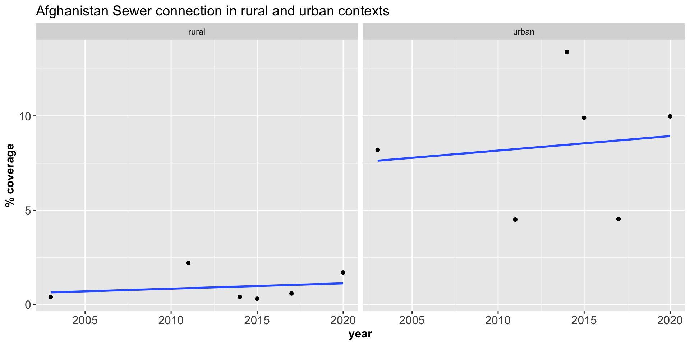
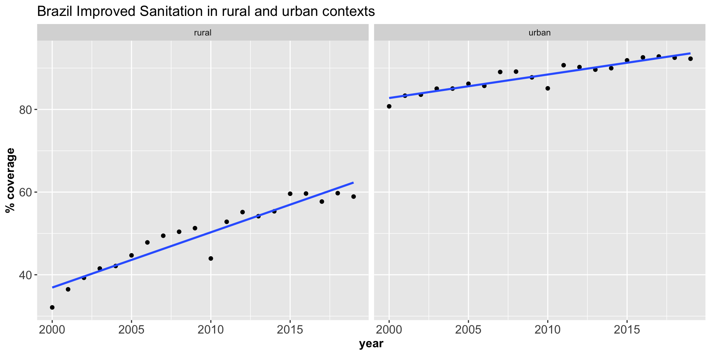

Research workshop summary slides
DATA SCIENCE WORKSHOP
SDG 6.2 Reproducibility
Agenda
Overall vision (raw data, estimates code, jmp estimates package)
Raw data package documentation (proof-of-concept website)
- Statistics of the raw data
Master Thesis Project
- Input: Data Package
- Status
- What has worked? What hasn’t?
- Plots exploring the statistics
- Recommendations
- Gaps
- Learning
- Next steps
Project outline
Introduction
Methods
Results
- Linear regression: Comparison of primary estimates with JMP Estimates
- Measures of goodness of fit: How well does the model fit the data for different countries?(R squared, pvalue)
- Alternative models: Moving beyond linearity
Discussion
Conclusion and recommendations
Masters thesis progress
Objectives
- Generate sanitation estimates from raw packaged data using documented methods
- Fit different statistical models to assess goodness of fit
Status
- Managed to derive estimates for the primary indicators
Reproducibility : Comparing our results to JMP estimates
- Show plots comparing estimates
Plotting Model coefficients
Model fit : R squared


Model fit : P value

Plot linear fit of different countries: Shared/Sewer
OLS Regression : r squared < 0.30
Alternative models
- Fitting different models to the data to compare goodness of fit
Family: gaussian
Link function: identity
Formula:
mean_value ~ s(year, bs = "cs")
Parametric coefficients:
Estimate Std. Error t value Pr(>|t|)
(Intercept) 38.33 0.36 107 <0.0000000000000002 ***
---
Signif. codes: 0 '***' 0.001 '**' 0.01 '*' 0.05 '.' 0.1 ' ' 1
Approximate significance of smooth terms:
edf Ref.df F p-value
s(year) 8.4 9 6.53 <0.0000000000000002 ***
---
Signif. codes: 0 '***' 0.001 '**' 0.01 '*' 0.05 '.' 0.1 ' ' 1
R-sq.(adj) = 0.00513 Deviance explained = 0.594%
GCV = 1336.8 Scale est. = 1335.6 n = 10317| term | edf | ref.df | statistic | p.value |
|---|---|---|---|---|
| s(year) | 8.4 | 9 | 6.5 | 0 |
| iso3 | residence | var_long | year | mean_value | .residual | .value |
|---|---|---|---|---|---|---|
| AFG | rural | Improved | 2003 | 27.28 | -11.93 | 39 |
| AFG | rural | Improved | 2005 | 31.18 | -3.42 | 35 |
| AFG | rural | Improved | 2008 | 30.10 | -7.39 | 37 |
| AFG | rural | Improved | 2011 | 44.20 | 6.13 | 38 |
| AFG | rural | Improved | 2012 | 36.35 | -3.88 | 40 |
| AFG | rural | Improved | 2014 | 27.00 | -15.86 | 43 |
| AFG | rural | Improved | 2015 | 48.05 | 6.11 | 42 |
| AFG | rural | Improved | 2017 | 43.79 | 7.56 | 36 |
| AFG | rural | Improved | 2020 | 61.94 | 26.52 | 35 |
| AFG | rural | Open defecation | 2003 | 34.91 | -4.30 | 39 |
| AFG | rural | Open defecation | 2005 | 14.72 | -19.88 | 35 |
| AFG | rural | Open defecation | 2008 | 25.60 | -11.89 | 37 |
| AFG | rural | Open defecation | 2011 | 21.30 | -16.77 | 38 |
| AFG | rural | Open defecation | 2014 | 24.80 | -18.06 | 43 |
| AFG | rural | Open defecation | 2015 | 16.10 | -25.84 | 42 |
| AFG | rural | Open defecation | 2017 | 17.73 | -18.50 | 36 |
| AFG | rural | Open defecation | 2020 | 14.92 | -20.49 | 35 |
| AFG | rural | Septic | 2011 | 1.00 | -37.07 | 38 |
| AFG | rural | Septic | 2014 | 1.00 | -41.86 | 43 |
| AFG | rural | Septic | 2015 | 3.00 | -38.94 | 42 |
| AFG | rural | Septic | 2017 | 1.02 | -35.21 | 36 |
| AFG | rural | Septic | 2020 | 1.86 | -33.56 | 35 |
| AFG | rural | Sewer | 2003 | 0.40 | -38.81 | 39 |
| AFG | rural | Sewer | 2011 | 2.20 | -35.87 | 38 |
| AFG | rural | Sewer | 2014 | 0.40 | -42.46 | 43 |
| AFG | rural | Sewer | 2015 | 0.30 | -41.64 | 42 |
| AFG | rural | Sewer | 2017 | 0.58 | -35.65 | 36 |
| AFG | rural | Sewer | 2020 | 1.69 | -33.72 | 35 |
| AFG | rural | Shared | 2008 | 16.70 | -20.79 | 37 |
| AFG | rural | Shared | 2011 | 6.35 | -31.73 | 38 |
| AFG | rural | Shared | 2012 | 17.00 | -23.23 | 40 |
| AFG | rural | Shared | 2014 | 19.50 | -23.36 | 43 |
| AFG | rural | Shared | 2015 | 8.39 | -33.55 | 42 |
| AFG | rural | Shared | 2017 | 15.70 | -20.53 | 36 |
| AFG | urban | Improved | 2003 | 44.20 | 4.99 | 39 |
| AFG | urban | Improved | 2005 | 62.28 | 27.68 | 35 |
| AFG | urban | Improved | 2008 | 58.30 | 20.81 | 37 |
| AFG | urban | Improved | 2011 | 70.90 | 32.83 | 38 |
| AFG | urban | Improved | 2012 | 62.00 | 21.77 | 40 |
| AFG | urban | Improved | 2014 | 76.60 | 33.74 | 43 |
| AFG | urban | Improved | 2015 | 83.60 | 41.66 | 42 |
| AFG | urban | Improved | 2017 | 83.26 | 47.03 | 36 |
| AFG | urban | Improved | 2020 | 83.48 | 48.07 | 35 |
| AFG | urban | Open defecation | 2003 | 12.80 | -26.41 | 39 |
| AFG | urban | Open defecation | 2005 | 0.18 | -34.41 | 35 |
| AFG | urban | Open defecation | 2008 | 0.50 | -36.99 | 37 |
| AFG | urban | Open defecation | 2011 | 0.60 | -37.47 | 38 |
| AFG | urban | Open defecation | 2014 | 0.70 | -42.16 | 43 |
| AFG | urban | Open defecation | 2015 | 1.40 | -40.54 | 42 |
| AFG | urban | Open defecation | 2017 | 0.53 | -35.70 | 36 |
| AFG | urban | Open defecation | 2020 | 0.25 | -35.17 | 35 |
| AFG | urban | Septic | 2011 | 22.80 | -15.27 | 38 |
| AFG | urban | Septic | 2014 | 21.70 | -21.16 | 43 |
| AFG | urban | Septic | 2015 | 34.90 | -7.04 | 42 |
| AFG | urban | Septic | 2017 | 33.71 | -2.52 | 36 |
| AFG | urban | Septic | 2020 | 22.59 | -12.83 | 35 |
| AFG | urban | Sewer | 2003 | 8.20 | -31.01 | 39 |
| AFG | urban | Sewer | 2011 | 4.50 | -33.57 | 38 |
| AFG | urban | Sewer | 2014 | 13.40 | -29.46 | 43 |
| AFG | urban | Sewer | 2015 | 9.90 | -32.04 | 42 |
| AFG | urban | Sewer | 2017 | 4.53 | -31.70 | 36 |
| AFG | urban | Sewer | 2020 | 9.98 | -25.44 | 35 |
| AFG | urban | Shared | 2008 | 35.70 | -1.79 | 37 |
| AFG | urban | Shared | 2011 | 15.37 | -22.70 | 38 |
| AFG | urban | Shared | 2012 | 37.50 | -2.73 | 40 |
| AFG | urban | Shared | 2014 | 33.60 | -9.26 | 43 |
| AFG | urban | Shared | 2015 | 13.64 | -28.30 | 42 |
| AFG | urban | Shared | 2017 | 32.00 | -4.23 | 36 |
| AGO | rural | Improved | 2001 | 11.11 | -30.00 | 41 |
| AGO | rural | Improved | 2007 | 18.30 | -19.01 | 37 |
| AGO | rural | Improved | 2009 | 19.63 | -17.10 | 37 |
| AGO | rural | Improved | 2011 | 21.01 | -17.07 | 38 |
| AGO | rural | Improved | 2014 | 25.88 | -16.98 | 43 |
| AGO | rural | Improved | 2016 | 29.37 | -9.87 | 39 |
| AGO | rural | Open defecation | 2001 | 73.40 | 32.29 | 41 |
| AGO | rural | Open defecation | 2007 | 50.90 | 13.59 | 37 |
| AGO | rural | Open defecation | 2009 | 63.46 | 26.73 | 37 |
| AGO | rural | Open defecation | 2011 | 55.69 | 17.62 | 38 |
| AGO | rural | Open defecation | 2016 | 62.79 | 23.54 | 39 |
| AGO | rural | Septic | 2001 | 1.30 | -39.81 | 41 |
| AGO | rural | Septic | 2007 | 4.00 | -33.31 | 37 |
| AGO | rural | Septic | 2009 | 12.59 | -24.13 | 37 |
| AGO | rural | Septic | 2011 | 4.61 | -33.47 | 38 |
| AGO | rural | Septic | 2014 | 25.35 | -17.51 | 43 |
| AGO | rural | Septic | 2016 | 27.07 | -12.17 | 39 |
| AGO | rural | Sewer | 2001 | 2.20 | -38.91 | 41 |
| AGO | rural | Sewer | 2007 | 0.20 | -37.11 | 37 |
| AGO | rural | Sewer | 2009 | 2.59 | -34.13 | 37 |
| AGO | rural | Sewer | 2011 | 0.61 | -37.46 | 38 |
| AGO | rural | Sewer | 2016 | 2.30 | -36.95 | 39 |
| AGO | rural | Shared | 2016 | 20.40 | -18.84 | 39 |
| AGO | urban | Improved | 2001 | 63.84 | 22.73 | 41 |
| AGO | urban | Improved | 2007 | 83.70 | 46.39 | 37 |
| AGO | urban | Improved | 2009 | 80.09 | 43.37 | 37 |
| AGO | urban | Improved | 2011 | 89.06 | 50.99 | 38 |
| AGO | urban | Improved | 2014 | 81.76 | 38.90 | 43 |
| AGO | urban | Improved | 2016 | 87.32 | 48.08 | 39 |
| AGO | urban | Open defecation | 2001 | 24.20 | -16.91 | 41 |
| AGO | urban | Open defecation | 2007 | 3.00 | -34.31 | 37 |
| AGO | urban | Open defecation | 2009 | 10.26 | -26.46 | 37 |
| AGO | urban | Open defecation | 2011 | 5.37 | -32.70 | 38 |
| AGO | urban | Open defecation | 2016 | 7.76 | -31.48 | 39 |
| AGO | urban | Septic | 2001 | 11.20 | -29.91 | 41 |
| AGO | urban | Septic | 2007 | 35.00 | -2.31 | 37 |
| AGO | urban | Septic | 2009 | 26.09 | -10.63 | 37 |
| AGO | urban | Septic | 2011 | 30.11 | -7.97 | 38 |
| AGO | urban | Septic | 2014 | 76.24 | 33.38 | 43 |
| AGO | urban | Septic | 2016 | 75.64 | 36.40 | 39 |
| AGO | urban | Sewer | 2001 | 18.50 | -22.61 | 41 |
| AGO | urban | Sewer | 2007 | 14.40 | -22.91 | 37 |
| AGO | urban | Sewer | 2009 | 22.52 | -14.20 | 37 |
| AGO | urban | Sewer | 2011 | 25.45 | -12.63 | 38 |
| AGO | urban | Sewer | 2016 | 11.68 | -27.56 | 39 |
| AGO | urban | Shared | 2016 | 30.27 | -8.97 | 39 |
| AIA | urban | Improved | 2001 | 92.53 | 51.43 | 41 |
| AIA | urban | Improved | 2002 | 95.00 | 53.55 | 41 |
| AIA | urban | Improved | 2009 | 96.80 | 60.08 | 37 |
| AIA | urban | Improved | 2011 | 98.35 | 60.28 | 38 |
| AIA | urban | Open defecation | 2001 | 2.09 | -39.02 | 41 |
| AIA | urban | Open defecation | 2011 | 0.80 | -37.27 | 38 |
| AIA | urban | Septic | 2009 | 93.90 | 57.18 | 37 |
| AIA | urban | Sewer | 2009 | 1.20 | -35.52 | 37 |
| AIA | urban | Shared | 2011 | 2.40 | -35.67 | 38 |
| ALB | rural | Improved | 2000 | 78.00 | 38.45 | 40 |
| ALB | rural | Improved | 2001 | 87.07 | 45.96 | 41 |
| ALB | rural | Improved | 2002 | 89.31 | 47.86 | 41 |
| ALB | rural | Improved | 2003 | 89.96 | 50.75 | 39 |
| ALB | rural | Improved | 2005 | 87.73 | 53.13 | 35 |
| ALB | rural | Improved | 2006 | 98.50 | 62.81 | 36 |
| ALB | rural | Improved | 2008 | 91.13 | 53.63 | 37 |
| ALB | rural | Improved | 2009 | 90.30 | 53.58 | 37 |
| ALB | rural | Improved | 2011 | 98.90 | 60.83 | 38 |
| ALB | rural | Improved | 2012 | 96.11 | 55.88 | 40 |
| ALB | rural | Improved | 2018 | 95.32 | 60.77 | 35 |
| ALB | rural | Open defecation | 2001 | 1.24 | -39.87 | 41 |
| ALB | rural | Open defecation | 2009 | 0.00 | -36.72 | 37 |
| ALB | rural | Open defecation | 2011 | 1.12 | -36.95 | 38 |
| ALB | rural | Open defecation | 2018 | 0.01 | -34.55 | 35 |
| ALB | rural | Septic | 2006 | 21.30 | -14.39 | 36 |
| ALB | rural | Septic | 2009 | 24.00 | -12.72 | 37 |
| ALB | rural | Septic | 2018 | 9.74 | -24.81 | 35 |
| ALB | rural | Sewer | 2000 | 36.60 | -2.95 | 40 |
| ALB | rural | Sewer | 2006 | 61.20 | 25.51 | 36 |
| ALB | rural | Sewer | 2018 | 47.83 | 13.27 | 35 |
| ALB | rural | Shared | 2006 | 1.02 | -34.68 | 36 |
| ALB | rural | Shared | 2009 | 2.66 | -34.06 | 37 |
| ALB | rural | Shared | 2018 | 0.61 | -33.95 | 35 |
| ALB | urban | Improved | 2000 | 98.50 | 58.95 | 40 |
| ALB | urban | Improved | 2001 | 98.36 | 57.25 | 41 |
| ALB | urban | Improved | 2002 | 99.28 | 57.84 | 41 |
| ALB | urban | Improved | 2003 | 99.27 | 60.05 | 39 |
| ALB | urban | Improved | 2005 | 99.29 | 64.69 | 35 |
| ALB | urban | Improved | 2006 | 99.40 | 63.71 | 36 |
| ALB | urban | Improved | 2008 | 99.59 | 62.09 | 37 |
| ALB | urban | Improved | 2009 | 99.20 | 62.48 | 37 |
| ALB | urban | Improved | 2011 | 99.70 | 61.63 | 38 |
| ALB | urban | Improved | 2012 | 99.98 | 59.75 | 40 |
| ALB | urban | Improved | 2018 | 98.97 | 64.41 | 35 |
| ALB | urban | Open defecation | 2001 | 0.47 | -40.63 | 41 |
| ALB | urban | Open defecation | 2009 | 0.00 | -36.72 | 37 |
| ALB | urban | Open defecation | 2011 | 0.30 | -37.78 | 38 |
| ALB | urban | Open defecation | 2018 | 0.02 | -34.54 | 35 |
| ALB | urban | Septic | 2006 | 1.60 | -34.09 | 36 |
| ALB | urban | Septic | 2009 | 4.40 | -32.32 | 37 |
| ALB | urban | Septic | 2018 | 1.44 | -33.11 | 35 |
| ALB | urban | Sewer | 2000 | 94.80 | 55.25 | 40 |
| ALB | urban | Sewer | 2001 | 92.39 | 51.28 | 41 |
| ALB | urban | Sewer | 2002 | 96.35 | 54.91 | 41 |
| ALB | urban | Sewer | 2003 | 96.50 | 57.28 | 39 |
| ALB | urban | Sewer | 2005 | 97.06 | 62.46 | 35 |
| ALB | urban | Sewer | 2006 | 97.20 | 61.51 | 36 |
| ALB | urban | Sewer | 2008 | 98.54 | 61.05 | 37 |
| ALB | urban | Sewer | 2011 | 98.00 | 59.93 | 38 |
| ALB | urban | Sewer | 2012 | 98.21 | 57.99 | 40 |
| ALB | urban | Sewer | 2018 | 91.09 | 56.53 | 35 |
| ALB | urban | Shared | 2006 | 1.71 | -33.98 | 36 |
| ALB | urban | Shared | 2009 | 1.71 | -35.01 | 37 |
| ALB | urban | Shared | 2018 | 0.63 | -33.92 | 35 |
| AND | rural | Improved | 2000 | 100.00 | 60.45 | 40 |
| AND | rural | Improved | 2001 | 100.00 | 58.89 | 41 |
| AND | rural | Improved | 2002 | 100.00 | 58.55 | 41 |
| AND | rural | Improved | 2003 | 100.00 | 60.79 | 39 |
| AND | rural | Improved | 2004 | 100.00 | 63.96 | 36 |
| AND | rural | Improved | 2005 | 100.00 | 65.40 | 35 |
| AND | rural | Improved | 2006 | 100.00 | 64.31 | 36 |
| AND | rural | Improved | 2007 | 100.00 | 62.69 | 37 |
| AND | rural | Improved | 2008 | 100.00 | 62.51 | 37 |
| AND | rural | Improved | 2009 | 100.00 | 63.28 | 37 |
| AND | rural | Improved | 2010 | 100.00 | 63.37 | 37 |
| AND | rural | Improved | 2011 | 100.00 | 61.93 | 38 |
| AND | rural | Improved | 2012 | 100.00 | 59.77 | 40 |
| AND | rural | Sewer | 2000 | 100.00 | 60.45 | 40 |
| AND | rural | Sewer | 2001 | 100.00 | 58.89 | 41 |
| AND | rural | Sewer | 2002 | 100.00 | 58.55 | 41 |
| AND | rural | Sewer | 2003 | 100.00 | 60.79 | 39 |
| AND | rural | Sewer | 2004 | 100.00 | 63.96 | 36 |
| AND | rural | Sewer | 2005 | 100.00 | 65.40 | 35 |
| AND | rural | Sewer | 2006 | 100.00 | 64.31 | 36 |
| AND | rural | Sewer | 2007 | 100.00 | 62.69 | 37 |
| AND | rural | Sewer | 2008 | 100.00 | 62.51 | 37 |
| AND | rural | Sewer | 2009 | 100.00 | 63.28 | 37 |
| AND | rural | Sewer | 2010 | 100.00 | 63.37 | 37 |
| AND | rural | Sewer | 2011 | 100.00 | 61.93 | 38 |
| AND | rural | Sewer | 2012 | 100.00 | 59.77 | 40 |
| AND | urban | Improved | 2000 | 100.00 | 60.45 | 40 |
| AND | urban | Improved | 2001 | 100.00 | 58.89 | 41 |
| AND | urban | Improved | 2002 | 100.00 | 58.55 | 41 |
| AND | urban | Improved | 2003 | 100.00 | 60.79 | 39 |
| AND | urban | Improved | 2004 | 100.00 | 63.96 | 36 |
| AND | urban | Improved | 2005 | 100.00 | 65.40 | 35 |
| AND | urban | Improved | 2006 | 100.00 | 64.31 | 36 |
| AND | urban | Improved | 2007 | 100.00 | 62.69 | 37 |
| AND | urban | Improved | 2008 | 100.00 | 62.51 | 37 |
| AND | urban | Improved | 2009 | 100.00 | 63.28 | 37 |
| AND | urban | Improved | 2010 | 100.00 | 63.37 | 37 |
| AND | urban | Improved | 2011 | 100.00 | 61.93 | 38 |
| AND | urban | Improved | 2012 | 100.00 | 59.77 | 40 |
| AND | urban | Sewer | 2000 | 100.00 | 60.45 | 40 |
| AND | urban | Sewer | 2001 | 100.00 | 58.89 | 41 |
| AND | urban | Sewer | 2002 | 100.00 | 58.55 | 41 |
| AND | urban | Sewer | 2003 | 100.00 | 60.79 | 39 |
| AND | urban | Sewer | 2004 | 100.00 | 63.96 | 36 |
| AND | urban | Sewer | 2005 | 100.00 | 65.40 | 35 |
| AND | urban | Sewer | 2006 | 100.00 | 64.31 | 36 |
| AND | urban | Sewer | 2007 | 100.00 | 62.69 | 37 |
| AND | urban | Sewer | 2008 | 100.00 | 62.51 | 37 |
| AND | urban | Sewer | 2009 | 100.00 | 63.28 | 37 |
| AND | urban | Sewer | 2010 | 100.00 | 63.37 | 37 |
| AND | urban | Sewer | 2011 | 100.00 | 61.93 | 38 |
| AND | urban | Sewer | 2012 | 100.00 | 59.77 | 40 |
| ARG | rural | Improved | 2001 | 74.39 | 33.28 | 41 |
| ARG | rural | Improved | 2005 | 73.61 | 39.01 | 35 |
| ARG | rural | Improved | 2010 | 80.09 | 43.46 | 37 |
| ARG | rural | Open defecation | 2010 | 7.69 | -28.94 | 37 |
| ARG | rural | Septic | 2001 | 28.34 | -12.77 | 41 |
| ARG | rural | Septic | 2005 | 24.16 | -10.43 | 35 |
| ARG | rural | Septic | 2010 | 37.48 | 0.85 | 37 |
| ARG | rural | Sewer | 2001 | 1.98 | -39.13 | 41 |
| ARG | rural | Sewer | 2005 | 2.06 | -32.54 | 35 |
| ARG | rural | Sewer | 2010 | 4.51 | -32.12 | 37 |
| ARG | rural | Shared | 2001 | 6.22 | -34.89 | 41 |
| ARG | rural | Shared | 2005 | 3.06 | -31.53 | 35 |
| ARG | rural | Shared | 2010 | 5.50 | -31.13 | 37 |
| ARG | urban | Improved | 2001 | 91.68 | 50.57 | 41 |
| ARG | urban | Improved | 2005 | 95.71 | 61.12 | 35 |
| ARG | urban | Improved | 2009 | 98.59 | 61.86 | 37 |
| ARG | urban | Improved | 2010 | 97.92 | 61.29 | 37 |
| ARG | urban | Improved | 2012 | 96.06 | 55.83 | 40 |
| ARG | urban | Improved | 2013 | 98.34 | 56.26 | 42 |
| ARG | urban | Improved | 2018 | 98.95 | 64.40 | 35 |
| ARG | urban | Open defecation | 2005 | 0.71 | -33.89 | 35 |
| ARG | urban | Open defecation | 2009 | 0.44 | -36.29 | 37 |
| ARG | urban | Open defecation | 2010 | 2.07 | -34.56 | 37 |
| ARG | urban | Open defecation | 2012 | 2.81 | -37.41 | 40 |
| ARG | urban | Open defecation | 2013 | 0.91 | -41.17 | 42 |
| ARG | urban | Open defecation | 2018 | 0.40 | -34.16 | 35 |
| ARG | urban | Septic | 2001 | 24.69 | -16.42 | 41 |
| ARG | urban | Septic | 2005 | 27.23 | -7.36 | 35 |
| ARG | urban | Septic | 2009 | 26.95 | -9.77 | 37 |
| ARG | urban | Septic | 2010 | 25.41 | -11.22 | 37 |
| ARG | urban | Septic | 2012 | 21.60 | -18.63 | 40 |
| ARG | urban | Septic | 2013 | 24.00 | -18.07 | 42 |
| ARG | urban | Septic | 2018 | 22.83 | -11.72 | 35 |
| ARG | urban | Sewer | 2001 | 47.28 | 6.17 | 41 |
| ARG | urban | Sewer | 2005 | 53.11 | 18.51 | 35 |
| ARG | urban | Sewer | 2009 | 59.14 | 22.42 | 37 |
| ARG | urban | Sewer | 2010 | 53.81 | 17.18 | 37 |
| ARG | urban | Sewer | 2012 | 57.97 | 17.74 | 40 |
| ARG | urban | Sewer | 2013 | 60.58 | 18.50 | 42 |
| ARG | urban | Sewer | 2018 | 63.76 | 29.20 | 35 |
| ARG | urban | Shared | 2001 | 4.43 | -36.67 | 41 |
| ARG | urban | Shared | 2005 | 2.98 | -31.62 | 35 |
| ARG | urban | Shared | 2009 | 1.61 | -35.11 | 37 |
| ARG | urban | Shared | 2010 | 4.40 | -32.23 | 37 |
| ARG | urban | Shared | 2012 | 3.18 | -37.05 | 40 |
| ARG | urban | Shared | 2013 | 2.51 | -39.57 | 42 |
| ARG | urban | Shared | 2018 | 1.16 | -33.40 | 35 |
| ARM | rural | Improved | 2000 | 83.77 | 44.22 | 40 |
| ARM | rural | Improved | 2001 | 80.51 | 39.40 | 41 |
| ARM | rural | Improved | 2002 | 82.23 | 40.78 | 41 |
| ARM | rural | Improved | 2003 | 82.18 | 42.97 | 39 |
| ARM | rural | Improved | 2004 | 80.00 | 43.96 | 36 |
| ARM | rural | Improved | 2005 | 81.81 | 47.22 | 35 |
| ARM | rural | Improved | 2006 | 81.45 | 45.76 | 36 |
| ARM | rural | Improved | 2007 | 81.91 | 44.60 | 37 |
| ARM | rural | Improved | 2008 | 81.42 | 43.93 | 37 |
| ARM | rural | Improved | 2009 | 81.97 | 45.25 | 37 |
| ARM | rural | Improved | 2010 | 81.75 | 45.12 | 37 |
| ARM | rural | Improved | 2011 | 87.59 | 49.51 | 38 |
| ARM | rural | Improved | 2012 | 80.05 | 39.82 | 40 |
| ARM | rural | Improved | 2013 | 81.08 | 39.00 | 42 |
| ARM | rural | Improved | 2014 | 80.85 | 37.99 | 43 |
| ARM | rural | Improved | 2015 | 81.72 | 39.78 | 42 |
| ARM | rural | Improved | 2016 | 88.40 | 49.15 | 39 |
| ARM | rural | Improved | 2017 | 82.87 | 46.64 | 36 |
| ARM | rural | Improved | 2018 | 83.63 | 49.07 | 35 |
| ARM | rural | Open defecation | 2005 | 0.00 | -34.60 | 35 |
| ARM | rural | Open defecation | 2010 | 0.10 | -36.53 | 37 |
| ARM | rural | Open defecation | 2016 | 0.00 | -39.24 | 39 |
| ARM | rural | Septic | 2005 | 0.30 | -34.30 | 35 |
| ARM | rural | Septic | 2010 | 1.16 | -35.48 | 37 |
| ARM | rural | Septic | 2016 | 5.66 | -33.59 | 39 |
| ARM | rural | Sewer | 2000 | 18.77 | -20.79 | 40 |
| ARM | rural | Sewer | 2001 | 24.60 | -16.51 | 41 |
| ARM | rural | Sewer | 2002 | 22.50 | -18.95 | 41 |
| ARM | rural | Sewer | 2003 | 22.30 | -16.91 | 39 |
| ARM | rural | Sewer | 2004 | 12.80 | -23.24 | 36 |
| ARM | rural | Sewer | 2005 | 17.50 | -17.10 | 35 |
| ARM | rural | Sewer | 2006 | 19.10 | -16.59 | 36 |
| ARM | rural | Sewer | 2007 | 21.10 | -16.21 | 37 |
| ARM | rural | Sewer | 2008 | 19.00 | -18.49 | 37 |
| ARM | rural | Sewer | 2009 | 21.40 | -15.32 | 37 |
| ARM | rural | Sewer | 2010 | 19.66 | -16.97 | 37 |
| ARM | rural | Sewer | 2011 | 17.00 | -21.07 | 38 |
| ARM | rural | Sewer | 2012 | 13.00 | -27.23 | 40 |
| ARM | rural | Sewer | 2013 | 17.50 | -24.58 | 42 |
| ARM | rural | Sewer | 2014 | 16.50 | -26.36 | 43 |
| ARM | rural | Sewer | 2015 | 20.30 | -21.64 | 42 |
| ARM | rural | Sewer | 2016 | 24.33 | -14.92 | 39 |
| ARM | rural | Sewer | 2017 | 25.30 | -10.93 | 36 |
| ARM | rural | Sewer | 2018 | 28.60 | -5.96 | 35 |
| ARM | rural | Shared | 2000 | 4.97 | -34.59 | 40 |
| ARM | rural | Shared | 2005 | 3.19 | -31.40 | 35 |
| ARM | rural | Shared | 2010 | 3.25 | -33.38 | 37 |
| ARM | rural | Shared | 2011 | 5.07 | -33.00 | 38 |
| ARM | rural | Shared | 2016 | 0.39 | -38.85 | 39 |
| ARM | urban | Improved | 2000 | 97.52 | 57.97 | 40 |
| ARM | urban | Improved | 2001 | 97.36 | 56.25 | 41 |
| ARM | urban | Improved | 2002 | 97.08 | 55.63 | 41 |
| ARM | urban | Improved | 2003 | 97.52 | 58.31 | 39 |
| ARM | urban | Improved | 2004 | 96.56 | 60.51 | 36 |
| ARM | urban | Improved | 2005 | 97.88 | 63.28 | 35 |
| ARM | urban | Improved | 2006 | 98.38 | 62.69 | 36 |
| ARM | urban | Improved | 2007 | 98.43 | 61.12 | 37 |
| ARM | urban | Improved | 2008 | 98.54 | 61.05 | 37 |
| ARM | urban | Improved | 2010 | 99.21 | 62.58 | 37 |
| ARM | urban | Improved | 2011 | 98.27 | 60.19 | 38 |
| ARM | urban | Improved | 2012 | 99.33 | 59.10 | 40 |
| ARM | urban | Improved | 2013 | 99.38 | 57.30 | 42 |
| ARM | urban | Improved | 2014 | 99.16 | 56.31 | 43 |
| ARM | urban | Improved | 2015 | 99.41 | 57.47 | 42 |
| ARM | urban | Improved | 2016 | 99.50 | 60.25 | 39 |
| ARM | urban | Improved | 2017 | 99.64 | 63.41 | 36 |
| ARM | urban | Improved | 2018 | 99.69 | 65.13 | 35 |
| ARM | urban | Open defecation | 2005 | 0.10 | -34.50 | 35 |
| ARM | urban | Open defecation | 2010 | 0.00 | -36.63 | 37 |
| ARM | urban | Open defecation | 2016 | 0.00 | -39.24 | 39 |
| ARM | urban | Septic | 2005 | 0.30 | -34.30 | 35 |
| ARM | urban | Septic | 2010 | 0.10 | -36.53 | 37 |
| ARM | urban | Septic | 2016 | 0.32 | -38.92 | 39 |
| ARM | urban | Sewer | 2000 | 86.25 | 46.70 | 40 |
| ARM | urban | Sewer | 2001 | 80.80 | 39.69 | 41 |
| ARM | urban | Sewer | 2002 | 82.20 | 40.75 | 41 |
| ARM | urban | Sewer | 2003 | 84.90 | 45.69 | 39 |
| ARM | urban | Sewer | 2004 | 79.00 | 42.96 | 36 |
| ARM | urban | Sewer | 2005 | 87.70 | 53.10 | 35 |
| ARM | urban | Sewer | 2006 | 90.10 | 54.41 | 36 |
| ARM | urban | Sewer | 2007 | 90.40 | 53.09 | 37 |
| ARM | urban | Sewer | 2008 | 91.10 | 53.61 | 37 |
| ARM | urban | Sewer | 2010 | 95.85 | 59.22 | 37 |
| ARM | urban | Sewer | 2011 | 96.40 | 58.33 | 38 |
| ARM | urban | Sewer | 2012 | 95.90 | 55.67 | 40 |
| ARM | urban | Sewer | 2013 | 96.20 | 54.12 | 42 |
| ARM | urban | Sewer | 2014 | 94.90 | 52.04 | 43 |
| ARM | urban | Sewer | 2015 | 96.40 | 54.46 | 42 |
| ARM | urban | Sewer | 2016 | 95.71 | 56.46 | 39 |
| ARM | urban | Sewer | 2017 | 97.80 | 61.57 | 36 |
| ARM | urban | Sewer | 2018 | 98.10 | 63.54 | 35 |
| ARM | urban | Shared | 2000 | 6.53 | -33.02 | 40 |
| ARM | urban | Shared | 2005 | 1.32 | -33.28 | 35 |
| ARM | urban | Shared | 2010 | 1.16 | -35.47 | 37 |
| ARM | urban | Shared | 2011 | 2.00 | -36.07 | 38 |
| ARM | urban | Shared | 2016 | 0.55 | -38.69 | 39 |
| AUT | rural | Improved | 2000 | 100.00 | 60.45 | 40 |
| AUT | rural | Improved | 2001 | 100.00 | 58.89 | 41 |
| AUT | rural | Improved | 2002 | 100.00 | 58.55 | 41 |
| AUT | rural | Improved | 2003 | 100.00 | 60.79 | 39 |
| AUT | rural | Improved | 2004 | 100.00 | 63.96 | 36 |
| AUT | rural | Improved | 2012 | 100.00 | 59.77 | 40 |
| AUT | rural | Improved | 2013 | 100.00 | 57.92 | 42 |
| AUT | rural | Improved | 2014 | 100.00 | 57.14 | 43 |
| AUT | rural | Improved | 2015 | 100.00 | 58.06 | 42 |
| AUT | rural | Septic | 2012 | 16.11 | -24.12 | 40 |
| AUT | rural | Septic | 2013 | 16.12 | -25.96 | 42 |
| AUT | rural | Septic | 2014 | 14.67 | -28.19 | 43 |
| AUT | rural | Septic | 2015 | 14.69 | -27.25 | 42 |
| AUT | rural | Sewer | 2012 | 83.49 | 43.26 | 40 |
| AUT | rural | Sewer | 2013 | 83.68 | 41.60 | 42 |
| AUT | rural | Sewer | 2014 | 85.13 | 42.28 | 43 |
| AUT | rural | Sewer | 2015 | 85.01 | 43.07 | 42 |
| AUT | rural | Shared | 2012 | 0.00 | -40.23 | 40 |
| AUT | urban | Improved | 2000 | 100.00 | 60.45 | 40 |
| AUT | urban | Improved | 2001 | 100.00 | 58.89 | 41 |
| AUT | urban | Improved | 2002 | 100.00 | 58.55 | 41 |
| AUT | urban | Improved | 2003 | 100.00 | 60.79 | 39 |
| AUT | urban | Improved | 2004 | 100.00 | 63.96 | 36 |
| AUT | urban | Improved | 2012 | 100.00 | 59.77 | 40 |
| AUT | urban | Improved | 2013 | 100.00 | 57.92 | 42 |
| AUT | urban | Improved | 2014 | 99.86 | 57.00 | 43 |
| AUT | urban | Improved | 2015 | 100.00 | 58.06 | 42 |
| AUT | urban | Septic | 2012 | 0.00 | -40.23 | 40 |
| AUT | urban | Septic | 2013 | 0.00 | -42.08 | 42 |
| AUT | urban | Septic | 2014 | 0.00 | -42.86 | 43 |
| AUT | urban | Septic | 2015 | 0.00 | -41.94 | 42 |
| AUT | urban | Sewer | 2012 | 98.00 | 57.77 | 40 |
| AUT | urban | Sewer | 2013 | 98.50 | 56.42 | 42 |
| AUT | urban | Sewer | 2014 | 98.46 | 55.60 | 43 |
| AUT | urban | Sewer | 2015 | 98.50 | 56.56 | 42 |
| AUT | urban | Shared | 2012 | 0.00 | -40.23 | 40 |
| AZE | rural | Improved | 2000 | 51.88 | 12.32 | 40 |
| AZE | rural | Improved | 2006 | 73.12 | 37.43 | 36 |
| AZE | rural | Improved | 2011 | 84.90 | 46.83 | 38 |
| AZE | rural | Improved | 2013 | 90.83 | 48.75 | 42 |
| AZE | rural | Open defecation | 2000 | 0.10 | -39.45 | 40 |
| AZE | rural | Open defecation | 2006 | 0.50 | -35.19 | 36 |
| AZE | rural | Open defecation | 2011 | 0.20 | -37.87 | 38 |
| AZE | rural | Open defecation | 2013 | 0.08 | -42.00 | 42 |
| AZE | rural | Septic | 2006 | 0.87 | -34.82 | 36 |
| AZE | rural | Septic | 2011 | 1.10 | -36.97 | 38 |
| AZE | rural | Septic | 2013 | 5.42 | -36.66 | 42 |
| AZE | rural | Sewer | 2006 | 1.61 | -34.08 | 36 |
| AZE | rural | Sewer | 2011 | 4.80 | -33.27 | 38 |
| AZE | rural | Sewer | 2013 | 6.67 | -35.41 | 42 |
| AZE | rural | Sewer | 2015 | 9.90 | -32.04 | 42 |
| AZE | rural | Sewer | 2018 | 26.00 | -8.56 | 35 |
| AZE | rural | Shared | 2006 | 3.36 | -32.33 | 36 |
| AZE | rural | Shared | 2011 | 2.12 | -35.95 | 38 |
| AZE | urban | Improved | 2000 | 82.61 | 43.06 | 40 |
| AZE | urban | Improved | 2006 | 93.15 | 57.45 | 36 |
| AZE | urban | Improved | 2011 | 96.30 | 58.23 | 38 |
| AZE | urban | Improved | 2013 | 96.53 | 54.45 | 42 |
| AZE | urban | Open defecation | 2000 | 0.10 | -39.45 | 40 |
| AZE | urban | Open defecation | 2006 | 0.10 | -35.59 | 36 |
| AZE | urban | Open defecation | 2011 | 0.20 | -37.87 | 38 |
| AZE | urban | Open defecation | 2013 | 0.12 | -41.96 | 42 |
| AZE | urban | Septic | 2006 | 1.06 | -34.63 | 36 |
| AZE | urban | Septic | 2011 | 0.80 | -37.27 | 38 |
| AZE | urban | Septic | 2013 | 5.38 | -36.70 | 42 |
| AZE | urban | Sewer | 2006 | 74.04 | 38.35 | 36 |
| AZE | urban | Sewer | 2011 | 68.40 | 30.33 | 38 |
| AZE | urban | Sewer | 2013 | 75.57 | 33.49 | 42 |
| AZE | urban | Sewer | 2015 | 68.10 | 26.16 | 42 |
| AZE | urban | Sewer | 2018 | 98.20 | 63.64 | 35 |
| AZE | urban | Shared | 2006 | 11.10 | -24.59 | 36 |
| AZE | urban | Shared | 2011 | 5.71 | -32.36 | 38 |
| BDI | rural | Improved | 2000 | 41.95 | 2.40 | 40 |
| BDI | rural | Improved | 2005 | 54.56 | 19.97 | 35 |
| BDI | rural | Improved | 2006 | 56.85 | 21.16 | 36 |
| BDI | rural | Improved | 2010 | 60.50 | 23.87 | 37 |
| BDI | rural | Improved | 2012 | 47.28 | 7.05 | 40 |
| BDI | rural | Improved | 2017 | 48.94 | 12.71 | 36 |
| BDI | rural | Open defecation | 2000 | 2.80 | -36.75 | 40 |
| BDI | rural | Open defecation | 2005 | 1.00 | -33.60 | 35 |
| BDI | rural | Open defecation | 2006 | 4.23 | -31.46 | 36 |
| BDI | rural | Open defecation | 2010 | 4.18 | -32.46 | 37 |
| BDI | rural | Open defecation | 2012 | 2.58 | -37.65 | 40 |
| BDI | rural | Open defecation | 2017 | 2.43 | -33.80 | 36 |
| BDI | rural | Septic | 2005 | 0.40 | -34.20 | 35 |
| BDI | rural | Septic | 2006 | 0.16 | -35.54 | 36 |
| BDI | rural | Septic | 2010 | 0.08 | -36.55 | 37 |
| BDI | rural | Septic | 2012 | 0.10 | -40.13 | 40 |
| BDI | rural | Septic | 2017 | 0.36 | -35.87 | 36 |
| BDI | rural | Sewer | 2000 | 0.70 | -38.85 | 40 |
| BDI | rural | Sewer | 2005 | 0.10 | -34.50 | 35 |
| BDI | rural | Sewer | 2006 | 0.16 | -35.53 | 36 |
| BDI | rural | Sewer | 2010 | 0.06 | -36.57 | 37 |
| BDI | rural | Sewer | 2012 | 0.04 | -40.18 | 40 |
| BDI | rural | Sewer | 2017 | 0.05 | -36.18 | 36 |
| BDI | rural | Shared | 2005 | 7.56 | -27.03 | 35 |
| BDI | rural | Shared | 2010 | 12.73 | -23.90 | 37 |
| BDI | rural | Shared | 2012 | 13.54 | -26.69 | 40 |
| BDI | rural | Shared | 2017 | 11.06 | -25.16 | 36 |
| BDI | urban | Improved | 2000 | 65.65 | 26.10 | 40 |
| BDI | urban | Improved | 2005 | 71.35 | 36.76 | 35 |
| BDI | urban | Improved | 2006 | 67.71 | 32.01 | 36 |
| BDI | urban | Improved | 2010 | 84.77 | 48.14 | 37 |
| BDI | urban | Improved | 2012 | 81.74 | 41.52 | 40 |
| BDI | urban | Improved | 2017 | 81.04 | 44.81 | 36 |
| BDI | urban | Open defecation | 2000 | 2.40 | -37.15 | 40 |
| BDI | urban | Open defecation | 2005 | 0.80 | -33.80 | 35 |
| BDI | urban | Open defecation | 2006 | 1.37 | -34.32 | 36 |
| BDI | urban | Open defecation | 2010 | 1.90 | -34.73 | 37 |
| BDI | urban | Open defecation | 2012 | 1.09 | -39.14 | 40 |
| BDI | urban | Open defecation | 2017 | 0.48 | -35.75 | 36 |
| BDI | urban | Septic | 2005 | 18.10 | -16.50 | 35 |
| BDI | urban | Septic | 2006 | 13.29 | -22.41 | 36 |
| BDI | urban | Septic | 2010 | 17.79 | -18.84 | 37 |
| BDI | urban | Septic | 2012 | 21.45 | -18.78 | 40 |
| BDI | urban | Septic | 2017 | 27.48 | -8.74 | 36 |
| BDI | urban | Sewer | 2000 | 19.40 | -20.15 | 40 |
| BDI | urban | Sewer | 2005 | 11.70 | -22.90 | 35 |
| BDI | urban | Sewer | 2006 | 8.34 | -27.35 | 36 |
| BDI | urban | Sewer | 2010 | 7.62 | -29.01 | 37 |
| BDI | urban | Sewer | 2012 | 11.16 | -29.07 | 40 |
| BDI | urban | Sewer | 2017 | 3.21 | -33.02 | 36 |
| BDI | urban | Shared | 2005 | 30.66 | -3.94 | 35 |
| BDI | urban | Shared | 2010 | 58.24 | 21.61 | 37 |
| BDI | urban | Shared | 2012 | 50.85 | 10.62 | 40 |
| BDI | urban | Shared | 2017 | 42.93 | 6.70 | 36 |
| BEL | rural | Improved | 2000 | 100.00 | 60.45 | 40 |
| BEL | rural | Improved | 2006 | 100.00 | 64.31 | 36 |
| BEL | rural | Improved | 2012 | 99.90 | 59.67 | 40 |
| BEL | rural | Improved | 2014 | 100.03 | 57.18 | 43 |
| BEL | rural | Improved | 2015 | 100.01 | 58.07 | 42 |
| BEL | rural | Improved | 2019 | 100.00 | 65.44 | 35 |
| BEL | rural | Shared | 2012 | 0.51 | -39.72 | 40 |
| BEL | urban | Improved | 2000 | 100.00 | 60.45 | 40 |
| BEL | urban | Improved | 2006 | 100.00 | 64.31 | 36 |
| BEL | urban | Improved | 2012 | 100.00 | 59.77 | 40 |
| BEL | urban | Improved | 2014 | 99.96 | 57.10 | 43 |
| BEL | urban | Improved | 2015 | 100.04 | 58.11 | 42 |
| BEL | urban | Improved | 2019 | 100.00 | 65.44 | 35 |
| BEL | urban | Shared | 2012 | 0.51 | -39.71 | 40 |
| BEN | rural | Improved | 2001 | 9.47 | -31.63 | 41 |
| BEN | rural | Improved | 2002 | 8.11 | -33.34 | 41 |
| BEN | rural | Improved | 2003 | 11.25 | -27.96 | 39 |
| BEN | rural | Improved | 2006 | 11.72 | -23.97 | 36 |
| BEN | rural | Improved | 2009 | 13.13 | -23.59 | 37 |
| BEN | rural | Improved | 2011 | 12.21 | -25.87 | 38 |
| BEN | rural | Improved | 2012 | 12.28 | -27.95 | 40 |
| BEN | rural | Improved | 2013 | 16.82 | -25.26 | 42 |
| BEN | rural | Improved | 2014 | 15.60 | -27.26 | 43 |
| BEN | rural | Improved | 2018 | 17.70 | -16.85 | 35 |
| BEN | rural | Open defecation | 2001 | 84.70 | 43.59 | 41 |
| BEN | rural | Open defecation | 2002 | 87.50 | 46.05 | 41 |
| BEN | rural | Open defecation | 2003 | 83.40 | 44.19 | 39 |
| BEN | rural | Open defecation | 2006 | 81.43 | 45.74 | 36 |
| BEN | rural | Open defecation | 2009 | 77.00 | 40.28 | 37 |
| BEN | rural | Open defecation | 2011 | 81.41 | 43.34 | 38 |
| BEN | rural | Open defecation | 2012 | 78.62 | 38.40 | 40 |
| BEN | rural | Open defecation | 2013 | 76.50 | 34.42 | 42 |
| BEN | rural | Open defecation | 2014 | 77.10 | 34.24 | 43 |
| BEN | rural | Open defecation | 2017 | 71.00 | 34.77 | 36 |
| BEN | rural | Open defecation | 2018 | 70.54 | 35.99 | 35 |
| BEN | rural | Septic | 2011 | 0.19 | -37.88 | 38 |
| BEN | rural | Septic | 2012 | 0.43 | -39.80 | 40 |
| BEN | rural | Septic | 2014 | 0.50 | -42.36 | 43 |
| BEN | rural | Septic | 2018 | 0.55 | -34.01 | 35 |
| BEN | rural | Sewer | 2001 | 0.07 | -41.04 | 41 |
| BEN | rural | Sewer | 2002 | 0.20 | -41.25 | 41 |
| BEN | rural | Sewer | 2003 | 0.05 | -39.16 | 39 |
| BEN | rural | Sewer | 2006 | 0.09 | -35.60 | 36 |
| BEN | rural | Sewer | 2009 | 0.40 | -36.32 | 37 |
| BEN | rural | Sewer | 2011 | 0.23 | -37.85 | 38 |
| BEN | rural | Sewer | 2012 | 0.37 | -39.86 | 40 |
| BEN | rural | Sewer | 2014 | 0.20 | -42.66 | 43 |
| BEN | rural | Sewer | 2018 | 0.03 | -34.53 | 35 |
| BEN | rural | Shared | 2001 | 74.32 | 33.22 | 41 |
| BEN | rural | Shared | 2006 | 66.24 | 30.55 | 36 |
| BEN | rural | Shared | 2011 | 56.22 | 18.15 | 38 |
| BEN | rural | Shared | 2012 | 56.73 | 16.50 | 40 |
| BEN | rural | Shared | 2018 | 64.32 | 29.77 | 35 |
| BEN | urban | Improved | 2001 | 51.87 | 10.76 | 41 |
| BEN | urban | Improved | 2002 | 48.48 | 7.04 | 41 |
| BEN | urban | Improved | 2003 | 50.00 | 10.79 | 39 |
| BEN | urban | Improved | 2006 | 48.78 | 13.09 | 36 |
| BEN | urban | Improved | 2009 | 61.44 | 24.72 | 37 |
| BEN | urban | Improved | 2011 | 59.89 | 21.81 | 38 |
| BEN | urban | Improved | 2012 | 57.32 | 17.09 | 40 |
| BEN | urban | Improved | 2013 | 55.03 | 12.95 | 42 |
| BEN | urban | Improved | 2014 | 53.00 | 10.14 | 43 |
| BEN | urban | Improved | 2018 | 48.90 | 14.35 | 35 |
| BEN | urban | Open defecation | 2001 | 37.20 | -3.91 | 41 |
| BEN | urban | Open defecation | 2002 | 39.80 | -1.65 | 41 |
| BEN | urban | Open defecation | 2003 | 37.45 | -1.76 | 39 |
| BEN | urban | Open defecation | 2006 | 32.76 | -2.94 | 36 |
| BEN | urban | Open defecation | 2009 | 28.20 | -8.52 | 37 |
| BEN | urban | Open defecation | 2011 | 27.89 | -10.18 | 38 |
| BEN | urban | Open defecation | 2012 | 27.77 | -12.45 | 40 |
| BEN | urban | Open defecation | 2013 | 35.50 | -6.58 | 42 |
| BEN | urban | Open defecation | 2014 | 35.60 | -7.26 | 43 |
| BEN | urban | Open defecation | 2018 | 38.21 | 3.65 | 35 |
| BEN | urban | Septic | 2011 | 7.59 | -30.48 | 38 |
| BEN | urban | Septic | 2012 | 9.98 | -30.25 | 40 |
| BEN | urban | Septic | 2014 | 6.90 | -35.96 | 43 |
| BEN | urban | Septic | 2018 | 8.77 | -25.78 | 35 |
| BEN | urban | Sewer | 2001 | 0.22 | -40.88 | 41 |
| BEN | urban | Sewer | 2002 | 0.20 | -41.25 | 41 |
| BEN | urban | Sewer | 2003 | 0.16 | -39.05 | 39 |
| BEN | urban | Sewer | 2006 | 0.10 | -35.59 | 36 |
| BEN | urban | Sewer | 2009 | 5.30 | -31.42 | 37 |
| BEN | urban | Sewer | 2011 | 1.17 | -36.91 | 38 |
| BEN | urban | Sewer | 2012 | 2.13 | -38.10 | 40 |
| BEN | urban | Sewer | 2014 | 0.80 | -42.06 | 43 |
| BEN | urban | Sewer | 2018 | 0.18 | -34.38 | 35 |
| BEN | urban | Shared | 2001 | 61.29 | 20.18 | 41 |
| BEN | urban | Shared | 2006 | 57.35 | 21.66 | 36 |
| BEN | urban | Shared | 2011 | 58.27 | 20.19 | 38 |
| BEN | urban | Shared | 2012 | 54.50 | 14.27 | 40 |
| BEN | urban | Shared | 2018 | 54.15 | 19.59 | 35 |
| BFA | rural | Improved | 2003 | 9.43 | -29.78 | 39 |
| BFA | rural | Improved | 2005 | 20.31 | -14.29 | 35 |
| BFA | rural | Improved | 2006 | 10.13 | -25.56 | 36 |
| BFA | rural | Improved | 2007 | 16.95 | -20.35 | 37 |
| BFA | rural | Improved | 2009 | 16.28 | -20.44 | 37 |
| BFA | rural | Improved | 2010 | 15.38 | -21.26 | 37 |
| BFA | rural | Improved | 2014 | 30.57 | -12.29 | 43 |
| BFA | rural | Improved | 2016 | 25.08 | -14.16 | 39 |
| BFA | rural | Improved | 2017 | 27.29 | -8.93 | 36 |
| BFA | rural | Improved | 2018 | 38.70 | 4.15 | 35 |
| BFA | rural | Open defecation | 2003 | 82.10 | 42.89 | 39 |
| BFA | rural | Open defecation | 2005 | 72.00 | 37.40 | 35 |
| BFA | rural | Open defecation | 2006 | 81.85 | 46.16 | 36 |
| BFA | rural | Open defecation | 2007 | 70.40 | 33.09 | 37 |
| BFA | rural | Open defecation | 2009 | 71.79 | 35.07 | 37 |
| BFA | rural | Open defecation | 2010 | 79.35 | 42.72 | 37 |
| BFA | rural | Open defecation | 2014 | 64.55 | 21.70 | 43 |
| BFA | rural | Open defecation | 2016 | 64.96 | 25.72 | 39 |
| BFA | rural | Open defecation | 2017 | 61.66 | 25.43 | 36 |
| BFA | rural | Open defecation | 2018 | 52.75 | 18.20 | 35 |
| BFA | rural | Septic | 2003 | 0.10 | -39.11 | 39 |
| BFA | rural | Septic | 2005 | 1.70 | -32.90 | 35 |
| BFA | rural | Septic | 2006 | 0.00 | -35.69 | 36 |
| BFA | rural | Septic | 2007 | 2.40 | -34.91 | 37 |
| BFA | rural | Septic | 2009 | 0.10 | -36.62 | 37 |
| BFA | rural | Septic | 2010 | 0.05 | -36.58 | 37 |
| BFA | rural | Septic | 2014 | 0.38 | -42.48 | 43 |
| BFA | rural | Septic | 2016 | 0.00 | -39.24 | 39 |
| BFA | rural | Septic | 2017 | 0.00 | -36.23 | 36 |
| BFA | rural | Septic | 2018 | 0.10 | -34.46 | 35 |
| BFA | rural | Sewer | 2003 | 0.16 | -39.05 | 39 |
| BFA | rural | Sewer | 2006 | 0.00 | -35.69 | 36 |
| BFA | rural | Sewer | 2010 | 0.00 | -36.63 | 37 |
| BFA | rural | Sewer | 2014 | 0.00 | -42.86 | 43 |
| BFA | rural | Sewer | 2016 | 0.00 | -39.24 | 39 |
| BFA | rural | Sewer | 2017 | 0.00 | -36.23 | 36 |
| BFA | rural | Sewer | 2018 | 0.00 | -34.55 | 35 |
| BFA | rural | Shared | 2003 | 53.28 | 14.07 | 39 |
| BFA | rural | Shared | 2010 | 62.98 | 26.35 | 37 |
| BFA | rural | Shared | 2014 | 60.52 | 17.66 | 43 |
| BFA | rural | Shared | 2016 | 61.89 | 22.65 | 39 |
| BFA | rural | Shared | 2017 | 59.56 | 23.33 | 36 |
| BFA | rural | Shared | 2018 | 63.92 | 29.36 | 35 |
| BFA | urban | Improved | 2003 | 81.04 | 41.83 | 39 |
| BFA | urban | Improved | 2005 | 91.50 | 56.91 | 35 |
| BFA | urban | Improved | 2006 | 80.57 | 44.88 | 36 |
| BFA | urban | Improved | 2007 | 89.41 | 52.11 | 37 |
| BFA | urban | Improved | 2009 | 82.31 | 45.59 | 37 |
| BFA | urban | Improved | 2010 | 83.70 | 47.07 | 37 |
| BFA | urban | Improved | 2014 | 87.90 | 45.05 | 43 |
| BFA | urban | Improved | 2016 | 85.19 | 45.95 | 39 |
| BFA | urban | Improved | 2017 | 89.68 | 53.45 | 36 |
| BFA | urban | Improved | 2018 | 91.66 | 57.10 | 35 |
| BFA | urban | Open defecation | 2003 | 7.99 | -31.23 | 39 |
| BFA | urban | Open defecation | 2005 | 7.50 | -27.10 | 35 |
| BFA | urban | Open defecation | 2006 | 9.60 | -26.09 | 36 |
| BFA | urban | Open defecation | 2007 | 5.60 | -31.71 | 37 |
| BFA | urban | Open defecation | 2009 | 9.60 | -27.13 | 37 |
| BFA | urban | Open defecation | 2010 | 12.90 | -23.73 | 37 |
| BFA | urban | Open defecation | 2014 | 5.25 | -37.61 | 43 |
| BFA | urban | Open defecation | 2016 | 8.69 | -30.56 | 39 |
| BFA | urban | Open defecation | 2017 | 6.96 | -29.27 | 36 |
| BFA | urban | Open defecation | 2018 | 5.85 | -28.70 | 35 |
| BFA | urban | Septic | 2003 | 5.00 | -34.21 | 39 |
| BFA | urban | Septic | 2005 | 6.50 | -28.10 | 35 |
| BFA | urban | Septic | 2006 | 1.80 | -33.89 | 36 |
| BFA | urban | Septic | 2007 | 8.60 | -28.71 | 37 |
| BFA | urban | Septic | 2009 | 5.23 | -31.50 | 37 |
| BFA | urban | Septic | 2010 | 2.25 | -34.38 | 37 |
| BFA | urban | Septic | 2014 | 6.81 | -36.05 | 43 |
| BFA | urban | Septic | 2016 | 6.75 | -32.49 | 39 |
| BFA | urban | Septic | 2017 | 4.10 | -32.13 | 36 |
| BFA | urban | Septic | 2018 | 6.98 | -27.57 | 35 |
| BFA | urban | Sewer | 2003 | 2.99 | -36.22 | 39 |
| BFA | urban | Sewer | 2006 | 1.19 | -34.50 | 36 |
| BFA | urban | Sewer | 2010 | 4.10 | -32.53 | 37 |
| BFA | urban | Sewer | 2014 | 1.64 | -41.22 | 43 |
| BFA | urban | Sewer | 2016 | 2.31 | -36.94 | 39 |
| BFA | urban | Sewer | 2017 | 3.14 | -33.09 | 36 |
| BFA | urban | Sewer | 2018 | 0.81 | -33.74 | 35 |
| BFA | urban | Shared | 2003 | 41.62 | 2.40 | 39 |
| BFA | urban | Shared | 2010 | 47.64 | 11.00 | 37 |
| BFA | urban | Shared | 2014 | 45.58 | 2.73 | 43 |
| BFA | urban | Shared | 2016 | 59.70 | 20.46 | 39 |
| BFA | urban | Shared | 2017 | 55.76 | 19.54 | 36 |
| BFA | urban | Shared | 2018 | 51.42 | 16.87 | 35 |
| BGD | rural | Improved | 2000 | 30.56 | -9.00 | 40 |
| BGD | rural | Improved | 2001 | 34.42 | -6.69 | 41 |
| BGD | rural | Improved | 2004 | 32.08 | -3.96 | 36 |
| BGD | rural | Improved | 2005 | 42.82 | 8.22 | 35 |
| BGD | rural | Improved | 2006 | 37.30 | 1.61 | 36 |
| BGD | rural | Improved | 2007 | 41.63 | 4.32 | 37 |
| BGD | rural | Improved | 2009 | 42.32 | 5.60 | 37 |
| BGD | rural | Improved | 2010 | 41.50 | 4.86 | 37 |
| BGD | rural | Improved | 2011 | 52.44 | 14.36 | 38 |
| BGD | rural | Improved | 2013 | 74.36 | 32.28 | 42 |
| BGD | rural | Improved | 2014 | 61.01 | 18.15 | 43 |
| BGD | rural | Improved | 2016 | 55.35 | 16.11 | 39 |
| BGD | rural | Improved | 2018 | 71.44 | 36.88 | 35 |
| BGD | rural | Improved | 2019 | 79.74 | 45.19 | 35 |
| BGD | rural | Open defecation | 2000 | 21.98 | -17.58 | 40 |
| BGD | rural | Open defecation | 2001 | 24.66 | -16.45 | 41 |
| BGD | rural | Open defecation | 2004 | 16.40 | -19.64 | 36 |
| BGD | rural | Open defecation | 2005 | 12.34 | -22.26 | 35 |
| BGD | rural | Open defecation | 2006 | 9.50 | -26.19 | 36 |
| BGD | rural | Open defecation | 2007 | 9.12 | -28.19 | 37 |
| BGD | rural | Open defecation | 2009 | 6.95 | -29.77 | 37 |
| BGD | rural | Open defecation | 2010 | 5.73 | -30.90 | 37 |
| BGD | rural | Open defecation | 2011 | 7.00 | -31.08 | 38 |
| BGD | rural | Open defecation | 2013 | 4.56 | -37.52 | 42 |
| BGD | rural | Open defecation | 2014 | 3.38 | -39.48 | 43 |
| BGD | rural | Open defecation | 2016 | 3.78 | -35.46 | 39 |
| BGD | rural | Open defecation | 2018 | 2.18 | -32.37 | 35 |
| BGD | rural | Open defecation | 2019 | 2.03 | -32.53 | 35 |
| BGD | rural | Septic | 2000 | 4.30 | -35.25 | 40 |
| BGD | rural | Septic | 2001 | 4.70 | -36.41 | 41 |
| BGD | rural | Septic | 2004 | 3.20 | -32.84 | 36 |
| BGD | rural | Septic | 2006 | 7.10 | -28.59 | 36 |
| BGD | rural | Septic | 2007 | 9.05 | -28.26 | 37 |
| BGD | rural | Septic | 2009 | 6.45 | -30.27 | 37 |
| BGD | rural | Septic | 2011 | 4.09 | -33.99 | 38 |
| BGD | rural | Septic | 2013 | 11.73 | -30.34 | 42 |
| BGD | rural | Septic | 2014 | 6.39 | -36.47 | 43 |
| BGD | rural | Septic | 2018 | 15.98 | -18.57 | 35 |
| BGD | rural | Septic | 2019 | 19.95 | -14.61 | 35 |
| BGD | rural | Sewer | 2006 | 0.20 | -35.49 | 36 |
| BGD | rural | Sewer | 2007 | 0.24 | -37.07 | 37 |
| BGD | rural | Sewer | 2009 | 0.10 | -36.62 | 37 |
| BGD | rural | Sewer | 2011 | 0.18 | -37.89 | 38 |
| BGD | rural | Sewer | 2013 | 0.07 | -42.01 | 42 |
| BGD | rural | Sewer | 2014 | 0.25 | -42.61 | 43 |
| BGD | rural | Sewer | 2018 | 0.40 | -34.15 | 35 |
| BGD | rural | Sewer | 2019 | 1.06 | -33.50 | 35 |
| BGD | rural | Shared | 2006 | 29.75 | -5.94 | 36 |
| BGD | rural | Shared | 2007 | 33.10 | -4.21 | 37 |
| BGD | rural | Shared | 2011 | 34.55 | -3.53 | 38 |
| BGD | rural | Shared | 2013 | 25.81 | -16.27 | 42 |
| BGD | rural | Shared | 2014 | 27.69 | -15.16 | 43 |
| BGD | rural | Shared | 2018 | 27.93 | -6.63 | 35 |
| BGD | rural | Shared | 2019 | 22.47 | -12.09 | 35 |
| BGD | urban | Improved | 2000 | 60.48 | 20.93 | 40 |
| BGD | urban | Improved | 2001 | 63.86 | 22.75 | 41 |
| BGD | urban | Improved | 2004 | 53.33 | 17.28 | 36 |
| BGD | urban | Improved | 2005 | 70.70 | 36.10 | 35 |
| BGD | urban | Improved | 2006 | 76.41 | 40.71 | 36 |
| BGD | urban | Improved | 2007 | 72.70 | 35.40 | 37 |
| BGD | urban | Improved | 2009 | 71.93 | 35.21 | 37 |
| BGD | urban | Improved | 2010 | 62.49 | 25.85 | 37 |
| BGD | urban | Improved | 2011 | 73.14 | 35.07 | 38 |
| BGD | urban | Improved | 2013 | 86.36 | 44.28 | 42 |
| BGD | urban | Improved | 2014 | 82.77 | 39.91 | 43 |
| BGD | urban | Improved | 2016 | 77.77 | 38.52 | 39 |
| BGD | urban | Improved | 2018 | 75.62 | 41.06 | 35 |
| BGD | urban | Improved | 2019 | 91.54 | 56.99 | 35 |
| BGD | urban | Open defecation | 2000 | 2.99 | -36.56 | 40 |
| BGD | urban | Open defecation | 2001 | 8.56 | -32.54 | 41 |
| BGD | urban | Open defecation | 2004 | 4.20 | -31.84 | 36 |
| BGD | urban | Open defecation | 2005 | 2.80 | -31.79 | 35 |
| BGD | urban | Open defecation | 2006 | 2.60 | -33.09 | 36 |
| BGD | urban | Open defecation | 2007 | 1.71 | -35.60 | 37 |
| BGD | urban | Open defecation | 2009 | 1.70 | -35.02 | 37 |
| BGD | urban | Open defecation | 2010 | 1.44 | -35.20 | 37 |
| BGD | urban | Open defecation | 2011 | 1.46 | -36.62 | 38 |
| BGD | urban | Open defecation | 2013 | 1.43 | -40.65 | 42 |
| BGD | urban | Open defecation | 2014 | 0.73 | -42.13 | 43 |
| BGD | urban | Open defecation | 2016 | 0.87 | -38.37 | 39 |
| BGD | urban | Open defecation | 2018 | 0.15 | -34.40 | 35 |
| BGD | urban | Open defecation | 2019 | 0.46 | -34.10 | 35 |
| BGD | urban | Septic | 2000 | 35.10 | -4.45 | 40 |
| BGD | urban | Septic | 2001 | 26.10 | -15.01 | 41 |
| BGD | urban | Septic | 2004 | 29.50 | -6.54 | 36 |
| BGD | urban | Septic | 2006 | 28.30 | -7.39 | 36 |
| BGD | urban | Septic | 2007 | 29.83 | -7.48 | 37 |
| BGD | urban | Septic | 2009 | 25.40 | -11.32 | 37 |
| BGD | urban | Septic | 2011 | 19.23 | -18.85 | 38 |
| BGD | urban | Septic | 2013 | 26.82 | -15.26 | 42 |
| BGD | urban | Septic | 2014 | 24.01 | -18.85 | 43 |
| BGD | urban | Septic | 2018 | 28.48 | -6.08 | 35 |
| BGD | urban | Septic | 2019 | 32.86 | -1.70 | 35 |
| BGD | urban | Sewer | 2006 | 9.40 | -26.29 | 36 |
| BGD | urban | Sewer | 2007 | 8.54 | -28.77 | 37 |
| BGD | urban | Sewer | 2009 | 15.65 | -21.07 | 37 |
| BGD | urban | Sewer | 2011 | 11.05 | -27.03 | 38 |
| BGD | urban | Sewer | 2013 | 15.22 | -26.86 | 42 |
| BGD | urban | Sewer | 2014 | 10.75 | -32.10 | 43 |
| BGD | urban | Sewer | 2018 | 19.76 | -14.79 | 35 |
| BGD | urban | Sewer | 2019 | 29.50 | -5.05 | 35 |
| BGD | urban | Shared | 2006 | 29.69 | -6.00 | 36 |
| BGD | urban | Shared | 2007 | 33.20 | -4.11 | 37 |
| BGD | urban | Shared | 2011 | 42.18 | 4.10 | 38 |
| BGD | urban | Shared | 2013 | 32.23 | -9.85 | 42 |
| BGD | urban | Shared | 2014 | 36.72 | -6.14 | 43 |
| BGD | urban | Shared | 2018 | 41.72 | 7.16 | 35 |
| BGD | urban | Shared | 2019 | 28.57 | -5.99 | 35 |
| BGR | rural | Improved | 2000 | 100.00 | 60.45 | 40 |
| BGR | rural | Improved | 2001 | 100.00 | 58.89 | 41 |
| BGR | rural | Improved | 2007 | 100.00 | 62.69 | 37 |
| BGR | rural | Improved | 2009 | 100.00 | 63.28 | 37 |
| BGR | rural | Improved | 2010 | 100.00 | 63.37 | 37 |
| BGR | rural | Improved | 2011 | 100.00 | 61.93 | 38 |
| BGR | rural | Improved | 2012 | 100.00 | 59.77 | 40 |
| BGR | rural | Improved | 2013 | 99.99 | 57.91 | 42 |
| BGR | rural | Improved | 2014 | 100.00 | 57.14 | 43 |
| BGR | rural | Improved | 2015 | 100.00 | 58.06 | 42 |
| BGR | rural | Improved | 2016 | 100.00 | 60.76 | 39 |
| BGR | rural | Improved | 2017 | 100.00 | 63.77 | 36 |
| BGR | rural | Improved | 2018 | 100.00 | 65.44 | 35 |
| BGR | rural | Septic | 2011 | 61.50 | 23.43 | 38 |
| BGR | rural | Sewer | 2001 | 16.42 | -24.69 | 41 |
| BGR | rural | Sewer | 2003 | 30.32 | -8.89 | 39 |
| BGR | rural | Sewer | 2007 | 32.85 | -4.46 | 37 |
| BGR | rural | Sewer | 2011 | 24.20 | -13.87 | 38 |
| BGR | rural | Sewer | 2012 | 47.90 | 7.67 | 40 |
| BGR | rural | Sewer | 2013 | 51.10 | 9.02 | 42 |
| BGR | rural | Sewer | 2014 | 53.40 | 10.54 | 43 |
| BGR | rural | Sewer | 2015 | 57.60 | 15.66 | 42 |
| BGR | rural | Shared | 2012 | 16.28 | -23.94 | 40 |
| BGR | urban | Improved | 2000 | 100.00 | 60.45 | 40 |
| BGR | urban | Improved | 2001 | 100.00 | 58.89 | 41 |
| BGR | urban | Improved | 2007 | 100.00 | 62.69 | 37 |
| BGR | urban | Improved | 2009 | 100.00 | 63.28 | 37 |
| BGR | urban | Improved | 2010 | 100.00 | 63.37 | 37 |
| BGR | urban | Improved | 2011 | 100.00 | 61.93 | 38 |
| BGR | urban | Improved | 2012 | 100.00 | 59.77 | 40 |
| BGR | urban | Improved | 2013 | 100.00 | 57.92 | 42 |
| BGR | urban | Improved | 2014 | 100.00 | 57.14 | 43 |
| BGR | urban | Improved | 2015 | 100.00 | 58.06 | 42 |
| BGR | urban | Improved | 2016 | 100.00 | 60.76 | 39 |
| BGR | urban | Improved | 2017 | 100.00 | 63.77 | 36 |
| BGR | urban | Improved | 2018 | 100.00 | 65.44 | 35 |
| BGR | urban | Septic | 2011 | 6.30 | -31.77 | 38 |
| BGR | urban | Sewer | 2001 | 86.61 | 45.50 | 41 |
| BGR | urban | Sewer | 2003 | 89.41 | 50.19 | 39 |
| BGR | urban | Sewer | 2007 | 92.67 | 55.37 | 37 |
| BGR | urban | Sewer | 2011 | 91.20 | 53.13 | 38 |
| BGR | urban | Sewer | 2012 | 93.80 | 53.57 | 40 |
| BGR | urban | Sewer | 2013 | 92.70 | 50.62 | 42 |
| BGR | urban | Sewer | 2014 | 92.60 | 49.74 | 43 |
| BGR | urban | Sewer | 2015 | 96.00 | 54.06 | 42 |
| BGR | urban | Shared | 2012 | 13.22 | -27.01 | 40 |
| BIH | rural | Improved | 2000 | 88.93 | 49.38 | 40 |
| BIH | rural | Improved | 2001 | 95.51 | 54.40 | 41 |
| BIH | rural | Improved | 2003 | 98.16 | 58.95 | 39 |
| BIH | rural | Improved | 2006 | 90.40 | 54.71 | 36 |
| BIH | rural | Improved | 2007 | 93.03 | 55.72 | 37 |
| BIH | rural | Improved | 2012 | 92.70 | 52.47 | 40 |
| BIH | rural | Open defecation | 2000 | 0.10 | -39.45 | 40 |
| BIH | rural | Open defecation | 2001 | 2.20 | -38.91 | 41 |
| BIH | rural | Open defecation | 2003 | 0.10 | -39.11 | 39 |
| BIH | rural | Open defecation | 2006 | 0.10 | -35.59 | 36 |
| BIH | rural | Open defecation | 2012 | 0.00 | -40.23 | 40 |
| BIH | rural | Septic | 2001 | 43.50 | 2.39 | 41 |
| BIH | rural | Septic | 2003 | 29.89 | -9.32 | 39 |
| BIH | rural | Septic | 2006 | 57.50 | 21.81 | 36 |
| BIH | rural | Septic | 2012 | 58.00 | 17.77 | 40 |
| BIH | rural | Sewer | 2000 | 27.97 | -11.58 | 40 |
| BIH | rural | Sewer | 2001 | 26.90 | -14.21 | 41 |
| BIH | rural | Sewer | 2003 | 49.05 | 9.84 | 39 |
| BIH | rural | Sewer | 2006 | 22.40 | -13.29 | 36 |
| BIH | rural | Sewer | 2012 | 29.90 | -10.33 | 40 |
| BIH | rural | Shared | 2006 | 0.77 | -34.92 | 36 |
| BIH | rural | Shared | 2012 | 0.65 | -39.58 | 40 |
| BIH | urban | Improved | 2000 | 98.80 | 59.25 | 40 |
| BIH | urban | Improved | 2001 | 98.42 | 57.32 | 41 |
| BIH | urban | Improved | 2003 | 99.82 | 60.61 | 39 |
| BIH | urban | Improved | 2006 | 99.30 | 63.61 | 36 |
| BIH | urban | Improved | 2007 | 99.25 | 61.94 | 37 |
| BIH | urban | Improved | 2012 | 99.20 | 58.97 | 40 |
| BIH | urban | Open defecation | 2000 | 0.00 | -39.55 | 40 |
| BIH | urban | Open defecation | 2001 | 1.00 | -40.11 | 41 |
| BIH | urban | Open defecation | 2003 | 0.00 | -39.21 | 39 |
| BIH | urban | Open defecation | 2006 | 0.10 | -35.59 | 36 |
| BIH | urban | Open defecation | 2012 | 0.00 | -40.23 | 40 |
| BIH | urban | Septic | 2001 | 17.30 | -23.81 | 41 |
| BIH | urban | Septic | 2003 | 11.61 | -27.60 | 39 |
| BIH | urban | Septic | 2006 | 20.10 | -15.59 | 36 |
| BIH | urban | Septic | 2012 | 15.30 | -24.93 | 40 |
| BIH | urban | Sewer | 2000 | 78.84 | 39.29 | 40 |
| BIH | urban | Sewer | 2001 | 73.90 | 32.79 | 41 |
| BIH | urban | Sewer | 2003 | 85.95 | 46.74 | 39 |
| BIH | urban | Sewer | 2006 | 77.20 | 41.51 | 36 |
| BIH | urban | Sewer | 2012 | 83.30 | 43.07 | 40 |
| BIH | urban | Shared | 2006 | 0.50 | -35.19 | 36 |
| BIH | urban | Shared | 2012 | 0.60 | -39.62 | 40 |
| BLR | rural | Improved | 2005 | 98.94 | 64.35 | 35 |
| BLR | rural | Improved | 2007 | 99.15 | 61.84 | 37 |
| BLR | rural | Improved | 2008 | 99.19 | 61.70 | 37 |
| BLR | rural | Improved | 2009 | 98.47 | 61.75 | 37 |
| BLR | rural | Improved | 2010 | 97.46 | 60.83 | 37 |
| BLR | rural | Improved | 2011 | 97.49 | 59.42 | 38 |
| BLR | rural | Improved | 2012 | 96.69 | 56.46 | 40 |
| BLR | rural | Improved | 2013 | 97.81 | 55.73 | 42 |
| BLR | rural | Improved | 2014 | 98.51 | 55.65 | 43 |
| BLR | rural | Improved | 2015 | 98.52 | 56.59 | 42 |
| BLR | rural | Improved | 2016 | 98.69 | 59.45 | 39 |
| BLR | rural | Improved | 2017 | 98.90 | 62.67 | 36 |
| BLR | rural | Improved | 2018 | 99.10 | 64.55 | 35 |
| BLR | rural | Improved | 2019 | 97.85 | 63.29 | 35 |
| BLR | rural | Improved | 2020 | 99.19 | 63.77 | 35 |
| BLR | rural | Septic | 2005 | 5.20 | -29.40 | 35 |
| BLR | rural | Septic | 2012 | 12.36 | -27.87 | 40 |
| BLR | rural | Septic | 2019 | 30.70 | -3.86 | 35 |
| BLR | rural | Sewer | 2005 | 38.18 | 3.58 | 35 |
| BLR | rural | Sewer | 2012 | 32.68 | -7.55 | 40 |
| BLR | rural | Sewer | 2019 | 27.20 | -7.36 | 35 |
| BLR | rural | Shared | 2005 | 2.43 | -32.17 | 35 |
| BLR | rural | Shared | 2012 | 1.88 | -38.35 | 40 |
| BLR | urban | Improved | 2005 | 99.54 | 64.95 | 35 |
| BLR | urban | Improved | 2007 | 99.81 | 62.50 | 37 |
| BLR | urban | Improved | 2008 | 99.79 | 62.30 | 37 |
| BLR | urban | Improved | 2009 | 99.73 | 63.01 | 37 |
| BLR | urban | Improved | 2010 | 99.76 | 63.13 | 37 |
| BLR | urban | Improved | 2011 | 99.75 | 61.67 | 38 |
| BLR | urban | Improved | 2012 | 99.55 | 59.32 | 40 |
| BLR | urban | Improved | 2013 | 99.79 | 57.72 | 42 |
| BLR | urban | Improved | 2014 | 99.82 | 56.96 | 43 |
| BLR | urban | Improved | 2015 | 99.85 | 57.91 | 42 |
| BLR | urban | Improved | 2016 | 99.88 | 60.64 | 39 |
| BLR | urban | Improved | 2017 | 99.91 | 63.68 | 36 |
| BLR | urban | Improved | 2018 | 99.92 | 65.37 | 35 |
| BLR | urban | Improved | 2019 | 99.73 | 65.17 | 35 |
| BLR | urban | Improved | 2020 | 99.97 | 64.55 | 35 |
| BLR | urban | Septic | 2005 | 1.70 | -32.89 | 35 |
| BLR | urban | Septic | 2012 | 2.67 | -37.55 | 40 |
| BLR | urban | Septic | 2019 | 6.70 | -27.86 | 35 |
| BLR | urban | Sewer | 2005 | 85.61 | 51.02 | 35 |
| BLR | urban | Sewer | 2009 | 90.02 | 53.30 | 37 |
| BLR | urban | Sewer | 2012 | 86.12 | 45.89 | 40 |
| BLR | urban | Sewer | 2019 | 85.70 | 51.14 | 35 |
| BLR | urban | Shared | 2005 | 8.33 | -26.26 | 35 |
| BLR | urban | Shared | 2012 | 3.12 | -37.11 | 40 |
| BLZ | rural | Improved | 2000 | 89.12 | 49.57 | 40 |
| BLZ | rural | Improved | 2001 | 88.16 | 47.05 | 41 |
| BLZ | rural | Improved | 2002 | 86.11 | 44.66 | 41 |
| BLZ | rural | Improved | 2006 | 91.50 | 55.81 | 36 |
| BLZ | rural | Improved | 2009 | 93.98 | 57.26 | 37 |
| BLZ | rural | Improved | 2010 | 94.41 | 57.77 | 37 |
| BLZ | rural | Improved | 2011 | 96.00 | 57.93 | 38 |
| BLZ | rural | Improved | 2016 | 90.78 | 51.54 | 39 |
| BLZ | rural | Open defecation | 2000 | 6.40 | -33.15 | 40 |
| BLZ | rural | Open defecation | 2001 | 7.68 | -33.43 | 41 |
| BLZ | rural | Open defecation | 2002 | 7.20 | -34.25 | 41 |
| BLZ | rural | Open defecation | 2006 | 3.60 | -32.09 | 36 |
| BLZ | rural | Open defecation | 2009 | 3.78 | -32.95 | 37 |
| BLZ | rural | Open defecation | 2010 | 3.95 | -32.68 | 37 |
| BLZ | rural | Open defecation | 2011 | 2.40 | -35.67 | 38 |
| BLZ | rural | Open defecation | 2016 | 1.63 | -37.61 | 39 |
| BLZ | rural | Septic | 2000 | 22.30 | -17.25 | 40 |
| BLZ | rural | Septic | 2001 | 27.11 | -14.00 | 41 |
| BLZ | rural | Septic | 2006 | 32.80 | -2.89 | 36 |
| BLZ | rural | Septic | 2010 | 45.33 | 8.70 | 37 |
| BLZ | rural | Septic | 2011 | 43.20 | 5.13 | 38 |
| BLZ | rural | Septic | 2016 | 51.47 | 12.23 | 39 |
| BLZ | rural | Sewer | 2000 | 0.50 | -39.05 | 40 |
| BLZ | rural | Sewer | 2001 | 1.05 | -40.05 | 41 |
| BLZ | rural | Sewer | 2002 | 0.98 | -40.47 | 41 |
| BLZ | rural | Sewer | 2006 | 0.20 | -35.49 | 36 |
| BLZ | rural | Sewer | 2009 | 1.66 | -35.06 | 37 |
| BLZ | rural | Sewer | 2010 | 0.00 | -36.63 | 37 |
| BLZ | rural | Sewer | 2011 | 0.40 | -37.67 | 38 |
| BLZ | rural | Sewer | 2016 | 0.77 | -38.47 | 39 |
| BLZ | rural | Shared | 2006 | 7.20 | -28.49 | 36 |
| BLZ | rural | Shared | 2010 | 17.10 | -19.53 | 37 |
| BLZ | rural | Shared | 2011 | 9.48 | -28.60 | 38 |
| BLZ | rural | Shared | 2016 | 10.55 | -28.70 | 39 |
| BLZ | urban | Improved | 2000 | 92.82 | 53.27 | 40 |
| BLZ | urban | Improved | 2001 | 94.33 | 53.22 | 41 |
| BLZ | urban | Improved | 2002 | 93.09 | 51.65 | 41 |
| BLZ | urban | Improved | 2006 | 96.00 | 60.31 | 36 |
| BLZ | urban | Improved | 2009 | 96.43 | 59.71 | 37 |
| BLZ | urban | Improved | 2010 | 97.04 | 60.41 | 37 |
| BLZ | urban | Improved | 2011 | 98.40 | 60.33 | 38 |
| BLZ | urban | Improved | 2016 | 96.93 | 57.68 | 39 |
| BLZ | urban | Open defecation | 2000 | 2.10 | -37.45 | 40 |
| BLZ | urban | Open defecation | 2001 | 0.67 | -40.44 | 41 |
| BLZ | urban | Open defecation | 2002 | 0.60 | -40.85 | 41 |
| BLZ | urban | Open defecation | 2006 | 0.50 | -35.19 | 36 |
| BLZ | urban | Open defecation | 2009 | 1.70 | -35.02 | 37 |
| BLZ | urban | Open defecation | 2010 | 1.82 | -34.81 | 37 |
| BLZ | urban | Open defecation | 2011 | 0.70 | -37.37 | 38 |
| BLZ | urban | Open defecation | 2016 | 0.33 | -38.91 | 39 |
| BLZ | urban | Septic | 2000 | 46.60 | 7.05 | 40 |
| BLZ | urban | Septic | 2001 | 46.85 | 5.75 | 41 |
| BLZ | urban | Septic | 2006 | 56.70 | 21.01 | 36 |
| BLZ | urban | Septic | 2010 | 61.07 | 24.44 | 37 |
| BLZ | urban | Septic | 2011 | 65.20 | 27.13 | 38 |
| BLZ | urban | Septic | 2016 | 68.15 | 28.91 | 39 |
| BLZ | urban | Sewer | 2000 | 30.60 | -8.95 | 40 |
| BLZ | urban | Sewer | 2001 | 29.18 | -11.93 | 41 |
| BLZ | urban | Sewer | 2002 | 29.82 | -11.63 | 41 |
| BLZ | urban | Sewer | 2006 | 24.20 | -11.49 | 36 |
| BLZ | urban | Sewer | 2009 | 23.47 | -13.25 | 37 |
| BLZ | urban | Sewer | 2010 | 25.76 | -10.87 | 37 |
| BLZ | urban | Sewer | 2011 | 22.70 | -15.37 | 38 |
| BLZ | urban | Sewer | 2016 | 19.27 | -19.97 | 39 |
| BLZ | urban | Shared | 2006 | 6.90 | -28.79 | 36 |
| BLZ | urban | Shared | 2010 | 10.30 | -26.33 | 37 |
| BLZ | urban | Shared | 2011 | 6.11 | -31.96 | 38 |
| BLZ | urban | Shared | 2016 | 5.29 | -33.95 | 39 |
| BMU | urban | Improved | 2000 | 99.99 | 60.44 | 40 |
| BMU | urban | Improved | 2010 | 99.92 | 63.29 | 37 |
| BMU | urban | Sewer | 2008 | 5.00 | -32.49 | 37 |
| BMU | urban | Sewer | 2009 | 5.00 | -31.72 | 37 |
| BMU | urban | Sewer | 2010 | 5.00 | -31.63 | 37 |
| BMU | urban | Sewer | 2011 | 5.00 | -33.07 | 38 |
| BOL | rural | Improved | 2000 | 24.88 | -14.67 | 40 |
| BOL | rural | Improved | 2001 | 21.88 | -19.23 | 41 |
| BOL | rural | Improved | 2002 | 20.60 | -20.85 | 41 |
| BOL | rural | Improved | 2003 | 23.10 | -16.11 | 39 |
| BOL | rural | Improved | 2004 | 22.01 | -14.04 | 36 |
| BOL | rural | Improved | 2005 | 23.29 | -11.31 | 35 |
| BOL | rural | Improved | 2006 | 23.17 | -12.52 | 36 |
| BOL | rural | Improved | 2007 | 29.12 | -8.19 | 37 |
| BOL | rural | Improved | 2008 | 28.03 | -9.46 | 37 |
| BOL | rural | Improved | 2009 | 29.99 | -6.73 | 37 |
| BOL | rural | Improved | 2011 | 31.76 | -6.31 | 38 |
| BOL | rural | Improved | 2012 | 34.75 | -5.48 | 40 |
| BOL | rural | Improved | 2013 | 31.55 | -10.53 | 42 |
| BOL | rural | Improved | 2014 | 24.89 | -17.96 | 43 |
| BOL | rural | Improved | 2015 | 37.49 | -4.45 | 42 |
| BOL | rural | Improved | 2016 | 52.44 | 13.20 | 39 |
| BOL | rural | Improved | 2017 | 44.64 | 8.41 | 36 |
| BOL | rural | Improved | 2018 | 47.33 | 12.78 | 35 |
| BOL | rural | Improved | 2019 | 54.54 | 19.99 | 35 |
| BOL | rural | Open defecation | 2000 | 56.97 | 17.41 | 40 |
| BOL | rural | Open defecation | 2001 | 61.65 | 20.54 | 41 |
| BOL | rural | Open defecation | 2002 | 63.80 | 22.35 | 41 |
| BOL | rural | Open defecation | 2003 | 60.10 | 20.89 | 39 |
| BOL | rural | Open defecation | 2004 | 60.35 | 24.31 | 36 |
| BOL | rural | Open defecation | 2005 | 57.68 | 23.08 | 35 |
| BOL | rural | Open defecation | 2006 | 56.52 | 20.83 | 36 |
| BOL | rural | Open defecation | 2007 | 52.58 | 15.27 | 37 |
| BOL | rural | Open defecation | 2008 | 50.95 | 13.46 | 37 |
| BOL | rural | Open defecation | 2009 | 48.86 | 12.14 | 37 |
| BOL | rural | Open defecation | 2011 | 46.00 | 7.92 | 38 |
| BOL | rural | Open defecation | 2012 | 38.90 | -1.33 | 40 |
| BOL | rural | Open defecation | 2013 | 42.30 | 0.22 | 42 |
| BOL | rural | Open defecation | 2014 | 43.90 | 1.04 | 43 |
| BOL | rural | Open defecation | 2015 | 41.25 | -0.69 | 42 |
| BOL | rural | Open defecation | 2016 | 39.93 | 0.69 | 39 |
| BOL | rural | Open defecation | 2017 | 40.86 | 4.63 | 36 |
| BOL | rural | Open defecation | 2018 | 35.73 | 1.17 | 35 |
| BOL | rural | Open defecation | 2019 | 27.93 | -6.63 | 35 |
| BOL | rural | Septic | 2000 | 4.52 | -35.03 | 40 |
| BOL | rural | Septic | 2001 | 4.00 | -37.11 | 41 |
| BOL | rural | Septic | 2002 | 4.20 | -37.25 | 41 |
| BOL | rural | Septic | 2003 | 3.70 | -35.51 | 39 |
| BOL | rural | Septic | 2004 | 3.92 | -32.12 | 36 |
| BOL | rural | Septic | 2005 | 4.08 | -30.52 | 35 |
| BOL | rural | Septic | 2006 | 5.31 | -30.38 | 36 |
| BOL | rural | Septic | 2007 | 7.53 | -29.78 | 37 |
| BOL | rural | Septic | 2008 | 4.71 | -32.78 | 37 |
| BOL | rural | Septic | 2009 | 6.47 | -30.25 | 37 |
| BOL | rural | Septic | 2011 | 5.71 | -32.37 | 38 |
| BOL | rural | Septic | 2012 | 4.62 | -35.60 | 40 |
| BOL | rural | Septic | 2013 | 5.86 | -36.22 | 42 |
| BOL | rural | Septic | 2014 | 5.28 | -37.58 | 43 |
| BOL | rural | Septic | 2015 | 6.78 | -35.15 | 42 |
| BOL | rural | Septic | 2016 | 8.35 | -30.89 | 39 |
| BOL | rural | Septic | 2017 | 8.59 | -27.64 | 36 |
| BOL | rural | Septic | 2018 | 8.65 | -25.91 | 35 |
| BOL | rural | Septic | 2019 | 9.52 | -25.03 | 35 |
| BOL | rural | Sewer | 2000 | 2.54 | -37.02 | 40 |
| BOL | rural | Sewer | 2001 | 2.25 | -38.86 | 41 |
| BOL | rural | Sewer | 2002 | 1.90 | -39.55 | 41 |
| BOL | rural | Sewer | 2003 | 2.60 | -36.61 | 39 |
| BOL | rural | Sewer | 2004 | 2.04 | -34.00 | 36 |
| BOL | rural | Sewer | 2005 | 2.07 | -32.53 | 35 |
| BOL | rural | Sewer | 2006 | 2.59 | -33.10 | 36 |
| BOL | rural | Sewer | 2007 | 4.10 | -33.21 | 37 |
| BOL | rural | Sewer | 2008 | 3.37 | -34.12 | 37 |
| BOL | rural | Sewer | 2009 | 3.02 | -33.71 | 37 |
| BOL | rural | Sewer | 2011 | 4.53 | -33.54 | 38 |
| BOL | rural | Sewer | 2012 | 5.46 | -34.77 | 40 |
| BOL | rural | Sewer | 2013 | 3.45 | -38.63 | 42 |
| BOL | rural | Sewer | 2014 | 2.05 | -40.81 | 43 |
| BOL | rural | Sewer | 2015 | 4.64 | -37.30 | 42 |
| BOL | rural | Sewer | 2016 | 5.25 | -34.00 | 39 |
| BOL | rural | Sewer | 2017 | 6.64 | -29.59 | 36 |
| BOL | rural | Sewer | 2018 | 5.09 | -29.47 | 35 |
| BOL | rural | Sewer | 2019 | 7.87 | -26.69 | 35 |
| BOL | rural | Shared | 2008 | 20.77 | -16.73 | 37 |
| BOL | rural | Shared | 2009 | 20.77 | -15.96 | 37 |
| BOL | rural | Shared | 2011 | 15.02 | -23.05 | 38 |
| BOL | rural | Shared | 2012 | 20.04 | -20.18 | 40 |
| BOL | rural | Shared | 2013 | 14.38 | -27.70 | 42 |
| BOL | rural | Shared | 2014 | 20.30 | -22.56 | 43 |
| BOL | rural | Shared | 2015 | 16.98 | -24.96 | 42 |
| BOL | rural | Shared | 2016 | 13.10 | -26.14 | 39 |
| BOL | rural | Shared | 2018 | 9.88 | -24.68 | 35 |
| BOL | rural | Shared | 2019 | 8.17 | -26.39 | 35 |
| BOL | urban | Improved | 2000 | 79.13 | 39.57 | 40 |
| BOL | urban | Improved | 2001 | 72.97 | 31.86 | 41 |
| BOL | urban | Improved | 2002 | 72.55 | 31.10 | 41 |
| BOL | urban | Improved | 2003 | 70.65 | 31.44 | 39 |
| BOL | urban | Improved | 2004 | 74.51 | 38.47 | 36 |
| BOL | urban | Improved | 2005 | 73.59 | 38.99 | 35 |
| BOL | urban | Improved | 2006 | 71.27 | 35.58 | 36 |
| BOL | urban | Improved | 2007 | 77.75 | 40.44 | 37 |
| BOL | urban | Improved | 2008 | 83.97 | 46.48 | 37 |
| BOL | urban | Improved | 2009 | 84.55 | 47.83 | 37 |
| BOL | urban | Improved | 2011 | 87.21 | 49.14 | 38 |
| BOL | urban | Improved | 2012 | 89.28 | 49.05 | 40 |
| BOL | urban | Improved | 2013 | 93.54 | 51.46 | 42 |
| BOL | urban | Improved | 2014 | 87.29 | 44.43 | 43 |
| BOL | urban | Improved | 2015 | 90.29 | 48.35 | 42 |
| BOL | urban | Improved | 2016 | 94.22 | 54.98 | 39 |
| BOL | urban | Improved | 2017 | 93.31 | 57.08 | 36 |
| BOL | urban | Improved | 2018 | 94.81 | 60.25 | 35 |
| BOL | urban | Improved | 2019 | 96.34 | 61.78 | 35 |
| BOL | urban | Open defecation | 2000 | 10.17 | -29.39 | 40 |
| BOL | urban | Open defecation | 2001 | 15.16 | -25.95 | 41 |
| BOL | urban | Open defecation | 2002 | 15.40 | -26.05 | 41 |
| BOL | urban | Open defecation | 2003 | 17.70 | -21.51 | 39 |
| BOL | urban | Open defecation | 2004 | 12.85 | -23.19 | 36 |
| BOL | urban | Open defecation | 2005 | 11.64 | -22.96 | 35 |
| BOL | urban | Open defecation | 2006 | 12.11 | -23.58 | 36 |
| BOL | urban | Open defecation | 2007 | 16.24 | -21.07 | 37 |
| BOL | urban | Open defecation | 2008 | 7.72 | -29.77 | 37 |
| BOL | urban | Open defecation | 2009 | 7.15 | -29.57 | 37 |
| BOL | urban | Open defecation | 2011 | 4.78 | -33.30 | 38 |
| BOL | urban | Open defecation | 2012 | 3.00 | -37.23 | 40 |
| BOL | urban | Open defecation | 2013 | 1.70 | -40.38 | 42 |
| BOL | urban | Open defecation | 2014 | 3.80 | -39.06 | 43 |
| BOL | urban | Open defecation | 2015 | 3.97 | -37.97 | 42 |
| BOL | urban | Open defecation | 2016 | 3.68 | -35.57 | 39 |
| BOL | urban | Open defecation | 2017 | 2.93 | -33.29 | 36 |
| BOL | urban | Open defecation | 2018 | 2.38 | -32.18 | 35 |
| BOL | urban | Open defecation | 2019 | 1.11 | -33.45 | 35 |
| BOL | urban | Septic | 2000 | 9.37 | -30.18 | 40 |
| BOL | urban | Septic | 2001 | 13.76 | -27.35 | 41 |
| BOL | urban | Septic | 2002 | 13.20 | -28.25 | 41 |
| BOL | urban | Septic | 2003 | 10.20 | -29.01 | 39 |
| BOL | urban | Septic | 2004 | 12.40 | -23.64 | 36 |
| BOL | urban | Septic | 2005 | 12.51 | -22.09 | 35 |
| BOL | urban | Septic | 2006 | 12.78 | -22.91 | 36 |
| BOL | urban | Septic | 2007 | 16.09 | -21.22 | 37 |
| BOL | urban | Septic | 2008 | 12.15 | -25.35 | 37 |
| BOL | urban | Septic | 2009 | 14.64 | -22.08 | 37 |
| BOL | urban | Septic | 2011 | 12.61 | -25.47 | 38 |
| BOL | urban | Septic | 2012 | 9.97 | -30.25 | 40 |
| BOL | urban | Septic | 2013 | 10.44 | -31.64 | 42 |
| BOL | urban | Septic | 2014 | 8.38 | -34.48 | 43 |
| BOL | urban | Septic | 2015 | 15.94 | -26.00 | 42 |
| BOL | urban | Septic | 2016 | 17.37 | -21.88 | 39 |
| BOL | urban | Septic | 2017 | 18.08 | -18.14 | 36 |
| BOL | urban | Septic | 2018 | 16.01 | -18.55 | 35 |
| BOL | urban | Septic | 2019 | 16.07 | -18.48 | 35 |
| BOL | urban | Sewer | 2000 | 53.18 | 13.63 | 40 |
| BOL | urban | Sewer | 2001 | 48.32 | 7.21 | 41 |
| BOL | urban | Sewer | 2002 | 48.20 | 6.75 | 41 |
| BOL | urban | Sewer | 2003 | 49.00 | 9.79 | 39 |
| BOL | urban | Sewer | 2004 | 50.31 | 14.27 | 36 |
| BOL | urban | Sewer | 2005 | 55.25 | 20.65 | 35 |
| BOL | urban | Sewer | 2006 | 49.19 | 13.50 | 36 |
| BOL | urban | Sewer | 2007 | 55.80 | 18.49 | 37 |
| BOL | urban | Sewer | 2008 | 63.67 | 26.18 | 37 |
| BOL | urban | Sewer | 2009 | 61.99 | 25.27 | 37 |
| BOL | urban | Sewer | 2011 | 66.88 | 28.80 | 38 |
| BOL | urban | Sewer | 2012 | 65.79 | 25.57 | 40 |
| BOL | urban | Sewer | 2013 | 75.07 | 32.99 | 42 |
| BOL | urban | Sewer | 2014 | 67.82 | 24.97 | 43 |
| BOL | urban | Sewer | 2015 | 59.39 | 17.45 | 42 |
| BOL | urban | Sewer | 2016 | 60.92 | 21.67 | 39 |
| BOL | urban | Sewer | 2017 | 60.55 | 24.32 | 36 |
| BOL | urban | Sewer | 2018 | 64.42 | 29.87 | 35 |
| BOL | urban | Sewer | 2019 | 64.94 | 30.38 | 35 |
| BOL | urban | Shared | 2008 | 34.53 | -2.96 | 37 |
| BOL | urban | Shared | 2009 | 34.53 | -2.19 | 37 |
| BOL | urban | Shared | 2011 | 25.75 | -12.33 | 38 |
| BOL | urban | Shared | 2012 | 28.69 | -11.54 | 40 |
| BOL | urban | Shared | 2013 | 25.00 | -17.08 | 42 |
| BOL | urban | Shared | 2014 | 27.11 | -15.74 | 43 |
| BOL | urban | Shared | 2015 | 26.50 | -15.44 | 42 |
| BOL | urban | Shared | 2016 | 27.12 | -12.13 | 39 |
| BOL | urban | Shared | 2018 | 26.86 | -7.70 | 35 |
| BOL | urban | Shared | 2019 | 24.82 | -9.74 | 35 |
| BRA | rural | Improved | 2000 | 32.10 | -7.45 | 40 |
| BRA | rural | Improved | 2001 | 36.48 | -4.63 | 41 |
| BRA | rural | Improved | 2002 | 39.26 | -2.18 | 41 |
| BRA | rural | Improved | 2003 | 41.51 | 2.29 | 39 |
| BRA | rural | Improved | 2004 | 42.12 | 6.08 | 36 |
| BRA | rural | Improved | 2005 | 44.69 | 10.10 | 35 |
| BRA | rural | Improved | 2006 | 47.83 | 12.13 | 36 |
| BRA | rural | Improved | 2007 | 49.44 | 12.13 | 37 |
| BRA | rural | Improved | 2008 | 50.41 | 12.91 | 37 |
| BRA | rural | Improved | 2009 | 51.27 | 14.55 | 37 |
| BRA | rural | Improved | 2010 | 43.94 | 7.31 | 37 |
| BRA | rural | Improved | 2011 | 52.81 | 14.74 | 38 |
| BRA | rural | Improved | 2012 | 55.16 | 14.93 | 40 |
| BRA | rural | Improved | 2013 | 54.16 | 12.08 | 42 |
| BRA | rural | Improved | 2014 | 55.35 | 12.50 | 43 |
| BRA | rural | Improved | 2015 | 59.60 | 17.66 | 42 |
| BRA | rural | Improved | 2016 | 59.65 | 20.40 | 39 |
| BRA | rural | Improved | 2017 | 57.71 | 21.48 | 36 |
| BRA | rural | Improved | 2018 | 59.74 | 25.18 | 35 |
| BRA | rural | Improved | 2019 | 58.92 | 24.36 | 35 |
| BRA | rural | Open defecation | 2000 | 41.30 | 1.75 | 40 |
| BRA | rural | Open defecation | 2001 | 28.21 | -12.90 | 41 |
| BRA | rural | Open defecation | 2002 | 29.49 | -11.95 | 41 |
| BRA | rural | Open defecation | 2003 | 29.60 | -9.61 | 39 |
| BRA | rural | Open defecation | 2004 | 25.11 | -10.94 | 36 |
| BRA | rural | Open defecation | 2005 | 24.49 | -10.11 | 35 |
| BRA | rural | Open defecation | 2006 | 24.90 | -10.79 | 36 |
| BRA | rural | Open defecation | 2007 | 24.89 | -12.42 | 37 |
| BRA | rural | Open defecation | 2008 | 25.22 | -12.27 | 37 |
| BRA | rural | Open defecation | 2009 | 25.28 | -11.44 | 37 |
| BRA | rural | Open defecation | 2010 | 18.13 | -18.51 | 37 |
| BRA | rural | Open defecation | 2011 | 15.50 | -22.58 | 38 |
| BRA | rural | Open defecation | 2012 | 14.28 | -25.95 | 40 |
| BRA | rural | Open defecation | 2013 | 13.72 | -28.36 | 42 |
| BRA | rural | Open defecation | 2014 | 12.30 | -30.56 | 43 |
| BRA | rural | Open defecation | 2015 | 10.97 | -30.97 | 42 |
| BRA | rural | Open defecation | 2016 | 8.58 | -30.66 | 39 |
| BRA | rural | Open defecation | 2017 | 5.19 | -31.04 | 36 |
| BRA | rural | Open defecation | 2018 | 5.04 | -29.51 | 35 |
| BRA | rural | Open defecation | 2019 | 4.87 | -29.69 | 35 |
| BRA | rural | Septic | 2000 | 8.70 | -30.85 | 40 |
| BRA | rural | Septic | 2001 | 13.47 | -27.64 | 41 |
| BRA | rural | Septic | 2002 | 14.12 | -27.32 | 41 |
| BRA | rural | Septic | 2003 | 16.41 | -22.80 | 39 |
| BRA | rural | Septic | 2004 | 17.04 | -19.01 | 36 |
| BRA | rural | Septic | 2005 | 16.73 | -17.86 | 35 |
| BRA | rural | Septic | 2006 | 14.78 | -20.91 | 36 |
| BRA | rural | Septic | 2007 | 20.68 | -16.63 | 37 |
| BRA | rural | Septic | 2008 | 17.06 | -20.43 | 37 |
| BRA | rural | Septic | 2009 | 18.16 | -18.56 | 37 |
| BRA | rural | Septic | 2010 | 13.86 | -22.78 | 37 |
| BRA | rural | Septic | 2011 | 22.39 | -15.69 | 38 |
| BRA | rural | Septic | 2012 | 25.27 | -14.96 | 40 |
| BRA | rural | Septic | 2013 | 21.67 | -20.40 | 42 |
| BRA | rural | Septic | 2014 | 23.11 | -19.74 | 43 |
| BRA | rural | Septic | 2015 | 28.29 | -13.65 | 42 |
| BRA | rural | Septic | 2016 | 28.52 | -10.72 | 39 |
| BRA | rural | Septic | 2017 | 28.44 | -7.79 | 36 |
| BRA | rural | Sewer | 2000 | 3.10 | -36.45 | 40 |
| BRA | rural | Sewer | 2001 | 3.90 | -37.21 | 41 |
| BRA | rural | Sewer | 2002 | 4.82 | -36.63 | 41 |
| BRA | rural | Sewer | 2003 | 4.08 | -35.13 | 39 |
| BRA | rural | Sewer | 2004 | 4.37 | -31.68 | 36 |
| BRA | rural | Sewer | 2005 | 4.63 | -29.97 | 35 |
| BRA | rural | Sewer | 2006 | 8.99 | -26.71 | 36 |
| BRA | rural | Sewer | 2007 | 5.90 | -31.40 | 37 |
| BRA | rural | Sewer | 2008 | 7.11 | -30.38 | 37 |
| BRA | rural | Sewer | 2009 | 6.82 | -29.90 | 37 |
| BRA | rural | Sewer | 2010 | 3.11 | -33.52 | 37 |
| BRA | rural | Sewer | 2011 | 6.96 | -31.11 | 38 |
| BRA | rural | Sewer | 2012 | 7.25 | -32.97 | 40 |
| BRA | rural | Sewer | 2013 | 7.61 | -34.47 | 42 |
| BRA | rural | Sewer | 2014 | 7.63 | -35.22 | 43 |
| BRA | rural | Sewer | 2015 | 9.59 | -32.35 | 42 |
| BRA | rural | Sewer | 2016 | 8.10 | -31.14 | 39 |
| BRA | rural | Sewer | 2017 | 6.93 | -29.29 | 36 |
| BRA | rural | Sewer | 2018 | 6.10 | -28.45 | 35 |
| BRA | rural | Sewer | 2019 | 9.36 | -25.20 | 35 |
| BRA | rural | Shared | 2001 | 2.16 | -38.95 | 41 |
| BRA | rural | Shared | 2003 | 1.34 | -37.87 | 39 |
| BRA | rural | Shared | 2004 | 1.12 | -34.92 | 36 |
| BRA | rural | Shared | 2005 | 0.69 | -33.91 | 35 |
| BRA | rural | Shared | 2007 | 1.01 | -36.30 | 37 |
| BRA | rural | Shared | 2008 | 0.33 | -37.16 | 37 |
| BRA | rural | Shared | 2009 | 0.70 | -36.02 | 37 |
| BRA | rural | Shared | 2010 | 6.59 | -30.04 | 37 |
| BRA | rural | Shared | 2013 | 0.98 | -41.09 | 42 |
| BRA | rural | Shared | 2014 | 1.10 | -41.76 | 43 |
| BRA | rural | Shared | 2015 | 0.75 | -41.19 | 42 |
| BRA | rural | Shared | 2017 | 0.93 | -35.29 | 36 |
| BRA | rural | Shared | 2018 | 1.10 | -33.45 | 35 |
| BRA | urban | Improved | 2000 | 80.75 | 41.20 | 40 |
| BRA | urban | Improved | 2001 | 83.32 | 42.21 | 41 |
| BRA | urban | Improved | 2002 | 83.57 | 42.12 | 41 |
| BRA | urban | Improved | 2003 | 85.02 | 45.81 | 39 |
| BRA | urban | Improved | 2004 | 85.04 | 49.00 | 36 |
| BRA | urban | Improved | 2005 | 86.21 | 51.61 | 35 |
| BRA | urban | Improved | 2006 | 85.70 | 50.01 | 36 |
| BRA | urban | Improved | 2007 | 89.06 | 51.75 | 37 |
| BRA | urban | Improved | 2008 | 89.15 | 51.66 | 37 |
| BRA | urban | Improved | 2009 | 87.75 | 51.03 | 37 |
| BRA | urban | Improved | 2010 | 85.10 | 48.47 | 37 |
| BRA | urban | Improved | 2011 | 90.70 | 52.63 | 38 |
| BRA | urban | Improved | 2012 | 90.24 | 50.02 | 40 |
| BRA | urban | Improved | 2013 | 89.62 | 47.55 | 42 |
| BRA | urban | Improved | 2014 | 89.97 | 47.12 | 43 |
| BRA | urban | Improved | 2015 | 91.87 | 49.93 | 42 |
| BRA | urban | Improved | 2016 | 92.59 | 53.35 | 39 |
| BRA | urban | Improved | 2017 | 92.80 | 56.58 | 36 |
| BRA | urban | Improved | 2018 | 92.52 | 57.96 | 35 |
| BRA | urban | Improved | 2019 | 92.27 | 57.71 | 35 |
| BRA | urban | Open defecation | 2000 | 5.50 | -34.05 | 40 |
| BRA | urban | Open defecation | 2001 | 1.86 | -39.25 | 41 |
| BRA | urban | Open defecation | 2002 | 2.16 | -39.28 | 41 |
| BRA | urban | Open defecation | 2003 | 2.40 | -36.81 | 39 |
| BRA | urban | Open defecation | 2004 | 1.77 | -34.28 | 36 |
| BRA | urban | Open defecation | 2005 | 1.75 | -32.85 | 35 |
| BRA | urban | Open defecation | 2006 | 1.72 | -33.97 | 36 |
| BRA | urban | Open defecation | 2007 | 1.70 | -35.61 | 37 |
| BRA | urban | Open defecation | 2008 | 1.67 | -35.82 | 37 |
| BRA | urban | Open defecation | 2009 | 1.65 | -35.07 | 37 |
| BRA | urban | Open defecation | 2010 | 2.52 | -34.11 | 37 |
| BRA | urban | Open defecation | 2011 | 0.96 | -37.11 | 38 |
| BRA | urban | Open defecation | 2012 | 0.86 | -39.37 | 40 |
| BRA | urban | Open defecation | 2013 | 0.78 | -41.30 | 42 |
| BRA | urban | Open defecation | 2014 | 0.64 | -42.22 | 43 |
| BRA | urban | Open defecation | 2015 | 0.56 | -41.37 | 42 |
| BRA | urban | Open defecation | 2016 | 0.49 | -38.75 | 39 |
| BRA | urban | Open defecation | 2017 | 0.10 | -36.13 | 36 |
| BRA | urban | Open defecation | 2018 | 0.12 | -34.43 | 35 |
| BRA | urban | Open defecation | 2019 | 0.10 | -34.46 | 35 |
| BRA | urban | Septic | 2000 | 16.20 | -23.35 | 40 |
| BRA | urban | Septic | 2001 | 20.54 | -20.57 | 41 |
| BRA | urban | Septic | 2002 | 19.30 | -22.15 | 41 |
| BRA | urban | Septic | 2003 | 24.62 | -14.59 | 39 |
| BRA | urban | Septic | 2004 | 19.62 | -16.43 | 36 |
| BRA | urban | Septic | 2005 | 20.43 | -14.16 | 35 |
| BRA | urban | Septic | 2006 | 20.65 | -15.04 | 36 |
| BRA | urban | Septic | 2007 | 20.91 | -16.40 | 37 |
| BRA | urban | Septic | 2008 | 14.13 | -23.36 | 37 |
| BRA | urban | Septic | 2009 | 13.02 | -23.70 | 37 |
| BRA | urban | Septic | 2010 | 11.24 | -25.40 | 37 |
| BRA | urban | Septic | 2011 | 13.32 | -24.76 | 38 |
| BRA | urban | Septic | 2012 | 13.45 | -26.77 | 40 |
| BRA | urban | Septic | 2013 | 11.92 | -30.16 | 42 |
| BRA | urban | Septic | 2014 | 12.24 | -30.62 | 43 |
| BRA | urban | Septic | 2015 | 13.91 | -28.03 | 42 |
| BRA | urban | Septic | 2016 | 14.14 | -25.10 | 39 |
| BRA | urban | Septic | 2017 | 14.00 | -22.23 | 36 |
| BRA | urban | Sewer | 2000 | 53.80 | 14.25 | 40 |
| BRA | urban | Sewer | 2001 | 53.91 | 12.80 | 41 |
| BRA | urban | Sewer | 2002 | 55.16 | 13.72 | 41 |
| BRA | urban | Sewer | 2003 | 51.05 | 11.84 | 39 |
| BRA | urban | Sewer | 2004 | 56.23 | 20.19 | 36 |
| BRA | urban | Sewer | 2005 | 56.48 | 21.89 | 35 |
| BRA | urban | Sewer | 2006 | 60.59 | 24.89 | 36 |
| BRA | urban | Sewer | 2007 | 59.78 | 22.47 | 37 |
| BRA | urban | Sewer | 2008 | 66.32 | 28.83 | 37 |
| BRA | urban | Sewer | 2009 | 66.14 | 29.42 | 37 |
| BRA | urban | Sewer | 2010 | 64.06 | 27.43 | 37 |
| BRA | urban | Sewer | 2011 | 71.52 | 33.44 | 38 |
| BRA | urban | Sewer | 2012 | 70.43 | 30.20 | 40 |
| BRA | urban | Sewer | 2013 | 70.69 | 28.61 | 42 |
| BRA | urban | Sewer | 2014 | 70.91 | 28.05 | 43 |
| BRA | urban | Sewer | 2015 | 72.86 | 30.92 | 42 |
| BRA | urban | Sewer | 2016 | 73.13 | 33.89 | 39 |
| BRA | urban | Sewer | 2017 | 73.50 | 37.28 | 36 |
| BRA | urban | Sewer | 2018 | 73.21 | 38.66 | 35 |
| BRA | urban | Sewer | 2019 | 74.96 | 40.40 | 35 |
| BRA | urban | Shared | 2001 | 1.64 | -39.47 | 41 |
| BRA | urban | Shared | 2003 | 1.50 | -37.71 | 39 |
| BRA | urban | Shared | 2004 | 1.17 | -34.88 | 36 |
| BRA | urban | Shared | 2005 | 1.19 | -33.41 | 35 |
| BRA | urban | Shared | 2007 | 0.87 | -36.44 | 37 |
| BRA | urban | Shared | 2008 | 0.11 | -37.38 | 37 |
| BRA | urban | Shared | 2009 | 0.70 | -36.02 | 37 |
| BRA | urban | Shared | 2010 | 1.33 | -35.30 | 37 |
| BRA | urban | Shared | 2013 | 0.50 | -41.58 | 42 |
| BRA | urban | Shared | 2014 | 0.48 | -42.37 | 43 |
| BRA | urban | Shared | 2015 | 0.41 | -41.53 | 42 |
| BRA | urban | Shared | 2017 | 0.14 | -36.09 | 36 |
| BRA | urban | Shared | 2018 | 0.18 | -34.37 | 35 |
| BTN | rural | Improved | 2003 | 44.01 | 4.80 | 39 |
| BTN | rural | Improved | 2005 | 62.23 | 27.64 | 35 |
| BTN | rural | Improved | 2010 | 56.10 | 19.47 | 37 |
| BTN | rural | Improved | 2012 | 57.90 | 17.67 | 40 |
| BTN | rural | Improved | 2015 | 61.20 | 19.26 | 42 |
| BTN | rural | Improved | 2017 | 77.41 | 41.18 | 36 |
| BTN | rural | Improved | 2019 | 92.49 | 57.94 | 35 |
| BTN | rural | Open defecation | 2003 | 8.36 | -30.85 | 39 |
| BTN | rural | Open defecation | 2005 | 12.80 | -21.80 | 35 |
| BTN | rural | Open defecation | 2010 | 4.40 | -32.23 | 37 |
| BTN | rural | Open defecation | 2017 | 0.80 | -35.43 | 36 |
| BTN | rural | Open defecation | 2019 | 1.12 | -33.44 | 35 |
| BTN | rural | Septic | 2003 | 13.99 | -25.23 | 39 |
| BTN | rural | Septic | 2010 | 24.80 | -11.83 | 37 |
| BTN | rural | Septic | 2012 | 33.40 | -6.83 | 40 |
| BTN | rural | Septic | 2019 | 67.43 | 32.87 | 35 |
| BTN | rural | Sewer | 2010 | 1.10 | -35.53 | 37 |
| BTN | rural | Sewer | 2012 | 1.20 | -39.03 | 40 |
| BTN | rural | Sewer | 2019 | 4.61 | -29.95 | 35 |
| BTN | rural | Shared | 2010 | 8.95 | -27.68 | 37 |
| BTN | rural | Shared | 2012 | 5.26 | -34.97 | 40 |
| BTN | rural | Shared | 2019 | 8.42 | -26.14 | 35 |
| BTN | urban | Improved | 2003 | 87.78 | 48.56 | 39 |
| BTN | urban | Improved | 2005 | 86.25 | 51.65 | 35 |
| BTN | urban | Improved | 2010 | 94.20 | 57.57 | 37 |
| BTN | urban | Improved | 2012 | 92.50 | 52.27 | 40 |
| BTN | urban | Improved | 2015 | 79.90 | 37.96 | 42 |
| BTN | urban | Improved | 2017 | 88.09 | 51.86 | 36 |
| BTN | urban | Improved | 2019 | 98.05 | 63.49 | 35 |
| BTN | urban | Open defecation | 2003 | 3.99 | -35.22 | 39 |
| BTN | urban | Open defecation | 2005 | 3.90 | -30.70 | 35 |
| BTN | urban | Open defecation | 2010 | 0.80 | -35.83 | 37 |
| BTN | urban | Open defecation | 2017 | 0.46 | -35.77 | 36 |
| BTN | urban | Open defecation | 2019 | 0.24 | -34.32 | 35 |
| BTN | urban | Septic | 2003 | 24.30 | -14.91 | 39 |
| BTN | urban | Septic | 2010 | 74.20 | 37.57 | 37 |
| BTN | urban | Septic | 2012 | 71.60 | 31.37 | 40 |
| BTN | urban | Septic | 2019 | 58.06 | 23.50 | 35 |
| BTN | urban | Sewer | 2010 | 11.20 | -25.43 | 37 |
| BTN | urban | Sewer | 2012 | 13.40 | -26.83 | 40 |
| BTN | urban | Sewer | 2019 | 32.52 | -2.04 | 35 |
| BTN | urban | Shared | 2010 | 17.32 | -19.31 | 37 |
| BTN | urban | Shared | 2012 | 16.71 | -23.52 | 40 |
| BTN | urban | Shared | 2019 | 15.83 | -18.73 | 35 |
| BWA | rural | Improved | 2000 | 42.44 | 2.89 | 40 |
| BWA | rural | Improved | 2001 | 42.68 | 1.57 | 41 |
| BWA | rural | Improved | 2004 | 48.14 | 12.09 | 36 |
| BWA | rural | Improved | 2006 | 51.00 | 15.31 | 36 |
| BWA | rural | Improved | 2007 | 46.50 | 9.19 | 37 |
| BWA | rural | Improved | 2008 | 56.96 | 19.47 | 37 |
| BWA | rural | Improved | 2011 | 53.91 | 15.84 | 38 |
| BWA | rural | Improved | 2013 | 52.65 | 10.58 | 42 |
| BWA | rural | Improved | 2017 | 62.82 | 26.59 | 36 |
| BWA | rural | Open defecation | 2000 | 41.00 | 1.45 | 40 |
| BWA | rural | Open defecation | 2001 | 40.80 | -0.31 | 41 |
| BWA | rural | Open defecation | 2004 | 40.90 | 4.86 | 36 |
| BWA | rural | Open defecation | 2006 | 39.50 | 3.81 | 36 |
| BWA | rural | Open defecation | 2007 | 41.50 | 4.19 | 37 |
| BWA | rural | Open defecation | 2008 | 33.66 | -3.83 | 37 |
| BWA | rural | Open defecation | 2011 | 38.33 | 0.26 | 38 |
| BWA | rural | Open defecation | 2013 | 38.26 | -3.82 | 42 |
| BWA | rural | Open defecation | 2017 | 28.65 | -7.58 | 36 |
| BWA | rural | Septic | 2007 | 2.70 | -34.61 | 37 |
| BWA | rural | Sewer | 2007 | 0.20 | -37.11 | 37 |
| BWA | rural | Shared | 2000 | 15.23 | -24.32 | 40 |
| BWA | rural | Shared | 2001 | 32.90 | -8.21 | 41 |
| BWA | rural | Shared | 2006 | 16.96 | -18.73 | 36 |
| BWA | rural | Shared | 2007 | 17.27 | -20.04 | 37 |
| BWA | rural | Shared | 2013 | 19.58 | -22.50 | 42 |
| BWA | urban | Improved | 2000 | 75.97 | 36.41 | 40 |
| BWA | urban | Improved | 2001 | 76.56 | 35.45 | 41 |
| BWA | urban | Improved | 2004 | 84.41 | 48.37 | 36 |
| BWA | urban | Improved | 2006 | 83.30 | 47.61 | 36 |
| BWA | urban | Improved | 2007 | 76.01 | 38.70 | 37 |
| BWA | urban | Improved | 2008 | 87.78 | 50.29 | 37 |
| BWA | urban | Improved | 2011 | 89.52 | 51.45 | 38 |
| BWA | urban | Improved | 2013 | 89.35 | 47.27 | 42 |
| BWA | urban | Improved | 2017 | 92.67 | 56.44 | 36 |
| BWA | urban | Open defecation | 2000 | 3.10 | -36.45 | 40 |
| BWA | urban | Open defecation | 2001 | 3.50 | -37.61 | 41 |
| BWA | urban | Open defecation | 2004 | 2.80 | -33.24 | 36 |
| BWA | urban | Open defecation | 2006 | 5.10 | -30.59 | 36 |
| BWA | urban | Open defecation | 2007 | 2.82 | -34.49 | 37 |
| BWA | urban | Open defecation | 2008 | 2.03 | -35.46 | 37 |
| BWA | urban | Open defecation | 2011 | 2.12 | -35.96 | 38 |
| BWA | urban | Open defecation | 2013 | 1.10 | -40.98 | 42 |
| BWA | urban | Open defecation | 2017 | 1.22 | -35.01 | 36 |
| BWA | urban | Septic | 2007 | 5.90 | -31.41 | 37 |
| BWA | urban | Sewer | 2007 | 1.90 | -35.41 | 37 |
| BWA | urban | Shared | 2000 | 5.57 | -33.98 | 40 |
| BWA | urban | Shared | 2001 | 13.90 | -27.21 | 41 |
| BWA | urban | Shared | 2006 | 5.88 | -29.81 | 36 |
| BWA | urban | Shared | 2007 | 5.15 | -32.16 | 37 |
| BWA | urban | Shared | 2013 | 5.27 | -36.80 | 42 |
| CAF | rural | Improved | 2000 | 12.80 | -26.75 | 40 |
| CAF | rural | Improved | 2006 | 9.94 | -25.75 | 36 |
| CAF | rural | Improved | 2008 | 14.30 | -23.20 | 37 |
| CAF | rural | Improved | 2010 | 13.22 | -23.41 | 37 |
| CAF | rural | Improved | 2019 | 12.07 | -22.49 | 35 |
| CAF | rural | Open defecation | 2000 | 35.70 | -3.85 | 40 |
| CAF | rural | Open defecation | 2006 | 34.90 | -0.79 | 36 |
| CAF | rural | Open defecation | 2008 | 30.58 | -6.91 | 37 |
| CAF | rural | Open defecation | 2010 | 39.29 | 2.66 | 37 |
| CAF | rural | Open defecation | 2019 | 39.08 | 4.52 | 35 |
| CAF | rural | Septic | 2006 | 0.10 | -35.59 | 36 |
| CAF | rural | Septic | 2008 | 0.00 | -37.49 | 37 |
| CAF | rural | Septic | 2010 | 0.01 | -36.63 | 37 |
| CAF | rural | Sewer | 2000 | 0.00 | -39.55 | 40 |
| CAF | rural | Sewer | 2006 | 0.00 | -35.69 | 36 |
| CAF | rural | Sewer | 2008 | 0.00 | -37.49 | 37 |
| CAF | rural | Sewer | 2010 | 0.02 | -36.62 | 37 |
| CAF | rural | Sewer | 2019 | 0.02 | -34.54 | 35 |
| CAF | rural | Shared | 2006 | 33.41 | -2.28 | 36 |
| CAF | rural | Shared | 2010 | 28.03 | -8.60 | 37 |
| CAF | rural | Shared | 2019 | 52.70 | 18.14 | 35 |
| CAF | urban | Improved | 2000 | 44.50 | 4.95 | 40 |
| CAF | urban | Improved | 2006 | 53.24 | 17.55 | 36 |
| CAF | urban | Improved | 2008 | 74.52 | 37.02 | 37 |
| CAF | urban | Improved | 2010 | 73.44 | 36.80 | 37 |
| CAF | urban | Improved | 2019 | 39.37 | 4.81 | 35 |
| CAF | urban | Open defecation | 2000 | 3.80 | -35.75 | 40 |
| CAF | urban | Open defecation | 2006 | 4.50 | -31.19 | 36 |
| CAF | urban | Open defecation | 2008 | 5.12 | -32.38 | 37 |
| CAF | urban | Open defecation | 2010 | 6.60 | -30.03 | 37 |
| CAF | urban | Open defecation | 2019 | 6.08 | -28.48 | 35 |
| CAF | urban | Septic | 2006 | 2.40 | -33.29 | 36 |
| CAF | urban | Septic | 2008 | 1.32 | -36.17 | 37 |
| CAF | urban | Septic | 2010 | 0.34 | -36.30 | 37 |
| CAF | urban | Septic | 2019 | 0.67 | -33.89 | 35 |
| CAF | urban | Sewer | 2000 | 0.44 | -39.12 | 40 |
| CAF | urban | Sewer | 2006 | 0.70 | -34.99 | 36 |
| CAF | urban | Sewer | 2008 | 0.00 | -37.49 | 37 |
| CAF | urban | Sewer | 2010 | 0.15 | -36.48 | 37 |
| CAF | urban | Sewer | 2019 | 0.42 | -34.14 | 35 |
| CAF | urban | Shared | 2006 | 36.12 | 0.42 | 36 |
| CAF | urban | Shared | 2010 | 41.53 | 4.89 | 37 |
| CAF | urban | Shared | 2019 | 51.66 | 17.10 | 35 |
| CAN | rural | Improved | 2006 | 98.92 | 63.23 | 36 |
| CAN | rural | Improved | 2007 | 99.33 | 62.02 | 37 |
| CAN | rural | Improved | 2009 | 99.70 | 62.98 | 37 |
| CAN | rural | Improved | 2011 | 99.00 | 60.92 | 38 |
| CAN | rural | Improved | 2013 | 99.00 | 56.92 | 42 |
| CAN | rural | Improved | 2015 | 98.79 | 56.86 | 42 |
| CAN | rural | Improved | 2017 | 99.00 | 62.77 | 36 |
| CAN | rural | Septic | 2006 | 37.62 | 1.92 | 36 |
| CAN | rural | Septic | 2007 | 32.02 | -5.29 | 37 |
| CAN | rural | Septic | 2009 | 30.65 | -6.07 | 37 |
| CAN | rural | Septic | 2011 | 34.98 | -3.09 | 38 |
| CAN | rural | Septic | 2013 | 32.68 | -9.40 | 42 |
| CAN | rural | Septic | 2015 | 38.61 | -3.32 | 42 |
| CAN | rural | Septic | 2017 | 34.00 | -2.23 | 36 |
| CAN | rural | Sewer | 2006 | 60.28 | 24.59 | 36 |
| CAN | rural | Sewer | 2007 | 66.01 | 28.70 | 37 |
| CAN | rural | Sewer | 2009 | 67.52 | 30.80 | 37 |
| CAN | rural | Sewer | 2011 | 61.99 | 23.92 | 38 |
| CAN | rural | Sewer | 2013 | 64.10 | 22.02 | 42 |
| CAN | rural | Sewer | 2015 | 58.52 | 16.58 | 42 |
| CAN | rural | Sewer | 2017 | 64.00 | 27.77 | 36 |
| CAN | urban | Improved | 2006 | 99.74 | 64.04 | 36 |
| CAN | urban | Improved | 2007 | 99.89 | 62.58 | 37 |
| CAN | urban | Improved | 2009 | 99.69 | 62.97 | 37 |
| CAN | urban | Improved | 2011 | 99.59 | 61.51 | 38 |
| CAN | urban | Improved | 2013 | 99.46 | 57.38 | 42 |
| CAN | urban | Improved | 2015 | 99.52 | 57.58 | 42 |
| CAN | urban | Improved | 2017 | 99.00 | 62.77 | 36 |
| CAN | urban | Septic | 2006 | 8.46 | -27.23 | 36 |
| CAN | urban | Septic | 2007 | 5.18 | -32.13 | 37 |
| CAN | urban | Septic | 2009 | 5.41 | -31.31 | 37 |
| CAN | urban | Septic | 2011 | 6.27 | -31.81 | 38 |
| CAN | urban | Septic | 2013 | 6.70 | -35.38 | 42 |
| CAN | urban | Septic | 2015 | 6.29 | -35.65 | 42 |
| CAN | urban | Septic | 2017 | 6.00 | -30.23 | 36 |
| CAN | urban | Sewer | 2006 | 88.82 | 53.13 | 36 |
| CAN | urban | Sewer | 2007 | 90.92 | 53.61 | 37 |
| CAN | urban | Sewer | 2009 | 88.28 | 51.56 | 37 |
| CAN | urban | Sewer | 2011 | 87.50 | 49.43 | 38 |
| CAN | urban | Sewer | 2013 | 86.03 | 43.95 | 42 |
| CAN | urban | Sewer | 2015 | 87.69 | 45.75 | 42 |
| CAN | urban | Sewer | 2017 | 87.00 | 50.77 | 36 |
| CHE | rural | Improved | 2012 | 99.90 | 59.67 | 40 |
| CHE | rural | Improved | 2013 | 100.00 | 57.92 | 42 |
| CHE | rural | Improved | 2014 | 100.00 | 57.14 | 43 |
| CHE | rural | Improved | 2018 | 100.00 | 65.44 | 35 |
| CHE | rural | Septic | 2018 | 2.00 | -32.56 | 35 |
| CHE | rural | Sewer | 2012 | 93.21 | 52.98 | 40 |
| CHE | rural | Sewer | 2013 | 93.38 | 51.30 | 42 |
| CHE | rural | Sewer | 2014 | 93.29 | 50.44 | 43 |
| CHE | rural | Sewer | 2018 | 97.00 | 62.44 | 35 |
| CHE | rural | Shared | 2012 | 0.10 | -40.13 | 40 |
| CHE | urban | Improved | 2012 | 100.00 | 59.77 | 40 |
| CHE | urban | Improved | 2013 | 100.00 | 57.92 | 42 |
| CHE | urban | Improved | 2014 | 100.00 | 57.14 | 43 |
| CHE | urban | Improved | 2018 | 100.00 | 65.44 | 35 |
| CHE | urban | Sewer | 2012 | 99.90 | 59.67 | 40 |
| CHE | urban | Sewer | 2013 | 100.00 | 57.92 | 42 |
| CHE | urban | Sewer | 2014 | 99.80 | 56.94 | 43 |
| CHE | urban | Sewer | 2018 | 100.00 | 65.44 | 35 |
| CHE | urban | Shared | 2012 | 0.10 | -40.13 | 40 |
| CHL | rural | Improved | 2000 | 67.55 | 28.00 | 40 |
| CHL | rural | Improved | 2002 | 72.21 | 30.77 | 41 |
| CHL | rural | Improved | 2003 | 72.93 | 33.72 | 39 |
| CHL | rural | Improved | 2006 | 80.70 | 45.01 | 36 |
| CHL | rural | Improved | 2009 | 86.25 | 49.53 | 37 |
| CHL | rural | Improved | 2011 | 88.52 | 50.45 | 38 |
| CHL | rural | Improved | 2013 | 98.07 | 55.99 | 42 |
| CHL | rural | Improved | 2016 | 98.73 | 59.48 | 39 |
| CHL | rural | Improved | 2017 | 97.81 | 61.59 | 36 |
| CHL | rural | Open defecation | 2000 | 3.50 | -36.05 | 40 |
| CHL | rural | Open defecation | 2002 | 2.89 | -38.56 | 41 |
| CHL | rural | Open defecation | 2003 | 3.37 | -35.84 | 39 |
| CHL | rural | Open defecation | 2006 | 2.20 | -33.49 | 36 |
| CHL | rural | Open defecation | 2009 | 2.60 | -34.12 | 37 |
| CHL | rural | Open defecation | 2011 | 1.23 | -36.85 | 38 |
| CHL | rural | Open defecation | 2013 | 1.53 | -40.55 | 42 |
| CHL | rural | Open defecation | 2016 | 1.18 | -38.06 | 39 |
| CHL | rural | Open defecation | 2017 | 1.81 | -34.41 | 36 |
| CHL | rural | Septic | 2000 | 27.70 | -11.85 | 40 |
| CHL | rural | Septic | 2003 | 34.39 | -4.83 | 39 |
| CHL | rural | Septic | 2006 | 43.70 | 8.01 | 36 |
| CHL | rural | Septic | 2009 | 47.50 | 10.78 | 37 |
| CHL | rural | Septic | 2011 | 59.65 | 21.57 | 38 |
| CHL | rural | Septic | 2013 | 54.52 | 12.44 | 42 |
| CHL | rural | Septic | 2016 | 62.68 | 23.44 | 39 |
| CHL | rural | Septic | 2017 | 55.29 | 19.06 | 36 |
| CHL | rural | Sewer | 2000 | 11.40 | -28.15 | 40 |
| CHL | rural | Sewer | 2003 | 5.63 | -33.58 | 39 |
| CHL | rural | Sewer | 2006 | 20.10 | -15.59 | 36 |
| CHL | rural | Sewer | 2009 | 27.80 | -8.92 | 37 |
| CHL | rural | Sewer | 2011 | 18.86 | -19.21 | 38 |
| CHL | rural | Sewer | 2013 | 13.70 | -28.38 | 42 |
| CHL | rural | Sewer | 2016 | 16.67 | -22.57 | 39 |
| CHL | rural | Sewer | 2017 | 17.01 | -19.22 | 36 |
| CHL | urban | Improved | 2000 | 96.00 | 56.45 | 40 |
| CHL | urban | Improved | 2002 | 96.42 | 54.97 | 41 |
| CHL | urban | Improved | 2003 | 96.35 | 57.14 | 39 |
| CHL | urban | Improved | 2006 | 97.95 | 62.26 | 36 |
| CHL | urban | Improved | 2009 | 98.55 | 61.83 | 37 |
| CHL | urban | Improved | 2011 | 99.49 | 61.42 | 38 |
| CHL | urban | Improved | 2013 | 99.50 | 57.43 | 42 |
| CHL | urban | Improved | 2016 | 99.65 | 60.41 | 39 |
| CHL | urban | Improved | 2017 | 99.67 | 63.44 | 36 |
| CHL | urban | Open defecation | 2000 | 2.80 | -36.75 | 40 |
| CHL | urban | Open defecation | 2002 | 0.42 | -41.02 | 41 |
| CHL | urban | Open defecation | 2003 | 2.72 | -36.49 | 39 |
| CHL | urban | Open defecation | 2006 | 1.40 | -34.29 | 36 |
| CHL | urban | Open defecation | 2009 | 1.10 | -35.62 | 37 |
| CHL | urban | Open defecation | 2011 | 0.34 | -37.73 | 38 |
| CHL | urban | Open defecation | 2013 | 0.43 | -41.65 | 42 |
| CHL | urban | Open defecation | 2016 | 0.34 | -38.90 | 39 |
| CHL | urban | Open defecation | 2017 | 0.30 | -35.93 | 36 |
| CHL | urban | Septic | 2000 | 3.20 | -36.35 | 40 |
| CHL | urban | Septic | 2003 | 3.11 | -36.10 | 39 |
| CHL | urban | Septic | 2006 | 3.50 | -32.19 | 36 |
| CHL | urban | Septic | 2009 | 3.50 | -33.22 | 37 |
| CHL | urban | Septic | 2011 | 1.42 | -36.66 | 38 |
| CHL | urban | Septic | 2013 | 3.09 | -38.99 | 42 |
| CHL | urban | Septic | 2016 | 1.94 | -37.30 | 39 |
| CHL | urban | Septic | 2017 | 1.71 | -34.52 | 36 |
| CHL | urban | Sewer | 2000 | 91.70 | 52.15 | 40 |
| CHL | urban | Sewer | 2003 | 91.74 | 52.52 | 39 |
| CHL | urban | Sewer | 2006 | 93.90 | 58.21 | 36 |
| CHL | urban | Sewer | 2009 | 94.70 | 57.98 | 37 |
| CHL | urban | Sewer | 2011 | 97.91 | 59.83 | 38 |
| CHL | urban | Sewer | 2013 | 95.62 | 53.54 | 42 |
| CHL | urban | Sewer | 2016 | 97.28 | 58.04 | 39 |
| CHL | urban | Sewer | 2017 | 97.09 | 60.86 | 36 |
| CHN | rural | Improved | 2003 | 45.22 | 6.01 | 39 |
| CHN | rural | Improved | 2006 | 66.58 | 30.89 | 36 |
| CHN | rural | Improved | 2008 | 61.55 | 24.06 | 37 |
| CHN | rural | Improved | 2010 | 59.90 | 23.27 | 37 |
| CHN | rural | Improved | 2013 | 82.19 | 40.11 | 42 |
| CHN | rural | Improved | 2016 | 84.46 | 45.22 | 39 |
| CHN | rural | Improved | 2018 | 84.21 | 49.66 | 35 |
| CHN | rural | Improved | 2019 | 78.52 | 43.96 | 35 |
| CHN | rural | Open defecation | 2003 | 4.30 | -34.91 | 39 |
| CHN | rural | Open defecation | 2008 | 2.00 | -35.49 | 37 |
| CHN | rural | Open defecation | 2013 | 0.85 | -41.23 | 42 |
| CHN | rural | Open defecation | 2016 | 1.20 | -38.04 | 39 |
| CHN | rural | Open defecation | 2018 | 1.60 | -32.96 | 35 |
| CHN | rural | Septic | 2003 | 8.40 | -30.81 | 39 |
| CHN | rural | Septic | 2008 | 5.50 | -31.99 | 37 |
| CHN | rural | Septic | 2013 | 6.50 | -35.58 | 42 |
| CHN | rural | Septic | 2019 | 18.20 | -16.36 | 35 |
| CHN | rural | Sewer | 2003 | 5.30 | -33.91 | 39 |
| CHN | rural | Sewer | 2006 | 12.80 | -22.89 | 36 |
| CHN | rural | Sewer | 2008 | 11.10 | -26.39 | 37 |
| CHN | rural | Sewer | 2013 | 28.90 | -13.18 | 42 |
| CHN | rural | Sewer | 2016 | 36.20 | -3.04 | 39 |
| CHN | rural | Sewer | 2018 | 42.30 | 7.74 | 35 |
| CHN | rural | Sewer | 2019 | 28.70 | -5.86 | 35 |
| CHN | rural | Shared | 2000 | 3.50 | -36.05 | 40 |
| CHN | rural | Shared | 2010 | 6.20 | -30.43 | 37 |
| CHN | rural | Shared | 2019 | 0.00 | -34.56 | 35 |
| CHN | urban | Improved | 2000 | 74.50 | 34.95 | 40 |
| CHN | urban | Improved | 2003 | 91.12 | 51.91 | 39 |
| CHN | urban | Improved | 2008 | 95.85 | 58.36 | 37 |
| CHN | urban | Improved | 2010 | 84.40 | 47.77 | 37 |
| CHN | urban | Improved | 2013 | 94.57 | 52.49 | 42 |
| CHN | urban | Improved | 2016 | 94.34 | 55.10 | 39 |
| CHN | urban | Improved | 2018 | 92.02 | 57.46 | 35 |
| CHN | urban | Improved | 2019 | 96.22 | 61.66 | 35 |
| CHN | urban | Open defecation | 2008 | 0.20 | -37.29 | 37 |
| CHN | urban | Open defecation | 2013 | 0.10 | -41.98 | 42 |
| CHN | urban | Open defecation | 2016 | 0.10 | -39.14 | 39 |
| CHN | urban | Open defecation | 2018 | 0.50 | -34.06 | 35 |
| CHN | urban | Septic | 2003 | 3.40 | -35.81 | 39 |
| CHN | urban | Septic | 2008 | 3.30 | -34.19 | 37 |
| CHN | urban | Septic | 2013 | 3.30 | -38.78 | 42 |
| CHN | urban | Septic | 2019 | 8.90 | -25.66 | 35 |
| CHN | urban | Sewer | 2003 | 79.00 | 39.79 | 39 |
| CHN | urban | Sewer | 2008 | 85.90 | 48.41 | 37 |
| CHN | urban | Sewer | 2013 | 79.30 | 37.22 | 42 |
| CHN | urban | Sewer | 2018 | 83.60 | 49.04 | 35 |
| CHN | urban | Sewer | 2019 | 83.70 | 49.14 | 35 |
| CHN | urban | Shared | 2000 | 6.50 | -33.05 | 40 |
| CHN | urban | Shared | 2010 | 6.50 | -30.13 | 37 |
| CHN | urban | Shared | 2019 | 0.00 | -34.56 | 35 |
| CIV | rural | Improved | 2000 | 20.35 | -19.20 | 40 |
| CIV | rural | Improved | 2002 | 17.75 | -23.70 | 41 |
| CIV | rural | Improved | 2005 | 28.34 | -6.26 | 35 |
| CIV | rural | Improved | 2006 | 20.74 | -14.95 | 36 |
| CIV | rural | Improved | 2008 | 22.28 | -15.22 | 37 |
| CIV | rural | Improved | 2012 | 22.40 | -17.83 | 40 |
| CIV | rural | Improved | 2015 | 37.09 | -4.85 | 42 |
| CIV | rural | Improved | 2016 | 30.74 | -8.50 | 39 |
| CIV | rural | Improved | 2017 | 33.50 | -2.73 | 36 |
| CIV | rural | Improved | 2018 | 32.59 | -1.96 | 35 |
| CIV | rural | Open defecation | 2000 | 52.10 | 12.55 | 40 |
| CIV | rural | Open defecation | 2002 | 64.50 | 23.05 | 41 |
| CIV | rural | Open defecation | 2005 | 50.30 | 15.70 | 35 |
| CIV | rural | Open defecation | 2006 | 55.70 | 20.01 | 36 |
| CIV | rural | Open defecation | 2008 | 55.69 | 18.20 | 37 |
| CIV | rural | Open defecation | 2012 | 56.50 | 16.27 | 40 |
| CIV | rural | Open defecation | 2015 | 43.31 | 1.37 | 42 |
| CIV | rural | Open defecation | 2016 | 38.95 | -0.29 | 39 |
| CIV | rural | Open defecation | 2017 | 43.33 | 7.10 | 36 |
| CIV | rural | Open defecation | 2018 | 44.90 | 10.35 | 35 |
| CIV | rural | Septic | 2006 | 1.90 | -33.79 | 36 |
| CIV | rural | Septic | 2012 | 2.70 | -37.53 | 40 |
| CIV | rural | Septic | 2015 | 20.12 | -21.82 | 42 |
| CIV | rural | Septic | 2016 | 4.23 | -35.01 | 39 |
| CIV | rural | Septic | 2017 | 1.77 | -34.46 | 36 |
| CIV | rural | Septic | 2018 | 2.91 | -31.65 | 35 |
| CIV | rural | Sewer | 2000 | 0.57 | -38.98 | 40 |
| CIV | rural | Sewer | 2005 | 0.00 | -34.60 | 35 |
| CIV | rural | Sewer | 2006 | 0.00 | -35.69 | 36 |
| CIV | rural | Sewer | 2012 | 0.40 | -39.83 | 40 |
| CIV | rural | Sewer | 2015 | 2.35 | -39.59 | 42 |
| CIV | rural | Sewer | 2016 | 0.76 | -38.48 | 39 |
| CIV | rural | Sewer | 2017 | 0.36 | -35.87 | 36 |
| CIV | rural | Sewer | 2018 | 1.60 | -32.96 | 35 |
| CIV | rural | Shared | 2006 | 51.39 | 15.70 | 36 |
| CIV | rural | Shared | 2012 | 63.55 | 23.32 | 40 |
| CIV | rural | Shared | 2016 | 48.13 | 8.89 | 39 |
| CIV | rural | Shared | 2017 | 36.03 | -0.19 | 36 |
| CIV | rural | Shared | 2018 | 43.50 | 8.94 | 35 |
| CIV | urban | Improved | 2000 | 66.80 | 27.25 | 40 |
| CIV | urban | Improved | 2002 | 70.82 | 29.37 | 41 |
| CIV | urban | Improved | 2005 | 76.19 | 41.59 | 35 |
| CIV | urban | Improved | 2006 | 69.98 | 34.28 | 36 |
| CIV | urban | Improved | 2008 | 68.77 | 31.28 | 37 |
| CIV | urban | Improved | 2012 | 76.20 | 35.97 | 40 |
| CIV | urban | Improved | 2015 | 73.52 | 31.58 | 42 |
| CIV | urban | Improved | 2016 | 77.05 | 37.81 | 39 |
| CIV | urban | Improved | 2017 | 74.76 | 38.53 | 36 |
| CIV | urban | Improved | 2018 | 78.40 | 43.84 | 35 |
| CIV | urban | Open defecation | 2000 | 4.40 | -35.15 | 40 |
| CIV | urban | Open defecation | 2002 | 8.70 | -32.75 | 41 |
| CIV | urban | Open defecation | 2005 | 4.60 | -30.00 | 35 |
| CIV | urban | Open defecation | 2006 | 5.20 | -30.49 | 36 |
| CIV | urban | Open defecation | 2008 | 6.60 | -30.89 | 37 |
| CIV | urban | Open defecation | 2012 | 5.80 | -34.43 | 40 |
| CIV | urban | Open defecation | 2015 | 10.00 | -31.94 | 42 |
| CIV | urban | Open defecation | 2016 | 2.60 | -36.64 | 39 |
| CIV | urban | Open defecation | 2017 | 12.46 | -23.76 | 36 |
| CIV | urban | Open defecation | 2018 | 13.06 | -21.50 | 35 |
| CIV | urban | Septic | 2006 | 18.90 | -16.79 | 36 |
| CIV | urban | Septic | 2012 | 23.60 | -16.63 | 40 |
| CIV | urban | Septic | 2015 | 27.00 | -14.94 | 42 |
| CIV | urban | Septic | 2016 | 26.87 | -12.37 | 39 |
| CIV | urban | Septic | 2017 | 25.73 | -10.50 | 36 |
| CIV | urban | Septic | 2018 | 21.59 | -12.97 | 35 |
| CIV | urban | Sewer | 2000 | 16.79 | -22.76 | 40 |
| CIV | urban | Sewer | 2005 | 11.34 | -23.26 | 35 |
| CIV | urban | Sewer | 2006 | 12.00 | -23.69 | 36 |
| CIV | urban | Sewer | 2012 | 15.00 | -25.23 | 40 |
| CIV | urban | Sewer | 2015 | 18.67 | -23.27 | 42 |
| CIV | urban | Sewer | 2016 | 11.03 | -28.21 | 39 |
| CIV | urban | Sewer | 2017 | 7.27 | -28.95 | 36 |
| CIV | urban | Sewer | 2018 | 12.80 | -21.76 | 35 |
| CIV | urban | Shared | 2006 | 39.24 | 3.55 | 36 |
| CIV | urban | Shared | 2012 | 49.48 | 9.25 | 40 |
| CIV | urban | Shared | 2016 | 37.02 | -2.23 | 39 |
| CIV | urban | Shared | 2017 | 37.03 | 0.81 | 36 |
| CMR | rural | Improved | 2000 | 36.93 | -2.63 | 40 |
| CMR | rural | Improved | 2001 | 34.49 | -6.62 | 41 |
| CMR | rural | Improved | 2004 | 33.12 | -2.93 | 36 |
| CMR | rural | Improved | 2005 | 33.51 | -1.08 | 35 |
| CMR | rural | Improved | 2006 | 32.53 | -3.16 | 36 |
| CMR | rural | Improved | 2007 | 31.74 | -5.57 | 37 |
| CMR | rural | Improved | 2011 | 33.62 | -4.45 | 38 |
| CMR | rural | Improved | 2014 | 23.40 | -19.46 | 43 |
| CMR | rural | Improved | 2019 | 31.92 | -2.64 | 35 |
| CMR | rural | Open defecation | 2001 | 10.30 | -30.81 | 41 |
| CMR | rural | Open defecation | 2004 | 13.00 | -23.04 | 36 |
| CMR | rural | Open defecation | 2005 | 14.71 | -19.88 | 35 |
| CMR | rural | Open defecation | 2006 | 13.79 | -21.90 | 36 |
| CMR | rural | Open defecation | 2007 | 16.67 | -20.64 | 37 |
| CMR | rural | Open defecation | 2011 | 12.09 | -25.99 | 38 |
| CMR | rural | Open defecation | 2014 | 13.00 | -29.86 | 43 |
| CMR | rural | Open defecation | 2019 | 10.44 | -24.12 | 35 |
| CMR | rural | Septic | 2006 | 0.52 | -35.17 | 36 |
| CMR | rural | Septic | 2011 | 0.74 | -37.34 | 38 |
| CMR | rural | Septic | 2014 | 0.80 | -42.06 | 43 |
| CMR | rural | Septic | 2019 | 1.06 | -33.50 | 35 |
| CMR | rural | Sewer | 2000 | 0.00 | -39.55 | 40 |
| CMR | rural | Sewer | 2004 | 0.00 | -36.04 | 36 |
| CMR | rural | Sewer | 2005 | 0.02 | -34.58 | 35 |
| CMR | rural | Sewer | 2006 | 0.00 | -35.69 | 36 |
| CMR | rural | Sewer | 2007 | 0.00 | -37.31 | 37 |
| CMR | rural | Sewer | 2011 | 0.08 | -37.99 | 38 |
| CMR | rural | Sewer | 2014 | 0.00 | -42.86 | 43 |
| CMR | rural | Sewer | 2019 | 0.08 | -34.48 | 35 |
| CMR | rural | Shared | 2004 | 27.24 | -8.81 | 36 |
| CMR | rural | Shared | 2006 | 28.72 | -6.97 | 36 |
| CMR | rural | Shared | 2011 | 22.25 | -15.82 | 38 |
| CMR | rural | Shared | 2014 | 34.04 | -8.81 | 43 |
| CMR | rural | Shared | 2019 | 12.61 | -21.94 | 35 |
| CMR | urban | Improved | 2000 | 84.62 | 45.07 | 40 |
| CMR | urban | Improved | 2001 | 83.99 | 42.88 | 41 |
| CMR | urban | Improved | 2004 | 82.26 | 46.21 | 36 |
| CMR | urban | Improved | 2005 | 83.08 | 48.49 | 35 |
| CMR | urban | Improved | 2006 | 84.31 | 48.62 | 36 |
| CMR | urban | Improved | 2007 | 83.61 | 46.30 | 37 |
| CMR | urban | Improved | 2011 | 83.45 | 45.37 | 38 |
| CMR | urban | Improved | 2014 | 83.60 | 40.74 | 43 |
| CMR | urban | Improved | 2019 | 83.36 | 48.80 | 35 |
| CMR | urban | Open defecation | 2001 | 0.40 | -40.71 | 41 |
| CMR | urban | Open defecation | 2004 | 1.70 | -34.34 | 36 |
| CMR | urban | Open defecation | 2005 | 1.33 | -33.26 | 35 |
| CMR | urban | Open defecation | 2006 | 1.00 | -34.70 | 36 |
| CMR | urban | Open defecation | 2007 | 0.60 | -36.71 | 37 |
| CMR | urban | Open defecation | 2011 | 1.52 | -36.55 | 38 |
| CMR | urban | Open defecation | 2014 | 1.00 | -41.86 | 43 |
| CMR | urban | Open defecation | 2019 | 0.47 | -34.09 | 35 |
| CMR | urban | Septic | 2006 | 16.68 | -19.01 | 36 |
| CMR | urban | Septic | 2011 | 17.49 | -20.58 | 38 |
| CMR | urban | Septic | 2014 | 22.40 | -20.46 | 43 |
| CMR | urban | Septic | 2019 | 20.20 | -14.36 | 35 |
| CMR | urban | Sewer | 2000 | 1.64 | -37.91 | 40 |
| CMR | urban | Sewer | 2004 | 1.27 | -34.78 | 36 |
| CMR | urban | Sewer | 2005 | 2.01 | -32.59 | 35 |
| CMR | urban | Sewer | 2006 | 1.84 | -33.85 | 36 |
| CMR | urban | Sewer | 2007 | 1.52 | -35.79 | 37 |
| CMR | urban | Sewer | 2011 | 1.51 | -36.57 | 38 |
| CMR | urban | Sewer | 2014 | 0.30 | -42.56 | 43 |
| CMR | urban | Sewer | 2019 | 2.89 | -31.67 | 35 |
| CMR | urban | Shared | 2004 | 34.02 | -2.03 | 36 |
| CMR | urban | Shared | 2006 | 32.90 | -2.79 | 36 |
| CMR | urban | Shared | 2011 | 33.30 | -4.77 | 38 |
| CMR | urban | Shared | 2014 | 32.94 | -9.92 | 43 |
| CMR | urban | Shared | 2019 | 24.74 | -9.81 | 35 |
| COD | rural | Improved | 2001 | 39.40 | -1.71 | 41 |
| COD | rural | Improved | 2007 | 30.00 | -7.31 | 37 |
| COD | rural | Improved | 2010 | 29.18 | -7.45 | 37 |
| COD | rural | Improved | 2012 | 33.59 | -6.64 | 40 |
| COD | rural | Improved | 2014 | 33.19 | -9.67 | 43 |
| COD | rural | Improved | 2018 | 16.29 | -18.27 | 35 |
| COD | rural | Open defecation | 2001 | 15.20 | -25.91 | 41 |
| COD | rural | Open defecation | 2005 | 14.93 | -19.66 | 35 |
| COD | rural | Open defecation | 2007 | 14.80 | -22.51 | 37 |
| COD | rural | Open defecation | 2010 | 19.50 | -17.13 | 37 |
| COD | rural | Open defecation | 2012 | 17.00 | -23.23 | 40 |
| COD | rural | Open defecation | 2014 | 17.72 | -25.14 | 43 |
| COD | rural | Open defecation | 2018 | 17.71 | -16.85 | 35 |
| COD | rural | Septic | 2010 | 0.30 | -36.33 | 37 |
| COD | rural | Septic | 2014 | 0.16 | -42.70 | 43 |
| COD | rural | Septic | 2018 | 0.13 | -34.43 | 35 |
| COD | rural | Sewer | 2001 | 0.10 | -41.01 | 41 |
| COD | rural | Sewer | 2010 | 0.31 | -36.32 | 37 |
| COD | rural | Sewer | 2014 | 0.00 | -42.86 | 43 |
| COD | rural | Sewer | 2018 | 0.12 | -34.43 | 35 |
| COD | rural | Shared | 2007 | 49.39 | 12.08 | 37 |
| COD | rural | Shared | 2010 | 32.43 | -4.20 | 37 |
| COD | rural | Shared | 2014 | 44.34 | 1.48 | 43 |
| COD | rural | Shared | 2018 | 47.30 | 12.74 | 35 |
| COD | urban | Improved | 2001 | 60.70 | 19.59 | 41 |
| COD | urban | Improved | 2007 | 53.80 | 16.49 | 37 |
| COD | urban | Improved | 2010 | 50.09 | 13.46 | 37 |
| COD | urban | Improved | 2012 | 60.61 | 20.39 | 40 |
| COD | urban | Improved | 2014 | 56.37 | 13.52 | 43 |
| COD | urban | Improved | 2018 | 53.55 | 19.00 | 35 |
| COD | urban | Open defecation | 2001 | 3.20 | -37.91 | 41 |
| COD | urban | Open defecation | 2005 | 2.01 | -32.58 | 35 |
| COD | urban | Open defecation | 2007 | 3.30 | -34.01 | 37 |
| COD | urban | Open defecation | 2010 | 3.10 | -33.53 | 37 |
| COD | urban | Open defecation | 2012 | 3.20 | -37.02 | 40 |
| COD | urban | Open defecation | 2014 | 3.92 | -38.94 | 43 |
| COD | urban | Open defecation | 2018 | 3.76 | -30.80 | 35 |
| COD | urban | Septic | 2010 | 11.60 | -25.03 | 37 |
| COD | urban | Septic | 2014 | 12.62 | -30.24 | 43 |
| COD | urban | Septic | 2018 | 18.98 | -15.58 | 35 |
| COD | urban | Sewer | 2001 | 4.10 | -37.01 | 41 |
| COD | urban | Sewer | 2010 | 0.87 | -35.76 | 37 |
| COD | urban | Sewer | 2014 | 0.83 | -42.03 | 43 |
| COD | urban | Sewer | 2018 | 2.01 | -32.55 | 35 |
| COD | urban | Shared | 2007 | 58.34 | 21.03 | 37 |
| COD | urban | Shared | 2010 | 61.17 | 24.54 | 37 |
| COD | urban | Shared | 2014 | 56.79 | 13.94 | 43 |
| COD | urban | Shared | 2018 | 63.05 | 28.50 | 35 |
| COG | rural | Improved | 2003 | 14.93 | -24.28 | 39 |
| COG | rural | Improved | 2005 | 13.49 | -21.11 | 35 |
| COG | rural | Improved | 2009 | 16.69 | -20.03 | 37 |
| COG | rural | Improved | 2012 | 13.20 | -27.03 | 40 |
| COG | rural | Improved | 2015 | 15.42 | -26.52 | 42 |
| COG | rural | Open defecation | 2003 | 19.08 | -20.13 | 39 |
| COG | rural | Open defecation | 2005 | 16.90 | -17.70 | 35 |
| COG | rural | Open defecation | 2009 | 17.90 | -18.82 | 37 |
| COG | rural | Open defecation | 2012 | 20.50 | -19.73 | 40 |
| COG | rural | Open defecation | 2015 | 23.43 | -18.51 | 42 |
| COG | rural | Septic | 2003 | 0.00 | -39.21 | 39 |
| COG | rural | Septic | 2012 | 0.40 | -39.83 | 40 |
| COG | rural | Septic | 2015 | 0.45 | -41.49 | 42 |
| COG | rural | Sewer | 2003 | 0.08 | -39.13 | 39 |
| COG | rural | Sewer | 2005 | 0.30 | -34.30 | 35 |
| COG | rural | Sewer | 2012 | 0.30 | -39.93 | 40 |
| COG | rural | Shared | 2005 | 48.50 | 13.91 | 35 |
| COG | rural | Shared | 2009 | 76.47 | 39.75 | 37 |
| COG | rural | Shared | 2012 | 58.33 | 18.11 | 40 |
| COG | rural | Shared | 2015 | 51.96 | 10.02 | 42 |
| COG | urban | Improved | 2003 | 56.35 | 17.14 | 39 |
| COG | urban | Improved | 2005 | 56.18 | 21.59 | 35 |
| COG | urban | Improved | 2009 | 62.21 | 25.49 | 37 |
| COG | urban | Improved | 2012 | 59.30 | 19.07 | 40 |
| COG | urban | Improved | 2015 | 76.16 | 34.22 | 42 |
| COG | urban | Open defecation | 2003 | 2.29 | -36.92 | 39 |
| COG | urban | Open defecation | 2005 | 2.55 | -32.05 | 35 |
| COG | urban | Open defecation | 2009 | 3.00 | -33.72 | 37 |
| COG | urban | Open defecation | 2012 | 1.30 | -38.93 | 40 |
| COG | urban | Open defecation | 2015 | 1.75 | -40.19 | 42 |
| COG | urban | Septic | 2003 | 6.19 | -33.02 | 39 |
| COG | urban | Septic | 2012 | 10.00 | -30.23 | 40 |
| COG | urban | Septic | 2015 | 23.69 | -18.25 | 42 |
| COG | urban | Sewer | 2003 | 6.82 | -32.39 | 39 |
| COG | urban | Sewer | 2005 | 9.10 | -25.50 | 35 |
| COG | urban | Sewer | 2012 | 2.50 | -37.73 | 40 |
| COG | urban | Shared | 2005 | 63.45 | 28.85 | 35 |
| COG | urban | Shared | 2009 | 70.11 | 33.39 | 37 |
| COG | urban | Shared | 2012 | 69.65 | 29.42 | 40 |
| COG | urban | Shared | 2015 | 58.66 | 16.72 | 42 |
| COL | rural | Improved | 2000 | 53.40 | 13.85 | 40 |
| COL | rural | Improved | 2003 | 69.35 | 30.14 | 39 |
| COL | rural | Improved | 2005 | 67.44 | 32.84 | 35 |
| COL | rural | Improved | 2008 | 78.62 | 41.12 | 37 |
| COL | rural | Improved | 2009 | 77.70 | 40.98 | 37 |
| COL | rural | Improved | 2010 | 80.54 | 43.90 | 37 |
| COL | rural | Improved | 2011 | 79.76 | 41.69 | 38 |
| COL | rural | Improved | 2012 | 78.42 | 38.19 | 40 |
| COL | rural | Improved | 2013 | 82.19 | 40.11 | 42 |
| COL | rural | Improved | 2014 | 82.38 | 39.52 | 43 |
| COL | rural | Improved | 2015 | 81.36 | 39.42 | 42 |
| COL | rural | Improved | 2016 | 86.30 | 47.06 | 39 |
| COL | rural | Improved | 2017 | 86.05 | 49.83 | 36 |
| COL | rural | Improved | 2018 | 80.00 | 45.44 | 35 |
| COL | rural | Improved | 2019 | 82.61 | 48.05 | 35 |
| COL | rural | Open defecation | 2000 | 28.70 | -10.85 | 40 |
| COL | rural | Open defecation | 2003 | 27.40 | -11.81 | 39 |
| COL | rural | Open defecation | 2005 | 26.49 | -8.10 | 35 |
| COL | rural | Open defecation | 2008 | 18.51 | -18.99 | 37 |
| COL | rural | Open defecation | 2009 | 20.26 | -16.46 | 37 |
| COL | rural | Open defecation | 2010 | 17.15 | -19.48 | 37 |
| COL | rural | Open defecation | 2011 | 17.55 | -20.53 | 38 |
| COL | rural | Open defecation | 2012 | 18.25 | -21.97 | 40 |
| COL | rural | Open defecation | 2013 | 15.72 | -26.36 | 42 |
| COL | rural | Open defecation | 2014 | 15.03 | -27.82 | 43 |
| COL | rural | Open defecation | 2015 | 16.54 | -25.39 | 42 |
| COL | rural | Open defecation | 2016 | 12.45 | -26.80 | 39 |
| COL | rural | Open defecation | 2017 | 12.31 | -23.92 | 36 |
| COL | rural | Open defecation | 2018 | 15.18 | -19.38 | 35 |
| COL | rural | Open defecation | 2019 | 14.14 | -20.42 | 35 |
| COL | rural | Septic | 2000 | 32.60 | -6.95 | 40 |
| COL | rural | Septic | 2003 | 37.30 | -1.91 | 39 |
| COL | rural | Septic | 2005 | 40.44 | 5.84 | 35 |
| COL | rural | Septic | 2008 | 51.11 | 13.62 | 37 |
| COL | rural | Septic | 2009 | 50.57 | 13.85 | 37 |
| COL | rural | Septic | 2010 | 52.18 | 15.55 | 37 |
| COL | rural | Septic | 2011 | 55.56 | 17.49 | 38 |
| COL | rural | Septic | 2012 | 53.38 | 13.15 | 40 |
| COL | rural | Septic | 2013 | 55.28 | 13.20 | 42 |
| COL | rural | Septic | 2014 | 57.63 | 14.77 | 43 |
| COL | rural | Septic | 2015 | 57.43 | 15.49 | 42 |
| COL | rural | Septic | 2016 | 60.00 | 20.75 | 39 |
| COL | rural | Septic | 2017 | 58.51 | 22.28 | 36 |
| COL | rural | Septic | 2018 | 57.39 | 22.84 | 35 |
| COL | rural | Septic | 2019 | 60.77 | 26.21 | 35 |
| COL | rural | Sewer | 2000 | 14.30 | -25.25 | 40 |
| COL | rural | Sewer | 2003 | 15.60 | -23.61 | 39 |
| COL | rural | Sewer | 2005 | 20.07 | -14.53 | 35 |
| COL | rural | Sewer | 2008 | 14.18 | -23.31 | 37 |
| COL | rural | Sewer | 2009 | 12.45 | -24.27 | 37 |
| COL | rural | Sewer | 2010 | 15.72 | -20.91 | 37 |
| COL | rural | Sewer | 2011 | 11.73 | -26.34 | 38 |
| COL | rural | Sewer | 2012 | 12.97 | -27.26 | 40 |
| COL | rural | Sewer | 2013 | 13.72 | -28.36 | 42 |
| COL | rural | Sewer | 2014 | 13.37 | -29.49 | 43 |
| COL | rural | Sewer | 2015 | 14.30 | -27.63 | 42 |
| COL | rural | Sewer | 2016 | 14.57 | -24.67 | 39 |
| COL | rural | Sewer | 2017 | 17.43 | -18.80 | 36 |
| COL | rural | Sewer | 2018 | 13.41 | -21.15 | 35 |
| COL | rural | Sewer | 2019 | 12.96 | -21.60 | 35 |
| COL | rural | Shared | 2000 | 9.40 | -30.15 | 40 |
| COL | rural | Shared | 2005 | 10.64 | -23.95 | 35 |
| COL | rural | Shared | 2008 | 5.74 | -31.76 | 37 |
| COL | rural | Shared | 2009 | 6.26 | -30.46 | 37 |
| COL | rural | Shared | 2010 | 8.64 | -28.00 | 37 |
| COL | rural | Shared | 2011 | 7.94 | -30.13 | 38 |
| COL | rural | Shared | 2012 | 5.21 | -35.01 | 40 |
| COL | rural | Shared | 2013 | 8.46 | -33.62 | 42 |
| COL | rural | Shared | 2014 | 5.09 | -37.76 | 43 |
| COL | rural | Shared | 2015 | 5.84 | -36.10 | 42 |
| COL | rural | Shared | 2016 | 4.82 | -34.43 | 39 |
| COL | rural | Shared | 2017 | 4.71 | -31.52 | 36 |
| COL | rural | Shared | 2018 | 4.13 | -30.42 | 35 |
| COL | rural | Shared | 2019 | 3.95 | -30.61 | 35 |
| COL | urban | Improved | 2000 | 96.10 | 56.55 | 40 |
| COL | urban | Improved | 2003 | 97.60 | 58.39 | 39 |
| COL | urban | Improved | 2005 | 95.72 | 61.12 | 35 |
| COL | urban | Improved | 2008 | 97.46 | 59.97 | 37 |
| COL | urban | Improved | 2009 | 98.01 | 61.29 | 37 |
| COL | urban | Improved | 2010 | 98.02 | 61.39 | 37 |
| COL | urban | Improved | 2011 | 98.15 | 60.08 | 38 |
| COL | urban | Improved | 2012 | 98.36 | 58.13 | 40 |
| COL | urban | Improved | 2013 | 98.61 | 56.53 | 42 |
| COL | urban | Improved | 2014 | 98.39 | 55.53 | 43 |
| COL | urban | Improved | 2015 | 98.66 | 56.72 | 42 |
| COL | urban | Improved | 2016 | 99.11 | 59.87 | 39 |
| COL | urban | Improved | 2017 | 98.94 | 62.71 | 36 |
| COL | urban | Improved | 2018 | 97.82 | 63.27 | 35 |
| COL | urban | Improved | 2019 | 98.62 | 64.06 | 35 |
| COL | urban | Open defecation | 2000 | 1.40 | -38.15 | 40 |
| COL | urban | Open defecation | 2003 | 1.40 | -37.81 | 39 |
| COL | urban | Open defecation | 2005 | 1.80 | -32.79 | 35 |
| COL | urban | Open defecation | 2008 | 1.58 | -35.91 | 37 |
| COL | urban | Open defecation | 2009 | 1.49 | -35.23 | 37 |
| COL | urban | Open defecation | 2010 | 1.44 | -35.19 | 37 |
| COL | urban | Open defecation | 2011 | 1.44 | -36.63 | 38 |
| COL | urban | Open defecation | 2012 | 1.21 | -39.02 | 40 |
| COL | urban | Open defecation | 2013 | 1.02 | -41.06 | 42 |
| COL | urban | Open defecation | 2014 | 1.01 | -41.85 | 43 |
| COL | urban | Open defecation | 2015 | 0.77 | -41.17 | 42 |
| COL | urban | Open defecation | 2016 | 0.69 | -38.56 | 39 |
| COL | urban | Open defecation | 2017 | 0.67 | -35.56 | 36 |
| COL | urban | Open defecation | 2018 | 0.80 | -33.75 | 35 |
| COL | urban | Open defecation | 2019 | 0.62 | -33.94 | 35 |
| COL | urban | Septic | 2000 | 4.20 | -35.35 | 40 |
| COL | urban | Septic | 2003 | 5.10 | -34.11 | 39 |
| COL | urban | Septic | 2005 | 5.83 | -28.77 | 35 |
| COL | urban | Septic | 2008 | 5.20 | -32.30 | 37 |
| COL | urban | Septic | 2009 | 5.47 | -31.25 | 37 |
| COL | urban | Septic | 2010 | 5.25 | -31.38 | 37 |
| COL | urban | Septic | 2011 | 6.20 | -31.88 | 38 |
| COL | urban | Septic | 2012 | 5.35 | -34.88 | 40 |
| COL | urban | Septic | 2013 | 5.26 | -36.82 | 42 |
| COL | urban | Septic | 2014 | 5.02 | -37.84 | 43 |
| COL | urban | Septic | 2015 | 4.91 | -37.02 | 42 |
| COL | urban | Septic | 2016 | 4.65 | -34.60 | 39 |
| COL | urban | Septic | 2017 | 5.12 | -31.11 | 36 |
| COL | urban | Septic | 2018 | 5.29 | -29.27 | 35 |
| COL | urban | Septic | 2019 | 5.08 | -29.47 | 35 |
| COL | urban | Sewer | 2000 | 90.70 | 51.15 | 40 |
| COL | urban | Sewer | 2003 | 89.70 | 50.49 | 39 |
| COL | urban | Sewer | 2005 | 89.02 | 54.43 | 35 |
| COL | urban | Sewer | 2008 | 90.69 | 53.20 | 37 |
| COL | urban | Sewer | 2009 | 90.77 | 54.05 | 37 |
| COL | urban | Sewer | 2010 | 91.04 | 54.41 | 37 |
| COL | urban | Sewer | 2011 | 89.78 | 51.71 | 38 |
| COL | urban | Sewer | 2012 | 91.79 | 51.56 | 40 |
| COL | urban | Sewer | 2013 | 92.01 | 49.93 | 42 |
| COL | urban | Sewer | 2014 | 92.25 | 49.39 | 43 |
| COL | urban | Sewer | 2015 | 92.65 | 50.71 | 42 |
| COL | urban | Sewer | 2016 | 93.02 | 53.78 | 39 |
| COL | urban | Sewer | 2017 | 92.13 | 55.90 | 36 |
| COL | urban | Sewer | 2018 | 91.66 | 57.10 | 35 |
| COL | urban | Sewer | 2019 | 92.38 | 57.82 | 35 |
| COL | urban | Shared | 2000 | 17.30 | -22.25 | 40 |
| COL | urban | Shared | 2005 | 13.26 | -21.34 | 35 |
| COL | urban | Shared | 2008 | 9.42 | -28.07 | 37 |
| COL | urban | Shared | 2009 | 10.43 | -26.29 | 37 |
| COL | urban | Shared | 2010 | 10.16 | -26.47 | 37 |
| COL | urban | Shared | 2011 | 9.76 | -28.31 | 38 |
| COL | urban | Shared | 2012 | 8.09 | -32.13 | 40 |
| COL | urban | Shared | 2013 | 8.96 | -33.12 | 42 |
| COL | urban | Shared | 2014 | 7.50 | -35.35 | 43 |
| COL | urban | Shared | 2015 | 6.83 | -35.11 | 42 |
| COL | urban | Shared | 2016 | 6.02 | -33.22 | 39 |
| COL | urban | Shared | 2017 | 5.33 | -30.90 | 36 |
| COL | urban | Shared | 2018 | 4.02 | -30.53 | 35 |
| COL | urban | Shared | 2019 | 4.15 | -30.41 | 35 |
| COM | rural | Improved | 2000 | 23.52 | -16.03 | 40 |
| COM | rural | Improved | 2003 | 26.99 | -12.22 | 39 |
| COM | rural | Improved | 2004 | 32.20 | -3.84 | 36 |
| COM | rural | Improved | 2012 | 31.56 | -8.66 | 40 |
| COM | rural | Improved | 2013 | 47.90 | 5.82 | 42 |
| COM | rural | Open defecation | 2000 | 0.70 | -38.85 | 40 |
| COM | rural | Open defecation | 2003 | 0.00 | -39.21 | 39 |
| COM | rural | Open defecation | 2004 | 1.40 | -34.64 | 36 |
| COM | rural | Open defecation | 2012 | 0.55 | -39.68 | 40 |
| COM | rural | Septic | 2003 | 0.00 | -39.21 | 39 |
| COM | rural | Septic | 2012 | 3.08 | -37.15 | 40 |
| COM | rural | Sewer | 2000 | 0.13 | -39.43 | 40 |
| COM | rural | Sewer | 2003 | 0.26 | -38.95 | 39 |
| COM | rural | Sewer | 2012 | 3.54 | -36.69 | 40 |
| COM | rural | Shared | 2003 | 6.33 | -32.88 | 39 |
| COM | rural | Shared | 2012 | 22.83 | -17.39 | 40 |
| COM | urban | Improved | 2000 | 43.46 | 3.90 | 40 |
| COM | urban | Improved | 2003 | 49.30 | 10.09 | 39 |
| COM | urban | Improved | 2004 | 50.10 | 14.06 | 36 |
| COM | urban | Improved | 2012 | 52.95 | 12.72 | 40 |
| COM | urban | Improved | 2013 | 64.90 | 22.82 | 42 |
| COM | urban | Open defecation | 2000 | 0.50 | -39.05 | 40 |
| COM | urban | Open defecation | 2003 | 0.00 | -39.21 | 39 |
| COM | urban | Open defecation | 2004 | 1.40 | -34.64 | 36 |
| COM | urban | Open defecation | 2012 | 0.41 | -39.82 | 40 |
| COM | urban | Septic | 2003 | 0.23 | -38.98 | 39 |
| COM | urban | Septic | 2012 | 7.86 | -32.37 | 40 |
| COM | urban | Sewer | 2000 | 0.30 | -39.25 | 40 |
| COM | urban | Sewer | 2003 | 0.47 | -38.74 | 39 |
| COM | urban | Sewer | 2012 | 7.36 | -32.87 | 40 |
| COM | urban | Shared | 2003 | 5.38 | -33.84 | 39 |
| COM | urban | Shared | 2012 | 23.48 | -16.75 | 40 |
| CPV | rural | Improved | 2000 | 19.79 | -19.76 | 40 |
| CPV | rural | Improved | 2002 | 34.50 | -6.95 | 41 |
| CPV | rural | Improved | 2005 | 34.10 | -0.50 | 35 |
| CPV | rural | Improved | 2006 | 35.40 | -0.29 | 36 |
| CPV | rural | Improved | 2007 | 44.90 | 7.59 | 37 |
| CPV | rural | Improved | 2010 | 43.00 | 6.37 | 37 |
| CPV | rural | Improved | 2012 | 53.95 | 13.72 | 40 |
| CPV | rural | Improved | 2013 | 54.50 | 12.42 | 42 |
| CPV | rural | Improved | 2014 | 55.55 | 12.69 | 43 |
| CPV | rural | Improved | 2015 | 59.85 | 17.91 | 42 |
| CPV | rural | Improved | 2016 | 64.95 | 25.71 | 39 |
| CPV | rural | Improved | 2017 | 66.90 | 30.67 | 36 |
| CPV | rural | Improved | 2018 | 70.55 | 35.99 | 35 |
| CPV | rural | Improved | 2019 | 74.30 | 39.74 | 35 |
| CPV | rural | Open defecation | 2000 | 73.12 | 33.56 | 40 |
| CPV | rural | Open defecation | 2002 | 62.00 | 20.55 | 41 |
| CPV | rural | Open defecation | 2005 | 61.00 | 26.40 | 35 |
| CPV | rural | Open defecation | 2006 | 56.62 | 20.93 | 36 |
| CPV | rural | Open defecation | 2007 | 54.20 | 16.89 | 37 |
| CPV | rural | Open defecation | 2010 | 55.90 | 19.27 | 37 |
| CPV | rural | Open defecation | 2012 | 45.00 | 4.77 | 40 |
| CPV | rural | Open defecation | 2013 | 44.90 | 2.82 | 42 |
| CPV | rural | Open defecation | 2014 | 43.40 | 0.54 | 43 |
| CPV | rural | Open defecation | 2015 | 40.00 | -1.94 | 42 |
| CPV | rural | Open defecation | 2016 | 35.10 | -4.14 | 39 |
| CPV | rural | Open defecation | 2017 | 32.90 | -3.33 | 36 |
| CPV | rural | Open defecation | 2018 | 29.40 | -5.16 | 35 |
| CPV | rural | Open defecation | 2019 | 25.30 | -9.26 | 35 |
| CPV | rural | Septic | 2012 | 52.30 | 12.07 | 40 |
| CPV | rural | Septic | 2013 | 52.60 | 10.52 | 42 |
| CPV | rural | Septic | 2014 | 55.40 | 12.54 | 43 |
| CPV | rural | Septic | 2015 | 57.60 | 15.66 | 42 |
| CPV | rural | Septic | 2016 | 61.80 | 22.56 | 39 |
| CPV | rural | Septic | 2017 | 66.10 | 29.87 | 36 |
| CPV | rural | Septic | 2018 | 64.70 | 30.14 | 35 |
| CPV | rural | Septic | 2019 | 68.80 | 34.24 | 35 |
| CPV | rural | Sewer | 2010 | 1.01 | -35.62 | 37 |
| CPV | rural | Sewer | 2012 | 1.30 | -38.93 | 40 |
| CPV | rural | Sewer | 2013 | 1.70 | -40.38 | 42 |
| CPV | rural | Sewer | 2014 | 0.00 | -42.86 | 43 |
| CPV | rural | Sewer | 2015 | 1.40 | -40.54 | 42 |
| CPV | rural | Sewer | 2016 | 2.70 | -36.54 | 39 |
| CPV | rural | Sewer | 2017 | 0.00 | -36.23 | 36 |
| CPV | rural | Sewer | 2018 | 2.10 | -32.46 | 35 |
| CPV | rural | Sewer | 2019 | 3.00 | -31.56 | 35 |
| CPV | rural | Shared | 2013 | 5.30 | -36.78 | 42 |
| CPV | rural | Shared | 2014 | 5.40 | -37.46 | 43 |
| CPV | rural | Shared | 2015 | 2.67 | -39.27 | 42 |
| CPV | rural | Shared | 2016 | 4.22 | -35.02 | 39 |
| CPV | rural | Shared | 2017 | 1.94 | -34.29 | 36 |
| CPV | rural | Shared | 2018 | 3.10 | -31.46 | 35 |
| CPV | rural | Shared | 2019 | 3.00 | -31.56 | 35 |
| CPV | urban | Improved | 2000 | 54.71 | 15.16 | 40 |
| CPV | urban | Improved | 2002 | 73.80 | 32.35 | 41 |
| CPV | urban | Improved | 2005 | 64.60 | 30.00 | 35 |
| CPV | urban | Improved | 2006 | 69.11 | 33.42 | 36 |
| CPV | urban | Improved | 2007 | 76.20 | 38.89 | 37 |
| CPV | urban | Improved | 2010 | 74.40 | 37.77 | 37 |
| CPV | urban | Improved | 2012 | 83.10 | 42.87 | 40 |
| CPV | urban | Improved | 2013 | 80.75 | 38.67 | 42 |
| CPV | urban | Improved | 2014 | 82.80 | 39.94 | 43 |
| CPV | urban | Improved | 2015 | 84.60 | 42.66 | 42 |
| CPV | urban | Improved | 2016 | 87.90 | 48.66 | 39 |
| CPV | urban | Improved | 2017 | 87.15 | 50.92 | 36 |
| CPV | urban | Improved | 2018 | 88.65 | 54.09 | 35 |
| CPV | urban | Improved | 2019 | 90.40 | 55.84 | 35 |
| CPV | urban | Open defecation | 2000 | 39.71 | 0.16 | 40 |
| CPV | urban | Open defecation | 2002 | 21.20 | -20.25 | 41 |
| CPV | urban | Open defecation | 2005 | 33.20 | -1.40 | 35 |
| CPV | urban | Open defecation | 2006 | 26.97 | -8.72 | 36 |
| CPV | urban | Open defecation | 2007 | 20.90 | -16.41 | 37 |
| CPV | urban | Open defecation | 2010 | 24.80 | -11.83 | 37 |
| CPV | urban | Open defecation | 2012 | 16.50 | -23.73 | 40 |
| CPV | urban | Open defecation | 2013 | 19.20 | -22.88 | 42 |
| CPV | urban | Open defecation | 2014 | 16.50 | -26.36 | 43 |
| CPV | urban | Open defecation | 2015 | 14.60 | -27.34 | 42 |
| CPV | urban | Open defecation | 2016 | 12.10 | -27.14 | 39 |
| CPV | urban | Open defecation | 2017 | 12.50 | -23.73 | 36 |
| CPV | urban | Open defecation | 2018 | 11.30 | -23.26 | 35 |
| CPV | urban | Open defecation | 2019 | 9.20 | -25.36 | 35 |
| CPV | urban | Septic | 2012 | 51.90 | 11.67 | 40 |
| CPV | urban | Septic | 2013 | 49.10 | 7.02 | 42 |
| CPV | urban | Septic | 2014 | 50.80 | 7.94 | 43 |
| CPV | urban | Septic | 2015 | 51.70 | 9.76 | 42 |
| CPV | urban | Septic | 2016 | 52.20 | 12.96 | 39 |
| CPV | urban | Septic | 2017 | 50.30 | 14.07 | 36 |
| CPV | urban | Septic | 2018 | 51.50 | 16.94 | 35 |
| CPV | urban | Septic | 2019 | 45.10 | 10.54 | 35 |
| CPV | urban | Sewer | 2010 | 27.71 | -8.92 | 37 |
| CPV | urban | Sewer | 2012 | 31.00 | -9.23 | 40 |
| CPV | urban | Sewer | 2013 | 31.60 | -10.48 | 42 |
| CPV | urban | Sewer | 2014 | 31.90 | -10.96 | 43 |
| CPV | urban | Sewer | 2015 | 32.20 | -9.74 | 42 |
| CPV | urban | Sewer | 2016 | 35.20 | -4.04 | 39 |
| CPV | urban | Sewer | 2017 | 36.60 | 0.37 | 36 |
| CPV | urban | Sewer | 2018 | 36.20 | 1.64 | 35 |
| CPV | urban | Sewer | 2019 | 42.50 | 7.94 | 35 |
| CPV | urban | Shared | 2013 | 11.00 | -31.08 | 42 |
| CPV | urban | Shared | 2014 | 10.40 | -32.46 | 43 |
| CPV | urban | Shared | 2015 | 6.68 | -35.26 | 42 |
| CPV | urban | Shared | 2016 | 10.24 | -29.00 | 39 |
| CPV | urban | Shared | 2017 | 6.16 | -30.06 | 36 |
| CPV | urban | Shared | 2018 | 7.80 | -26.76 | 35 |
| CPV | urban | Shared | 2019 | 13.70 | -20.86 | 35 |
| CRI | rural | Improved | 2000 | 89.17 | 49.61 | 40 |
| CRI | rural | Improved | 2001 | 91.30 | 50.19 | 41 |
| CRI | rural | Improved | 2002 | 91.30 | 49.85 | 41 |
| CRI | rural | Improved | 2003 | 93.00 | 53.79 | 39 |
| CRI | rural | Improved | 2004 | 94.05 | 58.01 | 36 |
| CRI | rural | Improved | 2005 | 93.95 | 59.35 | 35 |
| CRI | rural | Improved | 2006 | 95.30 | 59.61 | 36 |
| CRI | rural | Improved | 2007 | 95.60 | 58.29 | 37 |
| CRI | rural | Improved | 2008 | 96.00 | 58.51 | 37 |
| CRI | rural | Improved | 2009 | 96.66 | 59.94 | 37 |
| CRI | rural | Improved | 2011 | 94.65 | 56.58 | 38 |
| CRI | rural | Improved | 2012 | 93.40 | 53.17 | 40 |
| CRI | rural | Improved | 2013 | 93.60 | 51.52 | 42 |
| CRI | rural | Improved | 2014 | 95.00 | 52.14 | 43 |
| CRI | rural | Improved | 2015 | 95.40 | 53.46 | 42 |
| CRI | rural | Improved | 2016 | 95.09 | 55.85 | 39 |
| CRI | rural | Improved | 2017 | 96.16 | 59.93 | 36 |
| CRI | rural | Improved | 2018 | 96.59 | 62.04 | 35 |
| CRI | rural | Improved | 2019 | 97.10 | 62.55 | 35 |
| CRI | rural | Open defecation | 2000 | 1.46 | -38.09 | 40 |
| CRI | rural | Open defecation | 2001 | 1.30 | -39.81 | 41 |
| CRI | rural | Open defecation | 2002 | 1.30 | -40.15 | 41 |
| CRI | rural | Open defecation | 2003 | 1.30 | -37.91 | 39 |
| CRI | rural | Open defecation | 2004 | 0.70 | -35.34 | 36 |
| CRI | rural | Open defecation | 2005 | 0.50 | -34.10 | 35 |
| CRI | rural | Open defecation | 2006 | 0.80 | -34.89 | 36 |
| CRI | rural | Open defecation | 2007 | 0.80 | -36.51 | 37 |
| CRI | rural | Open defecation | 2008 | 0.40 | -37.09 | 37 |
| CRI | rural | Open defecation | 2009 | 0.25 | -36.47 | 37 |
| CRI | rural | Open defecation | 2011 | 0.60 | -37.47 | 38 |
| CRI | rural | Open defecation | 2012 | 0.70 | -39.53 | 40 |
| CRI | rural | Open defecation | 2013 | 0.80 | -41.28 | 42 |
| CRI | rural | Open defecation | 2014 | 0.50 | -42.36 | 43 |
| CRI | rural | Open defecation | 2015 | 0.50 | -41.44 | 42 |
| CRI | rural | Open defecation | 2016 | 0.38 | -38.86 | 39 |
| CRI | rural | Open defecation | 2017 | 0.42 | -35.80 | 36 |
| CRI | rural | Open defecation | 2018 | 0.41 | -34.14 | 35 |
| CRI | rural | Open defecation | 2019 | 0.49 | -34.07 | 35 |
| CRI | rural | Septic | 2000 | 75.59 | 36.03 | 40 |
| CRI | rural | Septic | 2001 | 77.30 | 36.19 | 41 |
| CRI | rural | Septic | 2002 | 77.30 | 35.85 | 41 |
| CRI | rural | Septic | 2003 | 80.30 | 41.09 | 39 |
| CRI | rural | Septic | 2004 | 81.00 | 44.96 | 36 |
| CRI | rural | Septic | 2005 | 80.90 | 46.30 | 35 |
| CRI | rural | Septic | 2006 | 86.00 | 50.31 | 36 |
| CRI | rural | Septic | 2007 | 87.20 | 49.89 | 37 |
| CRI | rural | Septic | 2008 | 88.50 | 51.01 | 37 |
| CRI | rural | Septic | 2009 | 88.14 | 51.42 | 37 |
| CRI | rural | Septic | 2011 | 87.49 | 49.42 | 38 |
| CRI | rural | Septic | 2012 | 84.70 | 44.47 | 40 |
| CRI | rural | Septic | 2013 | 86.90 | 44.82 | 42 |
| CRI | rural | Septic | 2014 | 87.10 | 44.24 | 43 |
| CRI | rural | Septic | 2015 | 89.60 | 47.66 | 42 |
| CRI | rural | Septic | 2016 | 89.39 | 50.15 | 39 |
| CRI | rural | Septic | 2017 | 88.51 | 52.28 | 36 |
| CRI | rural | Septic | 2018 | 90.68 | 56.13 | 35 |
| CRI | rural | Septic | 2019 | 89.83 | 55.27 | 35 |
| CRI | rural | Sewer | 2000 | 4.91 | -34.64 | 40 |
| CRI | rural | Sewer | 2001 | 7.30 | -33.81 | 41 |
| CRI | rural | Sewer | 2002 | 7.30 | -34.15 | 41 |
| CRI | rural | Sewer | 2003 | 7.40 | -31.81 | 39 |
| CRI | rural | Sewer | 2004 | 8.20 | -27.84 | 36 |
| CRI | rural | Sewer | 2005 | 7.80 | -26.80 | 35 |
| CRI | rural | Sewer | 2006 | 5.50 | -30.19 | 36 |
| CRI | rural | Sewer | 2007 | 5.00 | -32.31 | 37 |
| CRI | rural | Sewer | 2008 | 4.30 | -33.19 | 37 |
| CRI | rural | Sewer | 2009 | 5.49 | -31.23 | 37 |
| CRI | rural | Sewer | 2011 | 5.19 | -32.88 | 38 |
| CRI | rural | Sewer | 2012 | 8.10 | -32.13 | 40 |
| CRI | rural | Sewer | 2013 | 6.25 | -35.83 | 42 |
| CRI | rural | Sewer | 2014 | 7.20 | -35.66 | 43 |
| CRI | rural | Sewer | 2015 | 5.50 | -36.44 | 42 |
| CRI | rural | Sewer | 2016 | 4.96 | -34.28 | 39 |
| CRI | rural | Sewer | 2017 | 6.27 | -29.96 | 36 |
| CRI | rural | Sewer | 2018 | 4.17 | -30.39 | 35 |
| CRI | rural | Sewer | 2019 | 4.72 | -29.84 | 35 |
| CRI | rural | Shared | 2010 | 2.52 | -34.11 | 37 |
| CRI | rural | Shared | 2011 | 3.46 | -34.62 | 38 |
| CRI | rural | Shared | 2012 | 0.67 | -39.56 | 40 |
| CRI | rural | Shared | 2013 | 0.93 | -41.15 | 42 |
| CRI | rural | Shared | 2014 | 0.37 | -42.49 | 43 |
| CRI | rural | Shared | 2015 | 0.58 | -41.36 | 42 |
| CRI | rural | Shared | 2016 | 0.90 | -38.34 | 39 |
| CRI | rural | Shared | 2017 | 0.58 | -35.64 | 36 |
| CRI | rural | Shared | 2018 | 1.43 | -33.12 | 35 |
| CRI | rural | Shared | 2019 | 0.40 | -34.16 | 35 |
| CRI | urban | Improved | 2000 | 97.47 | 57.92 | 40 |
| CRI | urban | Improved | 2001 | 97.75 | 56.64 | 41 |
| CRI | urban | Improved | 2002 | 97.75 | 56.30 | 41 |
| CRI | urban | Improved | 2003 | 98.35 | 59.14 | 39 |
| CRI | urban | Improved | 2004 | 98.30 | 62.26 | 36 |
| CRI | urban | Improved | 2005 | 98.40 | 63.80 | 35 |
| CRI | urban | Improved | 2006 | 99.00 | 63.31 | 36 |
| CRI | urban | Improved | 2007 | 99.40 | 62.09 | 37 |
| CRI | urban | Improved | 2008 | 98.95 | 61.46 | 37 |
| CRI | urban | Improved | 2009 | 99.11 | 62.39 | 37 |
| CRI | urban | Improved | 2011 | 98.02 | 59.95 | 38 |
| CRI | urban | Improved | 2012 | 99.40 | 59.17 | 40 |
| CRI | urban | Improved | 2013 | 98.30 | 56.22 | 42 |
| CRI | urban | Improved | 2014 | 99.30 | 56.44 | 43 |
| CRI | urban | Improved | 2015 | 98.90 | 56.96 | 42 |
| CRI | urban | Improved | 2016 | 98.90 | 59.66 | 39 |
| CRI | urban | Improved | 2017 | 98.65 | 62.43 | 36 |
| CRI | urban | Improved | 2018 | 98.72 | 64.17 | 35 |
| CRI | urban | Improved | 2019 | 99.04 | 64.48 | 35 |
| CRI | urban | Open defecation | 2000 | 0.57 | -38.99 | 40 |
| CRI | urban | Open defecation | 2001 | 0.70 | -40.41 | 41 |
| CRI | urban | Open defecation | 2002 | 0.70 | -40.75 | 41 |
| CRI | urban | Open defecation | 2003 | 0.50 | -38.71 | 39 |
| CRI | urban | Open defecation | 2004 | 0.40 | -35.64 | 36 |
| CRI | urban | Open defecation | 2005 | 0.30 | -34.30 | 35 |
| CRI | urban | Open defecation | 2006 | 0.30 | -35.39 | 36 |
| CRI | urban | Open defecation | 2007 | 0.20 | -37.11 | 37 |
| CRI | urban | Open defecation | 2008 | 0.20 | -37.29 | 37 |
| CRI | urban | Open defecation | 2009 | 0.24 | -36.49 | 37 |
| CRI | urban | Open defecation | 2011 | 0.15 | -37.93 | 38 |
| CRI | urban | Open defecation | 2012 | 0.10 | -40.13 | 40 |
| CRI | urban | Open defecation | 2013 | 0.20 | -41.88 | 42 |
| CRI | urban | Open defecation | 2014 | 0.30 | -42.56 | 43 |
| CRI | urban | Open defecation | 2015 | 0.40 | -41.54 | 42 |
| CRI | urban | Open defecation | 2016 | 0.18 | -39.06 | 39 |
| CRI | urban | Open defecation | 2017 | 0.33 | -35.90 | 36 |
| CRI | urban | Open defecation | 2018 | 0.15 | -34.40 | 35 |
| CRI | urban | Open defecation | 2019 | 0.28 | -34.28 | 35 |
| CRI | urban | Septic | 2000 | 56.16 | 16.61 | 40 |
| CRI | urban | Septic | 2001 | 52.80 | 11.69 | 41 |
| CRI | urban | Septic | 2002 | 52.80 | 11.35 | 41 |
| CRI | urban | Septic | 2003 | 53.80 | 14.59 | 39 |
| CRI | urban | Septic | 2004 | 57.40 | 21.36 | 36 |
| CRI | urban | Septic | 2005 | 58.70 | 24.10 | 35 |
| CRI | urban | Septic | 2006 | 55.00 | 19.31 | 36 |
| CRI | urban | Septic | 2007 | 59.90 | 22.59 | 37 |
| CRI | urban | Septic | 2008 | 58.70 | 21.21 | 37 |
| CRI | urban | Septic | 2009 | 59.97 | 23.25 | 37 |
| CRI | urban | Septic | 2011 | 75.69 | 37.61 | 38 |
| CRI | urban | Septic | 2012 | 66.00 | 25.77 | 40 |
| CRI | urban | Septic | 2013 | 70.40 | 28.32 | 42 |
| CRI | urban | Septic | 2014 | 63.80 | 20.94 | 43 |
| CRI | urban | Septic | 2015 | 70.40 | 28.46 | 42 |
| CRI | urban | Septic | 2016 | 69.83 | 30.59 | 39 |
| CRI | urban | Septic | 2017 | 65.84 | 29.62 | 36 |
| CRI | urban | Septic | 2018 | 69.50 | 34.94 | 35 |
| CRI | urban | Septic | 2019 | 68.81 | 34.25 | 35 |
| CRI | urban | Sewer | 2000 | 40.22 | 0.67 | 40 |
| CRI | urban | Sewer | 2001 | 44.10 | 2.99 | 41 |
| CRI | urban | Sewer | 2002 | 44.10 | 2.65 | 41 |
| CRI | urban | Sewer | 2003 | 44.10 | 4.89 | 39 |
| CRI | urban | Sewer | 2004 | 40.50 | 4.46 | 36 |
| CRI | urban | Sewer | 2005 | 39.30 | 4.70 | 35 |
| CRI | urban | Sewer | 2006 | 43.70 | 8.01 | 36 |
| CRI | urban | Sewer | 2007 | 39.30 | 1.99 | 37 |
| CRI | urban | Sewer | 2008 | 39.90 | 2.41 | 37 |
| CRI | urban | Sewer | 2009 | 38.89 | 2.17 | 37 |
| CRI | urban | Sewer | 2011 | 32.61 | -5.47 | 38 |
| CRI | urban | Sewer | 2012 | 32.90 | -7.33 | 40 |
| CRI | urban | Sewer | 2013 | 26.40 | -15.68 | 42 |
| CRI | urban | Sewer | 2014 | 33.90 | -8.96 | 43 |
| CRI | urban | Sewer | 2015 | 27.00 | -14.94 | 42 |
| CRI | urban | Sewer | 2016 | 27.40 | -11.84 | 39 |
| CRI | urban | Sewer | 2017 | 29.89 | -6.34 | 36 |
| CRI | urban | Sewer | 2018 | 26.49 | -8.07 | 35 |
| CRI | urban | Sewer | 2019 | 28.44 | -6.12 | 35 |
| CRI | urban | Shared | 2010 | 1.10 | -35.54 | 37 |
| CRI | urban | Shared | 2011 | 1.42 | -36.65 | 38 |
| CRI | urban | Shared | 2012 | 0.80 | -39.43 | 40 |
| CRI | urban | Shared | 2013 | 0.98 | -41.10 | 42 |
| CRI | urban | Shared | 2014 | 0.63 | -42.22 | 43 |
| CRI | urban | Shared | 2015 | 0.72 | -41.22 | 42 |
| CRI | urban | Shared | 2016 | 0.64 | -38.60 | 39 |
| CRI | urban | Shared | 2017 | 0.58 | -35.64 | 36 |
| CRI | urban | Shared | 2018 | 1.32 | -33.24 | 35 |
| CRI | urban | Shared | 2019 | 0.63 | -33.93 | 35 |
| CUB | rural | Improved | 2000 | 83.30 | 43.74 | 40 |
| CUB | rural | Improved | 2006 | 93.10 | 57.41 | 36 |
| CUB | rural | Improved | 2011 | 90.20 | 52.13 | 38 |
| CUB | rural | Improved | 2014 | 93.10 | 50.24 | 43 |
| CUB | rural | Improved | 2019 | 80.22 | 45.66 | 35 |
| CUB | rural | Open defecation | 2000 | 4.90 | -34.65 | 40 |
| CUB | rural | Open defecation | 2006 | 2.90 | -32.79 | 36 |
| CUB | rural | Open defecation | 2011 | 2.30 | -35.77 | 38 |
| CUB | rural | Open defecation | 2014 | 1.00 | -41.86 | 43 |
| CUB | rural | Open defecation | 2019 | 1.54 | -33.01 | 35 |
| CUB | rural | Septic | 2006 | 22.00 | -13.69 | 36 |
| CUB | rural | Septic | 2011 | 24.40 | -13.67 | 38 |
| CUB | rural | Septic | 2014 | 29.80 | -13.06 | 43 |
| CUB | rural | Septic | 2019 | 18.35 | -16.21 | 35 |
| CUB | rural | Sewer | 2006 | 13.10 | -22.59 | 36 |
| CUB | rural | Sewer | 2011 | 15.20 | -22.87 | 38 |
| CUB | rural | Sewer | 2014 | 14.00 | -28.86 | 43 |
| CUB | rural | Sewer | 2019 | 30.31 | -4.25 | 35 |
| CUB | rural | Shared | 2006 | 13.76 | -21.93 | 36 |
| CUB | rural | Shared | 2011 | 0.09 | -37.99 | 38 |
| CUB | rural | Shared | 2014 | 5.54 | -37.32 | 43 |
| CUB | rural | Shared | 2019 | 3.50 | -31.06 | 35 |
| CUB | urban | Improved | 2000 | 96.47 | 56.92 | 40 |
| CUB | urban | Improved | 2006 | 97.20 | 61.51 | 36 |
| CUB | urban | Improved | 2011 | 96.30 | 58.23 | 38 |
| CUB | urban | Improved | 2014 | 96.00 | 53.14 | 43 |
| CUB | urban | Improved | 2019 | 94.11 | 59.55 | 35 |
| CUB | urban | Open defecation | 2000 | 0.90 | -38.65 | 40 |
| CUB | urban | Open defecation | 2006 | 0.50 | -35.19 | 36 |
| CUB | urban | Open defecation | 2011 | 0.50 | -37.57 | 38 |
| CUB | urban | Open defecation | 2014 | 0.20 | -42.66 | 43 |
| CUB | urban | Open defecation | 2019 | 0.25 | -34.31 | 35 |
| CUB | urban | Septic | 2006 | 29.40 | -6.29 | 36 |
| CUB | urban | Septic | 2011 | 24.80 | -13.27 | 38 |
| CUB | urban | Septic | 2014 | 25.40 | -17.46 | 43 |
| CUB | urban | Septic | 2019 | 12.16 | -22.40 | 35 |
| CUB | urban | Sewer | 2006 | 52.80 | 17.11 | 36 |
| CUB | urban | Sewer | 2011 | 56.70 | 18.63 | 38 |
| CUB | urban | Sewer | 2014 | 58.80 | 15.94 | 43 |
| CUB | urban | Sewer | 2019 | 72.16 | 37.61 | 35 |
| CUB | urban | Shared | 2006 | 5.50 | -30.19 | 36 |
| CUB | urban | Shared | 2011 | 4.00 | -34.07 | 38 |
| CUB | urban | Shared | 2014 | 4.73 | -38.12 | 43 |
| CUB | urban | Shared | 2019 | 1.78 | -32.78 | 35 |
| CYM | urban | Improved | 2007 | 96.25 | 58.94 | 37 |
| CYM | urban | Improved | 2010 | 94.85 | 58.22 | 37 |
| CYM | urban | Septic | 2007 | 72.00 | 34.69 | 37 |
| CYM | urban | Septic | 2010 | 67.60 | 30.97 | 37 |
| CYM | urban | Sewer | 2007 | 23.20 | -14.11 | 37 |
| CYM | urban | Sewer | 2010 | 14.00 | -22.63 | 37 |
| CYM | urban | Shared | 2010 | 12.45 | -24.18 | 37 |
| CYP | rural | Improved | 2004 | 100.00 | 63.96 | 36 |
| CYP | rural | Improved | 2011 | 99.31 | 61.24 | 38 |
| CYP | rural | Improved | 2013 | 98.25 | 56.17 | 42 |
| CYP | rural | Improved | 2014 | 98.70 | 55.84 | 43 |
| CYP | rural | Improved | 2015 | 99.05 | 57.11 | 42 |
| CYP | rural | Improved | 2016 | 99.81 | 60.57 | 39 |
| CYP | rural | Septic | 2004 | 91.00 | 54.96 | 36 |
| CYP | rural | Septic | 2016 | 82.94 | 43.70 | 39 |
| CYP | rural | Sewer | 2004 | 9.00 | -27.04 | 36 |
| CYP | rural | Sewer | 2016 | 16.87 | -22.37 | 39 |
| CYP | urban | Improved | 2004 | 100.00 | 63.96 | 36 |
| CYP | urban | Improved | 2011 | 98.79 | 60.71 | 38 |
| CYP | urban | Improved | 2013 | 99.85 | 57.77 | 42 |
| CYP | urban | Improved | 2014 | 99.75 | 56.89 | 43 |
| CYP | urban | Improved | 2015 | 99.75 | 57.81 | 42 |
| CYP | urban | Improved | 2016 | 100.00 | 60.76 | 39 |
| CYP | urban | Septic | 2004 | 27.00 | -9.04 | 36 |
| CYP | urban | Septic | 2016 | 27.05 | -12.19 | 39 |
| CYP | urban | Sewer | 2004 | 73.00 | 36.96 | 36 |
| CYP | urban | Sewer | 2016 | 72.95 | 33.71 | 39 |
| CZE | rural | Improved | 2000 | 100.00 | 60.45 | 40 |
| CZE | rural | Improved | 2001 | 100.00 | 58.89 | 41 |
| CZE | rural | Improved | 2002 | 100.00 | 58.55 | 41 |
| CZE | rural | Improved | 2003 | 99.98 | 60.77 | 39 |
| CZE | rural | Improved | 2004 | 100.00 | 63.96 | 36 |
| CZE | rural | Improved | 2012 | 99.86 | 59.63 | 40 |
| CZE | rural | Improved | 2013 | 100.00 | 57.92 | 42 |
| CZE | rural | Improved | 2014 | 100.00 | 57.14 | 43 |
| CZE | rural | Improved | 2015 | 100.00 | 58.06 | 42 |
| CZE | rural | Open defecation | 2003 | 0.00 | -39.21 | 39 |
| CZE | rural | Shared | 2012 | 0.71 | -39.51 | 40 |
| CZE | urban | Improved | 2000 | 100.00 | 60.45 | 40 |
| CZE | urban | Improved | 2001 | 100.00 | 58.89 | 41 |
| CZE | urban | Improved | 2002 | 100.00 | 58.55 | 41 |
| CZE | urban | Improved | 2003 | 99.99 | 60.78 | 39 |
| CZE | urban | Improved | 2004 | 100.00 | 63.96 | 36 |
| CZE | urban | Improved | 2012 | 100.00 | 59.77 | 40 |
| CZE | urban | Improved | 2013 | 100.00 | 57.92 | 42 |
| CZE | urban | Improved | 2014 | 100.00 | 57.14 | 43 |
| CZE | urban | Improved | 2015 | 100.00 | 58.06 | 42 |
| CZE | urban | Open defecation | 2003 | 0.00 | -39.21 | 39 |
| CZE | urban | Shared | 2012 | 0.91 | -39.32 | 40 |
| DEU | rural | Improved | 2001 | 100.00 | 58.89 | 41 |
| DEU | rural | Improved | 2004 | 100.00 | 63.96 | 36 |
| DEU | rural | Improved | 2012 | 100.20 | 59.97 | 40 |
| DEU | rural | Improved | 2013 | 100.00 | 57.92 | 42 |
| DEU | rural | Improved | 2014 | 100.00 | 57.14 | 43 |
| DEU | rural | Improved | 2015 | 100.00 | 58.06 | 42 |
| DEU | rural | Septic | 2012 | 14.71 | -25.51 | 40 |
| DEU | rural | Septic | 2013 | 13.84 | -28.24 | 42 |
| DEU | rural | Septic | 2014 | 13.84 | -29.02 | 43 |
| DEU | rural | Septic | 2015 | 14.16 | -27.78 | 42 |
| DEU | rural | Sewer | 2012 | 82.82 | 42.59 | 40 |
| DEU | rural | Sewer | 2013 | 83.49 | 41.41 | 42 |
| DEU | rural | Sewer | 2014 | 83.47 | 40.62 | 43 |
| DEU | rural | Sewer | 2015 | 83.12 | 41.18 | 42 |
| DEU | rural | Shared | 2012 | 1.01 | -39.22 | 40 |
| DEU | urban | Improved | 2001 | 100.00 | 58.89 | 41 |
| DEU | urban | Improved | 2004 | 100.00 | 63.96 | 36 |
| DEU | urban | Improved | 2012 | 100.10 | 59.87 | 40 |
| DEU | urban | Improved | 2013 | 100.00 | 57.92 | 42 |
| DEU | urban | Improved | 2014 | 100.00 | 57.14 | 43 |
| DEU | urban | Improved | 2015 | 100.00 | 58.06 | 42 |
| DEU | urban | Septic | 2012 | 1.00 | -39.23 | 40 |
| DEU | urban | Septic | 2013 | 0.20 | -41.88 | 42 |
| DEU | urban | Septic | 2014 | 0.00 | -42.86 | 43 |
| DEU | urban | Septic | 2015 | 0.10 | -41.84 | 42 |
| DEU | urban | Sewer | 2012 | 99.10 | 58.87 | 40 |
| DEU | urban | Sewer | 2013 | 99.80 | 57.72 | 42 |
| DEU | urban | Sewer | 2014 | 100.00 | 57.14 | 43 |
| DEU | urban | Sewer | 2015 | 99.90 | 57.96 | 42 |
| DEU | urban | Shared | 2012 | 0.71 | -39.52 | 40 |
| DJI | rural | Improved | 2006 | 17.20 | -18.49 | 36 |
| DJI | rural | Improved | 2009 | 12.02 | -24.70 | 37 |
| DJI | rural | Improved | 2015 | 25.10 | -16.84 | 42 |
| DJI | rural | Improved | 2017 | 20.85 | -15.37 | 36 |
| DJI | rural | Open defecation | 2006 | 59.30 | 23.61 | 36 |
| DJI | rural | Open defecation | 2009 | 77.16 | 40.44 | 37 |
| DJI | rural | Open defecation | 2012 | 69.40 | 29.17 | 40 |
| DJI | rural | Open defecation | 2015 | 58.90 | 16.96 | 42 |
| DJI | rural | Open defecation | 2017 | 64.96 | 28.73 | 36 |
| DJI | rural | Septic | 2006 | 0.40 | -35.29 | 36 |
| DJI | rural | Sewer | 2006 | 0.00 | -35.69 | 36 |
| DJI | rural | Shared | 2006 | 11.05 | -24.64 | 36 |
| DJI | rural | Shared | 2017 | 9.84 | -26.39 | 36 |
| DJI | urban | Improved | 2006 | 69.10 | 33.41 | 36 |
| DJI | urban | Improved | 2009 | 65.64 | 28.92 | 37 |
| DJI | urban | Improved | 2015 | 81.00 | 39.06 | 42 |
| DJI | urban | Improved | 2017 | 85.53 | 49.31 | 36 |
| DJI | urban | Open defecation | 2006 | 1.60 | -34.09 | 36 |
| DJI | urban | Open defecation | 2009 | 7.14 | -29.58 | 37 |
| DJI | urban | Open defecation | 2012 | 4.60 | -35.63 | 40 |
| DJI | urban | Open defecation | 2015 | 1.20 | -40.74 | 42 |
| DJI | urban | Open defecation | 2017 | 3.02 | -33.21 | 36 |
| DJI | urban | Septic | 2006 | 14.50 | -21.19 | 36 |
| DJI | urban | Sewer | 2006 | 6.60 | -29.09 | 36 |
| DJI | urban | Shared | 2006 | 7.05 | -28.64 | 36 |
| DJI | urban | Shared | 2017 | 9.17 | -27.06 | 36 |
| DNK | rural | Improved | 2002 | 100.00 | 58.55 | 41 |
| DNK | rural | Improved | 2012 | 100.00 | 59.77 | 40 |
| DNK | rural | Improved | 2013 | 100.00 | 57.92 | 42 |
| DNK | rural | Improved | 2014 | 100.00 | 57.14 | 43 |
| DNK | rural | Improved | 2015 | 100.00 | 58.06 | 42 |
| DNK | rural | Shared | 2012 | 0.40 | -39.82 | 40 |
| DNK | urban | Improved | 2002 | 100.00 | 58.55 | 41 |
| DNK | urban | Improved | 2012 | 100.00 | 59.77 | 40 |
| DNK | urban | Improved | 2013 | 100.00 | 57.92 | 42 |
| DNK | urban | Improved | 2014 | 100.00 | 57.14 | 43 |
| DNK | urban | Improved | 2015 | 100.00 | 58.06 | 42 |
| DNK | urban | Shared | 2012 | 0.40 | -39.82 | 40 |
| DOM | rural | Improved | 2000 | 84.52 | 44.96 | 40 |
| DOM | rural | Improved | 2002 | 84.40 | 42.95 | 41 |
| DOM | rural | Improved | 2003 | 86.77 | 47.56 | 39 |
| DOM | rural | Improved | 2006 | 87.50 | 51.81 | 36 |
| DOM | rural | Improved | 2007 | 86.84 | 49.53 | 37 |
| DOM | rural | Improved | 2008 | 89.17 | 51.68 | 37 |
| DOM | rural | Improved | 2010 | 82.46 | 45.83 | 37 |
| DOM | rural | Improved | 2012 | 87.70 | 47.47 | 40 |
| DOM | rural | Improved | 2013 | 89.40 | 47.32 | 42 |
| DOM | rural | Improved | 2014 | 93.51 | 50.65 | 43 |
| DOM | rural | Improved | 2015 | 88.30 | 46.36 | 42 |
| DOM | rural | Improved | 2016 | 90.90 | 51.66 | 39 |
| DOM | rural | Improved | 2017 | 91.17 | 54.94 | 36 |
| DOM | rural | Improved | 2018 | 90.39 | 55.84 | 35 |
| DOM | rural | Open defecation | 2000 | 6.46 | -33.09 | 40 |
| DOM | rural | Open defecation | 2002 | 10.30 | -31.15 | 41 |
| DOM | rural | Open defecation | 2003 | 10.25 | -28.96 | 39 |
| DOM | rural | Open defecation | 2006 | 7.00 | -28.69 | 36 |
| DOM | rural | Open defecation | 2007 | 7.08 | -30.23 | 37 |
| DOM | rural | Open defecation | 2008 | 4.02 | -33.47 | 37 |
| DOM | rural | Open defecation | 2010 | 11.80 | -24.83 | 37 |
| DOM | rural | Open defecation | 2012 | 8.10 | -32.13 | 40 |
| DOM | rural | Open defecation | 2013 | 7.70 | -34.38 | 42 |
| DOM | rural | Open defecation | 2014 | 5.43 | -37.43 | 43 |
| DOM | rural | Open defecation | 2015 | 6.50 | -35.44 | 42 |
| DOM | rural | Open defecation | 2016 | 5.50 | -33.74 | 39 |
| DOM | rural | Open defecation | 2017 | 5.40 | -30.83 | 36 |
| DOM | rural | Open defecation | 2018 | 6.11 | -28.45 | 35 |
| DOM | rural | Septic | 2003 | 17.97 | -21.24 | 39 |
| DOM | rural | Septic | 2014 | 41.62 | -1.24 | 43 |
| DOM | rural | Septic | 2018 | 54.05 | 19.50 | 35 |
| DOM | rural | Sewer | 2003 | 8.90 | -30.31 | 39 |
| DOM | rural | Sewer | 2014 | 5.35 | -37.50 | 43 |
| DOM | rural | Sewer | 2018 | 3.18 | -31.38 | 35 |
| DOM | rural | Shared | 2002 | 15.85 | -25.60 | 41 |
| DOM | rural | Shared | 2006 | 14.40 | -21.29 | 36 |
| DOM | rural | Shared | 2007 | 15.20 | -22.11 | 37 |
| DOM | rural | Shared | 2010 | 16.17 | -20.47 | 37 |
| DOM | rural | Shared | 2011 | 18.40 | -19.68 | 38 |
| DOM | rural | Shared | 2012 | 17.10 | -23.12 | 40 |
| DOM | rural | Shared | 2013 | 16.38 | -25.70 | 42 |
| DOM | rural | Shared | 2014 | 23.30 | -19.56 | 43 |
| DOM | rural | Shared | 2015 | 14.84 | -27.10 | 42 |
| DOM | rural | Shared | 2016 | 14.94 | -24.30 | 39 |
| DOM | rural | Shared | 2017 | 12.24 | -23.99 | 36 |
| DOM | rural | Shared | 2018 | 13.08 | -21.48 | 35 |
| DOM | urban | Improved | 2000 | 96.92 | 57.37 | 40 |
| DOM | urban | Improved | 2002 | 94.20 | 52.75 | 41 |
| DOM | urban | Improved | 2003 | 96.81 | 57.60 | 39 |
| DOM | urban | Improved | 2006 | 95.40 | 59.71 | 36 |
| DOM | urban | Improved | 2007 | 96.15 | 58.84 | 37 |
| DOM | urban | Improved | 2008 | 96.36 | 58.87 | 37 |
| DOM | urban | Improved | 2010 | 94.75 | 58.12 | 37 |
| DOM | urban | Improved | 2012 | 96.80 | 56.57 | 40 |
| DOM | urban | Improved | 2013 | 96.40 | 54.32 | 42 |
| DOM | urban | Improved | 2014 | 96.32 | 53.46 | 43 |
| DOM | urban | Improved | 2015 | 96.50 | 54.56 | 42 |
| DOM | urban | Improved | 2016 | 97.50 | 58.26 | 39 |
| DOM | urban | Improved | 2017 | 97.80 | 61.57 | 36 |
| DOM | urban | Improved | 2018 | 97.76 | 63.20 | 35 |
| DOM | urban | Open defecation | 2000 | 0.57 | -38.99 | 40 |
| DOM | urban | Open defecation | 2002 | 3.40 | -38.05 | 41 |
| DOM | urban | Open defecation | 2003 | 1.70 | -37.51 | 39 |
| DOM | urban | Open defecation | 2006 | 2.20 | -33.49 | 36 |
| DOM | urban | Open defecation | 2007 | 2.01 | -35.30 | 37 |
| DOM | urban | Open defecation | 2008 | 1.29 | -36.20 | 37 |
| DOM | urban | Open defecation | 2010 | 2.76 | -33.88 | 37 |
| DOM | urban | Open defecation | 2012 | 1.90 | -38.33 | 40 |
| DOM | urban | Open defecation | 2013 | 2.45 | -39.63 | 42 |
| DOM | urban | Open defecation | 2014 | 1.17 | -41.69 | 43 |
| DOM | urban | Open defecation | 2015 | 1.40 | -40.54 | 42 |
| DOM | urban | Open defecation | 2016 | 1.50 | -37.74 | 39 |
| DOM | urban | Open defecation | 2017 | 1.13 | -35.10 | 36 |
| DOM | urban | Open defecation | 2018 | 1.25 | -33.31 | 35 |
| DOM | urban | Septic | 2003 | 31.71 | -7.50 | 39 |
| DOM | urban | Septic | 2014 | 55.45 | 12.59 | 43 |
| DOM | urban | Septic | 2018 | 68.06 | 33.51 | 35 |
| DOM | urban | Sewer | 2003 | 37.34 | -1.87 | 39 |
| DOM | urban | Sewer | 2014 | 27.81 | -15.05 | 43 |
| DOM | urban | Sewer | 2018 | 19.44 | -15.11 | 35 |
| DOM | urban | Shared | 2002 | 14.28 | -27.17 | 41 |
| DOM | urban | Shared | 2006 | 6.60 | -29.09 | 36 |
| DOM | urban | Shared | 2007 | 9.70 | -27.61 | 37 |
| DOM | urban | Shared | 2010 | 12.65 | -23.98 | 37 |
| DOM | urban | Shared | 2011 | 10.53 | -27.55 | 38 |
| DOM | urban | Shared | 2012 | 10.74 | -29.48 | 40 |
| DOM | urban | Shared | 2013 | 11.36 | -30.72 | 42 |
| DOM | urban | Shared | 2014 | 14.35 | -28.50 | 43 |
| DOM | urban | Shared | 2015 | 8.81 | -33.13 | 42 |
| DOM | urban | Shared | 2016 | 9.07 | -30.17 | 39 |
| DOM | urban | Shared | 2017 | 6.79 | -29.44 | 36 |
| DOM | urban | Shared | 2018 | 7.12 | -27.44 | 35 |
| DZA | rural | Improved | 2000 | 81.10 | 41.55 | 40 |
| DZA | rural | Improved | 2002 | 85.10 | 43.65 | 41 |
| DZA | rural | Improved | 2006 | 86.50 | 50.81 | 36 |
| DZA | rural | Improved | 2013 | 91.80 | 49.72 | 42 |
| DZA | rural | Improved | 2019 | 88.33 | 53.77 | 35 |
| DZA | rural | Open defecation | 2000 | 13.00 | -26.55 | 40 |
| DZA | rural | Open defecation | 2002 | 14.90 | -26.55 | 41 |
| DZA | rural | Open defecation | 2006 | 10.40 | -25.29 | 36 |
| DZA | rural | Open defecation | 2013 | 3.40 | -38.68 | 42 |
| DZA | rural | Open defecation | 2019 | 1.42 | -33.13 | 35 |
| DZA | rural | Septic | 2000 | 27.40 | -12.15 | 40 |
| DZA | rural | Septic | 2006 | 32.30 | -3.39 | 36 |
| DZA | rural | Septic | 2013 | 21.70 | -20.38 | 42 |
| DZA | rural | Septic | 2019 | 17.92 | -16.64 | 35 |
| DZA | rural | Sewer | 2000 | 43.20 | 3.65 | 40 |
| DZA | rural | Sewer | 2006 | 49.80 | 14.11 | 36 |
| DZA | rural | Sewer | 2008 | 49.60 | 12.11 | 37 |
| DZA | rural | Sewer | 2013 | 58.20 | 16.12 | 42 |
| DZA | rural | Sewer | 2019 | 61.88 | 27.32 | 35 |
| DZA | rural | Shared | 2013 | 12.01 | -30.07 | 42 |
| DZA | rural | Shared | 2019 | 12.81 | -21.75 | 35 |
| DZA | urban | Improved | 2000 | 99.10 | 59.55 | 40 |
| DZA | urban | Improved | 2002 | 98.40 | 56.95 | 41 |
| DZA | urban | Improved | 2006 | 97.60 | 61.91 | 36 |
| DZA | urban | Improved | 2013 | 97.40 | 55.32 | 42 |
| DZA | urban | Improved | 2019 | 99.19 | 64.63 | 35 |
| DZA | urban | Open defecation | 2000 | 0.00 | -39.55 | 40 |
| DZA | urban | Open defecation | 2002 | 1.50 | -39.95 | 41 |
| DZA | urban | Open defecation | 2006 | 0.60 | -35.09 | 36 |
| DZA | urban | Open defecation | 2013 | 0.10 | -41.98 | 42 |
| DZA | urban | Open defecation | 2019 | 0.01 | -34.55 | 35 |
| DZA | urban | Septic | 2000 | 9.10 | -30.45 | 40 |
| DZA | urban | Septic | 2006 | 5.30 | -30.39 | 36 |
| DZA | urban | Septic | 2013 | 3.80 | -38.28 | 42 |
| DZA | urban | Septic | 2019 | 1.60 | -32.96 | 35 |
| DZA | urban | Sewer | 2000 | 85.60 | 46.05 | 40 |
| DZA | urban | Sewer | 2006 | 91.90 | 56.21 | 36 |
| DZA | urban | Sewer | 2008 | 91.40 | 53.91 | 37 |
| DZA | urban | Sewer | 2013 | 90.60 | 48.52 | 42 |
| DZA | urban | Sewer | 2019 | 97.35 | 62.79 | 35 |
| DZA | urban | Shared | 2013 | 7.49 | -34.58 | 42 |
| DZA | urban | Shared | 2019 | 9.82 | -24.74 | 35 |
| ECU | rural | Improved | 2001 | 61.71 | 20.60 | 41 |
| ECU | rural | Improved | 2004 | 69.08 | 33.03 | 36 |
| ECU | rural | Improved | 2006 | 65.34 | 29.65 | 36 |
| ECU | rural | Improved | 2007 | 69.50 | 32.19 | 37 |
| ECU | rural | Improved | 2008 | 75.65 | 38.15 | 37 |
| ECU | rural | Improved | 2009 | 77.02 | 40.30 | 37 |
| ECU | rural | Improved | 2010 | 78.12 | 41.49 | 37 |
| ECU | rural | Improved | 2011 | 81.29 | 43.21 | 38 |
| ECU | rural | Improved | 2012 | 85.70 | 45.47 | 40 |
| ECU | rural | Improved | 2013 | 85.63 | 43.55 | 42 |
| ECU | rural | Improved | 2014 | 84.22 | 41.37 | 43 |
| ECU | rural | Improved | 2015 | 86.93 | 44.99 | 42 |
| ECU | rural | Improved | 2016 | 91.57 | 52.33 | 39 |
| ECU | rural | Improved | 2017 | 89.74 | 53.51 | 36 |
| ECU | rural | Improved | 2019 | 92.44 | 57.89 | 35 |
| ECU | rural | Open defecation | 2001 | 28.00 | -13.11 | 41 |
| ECU | rural | Open defecation | 2004 | 22.20 | -13.84 | 36 |
| ECU | rural | Open defecation | 2006 | 23.89 | -11.80 | 36 |
| ECU | rural | Open defecation | 2007 | 21.17 | -16.14 | 37 |
| ECU | rural | Open defecation | 2008 | 17.44 | -20.05 | 37 |
| ECU | rural | Open defecation | 2009 | 14.32 | -22.40 | 37 |
| ECU | rural | Open defecation | 2010 | 15.63 | -21.00 | 37 |
| ECU | rural | Open defecation | 2011 | 12.26 | -25.81 | 38 |
| ECU | rural | Open defecation | 2012 | 9.88 | -30.34 | 40 |
| ECU | rural | Open defecation | 2013 | 10.57 | -31.51 | 42 |
| ECU | rural | Open defecation | 2014 | 12.03 | -30.83 | 43 |
| ECU | rural | Open defecation | 2015 | 9.72 | -32.22 | 42 |
| ECU | rural | Open defecation | 2016 | 5.63 | -33.61 | 39 |
| ECU | rural | Open defecation | 2017 | 7.36 | -28.87 | 36 |
| ECU | rural | Open defecation | 2019 | 6.39 | -28.17 | 35 |
| ECU | rural | Septic | 2001 | 15.94 | -25.17 | 41 |
| ECU | rural | Septic | 2004 | 21.10 | -14.94 | 36 |
| ECU | rural | Septic | 2006 | 26.57 | -9.12 | 36 |
| ECU | rural | Septic | 2007 | 26.80 | -10.51 | 37 |
| ECU | rural | Septic | 2008 | 33.42 | -4.07 | 37 |
| ECU | rural | Septic | 2009 | 35.73 | -0.99 | 37 |
| ECU | rural | Septic | 2010 | 33.12 | -3.51 | 37 |
| ECU | rural | Septic | 2011 | 36.31 | -1.76 | 38 |
| ECU | rural | Septic | 2012 | 42.15 | 1.92 | 40 |
| ECU | rural | Septic | 2013 | 38.10 | -3.98 | 42 |
| ECU | rural | Septic | 2014 | 45.12 | 2.26 | 43 |
| ECU | rural | Septic | 2015 | 43.31 | 1.37 | 42 |
| ECU | rural | Septic | 2016 | 49.12 | 9.88 | 39 |
| ECU | rural | Septic | 2017 | 43.32 | 7.10 | 36 |
| ECU | rural | Septic | 2019 | 50.54 | 15.98 | 35 |
| ECU | rural | Sewer | 2001 | 16.78 | -24.33 | 41 |
| ECU | rural | Sewer | 2004 | 15.30 | -20.74 | 36 |
| ECU | rural | Sewer | 2006 | 14.65 | -21.04 | 36 |
| ECU | rural | Sewer | 2007 | 14.11 | -23.20 | 37 |
| ECU | rural | Sewer | 2008 | 16.39 | -21.10 | 37 |
| ECU | rural | Sewer | 2009 | 16.85 | -19.88 | 37 |
| ECU | rural | Sewer | 2010 | 20.45 | -16.18 | 37 |
| ECU | rural | Sewer | 2011 | 17.96 | -20.12 | 38 |
| ECU | rural | Sewer | 2012 | 21.42 | -18.81 | 40 |
| ECU | rural | Sewer | 2013 | 25.11 | -16.97 | 42 |
| ECU | rural | Sewer | 2014 | 23.06 | -19.80 | 43 |
| ECU | rural | Sewer | 2015 | 27.95 | -13.99 | 42 |
| ECU | rural | Sewer | 2016 | 26.43 | -12.81 | 39 |
| ECU | rural | Sewer | 2017 | 29.35 | -6.88 | 36 |
| ECU | rural | Sewer | 2019 | 23.59 | -10.96 | 35 |
| ECU | rural | Shared | 2006 | 9.53 | -26.16 | 36 |
| ECU | rural | Shared | 2014 | 7.01 | -35.84 | 43 |
| ECU | rural | Shared | 2016 | 10.95 | -28.29 | 39 |
| ECU | rural | Shared | 2017 | 10.38 | -25.85 | 36 |
| ECU | rural | Shared | 2019 | 5.18 | -29.38 | 35 |
| ECU | urban | Improved | 2001 | 89.05 | 47.95 | 41 |
| ECU | urban | Improved | 2004 | 95.51 | 59.47 | 36 |
| ECU | urban | Improved | 2006 | 94.36 | 58.67 | 36 |
| ECU | urban | Improved | 2007 | 97.59 | 60.28 | 37 |
| ECU | urban | Improved | 2008 | 96.97 | 59.48 | 37 |
| ECU | urban | Improved | 2009 | 97.28 | 60.56 | 37 |
| ECU | urban | Improved | 2010 | 97.30 | 60.66 | 37 |
| ECU | urban | Improved | 2011 | 99.12 | 61.04 | 38 |
| ECU | urban | Improved | 2012 | 98.63 | 58.41 | 40 |
| ECU | urban | Improved | 2013 | 98.64 | 56.56 | 42 |
| ECU | urban | Improved | 2014 | 97.86 | 55.00 | 43 |
| ECU | urban | Improved | 2015 | 99.15 | 57.21 | 42 |
| ECU | urban | Improved | 2016 | 99.49 | 60.25 | 39 |
| ECU | urban | Improved | 2017 | 99.64 | 63.41 | 36 |
| ECU | urban | Improved | 2019 | 99.60 | 65.04 | 35 |
| ECU | urban | Open defecation | 2001 | 7.24 | -33.87 | 41 |
| ECU | urban | Open defecation | 2004 | 2.40 | -33.64 | 36 |
| ECU | urban | Open defecation | 2006 | 3.00 | -32.69 | 36 |
| ECU | urban | Open defecation | 2007 | 1.13 | -36.18 | 37 |
| ECU | urban | Open defecation | 2008 | 1.66 | -35.83 | 37 |
| ECU | urban | Open defecation | 2009 | 0.98 | -35.74 | 37 |
| ECU | urban | Open defecation | 2010 | 1.46 | -35.17 | 37 |
| ECU | urban | Open defecation | 2011 | 0.48 | -37.60 | 38 |
| ECU | urban | Open defecation | 2012 | 0.59 | -39.64 | 40 |
| ECU | urban | Open defecation | 2013 | 0.74 | -41.34 | 42 |
| ECU | urban | Open defecation | 2014 | 1.55 | -41.31 | 43 |
| ECU | urban | Open defecation | 2015 | 0.64 | -41.30 | 42 |
| ECU | urban | Open defecation | 2016 | 0.07 | -39.18 | 39 |
| ECU | urban | Open defecation | 2017 | 0.22 | -36.01 | 36 |
| ECU | urban | Open defecation | 2019 | 0.12 | -34.44 | 35 |
| ECU | urban | Septic | 2001 | 18.14 | -22.96 | 41 |
| ECU | urban | Septic | 2004 | 19.30 | -16.74 | 36 |
| ECU | urban | Septic | 2006 | 19.34 | -16.35 | 36 |
| ECU | urban | Septic | 2007 | 21.30 | -16.01 | 37 |
| ECU | urban | Septic | 2008 | 17.95 | -19.54 | 37 |
| ECU | urban | Septic | 2009 | 19.14 | -17.58 | 37 |
| ECU | urban | Septic | 2010 | 19.90 | -16.74 | 37 |
| ECU | urban | Septic | 2011 | 11.08 | -27.00 | 38 |
| ECU | urban | Septic | 2012 | 14.00 | -26.22 | 40 |
| ECU | urban | Septic | 2013 | 16.32 | -25.76 | 42 |
| ECU | urban | Septic | 2014 | 19.03 | -23.83 | 43 |
| ECU | urban | Septic | 2015 | 17.58 | -24.36 | 42 |
| ECU | urban | Septic | 2016 | 17.78 | -21.46 | 39 |
| ECU | urban | Septic | 2017 | 15.59 | -20.64 | 36 |
| ECU | urban | Septic | 2019 | 15.93 | -18.62 | 35 |
| ECU | urban | Sewer | 2001 | 52.48 | 11.37 | 41 |
| ECU | urban | Sewer | 2004 | 64.40 | 28.36 | 36 |
| ECU | urban | Sewer | 2006 | 67.51 | 31.82 | 36 |
| ECU | urban | Sewer | 2007 | 71.27 | 33.96 | 37 |
| ECU | urban | Sewer | 2008 | 74.14 | 36.64 | 37 |
| ECU | urban | Sewer | 2009 | 74.19 | 37.47 | 37 |
| ECU | urban | Sewer | 2010 | 73.50 | 36.87 | 37 |
| ECU | urban | Sewer | 2011 | 84.83 | 46.76 | 38 |
| ECU | urban | Sewer | 2012 | 81.42 | 41.19 | 40 |
| ECU | urban | Sewer | 2013 | 78.70 | 36.62 | 42 |
| ECU | urban | Sewer | 2014 | 75.99 | 33.13 | 43 |
| ECU | urban | Sewer | 2015 | 79.31 | 37.37 | 42 |
| ECU | urban | Sewer | 2016 | 78.84 | 39.60 | 39 |
| ECU | urban | Sewer | 2017 | 82.45 | 46.22 | 36 |
| ECU | urban | Sewer | 2019 | 81.91 | 47.35 | 35 |
| ECU | urban | Shared | 2006 | 13.05 | -22.65 | 36 |
| ECU | urban | Shared | 2014 | 7.20 | -35.66 | 43 |
| ECU | urban | Shared | 2016 | 10.69 | -28.55 | 39 |
| ECU | urban | Shared | 2017 | 10.05 | -26.17 | 36 |
| ECU | urban | Shared | 2019 | 6.31 | -28.25 | 35 |
| EGY | rural | Improved | 2000 | 93.99 | 54.44 | 40 |
| EGY | rural | Improved | 2003 | 93.90 | 54.69 | 39 |
| EGY | rural | Improved | 2005 | 97.25 | 62.65 | 35 |
| EGY | rural | Improved | 2006 | 98.78 | 63.09 | 36 |
| EGY | rural | Improved | 2008 | 99.20 | 61.71 | 37 |
| EGY | rural | Improved | 2009 | 99.36 | 62.64 | 37 |
| EGY | rural | Improved | 2010 | 98.72 | 62.09 | 37 |
| EGY | rural | Improved | 2011 | 98.78 | 60.70 | 38 |
| EGY | rural | Improved | 2012 | 99.70 | 59.48 | 40 |
| EGY | rural | Improved | 2013 | 98.60 | 56.52 | 42 |
| EGY | rural | Improved | 2014 | 87.85 | 44.99 | 43 |
| EGY | rural | Improved | 2015 | 96.21 | 54.27 | 42 |
| EGY | rural | Improved | 2017 | 99.31 | 63.08 | 36 |
| EGY | rural | Improved | 2018 | 98.21 | 63.65 | 35 |
| EGY | rural | Open defecation | 2000 | 3.26 | -36.30 | 40 |
| EGY | rural | Open defecation | 2003 | 2.70 | -36.51 | 39 |
| EGY | rural | Open defecation | 2005 | 0.85 | -33.75 | 35 |
| EGY | rural | Open defecation | 2006 | 0.70 | -34.99 | 36 |
| EGY | rural | Open defecation | 2008 | 0.60 | -36.89 | 37 |
| EGY | rural | Open defecation | 2009 | 0.64 | -36.08 | 37 |
| EGY | rural | Open defecation | 2010 | 1.07 | -35.56 | 37 |
| EGY | rural | Open defecation | 2011 | 1.06 | -37.02 | 38 |
| EGY | rural | Open defecation | 2012 | 0.29 | -39.94 | 40 |
| EGY | rural | Open defecation | 2013 | 0.50 | -41.58 | 42 |
| EGY | rural | Open defecation | 2014 | 0.10 | -42.76 | 43 |
| EGY | rural | Open defecation | 2015 | 0.15 | -41.79 | 42 |
| EGY | rural | Open defecation | 2017 | 0.16 | -36.07 | 36 |
| EGY | rural | Open defecation | 2018 | 0.65 | -33.90 | 35 |
| EGY | rural | Septic | 2005 | 66.36 | 31.76 | 35 |
| EGY | rural | Septic | 2006 | 67.76 | 32.07 | 36 |
| EGY | rural | Septic | 2009 | 71.12 | 34.40 | 37 |
| EGY | rural | Septic | 2010 | 59.72 | 23.08 | 37 |
| EGY | rural | Septic | 2011 | 62.56 | 24.49 | 38 |
| EGY | rural | Septic | 2012 | 54.28 | 14.05 | 40 |
| EGY | rural | Septic | 2013 | 41.90 | -0.18 | 42 |
| EGY | rural | Septic | 2014 | 52.85 | 9.99 | 43 |
| EGY | rural | Septic | 2015 | 54.82 | 12.89 | 42 |
| EGY | rural | Septic | 2018 | 32.71 | -1.84 | 35 |
| EGY | rural | Sewer | 2000 | 8.79 | -30.77 | 40 |
| EGY | rural | Sewer | 2003 | 13.00 | -26.21 | 39 |
| EGY | rural | Sewer | 2005 | 19.28 | -15.31 | 35 |
| EGY | rural | Sewer | 2006 | 23.82 | -11.87 | 36 |
| EGY | rural | Sewer | 2008 | 18.30 | -19.19 | 37 |
| EGY | rural | Sewer | 2009 | 20.82 | -15.91 | 37 |
| EGY | rural | Sewer | 2010 | 38.80 | 2.17 | 37 |
| EGY | rural | Sewer | 2011 | 36.06 | -2.02 | 38 |
| EGY | rural | Sewer | 2012 | 45.27 | 5.04 | 40 |
| EGY | rural | Sewer | 2013 | 42.30 | 0.22 | 42 |
| EGY | rural | Sewer | 2014 | 34.93 | -7.92 | 43 |
| EGY | rural | Sewer | 2015 | 39.31 | -2.63 | 42 |
| EGY | rural | Sewer | 2018 | 54.34 | 19.79 | 35 |
| EGY | rural | Shared | 2000 | 6.22 | -33.33 | 40 |
| EGY | rural | Shared | 2003 | 5.10 | -34.11 | 39 |
| EGY | rural | Shared | 2005 | 8.86 | -25.73 | 35 |
| EGY | rural | Shared | 2008 | 5.96 | -31.53 | 37 |
| EGY | rural | Shared | 2010 | 5.75 | -30.88 | 37 |
| EGY | rural | Shared | 2011 | 7.08 | -30.99 | 38 |
| EGY | rural | Shared | 2014 | 2.71 | -40.14 | 43 |
| EGY | rural | Shared | 2015 | 2.32 | -39.61 | 42 |
| EGY | rural | Shared | 2018 | 2.51 | -32.04 | 35 |
| EGY | urban | Improved | 2000 | 99.18 | 59.63 | 40 |
| EGY | urban | Improved | 2003 | 99.30 | 60.09 | 39 |
| EGY | urban | Improved | 2005 | 98.73 | 64.13 | 35 |
| EGY | urban | Improved | 2006 | 99.25 | 63.56 | 36 |
| EGY | urban | Improved | 2008 | 99.90 | 62.41 | 37 |
| EGY | urban | Improved | 2009 | 98.58 | 61.86 | 37 |
| EGY | urban | Improved | 2010 | 99.08 | 62.45 | 37 |
| EGY | urban | Improved | 2011 | 99.19 | 61.11 | 38 |
| EGY | urban | Improved | 2012 | 99.96 | 59.74 | 40 |
| EGY | urban | Improved | 2013 | 99.70 | 57.62 | 42 |
| EGY | urban | Improved | 2014 | 99.84 | 56.98 | 43 |
| EGY | urban | Improved | 2015 | 99.92 | 57.98 | 42 |
| EGY | urban | Improved | 2017 | 99.68 | 63.45 | 36 |
| EGY | urban | Improved | 2018 | 99.78 | 65.22 | 35 |
| EGY | urban | Open defecation | 2000 | 0.57 | -38.98 | 40 |
| EGY | urban | Open defecation | 2003 | 0.20 | -39.01 | 39 |
| EGY | urban | Open defecation | 2005 | 1.17 | -33.42 | 35 |
| EGY | urban | Open defecation | 2006 | 0.15 | -35.54 | 36 |
| EGY | urban | Open defecation | 2008 | 0.10 | -37.39 | 37 |
| EGY | urban | Open defecation | 2009 | 1.42 | -35.30 | 37 |
| EGY | urban | Open defecation | 2010 | 0.85 | -35.78 | 37 |
| EGY | urban | Open defecation | 2011 | 0.79 | -37.29 | 38 |
| EGY | urban | Open defecation | 2012 | 0.03 | -40.19 | 40 |
| EGY | urban | Open defecation | 2013 | 0.20 | -41.88 | 42 |
| EGY | urban | Open defecation | 2014 | 0.00 | -42.85 | 43 |
| EGY | urban | Open defecation | 2015 | 0.01 | -41.93 | 42 |
| EGY | urban | Open defecation | 2017 | 0.14 | -36.09 | 36 |
| EGY | urban | Open defecation | 2018 | 0.07 | -34.48 | 35 |
| EGY | urban | Septic | 2005 | 20.42 | -14.18 | 35 |
| EGY | urban | Septic | 2006 | 12.44 | -23.25 | 36 |
| EGY | urban | Septic | 2009 | 23.79 | -12.93 | 37 |
| EGY | urban | Septic | 2010 | 9.80 | -26.83 | 37 |
| EGY | urban | Septic | 2011 | 14.47 | -23.61 | 38 |
| EGY | urban | Septic | 2012 | 10.03 | -30.20 | 40 |
| EGY | urban | Septic | 2013 | 5.20 | -36.88 | 42 |
| EGY | urban | Septic | 2014 | 8.16 | -34.70 | 43 |
| EGY | urban | Septic | 2015 | 7.53 | -34.40 | 42 |
| EGY | urban | Septic | 2018 | 5.21 | -29.35 | 35 |
| EGY | urban | Sewer | 2000 | 63.89 | 24.33 | 40 |
| EGY | urban | Sewer | 2003 | 67.80 | 28.59 | 39 |
| EGY | urban | Sewer | 2005 | 72.85 | 38.25 | 35 |
| EGY | urban | Sewer | 2006 | 83.64 | 47.95 | 36 |
| EGY | urban | Sewer | 2008 | 74.40 | 36.91 | 37 |
| EGY | urban | Sewer | 2009 | 72.48 | 35.76 | 37 |
| EGY | urban | Sewer | 2010 | 89.22 | 52.58 | 37 |
| EGY | urban | Sewer | 2011 | 84.69 | 46.62 | 38 |
| EGY | urban | Sewer | 2012 | 89.92 | 49.70 | 40 |
| EGY | urban | Sewer | 2013 | 92.40 | 50.32 | 42 |
| EGY | urban | Sewer | 2014 | 91.66 | 48.80 | 43 |
| EGY | urban | Sewer | 2015 | 92.20 | 50.26 | 42 |
| EGY | urban | Sewer | 2018 | 91.62 | 57.07 | 35 |
| EGY | urban | Shared | 2000 | 5.64 | -33.91 | 40 |
| EGY | urban | Shared | 2003 | 2.50 | -36.71 | 39 |
| EGY | urban | Shared | 2005 | 2.70 | -31.90 | 35 |
| EGY | urban | Shared | 2008 | 1.64 | -35.85 | 37 |
| EGY | urban | Shared | 2010 | 1.94 | -34.70 | 37 |
| EGY | urban | Shared | 2011 | 2.60 | -35.48 | 38 |
| EGY | urban | Shared | 2014 | 0.84 | -42.01 | 43 |
| EGY | urban | Shared | 2015 | 0.57 | -41.37 | 42 |
| EGY | urban | Shared | 2018 | 1.53 | -33.02 | 35 |
| ERI | rural | Improved | 2002 | 2.85 | -38.60 | 41 |
| ERI | rural | Improved | 2010 | 6.65 | -29.98 | 37 |
| ERI | rural | Open defecation | 2002 | 96.40 | 54.95 | 41 |
| ERI | rural | Open defecation | 2010 | 90.20 | 53.57 | 37 |
| ERI | rural | Septic | 2010 | 1.10 | -35.53 | 37 |
| ERI | rural | Sewer | 2002 | 0.00 | -41.45 | 41 |
| ERI | rural | Sewer | 2010 | 0.00 | -36.63 | 37 |
| ERI | rural | Shared | 2010 | 26.85 | -9.78 | 37 |
| ERI | urban | Improved | 2002 | 52.80 | 11.35 | 41 |
| ERI | urban | Improved | 2010 | 45.70 | 9.07 | 37 |
| ERI | urban | Open defecation | 2002 | 39.40 | -2.05 | 41 |
| ERI | urban | Open defecation | 2010 | 34.20 | -2.43 | 37 |
| ERI | urban | Septic | 2010 | 11.70 | -24.93 | 37 |
| ERI | urban | Sewer | 2002 | 19.06 | -22.39 | 41 |
| ERI | urban | Sewer | 2010 | 10.10 | -26.53 | 37 |
| ERI | urban | Shared | 2010 | 49.93 | 13.30 | 37 |
| ESP | rural | Improved | 2000 | 100.00 | 60.45 | 40 |
| ESP | rural | Improved | 2002 | 100.00 | 58.55 | 41 |
| ESP | rural | Improved | 2003 | 99.95 | 60.74 | 39 |
| ESP | rural | Improved | 2005 | 100.00 | 65.40 | 35 |
| ESP | rural | Improved | 2007 | 100.00 | 62.69 | 37 |
| ESP | rural | Improved | 2012 | 100.00 | 59.77 | 40 |
| ESP | rural | Improved | 2013 | 100.00 | 57.92 | 42 |
| ESP | rural | Improved | 2014 | 100.00 | 57.14 | 43 |
| ESP | rural | Improved | 2015 | 100.00 | 58.06 | 42 |
| ESP | rural | Shared | 2012 | 0.00 | -40.23 | 40 |
| ESP | urban | Improved | 2000 | 100.00 | 60.45 | 40 |
| ESP | urban | Improved | 2002 | 100.00 | 58.55 | 41 |
| ESP | urban | Improved | 2003 | 99.90 | 60.69 | 39 |
| ESP | urban | Improved | 2005 | 100.00 | 65.40 | 35 |
| ESP | urban | Improved | 2007 | 100.00 | 62.69 | 37 |
| ESP | urban | Improved | 2012 | 99.90 | 59.67 | 40 |
| ESP | urban | Improved | 2013 | 100.00 | 57.92 | 42 |
| ESP | urban | Improved | 2014 | 100.00 | 57.14 | 43 |
| ESP | urban | Improved | 2015 | 100.00 | 58.06 | 42 |
| ESP | urban | Shared | 2012 | 0.10 | -40.13 | 40 |
| EST | rural | Improved | 2000 | 99.50 | 59.94 | 40 |
| EST | rural | Improved | 2001 | 99.47 | 58.36 | 41 |
| EST | rural | Improved | 2002 | 99.48 | 58.03 | 41 |
| EST | rural | Improved | 2003 | 99.39 | 60.18 | 39 |
| EST | rural | Improved | 2004 | 99.54 | 63.49 | 36 |
| EST | rural | Improved | 2005 | 99.55 | 64.95 | 35 |
| EST | rural | Improved | 2006 | 99.56 | 63.86 | 36 |
| EST | rural | Improved | 2007 | 99.70 | 62.39 | 37 |
| EST | rural | Improved | 2010 | 99.74 | 63.11 | 37 |
| EST | rural | Improved | 2011 | 99.58 | 61.51 | 38 |
| EST | rural | Improved | 2012 | 99.78 | 59.56 | 40 |
| EST | rural | Improved | 2013 | 100.00 | 57.92 | 42 |
| EST | rural | Improved | 2014 | 100.00 | 57.14 | 43 |
| EST | rural | Improved | 2015 | 100.00 | 58.06 | 42 |
| EST | rural | Improved | 2016 | 100.10 | 60.86 | 39 |
| EST | rural | Shared | 2003 | 0.06 | -39.16 | 39 |
| EST | rural | Shared | 2012 | 0.52 | -39.71 | 40 |
| EST | urban | Improved | 2000 | 99.85 | 60.30 | 40 |
| EST | urban | Improved | 2001 | 99.86 | 58.75 | 41 |
| EST | urban | Improved | 2002 | 99.87 | 58.42 | 41 |
| EST | urban | Improved | 2003 | 99.75 | 60.54 | 39 |
| EST | urban | Improved | 2004 | 99.89 | 63.85 | 36 |
| EST | urban | Improved | 2005 | 99.90 | 65.30 | 35 |
| EST | urban | Improved | 2006 | 99.91 | 64.22 | 36 |
| EST | urban | Improved | 2007 | 99.93 | 62.62 | 37 |
| EST | urban | Improved | 2010 | 99.93 | 63.29 | 37 |
| EST | urban | Improved | 2011 | 99.89 | 61.82 | 38 |
| EST | urban | Improved | 2012 | 99.54 | 59.31 | 40 |
| EST | urban | Improved | 2013 | 100.00 | 57.92 | 42 |
| EST | urban | Improved | 2014 | 100.00 | 57.14 | 43 |
| EST | urban | Improved | 2015 | 99.75 | 57.81 | 42 |
| EST | urban | Improved | 2016 | 99.70 | 60.46 | 39 |
| EST | urban | Shared | 2003 | 0.04 | -39.17 | 39 |
| EST | urban | Shared | 2012 | 0.61 | -39.62 | 40 |
| ETH | rural | Improved | 2000 | 0.77 | -38.79 | 40 |
| ETH | rural | Improved | 2003 | 1.89 | -37.32 | 39 |
| ETH | rural | Improved | 2004 | 2.21 | -33.83 | 36 |
| ETH | rural | Improved | 2005 | 6.64 | -27.96 | 35 |
| ETH | rural | Improved | 2007 | 1.50 | -35.81 | 37 |
| ETH | rural | Improved | 2011 | 4.93 | -33.15 | 38 |
| ETH | rural | Improved | 2012 | 3.42 | -36.81 | 40 |
| ETH | rural | Improved | 2014 | 3.16 | -39.70 | 43 |
| ETH | rural | Improved | 2015 | 9.68 | -32.25 | 42 |
| ETH | rural | Improved | 2016 | 5.10 | -34.14 | 39 |
| ETH | rural | Improved | 2017 | 5.09 | -31.14 | 36 |
| ETH | rural | Improved | 2018 | 4.48 | -30.08 | 35 |
| ETH | rural | Improved | 2019 | 17.60 | -16.96 | 35 |
| ETH | rural | Open defecation | 2000 | 91.18 | 51.62 | 40 |
| ETH | rural | Open defecation | 2003 | 77.76 | 38.55 | 39 |
| ETH | rural | Open defecation | 2004 | 78.24 | 42.20 | 36 |
| ETH | rural | Open defecation | 2005 | 69.15 | 34.55 | 35 |
| ETH | rural | Open defecation | 2011 | 41.25 | 3.18 | 38 |
| ETH | rural | Open defecation | 2012 | 38.31 | -1.91 | 40 |
| ETH | rural | Open defecation | 2014 | 39.94 | -2.92 | 43 |
| ETH | rural | Open defecation | 2015 | 21.05 | -20.89 | 42 |
| ETH | rural | Open defecation | 2016 | 36.21 | -3.03 | 39 |
| ETH | rural | Open defecation | 2017 | 31.84 | -4.39 | 36 |
| ETH | rural | Open defecation | 2018 | 33.47 | -1.09 | 35 |
| ETH | rural | Open defecation | 2019 | 41.25 | 6.69 | 35 |
| ETH | rural | Septic | 2003 | 0.44 | -38.77 | 39 |
| ETH | rural | Septic | 2005 | 0.01 | -34.59 | 35 |
| ETH | rural | Septic | 2011 | 0.17 | -37.91 | 38 |
| ETH | rural | Septic | 2015 | 1.20 | -40.74 | 42 |
| ETH | rural | Septic | 2016 | 0.08 | -39.16 | 39 |
| ETH | rural | Septic | 2017 | 0.04 | -36.19 | 36 |
| ETH | rural | Septic | 2018 | 0.00 | -34.56 | 35 |
| ETH | rural | Septic | 2019 | 0.05 | -34.51 | 35 |
| ETH | rural | Sewer | 2000 | 0.34 | -39.21 | 40 |
| ETH | rural | Sewer | 2003 | 0.42 | -38.79 | 39 |
| ETH | rural | Sewer | 2004 | 0.56 | -35.48 | 36 |
| ETH | rural | Sewer | 2005 | 0.00 | -34.60 | 35 |
| ETH | rural | Sewer | 2007 | 0.44 | -36.87 | 37 |
| ETH | rural | Sewer | 2011 | 0.02 | -38.05 | 38 |
| ETH | rural | Sewer | 2015 | 2.65 | -39.29 | 42 |
| ETH | rural | Sewer | 2016 | 0.03 | -39.21 | 39 |
| ETH | rural | Sewer | 2017 | 0.00 | -36.23 | 36 |
| ETH | rural | Sewer | 2018 | 0.00 | -34.56 | 35 |
| ETH | rural | Sewer | 2019 | 0.03 | -34.53 | 35 |
| ETH | rural | Shared | 2005 | 17.43 | -17.16 | 35 |
| ETH | rural | Shared | 2007 | 22.68 | -14.63 | 37 |
| ETH | rural | Shared | 2011 | 24.78 | -13.29 | 38 |
| ETH | rural | Shared | 2014 | 21.21 | -21.65 | 43 |
| ETH | rural | Shared | 2016 | 26.54 | -12.70 | 39 |
| ETH | rural | Shared | 2017 | 31.31 | -4.92 | 36 |
| ETH | rural | Shared | 2018 | 38.59 | 4.03 | 35 |
| ETH | urban | Improved | 2000 | 37.69 | -1.87 | 40 |
| ETH | urban | Improved | 2003 | 49.53 | 10.32 | 39 |
| ETH | urban | Improved | 2004 | 43.62 | 7.57 | 36 |
| ETH | urban | Improved | 2005 | 52.07 | 17.48 | 35 |
| ETH | urban | Improved | 2007 | 38.26 | 0.95 | 37 |
| ETH | urban | Improved | 2011 | 42.28 | 4.20 | 38 |
| ETH | urban | Improved | 2014 | 44.52 | 1.67 | 43 |
| ETH | urban | Improved | 2015 | 58.88 | 16.94 | 42 |
| ETH | urban | Improved | 2016 | 50.01 | 10.77 | 39 |
| ETH | urban | Improved | 2017 | 50.58 | 14.36 | 36 |
| ETH | urban | Improved | 2018 | 49.85 | 15.29 | 35 |
| ETH | urban | Improved | 2019 | 58.14 | 23.59 | 35 |
| ETH | urban | Open defecation | 2000 | 26.98 | -12.57 | 40 |
| ETH | urban | Open defecation | 2003 | 12.10 | -27.11 | 39 |
| ETH | urban | Open defecation | 2004 | 19.17 | -16.87 | 36 |
| ETH | urban | Open defecation | 2005 | 11.36 | -23.23 | 35 |
| ETH | urban | Open defecation | 2011 | 14.30 | -23.78 | 38 |
| ETH | urban | Open defecation | 2014 | 9.18 | -33.67 | 43 |
| ETH | urban | Open defecation | 2015 | 1.95 | -39.99 | 42 |
| ETH | urban | Open defecation | 2016 | 7.28 | -31.97 | 39 |
| ETH | urban | Open defecation | 2017 | 4.15 | -32.07 | 36 |
| ETH | urban | Open defecation | 2018 | 5.05 | -29.51 | 35 |
| ETH | urban | Open defecation | 2019 | 7.07 | -27.49 | 35 |
| ETH | urban | Septic | 2003 | 5.77 | -33.44 | 39 |
| ETH | urban | Septic | 2005 | 1.77 | -32.82 | 35 |
| ETH | urban | Septic | 2011 | 2.48 | -35.59 | 38 |
| ETH | urban | Septic | 2015 | 21.23 | -20.71 | 42 |
| ETH | urban | Septic | 2016 | 7.42 | -31.82 | 39 |
| ETH | urban | Septic | 2017 | 6.27 | -29.95 | 36 |
| ETH | urban | Septic | 2018 | 7.24 | -27.31 | 35 |
| ETH | urban | Septic | 2019 | 8.62 | -25.94 | 35 |
| ETH | urban | Sewer | 2000 | 1.58 | -37.97 | 40 |
| ETH | urban | Sewer | 2003 | 3.68 | -35.54 | 39 |
| ETH | urban | Sewer | 2004 | 1.98 | -34.06 | 36 |
| ETH | urban | Sewer | 2005 | 1.37 | -33.23 | 35 |
| ETH | urban | Sewer | 2007 | 6.58 | -30.73 | 37 |
| ETH | urban | Sewer | 2011 | 2.84 | -35.23 | 38 |
| ETH | urban | Sewer | 2015 | 2.75 | -39.18 | 42 |
| ETH | urban | Sewer | 2016 | 2.20 | -37.04 | 39 |
| ETH | urban | Sewer | 2017 | 2.26 | -33.97 | 36 |
| ETH | urban | Sewer | 2018 | 1.81 | -32.74 | 35 |
| ETH | urban | Sewer | 2019 | 3.87 | -30.68 | 35 |
| ETH | urban | Shared | 2005 | 56.47 | 21.88 | 35 |
| ETH | urban | Shared | 2007 | 65.28 | 27.97 | 37 |
| ETH | urban | Shared | 2011 | 59.48 | 21.40 | 38 |
| ETH | urban | Shared | 2014 | 62.80 | 19.94 | 43 |
| ETH | urban | Shared | 2016 | 57.24 | 18.00 | 39 |
| ETH | urban | Shared | 2017 | 63.12 | 26.89 | 36 |
| ETH | urban | Shared | 2018 | 63.26 | 28.70 | 35 |
| ETH | urban | Shared | 2019 | 53.32 | 18.76 | 35 |
| FIN | rural | Improved | 2000 | 100.00 | 60.45 | 40 |
| FIN | rural | Improved | 2001 | 100.00 | 58.89 | 41 |
| FIN | rural | Improved | 2002 | 100.00 | 58.55 | 41 |
| FIN | rural | Improved | 2008 | 100.00 | 62.51 | 37 |
| FIN | rural | Improved | 2009 | 100.00 | 63.28 | 37 |
| FIN | rural | Improved | 2010 | 100.00 | 63.37 | 37 |
| FIN | rural | Improved | 2011 | 100.00 | 61.93 | 38 |
| FIN | rural | Improved | 2012 | 100.00 | 59.77 | 40 |
| FIN | rural | Improved | 2013 | 100.00 | 57.92 | 42 |
| FIN | rural | Improved | 2014 | 100.00 | 57.14 | 43 |
| FIN | rural | Improved | 2015 | 100.00 | 58.06 | 42 |
| FIN | rural | Shared | 2012 | 0.55 | -39.68 | 40 |
| FIN | urban | Improved | 2000 | 100.00 | 60.45 | 40 |
| FIN | urban | Improved | 2001 | 100.00 | 58.89 | 41 |
| FIN | urban | Improved | 2002 | 100.00 | 58.55 | 41 |
| FIN | urban | Improved | 2005 | 100.00 | 65.40 | 35 |
| FIN | urban | Improved | 2008 | 100.00 | 62.51 | 37 |
| FIN | urban | Improved | 2009 | 100.00 | 63.28 | 37 |
| FIN | urban | Improved | 2010 | 100.00 | 63.37 | 37 |
| FIN | urban | Improved | 2011 | 100.00 | 61.93 | 38 |
| FIN | urban | Improved | 2012 | 100.00 | 59.77 | 40 |
| FIN | urban | Improved | 2013 | 100.00 | 57.92 | 42 |
| FIN | urban | Improved | 2014 | 100.00 | 57.14 | 43 |
| FIN | urban | Improved | 2015 | 100.00 | 58.06 | 42 |
| FIN | urban | Shared | 2012 | 0.55 | -39.67 | 40 |
| FJI | rural | Improved | 2004 | 72.20 | 36.16 | 36 |
| FJI | rural | Improved | 2007 | 87.96 | 50.65 | 37 |
| FJI | rural | Improved | 2009 | 91.70 | 54.98 | 37 |
| FJI | rural | Improved | 2014 | 95.98 | 53.12 | 43 |
| FJI | rural | Improved | 2017 | 96.73 | 60.50 | 36 |
| FJI | rural | Open defecation | 2004 | 1.00 | -35.04 | 36 |
| FJI | rural | Open defecation | 2007 | 1.12 | -36.19 | 37 |
| FJI | rural | Open defecation | 2009 | 0.10 | -36.62 | 37 |
| FJI | rural | Open defecation | 2014 | 0.41 | -42.44 | 43 |
| FJI | rural | Open defecation | 2017 | 0.00 | -36.23 | 36 |
| FJI | rural | Septic | 2017 | 68.07 | 31.84 | 36 |
| FJI | rural | Sewer | 2017 | 1.41 | -34.81 | 36 |
| FJI | rural | Shared | 2007 | 5.25 | -32.06 | 37 |
| FJI | rural | Shared | 2014 | 2.75 | -40.11 | 43 |
| FJI | rural | Shared | 2017 | 1.34 | -34.89 | 36 |
| FJI | urban | Improved | 2004 | 94.50 | 58.46 | 36 |
| FJI | urban | Improved | 2007 | 97.15 | 59.84 | 37 |
| FJI | urban | Improved | 2009 | 98.20 | 61.48 | 37 |
| FJI | urban | Improved | 2014 | 99.34 | 56.49 | 43 |
| FJI | urban | Improved | 2017 | 99.61 | 63.38 | 36 |
| FJI | urban | Open defecation | 2004 | 0.00 | -36.04 | 36 |
| FJI | urban | Open defecation | 2007 | 0.27 | -37.04 | 37 |
| FJI | urban | Open defecation | 2009 | 0.00 | -36.72 | 37 |
| FJI | urban | Open defecation | 2014 | 0.08 | -42.77 | 43 |
| FJI | urban | Open defecation | 2017 | 0.00 | -36.23 | 36 |
| FJI | urban | Septic | 2017 | 58.85 | 22.62 | 36 |
| FJI | urban | Sewer | 2017 | 35.40 | -0.83 | 36 |
| FJI | urban | Shared | 2007 | 4.67 | -32.64 | 37 |
| FJI | urban | Shared | 2014 | 4.32 | -38.53 | 43 |
| FJI | urban | Shared | 2017 | 0.53 | -35.70 | 36 |
| FLK | rural | Improved | 2016 | 100.00 | 60.76 | 39 |
| FLK | rural | Sewer | 2016 | 100.00 | 60.76 | 39 |
| FLK | urban | Improved | 2016 | 100.00 | 60.76 | 39 |
| FLK | urban | Sewer | 2016 | 100.00 | 60.76 | 39 |
| FRA | rural | Improved | 2001 | 100.00 | 58.89 | 41 |
| FRA | rural | Improved | 2012 | 100.00 | 59.77 | 40 |
| FRA | rural | Improved | 2013 | 100.00 | 57.92 | 42 |
| FRA | rural | Improved | 2014 | 100.00 | 57.14 | 43 |
| FRA | rural | Improved | 2015 | 100.00 | 58.06 | 42 |
| FRA | rural | Shared | 2012 | 1.11 | -39.12 | 40 |
| FRA | urban | Improved | 2001 | 100.00 | 58.89 | 41 |
| FRA | urban | Improved | 2012 | 100.00 | 59.77 | 40 |
| FRA | urban | Improved | 2013 | 100.00 | 57.92 | 42 |
| FRA | urban | Improved | 2014 | 100.00 | 57.14 | 43 |
| FRA | urban | Improved | 2015 | 100.00 | 58.06 | 42 |
| FRA | urban | Shared | 2012 | 1.41 | -38.82 | 40 |
| GAB | rural | Improved | 2000 | 53.75 | 14.20 | 40 |
| GAB | rural | Improved | 2005 | 55.75 | 21.15 | 35 |
| GAB | rural | Improved | 2012 | 49.84 | 9.61 | 40 |
| GAB | rural | Improved | 2013 | 53.70 | 11.62 | 42 |
| GAB | rural | Improved | 2017 | 58.40 | 22.17 | 36 |
| GAB | rural | Open defecation | 2000 | 4.90 | -34.65 | 40 |
| GAB | rural | Open defecation | 2005 | 2.36 | -32.23 | 35 |
| GAB | rural | Open defecation | 2012 | 4.83 | -35.40 | 40 |
| GAB | rural | Open defecation | 2013 | 8.20 | -33.88 | 42 |
| GAB | rural | Open defecation | 2017 | 2.50 | -33.73 | 36 |
| GAB | rural | Sewer | 2000 | 3.60 | -35.95 | 40 |
| GAB | rural | Sewer | 2005 | 7.56 | -27.04 | 35 |
| GAB | rural | Sewer | 2012 | 7.12 | -33.11 | 40 |
| GAB | rural | Shared | 2000 | 44.93 | 5.38 | 40 |
| GAB | rural | Shared | 2012 | 30.32 | -9.91 | 40 |
| GAB | urban | Improved | 2000 | 77.55 | 38.00 | 40 |
| GAB | urban | Improved | 2005 | 71.81 | 37.22 | 35 |
| GAB | urban | Improved | 2012 | 82.02 | 41.80 | 40 |
| GAB | urban | Improved | 2013 | 75.00 | 32.92 | 42 |
| GAB | urban | Improved | 2017 | 82.60 | 46.37 | 36 |
| GAB | urban | Open defecation | 2000 | 2.20 | -37.35 | 40 |
| GAB | urban | Open defecation | 2005 | 1.19 | -33.41 | 35 |
| GAB | urban | Open defecation | 2012 | 1.89 | -38.34 | 40 |
| GAB | urban | Open defecation | 2013 | 3.20 | -38.88 | 42 |
| GAB | urban | Open defecation | 2017 | 0.80 | -35.43 | 36 |
| GAB | urban | Sewer | 2000 | 30.20 | -9.35 | 40 |
| GAB | urban | Sewer | 2005 | 26.73 | -7.86 | 35 |
| GAB | urban | Sewer | 2012 | 37.98 | -2.24 | 40 |
| GAB | urban | Shared | 2000 | 51.91 | 12.36 | 40 |
| GAB | urban | Shared | 2012 | 39.44 | -0.79 | 40 |
| GBR | rural | Improved | 2012 | 99.85 | 59.62 | 40 |
| GBR | rural | Improved | 2013 | 99.80 | 57.72 | 42 |
| GBR | rural | Improved | 2014 | 99.80 | 56.94 | 43 |
| GBR | rural | Improved | 2015 | 99.65 | 57.71 | 42 |
| GBR | rural | Septic | 2012 | 15.40 | -24.83 | 40 |
| GBR | rural | Sewer | 2012 | 84.45 | 44.22 | 40 |
| GBR | rural | Sewer | 2013 | 84.08 | 42.00 | 42 |
| GBR | rural | Sewer | 2014 | 83.94 | 41.08 | 43 |
| GBR | rural | Sewer | 2015 | 99.30 | 57.36 | 42 |
| GBR | rural | Shared | 2012 | 0.30 | -39.93 | 40 |
| GBR | urban | Improved | 2012 | 99.85 | 59.62 | 40 |
| GBR | urban | Improved | 2013 | 99.90 | 57.82 | 42 |
| GBR | urban | Improved | 2014 | 99.80 | 56.94 | 43 |
| GBR | urban | Improved | 2015 | 99.80 | 57.86 | 42 |
| GBR | urban | Septic | 2012 | 0.15 | -40.08 | 40 |
| GBR | urban | Sewer | 2012 | 99.70 | 59.47 | 40 |
| GBR | urban | Sewer | 2013 | 99.80 | 57.72 | 42 |
| GBR | urban | Sewer | 2014 | 99.60 | 56.74 | 43 |
| GBR | urban | Sewer | 2015 | 99.60 | 57.66 | 42 |
| GBR | urban | Shared | 2012 | 0.80 | -39.42 | 40 |
| GEO | rural | Improved | 2000 | 85.66 | 46.10 | 40 |
| GEO | rural | Improved | 2002 | 84.98 | 43.53 | 41 |
| GEO | rural | Improved | 2003 | 93.23 | 54.02 | 39 |
| GEO | rural | Improved | 2005 | 89.28 | 54.69 | 35 |
| GEO | rural | Improved | 2009 | 77.32 | 40.60 | 37 |
| GEO | rural | Improved | 2010 | 74.19 | 37.55 | 37 |
| GEO | rural | Improved | 2011 | 79.10 | 41.03 | 38 |
| GEO | rural | Improved | 2012 | 78.10 | 37.87 | 40 |
| GEO | rural | Improved | 2013 | 78.07 | 35.99 | 42 |
| GEO | rural | Improved | 2014 | 78.47 | 35.62 | 43 |
| GEO | rural | Improved | 2015 | 76.12 | 34.18 | 42 |
| GEO | rural | Improved | 2016 | 75.09 | 35.85 | 39 |
| GEO | rural | Improved | 2017 | 72.39 | 36.16 | 36 |
| GEO | rural | Improved | 2018 | 78.77 | 44.22 | 35 |
| GEO | rural | Open defecation | 2003 | 2.27 | -36.94 | 39 |
| GEO | rural | Open defecation | 2010 | 0.00 | -36.63 | 37 |
| GEO | rural | Open defecation | 2018 | 0.11 | -34.44 | 35 |
| GEO | rural | Septic | 2003 | 5.23 | -33.98 | 39 |
| GEO | rural | Septic | 2005 | 0.58 | -34.02 | 35 |
| GEO | rural | Septic | 2010 | 2.10 | -34.53 | 37 |
| GEO | rural | Septic | 2013 | 3.98 | -38.10 | 42 |
| GEO | rural | Septic | 2018 | 4.99 | -29.56 | 35 |
| GEO | rural | Sewer | 2002 | 7.20 | -34.25 | 41 |
| GEO | rural | Sewer | 2003 | 9.27 | -29.94 | 39 |
| GEO | rural | Sewer | 2005 | 3.74 | -30.86 | 35 |
| GEO | rural | Sewer | 2009 | 5.80 | -30.92 | 37 |
| GEO | rural | Sewer | 2010 | 5.51 | -31.12 | 37 |
| GEO | rural | Sewer | 2011 | 8.31 | -29.76 | 38 |
| GEO | rural | Sewer | 2012 | 8.53 | -31.70 | 40 |
| GEO | rural | Sewer | 2013 | 6.05 | -36.03 | 42 |
| GEO | rural | Sewer | 2014 | 5.60 | -37.26 | 43 |
| GEO | rural | Sewer | 2015 | 6.26 | -35.68 | 42 |
| GEO | rural | Sewer | 2016 | 5.41 | -33.84 | 39 |
| GEO | rural | Sewer | 2017 | 7.13 | -29.09 | 36 |
| GEO | rural | Sewer | 2018 | 11.75 | -22.81 | 35 |
| GEO | rural | Shared | 2005 | 1.05 | -33.55 | 35 |
| GEO | rural | Shared | 2009 | 0.88 | -35.84 | 37 |
| GEO | rural | Shared | 2010 | 0.53 | -36.11 | 37 |
| GEO | rural | Shared | 2011 | 0.78 | -37.30 | 38 |
| GEO | rural | Shared | 2012 | 0.93 | -39.29 | 40 |
| GEO | rural | Shared | 2013 | 0.63 | -41.45 | 42 |
| GEO | rural | Shared | 2014 | 0.10 | -42.75 | 43 |
| GEO | rural | Shared | 2015 | 0.11 | -41.83 | 42 |
| GEO | rural | Shared | 2016 | 0.19 | -39.06 | 39 |
| GEO | rural | Shared | 2017 | 0.58 | -35.64 | 36 |
| GEO | rural | Shared | 2018 | 0.77 | -33.78 | 35 |
| GEO | urban | Improved | 2000 | 98.58 | 59.03 | 40 |
| GEO | urban | Improved | 2002 | 97.49 | 56.04 | 41 |
| GEO | urban | Improved | 2003 | 98.97 | 59.76 | 39 |
| GEO | urban | Improved | 2005 | 97.65 | 63.06 | 35 |
| GEO | urban | Improved | 2009 | 95.70 | 58.98 | 37 |
| GEO | urban | Improved | 2010 | 95.88 | 59.25 | 37 |
| GEO | urban | Improved | 2011 | 94.96 | 56.88 | 38 |
| GEO | urban | Improved | 2012 | 96.38 | 56.15 | 40 |
| GEO | urban | Improved | 2013 | 97.26 | 55.18 | 42 |
| GEO | urban | Improved | 2014 | 97.12 | 54.26 | 43 |
| GEO | urban | Improved | 2015 | 96.37 | 54.43 | 42 |
| GEO | urban | Improved | 2016 | 96.89 | 57.65 | 39 |
| GEO | urban | Improved | 2017 | 96.25 | 60.02 | 36 |
| GEO | urban | Improved | 2018 | 97.48 | 62.93 | 35 |
| GEO | urban | Open defecation | 2003 | 0.00 | -39.21 | 39 |
| GEO | urban | Open defecation | 2010 | 0.00 | -36.63 | 37 |
| GEO | urban | Open defecation | 2018 | 0.01 | -34.54 | 35 |
| GEO | urban | Septic | 2003 | 0.98 | -38.23 | 39 |
| GEO | urban | Septic | 2005 | 0.37 | -34.23 | 35 |
| GEO | urban | Septic | 2010 | 1.00 | -35.63 | 37 |
| GEO | urban | Septic | 2013 | 0.63 | -41.45 | 42 |
| GEO | urban | Septic | 2018 | 1.80 | -32.75 | 35 |
| GEO | urban | Sewer | 2002 | 16.10 | -25.35 | 41 |
| GEO | urban | Sewer | 2003 | 84.18 | 44.97 | 39 |
| GEO | urban | Sewer | 2005 | 80.37 | 45.77 | 35 |
| GEO | urban | Sewer | 2009 | 84.67 | 47.94 | 37 |
| GEO | urban | Sewer | 2010 | 82.90 | 46.26 | 37 |
| GEO | urban | Sewer | 2011 | 84.49 | 46.42 | 38 |
| GEO | urban | Sewer | 2012 | 85.25 | 45.02 | 40 |
| GEO | urban | Sewer | 2013 | 85.05 | 42.97 | 42 |
| GEO | urban | Sewer | 2014 | 87.16 | 44.30 | 43 |
| GEO | urban | Sewer | 2015 | 88.42 | 46.48 | 42 |
| GEO | urban | Sewer | 2016 | 90.49 | 51.25 | 39 |
| GEO | urban | Sewer | 2017 | 87.15 | 50.92 | 36 |
| GEO | urban | Sewer | 2018 | 88.35 | 53.79 | 35 |
| GEO | urban | Shared | 2005 | 2.74 | -31.86 | 35 |
| GEO | urban | Shared | 2009 | 5.76 | -30.96 | 37 |
| GEO | urban | Shared | 2010 | 4.56 | -32.07 | 37 |
| GEO | urban | Shared | 2011 | 2.35 | -35.72 | 38 |
| GEO | urban | Shared | 2012 | 3.51 | -36.71 | 40 |
| GEO | urban | Shared | 2013 | 2.50 | -39.58 | 42 |
| GEO | urban | Shared | 2014 | 1.76 | -41.09 | 43 |
| GEO | urban | Shared | 2015 | 1.85 | -40.08 | 42 |
| GEO | urban | Shared | 2016 | 1.64 | -37.60 | 39 |
| GEO | urban | Shared | 2017 | 1.95 | -34.28 | 36 |
| GEO | urban | Shared | 2018 | 2.23 | -32.33 | 35 |
| GHA | rural | Improved | 2000 | 44.65 | 5.10 | 40 |
| GHA | rural | Improved | 2003 | 33.13 | -6.08 | 39 |
| GHA | rural | Improved | 2006 | 46.98 | 11.29 | 36 |
| GHA | rural | Improved | 2007 | 53.00 | 15.69 | 37 |
| GHA | rural | Improved | 2008 | 52.91 | 15.41 | 37 |
| GHA | rural | Improved | 2011 | 43.30 | 5.23 | 38 |
| GHA | rural | Improved | 2014 | 53.14 | 10.28 | 43 |
| GHA | rural | Improved | 2015 | 50.80 | 8.86 | 42 |
| GHA | rural | Improved | 2016 | 51.26 | 12.02 | 39 |
| GHA | rural | Improved | 2017 | 45.96 | 9.73 | 36 |
| GHA | rural | Improved | 2018 | 52.15 | 17.60 | 35 |
| GHA | rural | Improved | 2019 | 55.30 | 20.74 | 35 |
| GHA | rural | Open defecation | 2000 | 32.83 | -6.72 | 40 |
| GHA | rural | Open defecation | 2003 | 31.51 | -7.70 | 39 |
| GHA | rural | Open defecation | 2006 | 32.72 | -2.97 | 36 |
| GHA | rural | Open defecation | 2007 | 26.95 | -10.36 | 37 |
| GHA | rural | Open defecation | 2008 | 30.92 | -6.58 | 37 |
| GHA | rural | Open defecation | 2010 | 37.52 | 0.89 | 37 |
| GHA | rural | Open defecation | 2011 | 35.20 | -2.87 | 38 |
| GHA | rural | Open defecation | 2014 | 29.34 | -13.52 | 43 |
| GHA | rural | Open defecation | 2015 | 27.94 | -14.00 | 42 |
| GHA | rural | Open defecation | 2016 | 31.87 | -7.37 | 39 |
| GHA | rural | Open defecation | 2017 | 32.25 | -3.97 | 36 |
| GHA | rural | Open defecation | 2018 | 30.57 | -3.98 | 35 |
| GHA | rural | Open defecation | 2019 | 33.46 | -1.10 | 35 |
| GHA | rural | Septic | 2003 | 0.66 | -38.55 | 39 |
| GHA | rural | Septic | 2006 | 1.20 | -34.49 | 36 |
| GHA | rural | Septic | 2008 | 1.48 | -36.02 | 37 |
| GHA | rural | Septic | 2011 | 1.30 | -36.77 | 38 |
| GHA | rural | Septic | 2014 | 1.31 | -41.55 | 43 |
| GHA | rural | Septic | 2015 | 1.24 | -40.70 | 42 |
| GHA | rural | Septic | 2016 | 2.49 | -36.76 | 39 |
| GHA | rural | Septic | 2017 | 2.38 | -33.85 | 36 |
| GHA | rural | Septic | 2018 | 3.60 | -30.96 | 35 |
| GHA | rural | Septic | 2019 | 5.33 | -29.22 | 35 |
| GHA | rural | Sewer | 2000 | 1.29 | -38.27 | 40 |
| GHA | rural | Sewer | 2003 | 1.68 | -37.53 | 39 |
| GHA | rural | Sewer | 2006 | 0.46 | -35.23 | 36 |
| GHA | rural | Sewer | 2007 | 0.47 | -36.83 | 37 |
| GHA | rural | Sewer | 2008 | 0.55 | -36.94 | 37 |
| GHA | rural | Sewer | 2011 | 0.30 | -37.77 | 38 |
| GHA | rural | Sewer | 2014 | 1.25 | -41.61 | 43 |
| GHA | rural | Sewer | 2015 | 0.00 | -41.94 | 42 |
| GHA | rural | Sewer | 2016 | 0.47 | -38.77 | 39 |
| GHA | rural | Sewer | 2017 | 0.67 | -35.56 | 36 |
| GHA | rural | Sewer | 2018 | 0.18 | -34.38 | 35 |
| GHA | rural | Sewer | 2019 | 0.44 | -34.12 | 35 |
| GHA | rural | Shared | 2003 | 84.85 | 45.63 | 39 |
| GHA | rural | Shared | 2006 | 86.06 | 50.37 | 36 |
| GHA | rural | Shared | 2007 | 90.16 | 52.86 | 37 |
| GHA | rural | Shared | 2008 | 82.54 | 45.05 | 37 |
| GHA | rural | Shared | 2011 | 78.24 | 40.17 | 38 |
| GHA | rural | Shared | 2014 | 81.56 | 38.70 | 43 |
| GHA | rural | Shared | 2016 | 74.69 | 35.45 | 39 |
| GHA | rural | Shared | 2017 | 69.65 | 33.42 | 36 |
| GHA | rural | Shared | 2018 | 66.79 | 32.24 | 35 |
| GHA | rural | Shared | 2019 | 68.84 | 34.28 | 35 |
| GHA | urban | Improved | 2000 | 79.17 | 39.61 | 40 |
| GHA | urban | Improved | 2003 | 78.52 | 39.31 | 39 |
| GHA | urban | Improved | 2006 | 83.88 | 48.19 | 36 |
| GHA | urban | Improved | 2007 | 81.84 | 44.53 | 37 |
| GHA | urban | Improved | 2008 | 86.19 | 48.69 | 37 |
| GHA | urban | Improved | 2011 | 79.70 | 41.63 | 38 |
| GHA | urban | Improved | 2014 | 83.21 | 40.36 | 43 |
| GHA | urban | Improved | 2016 | 86.05 | 46.81 | 39 |
| GHA | urban | Improved | 2017 | 82.52 | 46.30 | 36 |
| GHA | urban | Improved | 2018 | 81.14 | 46.59 | 35 |
| GHA | urban | Improved | 2019 | 87.34 | 52.78 | 35 |
| GHA | urban | Open defecation | 2000 | 11.21 | -28.35 | 40 |
| GHA | urban | Open defecation | 2003 | 8.66 | -30.55 | 39 |
| GHA | urban | Open defecation | 2006 | 7.02 | -28.67 | 36 |
| GHA | urban | Open defecation | 2007 | 5.51 | -31.79 | 37 |
| GHA | urban | Open defecation | 2008 | 6.81 | -30.68 | 37 |
| GHA | urban | Open defecation | 2010 | 10.49 | -26.15 | 37 |
| GHA | urban | Open defecation | 2011 | 9.90 | -28.17 | 38 |
| GHA | urban | Open defecation | 2014 | 9.07 | -33.79 | 43 |
| GHA | urban | Open defecation | 2016 | 6.62 | -32.62 | 39 |
| GHA | urban | Open defecation | 2017 | 7.34 | -28.89 | 36 |
| GHA | urban | Open defecation | 2018 | 11.40 | -23.16 | 35 |
| GHA | urban | Open defecation | 2019 | 5.82 | -28.73 | 35 |
| GHA | urban | Septic | 2003 | 12.09 | -27.12 | 39 |
| GHA | urban | Septic | 2006 | 14.90 | -20.79 | 36 |
| GHA | urban | Septic | 2008 | 20.54 | -16.96 | 37 |
| GHA | urban | Septic | 2011 | 22.80 | -15.27 | 38 |
| GHA | urban | Septic | 2014 | 18.23 | -24.63 | 43 |
| GHA | urban | Septic | 2016 | 32.91 | -6.33 | 39 |
| GHA | urban | Septic | 2017 | 25.12 | -11.10 | 36 |
| GHA | urban | Septic | 2018 | 28.90 | -5.65 | 35 |
| GHA | urban | Septic | 2019 | 37.33 | 2.78 | 35 |
| GHA | urban | Sewer | 2000 | 9.77 | -29.78 | 40 |
| GHA | urban | Sewer | 2003 | 12.18 | -27.04 | 39 |
| GHA | urban | Sewer | 2006 | 3.65 | -32.04 | 36 |
| GHA | urban | Sewer | 2007 | 3.23 | -34.08 | 37 |
| GHA | urban | Sewer | 2008 | 3.85 | -33.64 | 37 |
| GHA | urban | Sewer | 2011 | 3.60 | -34.47 | 38 |
| GHA | urban | Sewer | 2014 | 15.08 | -27.78 | 43 |
| GHA | urban | Sewer | 2016 | 4.37 | -34.87 | 39 |
| GHA | urban | Sewer | 2017 | 6.40 | -29.83 | 36 |
| GHA | urban | Sewer | 2018 | 3.82 | -30.73 | 35 |
| GHA | urban | Sewer | 2019 | 2.87 | -31.69 | 35 |
| GHA | urban | Shared | 2003 | 77.40 | 38.19 | 39 |
| GHA | urban | Shared | 2006 | 81.82 | 46.13 | 36 |
| GHA | urban | Shared | 2007 | 80.78 | 43.47 | 37 |
| GHA | urban | Shared | 2008 | 78.36 | 40.87 | 37 |
| GHA | urban | Shared | 2011 | 73.40 | 35.33 | 38 |
| GHA | urban | Shared | 2014 | 76.80 | 33.94 | 43 |
| GHA | urban | Shared | 2016 | 69.45 | 30.21 | 39 |
| GHA | urban | Shared | 2017 | 66.12 | 29.89 | 36 |
| GHA | urban | Shared | 2018 | 69.47 | 34.92 | 35 |
| GHA | urban | Shared | 2019 | 73.52 | 38.96 | 35 |
| GIB | urban | Improved | 2017 | 100.00 | 63.77 | 36 |
| GIB | urban | Sewer | 2017 | 100.00 | 63.77 | 36 |
| GIN | rural | Improved | 2002 | 10.35 | -31.10 | 41 |
| GIN | rural | Improved | 2003 | 11.94 | -27.27 | 39 |
| GIN | rural | Improved | 2005 | 14.70 | -19.90 | 35 |
| GIN | rural | Improved | 2007 | 19.58 | -17.73 | 37 |
| GIN | rural | Improved | 2012 | 20.80 | -19.43 | 40 |
| GIN | rural | Improved | 2014 | 39.40 | -3.46 | 43 |
| GIN | rural | Improved | 2016 | 32.39 | -6.85 | 39 |
| GIN | rural | Improved | 2018 | 33.93 | -0.62 | 35 |
| GIN | rural | Open defecation | 2002 | 36.05 | -5.40 | 41 |
| GIN | rural | Open defecation | 2003 | 33.70 | -5.51 | 39 |
| GIN | rural | Open defecation | 2005 | 41.50 | 6.90 | 35 |
| GIN | rural | Open defecation | 2007 | 30.03 | -7.28 | 37 |
| GIN | rural | Open defecation | 2012 | 27.75 | -12.48 | 40 |
| GIN | rural | Open defecation | 2016 | 21.24 | -18.00 | 39 |
| GIN | rural | Open defecation | 2018 | 19.60 | -14.95 | 35 |
| GIN | rural | Septic | 2002 | 0.00 | -41.45 | 41 |
| GIN | rural | Septic | 2007 | 0.11 | -37.20 | 37 |
| GIN | rural | Septic | 2012 | 1.35 | -38.88 | 40 |
| GIN | rural | Septic | 2016 | 2.60 | -36.64 | 39 |
| GIN | rural | Septic | 2018 | 2.72 | -31.84 | 35 |
| GIN | rural | Sewer | 2007 | 0.00 | -37.31 | 37 |
| GIN | rural | Sewer | 2012 | 0.60 | -39.63 | 40 |
| GIN | rural | Sewer | 2016 | 0.14 | -39.10 | 39 |
| GIN | rural | Sewer | 2018 | 0.29 | -34.27 | 35 |
| GIN | rural | Shared | 2005 | 54.02 | 19.43 | 35 |
| GIN | rural | Shared | 2012 | 52.77 | 12.54 | 40 |
| GIN | rural | Shared | 2018 | 47.12 | 12.56 | 35 |
| GIN | urban | Improved | 2002 | 57.60 | 16.15 | 41 |
| GIN | urban | Improved | 2003 | 54.16 | 14.95 | 39 |
| GIN | urban | Improved | 2005 | 59.90 | 25.30 | 35 |
| GIN | urban | Improved | 2007 | 70.95 | 33.64 | 37 |
| GIN | urban | Improved | 2012 | 76.50 | 36.27 | 40 |
| GIN | urban | Improved | 2014 | 71.75 | 28.89 | 43 |
| GIN | urban | Improved | 2016 | 87.53 | 48.28 | 39 |
| GIN | urban | Improved | 2018 | 86.45 | 51.89 | 35 |
| GIN | urban | Open defecation | 2002 | 1.05 | -40.40 | 41 |
| GIN | urban | Open defecation | 2003 | 1.80 | -37.41 | 39 |
| GIN | urban | Open defecation | 2005 | 2.20 | -32.40 | 35 |
| GIN | urban | Open defecation | 2007 | 1.90 | -35.41 | 37 |
| GIN | urban | Open defecation | 2012 | 1.60 | -38.63 | 40 |
| GIN | urban | Open defecation | 2016 | 0.44 | -38.80 | 39 |
| GIN | urban | Open defecation | 2018 | 0.95 | -33.60 | 35 |
| GIN | urban | Septic | 2002 | 3.50 | -37.95 | 41 |
| GIN | urban | Septic | 2007 | 7.40 | -29.91 | 37 |
| GIN | urban | Septic | 2012 | 20.35 | -19.88 | 40 |
| GIN | urban | Septic | 2016 | 24.48 | -14.76 | 39 |
| GIN | urban | Septic | 2018 | 21.26 | -13.29 | 35 |
| GIN | urban | Sewer | 2007 | 1.65 | -35.66 | 37 |
| GIN | urban | Sewer | 2012 | 5.70 | -34.53 | 40 |
| GIN | urban | Sewer | 2016 | 2.71 | -36.53 | 39 |
| GIN | urban | Sewer | 2018 | 4.66 | -29.90 | 35 |
| GIN | urban | Shared | 2005 | 56.47 | 21.87 | 35 |
| GIN | urban | Shared | 2012 | 59.63 | 19.40 | 40 |
| GIN | urban | Shared | 2018 | 48.35 | 13.80 | 35 |
| GLP | rural | Septic | 2006 | 31.10 | -4.59 | 36 |
| GLP | urban | Septic | 2006 | 42.70 | 7.01 | 36 |
| GMB | rural | Improved | 2000 | 71.01 | 31.46 | 40 |
| GMB | rural | Improved | 2003 | 73.27 | 34.06 | 39 |
| GMB | rural | Improved | 2004 | 78.56 | 42.51 | 36 |
| GMB | rural | Improved | 2006 | 78.30 | 42.61 | 36 |
| GMB | rural | Improved | 2010 | 63.60 | 26.97 | 37 |
| GMB | rural | Improved | 2011 | 62.35 | 24.27 | 38 |
| GMB | rural | Improved | 2013 | 40.59 | -1.49 | 42 |
| GMB | rural | Improved | 2016 | 39.37 | 0.13 | 39 |
| GMB | rural | Improved | 2017 | 48.40 | 12.17 | 36 |
| GMB | rural | Improved | 2018 | 36.57 | 2.01 | 35 |
| GMB | rural | Open defecation | 2000 | 11.90 | -27.65 | 40 |
| GMB | rural | Open defecation | 2003 | 9.19 | -30.02 | 39 |
| GMB | rural | Open defecation | 2004 | 4.23 | -31.81 | 36 |
| GMB | rural | Open defecation | 2006 | 6.70 | -28.99 | 36 |
| GMB | rural | Open defecation | 2010 | 5.10 | -31.53 | 37 |
| GMB | rural | Open defecation | 2011 | 3.16 | -34.91 | 38 |
| GMB | rural | Open defecation | 2013 | 4.77 | -37.31 | 42 |
| GMB | rural | Open defecation | 2017 | 0.60 | -35.63 | 36 |
| GMB | rural | Open defecation | 2018 | 1.97 | -32.59 | 35 |
| GMB | rural | Septic | 2006 | 2.10 | -33.59 | 36 |
| GMB | rural | Septic | 2010 | 1.00 | -35.63 | 37 |
| GMB | rural | Septic | 2013 | 2.08 | -40.00 | 42 |
| GMB | rural | Septic | 2016 | 0.86 | -38.38 | 39 |
| GMB | rural | Septic | 2017 | 2.20 | -34.03 | 36 |
| GMB | rural | Septic | 2018 | 2.24 | -32.31 | 35 |
| GMB | rural | Sewer | 2006 | 0.60 | -35.09 | 36 |
| GMB | rural | Sewer | 2010 | 0.00 | -36.63 | 37 |
| GMB | rural | Sewer | 2013 | 0.01 | -42.07 | 42 |
| GMB | rural | Sewer | 2016 | 0.47 | -38.77 | 39 |
| GMB | rural | Sewer | 2017 | 0.10 | -36.13 | 36 |
| GMB | rural | Sewer | 2018 | 0.00 | -34.56 | 35 |
| GMB | rural | Shared | 2004 | 22.77 | -13.28 | 36 |
| GMB | rural | Shared | 2006 | 29.63 | -6.06 | 36 |
| GMB | rural | Shared | 2010 | 23.58 | -13.05 | 37 |
| GMB | rural | Shared | 2013 | 34.61 | -7.47 | 42 |
| GMB | rural | Shared | 2016 | 22.69 | -16.56 | 39 |
| GMB | rural | Shared | 2017 | 23.60 | -12.63 | 36 |
| GMB | rural | Shared | 2018 | 21.51 | -13.04 | 35 |
| GMB | urban | Improved | 2000 | 91.38 | 51.82 | 40 |
| GMB | urban | Improved | 2003 | 88.40 | 49.19 | 39 |
| GMB | urban | Improved | 2004 | 82.05 | 46.01 | 36 |
| GMB | urban | Improved | 2006 | 93.40 | 57.71 | 36 |
| GMB | urban | Improved | 2010 | 91.10 | 54.47 | 37 |
| GMB | urban | Improved | 2011 | 89.02 | 50.95 | 38 |
| GMB | urban | Improved | 2013 | 76.91 | 34.83 | 42 |
| GMB | urban | Improved | 2016 | 75.02 | 35.78 | 39 |
| GMB | urban | Improved | 2017 | 84.50 | 48.27 | 36 |
| GMB | urban | Improved | 2018 | 73.89 | 39.33 | 35 |
| GMB | urban | Open defecation | 2000 | 1.70 | -37.85 | 40 |
| GMB | urban | Open defecation | 2003 | 0.81 | -38.40 | 39 |
| GMB | urban | Open defecation | 2004 | 0.29 | -35.75 | 36 |
| GMB | urban | Open defecation | 2006 | 0.70 | -34.99 | 36 |
| GMB | urban | Open defecation | 2010 | 0.30 | -36.33 | 37 |
| GMB | urban | Open defecation | 2011 | 0.15 | -37.93 | 38 |
| GMB | urban | Open defecation | 2013 | 0.34 | -41.74 | 42 |
| GMB | urban | Open defecation | 2017 | 0.20 | -36.03 | 36 |
| GMB | urban | Open defecation | 2018 | 0.58 | -33.98 | 35 |
| GMB | urban | Septic | 2006 | 25.00 | -10.69 | 36 |
| GMB | urban | Septic | 2010 | 23.00 | -13.63 | 37 |
| GMB | urban | Septic | 2013 | 28.15 | -13.93 | 42 |
| GMB | urban | Septic | 2016 | 25.96 | -13.28 | 39 |
| GMB | urban | Septic | 2017 | 35.10 | -1.13 | 36 |
| GMB | urban | Septic | 2018 | 36.71 | 2.15 | 35 |
| GMB | urban | Sewer | 2006 | 7.70 | -27.99 | 36 |
| GMB | urban | Sewer | 2010 | 4.90 | -31.73 | 37 |
| GMB | urban | Sewer | 2013 | 3.56 | -38.52 | 42 |
| GMB | urban | Sewer | 2016 | 5.66 | -33.58 | 39 |
| GMB | urban | Sewer | 2017 | 4.80 | -31.43 | 36 |
| GMB | urban | Sewer | 2018 | 1.96 | -32.59 | 35 |
| GMB | urban | Shared | 2006 | 45.93 | 10.24 | 36 |
| GMB | urban | Shared | 2010 | 44.22 | 7.59 | 37 |
| GMB | urban | Shared | 2013 | 44.20 | 2.12 | 42 |
| GMB | urban | Shared | 2016 | 27.12 | -12.12 | 39 |
| GMB | urban | Shared | 2017 | 24.88 | -11.35 | 36 |
| GMB | urban | Shared | 2018 | 24.39 | -10.17 | 35 |
| GNB | rural | Improved | 2000 | 0.90 | -38.65 | 40 |
| GNB | rural | Improved | 2006 | 2.13 | -33.56 | 36 |
| GNB | rural | Improved | 2009 | 3.67 | -33.05 | 37 |
| GNB | rural | Improved | 2010 | 7.15 | -29.48 | 37 |
| GNB | rural | Improved | 2014 | 4.53 | -38.33 | 43 |
| GNB | rural | Improved | 2019 | 7.13 | -27.43 | 35 |
| GNB | rural | Open defecation | 2000 | 55.40 | 15.85 | 40 |
| GNB | rural | Open defecation | 2002 | 44.07 | 2.62 | 41 |
| GNB | rural | Open defecation | 2006 | 46.80 | 11.11 | 36 |
| GNB | rural | Open defecation | 2009 | 44.87 | 8.15 | 37 |
| GNB | rural | Open defecation | 2010 | 34.93 | -1.70 | 37 |
| GNB | rural | Open defecation | 2014 | 30.22 | -12.63 | 43 |
| GNB | rural | Open defecation | 2019 | 16.18 | -18.38 | 35 |
| GNB | rural | Septic | 2002 | 0.72 | -40.73 | 41 |
| GNB | rural | Septic | 2006 | 0.30 | -35.39 | 36 |
| GNB | rural | Septic | 2009 | 1.62 | -35.10 | 37 |
| GNB | rural | Septic | 2014 | 1.27 | -41.59 | 43 |
| GNB | rural | Septic | 2019 | 2.73 | -31.83 | 35 |
| GNB | rural | Sewer | 2002 | 0.54 | -40.91 | 41 |
| GNB | rural | Sewer | 2006 | 0.40 | -35.29 | 36 |
| GNB | rural | Sewer | 2014 | 0.73 | -42.13 | 43 |
| GNB | rural | Sewer | 2019 | 0.03 | -34.53 | 35 |
| GNB | rural | Shared | 2006 | 31.00 | -4.69 | 36 |
| GNB | rural | Shared | 2010 | 38.14 | 1.51 | 37 |
| GNB | rural | Shared | 2014 | 36.21 | -6.65 | 43 |
| GNB | rural | Shared | 2019 | 28.87 | -5.69 | 35 |
| GNB | urban | Improved | 2000 | 22.60 | -16.95 | 40 |
| GNB | urban | Improved | 2006 | 32.11 | -3.58 | 36 |
| GNB | urban | Improved | 2009 | 45.23 | 8.51 | 37 |
| GNB | urban | Improved | 2010 | 53.33 | 16.69 | 37 |
| GNB | urban | Improved | 2014 | 49.30 | 6.45 | 43 |
| GNB | urban | Improved | 2019 | 56.80 | 22.24 | 35 |
| GNB | urban | Open defecation | 2000 | 4.70 | -34.85 | 40 |
| GNB | urban | Open defecation | 2002 | 2.51 | -38.94 | 41 |
| GNB | urban | Open defecation | 2006 | 2.50 | -33.19 | 36 |
| GNB | urban | Open defecation | 2009 | 3.71 | -33.01 | 37 |
| GNB | urban | Open defecation | 2010 | 2.26 | -34.37 | 37 |
| GNB | urban | Open defecation | 2014 | 1.72 | -41.14 | 43 |
| GNB | urban | Open defecation | 2019 | 0.48 | -34.08 | 35 |
| GNB | urban | Septic | 2002 | 14.23 | -27.22 | 41 |
| GNB | urban | Septic | 2006 | 6.80 | -28.89 | 36 |
| GNB | urban | Septic | 2009 | 24.54 | -12.18 | 37 |
| GNB | urban | Septic | 2014 | 28.01 | -14.84 | 43 |
| GNB | urban | Septic | 2019 | 31.55 | -3.01 | 35 |
| GNB | urban | Sewer | 2002 | 3.62 | -37.83 | 41 |
| GNB | urban | Sewer | 2006 | 13.00 | -22.69 | 36 |
| GNB | urban | Sewer | 2014 | 1.65 | -41.21 | 43 |
| GNB | urban | Sewer | 2019 | 2.83 | -31.72 | 35 |
| GNB | urban | Shared | 2006 | 52.00 | 16.31 | 36 |
| GNB | urban | Shared | 2010 | 39.01 | 2.37 | 37 |
| GNB | urban | Shared | 2014 | 49.06 | 6.20 | 43 |
| GNB | urban | Shared | 2019 | 45.10 | 10.54 | 35 |
| GNQ | rural | Improved | 2000 | 50.47 | 10.92 | 40 |
| GNQ | rural | Improved | 2011 | 61.45 | 23.38 | 38 |
| GNQ | rural | Open defecation | 2000 | 13.17 | -26.38 | 40 |
| GNQ | rural | Open defecation | 2011 | 5.10 | -32.97 | 38 |
| GNQ | rural | Septic | 2011 | 5.30 | -32.77 | 38 |
| GNQ | rural | Sewer | 2011 | 6.60 | -31.47 | 38 |
| GNQ | rural | Shared | 2011 | 9.76 | -28.31 | 38 |
| GNQ | urban | Improved | 2000 | 74.82 | 35.27 | 40 |
| GNQ | urban | Improved | 2011 | 80.25 | 42.18 | 38 |
| GNQ | urban | Open defecation | 2000 | 8.10 | -31.46 | 40 |
| GNQ | urban | Open defecation | 2011 | 3.40 | -34.67 | 38 |
| GNQ | urban | Septic | 2011 | 6.50 | -31.57 | 38 |
| GNQ | urban | Sewer | 2011 | 12.20 | -25.87 | 38 |
| GNQ | urban | Shared | 2011 | 13.96 | -24.12 | 38 |
| GRC | rural | Improved | 2001 | 94.42 | 53.31 | 41 |
| GRC | rural | Improved | 2008 | 100.00 | 62.51 | 37 |
| GRC | rural | Improved | 2009 | 100.00 | 63.28 | 37 |
| GRC | rural | Improved | 2010 | 100.00 | 63.37 | 37 |
| GRC | rural | Improved | 2011 | 100.00 | 61.93 | 38 |
| GRC | rural | Improved | 2012 | 99.76 | 59.53 | 40 |
| GRC | rural | Improved | 2013 | 100.00 | 57.92 | 42 |
| GRC | rural | Improved | 2014 | 99.80 | 56.94 | 43 |
| GRC | rural | Improved | 2015 | 99.67 | 57.74 | 42 |
| GRC | rural | Improved | 2016 | 100.00 | 60.76 | 39 |
| GRC | rural | Improved | 2017 | 100.00 | 63.77 | 36 |
| GRC | rural | Improved | 2018 | 100.00 | 65.44 | 35 |
| GRC | rural | Open defecation | 2001 | 3.11 | -37.99 | 41 |
| GRC | rural | Open defecation | 2008 | 0.00 | -37.49 | 37 |
| GRC | rural | Open defecation | 2009 | 0.00 | -36.72 | 37 |
| GRC | rural | Open defecation | 2010 | 0.00 | -36.63 | 37 |
| GRC | rural | Open defecation | 2011 | 0.00 | -38.07 | 38 |
| GRC | rural | Open defecation | 2012 | 0.00 | -40.23 | 40 |
| GRC | rural | Open defecation | 2013 | 0.00 | -42.08 | 42 |
| GRC | rural | Open defecation | 2014 | 0.00 | -42.86 | 43 |
| GRC | rural | Open defecation | 2015 | 0.00 | -41.94 | 42 |
| GRC | rural | Open defecation | 2016 | 0.00 | -39.24 | 39 |
| GRC | rural | Open defecation | 2017 | 0.00 | -36.23 | 36 |
| GRC | rural | Open defecation | 2018 | 0.00 | -34.56 | 35 |
| GRC | rural | Septic | 2001 | 71.52 | 30.42 | 41 |
| GRC | rural | Sewer | 2001 | 12.03 | -29.08 | 41 |
| GRC | rural | Sewer | 2008 | 23.11 | -14.38 | 37 |
| GRC | rural | Sewer | 2009 | 27.02 | -9.70 | 37 |
| GRC | rural | Sewer | 2010 | 25.63 | -11.00 | 37 |
| GRC | rural | Sewer | 2011 | 27.59 | -10.48 | 38 |
| GRC | rural | Sewer | 2012 | 25.38 | -14.84 | 40 |
| GRC | rural | Sewer | 2013 | 29.93 | -12.15 | 42 |
| GRC | rural | Sewer | 2014 | 35.26 | -7.60 | 43 |
| GRC | rural | Sewer | 2015 | 32.82 | -9.11 | 42 |
| GRC | rural | Sewer | 2016 | 38.46 | -0.78 | 39 |
| GRC | rural | Sewer | 2017 | 39.56 | 3.34 | 36 |
| GRC | rural | Sewer | 2018 | 38.40 | 3.85 | 35 |
| GRC | rural | Shared | 2012 | 1.86 | -38.37 | 40 |
| GRC | urban | Improved | 2001 | 98.95 | 57.84 | 41 |
| GRC | urban | Improved | 2008 | 100.00 | 62.51 | 37 |
| GRC | urban | Improved | 2009 | 100.00 | 63.28 | 37 |
| GRC | urban | Improved | 2010 | 100.00 | 63.37 | 37 |
| GRC | urban | Improved | 2011 | 100.00 | 61.93 | 38 |
| GRC | urban | Improved | 2012 | 99.89 | 59.66 | 40 |
| GRC | urban | Improved | 2013 | 100.00 | 57.92 | 42 |
| GRC | urban | Improved | 2014 | 99.97 | 57.12 | 43 |
| GRC | urban | Improved | 2015 | 100.00 | 58.06 | 42 |
| GRC | urban | Improved | 2016 | 100.00 | 60.76 | 39 |
| GRC | urban | Improved | 2017 | 100.00 | 63.77 | 36 |
| GRC | urban | Improved | 2018 | 100.00 | 65.44 | 35 |
| GRC | urban | Open defecation | 2001 | 0.38 | -40.73 | 41 |
| GRC | urban | Open defecation | 2008 | 0.00 | -37.49 | 37 |
| GRC | urban | Open defecation | 2009 | 0.00 | -36.72 | 37 |
| GRC | urban | Open defecation | 2010 | 0.00 | -36.63 | 37 |
| GRC | urban | Open defecation | 2011 | 0.00 | -38.07 | 38 |
| GRC | urban | Open defecation | 2012 | 0.00 | -40.23 | 40 |
| GRC | urban | Open defecation | 2013 | 0.00 | -42.08 | 42 |
| GRC | urban | Open defecation | 2014 | 0.00 | -42.86 | 43 |
| GRC | urban | Open defecation | 2015 | 0.00 | -41.94 | 42 |
| GRC | urban | Open defecation | 2016 | 0.00 | -39.24 | 39 |
| GRC | urban | Open defecation | 2017 | 0.00 | -36.23 | 36 |
| GRC | urban | Open defecation | 2018 | 0.00 | -34.56 | 35 |
| GRC | urban | Septic | 2001 | 32.22 | -8.89 | 41 |
| GRC | urban | Sewer | 2001 | 63.35 | 22.24 | 41 |
| GRC | urban | Sewer | 2008 | 83.62 | 46.12 | 37 |
| GRC | urban | Sewer | 2009 | 85.04 | 48.32 | 37 |
| GRC | urban | Sewer | 2010 | 86.67 | 50.04 | 37 |
| GRC | urban | Sewer | 2011 | 87.54 | 49.47 | 38 |
| GRC | urban | Sewer | 2012 | 88.19 | 47.97 | 40 |
| GRC | urban | Sewer | 2013 | 88.93 | 46.86 | 42 |
| GRC | urban | Sewer | 2014 | 89.90 | 47.04 | 43 |
| GRC | urban | Sewer | 2015 | 88.25 | 46.31 | 42 |
| GRC | urban | Sewer | 2016 | 88.07 | 48.83 | 39 |
| GRC | urban | Sewer | 2017 | 88.99 | 52.76 | 36 |
| GRC | urban | Sewer | 2018 | 89.07 | 54.51 | 35 |
| GRC | urban | Shared | 2012 | 0.79 | -39.44 | 40 |
| GRL | rural | Improved | 2002 | 100.00 | 58.55 | 41 |
| GRL | rural | Improved | 2012 | 100.00 | 59.77 | 40 |
| GRL | rural | Improved | 2013 | 100.00 | 57.92 | 42 |
| GRL | rural | Improved | 2014 | 100.00 | 57.14 | 43 |
| GRL | rural | Improved | 2015 | 100.00 | 58.06 | 42 |
| GRL | rural | Shared | 2012 | 0.40 | -39.82 | 40 |
| GRL | urban | Improved | 2002 | 100.00 | 58.55 | 41 |
| GRL | urban | Improved | 2012 | 100.00 | 59.77 | 40 |
| GRL | urban | Improved | 2013 | 100.00 | 57.92 | 42 |
| GRL | urban | Improved | 2014 | 100.00 | 57.14 | 43 |
| GRL | urban | Improved | 2015 | 100.00 | 58.06 | 42 |
| GRL | urban | Shared | 2012 | 0.40 | -39.82 | 40 |
| GTM | rural | Improved | 2000 | 46.50 | 6.95 | 40 |
| GTM | rural | Improved | 2002 | 51.58 | 10.13 | 41 |
| GTM | rural | Improved | 2004 | 51.60 | 15.56 | 36 |
| GTM | rural | Improved | 2006 | 52.20 | 16.51 | 36 |
| GTM | rural | Improved | 2009 | 59.00 | 22.28 | 37 |
| GTM | rural | Improved | 2010 | 56.80 | 20.16 | 37 |
| GTM | rural | Improved | 2011 | 56.90 | 18.82 | 38 |
| GTM | rural | Improved | 2012 | 59.11 | 18.88 | 40 |
| GTM | rural | Improved | 2013 | 62.67 | 20.59 | 42 |
| GTM | rural | Improved | 2014 | 59.39 | 16.53 | 43 |
| GTM | rural | Improved | 2015 | 58.59 | 16.65 | 42 |
| GTM | rural | Improved | 2016 | 63.50 | 24.25 | 39 |
| GTM | rural | Improved | 2017 | 61.93 | 25.70 | 36 |
| GTM | rural | Improved | 2018 | 63.54 | 28.99 | 35 |
| GTM | rural | Improved | 2019 | 73.01 | 38.45 | 35 |
| GTM | rural | Open defecation | 2000 | 21.30 | -18.25 | 40 |
| GTM | rural | Open defecation | 2002 | 20.85 | -20.60 | 41 |
| GTM | rural | Open defecation | 2004 | 15.48 | -20.56 | 36 |
| GTM | rural | Open defecation | 2006 | 17.40 | -18.29 | 36 |
| GTM | rural | Open defecation | 2009 | 17.70 | -19.02 | 37 |
| GTM | rural | Open defecation | 2010 | 9.93 | -26.70 | 37 |
| GTM | rural | Open defecation | 2011 | 11.76 | -26.31 | 38 |
| GTM | rural | Open defecation | 2012 | 11.25 | -28.98 | 40 |
| GTM | rural | Open defecation | 2013 | 8.06 | -34.02 | 42 |
| GTM | rural | Open defecation | 2014 | 7.81 | -35.05 | 43 |
| GTM | rural | Open defecation | 2015 | 8.72 | -33.22 | 42 |
| GTM | rural | Open defecation | 2016 | 5.15 | -34.09 | 39 |
| GTM | rural | Open defecation | 2017 | 5.67 | -30.56 | 36 |
| GTM | rural | Open defecation | 2018 | 7.01 | -27.55 | 35 |
| GTM | rural | Open defecation | 2019 | 2.65 | -31.91 | 35 |
| GTM | rural | Septic | 2000 | 3.20 | -36.35 | 40 |
| GTM | rural | Septic | 2002 | 9.40 | -32.05 | 41 |
| GTM | rural | Septic | 2004 | 6.95 | -29.10 | 36 |
| GTM | rural | Septic | 2006 | 7.70 | -27.99 | 36 |
| GTM | rural | Septic | 2009 | 13.32 | -23.40 | 37 |
| GTM | rural | Septic | 2010 | 7.02 | -29.61 | 37 |
| GTM | rural | Septic | 2011 | 7.87 | -30.20 | 38 |
| GTM | rural | Septic | 2012 | 7.65 | -32.58 | 40 |
| GTM | rural | Septic | 2013 | 8.65 | -33.43 | 42 |
| GTM | rural | Septic | 2014 | 8.32 | -34.53 | 43 |
| GTM | rural | Septic | 2015 | 13.89 | -28.05 | 42 |
| GTM | rural | Septic | 2016 | 8.47 | -30.78 | 39 |
| GTM | rural | Septic | 2017 | 8.54 | -27.69 | 36 |
| GTM | rural | Septic | 2018 | 11.39 | -23.17 | 35 |
| GTM | rural | Septic | 2019 | 13.05 | -21.51 | 35 |
| GTM | rural | Sewer | 2000 | 4.90 | -34.65 | 40 |
| GTM | rural | Sewer | 2002 | 15.05 | -26.40 | 41 |
| GTM | rural | Sewer | 2004 | 7.34 | -28.70 | 36 |
| GTM | rural | Sewer | 2006 | 7.60 | -28.09 | 36 |
| GTM | rural | Sewer | 2009 | 10.79 | -25.93 | 37 |
| GTM | rural | Sewer | 2010 | 8.48 | -28.15 | 37 |
| GTM | rural | Sewer | 2011 | 10.47 | -27.60 | 38 |
| GTM | rural | Sewer | 2012 | 14.29 | -25.94 | 40 |
| GTM | rural | Sewer | 2013 | 15.35 | -26.73 | 42 |
| GTM | rural | Sewer | 2014 | 10.22 | -32.63 | 43 |
| GTM | rural | Sewer | 2015 | 10.48 | -31.46 | 42 |
| GTM | rural | Sewer | 2016 | 17.50 | -21.74 | 39 |
| GTM | rural | Sewer | 2017 | 12.00 | -24.23 | 36 |
| GTM | rural | Sewer | 2018 | 14.00 | -20.55 | 35 |
| GTM | rural | Sewer | 2019 | 28.47 | -6.09 | 35 |
| GTM | rural | Shared | 2002 | 3.00 | -38.45 | 41 |
| GTM | rural | Shared | 2011 | 12.69 | -25.39 | 38 |
| GTM | rural | Shared | 2014 | 16.51 | -26.35 | 43 |
| GTM | rural | Shared | 2015 | 14.50 | -27.44 | 42 |
| GTM | rural | Shared | 2018 | 9.79 | -24.77 | 35 |
| GTM | urban | Improved | 2000 | 90.50 | 50.95 | 40 |
| GTM | urban | Improved | 2002 | 87.24 | 45.79 | 41 |
| GTM | urban | Improved | 2004 | 87.27 | 51.23 | 36 |
| GTM | urban | Improved | 2006 | 90.35 | 54.66 | 36 |
| GTM | urban | Improved | 2009 | 94.03 | 57.31 | 37 |
| GTM | urban | Improved | 2010 | 89.33 | 52.70 | 37 |
| GTM | urban | Improved | 2011 | 90.79 | 52.72 | 38 |
| GTM | urban | Improved | 2012 | 91.12 | 50.90 | 40 |
| GTM | urban | Improved | 2013 | 90.41 | 48.33 | 42 |
| GTM | urban | Improved | 2014 | 91.92 | 49.06 | 43 |
| GTM | urban | Improved | 2015 | 86.37 | 44.43 | 42 |
| GTM | urban | Improved | 2016 | 90.60 | 51.36 | 39 |
| GTM | urban | Improved | 2017 | 90.05 | 53.82 | 36 |
| GTM | urban | Improved | 2018 | 90.91 | 56.36 | 35 |
| GTM | urban | Improved | 2019 | 88.50 | 53.94 | 35 |
| GTM | urban | Open defecation | 2000 | 2.50 | -37.05 | 40 |
| GTM | urban | Open defecation | 2002 | 4.80 | -36.65 | 41 |
| GTM | urban | Open defecation | 2004 | 2.19 | -33.85 | 36 |
| GTM | urban | Open defecation | 2006 | 1.80 | -33.89 | 36 |
| GTM | urban | Open defecation | 2009 | 2.40 | -34.32 | 37 |
| GTM | urban | Open defecation | 2010 | 3.24 | -33.39 | 37 |
| GTM | urban | Open defecation | 2011 | 1.93 | -36.14 | 38 |
| GTM | urban | Open defecation | 2012 | 1.94 | -38.29 | 40 |
| GTM | urban | Open defecation | 2013 | 2.04 | -40.04 | 42 |
| GTM | urban | Open defecation | 2014 | 0.97 | -41.88 | 43 |
| GTM | urban | Open defecation | 2015 | 1.31 | -40.63 | 42 |
| GTM | urban | Open defecation | 2016 | 1.50 | -37.74 | 39 |
| GTM | urban | Open defecation | 2017 | 1.63 | -34.60 | 36 |
| GTM | urban | Open defecation | 2018 | 1.58 | -32.97 | 35 |
| GTM | urban | Open defecation | 2019 | 1.30 | -33.26 | 35 |
| GTM | urban | Septic | 2000 | 3.20 | -36.35 | 40 |
| GTM | urban | Septic | 2002 | 6.20 | -35.25 | 41 |
| GTM | urban | Septic | 2004 | 7.14 | -28.90 | 36 |
| GTM | urban | Septic | 2006 | 6.40 | -29.29 | 36 |
| GTM | urban | Septic | 2009 | 7.86 | -28.86 | 37 |
| GTM | urban | Septic | 2010 | 6.76 | -29.87 | 37 |
| GTM | urban | Septic | 2011 | 6.07 | -32.01 | 38 |
| GTM | urban | Septic | 2012 | 6.53 | -33.70 | 40 |
| GTM | urban | Septic | 2013 | 6.22 | -35.86 | 42 |
| GTM | urban | Septic | 2014 | 5.95 | -36.91 | 43 |
| GTM | urban | Septic | 2015 | 7.48 | -34.46 | 42 |
| GTM | urban | Septic | 2016 | 5.36 | -33.88 | 39 |
| GTM | urban | Septic | 2017 | 6.62 | -29.61 | 36 |
| GTM | urban | Septic | 2018 | 7.83 | -26.73 | 35 |
| GTM | urban | Septic | 2019 | 7.52 | -27.04 | 35 |
| GTM | urban | Sewer | 2000 | 63.40 | 23.85 | 40 |
| GTM | urban | Sewer | 2002 | 70.90 | 29.45 | 41 |
| GTM | urban | Sewer | 2004 | 63.28 | 27.24 | 36 |
| GTM | urban | Sewer | 2006 | 68.40 | 32.71 | 36 |
| GTM | urban | Sewer | 2009 | 72.12 | 35.40 | 37 |
| GTM | urban | Sewer | 2010 | 68.19 | 31.56 | 37 |
| GTM | urban | Sewer | 2011 | 70.97 | 32.89 | 38 |
| GTM | urban | Sewer | 2012 | 71.47 | 31.24 | 40 |
| GTM | urban | Sewer | 2013 | 69.23 | 27.15 | 42 |
| GTM | urban | Sewer | 2014 | 72.70 | 29.85 | 43 |
| GTM | urban | Sewer | 2015 | 62.77 | 20.83 | 42 |
| GTM | urban | Sewer | 2016 | 72.87 | 33.63 | 39 |
| GTM | urban | Sewer | 2017 | 70.74 | 34.51 | 36 |
| GTM | urban | Sewer | 2018 | 69.91 | 35.35 | 35 |
| GTM | urban | Sewer | 2019 | 66.38 | 31.83 | 35 |
| GTM | urban | Shared | 2002 | 7.70 | -33.75 | 41 |
| GTM | urban | Shared | 2011 | 16.30 | -21.77 | 38 |
| GTM | urban | Shared | 2014 | 8.83 | -34.03 | 43 |
| GTM | urban | Shared | 2015 | 12.75 | -29.18 | 42 |
| GTM | urban | Shared | 2018 | 9.65 | -24.90 | 35 |
| GUY | rural | Improved | 2000 | 82.79 | 43.24 | 40 |
| GUY | rural | Improved | 2002 | 88.00 | 46.55 | 41 |
| GUY | rural | Improved | 2005 | 88.50 | 53.90 | 35 |
| GUY | rural | Improved | 2006 | 84.80 | 49.11 | 36 |
| GUY | rural | Improved | 2009 | 90.80 | 54.08 | 37 |
| GUY | rural | Improved | 2014 | 94.40 | 51.54 | 43 |
| GUY | rural | Open defecation | 2000 | 1.20 | -38.35 | 40 |
| GUY | rural | Open defecation | 2002 | 1.80 | -39.65 | 41 |
| GUY | rural | Open defecation | 2005 | 0.70 | -33.90 | 35 |
| GUY | rural | Open defecation | 2006 | 1.96 | -33.73 | 36 |
| GUY | rural | Open defecation | 2009 | 1.30 | -35.42 | 37 |
| GUY | rural | Open defecation | 2014 | 0.70 | -42.16 | 43 |
| GUY | rural | Septic | 2002 | 36.20 | -5.25 | 41 |
| GUY | rural | Septic | 2005 | 35.90 | 1.30 | 35 |
| GUY | rural | Septic | 2006 | 32.95 | -2.74 | 36 |
| GUY | rural | Septic | 2009 | 39.60 | 2.88 | 37 |
| GUY | rural | Septic | 2014 | 62.00 | 19.14 | 43 |
| GUY | rural | Sewer | 2000 | 0.61 | -38.94 | 40 |
| GUY | rural | Sewer | 2002 | 4.21 | -37.24 | 41 |
| GUY | rural | Sewer | 2005 | 1.10 | -33.50 | 35 |
| GUY | rural | Sewer | 2006 | 0.12 | -35.57 | 36 |
| GUY | rural | Sewer | 2009 | 1.30 | -35.42 | 37 |
| GUY | rural | Sewer | 2014 | 0.20 | -42.66 | 43 |
| GUY | rural | Shared | 2005 | 10.86 | -23.74 | 35 |
| GUY | rural | Shared | 2006 | 8.15 | -27.54 | 36 |
| GUY | rural | Shared | 2009 | 9.91 | -26.81 | 37 |
| GUY | rural | Shared | 2014 | 12.10 | -30.75 | 43 |
| GUY | urban | Improved | 2000 | 94.86 | 55.31 | 40 |
| GUY | urban | Improved | 2002 | 94.35 | 52.90 | 41 |
| GUY | urban | Improved | 2005 | 94.50 | 59.90 | 35 |
| GUY | urban | Improved | 2006 | 94.79 | 59.10 | 36 |
| GUY | urban | Improved | 2009 | 96.10 | 59.38 | 37 |
| GUY | urban | Improved | 2014 | 97.80 | 54.94 | 43 |
| GUY | urban | Open defecation | 2000 | 0.50 | -39.05 | 40 |
| GUY | urban | Open defecation | 2002 | 1.02 | -40.42 | 41 |
| GUY | urban | Open defecation | 2005 | 0.60 | -34.00 | 35 |
| GUY | urban | Open defecation | 2006 | 0.15 | -35.54 | 36 |
| GUY | urban | Open defecation | 2009 | 0.10 | -36.62 | 37 |
| GUY | urban | Open defecation | 2014 | 0.10 | -42.76 | 43 |
| GUY | urban | Septic | 2002 | 56.36 | 14.92 | 41 |
| GUY | urban | Septic | 2005 | 60.40 | 25.80 | 35 |
| GUY | urban | Septic | 2006 | 59.08 | 23.39 | 36 |
| GUY | urban | Septic | 2009 | 70.70 | 33.98 | 37 |
| GUY | urban | Septic | 2014 | 76.80 | 33.94 | 43 |
| GUY | urban | Sewer | 2000 | 9.22 | -30.34 | 40 |
| GUY | urban | Sewer | 2002 | 13.03 | -28.42 | 41 |
| GUY | urban | Sewer | 2005 | 9.10 | -25.50 | 35 |
| GUY | urban | Sewer | 2006 | 8.81 | -26.88 | 36 |
| GUY | urban | Sewer | 2009 | 11.60 | -25.12 | 37 |
| GUY | urban | Sewer | 2014 | 7.40 | -35.46 | 43 |
| GUY | urban | Shared | 2005 | 11.91 | -22.69 | 35 |
| GUY | urban | Shared | 2006 | 9.31 | -26.38 | 36 |
| GUY | urban | Shared | 2009 | 4.15 | -32.57 | 37 |
| GUY | urban | Shared | 2014 | 8.85 | -34.00 | 43 |
| HKG | urban | Improved | 2005 | 97.50 | 62.90 | 35 |
| HKG | urban | Improved | 2006 | 96.50 | 60.81 | 36 |
| HKG | urban | Improved | 2007 | 96.50 | 59.19 | 37 |
| HKG | urban | Improved | 2008 | 96.50 | 59.01 | 37 |
| HKG | urban | Improved | 2009 | 96.50 | 59.78 | 37 |
| HKG | urban | Improved | 2010 | 96.50 | 59.87 | 37 |
| HKG | urban | Improved | 2011 | 96.50 | 58.43 | 38 |
| HKG | urban | Improved | 2012 | 96.50 | 56.27 | 40 |
| HKG | urban | Improved | 2013 | 96.50 | 54.42 | 42 |
| HKG | urban | Improved | 2014 | 96.50 | 53.64 | 43 |
| HKG | urban | Improved | 2017 | 96.75 | 60.52 | 36 |
| HKG | urban | Improved | 2018 | 96.75 | 62.19 | 35 |
| HKG | urban | Sewer | 2005 | 95.00 | 60.40 | 35 |
| HKG | urban | Sewer | 2006 | 93.00 | 57.31 | 36 |
| HKG | urban | Sewer | 2007 | 93.00 | 55.69 | 37 |
| HKG | urban | Sewer | 2008 | 93.00 | 55.51 | 37 |
| HKG | urban | Sewer | 2009 | 93.00 | 56.28 | 37 |
| HKG | urban | Sewer | 2010 | 93.00 | 56.37 | 37 |
| HKG | urban | Sewer | 2011 | 93.00 | 54.93 | 38 |
| HKG | urban | Sewer | 2012 | 93.00 | 52.77 | 40 |
| HKG | urban | Sewer | 2013 | 93.00 | 50.92 | 42 |
| HKG | urban | Sewer | 2014 | 93.00 | 50.14 | 43 |
| HKG | urban | Sewer | 2017 | 93.50 | 57.27 | 36 |
| HKG | urban | Sewer | 2018 | 93.50 | 58.94 | 35 |
| HND | rural | Improved | 2001 | 49.70 | 8.59 | 41 |
| HND | rural | Improved | 2006 | 59.40 | 23.71 | 36 |
| HND | rural | Improved | 2007 | 70.08 | 32.78 | 37 |
| HND | rural | Improved | 2008 | 72.70 | 35.20 | 37 |
| HND | rural | Improved | 2009 | 72.15 | 35.43 | 37 |
| HND | rural | Improved | 2010 | 75.87 | 39.24 | 37 |
| HND | rural | Improved | 2011 | 75.96 | 37.88 | 38 |
| HND | rural | Improved | 2012 | 74.63 | 34.40 | 40 |
| HND | rural | Improved | 2013 | 73.72 | 31.64 | 42 |
| HND | rural | Improved | 2014 | 77.00 | 34.14 | 43 |
| HND | rural | Improved | 2015 | 80.63 | 38.69 | 42 |
| HND | rural | Improved | 2016 | 81.34 | 42.09 | 39 |
| HND | rural | Improved | 2017 | 80.31 | 44.08 | 36 |
| HND | rural | Improved | 2018 | 82.48 | 47.93 | 35 |
| HND | rural | Improved | 2019 | 85.95 | 51.40 | 35 |
| HND | rural | Open defecation | 2001 | 37.40 | -3.71 | 41 |
| HND | rural | Open defecation | 2006 | 29.50 | -6.19 | 36 |
| HND | rural | Open defecation | 2007 | 21.51 | -15.79 | 37 |
| HND | rural | Open defecation | 2008 | 19.92 | -17.58 | 37 |
| HND | rural | Open defecation | 2009 | 20.35 | -16.37 | 37 |
| HND | rural | Open defecation | 2010 | 16.29 | -20.34 | 37 |
| HND | rural | Open defecation | 2011 | 15.52 | -22.56 | 38 |
| HND | rural | Open defecation | 2012 | 17.30 | -22.93 | 40 |
| HND | rural | Open defecation | 2013 | 18.04 | -24.04 | 42 |
| HND | rural | Open defecation | 2014 | 16.53 | -26.33 | 43 |
| HND | rural | Open defecation | 2015 | 15.02 | -26.92 | 42 |
| HND | rural | Open defecation | 2016 | 13.71 | -25.53 | 39 |
| HND | rural | Open defecation | 2017 | 14.16 | -22.07 | 36 |
| HND | rural | Open defecation | 2018 | 12.93 | -21.63 | 35 |
| HND | rural | Open defecation | 2019 | 10.05 | -24.51 | 35 |
| HND | rural | Septic | 2006 | 14.30 | -21.39 | 36 |
| HND | rural | Septic | 2007 | 26.94 | -10.37 | 37 |
| HND | rural | Septic | 2008 | 26.12 | -11.37 | 37 |
| HND | rural | Septic | 2009 | 26.77 | -9.95 | 37 |
| HND | rural | Septic | 2010 | 27.50 | -9.14 | 37 |
| HND | rural | Septic | 2011 | 28.50 | -9.57 | 38 |
| HND | rural | Septic | 2012 | 28.55 | -11.68 | 40 |
| HND | rural | Septic | 2013 | 39.32 | -2.76 | 42 |
| HND | rural | Septic | 2014 | 25.13 | -17.72 | 43 |
| HND | rural | Septic | 2015 | 29.29 | -12.65 | 42 |
| HND | rural | Septic | 2016 | 34.14 | -5.10 | 39 |
| HND | rural | Septic | 2017 | 26.42 | -9.81 | 36 |
| HND | rural | Septic | 2018 | 30.39 | -4.17 | 35 |
| HND | rural | Septic | 2019 | 30.92 | -3.64 | 35 |
| HND | rural | Sewer | 2001 | 1.72 | -39.39 | 41 |
| HND | rural | Sewer | 2006 | 2.50 | -33.19 | 36 |
| HND | rural | Sewer | 2007 | 4.35 | -32.96 | 37 |
| HND | rural | Sewer | 2008 | 4.93 | -32.56 | 37 |
| HND | rural | Sewer | 2009 | 4.60 | -32.12 | 37 |
| HND | rural | Sewer | 2010 | 5.27 | -31.36 | 37 |
| HND | rural | Sewer | 2011 | 4.28 | -33.80 | 38 |
| HND | rural | Sewer | 2012 | 4.31 | -35.92 | 40 |
| HND | rural | Sewer | 2013 | 5.23 | -36.85 | 42 |
| HND | rural | Sewer | 2014 | 6.09 | -36.77 | 43 |
| HND | rural | Sewer | 2015 | 7.79 | -34.15 | 42 |
| HND | rural | Sewer | 2016 | 6.80 | -32.44 | 39 |
| HND | rural | Sewer | 2017 | 3.01 | -33.22 | 36 |
| HND | rural | Sewer | 2018 | 3.28 | -31.28 | 35 |
| HND | rural | Sewer | 2019 | 4.23 | -30.32 | 35 |
| HND | rural | Shared | 2001 | 4.06 | -37.04 | 41 |
| HND | rural | Shared | 2006 | 7.43 | -28.26 | 36 |
| HND | rural | Shared | 2012 | 12.56 | -27.66 | 40 |
| HND | rural | Shared | 2013 | 3.81 | -38.27 | 42 |
| HND | urban | Improved | 2001 | 84.45 | 43.34 | 41 |
| HND | urban | Improved | 2006 | 88.55 | 52.86 | 36 |
| HND | urban | Improved | 2007 | 91.75 | 54.44 | 37 |
| HND | urban | Improved | 2008 | 92.70 | 55.21 | 37 |
| HND | urban | Improved | 2009 | 92.22 | 55.50 | 37 |
| HND | urban | Improved | 2010 | 92.23 | 55.59 | 37 |
| HND | urban | Improved | 2011 | 93.67 | 55.59 | 38 |
| HND | urban | Improved | 2012 | 92.96 | 52.73 | 40 |
| HND | urban | Improved | 2013 | 92.62 | 50.55 | 42 |
| HND | urban | Improved | 2014 | 92.49 | 49.64 | 43 |
| HND | urban | Improved | 2015 | 94.47 | 52.53 | 42 |
| HND | urban | Improved | 2016 | 94.52 | 55.27 | 39 |
| HND | urban | Improved | 2017 | 94.62 | 58.39 | 36 |
| HND | urban | Improved | 2018 | 95.17 | 60.62 | 35 |
| HND | urban | Improved | 2019 | 96.05 | 61.49 | 35 |
| HND | urban | Open defecation | 2001 | 4.90 | -36.21 | 41 |
| HND | urban | Open defecation | 2006 | 3.00 | -32.69 | 36 |
| HND | urban | Open defecation | 2007 | 2.75 | -34.56 | 37 |
| HND | urban | Open defecation | 2008 | 2.44 | -35.05 | 37 |
| HND | urban | Open defecation | 2009 | 2.61 | -34.11 | 37 |
| HND | urban | Open defecation | 2010 | 1.40 | -35.23 | 37 |
| HND | urban | Open defecation | 2011 | 1.42 | -36.65 | 38 |
| HND | urban | Open defecation | 2012 | 2.02 | -38.20 | 40 |
| HND | urban | Open defecation | 2013 | 2.73 | -39.35 | 42 |
| HND | urban | Open defecation | 2014 | 3.19 | -39.67 | 43 |
| HND | urban | Open defecation | 2015 | 3.07 | -38.87 | 42 |
| HND | urban | Open defecation | 2016 | 2.36 | -36.89 | 39 |
| HND | urban | Open defecation | 2017 | 1.67 | -34.56 | 36 |
| HND | urban | Open defecation | 2018 | 1.17 | -33.38 | 35 |
| HND | urban | Open defecation | 2019 | 0.61 | -33.95 | 35 |
| HND | urban | Septic | 2006 | 14.00 | -21.69 | 36 |
| HND | urban | Septic | 2007 | 17.08 | -20.23 | 37 |
| HND | urban | Septic | 2008 | 15.95 | -21.54 | 37 |
| HND | urban | Septic | 2009 | 15.95 | -20.77 | 37 |
| HND | urban | Septic | 2010 | 15.91 | -20.72 | 37 |
| HND | urban | Septic | 2011 | 14.64 | -23.44 | 38 |
| HND | urban | Septic | 2012 | 16.22 | -24.00 | 40 |
| HND | urban | Septic | 2013 | 21.57 | -20.51 | 42 |
| HND | urban | Septic | 2014 | 13.31 | -29.54 | 43 |
| HND | urban | Septic | 2015 | 20.26 | -21.68 | 42 |
| HND | urban | Septic | 2016 | 18.94 | -20.30 | 39 |
| HND | urban | Septic | 2017 | 20.77 | -15.46 | 36 |
| HND | urban | Septic | 2018 | 21.94 | -12.61 | 35 |
| HND | urban | Septic | 2019 | 19.57 | -14.99 | 35 |
| HND | urban | Sewer | 2001 | 49.98 | 8.87 | 41 |
| HND | urban | Sewer | 2006 | 58.90 | 23.21 | 36 |
| HND | urban | Sewer | 2007 | 62.72 | 25.41 | 37 |
| HND | urban | Sewer | 2008 | 64.96 | 27.47 | 37 |
| HND | urban | Sewer | 2009 | 64.82 | 28.10 | 37 |
| HND | urban | Sewer | 2010 | 66.12 | 29.49 | 37 |
| HND | urban | Sewer | 2011 | 69.71 | 31.64 | 38 |
| HND | urban | Sewer | 2012 | 65.19 | 24.97 | 40 |
| HND | urban | Sewer | 2013 | 61.79 | 19.71 | 42 |
| HND | urban | Sewer | 2014 | 66.16 | 23.31 | 43 |
| HND | urban | Sewer | 2015 | 59.16 | 17.22 | 42 |
| HND | urban | Sewer | 2016 | 63.45 | 24.20 | 39 |
| HND | urban | Sewer | 2017 | 64.41 | 28.18 | 36 |
| HND | urban | Sewer | 2018 | 63.72 | 29.16 | 35 |
| HND | urban | Sewer | 2019 | 65.49 | 30.93 | 35 |
| HND | urban | Shared | 2001 | 11.89 | -29.22 | 41 |
| HND | urban | Shared | 2006 | 12.13 | -23.56 | 36 |
| HND | urban | Shared | 2012 | 14.44 | -25.78 | 40 |
| HND | urban | Shared | 2013 | 7.58 | -34.49 | 42 |
| HRV | rural | Improved | 2003 | 98.26 | 59.05 | 39 |
| HRV | rural | Improved | 2012 | 97.95 | 57.72 | 40 |
| HRV | rural | Improved | 2013 | 98.45 | 56.37 | 42 |
| HRV | rural | Improved | 2014 | 98.35 | 55.49 | 43 |
| HRV | rural | Improved | 2015 | 98.60 | 56.66 | 42 |
| HRV | rural | Septic | 2003 | 61.45 | 22.24 | 39 |
| HRV | rural | Sewer | 2003 | 29.26 | -9.95 | 39 |
| HRV | rural | Shared | 2012 | 3.65 | -36.58 | 40 |
| HRV | urban | Improved | 2003 | 99.27 | 60.06 | 39 |
| HRV | urban | Improved | 2012 | 99.00 | 58.77 | 40 |
| HRV | urban | Improved | 2013 | 99.50 | 57.42 | 42 |
| HRV | urban | Improved | 2014 | 99.50 | 56.64 | 43 |
| HRV | urban | Improved | 2015 | 99.55 | 57.61 | 42 |
| HRV | urban | Septic | 2003 | 16.67 | -22.54 | 39 |
| HRV | urban | Sewer | 2003 | 79.33 | 40.12 | 39 |
| HRV | urban | Shared | 2012 | 1.63 | -38.59 | 40 |
| HTI | rural | Improved | 2000 | 25.90 | -13.65 | 40 |
| HTI | rural | Improved | 2003 | 15.99 | -23.22 | 39 |
| HTI | rural | Improved | 2006 | 17.00 | -18.69 | 36 |
| HTI | rural | Improved | 2012 | 37.13 | -3.10 | 40 |
| HTI | rural | Improved | 2017 | 38.91 | 2.68 | 36 |
| HTI | rural | Open defecation | 2000 | 55.90 | 16.35 | 40 |
| HTI | rural | Open defecation | 2003 | 41.08 | 1.87 | 39 |
| HTI | rural | Open defecation | 2006 | 50.62 | 14.93 | 36 |
| HTI | rural | Open defecation | 2012 | 37.05 | -3.18 | 40 |
| HTI | rural | Open defecation | 2017 | 35.84 | -0.39 | 36 |
| HTI | rural | Septic | 2006 | 1.18 | -34.52 | 36 |
| HTI | rural | Septic | 2012 | 1.63 | -38.60 | 40 |
| HTI | rural | Septic | 2017 | 2.78 | -33.44 | 36 |
| HTI | rural | Sewer | 2000 | 0.04 | -39.52 | 40 |
| HTI | rural | Sewer | 2003 | 0.13 | -39.08 | 39 |
| HTI | rural | Sewer | 2006 | 0.36 | -35.33 | 36 |
| HTI | rural | Sewer | 2012 | 0.24 | -39.98 | 40 |
| HTI | rural | Sewer | 2017 | 0.03 | -36.20 | 36 |
| HTI | rural | Shared | 2000 | 41.81 | 2.26 | 40 |
| HTI | rural | Shared | 2006 | 34.00 | -1.69 | 36 |
| HTI | rural | Shared | 2012 | 47.58 | 7.36 | 40 |
| HTI | rural | Shared | 2017 | 37.22 | 1.00 | 36 |
| HTI | urban | Improved | 2000 | 74.70 | 35.15 | 40 |
| HTI | urban | Improved | 2003 | 58.14 | 18.93 | 39 |
| HTI | urban | Improved | 2006 | 50.66 | 14.97 | 36 |
| HTI | urban | Improved | 2012 | 81.09 | 40.86 | 40 |
| HTI | urban | Improved | 2017 | 79.33 | 43.10 | 36 |
| HTI | urban | Open defecation | 2000 | 9.90 | -29.65 | 40 |
| HTI | urban | Open defecation | 2003 | 10.77 | -28.44 | 39 |
| HTI | urban | Open defecation | 2006 | 9.86 | -25.83 | 36 |
| HTI | urban | Open defecation | 2012 | 8.05 | -32.18 | 40 |
| HTI | urban | Open defecation | 2017 | 9.31 | -26.91 | 36 |
| HTI | urban | Septic | 2006 | 8.73 | -26.97 | 36 |
| HTI | urban | Septic | 2012 | 15.51 | -24.72 | 40 |
| HTI | urban | Septic | 2017 | 24.53 | -11.70 | 36 |
| HTI | urban | Sewer | 2000 | 1.85 | -37.70 | 40 |
| HTI | urban | Sewer | 2003 | 2.20 | -37.02 | 39 |
| HTI | urban | Sewer | 2006 | 2.98 | -32.72 | 36 |
| HTI | urban | Sewer | 2012 | 1.54 | -38.69 | 40 |
| HTI | urban | Sewer | 2017 | 0.64 | -35.59 | 36 |
| HTI | urban | Shared | 2000 | 56.03 | 16.47 | 40 |
| HTI | urban | Shared | 2006 | 45.26 | 9.57 | 36 |
| HTI | urban | Shared | 2012 | 58.13 | 17.90 | 40 |
| HTI | urban | Shared | 2017 | 41.01 | 4.79 | 36 |
| HUN | rural | Improved | 2000 | 100.00 | 60.45 | 40 |
| HUN | rural | Improved | 2001 | 100.00 | 58.89 | 41 |
| HUN | rural | Improved | 2002 | 100.00 | 58.55 | 41 |
| HUN | rural | Improved | 2012 | 100.00 | 59.77 | 40 |
| HUN | rural | Improved | 2013 | 100.00 | 57.92 | 42 |
| HUN | rural | Improved | 2014 | 100.00 | 57.14 | 43 |
| HUN | rural | Improved | 2015 | 100.00 | 58.06 | 42 |
| HUN | rural | Improved | 2016 | 100.00 | 60.76 | 39 |
| HUN | rural | Septic | 2016 | 41.50 | 2.26 | 39 |
| HUN | rural | Sewer | 2000 | 16.60 | -22.95 | 40 |
| HUN | rural | Sewer | 2001 | 20.20 | -20.91 | 41 |
| HUN | rural | Sewer | 2016 | 58.50 | 19.26 | 39 |
| HUN | rural | Shared | 2012 | 1.43 | -38.80 | 40 |
| HUN | urban | Improved | 2000 | 100.00 | 60.45 | 40 |
| HUN | urban | Improved | 2001 | 100.00 | 58.89 | 41 |
| HUN | urban | Improved | 2002 | 100.00 | 58.55 | 41 |
| HUN | urban | Improved | 2012 | 100.00 | 59.77 | 40 |
| HUN | urban | Improved | 2013 | 100.00 | 57.92 | 42 |
| HUN | urban | Improved | 2014 | 100.00 | 57.14 | 43 |
| HUN | urban | Improved | 2015 | 100.00 | 58.06 | 42 |
| HUN | urban | Improved | 2016 | 100.00 | 60.76 | 39 |
| HUN | urban | Septic | 2016 | 10.90 | -28.34 | 39 |
| HUN | urban | Sewer | 2000 | 68.70 | 29.15 | 40 |
| HUN | urban | Sewer | 2001 | 69.13 | 28.02 | 41 |
| HUN | urban | Sewer | 2016 | 89.10 | 49.86 | 39 |
| HUN | urban | Shared | 2012 | 2.24 | -37.98 | 40 |
| IDN | rural | Improved | 2002 | 41.52 | 0.07 | 41 |
| IDN | rural | Improved | 2003 | 43.61 | 4.39 | 39 |
| IDN | rural | Improved | 2006 | 50.73 | 15.04 | 36 |
| IDN | rural | Improved | 2007 | 50.63 | 13.32 | 37 |
| IDN | rural | Improved | 2008 | 53.02 | 15.53 | 37 |
| IDN | rural | Improved | 2009 | 51.18 | 14.46 | 37 |
| IDN | rural | Improved | 2010 | 62.41 | 25.78 | 37 |
| IDN | rural | Improved | 2012 | 60.62 | 20.39 | 40 |
| IDN | rural | Improved | 2013 | 67.50 | 25.42 | 42 |
| IDN | rural | Improved | 2015 | 71.94 | 30.01 | 42 |
| IDN | rural | Improved | 2016 | 76.77 | 37.52 | 39 |
| IDN | rural | Improved | 2017 | 82.25 | 46.02 | 36 |
| IDN | rural | Improved | 2018 | 80.20 | 45.65 | 35 |
| IDN | rural | Improved | 2019 | 83.52 | 48.96 | 35 |
| IDN | rural | Open defecation | 2002 | 43.98 | 2.53 | 41 |
| IDN | rural | Open defecation | 2003 | 36.88 | -2.33 | 39 |
| IDN | rural | Open defecation | 2007 | 34.73 | -2.58 | 37 |
| IDN | rural | Open defecation | 2008 | 36.18 | -1.31 | 37 |
| IDN | rural | Open defecation | 2009 | 31.83 | -4.89 | 37 |
| IDN | rural | Open defecation | 2010 | 29.37 | -7.27 | 37 |
| IDN | rural | Open defecation | 2011 | 27.53 | -10.54 | 38 |
| IDN | rural | Open defecation | 2012 | 23.65 | -16.58 | 40 |
| IDN | rural | Open defecation | 2013 | 23.15 | -18.93 | 42 |
| IDN | rural | Open defecation | 2014 | 22.43 | -20.43 | 43 |
| IDN | rural | Open defecation | 2015 | 20.99 | -20.95 | 42 |
| IDN | rural | Open defecation | 2016 | 15.70 | -23.54 | 39 |
| IDN | rural | Open defecation | 2017 | 15.58 | -20.65 | 36 |
| IDN | rural | Open defecation | 2018 | 16.02 | -18.54 | 35 |
| IDN | rural | Open defecation | 2019 | 13.08 | -21.48 | 35 |
| IDN | rural | Septic | 2003 | 26.60 | -12.61 | 39 |
| IDN | rural | Septic | 2007 | 33.60 | -3.71 | 37 |
| IDN | rural | Septic | 2012 | 48.59 | 8.36 | 40 |
| IDN | rural | Septic | 2016 | 57.89 | 18.65 | 39 |
| IDN | rural | Septic | 2017 | 63.28 | 27.05 | 36 |
| IDN | rural | Sewer | 2016 | 13.53 | -25.71 | 39 |
| IDN | rural | Shared | 2002 | 20.09 | -21.35 | 41 |
| IDN | rural | Shared | 2003 | 22.35 | -16.86 | 39 |
| IDN | rural | Shared | 2006 | 28.07 | -7.62 | 36 |
| IDN | rural | Shared | 2007 | 24.52 | -12.79 | 37 |
| IDN | rural | Shared | 2008 | 23.87 | -13.63 | 37 |
| IDN | rural | Shared | 2009 | 23.95 | -12.77 | 37 |
| IDN | rural | Shared | 2010 | 21.55 | -15.08 | 37 |
| IDN | rural | Shared | 2011 | 22.56 | -15.51 | 38 |
| IDN | rural | Shared | 2012 | 18.05 | -22.18 | 40 |
| IDN | rural | Shared | 2013 | 17.37 | -24.71 | 42 |
| IDN | rural | Shared | 2014 | 17.93 | -24.92 | 43 |
| IDN | rural | Shared | 2015 | 16.24 | -25.69 | 42 |
| IDN | rural | Shared | 2016 | 15.24 | -24.01 | 39 |
| IDN | rural | Shared | 2017 | 6.21 | -30.01 | 36 |
| IDN | rural | Shared | 2018 | 3.95 | -30.60 | 35 |
| IDN | rural | Shared | 2019 | 3.80 | -30.76 | 35 |
| IDN | urban | Improved | 2002 | 83.43 | 41.98 | 41 |
| IDN | urban | Improved | 2003 | 81.02 | 41.81 | 39 |
| IDN | urban | Improved | 2006 | 85.64 | 49.95 | 36 |
| IDN | urban | Improved | 2007 | 83.32 | 46.01 | 37 |
| IDN | urban | Improved | 2008 | 86.07 | 48.58 | 37 |
| IDN | urban | Improved | 2009 | 87.23 | 50.51 | 37 |
| IDN | urban | Improved | 2010 | 88.73 | 52.09 | 37 |
| IDN | urban | Improved | 2012 | 81.62 | 41.39 | 40 |
| IDN | urban | Improved | 2013 | 91.97 | 49.89 | 42 |
| IDN | urban | Improved | 2015 | 94.50 | 52.56 | 42 |
| IDN | urban | Improved | 2016 | 92.50 | 53.26 | 39 |
| IDN | urban | Improved | 2017 | 95.11 | 58.88 | 36 |
| IDN | urban | Improved | 2018 | 95.67 | 61.11 | 35 |
| IDN | urban | Improved | 2019 | 96.25 | 61.69 | 35 |
| IDN | urban | Open defecation | 2002 | 12.48 | -28.97 | 41 |
| IDN | urban | Open defecation | 2003 | 11.94 | -27.28 | 39 |
| IDN | urban | Open defecation | 2007 | 10.77 | -26.54 | 37 |
| IDN | urban | Open defecation | 2008 | 11.24 | -26.25 | 37 |
| IDN | urban | Open defecation | 2009 | 8.62 | -28.10 | 37 |
| IDN | urban | Open defecation | 2010 | 8.41 | -28.22 | 37 |
| IDN | urban | Open defecation | 2011 | 7.85 | -30.22 | 38 |
| IDN | urban | Open defecation | 2012 | 7.69 | -32.54 | 40 |
| IDN | urban | Open defecation | 2013 | 6.00 | -36.08 | 42 |
| IDN | urban | Open defecation | 2014 | 5.73 | -37.13 | 43 |
| IDN | urban | Open defecation | 2015 | 4.61 | -37.33 | 42 |
| IDN | urban | Open defecation | 2016 | 3.50 | -35.74 | 39 |
| IDN | urban | Open defecation | 2017 | 4.62 | -31.61 | 36 |
| IDN | urban | Open defecation | 2018 | 3.85 | -30.71 | 35 |
| IDN | urban | Open defecation | 2019 | 3.30 | -31.26 | 35 |
| IDN | urban | Septic | 2003 | 64.60 | 25.39 | 39 |
| IDN | urban | Septic | 2007 | 66.90 | 29.59 | 37 |
| IDN | urban | Septic | 2012 | 73.41 | 33.18 | 40 |
| IDN | urban | Septic | 2016 | 79.18 | 39.93 | 39 |
| IDN | urban | Septic | 2017 | 81.41 | 45.18 | 36 |
| IDN | urban | Sewer | 2016 | 9.52 | -29.72 | 39 |
| IDN | urban | Shared | 2002 | 17.03 | -24.42 | 41 |
| IDN | urban | Shared | 2003 | 16.50 | -22.71 | 39 |
| IDN | urban | Shared | 2006 | 21.46 | -14.24 | 36 |
| IDN | urban | Shared | 2007 | 20.35 | -16.96 | 37 |
| IDN | urban | Shared | 2008 | 20.12 | -17.38 | 37 |
| IDN | urban | Shared | 2009 | 19.32 | -17.40 | 37 |
| IDN | urban | Shared | 2010 | 16.87 | -19.77 | 37 |
| IDN | urban | Shared | 2011 | 19.21 | -18.87 | 38 |
| IDN | urban | Shared | 2012 | 13.61 | -26.62 | 40 |
| IDN | urban | Shared | 2013 | 13.49 | -28.58 | 42 |
| IDN | urban | Shared | 2014 | 15.74 | -27.11 | 43 |
| IDN | urban | Shared | 2015 | 12.99 | -28.95 | 42 |
| IDN | urban | Shared | 2016 | 12.50 | -26.74 | 39 |
| IDN | urban | Shared | 2017 | 3.68 | -32.54 | 36 |
| IDN | urban | Shared | 2018 | 2.00 | -32.56 | 35 |
| IDN | urban | Shared | 2019 | 1.98 | -32.57 | 35 |
| IND | rural | Improved | 2000 | 15.61 | -23.94 | 40 |
| IND | rural | Improved | 2001 | 17.92 | -23.19 | 41 |
| IND | rural | Improved | 2002 | 15.68 | -25.77 | 41 |
| IND | rural | Improved | 2003 | 16.04 | -23.17 | 39 |
| IND | rural | Improved | 2005 | 9.02 | -25.57 | 35 |
| IND | rural | Improved | 2006 | 23.20 | -12.49 | 36 |
| IND | rural | Improved | 2008 | 26.92 | -10.57 | 37 |
| IND | rural | Improved | 2009 | 26.30 | -10.42 | 37 |
| IND | rural | Improved | 2011 | 28.94 | -9.13 | 38 |
| IND | rural | Improved | 2012 | 47.31 | 7.09 | 40 |
| IND | rural | Improved | 2015 | 47.90 | 5.96 | 42 |
| IND | rural | Improved | 2016 | 42.89 | 3.65 | 39 |
| IND | rural | Improved | 2017 | 62.19 | 25.97 | 36 |
| IND | rural | Improved | 2018 | 69.98 | 35.42 | 35 |
| IND | rural | Improved | 2019 | 91.26 | 56.70 | 35 |
| IND | rural | Improved | 2020 | 93.62 | 58.20 | 35 |
| IND | rural | Open defecation | 2000 | 81.11 | 41.55 | 40 |
| IND | rural | Open defecation | 2001 | 78.08 | 36.97 | 41 |
| IND | rural | Open defecation | 2002 | 76.30 | 34.85 | 41 |
| IND | rural | Open defecation | 2003 | 80.80 | 41.59 | 39 |
| IND | rural | Open defecation | 2005 | 85.76 | 51.17 | 35 |
| IND | rural | Open defecation | 2006 | 73.91 | 38.22 | 36 |
| IND | rural | Open defecation | 2008 | 68.25 | 30.76 | 37 |
| IND | rural | Open defecation | 2009 | 65.20 | 28.48 | 37 |
| IND | rural | Open defecation | 2011 | 67.30 | 29.23 | 38 |
| IND | rural | Open defecation | 2012 | 51.16 | 10.93 | 40 |
| IND | rural | Open defecation | 2015 | 52.10 | 10.16 | 42 |
| IND | rural | Open defecation | 2016 | 54.27 | 15.03 | 39 |
| IND | rural | Open defecation | 2017 | 36.44 | 0.21 | 36 |
| IND | rural | Open defecation | 2018 | 26.46 | -8.10 | 35 |
| IND | rural | Open defecation | 2019 | 6.83 | -27.73 | 35 |
| IND | rural | Open defecation | 2020 | 0.77 | -34.64 | 35 |
| IND | rural | Septic | 2006 | 13.49 | -22.20 | 36 |
| IND | rural | Septic | 2008 | 13.70 | -23.79 | 37 |
| IND | rural | Septic | 2011 | 14.70 | -23.37 | 38 |
| IND | rural | Septic | 2012 | 22.56 | -17.67 | 40 |
| IND | rural | Septic | 2016 | 25.35 | -13.89 | 39 |
| IND | rural | Septic | 2017 | 19.47 | -16.76 | 36 |
| IND | rural | Septic | 2018 | 31.72 | -2.83 | 35 |
| IND | rural | Septic | 2019 | 26.72 | -7.84 | 35 |
| IND | rural | Septic | 2020 | 21.08 | -14.34 | 35 |
| IND | rural | Sewer | 2000 | 0.84 | -38.71 | 40 |
| IND | rural | Sewer | 2001 | 0.61 | -40.50 | 41 |
| IND | rural | Sewer | 2006 | 0.76 | -34.93 | 36 |
| IND | rural | Sewer | 2008 | 0.50 | -36.99 | 37 |
| IND | rural | Sewer | 2011 | 2.20 | -35.87 | 38 |
| IND | rural | Sewer | 2012 | 1.34 | -38.89 | 40 |
| IND | rural | Sewer | 2016 | 1.57 | -37.67 | 39 |
| IND | rural | Sewer | 2017 | 0.28 | -35.95 | 36 |
| IND | rural | Sewer | 2018 | 0.97 | -33.59 | 35 |
| IND | rural | Sewer | 2019 | 0.47 | -34.09 | 35 |
| IND | rural | Sewer | 2020 | 1.01 | -34.41 | 35 |
| IND | rural | Shared | 2003 | 11.10 | -28.11 | 39 |
| IND | rural | Shared | 2006 | 20.37 | -15.32 | 36 |
| IND | rural | Shared | 2008 | 17.90 | -19.59 | 37 |
| IND | rural | Shared | 2012 | 20.69 | -19.54 | 40 |
| IND | rural | Shared | 2016 | 13.05 | -26.19 | 39 |
| IND | rural | Shared | 2018 | 7.15 | -27.41 | 35 |
| IND | rural | Shared | 2019 | 11.01 | -23.54 | 35 |
| IND | rural | Shared | 2020 | 14.12 | -21.29 | 35 |
| IND | urban | Improved | 2000 | 72.89 | 33.34 | 40 |
| IND | urban | Improved | 2001 | 63.76 | 22.65 | 41 |
| IND | urban | Improved | 2002 | 73.97 | 32.52 | 41 |
| IND | urban | Improved | 2003 | 74.99 | 35.78 | 39 |
| IND | urban | Improved | 2005 | 58.20 | 23.60 | 35 |
| IND | urban | Improved | 2006 | 77.51 | 41.82 | 36 |
| IND | urban | Improved | 2008 | 71.95 | 34.46 | 37 |
| IND | urban | Improved | 2009 | 82.72 | 46.00 | 37 |
| IND | urban | Improved | 2011 | 83.26 | 45.19 | 38 |
| IND | urban | Improved | 2012 | 92.73 | 52.50 | 40 |
| IND | urban | Improved | 2015 | 92.50 | 50.56 | 42 |
| IND | urban | Improved | 2016 | 85.45 | 46.20 | 39 |
| IND | urban | Improved | 2017 | 96.00 | 59.77 | 36 |
| IND | urban | Improved | 2018 | 95.24 | 60.68 | 35 |
| IND | urban | Open defecation | 2000 | 22.03 | -17.52 | 40 |
| IND | urban | Open defecation | 2001 | 26.28 | -14.83 | 41 |
| IND | urban | Open defecation | 2002 | 17.90 | -23.55 | 41 |
| IND | urban | Open defecation | 2005 | 39.95 | 5.35 | 35 |
| IND | urban | Open defecation | 2006 | 16.96 | -18.73 | 36 |
| IND | urban | Open defecation | 2008 | 19.20 | -18.29 | 37 |
| IND | urban | Open defecation | 2009 | 11.30 | -25.42 | 37 |
| IND | urban | Open defecation | 2011 | 12.60 | -25.47 | 38 |
| IND | urban | Open defecation | 2012 | 5.96 | -34.27 | 40 |
| IND | urban | Open defecation | 2015 | 7.50 | -34.44 | 42 |
| IND | urban | Open defecation | 2016 | 10.64 | -28.60 | 39 |
| IND | urban | Open defecation | 2017 | 4.00 | -32.23 | 36 |
| IND | urban | Open defecation | 2018 | 3.90 | -30.66 | 35 |
| IND | urban | Septic | 2006 | 39.10 | 3.41 | 36 |
| IND | urban | Septic | 2008 | 35.10 | -2.39 | 37 |
| IND | urban | Septic | 2011 | 38.20 | 0.13 | 38 |
| IND | urban | Septic | 2012 | 45.36 | 5.14 | 40 |
| IND | urban | Septic | 2016 | 50.49 | 11.24 | 39 |
| IND | urban | Septic | 2018 | 47.04 | 12.49 | 35 |
| IND | urban | Sewer | 2000 | 25.29 | -14.26 | 40 |
| IND | urban | Sewer | 2001 | 20.34 | -20.77 | 41 |
| IND | urban | Sewer | 2006 | 28.29 | -7.40 | 36 |
| IND | urban | Sewer | 2008 | 17.90 | -19.59 | 37 |
| IND | urban | Sewer | 2011 | 32.70 | -5.37 | 38 |
| IND | urban | Sewer | 2012 | 36.30 | -3.93 | 40 |
| IND | urban | Sewer | 2016 | 22.50 | -16.75 | 39 |
| IND | urban | Sewer | 2018 | 37.61 | 3.06 | 35 |
| IND | urban | Shared | 2003 | 18.30 | -20.91 | 39 |
| IND | urban | Shared | 2006 | 29.16 | -6.53 | 36 |
| IND | urban | Shared | 2008 | 25.60 | -11.89 | 37 |
| IND | urban | Shared | 2012 | 29.73 | -10.50 | 40 |
| IND | urban | Shared | 2016 | 17.39 | -21.85 | 39 |
| IND | urban | Shared | 2018 | 17.60 | -16.95 | 35 |
| IRL | rural | Improved | 2002 | 96.40 | 54.95 | 41 |
| IRL | rural | Improved | 2006 | 96.76 | 61.07 | 36 |
| IRL | rural | Improved | 2011 | 97.45 | 59.37 | 38 |
| IRL | rural | Improved | 2012 | 98.90 | 58.67 | 40 |
| IRL | rural | Improved | 2013 | 99.05 | 56.97 | 42 |
| IRL | rural | Improved | 2014 | 99.90 | 57.04 | 43 |
| IRL | rural | Improved | 2016 | 96.94 | 57.70 | 39 |
| IRL | rural | Septic | 2002 | 77.10 | 35.65 | 41 |
| IRL | rural | Septic | 2006 | 71.54 | 35.85 | 36 |
| IRL | rural | Septic | 2011 | 68.14 | 30.06 | 38 |
| IRL | rural | Septic | 2016 | 67.32 | 28.08 | 39 |
| IRL | rural | Sewer | 2002 | 18.64 | -22.80 | 41 |
| IRL | rural | Sewer | 2006 | 19.84 | -15.85 | 36 |
| IRL | rural | Sewer | 2011 | 21.28 | -16.80 | 38 |
| IRL | rural | Sewer | 2016 | 21.72 | -17.52 | 39 |
| IRL | rural | Shared | 2012 | 4.70 | -35.52 | 40 |
| IRL | urban | Improved | 2002 | 96.45 | 55.00 | 41 |
| IRL | urban | Improved | 2006 | 95.79 | 60.10 | 36 |
| IRL | urban | Improved | 2011 | 95.89 | 57.82 | 38 |
| IRL | urban | Improved | 2012 | 98.55 | 58.32 | 40 |
| IRL | urban | Improved | 2013 | 98.90 | 56.82 | 42 |
| IRL | urban | Improved | 2014 | 99.95 | 57.09 | 43 |
| IRL | urban | Improved | 2016 | 94.44 | 55.20 | 39 |
| IRL | urban | Septic | 2002 | 3.17 | -38.28 | 41 |
| IRL | urban | Septic | 2006 | 2.72 | -32.97 | 36 |
| IRL | urban | Septic | 2011 | 2.79 | -35.29 | 38 |
| IRL | urban | Septic | 2016 | 2.13 | -37.11 | 39 |
| IRL | urban | Sewer | 2002 | 93.24 | 51.79 | 41 |
| IRL | urban | Sewer | 2006 | 92.83 | 57.13 | 36 |
| IRL | urban | Sewer | 2011 | 92.78 | 54.71 | 38 |
| IRL | urban | Sewer | 2016 | 92.02 | 52.77 | 39 |
| IRL | urban | Shared | 2012 | 8.44 | -31.78 | 40 |
| IRN | rural | Improved | 2000 | 69.37 | 29.82 | 40 |
| IRN | rural | Improved | 2001 | 70.98 | 29.87 | 41 |
| IRN | rural | Improved | 2002 | 72.92 | 31.48 | 41 |
| IRN | rural | Improved | 2003 | 75.23 | 36.02 | 39 |
| IRN | rural | Improved | 2004 | 77.57 | 41.53 | 36 |
| IRN | rural | Improved | 2005 | 80.16 | 45.57 | 35 |
| IRN | rural | Improved | 2006 | 89.24 | 53.55 | 36 |
| IRN | rural | Improved | 2007 | 83.22 | 45.91 | 37 |
| IRN | rural | Improved | 2008 | 84.90 | 47.41 | 37 |
| IRN | rural | Improved | 2009 | 86.32 | 49.60 | 37 |
| IRN | rural | Improved | 2010 | 92.02 | 55.39 | 37 |
| IRN | rural | Improved | 2011 | 92.80 | 54.72 | 38 |
| IRN | rural | Improved | 2012 | 89.56 | 49.33 | 40 |
| IRN | rural | Improved | 2013 | 92.25 | 50.18 | 42 |
| IRN | rural | Improved | 2014 | 93.40 | 50.55 | 43 |
| IRN | rural | Improved | 2015 | 94.38 | 52.44 | 42 |
| IRN | rural | Improved | 2016 | 95.48 | 56.24 | 39 |
| IRN | rural | Improved | 2017 | 96.04 | 59.82 | 36 |
| IRN | rural | Improved | 2018 | 96.50 | 61.95 | 35 |
| IRN | rural | Improved | 2019 | 96.50 | 61.95 | 35 |
| IRN | rural | Improved | 2020 | 96.50 | 61.09 | 35 |
| IRN | rural | Open defecation | 2006 | 0.99 | -34.70 | 36 |
| IRN | rural | Open defecation | 2010 | 1.87 | -34.76 | 37 |
| IRN | rural | Septic | 2006 | 0.40 | -35.29 | 36 |
| IRN | rural | Septic | 2010 | 1.54 | -35.09 | 37 |
| IRN | rural | Septic | 2011 | 0.54 | -37.53 | 38 |
| IRN | rural | Sewer | 2006 | 6.10 | -29.59 | 36 |
| IRN | rural | Sewer | 2008 | 1.85 | -35.64 | 37 |
| IRN | rural | Sewer | 2009 | 1.58 | -35.14 | 37 |
| IRN | rural | Sewer | 2010 | 2.86 | -33.77 | 37 |
| IRN | rural | Sewer | 2011 | 3.53 | -34.55 | 38 |
| IRN | rural | Sewer | 2012 | 1.47 | -38.76 | 40 |
| IRN | rural | Sewer | 2013 | 0.94 | -41.14 | 42 |
| IRN | rural | Sewer | 2014 | 0.84 | -42.02 | 43 |
| IRN | rural | Sewer | 2015 | 0.56 | -41.38 | 42 |
| IRN | rural | Sewer | 2016 | 0.81 | -38.43 | 39 |
| IRN | rural | Sewer | 2017 | 1.29 | -34.94 | 36 |
| IRN | rural | Sewer | 2018 | 0.72 | -33.84 | 35 |
| IRN | rural | Sewer | 2019 | 1.03 | -33.53 | 35 |
| IRN | rural | Sewer | 2020 | 0.92 | -34.50 | 35 |
| IRN | rural | Shared | 2010 | 17.70 | -18.93 | 37 |
| IRN | urban | Improved | 2000 | 92.41 | 52.86 | 40 |
| IRN | urban | Improved | 2001 | 92.75 | 51.64 | 41 |
| IRN | urban | Improved | 2002 | 94.08 | 52.63 | 41 |
| IRN | urban | Improved | 2003 | 94.04 | 54.83 | 39 |
| IRN | urban | Improved | 2004 | 95.10 | 59.05 | 36 |
| IRN | urban | Improved | 2005 | 96.32 | 61.72 | 35 |
| IRN | urban | Improved | 2006 | 98.19 | 62.50 | 36 |
| IRN | urban | Improved | 2007 | 97.49 | 60.18 | 37 |
| IRN | urban | Improved | 2008 | 98.08 | 60.59 | 37 |
| IRN | urban | Improved | 2009 | 98.67 | 61.95 | 37 |
| IRN | urban | Improved | 2010 | 98.78 | 62.15 | 37 |
| IRN | urban | Improved | 2011 | 98.90 | 60.82 | 38 |
| IRN | urban | Improved | 2012 | 98.89 | 58.67 | 40 |
| IRN | urban | Improved | 2013 | 99.20 | 57.13 | 42 |
| IRN | urban | Improved | 2014 | 99.33 | 56.47 | 43 |
| IRN | urban | Improved | 2015 | 99.34 | 57.40 | 42 |
| IRN | urban | Improved | 2016 | 99.54 | 60.30 | 39 |
| IRN | urban | Improved | 2017 | 99.58 | 63.36 | 36 |
| IRN | urban | Improved | 2018 | 99.60 | 65.04 | 35 |
| IRN | urban | Improved | 2019 | 99.60 | 65.04 | 35 |
| IRN | urban | Improved | 2020 | 99.60 | 64.18 | 35 |
| IRN | urban | Open defecation | 2006 | 0.03 | -35.66 | 36 |
| IRN | urban | Open defecation | 2010 | 0.04 | -36.59 | 37 |
| IRN | urban | Septic | 2006 | 0.60 | -35.09 | 36 |
| IRN | urban | Septic | 2010 | 1.72 | -34.91 | 37 |
| IRN | urban | Septic | 2011 | 0.50 | -37.57 | 38 |
| IRN | urban | Sewer | 2006 | 30.40 | -5.29 | 36 |
| IRN | urban | Sewer | 2008 | 21.19 | -16.30 | 37 |
| IRN | urban | Sewer | 2009 | 22.46 | -14.26 | 37 |
| IRN | urban | Sewer | 2010 | 27.92 | -8.71 | 37 |
| IRN | urban | Sewer | 2011 | 32.24 | -5.83 | 38 |
| IRN | urban | Sewer | 2012 | 30.35 | -9.88 | 40 |
| IRN | urban | Sewer | 2013 | 32.82 | -9.26 | 42 |
| IRN | urban | Sewer | 2014 | 35.21 | -7.65 | 43 |
| IRN | urban | Sewer | 2015 | 39.19 | -2.75 | 42 |
| IRN | urban | Sewer | 2016 | 41.37 | 2.13 | 39 |
| IRN | urban | Sewer | 2017 | 41.82 | 5.59 | 36 |
| IRN | urban | Sewer | 2018 | 47.97 | 13.41 | 35 |
| IRN | urban | Sewer | 2019 | 42.74 | 8.18 | 35 |
| IRN | urban | Sewer | 2020 | 45.38 | 9.96 | 35 |
| IRN | urban | Shared | 2010 | 7.20 | -29.43 | 37 |
| IRQ | rural | Improved | 2000 | 60.69 | 21.13 | 40 |
| IRQ | rural | Improved | 2006 | 81.90 | 46.21 | 36 |
| IRQ | rural | Improved | 2007 | 70.30 | 32.99 | 37 |
| IRQ | rural | Improved | 2011 | 91.60 | 53.53 | 38 |
| IRQ | rural | Improved | 2013 | 76.45 | 34.37 | 42 |
| IRQ | rural | Improved | 2017 | 98.67 | 62.44 | 36 |
| IRQ | rural | Improved | 2018 | 96.40 | 61.84 | 35 |
| IRQ | rural | Open defecation | 2000 | 17.00 | -22.55 | 40 |
| IRQ | rural | Open defecation | 2006 | 6.90 | -28.79 | 36 |
| IRQ | rural | Open defecation | 2011 | 2.60 | -35.47 | 38 |
| IRQ | rural | Open defecation | 2013 | 2.76 | -39.31 | 42 |
| IRQ | rural | Open defecation | 2018 | 0.30 | -34.26 | 35 |
| IRQ | rural | Septic | 2006 | 35.10 | -0.59 | 36 |
| IRQ | rural | Septic | 2007 | 54.60 | 17.29 | 37 |
| IRQ | rural | Septic | 2011 | 43.70 | 5.63 | 38 |
| IRQ | rural | Septic | 2017 | 82.75 | 46.53 | 36 |
| IRQ | rural | Septic | 2018 | 70.20 | 35.64 | 35 |
| IRQ | rural | Sewer | 2000 | 0.98 | -38.57 | 40 |
| IRQ | rural | Sewer | 2006 | 1.90 | -33.79 | 36 |
| IRQ | rural | Sewer | 2007 | 2.40 | -34.91 | 37 |
| IRQ | rural | Sewer | 2011 | 3.30 | -34.77 | 38 |
| IRQ | rural | Sewer | 2013 | 11.39 | -30.69 | 42 |
| IRQ | rural | Sewer | 2017 | 9.39 | -26.84 | 36 |
| IRQ | rural | Sewer | 2018 | 2.80 | -31.76 | 35 |
| IRQ | rural | Shared | 2006 | 15.40 | -20.29 | 36 |
| IRQ | rural | Shared | 2011 | 3.28 | -34.79 | 38 |
| IRQ | rural | Shared | 2013 | 4.35 | -37.73 | 42 |
| IRQ | rural | Shared | 2018 | 3.36 | -31.19 | 35 |
| IRQ | urban | Improved | 2000 | 96.83 | 57.27 | 40 |
| IRQ | urban | Improved | 2006 | 98.40 | 62.71 | 36 |
| IRQ | urban | Improved | 2007 | 89.60 | 52.29 | 37 |
| IRQ | urban | Improved | 2011 | 99.20 | 61.13 | 38 |
| IRQ | urban | Improved | 2013 | 98.12 | 56.04 | 42 |
| IRQ | urban | Improved | 2017 | 99.82 | 63.60 | 36 |
| IRQ | urban | Improved | 2018 | 99.80 | 65.24 | 35 |
| IRQ | urban | Open defecation | 2000 | 0.20 | -39.35 | 40 |
| IRQ | urban | Open defecation | 2006 | 0.00 | -35.69 | 36 |
| IRQ | urban | Open defecation | 2011 | 0.10 | -37.97 | 38 |
| IRQ | urban | Open defecation | 2013 | 0.11 | -41.97 | 42 |
| IRQ | urban | Open defecation | 2018 | 0.00 | -34.56 | 35 |
| IRQ | urban | Septic | 2006 | 47.10 | 11.41 | 36 |
| IRQ | urban | Septic | 2007 | 48.20 | 10.89 | 37 |
| IRQ | urban | Septic | 2011 | 37.20 | -0.87 | 38 |
| IRQ | urban | Septic | 2017 | 51.51 | 15.28 | 36 |
| IRQ | urban | Septic | 2018 | 56.20 | 21.64 | 35 |
| IRQ | urban | Sewer | 2000 | 33.53 | -6.02 | 40 |
| IRQ | urban | Sewer | 2006 | 34.60 | -1.09 | 36 |
| IRQ | urban | Sewer | 2007 | 36.80 | -0.51 | 37 |
| IRQ | urban | Sewer | 2011 | 38.80 | 0.73 | 38 |
| IRQ | urban | Sewer | 2013 | 21.17 | -20.91 | 42 |
| IRQ | urban | Sewer | 2017 | 46.94 | 10.71 | 36 |
| IRQ | urban | Sewer | 2018 | 38.90 | 4.34 | 35 |
| IRQ | urban | Shared | 2006 | 19.74 | -15.96 | 36 |
| IRQ | urban | Shared | 2011 | 2.93 | -35.15 | 38 |
| IRQ | urban | Shared | 2013 | 4.78 | -37.30 | 42 |
| IRQ | urban | Shared | 2018 | 2.97 | -31.59 | 35 |
| ISL | rural | Improved | 2000 | 100.00 | 60.45 | 40 |
| ISL | rural | Improved | 2001 | 100.00 | 58.89 | 41 |
| ISL | rural | Improved | 2002 | 100.00 | 58.55 | 41 |
| ISL | rural | Improved | 2003 | 100.00 | 60.79 | 39 |
| ISL | rural | Improved | 2004 | 100.00 | 63.96 | 36 |
| ISL | rural | Improved | 2005 | 100.00 | 65.40 | 35 |
| ISL | rural | Improved | 2006 | 100.00 | 64.31 | 36 |
| ISL | rural | Improved | 2007 | 100.00 | 62.69 | 37 |
| ISL | rural | Improved | 2008 | 100.00 | 62.51 | 37 |
| ISL | rural | Improved | 2009 | 100.00 | 63.28 | 37 |
| ISL | rural | Improved | 2010 | 100.00 | 63.37 | 37 |
| ISL | rural | Improved | 2012 | 100.00 | 59.77 | 40 |
| ISL | rural | Improved | 2013 | 100.00 | 57.92 | 42 |
| ISL | rural | Improved | 2014 | 100.00 | 57.14 | 43 |
| ISL | rural | Improved | 2015 | 100.00 | 58.06 | 42 |
| ISL | rural | Improved | 2017 | 100.00 | 63.77 | 36 |
| ISL | rural | Shared | 2012 | 0.00 | -40.23 | 40 |
| ISL | urban | Improved | 2000 | 100.00 | 60.45 | 40 |
| ISL | urban | Improved | 2001 | 100.00 | 58.89 | 41 |
| ISL | urban | Improved | 2002 | 100.00 | 58.55 | 41 |
| ISL | urban | Improved | 2003 | 100.00 | 60.79 | 39 |
| ISL | urban | Improved | 2004 | 100.00 | 63.96 | 36 |
| ISL | urban | Improved | 2005 | 100.00 | 65.40 | 35 |
| ISL | urban | Improved | 2006 | 100.00 | 64.31 | 36 |
| ISL | urban | Improved | 2007 | 100.00 | 62.69 | 37 |
| ISL | urban | Improved | 2008 | 100.00 | 62.51 | 37 |
| ISL | urban | Improved | 2009 | 100.00 | 63.28 | 37 |
| ISL | urban | Improved | 2010 | 100.00 | 63.37 | 37 |
| ISL | urban | Improved | 2012 | 100.10 | 59.87 | 40 |
| ISL | urban | Improved | 2013 | 100.00 | 57.92 | 42 |
| ISL | urban | Improved | 2014 | 100.00 | 57.14 | 43 |
| ISL | urban | Improved | 2015 | 100.00 | 58.06 | 42 |
| ISL | urban | Improved | 2017 | 100.00 | 63.77 | 36 |
| ISL | urban | Shared | 2012 | 1.30 | -38.93 | 40 |
| ISR | rural | Improved | 2010 | 100.00 | 63.37 | 37 |
| ISR | rural | Improved | 2018 | 99.45 | 64.89 | 35 |
| ISR | rural | Septic | 2010 | 5.00 | -31.63 | 37 |
| ISR | rural | Sewer | 2010 | 95.00 | 58.37 | 37 |
| ISR | urban | Improved | 2010 | 100.00 | 63.37 | 37 |
| ISR | urban | Improved | 2018 | 100.00 | 65.44 | 35 |
| ISR | urban | Septic | 2010 | 0.50 | -36.13 | 37 |
| ISR | urban | Sewer | 2010 | 99.50 | 62.87 | 37 |
| ITA | rural | Improved | 2012 | 100.00 | 59.77 | 40 |
| ITA | rural | Improved | 2013 | 100.00 | 57.92 | 42 |
| ITA | rural | Improved | 2014 | 100.00 | 57.14 | 43 |
| ITA | rural | Improved | 2015 | 100.00 | 58.06 | 42 |
| ITA | rural | Septic | 2012 | 6.34 | -33.89 | 40 |
| ITA | rural | Septic | 2013 | 6.57 | -35.51 | 42 |
| ITA | rural | Septic | 2014 | 6.31 | -36.55 | 43 |
| ITA | rural | Septic | 2015 | 5.15 | -36.79 | 42 |
| ITA | rural | Sewer | 2012 | 93.66 | 53.43 | 40 |
| ITA | rural | Sewer | 2013 | 93.43 | 51.35 | 42 |
| ITA | rural | Sewer | 2014 | 93.69 | 50.84 | 43 |
| ITA | rural | Sewer | 2015 | 94.05 | 52.11 | 42 |
| ITA | rural | Shared | 2012 | 0.10 | -40.13 | 40 |
| ITA | urban | Improved | 2012 | 99.95 | 59.72 | 40 |
| ITA | urban | Improved | 2013 | 100.00 | 57.92 | 42 |
| ITA | urban | Improved | 2014 | 100.00 | 57.14 | 43 |
| ITA | urban | Improved | 2015 | 100.00 | 58.06 | 42 |
| ITA | urban | Septic | 2012 | 3.31 | -36.92 | 40 |
| ITA | urban | Septic | 2013 | 1.20 | -40.88 | 42 |
| ITA | urban | Septic | 2014 | 0.80 | -42.06 | 43 |
| ITA | urban | Septic | 2015 | 0.00 | -41.94 | 42 |
| ITA | urban | Sewer | 2012 | 96.64 | 56.41 | 40 |
| ITA | urban | Sewer | 2013 | 98.80 | 56.72 | 42 |
| ITA | urban | Sewer | 2014 | 99.20 | 56.34 | 43 |
| ITA | urban | Sewer | 2015 | 99.30 | 57.36 | 42 |
| ITA | urban | Shared | 2012 | 0.10 | -40.13 | 40 |
| JAM | rural | Improved | 2000 | 95.53 | 55.98 | 40 |
| JAM | rural | Improved | 2001 | 94.58 | 53.47 | 41 |
| JAM | rural | Improved | 2002 | 96.46 | 55.01 | 41 |
| JAM | rural | Improved | 2004 | 95.19 | 59.14 | 36 |
| JAM | rural | Improved | 2005 | 96.30 | 61.70 | 35 |
| JAM | rural | Improved | 2006 | 96.29 | 60.60 | 36 |
| JAM | rural | Improved | 2007 | 95.19 | 57.88 | 37 |
| JAM | rural | Improved | 2008 | 97.40 | 59.91 | 37 |
| JAM | rural | Improved | 2009 | 99.17 | 62.45 | 37 |
| JAM | rural | Improved | 2010 | 98.52 | 61.89 | 37 |
| JAM | rural | Improved | 2011 | 97.77 | 59.70 | 38 |
| JAM | rural | Improved | 2012 | 98.69 | 58.46 | 40 |
| JAM | rural | Improved | 2013 | 99.15 | 57.07 | 42 |
| JAM | rural | Improved | 2014 | 98.42 | 55.56 | 43 |
| JAM | rural | Improved | 2015 | 98.18 | 56.25 | 42 |
| JAM | rural | Improved | 2016 | 98.32 | 59.07 | 39 |
| JAM | rural | Improved | 2017 | 98.95 | 62.72 | 36 |
| JAM | rural | Open defecation | 2000 | 1.50 | -38.05 | 40 |
| JAM | rural | Open defecation | 2001 | 1.70 | -39.41 | 41 |
| JAM | rural | Open defecation | 2002 | 0.00 | -41.45 | 41 |
| JAM | rural | Open defecation | 2004 | 1.60 | -34.44 | 36 |
| JAM | rural | Open defecation | 2005 | 0.70 | -33.90 | 35 |
| JAM | rural | Open defecation | 2007 | 1.70 | -35.61 | 37 |
| JAM | rural | Open defecation | 2008 | 1.90 | -35.59 | 37 |
| JAM | rural | Open defecation | 2009 | 0.03 | -36.69 | 37 |
| JAM | rural | Open defecation | 2010 | 0.27 | -36.36 | 37 |
| JAM | rural | Open defecation | 2011 | 1.05 | -37.03 | 38 |
| JAM | rural | Open defecation | 2012 | 0.69 | -39.53 | 40 |
| JAM | rural | Open defecation | 2013 | 0.45 | -41.63 | 42 |
| JAM | rural | Open defecation | 2014 | 0.50 | -42.36 | 43 |
| JAM | rural | Open defecation | 2015 | 0.58 | -41.36 | 42 |
| JAM | rural | Open defecation | 2016 | 1.29 | -37.95 | 39 |
| JAM | rural | Open defecation | 2017 | 0.24 | -35.99 | 36 |
| JAM | rural | Septic | 2000 | 34.20 | -5.35 | 40 |
| JAM | rural | Septic | 2011 | 21.70 | -16.37 | 38 |
| JAM | rural | Sewer | 2000 | 1.60 | -37.95 | 40 |
| JAM | rural | Sewer | 2001 | 3.10 | -38.01 | 41 |
| JAM | rural | Sewer | 2002 | 4.40 | -37.05 | 41 |
| JAM | rural | Sewer | 2005 | 1.80 | -32.80 | 35 |
| JAM | rural | Sewer | 2009 | 5.61 | -31.11 | 37 |
| JAM | rural | Sewer | 2010 | 5.58 | -31.05 | 37 |
| JAM | rural | Sewer | 2011 | 7.09 | -30.98 | 38 |
| JAM | rural | Sewer | 2012 | 5.35 | -34.87 | 40 |
| JAM | rural | Sewer | 2013 | 9.18 | -32.90 | 42 |
| JAM | rural | Sewer | 2014 | 2.10 | -40.76 | 43 |
| JAM | rural | Sewer | 2015 | 1.99 | -39.95 | 42 |
| JAM | rural | Sewer | 2016 | 5.43 | -33.82 | 39 |
| JAM | rural | Sewer | 2017 | 5.44 | -30.79 | 36 |
| JAM | rural | Shared | 2005 | 12.88 | -21.72 | 35 |
| JAM | rural | Shared | 2007 | 15.92 | -21.39 | 37 |
| JAM | rural | Shared | 2009 | 9.50 | -27.22 | 37 |
| JAM | rural | Shared | 2010 | 9.36 | -27.27 | 37 |
| JAM | rural | Shared | 2011 | 11.33 | -26.75 | 38 |
| JAM | rural | Shared | 2012 | 10.98 | -29.25 | 40 |
| JAM | rural | Shared | 2013 | 13.66 | -28.42 | 42 |
| JAM | rural | Shared | 2014 | 10.16 | -32.70 | 43 |
| JAM | rural | Shared | 2015 | 9.90 | -32.04 | 42 |
| JAM | rural | Shared | 2016 | 10.38 | -28.86 | 39 |
| JAM | rural | Shared | 2017 | 7.20 | -29.03 | 36 |
| JAM | urban | Improved | 2000 | 98.39 | 58.84 | 40 |
| JAM | urban | Improved | 2001 | 97.92 | 56.81 | 41 |
| JAM | urban | Improved | 2002 | 98.74 | 57.29 | 41 |
| JAM | urban | Improved | 2004 | 98.69 | 62.65 | 36 |
| JAM | urban | Improved | 2005 | 98.30 | 63.70 | 35 |
| JAM | urban | Improved | 2006 | 98.47 | 62.78 | 36 |
| JAM | urban | Improved | 2007 | 97.22 | 59.91 | 37 |
| JAM | urban | Improved | 2008 | 98.33 | 60.84 | 37 |
| JAM | urban | Improved | 2009 | 99.62 | 62.89 | 37 |
| JAM | urban | Improved | 2010 | 98.57 | 61.93 | 37 |
| JAM | urban | Improved | 2011 | 98.29 | 60.22 | 38 |
| JAM | urban | Improved | 2012 | 98.28 | 58.05 | 40 |
| JAM | urban | Improved | 2013 | 98.54 | 56.46 | 42 |
| JAM | urban | Improved | 2014 | 98.61 | 55.76 | 43 |
| JAM | urban | Improved | 2015 | 99.10 | 57.17 | 42 |
| JAM | urban | Improved | 2016 | 98.34 | 59.10 | 39 |
| JAM | urban | Improved | 2017 | 98.50 | 62.27 | 36 |
| JAM | urban | Open defecation | 2000 | 0.55 | -39.00 | 40 |
| JAM | urban | Open defecation | 2001 | 0.92 | -40.18 | 41 |
| JAM | urban | Open defecation | 2002 | 0.05 | -41.40 | 41 |
| JAM | urban | Open defecation | 2004 | 0.30 | -35.74 | 36 |
| JAM | urban | Open defecation | 2005 | 0.50 | -34.10 | 35 |
| JAM | urban | Open defecation | 2007 | 1.50 | -35.81 | 37 |
| JAM | urban | Open defecation | 2008 | 1.10 | -36.39 | 37 |
| JAM | urban | Open defecation | 2009 | 0.00 | -36.72 | 37 |
| JAM | urban | Open defecation | 2010 | 0.74 | -35.90 | 37 |
| JAM | urban | Open defecation | 2011 | 0.65 | -37.43 | 38 |
| JAM | urban | Open defecation | 2012 | 0.79 | -39.44 | 40 |
| JAM | urban | Open defecation | 2013 | 1.01 | -41.07 | 42 |
| JAM | urban | Open defecation | 2014 | 1.06 | -41.79 | 43 |
| JAM | urban | Open defecation | 2015 | 0.63 | -41.31 | 42 |
| JAM | urban | Open defecation | 2016 | 1.35 | -37.89 | 39 |
| JAM | urban | Open defecation | 2017 | 0.11 | -36.12 | 36 |
| JAM | urban | Septic | 2000 | 46.74 | 7.19 | 40 |
| JAM | urban | Septic | 2011 | 31.80 | -6.27 | 38 |
| JAM | urban | Sewer | 2000 | 32.72 | -6.84 | 40 |
| JAM | urban | Sewer | 2001 | 30.58 | -10.53 | 41 |
| JAM | urban | Sewer | 2002 | 32.58 | -8.87 | 41 |
| JAM | urban | Sewer | 2005 | 29.80 | -4.80 | 35 |
| JAM | urban | Sewer | 2009 | 37.08 | 0.36 | 37 |
| JAM | urban | Sewer | 2010 | 31.25 | -5.38 | 37 |
| JAM | urban | Sewer | 2011 | 33.66 | -4.41 | 38 |
| JAM | urban | Sewer | 2012 | 34.56 | -5.67 | 40 |
| JAM | urban | Sewer | 2013 | 30.65 | -11.43 | 42 |
| JAM | urban | Sewer | 2014 | 38.76 | -4.10 | 43 |
| JAM | urban | Sewer | 2015 | 33.32 | -8.62 | 42 |
| JAM | urban | Sewer | 2016 | 37.01 | -2.24 | 39 |
| JAM | urban | Shared | 2005 | 16.58 | -18.01 | 35 |
| JAM | urban | Shared | 2007 | 16.46 | -20.85 | 37 |
| JAM | urban | Shared | 2009 | 13.22 | -23.50 | 37 |
| JAM | urban | Shared | 2010 | 12.61 | -24.02 | 37 |
| JAM | urban | Shared | 2011 | 15.27 | -22.81 | 38 |
| JAM | urban | Shared | 2012 | 15.92 | -24.31 | 40 |
| JAM | urban | Shared | 2013 | 12.55 | -29.52 | 42 |
| JAM | urban | Shared | 2014 | 14.45 | -28.41 | 43 |
| JAM | urban | Shared | 2015 | 18.57 | -23.37 | 42 |
| JAM | urban | Shared | 2016 | 18.38 | -20.86 | 39 |
| JAM | urban | Shared | 2017 | 11.20 | -25.03 | 36 |
| JOR | rural | Improved | 2002 | 99.12 | 57.68 | 41 |
| JOR | rural | Improved | 2003 | 99.40 | 60.19 | 39 |
| JOR | rural | Improved | 2004 | 96.06 | 60.01 | 36 |
| JOR | rural | Improved | 2007 | 98.22 | 60.91 | 37 |
| JOR | rural | Improved | 2009 | 99.80 | 63.08 | 37 |
| JOR | rural | Improved | 2010 | 99.80 | 63.17 | 37 |
| JOR | rural | Improved | 2012 | 99.97 | 59.74 | 40 |
| JOR | rural | Improved | 2013 | 99.90 | 57.82 | 42 |
| JOR | rural | Improved | 2015 | 91.89 | 49.95 | 42 |
| JOR | rural | Improved | 2016 | 97.83 | 58.59 | 39 |
| JOR | rural | Improved | 2018 | 99.78 | 65.22 | 35 |
| JOR | rural | Open defecation | 2002 | 0.30 | -41.15 | 41 |
| JOR | rural | Open defecation | 2004 | 2.52 | -33.52 | 36 |
| JOR | rural | Open defecation | 2007 | 0.80 | -36.51 | 37 |
| JOR | rural | Open defecation | 2009 | 0.10 | -36.62 | 37 |
| JOR | rural | Open defecation | 2010 | 0.20 | -36.43 | 37 |
| JOR | rural | Open defecation | 2013 | 0.10 | -41.98 | 42 |
| JOR | rural | Open defecation | 2016 | 1.91 | -37.33 | 39 |
| JOR | rural | Open defecation | 2018 | 0.01 | -34.55 | 35 |
| JOR | rural | Septic | 2003 | 95.40 | 56.19 | 39 |
| JOR | rural | Septic | 2004 | 93.26 | 57.22 | 36 |
| JOR | rural | Septic | 2009 | 93.20 | 56.48 | 37 |
| JOR | rural | Septic | 2010 | 93.77 | 57.14 | 37 |
| JOR | rural | Septic | 2012 | 94.51 | 54.28 | 40 |
| JOR | rural | Septic | 2013 | 93.10 | 51.02 | 42 |
| JOR | rural | Septic | 2015 | 86.39 | 44.45 | 42 |
| JOR | rural | Septic | 2016 | 75.14 | 35.90 | 39 |
| JOR | rural | Septic | 2018 | 64.03 | 29.47 | 35 |
| JOR | rural | Sewer | 2003 | 4.00 | -35.21 | 39 |
| JOR | rural | Sewer | 2004 | 2.79 | -33.25 | 36 |
| JOR | rural | Sewer | 2007 | 5.95 | -31.36 | 37 |
| JOR | rural | Sewer | 2009 | 4.00 | -32.72 | 37 |
| JOR | rural | Sewer | 2010 | 6.03 | -30.60 | 37 |
| JOR | rural | Sewer | 2012 | 4.94 | -35.28 | 40 |
| JOR | rural | Sewer | 2013 | 6.80 | -35.28 | 42 |
| JOR | rural | Sewer | 2015 | 5.50 | -36.43 | 42 |
| JOR | rural | Sewer | 2016 | 22.69 | -16.55 | 39 |
| JOR | rural | Sewer | 2018 | 27.74 | -6.82 | 35 |
| JOR | rural | Shared | 2002 | 0.72 | -40.72 | 41 |
| JOR | rural | Shared | 2007 | 2.14 | -35.17 | 37 |
| JOR | rural | Shared | 2009 | 1.30 | -35.42 | 37 |
| JOR | rural | Shared | 2012 | 0.33 | -39.90 | 40 |
| JOR | rural | Shared | 2018 | 3.05 | -31.51 | 35 |
| JOR | urban | Improved | 2002 | 99.88 | 58.43 | 41 |
| JOR | urban | Improved | 2003 | 99.90 | 60.69 | 39 |
| JOR | urban | Improved | 2004 | 98.78 | 62.73 | 36 |
| JOR | urban | Improved | 2007 | 99.74 | 62.43 | 37 |
| JOR | urban | Improved | 2009 | 100.00 | 63.28 | 37 |
| JOR | urban | Improved | 2010 | 99.99 | 63.36 | 37 |
| JOR | urban | Improved | 2012 | 99.93 | 59.70 | 40 |
| JOR | urban | Improved | 2013 | 99.90 | 57.82 | 42 |
| JOR | urban | Improved | 2015 | 95.42 | 53.49 | 42 |
| JOR | urban | Improved | 2016 | 99.74 | 60.49 | 39 |
| JOR | urban | Improved | 2018 | 99.94 | 65.38 | 35 |
| JOR | urban | Open defecation | 2002 | 0.00 | -41.45 | 41 |
| JOR | urban | Open defecation | 2004 | 0.11 | -35.93 | 36 |
| JOR | urban | Open defecation | 2007 | 0.04 | -37.27 | 37 |
| JOR | urban | Open defecation | 2009 | 0.00 | -36.72 | 37 |
| JOR | urban | Open defecation | 2010 | 0.01 | -36.62 | 37 |
| JOR | urban | Open defecation | 2013 | 0.00 | -42.08 | 42 |
| JOR | urban | Open defecation | 2016 | 0.22 | -39.02 | 39 |
| JOR | urban | Open defecation | 2018 | 0.00 | -34.55 | 35 |
| JOR | urban | Septic | 2003 | 29.10 | -10.11 | 39 |
| JOR | urban | Septic | 2004 | 30.93 | -5.11 | 36 |
| JOR | urban | Septic | 2009 | 32.20 | -4.52 | 37 |
| JOR | urban | Septic | 2010 | 29.76 | -6.87 | 37 |
| JOR | urban | Septic | 2012 | 31.17 | -9.06 | 40 |
| JOR | urban | Septic | 2013 | 26.50 | -15.58 | 42 |
| JOR | urban | Septic | 2015 | 28.95 | -12.98 | 42 |
| JOR | urban | Septic | 2016 | 28.96 | -10.29 | 39 |
| JOR | urban | Septic | 2018 | 22.66 | -11.89 | 35 |
| JOR | urban | Sewer | 2003 | 70.80 | 31.59 | 39 |
| JOR | urban | Sewer | 2004 | 67.85 | 31.80 | 36 |
| JOR | urban | Sewer | 2007 | 66.86 | 29.55 | 37 |
| JOR | urban | Sewer | 2009 | 67.20 | 30.48 | 37 |
| JOR | urban | Sewer | 2010 | 70.22 | 33.59 | 37 |
| JOR | urban | Sewer | 2012 | 68.69 | 28.47 | 40 |
| JOR | urban | Sewer | 2013 | 73.40 | 31.32 | 42 |
| JOR | urban | Sewer | 2015 | 66.47 | 24.53 | 42 |
| JOR | urban | Sewer | 2016 | 70.78 | 31.54 | 39 |
| JOR | urban | Sewer | 2018 | 73.14 | 38.58 | 35 |
| JOR | urban | Shared | 2002 | 0.50 | -40.94 | 41 |
| JOR | urban | Shared | 2007 | 2.97 | -34.34 | 37 |
| JOR | urban | Shared | 2009 | 1.40 | -35.32 | 37 |
| JOR | urban | Shared | 2012 | 0.25 | -39.98 | 40 |
| JOR | urban | Shared | 2018 | 1.76 | -32.80 | 35 |
| KAZ | rural | Improved | 2003 | 98.28 | 59.07 | 39 |
| KAZ | rural | Improved | 2006 | 98.80 | 63.11 | 36 |
| KAZ | rural | Improved | 2011 | 98.80 | 60.73 | 38 |
| KAZ | rural | Improved | 2015 | 99.89 | 57.95 | 42 |
| KAZ | rural | Open defecation | 2003 | 0.04 | -39.17 | 39 |
| KAZ | rural | Open defecation | 2006 | 0.10 | -35.59 | 36 |
| KAZ | rural | Open defecation | 2011 | 0.10 | -37.97 | 38 |
| KAZ | rural | Open defecation | 2015 | 0.04 | -41.89 | 42 |
| KAZ | rural | Septic | 2003 | 8.70 | -30.51 | 39 |
| KAZ | rural | Septic | 2006 | 1.50 | -34.19 | 36 |
| KAZ | rural | Septic | 2011 | 4.80 | -33.27 | 38 |
| KAZ | rural | Septic | 2015 | 9.10 | -32.84 | 42 |
| KAZ | rural | Sewer | 2003 | 14.30 | -24.91 | 39 |
| KAZ | rural | Sewer | 2006 | 2.10 | -33.59 | 36 |
| KAZ | rural | Sewer | 2011 | 6.10 | -31.97 | 38 |
| KAZ | rural | Sewer | 2015 | 4.30 | -37.64 | 42 |
| KAZ | rural | Shared | 2006 | 1.00 | -34.69 | 36 |
| KAZ | rural | Shared | 2011 | 1.01 | -37.06 | 38 |
| KAZ | rural | Shared | 2015 | 0.89 | -41.05 | 42 |
| KAZ | urban | Improved | 2003 | 99.79 | 60.58 | 39 |
| KAZ | urban | Improved | 2006 | 99.50 | 63.81 | 36 |
| KAZ | urban | Improved | 2011 | 99.90 | 61.83 | 38 |
| KAZ | urban | Improved | 2015 | 99.87 | 57.93 | 42 |
| KAZ | urban | Open defecation | 2003 | 0.00 | -39.21 | 39 |
| KAZ | urban | Open defecation | 2006 | 0.00 | -35.69 | 36 |
| KAZ | urban | Open defecation | 2011 | 0.00 | -38.07 | 38 |
| KAZ | urban | Open defecation | 2015 | 0.00 | -41.94 | 42 |
| KAZ | urban | Septic | 2003 | 2.20 | -37.01 | 39 |
| KAZ | urban | Septic | 2006 | 1.60 | -34.09 | 36 |
| KAZ | urban | Septic | 2011 | 5.20 | -32.87 | 38 |
| KAZ | urban | Septic | 2015 | 9.10 | -32.84 | 42 |
| KAZ | urban | Sewer | 2003 | 77.50 | 38.29 | 39 |
| KAZ | urban | Sewer | 2006 | 60.70 | 25.01 | 36 |
| KAZ | urban | Sewer | 2011 | 63.60 | 25.53 | 38 |
| KAZ | urban | Sewer | 2015 | 68.20 | 26.26 | 42 |
| KAZ | urban | Shared | 2006 | 3.00 | -32.69 | 36 |
| KAZ | urban | Shared | 2011 | 2.91 | -35.17 | 38 |
| KAZ | urban | Shared | 2015 | 2.92 | -39.02 | 42 |
| KEN | rural | Improved | 2000 | 44.23 | 4.67 | 40 |
| KEN | rural | Improved | 2003 | 43.31 | 4.10 | 39 |
| KEN | rural | Improved | 2006 | 43.65 | 7.96 | 36 |
| KEN | rural | Improved | 2009 | 45.83 | 9.11 | 37 |
| KEN | rural | Improved | 2010 | 48.25 | 11.62 | 37 |
| KEN | rural | Improved | 2012 | 49.50 | 9.27 | 40 |
| KEN | rural | Improved | 2014 | 33.70 | -9.15 | 43 |
| KEN | rural | Improved | 2015 | 40.88 | -1.06 | 42 |
| KEN | rural | Improved | 2016 | 41.47 | 2.22 | 39 |
| KEN | rural | Improved | 2017 | 39.61 | 3.38 | 36 |
| KEN | rural | Improved | 2018 | 43.79 | 9.23 | 35 |
| KEN | rural | Improved | 2019 | 75.40 | 40.84 | 35 |
| KEN | rural | Open defecation | 2000 | 17.63 | -21.92 | 40 |
| KEN | rural | Open defecation | 2003 | 21.88 | -17.34 | 39 |
| KEN | rural | Open defecation | 2006 | 18.80 | -16.89 | 36 |
| KEN | rural | Open defecation | 2009 | 19.08 | -17.64 | 37 |
| KEN | rural | Open defecation | 2010 | 16.00 | -20.63 | 37 |
| KEN | rural | Open defecation | 2012 | 12.70 | -27.53 | 40 |
| KEN | rural | Open defecation | 2014 | 17.60 | -25.26 | 43 |
| KEN | rural | Open defecation | 2015 | 14.14 | -27.80 | 42 |
| KEN | rural | Open defecation | 2016 | 13.35 | -25.90 | 39 |
| KEN | rural | Open defecation | 2017 | 11.76 | -24.47 | 36 |
| KEN | rural | Open defecation | 2018 | 10.14 | -24.42 | 35 |
| KEN | rural | Open defecation | 2019 | 11.50 | -23.06 | 35 |
| KEN | rural | Septic | 2009 | 0.39 | -36.34 | 37 |
| KEN | rural | Septic | 2014 | 0.80 | -42.06 | 43 |
| KEN | rural | Septic | 2015 | 0.76 | -41.18 | 42 |
| KEN | rural | Septic | 2016 | 1.10 | -38.14 | 39 |
| KEN | rural | Septic | 2017 | 0.88 | -35.35 | 36 |
| KEN | rural | Septic | 2018 | 0.46 | -34.10 | 35 |
| KEN | rural | Septic | 2019 | 1.70 | -32.86 | 35 |
| KEN | rural | Sewer | 2000 | 2.65 | -36.90 | 40 |
| KEN | rural | Sewer | 2003 | 0.67 | -38.55 | 39 |
| KEN | rural | Sewer | 2006 | 0.75 | -34.94 | 36 |
| KEN | rural | Sewer | 2009 | 0.41 | -36.31 | 37 |
| KEN | rural | Sewer | 2010 | 1.80 | -34.83 | 37 |
| KEN | rural | Sewer | 2012 | 0.23 | -40.00 | 40 |
| KEN | rural | Sewer | 2014 | 0.17 | -42.69 | 43 |
| KEN | rural | Sewer | 2015 | 0.05 | -41.89 | 42 |
| KEN | rural | Sewer | 2016 | 0.33 | -38.91 | 39 |
| KEN | rural | Sewer | 2017 | 0.57 | -35.65 | 36 |
| KEN | rural | Sewer | 2018 | 0.07 | -34.48 | 35 |
| KEN | rural | Sewer | 2019 | 0.30 | -34.26 | 35 |
| KEN | rural | Shared | 2003 | 24.52 | -14.70 | 39 |
| KEN | rural | Shared | 2009 | 38.25 | 1.53 | 37 |
| KEN | rural | Shared | 2014 | 35.80 | -7.06 | 43 |
| KEN | rural | Shared | 2015 | 37.69 | -4.25 | 42 |
| KEN | rural | Shared | 2016 | 33.75 | -5.49 | 39 |
| KEN | rural | Shared | 2017 | 26.70 | -9.53 | 36 |
| KEN | rural | Shared | 2018 | 30.94 | -3.62 | 35 |
| KEN | urban | Improved | 2000 | 74.21 | 34.66 | 40 |
| KEN | urban | Improved | 2003 | 72.59 | 33.38 | 39 |
| KEN | urban | Improved | 2006 | 70.70 | 35.01 | 36 |
| KEN | urban | Improved | 2009 | 81.06 | 44.34 | 37 |
| KEN | urban | Improved | 2010 | 75.20 | 38.57 | 37 |
| KEN | urban | Improved | 2012 | 73.75 | 33.52 | 40 |
| KEN | urban | Improved | 2014 | 75.11 | 32.25 | 43 |
| KEN | urban | Improved | 2015 | 76.62 | 34.68 | 42 |
| KEN | urban | Improved | 2016 | 80.33 | 41.09 | 39 |
| KEN | urban | Improved | 2017 | 78.52 | 42.29 | 36 |
| KEN | urban | Improved | 2018 | 85.61 | 51.05 | 35 |
| KEN | urban | Improved | 2019 | 93.50 | 58.94 | 35 |
| KEN | urban | Open defecation | 2000 | 1.23 | -38.32 | 40 |
| KEN | urban | Open defecation | 2003 | 4.02 | -35.19 | 39 |
| KEN | urban | Open defecation | 2006 | 2.60 | -33.09 | 36 |
| KEN | urban | Open defecation | 2009 | 1.82 | -34.90 | 37 |
| KEN | urban | Open defecation | 2010 | 4.80 | -31.83 | 37 |
| KEN | urban | Open defecation | 2012 | 1.70 | -38.53 | 40 |
| KEN | urban | Open defecation | 2014 | 1.73 | -41.13 | 43 |
| KEN | urban | Open defecation | 2015 | 3.31 | -38.63 | 42 |
| KEN | urban | Open defecation | 2016 | 1.54 | -37.70 | 39 |
| KEN | urban | Open defecation | 2017 | 1.00 | -35.22 | 36 |
| KEN | urban | Open defecation | 2018 | 0.67 | -33.88 | 35 |
| KEN | urban | Open defecation | 2019 | 0.80 | -33.76 | 35 |
| KEN | urban | Septic | 2009 | 9.68 | -27.04 | 37 |
| KEN | urban | Septic | 2014 | 13.08 | -29.77 | 43 |
| KEN | urban | Septic | 2015 | 6.52 | -35.41 | 42 |
| KEN | urban | Septic | 2016 | 11.18 | -28.06 | 39 |
| KEN | urban | Septic | 2017 | 14.29 | -21.94 | 36 |
| KEN | urban | Septic | 2018 | 12.61 | -21.94 | 35 |
| KEN | urban | Septic | 2019 | 21.10 | -13.46 | 35 |
| KEN | urban | Sewer | 2000 | 31.69 | -7.86 | 40 |
| KEN | urban | Sewer | 2003 | 30.22 | -8.99 | 39 |
| KEN | urban | Sewer | 2006 | 27.81 | -7.88 | 36 |
| KEN | urban | Sewer | 2009 | 26.86 | -9.86 | 37 |
| KEN | urban | Sewer | 2010 | 29.40 | -7.23 | 37 |
| KEN | urban | Sewer | 2012 | 18.00 | -22.23 | 40 |
| KEN | urban | Sewer | 2014 | 18.11 | -24.74 | 43 |
| KEN | urban | Sewer | 2015 | 20.91 | -21.02 | 42 |
| KEN | urban | Sewer | 2016 | 22.31 | -16.93 | 39 |
| KEN | urban | Sewer | 2017 | 21.04 | -15.18 | 36 |
| KEN | urban | Sewer | 2018 | 24.83 | -9.72 | 35 |
| KEN | urban | Sewer | 2019 | 24.60 | -9.96 | 35 |
| KEN | urban | Shared | 2003 | 48.90 | 9.68 | 39 |
| KEN | urban | Shared | 2009 | 58.13 | 21.41 | 37 |
| KEN | urban | Shared | 2014 | 59.00 | 16.14 | 43 |
| KEN | urban | Shared | 2015 | 50.45 | 8.51 | 42 |
| KEN | urban | Shared | 2016 | 56.37 | 17.12 | 39 |
| KEN | urban | Shared | 2017 | 53.98 | 17.75 | 36 |
| KEN | urban | Shared | 2018 | 58.89 | 24.33 | 35 |
| KGZ | rural | Improved | 2003 | 94.71 | 55.49 | 39 |
| KGZ | rural | Improved | 2006 | 94.60 | 58.91 | 36 |
| KGZ | rural | Improved | 2009 | 100.00 | 63.28 | 37 |
| KGZ | rural | Improved | 2012 | 98.46 | 58.23 | 40 |
| KGZ | rural | Improved | 2014 | 99.80 | 56.94 | 43 |
| KGZ | rural | Improved | 2018 | 99.84 | 65.28 | 35 |
| KGZ | rural | Open defecation | 2003 | 0.00 | -39.21 | 39 |
| KGZ | rural | Open defecation | 2006 | 0.10 | -35.59 | 36 |
| KGZ | rural | Open defecation | 2012 | 0.04 | -40.19 | 40 |
| KGZ | rural | Open defecation | 2014 | 0.00 | -42.86 | 43 |
| KGZ | rural | Open defecation | 2018 | 0.00 | -34.56 | 35 |
| KGZ | rural | Septic | 2003 | 0.00 | -39.21 | 39 |
| KGZ | rural | Septic | 2006 | 0.00 | -35.69 | 36 |
| KGZ | rural | Septic | 2012 | 0.03 | -40.19 | 40 |
| KGZ | rural | Septic | 2014 | 0.30 | -42.56 | 43 |
| KGZ | rural | Septic | 2018 | 0.50 | -34.06 | 35 |
| KGZ | rural | Sewer | 2003 | 6.15 | -33.06 | 39 |
| KGZ | rural | Sewer | 2006 | 2.30 | -33.39 | 36 |
| KGZ | rural | Sewer | 2012 | 1.77 | -38.46 | 40 |
| KGZ | rural | Sewer | 2014 | 1.30 | -41.56 | 43 |
| KGZ | rural | Sewer | 2018 | 1.04 | -33.51 | 35 |
| KGZ | rural | Shared | 2006 | 1.69 | -34.00 | 36 |
| KGZ | rural | Shared | 2012 | 1.91 | -38.32 | 40 |
| KGZ | rural | Shared | 2014 | 0.53 | -42.33 | 43 |
| KGZ | rural | Shared | 2018 | 0.72 | -33.83 | 35 |
| KGZ | urban | Improved | 2003 | 98.76 | 59.55 | 39 |
| KGZ | urban | Improved | 2006 | 98.90 | 63.21 | 36 |
| KGZ | urban | Improved | 2009 | 100.00 | 63.28 | 37 |
| KGZ | urban | Improved | 2012 | 98.70 | 58.48 | 40 |
| KGZ | urban | Improved | 2014 | 99.70 | 56.84 | 43 |
| KGZ | urban | Improved | 2018 | 99.96 | 65.40 | 35 |
| KGZ | urban | Open defecation | 2003 | 0.30 | -38.91 | 39 |
| KGZ | urban | Open defecation | 2006 | 0.00 | -35.69 | 36 |
| KGZ | urban | Open defecation | 2012 | 0.00 | -40.23 | 40 |
| KGZ | urban | Open defecation | 2014 | 0.00 | -42.86 | 43 |
| KGZ | urban | Open defecation | 2018 | 0.00 | -34.56 | 35 |
| KGZ | urban | Septic | 2003 | 4.60 | -34.61 | 39 |
| KGZ | urban | Septic | 2006 | 0.10 | -35.59 | 36 |
| KGZ | urban | Septic | 2012 | 0.85 | -39.37 | 40 |
| KGZ | urban | Septic | 2014 | 2.20 | -40.66 | 43 |
| KGZ | urban | Septic | 2018 | 2.31 | -32.24 | 35 |
| KGZ | urban | Sewer | 2003 | 50.59 | 11.38 | 39 |
| KGZ | urban | Sewer | 2006 | 42.10 | 6.41 | 36 |
| KGZ | urban | Sewer | 2012 | 35.59 | -4.64 | 40 |
| KGZ | urban | Sewer | 2014 | 43.40 | 0.54 | 43 |
| KGZ | urban | Sewer | 2018 | 47.66 | 13.10 | 35 |
| KGZ | urban | Shared | 2006 | 5.26 | -30.43 | 36 |
| KGZ | urban | Shared | 2012 | 6.92 | -33.31 | 40 |
| KGZ | urban | Shared | 2014 | 7.28 | -35.57 | 43 |
| KGZ | urban | Shared | 2018 | 3.35 | -31.21 | 35 |
| KHM | rural | Improved | 2000 | 10.29 | -29.26 | 40 |
| KHM | rural | Improved | 2004 | 17.26 | -18.79 | 36 |
| KHM | rural | Improved | 2005 | 20.90 | -13.70 | 35 |
| KHM | rural | Improved | 2007 | 21.75 | -15.56 | 37 |
| KHM | rural | Improved | 2008 | 17.93 | -19.56 | 37 |
| KHM | rural | Improved | 2009 | 24.10 | -12.62 | 37 |
| KHM | rural | Improved | 2010 | 30.40 | -6.23 | 37 |
| KHM | rural | Improved | 2011 | 33.11 | -4.96 | 38 |
| KHM | rural | Improved | 2012 | 34.40 | -5.83 | 40 |
| KHM | rural | Improved | 2013 | 37.78 | -4.30 | 42 |
| KHM | rural | Improved | 2014 | 49.05 | 6.19 | 43 |
| KHM | rural | Improved | 2015 | 54.20 | 12.26 | 42 |
| KHM | rural | Improved | 2016 | 69.35 | 30.11 | 39 |
| KHM | rural | Improved | 2017 | 72.37 | 36.15 | 36 |
| KHM | rural | Improved | 2019 | 64.43 | 29.88 | 35 |
| KHM | rural | Improved | 2020 | 71.61 | 36.19 | 35 |
| KHM | rural | Open defecation | 2000 | 85.90 | 46.35 | 40 |
| KHM | rural | Open defecation | 2004 | 81.55 | 45.50 | 36 |
| KHM | rural | Open defecation | 2005 | 77.10 | 42.50 | 35 |
| KHM | rural | Open defecation | 2007 | 68.85 | 31.54 | 37 |
| KHM | rural | Open defecation | 2008 | 76.80 | 39.31 | 37 |
| KHM | rural | Open defecation | 2009 | 71.70 | 34.98 | 37 |
| KHM | rural | Open defecation | 2010 | 66.00 | 29.37 | 37 |
| KHM | rural | Open defecation | 2011 | 64.41 | 26.34 | 38 |
| KHM | rural | Open defecation | 2012 | 62.60 | 22.37 | 40 |
| KHM | rural | Open defecation | 2013 | 58.75 | 16.67 | 42 |
| KHM | rural | Open defecation | 2014 | 47.80 | 4.94 | 43 |
| KHM | rural | Open defecation | 2015 | 43.10 | 1.16 | 42 |
| KHM | rural | Open defecation | 2016 | 28.60 | -10.64 | 39 |
| KHM | rural | Open defecation | 2017 | 25.80 | -10.43 | 36 |
| KHM | rural | Open defecation | 2019 | 21.69 | -12.87 | 35 |
| KHM | rural | Open defecation | 2020 | 23.32 | -12.10 | 35 |
| KHM | rural | Septic | 2004 | 10.56 | -25.49 | 36 |
| KHM | rural | Septic | 2005 | 16.60 | -18.00 | 35 |
| KHM | rural | Septic | 2007 | 16.55 | -20.76 | 37 |
| KHM | rural | Septic | 2008 | 10.40 | -27.09 | 37 |
| KHM | rural | Septic | 2009 | 20.50 | -16.22 | 37 |
| KHM | rural | Septic | 2010 | 27.10 | -9.53 | 37 |
| KHM | rural | Septic | 2011 | 29.79 | -8.29 | 38 |
| KHM | rural | Septic | 2012 | 31.20 | -9.03 | 40 |
| KHM | rural | Septic | 2013 | 29.70 | -12.38 | 42 |
| KHM | rural | Septic | 2014 | 44.80 | 1.94 | 43 |
| KHM | rural | Septic | 2015 | 49.60 | 7.66 | 42 |
| KHM | rural | Septic | 2016 | 63.50 | 24.26 | 39 |
| KHM | rural | Septic | 2017 | 68.40 | 32.17 | 36 |
| KHM | rural | Sewer | 2000 | 2.35 | -37.20 | 40 |
| KHM | rural | Sewer | 2004 | 3.07 | -32.97 | 36 |
| KHM | rural | Sewer | 2005 | 1.50 | -33.10 | 35 |
| KHM | rural | Sewer | 2007 | 2.32 | -34.98 | 37 |
| KHM | rural | Sewer | 2008 | 6.40 | -31.09 | 37 |
| KHM | rural | Sewer | 2009 | 1.70 | -35.02 | 37 |
| KHM | rural | Sewer | 2010 | 0.70 | -35.93 | 37 |
| KHM | rural | Sewer | 2011 | 0.47 | -37.61 | 38 |
| KHM | rural | Sewer | 2012 | 0.90 | -39.33 | 40 |
| KHM | rural | Sewer | 2013 | 7.50 | -34.58 | 42 |
| KHM | rural | Sewer | 2014 | 2.15 | -40.71 | 43 |
| KHM | rural | Sewer | 2015 | 3.40 | -38.54 | 42 |
| KHM | rural | Sewer | 2016 | 3.40 | -35.84 | 39 |
| KHM | rural | Sewer | 2017 | 1.70 | -34.53 | 36 |
| KHM | rural | Sewer | 2019 | 19.42 | -15.14 | 35 |
| KHM | rural | Sewer | 2020 | 4.57 | -30.85 | 35 |
| KHM | rural | Shared | 2000 | 17.53 | -22.02 | 40 |
| KHM | rural | Shared | 2005 | 19.15 | -15.45 | 35 |
| KHM | rural | Shared | 2011 | 22.00 | -16.07 | 38 |
| KHM | rural | Shared | 2014 | 10.80 | -32.05 | 43 |
| KHM | rural | Shared | 2019 | 14.14 | -20.42 | 35 |
| KHM | rural | Shared | 2020 | 11.30 | -24.11 | 35 |
| KHM | urban | Improved | 2000 | 55.15 | 15.59 | 40 |
| KHM | urban | Improved | 2004 | 59.10 | 23.06 | 36 |
| KHM | urban | Improved | 2005 | 65.50 | 30.90 | 35 |
| KHM | urban | Improved | 2007 | 77.74 | 40.43 | 37 |
| KHM | urban | Improved | 2008 | 78.73 | 41.24 | 37 |
| KHM | urban | Improved | 2009 | 87.52 | 50.80 | 37 |
| KHM | urban | Improved | 2010 | 88.24 | 51.61 | 37 |
| KHM | urban | Improved | 2011 | 88.20 | 50.13 | 38 |
| KHM | urban | Improved | 2012 | 87.10 | 46.87 | 40 |
| KHM | urban | Improved | 2013 | 89.29 | 47.21 | 42 |
| KHM | urban | Improved | 2014 | 91.46 | 48.60 | 43 |
| KHM | urban | Improved | 2015 | 92.50 | 50.56 | 42 |
| KHM | urban | Improved | 2016 | 94.33 | 55.09 | 39 |
| KHM | urban | Improved | 2017 | 94.82 | 58.59 | 36 |
| KHM | urban | Improved | 2019 | 81.92 | 47.36 | 35 |
| KHM | urban | Improved | 2020 | 88.81 | 53.39 | 35 |
| KHM | urban | Open defecation | 2000 | 39.80 | 0.25 | 40 |
| KHM | urban | Open defecation | 2004 | 39.21 | 3.17 | 36 |
| KHM | urban | Open defecation | 2005 | 31.00 | -3.60 | 35 |
| KHM | urban | Open defecation | 2007 | 16.95 | -20.36 | 37 |
| KHM | urban | Open defecation | 2008 | 18.50 | -18.99 | 37 |
| KHM | urban | Open defecation | 2009 | 10.60 | -26.12 | 37 |
| KHM | urban | Open defecation | 2010 | 10.88 | -25.75 | 37 |
| KHM | urban | Open defecation | 2011 | 10.90 | -27.17 | 38 |
| KHM | urban | Open defecation | 2012 | 10.56 | -29.66 | 40 |
| KHM | urban | Open defecation | 2013 | 8.84 | -33.24 | 42 |
| KHM | urban | Open defecation | 2014 | 7.80 | -35.06 | 43 |
| KHM | urban | Open defecation | 2015 | 6.60 | -35.34 | 42 |
| KHM | urban | Open defecation | 2016 | 5.10 | -34.14 | 39 |
| KHM | urban | Open defecation | 2017 | 4.10 | -32.13 | 36 |
| KHM | urban | Open defecation | 2019 | 9.58 | -24.98 | 35 |
| KHM | urban | Open defecation | 2020 | 8.52 | -26.90 | 35 |
| KHM | urban | Septic | 2004 | 21.74 | -14.31 | 36 |
| KHM | urban | Septic | 2005 | 31.30 | -3.30 | 35 |
| KHM | urban | Septic | 2007 | 26.98 | -10.33 | 37 |
| KHM | urban | Septic | 2008 | 32.60 | -4.89 | 37 |
| KHM | urban | Septic | 2009 | 40.45 | 3.73 | 37 |
| KHM | urban | Septic | 2010 | 41.96 | 5.33 | 37 |
| KHM | urban | Septic | 2011 | 42.45 | 4.38 | 38 |
| KHM | urban | Septic | 2012 | 41.80 | 1.57 | 40 |
| KHM | urban | Septic | 2013 | 39.77 | -2.31 | 42 |
| KHM | urban | Septic | 2014 | 47.35 | 4.49 | 43 |
| KHM | urban | Septic | 2015 | 44.60 | 2.66 | 42 |
| KHM | urban | Septic | 2016 | 42.10 | 2.86 | 39 |
| KHM | urban | Septic | 2017 | 43.00 | 6.77 | 36 |
| KHM | urban | Sewer | 2000 | 32.27 | -7.28 | 40 |
| KHM | urban | Sewer | 2004 | 32.18 | -3.87 | 36 |
| KHM | urban | Sewer | 2005 | 32.10 | -2.50 | 35 |
| KHM | urban | Sewer | 2007 | 48.37 | 11.06 | 37 |
| KHM | urban | Sewer | 2008 | 45.70 | 8.21 | 37 |
| KHM | urban | Sewer | 2009 | 43.95 | 7.23 | 37 |
| KHM | urban | Sewer | 2010 | 43.35 | 6.72 | 37 |
| KHM | urban | Sewer | 2011 | 42.33 | 4.26 | 38 |
| KHM | urban | Sewer | 2012 | 43.50 | 3.27 | 40 |
| KHM | urban | Sewer | 2013 | 49.10 | 7.02 | 42 |
| KHM | urban | Sewer | 2014 | 43.00 | 0.14 | 43 |
| KHM | urban | Sewer | 2015 | 47.80 | 5.86 | 42 |
| KHM | urban | Sewer | 2016 | 51.50 | 12.26 | 39 |
| KHM | urban | Sewer | 2017 | 50.70 | 14.47 | 36 |
| KHM | urban | Sewer | 2019 | 44.82 | 10.26 | 35 |
| KHM | urban | Sewer | 2020 | 30.52 | -4.90 | 35 |
| KHM | urban | Shared | 2000 | 15.16 | -24.40 | 40 |
| KHM | urban | Shared | 2005 | 9.42 | -25.17 | 35 |
| KHM | urban | Shared | 2011 | 11.00 | -27.07 | 38 |
| KHM | urban | Shared | 2014 | 4.43 | -38.43 | 43 |
| KHM | urban | Shared | 2019 | 12.47 | -22.09 | 35 |
| KHM | urban | Shared | 2020 | 7.26 | -28.16 | 35 |
| KIR | rural | Improved | 2000 | 24.01 | -15.55 | 40 |
| KIR | rural | Improved | 2006 | 32.52 | -3.17 | 36 |
| KIR | rural | Improved | 2009 | 25.40 | -11.32 | 37 |
| KIR | rural | Improved | 2010 | 39.66 | 3.03 | 37 |
| KIR | rural | Improved | 2019 | 44.79 | 10.23 | 35 |
| KIR | rural | Open defecation | 2000 | 54.97 | 15.42 | 40 |
| KIR | rural | Open defecation | 2009 | 49.40 | 12.68 | 37 |
| KIR | rural | Open defecation | 2010 | 52.62 | 15.99 | 37 |
| KIR | rural | Open defecation | 2019 | 47.12 | 12.56 | 35 |
| KIR | rural | Septic | 2006 | 18.09 | -17.61 | 36 |
| KIR | rural | Septic | 2009 | 9.30 | -27.42 | 37 |
| KIR | rural | Septic | 2019 | 21.54 | -13.02 | 35 |
| KIR | rural | Sewer | 2006 | 2.22 | -33.48 | 36 |
| KIR | rural | Sewer | 2009 | 9.60 | -27.12 | 37 |
| KIR | rural | Sewer | 2010 | 1.52 | -35.11 | 37 |
| KIR | rural | Sewer | 2019 | 0.12 | -34.44 | 35 |
| KIR | rural | Shared | 2009 | 11.42 | -25.30 | 37 |
| KIR | rural | Shared | 2019 | 13.63 | -20.92 | 35 |
| KIR | urban | Improved | 2000 | 55.82 | 16.27 | 40 |
| KIR | urban | Improved | 2006 | 74.64 | 38.95 | 36 |
| KIR | urban | Improved | 2009 | 52.70 | 15.98 | 37 |
| KIR | urban | Improved | 2010 | 70.22 | 33.59 | 37 |
| KIR | urban | Improved | 2016 | 73.66 | 34.42 | 39 |
| KIR | urban | Improved | 2019 | 74.18 | 39.62 | 35 |
| KIR | urban | Open defecation | 2000 | 41.16 | 1.61 | 40 |
| KIR | urban | Open defecation | 2006 | 13.86 | -21.83 | 36 |
| KIR | urban | Open defecation | 2009 | 18.40 | -18.32 | 37 |
| KIR | urban | Open defecation | 2010 | 22.31 | -14.32 | 37 |
| KIR | urban | Open defecation | 2016 | 20.67 | -18.57 | 39 |
| KIR | urban | Open defecation | 2019 | 22.16 | -12.40 | 35 |
| KIR | urban | Septic | 2006 | 49.55 | 13.85 | 36 |
| KIR | urban | Septic | 2009 | 25.40 | -11.32 | 37 |
| KIR | urban | Septic | 2019 | 45.53 | 10.97 | 35 |
| KIR | urban | Sewer | 2006 | 16.15 | -19.54 | 36 |
| KIR | urban | Sewer | 2009 | 14.80 | -21.92 | 37 |
| KIR | urban | Sewer | 2010 | 26.49 | -10.15 | 37 |
| KIR | urban | Sewer | 2019 | 18.29 | -16.27 | 35 |
| KIR | urban | Shared | 2009 | 21.63 | -15.09 | 37 |
| KIR | urban | Shared | 2019 | 31.75 | -2.81 | 35 |
| LAO | rural | Improved | 2000 | 15.75 | -23.80 | 40 |
| LAO | rural | Improved | 2003 | 29.85 | -9.36 | 39 |
| LAO | rural | Improved | 2005 | 29.55 | -5.05 | 35 |
| LAO | rural | Improved | 2006 | 32.40 | -3.29 | 36 |
| LAO | rural | Improved | 2008 | 48.22 | 10.73 | 37 |
| LAO | rural | Improved | 2012 | 48.30 | 8.07 | 40 |
| LAO | rural | Improved | 2015 | 62.29 | 20.35 | 42 |
| LAO | rural | Improved | 2017 | 64.85 | 28.62 | 36 |
| LAO | rural | Open defecation | 2000 | 76.70 | 37.15 | 40 |
| LAO | rural | Open defecation | 2003 | 62.27 | 23.06 | 39 |
| LAO | rural | Open defecation | 2005 | 59.40 | 24.80 | 35 |
| LAO | rural | Open defecation | 2006 | 61.70 | 26.01 | 36 |
| LAO | rural | Open defecation | 2008 | 44.81 | 7.32 | 37 |
| LAO | rural | Open defecation | 2012 | 48.20 | 7.97 | 40 |
| LAO | rural | Open defecation | 2015 | 34.75 | -7.19 | 42 |
| LAO | rural | Open defecation | 2017 | 32.64 | -3.58 | 36 |
| LAO | rural | Septic | 2003 | 0.32 | -38.89 | 39 |
| LAO | rural | Septic | 2006 | 7.30 | -28.39 | 36 |
| LAO | rural | Septic | 2012 | 14.00 | -26.23 | 40 |
| LAO | rural | Septic | 2017 | 5.49 | -30.73 | 36 |
| LAO | rural | Sewer | 2000 | 0.03 | -39.52 | 40 |
| LAO | rural | Sewer | 2003 | 0.15 | -39.06 | 39 |
| LAO | rural | Sewer | 2006 | 0.40 | -35.29 | 36 |
| LAO | rural | Sewer | 2012 | 0.10 | -40.13 | 40 |
| LAO | rural | Sewer | 2017 | 0.92 | -35.30 | 36 |
| LAO | rural | Shared | 2006 | 2.16 | -33.53 | 36 |
| LAO | rural | Shared | 2012 | 3.53 | -36.70 | 40 |
| LAO | urban | Improved | 2000 | 65.24 | 25.68 | 40 |
| LAO | urban | Improved | 2003 | 79.95 | 40.74 | 39 |
| LAO | urban | Improved | 2005 | 79.25 | 44.65 | 35 |
| LAO | urban | Improved | 2006 | 83.60 | 47.91 | 36 |
| LAO | urban | Improved | 2008 | 86.18 | 48.69 | 37 |
| LAO | urban | Improved | 2012 | 91.20 | 50.97 | 40 |
| LAO | urban | Improved | 2015 | 93.77 | 51.83 | 42 |
| LAO | urban | Improved | 2017 | 94.11 | 57.89 | 36 |
| LAO | urban | Open defecation | 2000 | 27.50 | -12.05 | 40 |
| LAO | urban | Open defecation | 2003 | 12.50 | -26.71 | 39 |
| LAO | urban | Open defecation | 2005 | 13.25 | -21.35 | 35 |
| LAO | urban | Open defecation | 2006 | 13.70 | -21.99 | 36 |
| LAO | urban | Open defecation | 2008 | 10.83 | -26.66 | 37 |
| LAO | urban | Open defecation | 2012 | 7.70 | -32.53 | 40 |
| LAO | urban | Open defecation | 2015 | 4.39 | -37.55 | 42 |
| LAO | urban | Open defecation | 2017 | 4.23 | -31.99 | 36 |
| LAO | urban | Septic | 2003 | 5.46 | -33.75 | 39 |
| LAO | urban | Septic | 2006 | 38.40 | 2.71 | 36 |
| LAO | urban | Septic | 2012 | 47.90 | 7.67 | 40 |
| LAO | urban | Septic | 2017 | 22.33 | -13.90 | 36 |
| LAO | urban | Sewer | 2000 | 1.00 | -38.55 | 40 |
| LAO | urban | Sewer | 2003 | 3.92 | -35.29 | 39 |
| LAO | urban | Sewer | 2006 | 6.80 | -28.89 | 36 |
| LAO | urban | Sewer | 2012 | 1.30 | -38.93 | 40 |
| LAO | urban | Sewer | 2017 | 1.28 | -34.94 | 36 |
| LAO | urban | Shared | 2006 | 5.26 | -30.43 | 36 |
| LAO | urban | Shared | 2012 | 3.08 | -37.15 | 40 |
| LBR | rural | Improved | 2000 | 12.19 | -27.36 | 40 |
| LBR | rural | Improved | 2007 | 24.35 | -12.96 | 37 |
| LBR | rural | Improved | 2008 | 17.00 | -20.49 | 37 |
| LBR | rural | Improved | 2009 | 30.20 | -6.52 | 37 |
| LBR | rural | Improved | 2011 | 15.38 | -22.69 | 38 |
| LBR | rural | Improved | 2013 | 21.57 | -20.51 | 42 |
| LBR | rural | Improved | 2015 | 22.81 | -19.13 | 42 |
| LBR | rural | Improved | 2016 | 20.18 | -19.06 | 39 |
| LBR | rural | Improved | 2017 | 26.47 | -9.76 | 36 |
| LBR | rural | Open defecation | 2000 | 81.20 | 41.65 | 40 |
| LBR | rural | Open defecation | 2007 | 63.80 | 26.49 | 37 |
| LBR | rural | Open defecation | 2008 | 77.90 | 40.41 | 37 |
| LBR | rural | Open defecation | 2009 | 63.10 | 26.38 | 37 |
| LBR | rural | Open defecation | 2011 | 61.30 | 23.22 | 38 |
| LBR | rural | Open defecation | 2013 | 70.88 | 28.80 | 42 |
| LBR | rural | Open defecation | 2015 | 65.70 | 23.77 | 42 |
| LBR | rural | Open defecation | 2016 | 59.83 | 20.59 | 39 |
| LBR | rural | Open defecation | 2017 | 62.03 | 25.81 | 36 |
| LBR | rural | Septic | 2007 | 1.40 | -35.91 | 37 |
| LBR | rural | Septic | 2009 | 0.80 | -35.92 | 37 |
| LBR | rural | Septic | 2011 | 1.17 | -36.91 | 38 |
| LBR | rural | Septic | 2013 | 1.96 | -40.12 | 42 |
| LBR | rural | Septic | 2016 | 2.90 | -36.34 | 39 |
| LBR | rural | Sewer | 2000 | 0.41 | -39.15 | 40 |
| LBR | rural | Sewer | 2007 | 1.30 | -36.01 | 37 |
| LBR | rural | Sewer | 2009 | 0.00 | -36.72 | 37 |
| LBR | rural | Sewer | 2011 | 0.06 | -38.01 | 38 |
| LBR | rural | Sewer | 2013 | 0.03 | -42.05 | 42 |
| LBR | rural | Sewer | 2016 | 0.02 | -39.22 | 39 |
| LBR | rural | Shared | 2007 | 75.90 | 38.59 | 37 |
| LBR | rural | Shared | 2013 | 76.63 | 34.56 | 42 |
| LBR | rural | Shared | 2016 | 74.24 | 35.00 | 39 |
| LBR | urban | Improved | 2000 | 52.95 | 13.39 | 40 |
| LBR | urban | Improved | 2007 | 53.80 | 16.49 | 37 |
| LBR | urban | Improved | 2008 | 53.20 | 15.71 | 37 |
| LBR | urban | Improved | 2009 | 63.60 | 26.88 | 37 |
| LBR | urban | Improved | 2011 | 54.11 | 16.04 | 38 |
| LBR | urban | Improved | 2013 | 59.07 | 17.00 | 42 |
| LBR | urban | Improved | 2015 | 62.84 | 20.90 | 42 |
| LBR | urban | Improved | 2016 | 67.61 | 28.36 | 39 |
| LBR | urban | Improved | 2017 | 70.68 | 34.46 | 36 |
| LBR | urban | Open defecation | 2000 | 24.40 | -15.15 | 40 |
| LBR | urban | Open defecation | 2007 | 26.70 | -10.61 | 37 |
| LBR | urban | Open defecation | 2008 | 29.50 | -7.99 | 37 |
| LBR | urban | Open defecation | 2009 | 19.60 | -17.12 | 37 |
| LBR | urban | Open defecation | 2011 | 19.77 | -18.31 | 38 |
| LBR | urban | Open defecation | 2013 | 24.83 | -17.25 | 42 |
| LBR | urban | Open defecation | 2015 | 18.41 | -23.53 | 42 |
| LBR | urban | Open defecation | 2016 | 17.93 | -21.31 | 39 |
| LBR | urban | Open defecation | 2017 | 18.31 | -17.92 | 36 |
| LBR | urban | Septic | 2007 | 22.25 | -15.06 | 37 |
| LBR | urban | Septic | 2009 | 15.10 | -21.62 | 37 |
| LBR | urban | Septic | 2011 | 29.45 | -8.63 | 38 |
| LBR | urban | Septic | 2013 | 25.34 | -16.74 | 42 |
| LBR | urban | Septic | 2016 | 44.36 | 5.11 | 39 |
| LBR | urban | Sewer | 2000 | 7.10 | -32.46 | 40 |
| LBR | urban | Sewer | 2007 | 7.85 | -29.46 | 37 |
| LBR | urban | Sewer | 2009 | 4.80 | -31.92 | 37 |
| LBR | urban | Sewer | 2011 | 1.15 | -36.93 | 38 |
| LBR | urban | Sewer | 2013 | 1.74 | -40.34 | 42 |
| LBR | urban | Sewer | 2016 | 1.99 | -37.25 | 39 |
| LBR | urban | Shared | 2007 | 50.32 | 13.01 | 37 |
| LBR | urban | Shared | 2013 | 54.81 | 12.73 | 42 |
| LBR | urban | Shared | 2016 | 55.70 | 16.46 | 39 |
| LCA | rural | Improved | 2005 | 89.65 | 55.05 | 35 |
| LCA | rural | Improved | 2012 | 98.90 | 58.67 | 40 |
| LCA | rural | Improved | 2016 | 88.78 | 49.54 | 39 |
| LCA | rural | Open defecation | 2005 | 9.07 | -25.53 | 35 |
| LCA | rural | Open defecation | 2012 | 0.90 | -39.33 | 40 |
| LCA | rural | Open defecation | 2016 | 11.00 | -28.24 | 39 |
| LCA | rural | Septic | 2005 | 34.20 | -0.40 | 35 |
| LCA | rural | Septic | 2012 | 71.00 | 30.77 | 40 |
| LCA | rural | Sewer | 2005 | 4.15 | -30.45 | 35 |
| LCA | rural | Sewer | 2012 | 3.80 | -36.43 | 40 |
| LCA | rural | Shared | 2005 | 7.28 | -27.31 | 35 |
| LCA | rural | Shared | 2012 | 8.80 | -31.43 | 40 |
| LCA | urban | Improved | 2005 | 85.68 | 51.08 | 35 |
| LCA | urban | Improved | 2012 | 93.40 | 53.17 | 40 |
| LCA | urban | Improved | 2016 | 95.15 | 55.91 | 39 |
| LCA | urban | Open defecation | 2005 | 8.41 | -26.19 | 35 |
| LCA | urban | Open defecation | 2012 | 5.20 | -35.03 | 40 |
| LCA | urban | Open defecation | 2016 | 3.00 | -36.24 | 39 |
| LCA | urban | Septic | 2005 | 44.86 | 10.26 | 35 |
| LCA | urban | Septic | 2012 | 73.80 | 33.57 | 40 |
| LCA | urban | Sewer | 2005 | 11.68 | -22.91 | 35 |
| LCA | urban | Sewer | 2012 | 11.00 | -29.23 | 40 |
| LCA | urban | Shared | 2005 | 4.10 | -30.50 | 35 |
| LCA | urban | Shared | 2012 | 15.40 | -24.83 | 40 |
| LKA | rural | Improved | 2000 | 88.33 | 48.78 | 40 |
| LKA | rural | Improved | 2003 | 81.79 | 42.58 | 39 |
| LKA | rural | Improved | 2007 | 95.53 | 58.22 | 37 |
| LKA | rural | Improved | 2010 | 93.40 | 56.77 | 37 |
| LKA | rural | Improved | 2013 | 89.35 | 47.27 | 42 |
| LKA | rural | Improved | 2016 | 98.21 | 58.96 | 39 |
| LKA | rural | Open defecation | 2000 | 6.37 | -33.18 | 40 |
| LKA | rural | Open defecation | 2007 | 2.84 | -34.47 | 37 |
| LKA | rural | Open defecation | 2010 | 3.70 | -32.93 | 37 |
| LKA | rural | Open defecation | 2013 | 1.10 | -40.98 | 42 |
| LKA | rural | Open defecation | 2016 | 0.82 | -38.43 | 39 |
| LKA | rural | Septic | 2007 | 4.79 | -32.52 | 37 |
| LKA | rural | Septic | 2016 | 1.75 | -37.49 | 39 |
| LKA | rural | Sewer | 2000 | 7.70 | -31.85 | 40 |
| LKA | rural | Sewer | 2007 | 0.63 | -36.68 | 37 |
| LKA | rural | Sewer | 2016 | 2.09 | -37.15 | 39 |
| LKA | rural | Shared | 2000 | 11.16 | -28.40 | 40 |
| LKA | rural | Shared | 2007 | 11.48 | -25.83 | 37 |
| LKA | rural | Shared | 2010 | 3.32 | -33.31 | 37 |
| LKA | rural | Shared | 2013 | 5.42 | -36.66 | 42 |
| LKA | rural | Shared | 2016 | 5.71 | -33.54 | 39 |
| LKA | urban | Improved | 2000 | 94.47 | 54.92 | 40 |
| LKA | urban | Improved | 2003 | 93.75 | 54.54 | 39 |
| LKA | urban | Improved | 2007 | 97.01 | 59.70 | 37 |
| LKA | urban | Improved | 2010 | 95.75 | 59.12 | 37 |
| LKA | urban | Improved | 2013 | 92.70 | 50.62 | 42 |
| LKA | urban | Improved | 2016 | 98.02 | 58.78 | 39 |
| LKA | urban | Open defecation | 2000 | 3.57 | -35.99 | 40 |
| LKA | urban | Open defecation | 2007 | 2.02 | -35.29 | 37 |
| LKA | urban | Open defecation | 2010 | 0.40 | -36.23 | 37 |
| LKA | urban | Open defecation | 2013 | 0.00 | -42.08 | 42 |
| LKA | urban | Open defecation | 2016 | 0.19 | -39.05 | 39 |
| LKA | urban | Septic | 2007 | 12.76 | -24.55 | 37 |
| LKA | urban | Septic | 2016 | 5.21 | -34.04 | 39 |
| LKA | urban | Sewer | 2000 | 25.49 | -14.06 | 40 |
| LKA | urban | Sewer | 2007 | 14.10 | -23.21 | 37 |
| LKA | urban | Sewer | 2016 | 12.29 | -26.95 | 39 |
| LKA | urban | Shared | 2000 | 18.28 | -21.28 | 40 |
| LKA | urban | Shared | 2007 | 19.43 | -17.88 | 37 |
| LKA | urban | Shared | 2010 | 11.12 | -25.51 | 37 |
| LKA | urban | Shared | 2013 | 6.59 | -35.49 | 42 |
| LKA | urban | Shared | 2016 | 5.72 | -33.52 | 39 |
| LSO | rural | Improved | 2000 | 13.00 | -26.55 | 40 |
| LSO | rural | Improved | 2004 | 15.90 | -20.14 | 36 |
| LSO | rural | Improved | 2006 | 16.30 | -19.39 | 36 |
| LSO | rural | Improved | 2009 | 28.00 | -8.72 | 37 |
| LSO | rural | Improved | 2012 | 32.80 | -7.43 | 40 |
| LSO | rural | Improved | 2014 | 51.52 | 8.67 | 43 |
| LSO | rural | Improved | 2015 | 42.94 | 1.00 | 42 |
| LSO | rural | Improved | 2016 | 45.36 | 6.12 | 39 |
| LSO | rural | Improved | 2018 | 64.75 | 30.20 | 35 |
| LSO | rural | Open defecation | 2000 | 48.40 | 8.85 | 40 |
| LSO | rural | Open defecation | 2004 | 54.40 | 18.36 | 36 |
| LSO | rural | Open defecation | 2006 | 54.50 | 18.81 | 36 |
| LSO | rural | Open defecation | 2009 | 45.40 | 8.68 | 37 |
| LSO | rural | Open defecation | 2012 | 42.60 | 2.37 | 40 |
| LSO | rural | Open defecation | 2014 | 38.02 | -4.84 | 43 |
| LSO | rural | Open defecation | 2015 | 34.45 | -7.49 | 42 |
| LSO | rural | Open defecation | 2016 | 33.50 | -5.74 | 39 |
| LSO | rural | Open defecation | 2018 | 27.96 | -6.60 | 35 |
| LSO | rural | Septic | 2006 | 0.30 | -35.39 | 36 |
| LSO | rural | Septic | 2009 | 0.10 | -36.62 | 37 |
| LSO | rural | Septic | 2012 | 0.40 | -39.83 | 40 |
| LSO | rural | Septic | 2014 | 0.29 | -42.57 | 43 |
| LSO | rural | Septic | 2015 | 0.32 | -41.62 | 42 |
| LSO | rural | Septic | 2016 | 0.10 | -39.14 | 39 |
| LSO | rural | Septic | 2018 | 0.37 | -34.18 | 35 |
| LSO | rural | Sewer | 2000 | 0.00 | -39.55 | 40 |
| LSO | rural | Sewer | 2004 | 0.09 | -35.96 | 36 |
| LSO | rural | Sewer | 2006 | 0.60 | -35.09 | 36 |
| LSO | rural | Sewer | 2009 | 0.10 | -36.62 | 37 |
| LSO | rural | Sewer | 2012 | 0.50 | -39.73 | 40 |
| LSO | rural | Sewer | 2014 | 0.16 | -42.69 | 43 |
| LSO | rural | Sewer | 2015 | 0.35 | -41.59 | 42 |
| LSO | rural | Sewer | 2016 | 0.20 | -39.04 | 39 |
| LSO | rural | Sewer | 2018 | 0.13 | -34.43 | 35 |
| LSO | rural | Shared | 2004 | 11.07 | -24.98 | 36 |
| LSO | rural | Shared | 2009 | 16.40 | -20.32 | 37 |
| LSO | rural | Shared | 2014 | 16.31 | -26.55 | 43 |
| LSO | rural | Shared | 2018 | 15.45 | -19.10 | 35 |
| LSO | urban | Improved | 2000 | 43.90 | 4.35 | 40 |
| LSO | urban | Improved | 2004 | 48.40 | 12.36 | 36 |
| LSO | urban | Improved | 2006 | 51.30 | 15.61 | 36 |
| LSO | urban | Improved | 2009 | 60.00 | 23.28 | 37 |
| LSO | urban | Improved | 2012 | 78.00 | 37.77 | 40 |
| LSO | urban | Improved | 2014 | 87.22 | 44.36 | 43 |
| LSO | urban | Improved | 2015 | 71.44 | 29.50 | 42 |
| LSO | urban | Improved | 2016 | 76.08 | 36.84 | 39 |
| LSO | urban | Improved | 2018 | 87.29 | 52.74 | 35 |
| LSO | urban | Open defecation | 2000 | 10.20 | -29.35 | 40 |
| LSO | urban | Open defecation | 2004 | 7.10 | -28.94 | 36 |
| LSO | urban | Open defecation | 2006 | 10.40 | -25.29 | 36 |
| LSO | urban | Open defecation | 2009 | 4.90 | -31.82 | 37 |
| LSO | urban | Open defecation | 2012 | 4.70 | -35.53 | 40 |
| LSO | urban | Open defecation | 2014 | 6.66 | -36.19 | 43 |
| LSO | urban | Open defecation | 2015 | 9.31 | -32.63 | 42 |
| LSO | urban | Open defecation | 2016 | 4.79 | -34.45 | 39 |
| LSO | urban | Open defecation | 2018 | 3.80 | -30.75 | 35 |
| LSO | urban | Septic | 2006 | 2.60 | -33.09 | 36 |
| LSO | urban | Septic | 2009 | 3.30 | -33.42 | 37 |
| LSO | urban | Septic | 2012 | 1.90 | -38.33 | 40 |
| LSO | urban | Septic | 2014 | 3.37 | -39.49 | 43 |
| LSO | urban | Septic | 2015 | 3.90 | -38.04 | 42 |
| LSO | urban | Septic | 2016 | 2.12 | -37.13 | 39 |
| LSO | urban | Septic | 2018 | 3.34 | -31.21 | 35 |
| LSO | urban | Sewer | 2000 | 3.76 | -35.79 | 40 |
| LSO | urban | Sewer | 2004 | 4.85 | -31.19 | 36 |
| LSO | urban | Sewer | 2006 | 5.80 | -29.89 | 36 |
| LSO | urban | Sewer | 2009 | 3.50 | -33.22 | 37 |
| LSO | urban | Sewer | 2012 | 6.90 | -33.33 | 40 |
| LSO | urban | Sewer | 2014 | 3.32 | -39.54 | 43 |
| LSO | urban | Sewer | 2015 | 1.87 | -40.07 | 42 |
| LSO | urban | Sewer | 2016 | 5.00 | -34.24 | 39 |
| LSO | urban | Sewer | 2018 | 3.26 | -31.30 | 35 |
| LSO | urban | Shared | 2004 | 46.51 | 10.46 | 36 |
| LSO | urban | Shared | 2009 | 48.80 | 12.08 | 37 |
| LSO | urban | Shared | 2014 | 50.86 | 8.00 | 43 |
| LSO | urban | Shared | 2018 | 47.45 | 12.90 | 35 |
| LTU | rural | Improved | 2001 | 75.20 | 34.09 | 41 |
| LTU | rural | Improved | 2002 | 68.50 | 27.05 | 41 |
| LTU | rural | Improved | 2003 | 65.50 | 26.29 | 39 |
| LTU | rural | Improved | 2011 | 87.80 | 49.73 | 38 |
| LTU | rural | Improved | 2012 | 80.40 | 40.17 | 40 |
| LTU | rural | Improved | 2013 | 79.35 | 37.27 | 42 |
| LTU | rural | Improved | 2014 | 87.85 | 44.99 | 43 |
| LTU | rural | Improved | 2015 | 90.75 | 48.81 | 42 |
| LTU | rural | Improved | 2016 | 79.50 | 40.26 | 39 |
| LTU | rural | Sewer | 2001 | 50.40 | 9.29 | 41 |
| LTU | rural | Sewer | 2011 | 75.60 | 37.53 | 38 |
| LTU | rural | Shared | 2012 | 1.24 | -38.99 | 40 |
| LTU | rural | Shared | 2013 | 4.26 | -37.82 | 42 |
| LTU | urban | Improved | 2001 | 95.35 | 54.24 | 41 |
| LTU | urban | Improved | 2002 | 96.00 | 54.55 | 41 |
| LTU | urban | Improved | 2003 | 94.50 | 55.29 | 39 |
| LTU | urban | Improved | 2011 | 99.00 | 60.93 | 38 |
| LTU | urban | Improved | 2012 | 98.03 | 57.80 | 40 |
| LTU | urban | Improved | 2013 | 97.80 | 55.72 | 42 |
| LTU | urban | Improved | 2014 | 99.15 | 56.29 | 43 |
| LTU | urban | Improved | 2015 | 99.40 | 57.46 | 42 |
| LTU | urban | Improved | 2016 | 97.50 | 58.26 | 39 |
| LTU | urban | Sewer | 2001 | 90.70 | 49.59 | 41 |
| LTU | urban | Sewer | 2011 | 98.00 | 59.93 | 38 |
| LTU | urban | Shared | 2012 | 2.27 | -37.96 | 40 |
| LTU | urban | Shared | 2013 | 1.67 | -40.41 | 42 |
| LUX | rural | Improved | 2002 | 100.00 | 58.55 | 41 |
| LUX | rural | Improved | 2012 | 99.55 | 59.32 | 40 |
| LUX | rural | Improved | 2013 | 99.95 | 57.87 | 42 |
| LUX | rural | Improved | 2014 | 99.95 | 57.09 | 43 |
| LUX | rural | Improved | 2015 | 100.00 | 58.06 | 42 |
| LUX | rural | Septic | 2012 | 19.62 | -20.61 | 40 |
| LUX | rural | Septic | 2013 | 17.80 | -24.28 | 42 |
| LUX | rural | Septic | 2014 | 18.33 | -24.53 | 43 |
| LUX | rural | Septic | 2015 | 20.35 | -21.59 | 42 |
| LUX | rural | Sewer | 2012 | 79.93 | 39.70 | 40 |
| LUX | rural | Sewer | 2013 | 82.15 | 40.07 | 42 |
| LUX | rural | Sewer | 2014 | 81.62 | 38.76 | 43 |
| LUX | rural | Sewer | 2015 | 79.65 | 37.71 | 42 |
| LUX | rural | Shared | 2012 | 1.11 | -39.12 | 40 |
| LUX | urban | Improved | 2002 | 100.00 | 58.55 | 41 |
| LUX | urban | Improved | 2012 | 100.00 | 59.77 | 40 |
| LUX | urban | Improved | 2013 | 100.00 | 57.92 | 42 |
| LUX | urban | Improved | 2014 | 99.95 | 57.09 | 43 |
| LUX | urban | Improved | 2015 | 100.00 | 58.06 | 42 |
| LUX | urban | Septic | 2012 | 0.00 | -40.23 | 40 |
| LUX | urban | Septic | 2013 | 0.00 | -42.08 | 42 |
| LUX | urban | Septic | 2014 | 0.05 | -42.81 | 43 |
| LUX | urban | Septic | 2015 | 0.00 | -41.94 | 42 |
| LUX | urban | Sewer | 2012 | 100.00 | 59.77 | 40 |
| LUX | urban | Sewer | 2013 | 100.00 | 57.92 | 42 |
| LUX | urban | Sewer | 2014 | 99.90 | 57.04 | 43 |
| LUX | urban | Sewer | 2015 | 100.00 | 58.06 | 42 |
| LUX | urban | Shared | 2012 | 2.50 | -37.73 | 40 |
| LVA | rural | Improved | 2003 | 74.53 | 35.32 | 39 |
| LVA | rural | Improved | 2010 | 78.76 | 42.12 | 37 |
| LVA | rural | Improved | 2012 | 80.87 | 40.64 | 40 |
| LVA | rural | Improved | 2013 | 82.79 | 40.71 | 42 |
| LVA | rural | Improved | 2014 | 83.24 | 40.38 | 43 |
| LVA | rural | Improved | 2015 | 83.88 | 41.94 | 42 |
| LVA | rural | Open defecation | 2003 | 0.00 | -39.21 | 39 |
| LVA | rural | Shared | 2003 | 0.05 | -39.17 | 39 |
| LVA | rural | Shared | 2012 | 1.14 | -39.09 | 40 |
| LVA | urban | Improved | 2003 | 94.81 | 55.60 | 39 |
| LVA | urban | Improved | 2010 | 97.75 | 61.12 | 37 |
| LVA | urban | Improved | 2012 | 97.79 | 57.57 | 40 |
| LVA | urban | Improved | 2013 | 97.55 | 55.47 | 42 |
| LVA | urban | Improved | 2014 | 97.91 | 55.06 | 43 |
| LVA | urban | Improved | 2015 | 98.16 | 56.22 | 42 |
| LVA | urban | Open defecation | 2003 | 0.00 | -39.21 | 39 |
| LVA | urban | Shared | 2003 | 0.13 | -39.08 | 39 |
| LVA | urban | Shared | 2012 | 2.22 | -38.00 | 40 |
| MAC | urban | Improved | 1991 | 99.30 | 32.28 | 67 |
| MAC | urban | Improved | 1996 | 99.86 | 56.35 | 44 |
| MAC | urban | Open defecation | 1991 | 0.70 | -66.32 | 67 |
| MAC | urban | Open defecation | 1996 | 0.14 | -43.36 | 44 |
| MAC | urban | Sewer | 1991 | 92.90 | 25.88 | 67 |
| MAC | urban | Sewer | 1996 | 98.55 | 55.04 | 44 |
| MAR | rural | Improved | 2001 | 39.33 | -1.78 | 41 |
| MAR | rural | Improved | 2003 | 56.52 | 17.31 | 39 |
| MAR | rural | Improved | 2004 | 68.48 | 32.44 | 36 |
| MAR | rural | Improved | 2006 | 62.20 | 26.51 | 36 |
| MAR | rural | Improved | 2011 | 72.00 | 33.93 | 38 |
| MAR | rural | Improved | 2014 | 73.91 | 31.05 | 43 |
| MAR | rural | Improved | 2018 | 58.67 | 24.11 | 35 |
| MAR | rural | Open defecation | 2001 | 57.00 | 15.89 | 41 |
| MAR | rural | Open defecation | 2003 | 36.86 | -2.35 | 39 |
| MAR | rural | Open defecation | 2004 | 39.60 | 3.56 | 36 |
| MAR | rural | Open defecation | 2006 | 31.90 | -3.79 | 36 |
| MAR | rural | Open defecation | 2011 | 27.70 | -10.37 | 38 |
| MAR | rural | Open defecation | 2012 | 14.40 | -25.83 | 40 |
| MAR | rural | Open defecation | 2014 | 25.32 | -17.54 | 43 |
| MAR | rural | Open defecation | 2018 | 9.83 | -24.73 | 35 |
| MAR | rural | Septic | 2001 | 9.20 | -31.91 | 41 |
| MAR | rural | Septic | 2004 | 36.40 | 0.36 | 36 |
| MAR | rural | Septic | 2011 | 39.60 | 1.53 | 38 |
| MAR | rural | Septic | 2014 | 49.49 | 6.63 | 43 |
| MAR | rural | Septic | 2018 | 19.82 | -14.74 | 35 |
| MAR | rural | Sewer | 2000 | 1.90 | -37.65 | 40 |
| MAR | rural | Sewer | 2001 | 1.90 | -39.21 | 41 |
| MAR | rural | Sewer | 2003 | 2.32 | -36.90 | 39 |
| MAR | rural | Sewer | 2004 | 3.00 | -33.04 | 36 |
| MAR | rural | Sewer | 2005 | 2.70 | -31.90 | 35 |
| MAR | rural | Sewer | 2006 | 2.15 | -33.54 | 36 |
| MAR | rural | Sewer | 2007 | 3.30 | -34.01 | 37 |
| MAR | rural | Sewer | 2011 | 2.80 | -35.27 | 38 |
| MAR | rural | Sewer | 2014 | 2.56 | -40.30 | 43 |
| MAR | rural | Sewer | 2018 | 7.15 | -27.41 | 35 |
| MAR | rural | Shared | 2003 | 10.53 | -28.69 | 39 |
| MAR | rural | Shared | 2006 | 1.90 | -33.79 | 36 |
| MAR | rural | Shared | 2011 | 5.26 | -32.82 | 38 |
| MAR | rural | Shared | 2014 | 2.32 | -40.53 | 43 |
| MAR | rural | Shared | 2018 | 3.28 | -31.27 | 35 |
| MAR | urban | Improved | 2001 | 96.62 | 55.51 | 41 |
| MAR | urban | Improved | 2003 | 98.94 | 59.73 | 39 |
| MAR | urban | Improved | 2004 | 97.41 | 61.37 | 36 |
| MAR | urban | Improved | 2006 | 95.30 | 59.61 | 36 |
| MAR | urban | Improved | 2011 | 99.20 | 61.13 | 38 |
| MAR | urban | Improved | 2014 | 99.16 | 56.30 | 43 |
| MAR | urban | Improved | 2018 | 96.80 | 62.25 | 35 |
| MAR | urban | Open defecation | 2001 | 2.80 | -38.31 | 41 |
| MAR | urban | Open defecation | 2003 | 0.46 | -38.75 | 39 |
| MAR | urban | Open defecation | 2004 | 1.40 | -34.64 | 36 |
| MAR | urban | Open defecation | 2006 | 1.00 | -34.69 | 36 |
| MAR | urban | Open defecation | 2011 | 0.70 | -37.37 | 38 |
| MAR | urban | Open defecation | 2012 | 0.90 | -39.33 | 40 |
| MAR | urban | Open defecation | 2014 | 0.59 | -42.26 | 43 |
| MAR | urban | Open defecation | 2018 | 0.19 | -34.36 | 35 |
| MAR | urban | Septic | 2001 | 2.90 | -38.21 | 41 |
| MAR | urban | Septic | 2004 | 11.00 | -25.04 | 36 |
| MAR | urban | Septic | 2011 | 5.70 | -32.37 | 38 |
| MAR | urban | Septic | 2014 | 10.14 | -32.72 | 43 |
| MAR | urban | Septic | 2018 | 3.11 | -31.45 | 35 |
| MAR | urban | Sewer | 2000 | 83.70 | 44.15 | 40 |
| MAR | urban | Sewer | 2001 | 85.00 | 43.89 | 41 |
| MAR | urban | Sewer | 2003 | 86.53 | 47.31 | 39 |
| MAR | urban | Sewer | 2004 | 82.90 | 46.86 | 36 |
| MAR | urban | Sewer | 2005 | 87.20 | 52.60 | 35 |
| MAR | urban | Sewer | 2006 | 83.85 | 48.16 | 36 |
| MAR | urban | Sewer | 2007 | 85.70 | 48.39 | 37 |
| MAR | urban | Sewer | 2011 | 86.10 | 48.03 | 38 |
| MAR | urban | Sewer | 2014 | 87.56 | 44.71 | 43 |
| MAR | urban | Sewer | 2018 | 89.52 | 54.96 | 35 |
| MAR | urban | Shared | 2003 | 14.66 | -24.56 | 39 |
| MAR | urban | Shared | 2006 | 6.89 | -28.80 | 36 |
| MAR | urban | Shared | 2011 | 7.61 | -30.47 | 38 |
| MAR | urban | Shared | 2014 | 6.10 | -36.76 | 43 |
| MAR | urban | Shared | 2018 | 3.21 | -31.35 | 35 |
| MCO | urban | Improved | 1999 | 100.00 | 61.39 | 39 |
| MCO | urban | Improved | 2016 | 100.00 | 60.76 | 39 |
| MCO | urban | Sewer | 1999 | 100.00 | 61.39 | 39 |
| MDA | rural | Improved | 2000 | 65.99 | 26.44 | 40 |
| MDA | rural | Improved | 2001 | 66.12 | 25.01 | 41 |
| MDA | rural | Improved | 2002 | 66.08 | 24.63 | 41 |
| MDA | rural | Improved | 2003 | 66.29 | 27.08 | 39 |
| MDA | rural | Improved | 2004 | 66.73 | 30.69 | 36 |
| MDA | rural | Improved | 2005 | 72.67 | 38.07 | 35 |
| MDA | rural | Improved | 2006 | 69.62 | 33.93 | 36 |
| MDA | rural | Improved | 2007 | 69.96 | 32.65 | 37 |
| MDA | rural | Improved | 2008 | 70.39 | 32.90 | 37 |
| MDA | rural | Improved | 2009 | 71.70 | 34.98 | 37 |
| MDA | rural | Improved | 2010 | 72.86 | 36.23 | 37 |
| MDA | rural | Improved | 2012 | 71.99 | 31.77 | 40 |
| MDA | rural | Improved | 2013 | 76.84 | 34.76 | 42 |
| MDA | rural | Improved | 2014 | 75.96 | 33.11 | 43 |
| MDA | rural | Improved | 2015 | 79.82 | 37.88 | 42 |
| MDA | rural | Improved | 2016 | 80.62 | 41.38 | 39 |
| MDA | rural | Improved | 2017 | 82.25 | 46.03 | 36 |
| MDA | rural | Improved | 2018 | 83.16 | 48.60 | 35 |
| MDA | rural | Improved | 2019 | 84.65 | 50.09 | 35 |
| MDA | rural | Open defecation | 2000 | 0.00 | -39.55 | 40 |
| MDA | rural | Open defecation | 2012 | 0.20 | -40.03 | 40 |
| MDA | rural | Septic | 2012 | 4.20 | -36.03 | 40 |
| MDA | rural | Septic | 2014 | 16.23 | -26.63 | 43 |
| MDA | rural | Sewer | 2000 | 2.36 | -37.19 | 40 |
| MDA | rural | Sewer | 2001 | 2.43 | -38.67 | 41 |
| MDA | rural | Sewer | 2002 | 2.34 | -39.11 | 41 |
| MDA | rural | Sewer | 2003 | 2.93 | -36.28 | 39 |
| MDA | rural | Sewer | 2004 | 4.79 | -31.25 | 36 |
| MDA | rural | Sewer | 2005 | 4.44 | -30.16 | 35 |
| MDA | rural | Sewer | 2006 | 2.71 | -32.99 | 36 |
| MDA | rural | Sewer | 2007 | 1.79 | -35.52 | 37 |
| MDA | rural | Sewer | 2008 | 2.56 | -34.93 | 37 |
| MDA | rural | Sewer | 2009 | 1.38 | -35.34 | 37 |
| MDA | rural | Sewer | 2010 | 1.60 | -35.03 | 37 |
| MDA | rural | Sewer | 2012 | 1.50 | -38.73 | 40 |
| MDA | rural | Sewer | 2013 | 1.60 | -40.48 | 42 |
| MDA | rural | Sewer | 2014 | 7.35 | -35.51 | 43 |
| MDA | rural | Sewer | 2015 | 1.70 | -40.24 | 42 |
| MDA | rural | Sewer | 2016 | 2.30 | -36.94 | 39 |
| MDA | rural | Sewer | 2017 | 3.60 | -32.63 | 36 |
| MDA | rural | Sewer | 2018 | 3.70 | -30.86 | 35 |
| MDA | rural | Sewer | 2019 | 2.80 | -31.76 | 35 |
| MDA | rural | Shared | 2005 | 5.84 | -28.76 | 35 |
| MDA | rural | Shared | 2012 | 11.11 | -29.12 | 40 |
| MDA | urban | Improved | 2000 | 95.38 | 55.83 | 40 |
| MDA | urban | Improved | 2001 | 96.04 | 54.93 | 41 |
| MDA | urban | Improved | 2002 | 95.66 | 54.22 | 41 |
| MDA | urban | Improved | 2003 | 95.94 | 56.73 | 39 |
| MDA | urban | Improved | 2004 | 96.05 | 60.01 | 36 |
| MDA | urban | Improved | 2005 | 94.45 | 59.86 | 35 |
| MDA | urban | Improved | 2006 | 97.11 | 61.42 | 36 |
| MDA | urban | Improved | 2007 | 97.02 | 59.71 | 37 |
| MDA | urban | Improved | 2008 | 97.27 | 59.78 | 37 |
| MDA | urban | Improved | 2009 | 97.23 | 60.51 | 37 |
| MDA | urban | Improved | 2010 | 97.67 | 61.04 | 37 |
| MDA | urban | Improved | 2012 | 96.62 | 56.39 | 40 |
| MDA | urban | Improved | 2013 | 97.81 | 55.73 | 42 |
| MDA | urban | Improved | 2014 | 97.88 | 55.02 | 43 |
| MDA | urban | Improved | 2015 | 98.40 | 56.46 | 42 |
| MDA | urban | Improved | 2016 | 98.25 | 59.01 | 39 |
| MDA | urban | Improved | 2017 | 98.56 | 62.34 | 36 |
| MDA | urban | Improved | 2018 | 98.88 | 64.32 | 35 |
| MDA | urban | Improved | 2019 | 99.04 | 64.48 | 35 |
| MDA | urban | Open defecation | 2000 | 0.00 | -39.55 | 40 |
| MDA | urban | Open defecation | 2012 | 0.00 | -40.23 | 40 |
| MDA | urban | Septic | 2012 | 6.50 | -33.73 | 40 |
| MDA | urban | Septic | 2014 | 8.69 | -34.16 | 43 |
| MDA | urban | Sewer | 2000 | 73.04 | 33.49 | 40 |
| MDA | urban | Sewer | 2001 | 78.49 | 37.38 | 41 |
| MDA | urban | Sewer | 2002 | 76.43 | 34.98 | 41 |
| MDA | urban | Sewer | 2003 | 77.95 | 38.74 | 39 |
| MDA | urban | Sewer | 2004 | 71.87 | 35.83 | 36 |
| MDA | urban | Sewer | 2005 | 75.92 | 41.32 | 35 |
| MDA | urban | Sewer | 2006 | 71.22 | 35.53 | 36 |
| MDA | urban | Sewer | 2007 | 71.55 | 34.24 | 37 |
| MDA | urban | Sewer | 2008 | 72.65 | 35.15 | 37 |
| MDA | urban | Sewer | 2009 | 71.80 | 35.08 | 37 |
| MDA | urban | Sewer | 2010 | 71.89 | 35.25 | 37 |
| MDA | urban | Sewer | 2012 | 75.60 | 35.37 | 40 |
| MDA | urban | Sewer | 2013 | 71.50 | 29.42 | 42 |
| MDA | urban | Sewer | 2014 | 76.28 | 33.43 | 43 |
| MDA | urban | Sewer | 2015 | 72.10 | 30.16 | 42 |
| MDA | urban | Sewer | 2016 | 73.20 | 33.96 | 39 |
| MDA | urban | Sewer | 2017 | 74.40 | 38.17 | 36 |
| MDA | urban | Sewer | 2018 | 76.40 | 41.84 | 35 |
| MDA | urban | Sewer | 2019 | 78.00 | 43.44 | 35 |
| MDA | urban | Shared | 2005 | 7.51 | -27.09 | 35 |
| MDA | urban | Shared | 2012 | 11.24 | -28.99 | 40 |
| MDG | rural | Improved | 2000 | 8.75 | -30.80 | 40 |
| MDG | rural | Improved | 2002 | 9.14 | -32.31 | 41 |
| MDG | rural | Improved | 2004 | 8.97 | -27.07 | 36 |
| MDG | rural | Improved | 2005 | 9.09 | -25.50 | 35 |
| MDG | rural | Improved | 2009 | 9.98 | -26.74 | 37 |
| MDG | rural | Improved | 2010 | 9.26 | -27.38 | 37 |
| MDG | rural | Improved | 2011 | 8.47 | -29.61 | 38 |
| MDG | rural | Improved | 2013 | 14.62 | -27.46 | 42 |
| MDG | rural | Improved | 2016 | 24.13 | -15.12 | 39 |
| MDG | rural | Improved | 2018 | 25.13 | -9.43 | 35 |
| MDG | rural | Open defecation | 2000 | 47.60 | 8.05 | 40 |
| MDG | rural | Open defecation | 2002 | 37.50 | -3.95 | 41 |
| MDG | rural | Open defecation | 2004 | 49.35 | 13.31 | 36 |
| MDG | rural | Open defecation | 2005 | 46.20 | 11.60 | 35 |
| MDG | rural | Open defecation | 2009 | 49.10 | 12.38 | 37 |
| MDG | rural | Open defecation | 2010 | 58.50 | 21.87 | 37 |
| MDG | rural | Open defecation | 2011 | 61.35 | 23.27 | 38 |
| MDG | rural | Open defecation | 2013 | 58.27 | 16.19 | 42 |
| MDG | rural | Open defecation | 2016 | 41.59 | 2.35 | 39 |
| MDG | rural | Open defecation | 2018 | 45.18 | 10.63 | 35 |
| MDG | rural | Septic | 2000 | 0.50 | -39.05 | 40 |
| MDG | rural | Septic | 2004 | 0.65 | -35.39 | 36 |
| MDG | rural | Septic | 2009 | 0.90 | -35.82 | 37 |
| MDG | rural | Septic | 2011 | 0.80 | -37.27 | 38 |
| MDG | rural | Septic | 2013 | 0.93 | -41.15 | 42 |
| MDG | rural | Septic | 2016 | 1.07 | -38.17 | 39 |
| MDG | rural | Septic | 2018 | 1.25 | -33.31 | 35 |
| MDG | rural | Sewer | 2000 | 0.10 | -39.45 | 40 |
| MDG | rural | Sewer | 2002 | 0.27 | -41.18 | 41 |
| MDG | rural | Sewer | 2004 | 0.21 | -35.84 | 36 |
| MDG | rural | Sewer | 2005 | 0.00 | -34.60 | 35 |
| MDG | rural | Sewer | 2009 | 0.00 | -36.72 | 37 |
| MDG | rural | Sewer | 2010 | 3.60 | -33.03 | 37 |
| MDG | rural | Sewer | 2011 | 0.04 | -38.04 | 38 |
| MDG | rural | Sewer | 2013 | 0.09 | -41.99 | 42 |
| MDG | rural | Sewer | 2016 | 0.46 | -38.78 | 39 |
| MDG | rural | Sewer | 2018 | 0.02 | -34.53 | 35 |
| MDG | rural | Shared | 2004 | 62.84 | 26.80 | 36 |
| MDG | rural | Shared | 2009 | 45.83 | 9.11 | 37 |
| MDG | rural | Shared | 2011 | 66.81 | 28.74 | 38 |
| MDG | rural | Shared | 2013 | 60.80 | 18.72 | 42 |
| MDG | rural | Shared | 2016 | 63.16 | 23.92 | 39 |
| MDG | rural | Shared | 2018 | 60.73 | 26.17 | 35 |
| MDG | urban | Improved | 2000 | 29.95 | -9.61 | 40 |
| MDG | urban | Improved | 2002 | 24.63 | -16.82 | 41 |
| MDG | urban | Improved | 2004 | 28.49 | -7.56 | 36 |
| MDG | urban | Improved | 2005 | 29.10 | -5.50 | 35 |
| MDG | urban | Improved | 2009 | 39.75 | 3.03 | 37 |
| MDG | urban | Improved | 2010 | 26.60 | -10.03 | 37 |
| MDG | urban | Improved | 2011 | 34.83 | -3.24 | 38 |
| MDG | urban | Improved | 2013 | 39.40 | -2.68 | 42 |
| MDG | urban | Improved | 2016 | 44.29 | 5.05 | 39 |
| MDG | urban | Improved | 2018 | 53.39 | 18.83 | 35 |
| MDG | urban | Open defecation | 2000 | 17.20 | -22.35 | 40 |
| MDG | urban | Open defecation | 2002 | 14.20 | -27.25 | 41 |
| MDG | urban | Open defecation | 2004 | 19.00 | -17.04 | 36 |
| MDG | urban | Open defecation | 2005 | 24.00 | -10.60 | 35 |
| MDG | urban | Open defecation | 2009 | 10.60 | -26.12 | 37 |
| MDG | urban | Open defecation | 2010 | 30.70 | -5.93 | 37 |
| MDG | urban | Open defecation | 2011 | 20.06 | -18.01 | 38 |
| MDG | urban | Open defecation | 2013 | 25.07 | -17.00 | 42 |
| MDG | urban | Open defecation | 2016 | 19.67 | -19.57 | 39 |
| MDG | urban | Open defecation | 2018 | 21.67 | -12.89 | 35 |
| MDG | urban | Septic | 2000 | 8.00 | -31.55 | 40 |
| MDG | urban | Septic | 2004 | 4.95 | -31.09 | 36 |
| MDG | urban | Septic | 2009 | 13.60 | -23.12 | 37 |
| MDG | urban | Septic | 2011 | 14.02 | -24.05 | 38 |
| MDG | urban | Septic | 2013 | 10.08 | -32.00 | 42 |
| MDG | urban | Septic | 2016 | 14.17 | -25.07 | 39 |
| MDG | urban | Septic | 2018 | 10.89 | -23.66 | 35 |
| MDG | urban | Sewer | 2000 | 1.00 | -38.55 | 40 |
| MDG | urban | Sewer | 2002 | 0.91 | -40.54 | 41 |
| MDG | urban | Sewer | 2004 | 0.87 | -35.17 | 36 |
| MDG | urban | Sewer | 2005 | 0.49 | -34.11 | 35 |
| MDG | urban | Sewer | 2009 | 0.50 | -36.22 | 37 |
| MDG | urban | Sewer | 2010 | 10.50 | -26.13 | 37 |
| MDG | urban | Sewer | 2011 | 0.11 | -37.96 | 38 |
| MDG | urban | Sewer | 2013 | 1.08 | -41.00 | 42 |
| MDG | urban | Sewer | 2016 | 0.77 | -38.47 | 39 |
| MDG | urban | Sewer | 2018 | 1.45 | -33.10 | 35 |
| MDG | urban | Shared | 2004 | 65.13 | 29.09 | 36 |
| MDG | urban | Shared | 2009 | 49.58 | 12.86 | 37 |
| MDG | urban | Shared | 2011 | 67.80 | 29.73 | 38 |
| MDG | urban | Shared | 2013 | 57.88 | 15.80 | 42 |
| MDG | urban | Shared | 2016 | 59.34 | 20.10 | 39 |
| MDG | urban | Shared | 2018 | 66.83 | 32.27 | 35 |
| MDV | rural | Improved | 2000 | 59.79 | 20.23 | 40 |
| MDV | rural | Improved | 2001 | 74.65 | 33.54 | 41 |
| MDV | rural | Improved | 2009 | 94.90 | 58.18 | 37 |
| MDV | rural | Improved | 2014 | 88.76 | 45.90 | 43 |
| MDV | rural | Improved | 2016 | 91.33 | 52.09 | 39 |
| MDV | rural | Improved | 2017 | 98.55 | 62.32 | 36 |
| MDV | rural | Improved | 2019 | 90.74 | 56.18 | 35 |
| MDV | rural | Open defecation | 2000 | 23.55 | -16.00 | 40 |
| MDV | rural | Open defecation | 2001 | 22.30 | -18.81 | 41 |
| MDV | rural | Open defecation | 2006 | 6.60 | -29.09 | 36 |
| MDV | rural | Open defecation | 2009 | 1.40 | -35.32 | 37 |
| MDV | rural | Open defecation | 2017 | 0.15 | -36.08 | 36 |
| MDV | rural | Septic | 2000 | 47.79 | 8.24 | 40 |
| MDV | rural | Septic | 2006 | 71.90 | 36.21 | 36 |
| MDV | rural | Septic | 2009 | 35.90 | -0.82 | 37 |
| MDV | rural | Septic | 2014 | 62.70 | 19.84 | 43 |
| MDV | rural | Septic | 2016 | 60.55 | 21.30 | 39 |
| MDV | rural | Septic | 2017 | 59.42 | 23.19 | 36 |
| MDV | rural | Septic | 2019 | 42.51 | 7.95 | 35 |
| MDV | rural | Sewer | 2000 | 8.29 | -31.26 | 40 |
| MDV | rural | Sewer | 2001 | 7.50 | -33.61 | 41 |
| MDV | rural | Sewer | 2009 | 18.60 | -18.12 | 37 |
| MDV | rural | Sewer | 2014 | 25.90 | -16.96 | 43 |
| MDV | rural | Sewer | 2016 | 30.51 | -8.73 | 39 |
| MDV | rural | Sewer | 2017 | 38.35 | 2.12 | 36 |
| MDV | rural | Sewer | 2019 | 48.13 | 13.57 | 35 |
| MDV | rural | Shared | 2009 | 1.69 | -35.04 | 37 |
| MDV | rural | Shared | 2017 | 0.61 | -35.62 | 36 |
| MDV | urban | Improved | 2000 | 89.98 | 50.42 | 40 |
| MDV | urban | Improved | 2001 | 100.00 | 58.89 | 41 |
| MDV | urban | Improved | 2009 | 99.80 | 63.08 | 37 |
| MDV | urban | Improved | 2014 | 100.00 | 57.14 | 43 |
| MDV | urban | Improved | 2016 | 100.00 | 60.76 | 39 |
| MDV | urban | Improved | 2017 | 99.79 | 63.57 | 36 |
| MDV | urban | Open defecation | 2000 | 0.00 | -39.55 | 40 |
| MDV | urban | Open defecation | 2001 | 0.00 | -41.11 | 41 |
| MDV | urban | Open defecation | 2006 | 0.10 | -35.59 | 36 |
| MDV | urban | Open defecation | 2009 | 0.00 | -36.72 | 37 |
| MDV | urban | Open defecation | 2017 | 0.00 | -36.23 | 36 |
| MDV | urban | Septic | 2000 | 16.84 | -22.71 | 40 |
| MDV | urban | Septic | 2006 | 1.30 | -34.39 | 36 |
| MDV | urban | Septic | 2009 | 0.60 | -36.12 | 37 |
| MDV | urban | Septic | 2014 | 0.00 | -42.86 | 43 |
| MDV | urban | Septic | 2016 | 0.00 | -39.24 | 39 |
| MDV | urban | Septic | 2017 | 0.00 | -36.23 | 36 |
| MDV | urban | Sewer | 2000 | 72.46 | 32.91 | 40 |
| MDV | urban | Sewer | 2001 | 99.40 | 58.29 | 41 |
| MDV | urban | Sewer | 2009 | 99.20 | 62.48 | 37 |
| MDV | urban | Sewer | 2014 | 100.00 | 57.14 | 43 |
| MDV | urban | Sewer | 2016 | 100.00 | 60.76 | 39 |
| MDV | urban | Sewer | 2017 | 98.18 | 61.96 | 36 |
| MDV | urban | Shared | 2009 | 2.30 | -34.42 | 37 |
| MDV | urban | Shared | 2017 | 0.66 | -35.57 | 36 |
| MEX | rural | Improved | 2000 | 51.87 | 12.32 | 40 |
| MEX | rural | Improved | 2004 | 69.61 | 33.56 | 36 |
| MEX | rural | Improved | 2005 | 67.32 | 32.72 | 35 |
| MEX | rural | Improved | 2006 | 65.46 | 29.77 | 36 |
| MEX | rural | Improved | 2008 | 71.47 | 33.98 | 37 |
| MEX | rural | Improved | 2009 | 79.94 | 43.21 | 37 |
| MEX | rural | Improved | 2010 | 78.21 | 41.57 | 37 |
| MEX | rural | Improved | 2012 | 84.95 | 44.72 | 40 |
| MEX | rural | Improved | 2013 | 84.07 | 41.99 | 42 |
| MEX | rural | Improved | 2014 | 84.11 | 41.26 | 43 |
| MEX | rural | Improved | 2015 | 89.45 | 47.51 | 42 |
| MEX | rural | Improved | 2016 | 87.00 | 47.76 | 39 |
| MEX | rural | Improved | 2017 | 87.13 | 50.90 | 36 |
| MEX | rural | Improved | 2018 | 87.95 | 53.39 | 35 |
| MEX | rural | Improved | 2019 | 89.20 | 54.64 | 35 |
| MEX | rural | Open defecation | 2000 | 28.58 | -10.97 | 40 |
| MEX | rural | Open defecation | 2003 | 13.35 | -25.86 | 39 |
| MEX | rural | Open defecation | 2004 | 27.78 | -8.26 | 36 |
| MEX | rural | Open defecation | 2005 | 30.02 | -4.58 | 35 |
| MEX | rural | Open defecation | 2006 | 19.80 | -15.89 | 36 |
| MEX | rural | Open defecation | 2008 | 16.33 | -21.16 | 37 |
| MEX | rural | Open defecation | 2009 | 10.66 | -26.07 | 37 |
| MEX | rural | Open defecation | 2010 | 10.77 | -25.86 | 37 |
| MEX | rural | Open defecation | 2012 | 7.99 | -32.24 | 40 |
| MEX | rural | Open defecation | 2013 | 7.92 | -34.15 | 42 |
| MEX | rural | Open defecation | 2014 | 8.27 | -34.59 | 43 |
| MEX | rural | Open defecation | 2015 | 5.76 | -36.18 | 42 |
| MEX | rural | Open defecation | 2016 | 6.89 | -32.35 | 39 |
| MEX | rural | Open defecation | 2017 | 7.40 | -28.82 | 36 |
| MEX | rural | Open defecation | 2018 | 5.80 | -28.76 | 35 |
| MEX | rural | Open defecation | 2019 | 5.31 | -29.25 | 35 |
| MEX | rural | Septic | 2000 | 15.94 | -23.61 | 40 |
| MEX | rural | Septic | 2004 | 31.80 | -4.24 | 36 |
| MEX | rural | Septic | 2005 | 34.00 | -0.60 | 35 |
| MEX | rural | Septic | 2006 | 32.99 | -2.70 | 36 |
| MEX | rural | Septic | 2008 | 34.53 | -2.96 | 37 |
| MEX | rural | Septic | 2009 | 36.29 | -0.43 | 37 |
| MEX | rural | Septic | 2010 | 34.42 | -2.22 | 37 |
| MEX | rural | Septic | 2012 | 39.20 | -1.02 | 40 |
| MEX | rural | Septic | 2013 | 41.45 | -0.63 | 42 |
| MEX | rural | Septic | 2014 | 38.94 | -3.92 | 43 |
| MEX | rural | Septic | 2015 | 33.71 | -8.22 | 42 |
| MEX | rural | Septic | 2016 | 45.18 | 5.94 | 39 |
| MEX | rural | Septic | 2017 | 45.54 | 9.31 | 36 |
| MEX | rural | Septic | 2018 | 45.75 | 11.19 | 35 |
| MEX | rural | Septic | 2019 | 49.82 | 15.27 | 35 |
| MEX | rural | Sewer | 2000 | 10.13 | -29.43 | 40 |
| MEX | rural | Sewer | 2003 | 26.65 | -12.56 | 39 |
| MEX | rural | Sewer | 2004 | 28.29 | -7.75 | 36 |
| MEX | rural | Sewer | 2005 | 19.30 | -15.30 | 35 |
| MEX | rural | Sewer | 2006 | 28.00 | -7.69 | 36 |
| MEX | rural | Sewer | 2008 | 28.06 | -9.44 | 37 |
| MEX | rural | Sewer | 2009 | 29.18 | -7.54 | 37 |
| MEX | rural | Sewer | 2010 | 30.62 | -6.01 | 37 |
| MEX | rural | Sewer | 2012 | 34.93 | -5.30 | 40 |
| MEX | rural | Sewer | 2013 | 32.39 | -9.69 | 42 |
| MEX | rural | Sewer | 2014 | 33.57 | -9.29 | 43 |
| MEX | rural | Sewer | 2015 | 32.67 | -9.27 | 42 |
| MEX | rural | Sewer | 2016 | 33.05 | -6.20 | 39 |
| MEX | rural | Sewer | 2017 | 33.52 | -2.71 | 36 |
| MEX | rural | Sewer | 2018 | 33.48 | -1.08 | 35 |
| MEX | rural | Sewer | 2019 | 32.70 | -1.86 | 35 |
| MEX | rural | Shared | 2000 | 5.38 | -34.17 | 40 |
| MEX | rural | Shared | 2006 | 4.54 | -31.15 | 36 |
| MEX | rural | Shared | 2008 | 5.98 | -31.51 | 37 |
| MEX | rural | Shared | 2009 | 6.96 | -29.76 | 37 |
| MEX | rural | Shared | 2010 | 12.10 | -24.54 | 37 |
| MEX | rural | Shared | 2012 | 10.09 | -30.14 | 40 |
| MEX | rural | Shared | 2013 | 6.92 | -35.16 | 42 |
| MEX | rural | Shared | 2014 | 9.12 | -33.74 | 43 |
| MEX | rural | Shared | 2015 | 8.65 | -33.29 | 42 |
| MEX | rural | Shared | 2016 | 11.97 | -27.27 | 39 |
| MEX | rural | Shared | 2017 | 6.45 | -29.78 | 36 |
| MEX | rural | Shared | 2018 | 10.03 | -24.52 | 35 |
| MEX | rural | Shared | 2019 | 8.57 | -25.99 | 35 |
| MEX | urban | Improved | 2000 | 92.66 | 53.11 | 40 |
| MEX | urban | Improved | 2004 | 91.22 | 55.18 | 36 |
| MEX | urban | Improved | 2005 | 94.05 | 59.46 | 35 |
| MEX | urban | Improved | 2006 | 93.57 | 57.88 | 36 |
| MEX | urban | Improved | 2008 | 95.04 | 57.55 | 37 |
| MEX | urban | Improved | 2009 | 96.94 | 60.22 | 37 |
| MEX | urban | Improved | 2010 | 96.88 | 60.25 | 37 |
| MEX | urban | Improved | 2012 | 97.66 | 57.43 | 40 |
| MEX | urban | Improved | 2013 | 97.54 | 55.46 | 42 |
| MEX | urban | Improved | 2014 | 97.92 | 55.06 | 43 |
| MEX | urban | Improved | 2015 | 98.59 | 56.66 | 42 |
| MEX | urban | Improved | 2016 | 98.25 | 59.01 | 39 |
| MEX | urban | Improved | 2017 | 97.88 | 61.65 | 36 |
| MEX | urban | Improved | 2018 | 98.20 | 63.65 | 35 |
| MEX | urban | Improved | 2019 | 97.41 | 62.85 | 35 |
| MEX | urban | Open defecation | 2000 | 3.15 | -36.40 | 40 |
| MEX | urban | Open defecation | 2003 | 0.93 | -38.28 | 39 |
| MEX | urban | Open defecation | 2004 | 7.74 | -28.30 | 36 |
| MEX | urban | Open defecation | 2005 | 3.14 | -31.46 | 35 |
| MEX | urban | Open defecation | 2006 | 3.99 | -31.70 | 36 |
| MEX | urban | Open defecation | 2008 | 2.39 | -35.10 | 37 |
| MEX | urban | Open defecation | 2009 | 1.35 | -35.37 | 37 |
| MEX | urban | Open defecation | 2010 | 1.24 | -35.39 | 37 |
| MEX | urban | Open defecation | 2012 | 1.24 | -38.99 | 40 |
| MEX | urban | Open defecation | 2013 | 0.93 | -41.15 | 42 |
| MEX | urban | Open defecation | 2014 | 0.93 | -41.92 | 43 |
| MEX | urban | Open defecation | 2015 | 0.56 | -41.38 | 42 |
| MEX | urban | Open defecation | 2016 | 0.93 | -38.31 | 39 |
| MEX | urban | Open defecation | 2017 | 1.15 | -35.08 | 36 |
| MEX | urban | Open defecation | 2018 | 0.93 | -33.62 | 35 |
| MEX | urban | Open defecation | 2019 | 1.82 | -32.74 | 35 |
| MEX | urban | Septic | 2000 | 8.15 | -31.40 | 40 |
| MEX | urban | Septic | 2004 | 9.53 | -26.51 | 36 |
| MEX | urban | Septic | 2005 | 10.20 | -24.40 | 35 |
| MEX | urban | Septic | 2006 | 9.15 | -26.54 | 36 |
| MEX | urban | Septic | 2008 | 9.82 | -27.68 | 37 |
| MEX | urban | Septic | 2009 | 8.08 | -28.65 | 37 |
| MEX | urban | Septic | 2010 | 8.67 | -27.96 | 37 |
| MEX | urban | Septic | 2012 | 7.64 | -32.59 | 40 |
| MEX | urban | Septic | 2013 | 8.53 | -33.55 | 42 |
| MEX | urban | Septic | 2014 | 8.71 | -34.14 | 43 |
| MEX | urban | Septic | 2015 | 6.63 | -35.31 | 42 |
| MEX | urban | Septic | 2016 | 9.89 | -29.35 | 39 |
| MEX | urban | Septic | 2017 | 9.37 | -26.86 | 36 |
| MEX | urban | Septic | 2018 | 8.78 | -25.77 | 35 |
| MEX | urban | Septic | 2019 | 9.00 | -25.56 | 35 |
| MEX | urban | Sewer | 2000 | 76.64 | 37.09 | 40 |
| MEX | urban | Sewer | 2003 | 86.47 | 47.26 | 39 |
| MEX | urban | Sewer | 2004 | 78.33 | 42.29 | 36 |
| MEX | urban | Sewer | 2005 | 82.70 | 48.10 | 35 |
| MEX | urban | Sewer | 2006 | 82.96 | 47.27 | 36 |
| MEX | urban | Sewer | 2008 | 85.18 | 47.69 | 37 |
| MEX | urban | Sewer | 2009 | 87.05 | 50.33 | 37 |
| MEX | urban | Sewer | 2010 | 86.83 | 50.19 | 37 |
| MEX | urban | Sewer | 2012 | 88.97 | 48.75 | 40 |
| MEX | urban | Sewer | 2013 | 88.08 | 46.00 | 42 |
| MEX | urban | Sewer | 2014 | 88.11 | 45.25 | 43 |
| MEX | urban | Sewer | 2015 | 90.46 | 48.52 | 42 |
| MEX | urban | Sewer | 2016 | 87.59 | 48.34 | 39 |
| MEX | urban | Sewer | 2017 | 87.99 | 51.76 | 36 |
| MEX | urban | Sewer | 2018 | 88.95 | 54.40 | 35 |
| MEX | urban | Sewer | 2019 | 87.88 | 53.32 | 35 |
| MEX | urban | Shared | 2000 | 5.22 | -34.33 | 40 |
| MEX | urban | Shared | 2006 | 3.17 | -32.52 | 36 |
| MEX | urban | Shared | 2008 | 10.36 | -27.13 | 37 |
| MEX | urban | Shared | 2009 | 5.16 | -31.57 | 37 |
| MEX | urban | Shared | 2010 | 11.78 | -24.85 | 37 |
| MEX | urban | Shared | 2012 | 7.61 | -32.61 | 40 |
| MEX | urban | Shared | 2013 | 4.14 | -37.94 | 42 |
| MEX | urban | Shared | 2014 | 5.52 | -37.34 | 43 |
| MEX | urban | Shared | 2015 | 5.27 | -36.67 | 42 |
| MEX | urban | Shared | 2016 | 7.09 | -32.15 | 39 |
| MEX | urban | Shared | 2017 | 4.22 | -32.00 | 36 |
| MEX | urban | Shared | 2018 | 7.06 | -27.49 | 35 |
| MEX | urban | Shared | 2019 | 5.35 | -29.21 | 35 |
| MHL | rural | Improved | 2007 | 64.40 | 27.09 | 37 |
| MHL | rural | Improved | 2011 | 67.65 | 29.58 | 38 |
| MHL | rural | Improved | 2017 | 64.61 | 28.38 | 36 |
| MHL | rural | Open defecation | 2007 | 35.00 | -2.31 | 37 |
| MHL | rural | Open defecation | 2011 | 24.00 | -14.07 | 38 |
| MHL | rural | Open defecation | 2017 | 34.67 | -1.56 | 36 |
| MHL | rural | Septic | 2007 | 35.60 | -1.71 | 37 |
| MHL | rural | Septic | 2011 | 36.90 | -1.17 | 38 |
| MHL | rural | Septic | 2017 | 56.69 | 20.46 | 36 |
| MHL | rural | Sewer | 2007 | 0.60 | -36.71 | 37 |
| MHL | rural | Sewer | 2011 | 0.10 | -37.97 | 38 |
| MHL | rural | Sewer | 2017 | 3.04 | -33.19 | 36 |
| MHL | rural | Shared | 2017 | 10.10 | -26.13 | 36 |
| MHL | urban | Improved | 2007 | 94.20 | 56.89 | 37 |
| MHL | urban | Improved | 2011 | 95.60 | 57.53 | 38 |
| MHL | urban | Improved | 2017 | 96.13 | 59.90 | 36 |
| MHL | urban | Open defecation | 2007 | 3.60 | -33.71 | 37 |
| MHL | urban | Open defecation | 2011 | 3.40 | -34.67 | 38 |
| MHL | urban | Open defecation | 2017 | 3.46 | -32.77 | 36 |
| MHL | urban | Septic | 2007 | 20.50 | -16.81 | 37 |
| MHL | urban | Septic | 2011 | 29.70 | -8.37 | 38 |
| MHL | urban | Septic | 2017 | 45.28 | 9.05 | 36 |
| MHL | urban | Sewer | 2007 | 61.10 | 23.79 | 37 |
| MHL | urban | Sewer | 2011 | 59.70 | 21.63 | 38 |
| MHL | urban | Sewer | 2017 | 49.97 | 13.74 | 36 |
| MHL | urban | Shared | 2017 | 5.40 | -30.83 | 36 |
| MKD | rural | Improved | 2006 | 89.00 | 53.31 | 36 |
| MKD | rural | Improved | 2011 | 87.60 | 49.53 | 38 |
| MKD | rural | Improved | 2013 | 96.83 | 54.75 | 42 |
| MKD | rural | Improved | 2014 | 95.50 | 52.64 | 43 |
| MKD | rural | Improved | 2015 | 97.19 | 55.25 | 42 |
| MKD | rural | Improved | 2016 | 97.17 | 57.92 | 39 |
| MKD | rural | Improved | 2017 | 98.02 | 61.79 | 36 |
| MKD | rural | Improved | 2019 | 92.41 | 57.86 | 35 |
| MKD | rural | Open defecation | 2006 | 0.50 | -35.19 | 36 |
| MKD | rural | Open defecation | 2011 | 1.30 | -36.77 | 38 |
| MKD | rural | Open defecation | 2019 | 0.11 | -34.45 | 35 |
| MKD | rural | Septic | 2006 | 53.00 | 17.31 | 36 |
| MKD | rural | Septic | 2011 | 35.70 | -2.37 | 38 |
| MKD | rural | Septic | 2019 | 30.90 | -3.66 | 35 |
| MKD | rural | Sewer | 2006 | 30.70 | -4.99 | 36 |
| MKD | rural | Sewer | 2011 | 35.80 | -2.27 | 38 |
| MKD | rural | Sewer | 2019 | 52.89 | 18.33 | 35 |
| MKD | rural | Shared | 2006 | 7.76 | -27.93 | 36 |
| MKD | rural | Shared | 2011 | 2.51 | -35.56 | 38 |
| MKD | rural | Shared | 2019 | 2.47 | -32.09 | 35 |
| MKD | urban | Improved | 2006 | 97.10 | 61.41 | 36 |
| MKD | urban | Improved | 2011 | 99.80 | 61.73 | 38 |
| MKD | urban | Improved | 2013 | 99.30 | 57.22 | 42 |
| MKD | urban | Improved | 2014 | 99.40 | 56.54 | 43 |
| MKD | urban | Improved | 2015 | 99.64 | 57.70 | 42 |
| MKD | urban | Improved | 2016 | 99.67 | 60.43 | 39 |
| MKD | urban | Improved | 2017 | 99.61 | 63.39 | 36 |
| MKD | urban | Improved | 2019 | 99.84 | 65.28 | 35 |
| MKD | urban | Open defecation | 2006 | 0.00 | -35.69 | 36 |
| MKD | urban | Open defecation | 2011 | 0.00 | -38.07 | 38 |
| MKD | urban | Open defecation | 2019 | 0.00 | -34.56 | 35 |
| MKD | urban | Septic | 2006 | 12.40 | -23.29 | 36 |
| MKD | urban | Septic | 2011 | 1.10 | -36.97 | 38 |
| MKD | urban | Septic | 2019 | 0.70 | -33.86 | 35 |
| MKD | urban | Sewer | 2006 | 83.10 | 47.41 | 36 |
| MKD | urban | Sewer | 2011 | 98.10 | 60.03 | 38 |
| MKD | urban | Sewer | 2019 | 98.76 | 64.20 | 35 |
| MKD | urban | Shared | 2006 | 4.74 | -30.95 | 36 |
| MKD | urban | Shared | 2011 | 0.90 | -37.17 | 38 |
| MKD | urban | Shared | 2019 | 1.43 | -33.13 | 35 |
| MLI | rural | Improved | 2001 | 20.68 | -20.43 | 41 |
| MLI | rural | Improved | 2003 | 21.07 | -18.14 | 39 |
| MLI | rural | Improved | 2006 | 21.41 | -14.28 | 36 |
| MLI | rural | Improved | 2009 | 22.57 | -14.15 | 37 |
| MLI | rural | Improved | 2010 | 21.26 | -15.38 | 37 |
| MLI | rural | Improved | 2011 | 23.54 | -14.53 | 38 |
| MLI | rural | Improved | 2013 | 29.30 | -12.78 | 42 |
| MLI | rural | Improved | 2014 | 38.88 | -3.97 | 43 |
| MLI | rural | Improved | 2015 | 33.09 | -8.85 | 42 |
| MLI | rural | Improved | 2016 | 31.36 | -7.88 | 39 |
| MLI | rural | Improved | 2017 | 47.93 | 11.70 | 36 |
| MLI | rural | Improved | 2018 | 47.33 | 12.78 | 35 |
| MLI | rural | Open defecation | 2001 | 29.91 | -11.20 | 41 |
| MLI | rural | Open defecation | 2003 | 21.58 | -17.64 | 39 |
| MLI | rural | Open defecation | 2006 | 22.01 | -13.69 | 36 |
| MLI | rural | Open defecation | 2009 | 23.87 | -12.85 | 37 |
| MLI | rural | Open defecation | 2010 | 18.32 | -18.31 | 37 |
| MLI | rural | Open defecation | 2011 | 12.30 | -25.77 | 38 |
| MLI | rural | Open defecation | 2013 | 13.70 | -28.38 | 42 |
| MLI | rural | Open defecation | 2014 | 14.13 | -28.72 | 43 |
| MLI | rural | Open defecation | 2015 | 12.70 | -29.24 | 42 |
| MLI | rural | Open defecation | 2016 | 13.20 | -26.04 | 39 |
| MLI | rural | Open defecation | 2017 | 11.73 | -24.50 | 36 |
| MLI | rural | Open defecation | 2018 | 11.96 | -22.60 | 35 |
| MLI | rural | Septic | 2003 | 0.38 | -38.83 | 39 |
| MLI | rural | Septic | 2010 | 0.64 | -36.00 | 37 |
| MLI | rural | Septic | 2013 | 1.20 | -40.88 | 42 |
| MLI | rural | Septic | 2015 | 0.73 | -41.21 | 42 |
| MLI | rural | Septic | 2018 | 0.18 | -34.37 | 35 |
| MLI | rural | Sewer | 2001 | 2.93 | -38.18 | 41 |
| MLI | rural | Sewer | 2003 | 1.47 | -37.74 | 39 |
| MLI | rural | Sewer | 2006 | 1.54 | -34.16 | 36 |
| MLI | rural | Sewer | 2010 | 0.56 | -36.08 | 37 |
| MLI | rural | Sewer | 2013 | 0.00 | -42.08 | 42 |
| MLI | rural | Sewer | 2015 | 0.35 | -41.58 | 42 |
| MLI | rural | Sewer | 2018 | 0.73 | -33.83 | 35 |
| MLI | rural | Shared | 2001 | 48.19 | 7.08 | 41 |
| MLI | rural | Shared | 2006 | 35.02 | -0.67 | 36 |
| MLI | rural | Shared | 2010 | 15.45 | -21.18 | 37 |
| MLI | rural | Shared | 2013 | 38.07 | -4.01 | 42 |
| MLI | rural | Shared | 2014 | 12.81 | -30.04 | 43 |
| MLI | rural | Shared | 2015 | 17.60 | -24.34 | 42 |
| MLI | rural | Shared | 2017 | 18.12 | -18.10 | 36 |
| MLI | rural | Shared | 2018 | 37.39 | 2.83 | 35 |
| MLI | urban | Improved | 2001 | 71.80 | 30.70 | 41 |
| MLI | urban | Improved | 2003 | 75.40 | 36.19 | 39 |
| MLI | urban | Improved | 2006 | 70.77 | 35.08 | 36 |
| MLI | urban | Improved | 2009 | 72.28 | 35.56 | 37 |
| MLI | urban | Improved | 2010 | 73.35 | 36.72 | 37 |
| MLI | urban | Improved | 2011 | 72.03 | 33.95 | 38 |
| MLI | urban | Improved | 2013 | 86.50 | 44.42 | 42 |
| MLI | urban | Improved | 2014 | 82.99 | 40.13 | 43 |
| MLI | urban | Improved | 2015 | 83.51 | 41.57 | 42 |
| MLI | urban | Improved | 2016 | 79.18 | 39.93 | 39 |
| MLI | urban | Improved | 2017 | 82.39 | 46.16 | 36 |
| MLI | urban | Improved | 2018 | 84.24 | 49.68 | 35 |
| MLI | urban | Open defecation | 2001 | 4.27 | -36.84 | 41 |
| MLI | urban | Open defecation | 2003 | 1.30 | -37.91 | 39 |
| MLI | urban | Open defecation | 2006 | 4.89 | -30.80 | 36 |
| MLI | urban | Open defecation | 2009 | 2.37 | -34.35 | 37 |
| MLI | urban | Open defecation | 2010 | 1.96 | -34.67 | 37 |
| MLI | urban | Open defecation | 2011 | 3.10 | -34.97 | 38 |
| MLI | urban | Open defecation | 2013 | 0.60 | -41.48 | 42 |
| MLI | urban | Open defecation | 2014 | 1.05 | -41.81 | 43 |
| MLI | urban | Open defecation | 2015 | 0.74 | -41.20 | 42 |
| MLI | urban | Open defecation | 2016 | 1.60 | -37.64 | 39 |
| MLI | urban | Open defecation | 2017 | 1.22 | -35.01 | 36 |
| MLI | urban | Open defecation | 2018 | 1.33 | -33.23 | 35 |
| MLI | urban | Septic | 2010 | 6.01 | -30.63 | 37 |
| MLI | urban | Septic | 2013 | 4.10 | -37.98 | 42 |
| MLI | urban | Septic | 2015 | 8.77 | -33.17 | 42 |
| MLI | urban | Septic | 2018 | 5.98 | -28.58 | 35 |
| MLI | urban | Sewer | 2001 | 8.13 | -32.98 | 41 |
| MLI | urban | Sewer | 2003 | 8.33 | -30.88 | 39 |
| MLI | urban | Sewer | 2006 | 5.98 | -29.71 | 36 |
| MLI | urban | Sewer | 2010 | 3.84 | -32.80 | 37 |
| MLI | urban | Sewer | 2013 | 6.80 | -35.28 | 42 |
| MLI | urban | Sewer | 2015 | 2.91 | -39.03 | 42 |
| MLI | urban | Sewer | 2018 | 5.16 | -29.39 | 35 |
| MLI | urban | Shared | 2001 | 50.87 | 9.76 | 41 |
| MLI | urban | Shared | 2006 | 49.20 | 13.50 | 36 |
| MLI | urban | Shared | 2010 | 30.98 | -5.65 | 37 |
| MLI | urban | Shared | 2013 | 47.63 | 5.56 | 42 |
| MLI | urban | Shared | 2014 | 32.68 | -10.18 | 43 |
| MLI | urban | Shared | 2015 | 39.02 | -2.92 | 42 |
| MLI | urban | Shared | 2017 | 29.16 | -7.07 | 36 |
| MLI | urban | Shared | 2018 | 47.73 | 13.18 | 35 |
| MLT | rural | Improved | 2013 | 100.00 | 57.92 | 42 |
| MLT | rural | Improved | 2014 | 100.00 | 57.14 | 43 |
| MLT | rural | Improved | 2015 | 100.00 | 58.06 | 42 |
| MLT | urban | Improved | 2012 | 100.00 | 59.77 | 40 |
| MLT | urban | Improved | 2013 | 99.90 | 57.82 | 42 |
| MLT | urban | Improved | 2014 | 99.95 | 57.09 | 43 |
| MLT | urban | Improved | 2015 | 100.00 | 58.06 | 42 |
| MLT | urban | Shared | 2012 | 0.00 | -40.23 | 40 |
| MMR | rural | Improved | 2000 | 56.50 | 16.95 | 40 |
| MMR | rural | Improved | 2003 | 70.70 | 31.49 | 39 |
| MMR | rural | Improved | 2004 | 74.40 | 38.36 | 36 |
| MMR | rural | Improved | 2007 | 71.80 | 34.49 | 37 |
| MMR | rural | Improved | 2010 | 82.40 | 45.77 | 37 |
| MMR | rural | Improved | 2014 | 72.00 | 29.14 | 43 |
| MMR | rural | Improved | 2016 | 52.06 | 12.82 | 39 |
| MMR | rural | Improved | 2017 | 86.00 | 49.77 | 36 |
| MMR | rural | Improved | 2019 | 89.20 | 54.64 | 35 |
| MMR | rural | Open defecation | 2000 | 18.20 | -21.35 | 40 |
| MMR | rural | Open defecation | 2001 | 12.40 | -28.71 | 41 |
| MMR | rural | Open defecation | 2003 | 10.20 | -29.01 | 39 |
| MMR | rural | Open defecation | 2004 | 10.60 | -25.44 | 36 |
| MMR | rural | Open defecation | 2007 | 12.70 | -24.61 | 37 |
| MMR | rural | Open defecation | 2010 | 8.05 | -28.58 | 37 |
| MMR | rural | Open defecation | 2014 | 19.00 | -23.86 | 43 |
| MMR | rural | Open defecation | 2016 | 14.21 | -25.04 | 39 |
| MMR | rural | Open defecation | 2017 | 8.70 | -27.53 | 36 |
| MMR | rural | Open defecation | 2019 | 6.60 | -27.96 | 35 |
| MMR | rural | Septic | 2010 | 6.00 | -30.63 | 37 |
| MMR | rural | Septic | 2016 | 2.50 | -36.74 | 39 |
| MMR | rural | Septic | 2017 | 10.20 | -26.03 | 36 |
| MMR | rural | Septic | 2019 | 15.80 | -18.76 | 35 |
| MMR | rural | Sewer | 2000 | 0.17 | -39.38 | 40 |
| MMR | rural | Sewer | 2003 | 0.57 | -38.64 | 39 |
| MMR | rural | Sewer | 2004 | 0.11 | -35.93 | 36 |
| MMR | rural | Sewer | 2010 | 0.00 | -36.63 | 37 |
| MMR | rural | Sewer | 2016 | 0.14 | -39.10 | 39 |
| MMR | rural | Sewer | 2017 | 0.70 | -35.53 | 36 |
| MMR | rural | Sewer | 2019 | 0.30 | -34.26 | 35 |
| MMR | rural | Shared | 2010 | 12.37 | -24.26 | 37 |
| MMR | rural | Shared | 2016 | 15.97 | -23.27 | 39 |
| MMR | rural | Shared | 2019 | 10.50 | -24.06 | 35 |
| MMR | urban | Improved | 2000 | 83.60 | 44.05 | 40 |
| MMR | urban | Improved | 2003 | 93.72 | 54.50 | 39 |
| MMR | urban | Improved | 2004 | 93.80 | 57.76 | 36 |
| MMR | urban | Improved | 2007 | 91.80 | 54.49 | 37 |
| MMR | urban | Improved | 2010 | 95.60 | 58.97 | 37 |
| MMR | urban | Improved | 2014 | 94.20 | 51.34 | 43 |
| MMR | urban | Improved | 2016 | 78.68 | 39.44 | 39 |
| MMR | urban | Improved | 2017 | 96.50 | 60.27 | 36 |
| MMR | urban | Improved | 2019 | 97.90 | 63.34 | 35 |
| MMR | urban | Open defecation | 2000 | 1.50 | -38.05 | 40 |
| MMR | urban | Open defecation | 2001 | 2.30 | -38.81 | 41 |
| MMR | urban | Open defecation | 2003 | 0.60 | -38.61 | 39 |
| MMR | urban | Open defecation | 2004 | 0.90 | -35.14 | 36 |
| MMR | urban | Open defecation | 2007 | 1.30 | -36.01 | 37 |
| MMR | urban | Open defecation | 2010 | 0.65 | -35.98 | 37 |
| MMR | urban | Open defecation | 2014 | 2.60 | -40.26 | 43 |
| MMR | urban | Open defecation | 2016 | 1.09 | -38.15 | 39 |
| MMR | urban | Open defecation | 2017 | 0.50 | -35.73 | 36 |
| MMR | urban | Open defecation | 2019 | 0.60 | -33.96 | 35 |
| MMR | urban | Septic | 2003 | 10.69 | -28.52 | 39 |
| MMR | urban | Septic | 2010 | 32.30 | -4.33 | 37 |
| MMR | urban | Septic | 2016 | 17.92 | -21.32 | 39 |
| MMR | urban | Septic | 2017 | 46.30 | 10.07 | 36 |
| MMR | urban | Septic | 2019 | 43.60 | 9.04 | 35 |
| MMR | urban | Sewer | 2000 | 6.94 | -32.61 | 40 |
| MMR | urban | Sewer | 2003 | 8.37 | -30.84 | 39 |
| MMR | urban | Sewer | 2004 | 4.03 | -32.01 | 36 |
| MMR | urban | Sewer | 2010 | 2.28 | -34.36 | 37 |
| MMR | urban | Sewer | 2016 | 0.81 | -38.43 | 39 |
| MMR | urban | Sewer | 2017 | 1.00 | -35.23 | 36 |
| MMR | urban | Sewer | 2019 | 8.30 | -26.26 | 35 |
| MMR | urban | Shared | 2010 | 13.26 | -23.37 | 37 |
| MMR | urban | Shared | 2016 | 14.30 | -24.94 | 39 |
| MMR | urban | Shared | 2019 | 15.40 | -19.16 | 35 |
| MNE | rural | Improved | 2004 | 90.22 | 54.17 | 36 |
| MNE | rural | Improved | 2006 | 89.15 | 53.46 | 36 |
| MNE | rural | Improved | 2013 | 93.30 | 51.22 | 42 |
| MNE | rural | Improved | 2018 | 92.76 | 58.20 | 35 |
| MNE | rural | Open defecation | 2004 | 0.00 | -36.04 | 36 |
| MNE | rural | Open defecation | 2006 | 0.60 | -35.09 | 36 |
| MNE | rural | Open defecation | 2013 | 0.10 | -41.98 | 42 |
| MNE | rural | Open defecation | 2018 | 0.15 | -34.40 | 35 |
| MNE | rural | Septic | 2004 | 50.47 | 14.42 | 36 |
| MNE | rural | Septic | 2006 | 54.00 | 18.31 | 36 |
| MNE | rural | Septic | 2013 | 70.20 | 28.12 | 42 |
| MNE | rural | Septic | 2018 | 68.53 | 33.98 | 35 |
| MNE | rural | Sewer | 2004 | 29.76 | -6.28 | 36 |
| MNE | rural | Sewer | 2006 | 26.30 | -9.39 | 36 |
| MNE | rural | Sewer | 2013 | 17.70 | -24.38 | 42 |
| MNE | rural | Sewer | 2018 | 21.01 | -13.55 | 35 |
| MNE | rural | Shared | 2006 | 3.25 | -32.44 | 36 |
| MNE | rural | Shared | 2013 | 0.30 | -41.78 | 42 |
| MNE | rural | Shared | 2018 | 0.98 | -33.58 | 35 |
| MNE | urban | Improved | 2004 | 90.72 | 54.68 | 36 |
| MNE | urban | Improved | 2006 | 99.05 | 63.36 | 36 |
| MNE | urban | Improved | 2013 | 98.30 | 56.22 | 42 |
| MNE | urban | Improved | 2018 | 99.21 | 64.66 | 35 |
| MNE | urban | Open defecation | 2004 | 0.12 | -35.92 | 36 |
| MNE | urban | Open defecation | 2006 | 0.10 | -35.59 | 36 |
| MNE | urban | Open defecation | 2013 | 0.10 | -41.98 | 42 |
| MNE | urban | Open defecation | 2018 | 0.05 | -34.51 | 35 |
| MNE | urban | Septic | 2004 | 17.02 | -19.02 | 36 |
| MNE | urban | Septic | 2006 | 31.70 | -3.99 | 36 |
| MNE | urban | Septic | 2013 | 34.30 | -7.78 | 42 |
| MNE | urban | Septic | 2018 | 37.76 | 3.20 | 35 |
| MNE | urban | Sewer | 2004 | 71.52 | 35.47 | 36 |
| MNE | urban | Sewer | 2006 | 66.50 | 30.81 | 36 |
| MNE | urban | Sewer | 2013 | 63.40 | 21.32 | 42 |
| MNE | urban | Sewer | 2018 | 59.71 | 25.15 | 35 |
| MNE | urban | Shared | 2006 | 3.13 | -32.56 | 36 |
| MNE | urban | Shared | 2013 | 0.90 | -41.18 | 42 |
| MNE | urban | Shared | 2018 | 1.13 | -33.43 | 35 |
| MNG | rural | Improved | 2000 | 46.46 | 6.90 | 40 |
| MNG | rural | Improved | 2002 | 52.29 | 10.84 | 41 |
| MNG | rural | Improved | 2005 | 53.20 | 18.60 | 35 |
| MNG | rural | Improved | 2007 | 47.79 | 10.48 | 37 |
| MNG | rural | Improved | 2008 | 59.91 | 22.42 | 37 |
| MNG | rural | Improved | 2009 | 57.20 | 20.48 | 37 |
| MNG | rural | Improved | 2010 | 61.52 | 24.89 | 37 |
| MNG | rural | Improved | 2011 | 59.00 | 20.92 | 38 |
| MNG | rural | Improved | 2012 | 59.01 | 18.78 | 40 |
| MNG | rural | Improved | 2014 | 60.80 | 17.94 | 43 |
| MNG | rural | Improved | 2018 | 68.42 | 33.87 | 35 |
| MNG | rural | Open defecation | 2000 | 36.30 | -3.25 | 40 |
| MNG | rural | Open defecation | 2005 | 28.80 | -5.80 | 35 |
| MNG | rural | Open defecation | 2007 | 37.35 | 0.04 | 37 |
| MNG | rural | Open defecation | 2008 | 37.59 | 0.09 | 37 |
| MNG | rural | Open defecation | 2009 | 40.25 | 3.52 | 37 |
| MNG | rural | Open defecation | 2010 | 33.48 | -3.15 | 37 |
| MNG | rural | Open defecation | 2011 | 38.25 | 0.17 | 38 |
| MNG | rural | Open defecation | 2012 | 26.95 | -13.28 | 40 |
| MNG | rural | Open defecation | 2014 | 25.20 | -17.66 | 43 |
| MNG | rural | Open defecation | 2018 | 23.34 | -11.21 | 35 |
| MNG | rural | Septic | 2002 | 0.50 | -40.95 | 41 |
| MNG | rural | Septic | 2005 | 0.00 | -34.60 | 35 |
| MNG | rural | Septic | 2010 | 0.07 | -36.56 | 37 |
| MNG | rural | Septic | 2014 | 0.10 | -42.76 | 43 |
| MNG | rural | Septic | 2018 | 0.08 | -34.47 | 35 |
| MNG | rural | Sewer | 2000 | 0.91 | -38.64 | 40 |
| MNG | rural | Sewer | 2002 | 1.23 | -40.22 | 41 |
| MNG | rural | Sewer | 2005 | 1.90 | -32.70 | 35 |
| MNG | rural | Sewer | 2010 | 1.97 | -34.66 | 37 |
| MNG | rural | Sewer | 2014 | 3.20 | -39.66 | 43 |
| MNG | rural | Sewer | 2018 | 4.72 | -29.83 | 35 |
| MNG | rural | Shared | 2005 | 43.05 | 8.45 | 35 |
| MNG | rural | Shared | 2010 | 40.89 | 4.26 | 37 |
| MNG | rural | Shared | 2014 | 36.89 | -5.96 | 43 |
| MNG | rural | Shared | 2018 | 27.42 | -7.13 | 35 |
| MNG | urban | Improved | 2000 | 96.99 | 57.43 | 40 |
| MNG | urban | Improved | 2002 | 95.81 | 54.36 | 41 |
| MNG | urban | Improved | 2005 | 95.40 | 60.80 | 35 |
| MNG | urban | Improved | 2007 | 96.22 | 58.91 | 37 |
| MNG | urban | Improved | 2008 | 95.97 | 58.47 | 37 |
| MNG | urban | Improved | 2009 | 95.47 | 58.75 | 37 |
| MNG | urban | Improved | 2010 | 96.39 | 59.75 | 37 |
| MNG | urban | Improved | 2011 | 96.12 | 58.04 | 38 |
| MNG | urban | Improved | 2012 | 94.69 | 54.46 | 40 |
| MNG | urban | Improved | 2014 | 98.20 | 55.34 | 43 |
| MNG | urban | Improved | 2018 | 98.57 | 64.02 | 35 |
| MNG | urban | Open defecation | 2000 | 0.40 | -39.15 | 40 |
| MNG | urban | Open defecation | 2005 | 1.90 | -32.70 | 35 |
| MNG | urban | Open defecation | 2007 | 1.03 | -36.28 | 37 |
| MNG | urban | Open defecation | 2008 | 0.99 | -36.51 | 37 |
| MNG | urban | Open defecation | 2009 | 1.41 | -35.31 | 37 |
| MNG | urban | Open defecation | 2010 | 1.45 | -35.18 | 37 |
| MNG | urban | Open defecation | 2011 | 0.73 | -37.35 | 38 |
| MNG | urban | Open defecation | 2012 | 0.91 | -39.32 | 40 |
| MNG | urban | Open defecation | 2014 | 0.50 | -42.36 | 43 |
| MNG | urban | Open defecation | 2018 | 0.21 | -34.35 | 35 |
| MNG | urban | Septic | 2002 | 0.50 | -40.95 | 41 |
| MNG | urban | Septic | 2005 | 0.00 | -34.60 | 35 |
| MNG | urban | Septic | 2010 | 0.34 | -36.29 | 37 |
| MNG | urban | Septic | 2014 | 0.30 | -42.56 | 43 |
| MNG | urban | Septic | 2018 | 0.59 | -33.97 | 35 |
| MNG | urban | Sewer | 2000 | 38.41 | -1.15 | 40 |
| MNG | urban | Sewer | 2002 | 39.87 | -1.57 | 41 |
| MNG | urban | Sewer | 2005 | 32.70 | -1.90 | 35 |
| MNG | urban | Sewer | 2010 | 30.88 | -5.76 | 37 |
| MNG | urban | Sewer | 2014 | 34.10 | -8.76 | 43 |
| MNG | urban | Sewer | 2018 | 40.80 | 6.24 | 35 |
| MNG | urban | Shared | 2005 | 32.60 | -2.00 | 35 |
| MNG | urban | Shared | 2010 | 32.34 | -4.29 | 37 |
| MNG | urban | Shared | 2014 | 31.18 | -11.68 | 43 |
| MNG | urban | Shared | 2018 | 20.68 | -13.88 | 35 |
| MOZ | rural | Improved | 2001 | 4.81 | -36.30 | 41 |
| MOZ | rural | Improved | 2003 | 5.69 | -33.52 | 39 |
| MOZ | rural | Improved | 2005 | 5.84 | -28.75 | 35 |
| MOZ | rural | Improved | 2007 | 5.81 | -31.50 | 37 |
| MOZ | rural | Improved | 2008 | 5.80 | -31.69 | 37 |
| MOZ | rural | Improved | 2009 | 13.35 | -23.37 | 37 |
| MOZ | rural | Improved | 2011 | 13.47 | -24.61 | 38 |
| MOZ | rural | Improved | 2015 | 17.02 | -24.92 | 42 |
| MOZ | rural | Improved | 2017 | 25.33 | -10.90 | 36 |
| MOZ | rural | Improved | 2018 | 23.32 | -11.24 | 35 |
| MOZ | rural | Open defecation | 2001 | 70.90 | 29.79 | 41 |
| MOZ | rural | Open defecation | 2003 | 64.65 | 25.44 | 39 |
| MOZ | rural | Open defecation | 2005 | 66.40 | 31.80 | 35 |
| MOZ | rural | Open defecation | 2007 | 63.57 | 26.26 | 37 |
| MOZ | rural | Open defecation | 2008 | 54.10 | 16.61 | 37 |
| MOZ | rural | Open defecation | 2009 | 56.38 | 19.66 | 37 |
| MOZ | rural | Open defecation | 2011 | 47.78 | 9.71 | 38 |
| MOZ | rural | Open defecation | 2015 | 42.38 | 0.44 | 42 |
| MOZ | rural | Open defecation | 2017 | 29.91 | -6.31 | 36 |
| MOZ | rural | Open defecation | 2018 | 37.45 | 2.89 | 35 |
| MOZ | rural | Septic | 2001 | 0.20 | -40.91 | 41 |
| MOZ | rural | Septic | 2003 | 0.20 | -39.01 | 39 |
| MOZ | rural | Septic | 2005 | 0.30 | -34.30 | 35 |
| MOZ | rural | Septic | 2007 | 0.31 | -37.00 | 37 |
| MOZ | rural | Septic | 2009 | 0.27 | -36.45 | 37 |
| MOZ | rural | Septic | 2011 | 0.10 | -37.97 | 38 |
| MOZ | rural | Septic | 2015 | 0.70 | -41.24 | 42 |
| MOZ | rural | Septic | 2018 | 1.30 | -33.26 | 35 |
| MOZ | rural | Sewer | 2001 | 0.10 | -41.01 | 41 |
| MOZ | rural | Sewer | 2003 | 0.10 | -39.11 | 39 |
| MOZ | rural | Sewer | 2005 | 0.00 | -34.60 | 35 |
| MOZ | rural | Sewer | 2009 | 0.13 | -36.60 | 37 |
| MOZ | rural | Sewer | 2018 | 0.02 | -34.53 | 35 |
| MOZ | rural | Shared | 2003 | 15.94 | -23.27 | 39 |
| MOZ | rural | Shared | 2008 | 19.80 | -17.69 | 37 |
| MOZ | rural | Shared | 2009 | 20.96 | -15.76 | 37 |
| MOZ | rural | Shared | 2011 | 11.11 | -26.96 | 38 |
| MOZ | rural | Shared | 2015 | 10.44 | -31.50 | 42 |
| MOZ | rural | Shared | 2018 | 6.90 | -27.66 | 35 |
| MOZ | urban | Improved | 2001 | 42.81 | 1.70 | 41 |
| MOZ | urban | Improved | 2003 | 41.66 | 2.45 | 39 |
| MOZ | urban | Improved | 2005 | 45.54 | 10.95 | 35 |
| MOZ | urban | Improved | 2007 | 46.25 | 8.94 | 37 |
| MOZ | urban | Improved | 2008 | 47.10 | 9.61 | 37 |
| MOZ | urban | Improved | 2009 | 46.82 | 10.09 | 37 |
| MOZ | urban | Improved | 2011 | 57.01 | 18.94 | 38 |
| MOZ | urban | Improved | 2015 | 60.39 | 18.45 | 42 |
| MOZ | urban | Improved | 2017 | 74.64 | 38.41 | 36 |
| MOZ | urban | Improved | 2018 | 69.47 | 34.92 | 35 |
| MOZ | urban | Open defecation | 2001 | 21.30 | -19.81 | 41 |
| MOZ | urban | Open defecation | 2003 | 24.45 | -14.76 | 39 |
| MOZ | urban | Open defecation | 2005 | 16.60 | -18.00 | 35 |
| MOZ | urban | Open defecation | 2007 | 19.86 | -17.45 | 37 |
| MOZ | urban | Open defecation | 2008 | 11.90 | -25.59 | 37 |
| MOZ | urban | Open defecation | 2009 | 19.92 | -16.80 | 37 |
| MOZ | urban | Open defecation | 2011 | 13.95 | -24.13 | 38 |
| MOZ | urban | Open defecation | 2015 | 9.16 | -32.78 | 42 |
| MOZ | urban | Open defecation | 2017 | 5.79 | -30.44 | 36 |
| MOZ | urban | Open defecation | 2018 | 9.11 | -25.45 | 35 |
| MOZ | urban | Septic | 2001 | 5.40 | -35.71 | 41 |
| MOZ | urban | Septic | 2003 | 7.40 | -31.81 | 39 |
| MOZ | urban | Septic | 2005 | 10.20 | -24.40 | 35 |
| MOZ | urban | Septic | 2007 | 12.01 | -25.30 | 37 |
| MOZ | urban | Septic | 2009 | 11.34 | -25.38 | 37 |
| MOZ | urban | Septic | 2015 | 18.80 | -23.14 | 42 |
| MOZ | urban | Septic | 2018 | 24.14 | -10.41 | 35 |
| MOZ | urban | Sewer | 2001 | 5.30 | -35.81 | 41 |
| MOZ | urban | Sewer | 2003 | 4.60 | -34.61 | 39 |
| MOZ | urban | Sewer | 2005 | 5.40 | -29.20 | 35 |
| MOZ | urban | Sewer | 2009 | 4.64 | -32.09 | 37 |
| MOZ | urban | Sewer | 2018 | 2.90 | -31.65 | 35 |
| MOZ | urban | Shared | 2003 | 14.76 | -24.45 | 39 |
| MOZ | urban | Shared | 2008 | 18.40 | -19.09 | 37 |
| MOZ | urban | Shared | 2009 | 14.38 | -22.34 | 37 |
| MOZ | urban | Shared | 2011 | 16.18 | -21.90 | 38 |
| MOZ | urban | Shared | 2015 | 14.56 | -27.38 | 42 |
| MOZ | urban | Shared | 2018 | 14.38 | -20.17 | 35 |
| MRT | rural | Improved | 2001 | 9.00 | -32.11 | 41 |
| MRT | rural | Improved | 2004 | 16.82 | -19.23 | 36 |
| MRT | rural | Improved | 2007 | 13.00 | -24.31 | 37 |
| MRT | rural | Improved | 2011 | 23.30 | -14.77 | 38 |
| MRT | rural | Improved | 2015 | 21.60 | -20.34 | 42 |
| MRT | rural | Open defecation | 2001 | 73.40 | 32.29 | 41 |
| MRT | rural | Open defecation | 2004 | 72.65 | 36.61 | 36 |
| MRT | rural | Open defecation | 2007 | 72.80 | 35.49 | 37 |
| MRT | rural | Open defecation | 2011 | 62.70 | 24.63 | 38 |
| MRT | rural | Open defecation | 2014 | 57.70 | 14.84 | 43 |
| MRT | rural | Open defecation | 2015 | 63.90 | 21.96 | 42 |
| MRT | rural | Septic | 2007 | 4.70 | -32.61 | 37 |
| MRT | rural | Septic | 2011 | 2.30 | -35.77 | 38 |
| MRT | rural | Sewer | 2001 | 0.07 | -41.03 | 41 |
| MRT | rural | Sewer | 2004 | 0.58 | -35.46 | 36 |
| MRT | rural | Sewer | 2007 | 0.10 | -37.21 | 37 |
| MRT | rural | Sewer | 2011 | 0.30 | -37.77 | 38 |
| MRT | rural | Sewer | 2015 | 0.00 | -41.94 | 42 |
| MRT | rural | Shared | 2007 | 28.70 | -8.61 | 37 |
| MRT | rural | Shared | 2011 | 27.20 | -10.87 | 38 |
| MRT | rural | Shared | 2015 | 25.79 | -16.15 | 42 |
| MRT | urban | Improved | 2001 | 49.33 | 8.22 | 41 |
| MRT | urban | Improved | 2004 | 58.71 | 22.66 | 36 |
| MRT | urban | Improved | 2007 | 67.60 | 30.29 | 37 |
| MRT | urban | Improved | 2011 | 73.90 | 35.83 | 38 |
| MRT | urban | Improved | 2015 | 76.50 | 34.56 | 42 |
| MRT | urban | Open defecation | 2001 | 23.40 | -17.71 | 41 |
| MRT | urban | Open defecation | 2004 | 16.50 | -19.54 | 36 |
| MRT | urban | Open defecation | 2007 | 12.60 | -24.71 | 37 |
| MRT | urban | Open defecation | 2011 | 11.60 | -26.47 | 38 |
| MRT | urban | Open defecation | 2014 | 11.60 | -31.26 | 43 |
| MRT | urban | Open defecation | 2015 | 11.00 | -30.94 | 42 |
| MRT | urban | Septic | 2007 | 31.70 | -5.61 | 37 |
| MRT | urban | Septic | 2011 | 15.60 | -22.47 | 38 |
| MRT | urban | Sewer | 2001 | 3.56 | -37.55 | 41 |
| MRT | urban | Sewer | 2004 | 5.16 | -30.88 | 36 |
| MRT | urban | Sewer | 2007 | 2.30 | -35.01 | 37 |
| MRT | urban | Sewer | 2011 | 4.30 | -33.77 | 38 |
| MRT | urban | Sewer | 2015 | 5.30 | -36.64 | 42 |
| MRT | urban | Shared | 2007 | 26.13 | -11.18 | 37 |
| MRT | urban | Shared | 2011 | 25.00 | -13.07 | 38 |
| MRT | urban | Shared | 2015 | 11.99 | -29.95 | 42 |
| MUS | rural | Improved | 2000 | 94.05 | 54.50 | 40 |
| MUS | rural | Improved | 2003 | 99.80 | 60.59 | 39 |
| MUS | rural | Improved | 2011 | 97.91 | 59.83 | 38 |
| MUS | rural | Open defecation | 2000 | 0.20 | -39.35 | 40 |
| MUS | rural | Open defecation | 2003 | 0.00 | -39.21 | 39 |
| MUS | rural | Open defecation | 2011 | 0.24 | -37.84 | 38 |
| MUS | rural | Septic | 2011 | 8.51 | -29.57 | 38 |
| MUS | rural | Sewer | 2000 | 1.90 | -37.65 | 40 |
| MUS | rural | Sewer | 2011 | 4.87 | -33.20 | 38 |
| MUS | rural | Shared | 2000 | 8.90 | -30.65 | 40 |
| MUS | rural | Shared | 2003 | 5.90 | -33.31 | 39 |
| MUS | rural | Shared | 2011 | 4.96 | -33.11 | 38 |
| MUS | urban | Improved | 2000 | 99.15 | 59.60 | 40 |
| MUS | urban | Improved | 2003 | 99.70 | 60.49 | 39 |
| MUS | urban | Improved | 2011 | 99.75 | 61.67 | 38 |
| MUS | urban | Open defecation | 2000 | 0.10 | -39.45 | 40 |
| MUS | urban | Open defecation | 2003 | 0.00 | -39.21 | 39 |
| MUS | urban | Open defecation | 2011 | 0.04 | -38.03 | 38 |
| MUS | urban | Septic | 2011 | 4.02 | -34.05 | 38 |
| MUS | urban | Sewer | 2000 | 41.80 | 2.25 | 40 |
| MUS | urban | Sewer | 2011 | 47.93 | 9.85 | 38 |
| MUS | urban | Shared | 2000 | 8.20 | -31.35 | 40 |
| MUS | urban | Shared | 2003 | 4.90 | -34.31 | 39 |
| MUS | urban | Shared | 2011 | 4.83 | -33.24 | 38 |
| MWI | rural | Improved | 2000 | 26.89 | -12.66 | 40 |
| MWI | rural | Improved | 2002 | 29.65 | -11.80 | 41 |
| MWI | rural | Improved | 2004 | 28.80 | -7.25 | 36 |
| MWI | rural | Improved | 2006 | 29.71 | -5.98 | 36 |
| MWI | rural | Improved | 2008 | 31.08 | -6.41 | 37 |
| MWI | rural | Improved | 2009 | 37.54 | 0.82 | 37 |
| MWI | rural | Improved | 2010 | 31.43 | -5.21 | 37 |
| MWI | rural | Improved | 2011 | 34.96 | -3.11 | 38 |
| MWI | rural | Improved | 2012 | 30.75 | -9.47 | 40 |
| MWI | rural | Improved | 2013 | 31.80 | -10.28 | 42 |
| MWI | rural | Improved | 2014 | 32.11 | -10.75 | 43 |
| MWI | rural | Improved | 2016 | 32.90 | -6.34 | 39 |
| MWI | rural | Improved | 2017 | 39.62 | 3.39 | 36 |
| MWI | rural | Improved | 2020 | 30.83 | -4.59 | 35 |
| MWI | rural | Open defecation | 2000 | 21.20 | -18.35 | 40 |
| MWI | rural | Open defecation | 2002 | 13.80 | -27.65 | 41 |
| MWI | rural | Open defecation | 2003 | 15.42 | -23.79 | 39 |
| MWI | rural | Open defecation | 2004 | 18.20 | -17.84 | 36 |
| MWI | rural | Open defecation | 2006 | 12.70 | -22.99 | 36 |
| MWI | rural | Open defecation | 2008 | 10.11 | -27.38 | 37 |
| MWI | rural | Open defecation | 2009 | 7.00 | -29.72 | 37 |
| MWI | rural | Open defecation | 2010 | 12.46 | -24.18 | 37 |
| MWI | rural | Open defecation | 2011 | 10.18 | -27.90 | 38 |
| MWI | rural | Open defecation | 2012 | 16.12 | -24.11 | 40 |
| MWI | rural | Open defecation | 2013 | 11.02 | -31.06 | 42 |
| MWI | rural | Open defecation | 2014 | 7.28 | -35.57 | 43 |
| MWI | rural | Open defecation | 2016 | 5.25 | -33.99 | 39 |
| MWI | rural | Open defecation | 2017 | 7.92 | -28.31 | 36 |
| MWI | rural | Open defecation | 2020 | 9.08 | -26.34 | 35 |
| MWI | rural | Septic | 2003 | 0.25 | -38.96 | 39 |
| MWI | rural | Septic | 2006 | 0.50 | -35.19 | 36 |
| MWI | rural | Septic | 2011 | 2.70 | -35.37 | 38 |
| MWI | rural | Septic | 2014 | 0.55 | -42.31 | 43 |
| MWI | rural | Septic | 2016 | 0.40 | -38.84 | 39 |
| MWI | rural | Septic | 2017 | 0.09 | -36.13 | 36 |
| MWI | rural | Septic | 2020 | 0.16 | -35.26 | 35 |
| MWI | rural | Sewer | 2000 | 0.50 | -39.05 | 40 |
| MWI | rural | Sewer | 2002 | 0.65 | -40.80 | 41 |
| MWI | rural | Sewer | 2003 | 0.90 | -38.31 | 39 |
| MWI | rural | Sewer | 2004 | 0.76 | -35.29 | 36 |
| MWI | rural | Sewer | 2006 | 0.10 | -35.59 | 36 |
| MWI | rural | Sewer | 2008 | 1.00 | -36.49 | 37 |
| MWI | rural | Sewer | 2009 | 10.00 | -26.72 | 37 |
| MWI | rural | Sewer | 2011 | 0.83 | -37.25 | 38 |
| MWI | rural | Sewer | 2012 | 0.41 | -39.81 | 40 |
| MWI | rural | Sewer | 2014 | 0.54 | -42.31 | 43 |
| MWI | rural | Sewer | 2016 | 0.10 | -39.14 | 39 |
| MWI | rural | Sewer | 2017 | 0.01 | -36.22 | 36 |
| MWI | rural | Sewer | 2020 | 0.14 | -35.28 | 35 |
| MWI | rural | Shared | 2000 | 33.81 | -5.74 | 40 |
| MWI | rural | Shared | 2002 | 23.30 | -18.15 | 41 |
| MWI | rural | Shared | 2004 | 34.45 | -1.59 | 36 |
| MWI | rural | Shared | 2006 | 33.59 | -2.11 | 36 |
| MWI | rural | Shared | 2010 | 32.69 | -3.94 | 37 |
| MWI | rural | Shared | 2012 | 24.87 | -15.36 | 40 |
| MWI | rural | Shared | 2013 | 24.33 | -17.75 | 42 |
| MWI | rural | Shared | 2014 | 36.60 | -6.26 | 43 |
| MWI | rural | Shared | 2016 | 33.14 | -6.10 | 39 |
| MWI | rural | Shared | 2017 | 28.84 | -7.39 | 36 |
| MWI | rural | Shared | 2020 | 26.30 | -9.12 | 35 |
| MWI | urban | Improved | 2000 | 58.12 | 18.57 | 40 |
| MWI | urban | Improved | 2002 | 56.62 | 15.17 | 41 |
| MWI | urban | Improved | 2004 | 57.80 | 21.76 | 36 |
| MWI | urban | Improved | 2006 | 56.18 | 20.49 | 36 |
| MWI | urban | Improved | 2008 | 57.62 | 20.13 | 37 |
| MWI | urban | Improved | 2009 | 55.84 | 19.12 | 37 |
| MWI | urban | Improved | 2010 | 56.72 | 20.09 | 37 |
| MWI | urban | Improved | 2011 | 61.89 | 23.81 | 38 |
| MWI | urban | Improved | 2012 | 59.16 | 18.94 | 40 |
| MWI | urban | Improved | 2013 | 58.02 | 15.94 | 42 |
| MWI | urban | Improved | 2014 | 58.93 | 16.07 | 43 |
| MWI | urban | Improved | 2016 | 58.35 | 19.11 | 39 |
| MWI | urban | Improved | 2017 | 55.33 | 19.10 | 36 |
| MWI | urban | Improved | 2020 | 66.87 | 31.45 | 35 |
| MWI | urban | Open defecation | 2000 | 1.80 | -37.75 | 40 |
| MWI | urban | Open defecation | 2002 | 1.10 | -40.35 | 41 |
| MWI | urban | Open defecation | 2003 | 1.05 | -38.16 | 39 |
| MWI | urban | Open defecation | 2004 | 5.20 | -30.84 | 36 |
| MWI | urban | Open defecation | 2006 | 2.40 | -33.29 | 36 |
| MWI | urban | Open defecation | 2008 | 1.28 | -36.21 | 37 |
| MWI | urban | Open defecation | 2009 | 3.00 | -33.72 | 37 |
| MWI | urban | Open defecation | 2010 | 2.36 | -34.27 | 37 |
| MWI | urban | Open defecation | 2011 | 1.02 | -37.05 | 38 |
| MWI | urban | Open defecation | 2012 | 3.56 | -36.67 | 40 |
| MWI | urban | Open defecation | 2013 | 2.67 | -39.41 | 42 |
| MWI | urban | Open defecation | 2014 | 1.21 | -41.65 | 43 |
| MWI | urban | Open defecation | 2016 | 0.44 | -38.81 | 39 |
| MWI | urban | Open defecation | 2017 | 1.32 | -34.91 | 36 |
| MWI | urban | Open defecation | 2020 | 1.85 | -33.57 | 35 |
| MWI | urban | Septic | 2003 | 5.50 | -33.71 | 39 |
| MWI | urban | Septic | 2006 | 10.90 | -24.79 | 36 |
| MWI | urban | Septic | 2011 | 24.20 | -13.87 | 38 |
| MWI | urban | Septic | 2014 | 12.90 | -29.96 | 43 |
| MWI | urban | Septic | 2016 | 11.40 | -27.84 | 39 |
| MWI | urban | Septic | 2017 | 13.36 | -22.87 | 36 |
| MWI | urban | Septic | 2020 | 9.53 | -25.88 | 35 |
| MWI | urban | Sewer | 2000 | 3.41 | -36.14 | 40 |
| MWI | urban | Sewer | 2002 | 2.48 | -38.97 | 41 |
| MWI | urban | Sewer | 2003 | 1.49 | -37.72 | 39 |
| MWI | urban | Sewer | 2004 | 3.14 | -32.90 | 36 |
| MWI | urban | Sewer | 2006 | 1.20 | -34.49 | 36 |
| MWI | urban | Sewer | 2008 | 12.00 | -25.49 | 37 |
| MWI | urban | Sewer | 2009 | 11.00 | -25.72 | 37 |
| MWI | urban | Sewer | 2011 | 7.31 | -30.77 | 38 |
| MWI | urban | Sewer | 2012 | 13.68 | -26.54 | 40 |
| MWI | urban | Sewer | 2014 | 6.94 | -35.92 | 43 |
| MWI | urban | Sewer | 2016 | 2.80 | -36.44 | 39 |
| MWI | urban | Sewer | 2017 | 2.83 | -33.39 | 36 |
| MWI | urban | Sewer | 2020 | 1.59 | -33.83 | 35 |
| MWI | urban | Shared | 2000 | 41.01 | 1.45 | 40 |
| MWI | urban | Shared | 2002 | 56.30 | 14.85 | 41 |
| MWI | urban | Shared | 2004 | 37.47 | 1.42 | 36 |
| MWI | urban | Shared | 2006 | 47.40 | 11.71 | 36 |
| MWI | urban | Shared | 2010 | 38.77 | 2.14 | 37 |
| MWI | urban | Shared | 2012 | 29.10 | -11.13 | 40 |
| MWI | urban | Shared | 2013 | 36.33 | -5.75 | 42 |
| MWI | urban | Shared | 2014 | 46.33 | 3.48 | 43 |
| MWI | urban | Shared | 2016 | 46.16 | 6.91 | 39 |
| MWI | urban | Shared | 2017 | 43.55 | 7.32 | 36 |
| MWI | urban | Shared | 2020 | 45.69 | 10.27 | 35 |
| MYS | rural | Improved | 2000 | 93.27 | 53.71 | 40 |
| MYS | rural | Improved | 2003 | 97.10 | 57.89 | 39 |
| MYS | rural | Improved | 2009 | 96.50 | 59.78 | 37 |
| MYS | rural | Improved | 2010 | 96.96 | 60.33 | 37 |
| MYS | rural | Improved | 2012 | 98.50 | 58.27 | 40 |
| MYS | rural | Open defecation | 2000 | 4.13 | -35.43 | 40 |
| MYS | rural | Open defecation | 2003 | 1.92 | -37.29 | 39 |
| MYS | rural | Open defecation | 2010 | 1.80 | -34.83 | 37 |
| MYS | urban | Improved | 2000 | 98.10 | 58.54 | 40 |
| MYS | urban | Improved | 2003 | 98.90 | 59.69 | 39 |
| MYS | urban | Improved | 2009 | 99.30 | 62.58 | 37 |
| MYS | urban | Improved | 2010 | 99.38 | 62.75 | 37 |
| MYS | urban | Improved | 2012 | 99.60 | 59.37 | 40 |
| MYS | urban | Open defecation | 2000 | 0.35 | -39.20 | 40 |
| MYS | urban | Open defecation | 2003 | 0.54 | -38.67 | 39 |
| MYS | urban | Open defecation | 2010 | 0.10 | -36.53 | 37 |
| NAM | rural | Improved | 2000 | 16.00 | -23.55 | 40 |
| NAM | rural | Improved | 2001 | 15.55 | -25.56 | 41 |
| NAM | rural | Improved | 2003 | 23.86 | -15.35 | 39 |
| NAM | rural | Improved | 2007 | 15.60 | -21.71 | 37 |
| NAM | rural | Improved | 2010 | 13.55 | -23.08 | 37 |
| NAM | rural | Improved | 2011 | 20.40 | -17.67 | 38 |
| NAM | rural | Improved | 2013 | 20.40 | -21.68 | 42 |
| NAM | rural | Improved | 2016 | 23.64 | -15.60 | 39 |
| NAM | rural | Improved | 2017 | 25.06 | -11.16 | 36 |
| NAM | rural | Open defecation | 2000 | 78.50 | 38.95 | 40 |
| NAM | rural | Open defecation | 2001 | 78.30 | 37.19 | 41 |
| NAM | rural | Open defecation | 2003 | 64.78 | 25.57 | 39 |
| NAM | rural | Open defecation | 2007 | 79.70 | 42.39 | 37 |
| NAM | rural | Open defecation | 2010 | 76.70 | 40.07 | 37 |
| NAM | rural | Open defecation | 2011 | 74.00 | 35.93 | 38 |
| NAM | rural | Open defecation | 2013 | 76.40 | 34.32 | 42 |
| NAM | rural | Open defecation | 2016 | 71.75 | 32.51 | 39 |
| NAM | rural | Open defecation | 2017 | 66.19 | 29.96 | 36 |
| NAM | rural | Septic | 2003 | 0.75 | -38.46 | 39 |
| NAM | rural | Septic | 2007 | 0.20 | -37.11 | 37 |
| NAM | rural | Septic | 2011 | 3.00 | -35.07 | 38 |
| NAM | rural | Septic | 2013 | 0.80 | -41.28 | 42 |
| NAM | rural | Septic | 2016 | 1.17 | -38.07 | 39 |
| NAM | rural | Septic | 2017 | 3.38 | -32.84 | 36 |
| NAM | rural | Sewer | 2000 | 8.05 | -31.51 | 40 |
| NAM | rural | Sewer | 2001 | 8.22 | -32.89 | 41 |
| NAM | rural | Sewer | 2003 | 13.99 | -25.22 | 39 |
| NAM | rural | Sewer | 2007 | 6.30 | -31.01 | 37 |
| NAM | rural | Sewer | 2010 | 7.35 | -29.29 | 37 |
| NAM | rural | Sewer | 2011 | 8.30 | -29.77 | 38 |
| NAM | rural | Sewer | 2013 | 6.10 | -35.98 | 42 |
| NAM | rural | Sewer | 2016 | 6.84 | -32.40 | 39 |
| NAM | rural | Sewer | 2017 | 5.96 | -30.26 | 36 |
| NAM | rural | Shared | 2000 | 20.71 | -18.84 | 40 |
| NAM | rural | Shared | 2007 | 14.99 | -22.32 | 37 |
| NAM | rural | Shared | 2011 | 17.65 | -20.43 | 38 |
| NAM | rural | Shared | 2013 | 17.26 | -24.82 | 42 |
| NAM | rural | Shared | 2016 | 19.04 | -20.20 | 39 |
| NAM | urban | Improved | 2000 | 82.05 | 42.50 | 40 |
| NAM | urban | Improved | 2001 | 77.45 | 36.34 | 41 |
| NAM | urban | Improved | 2003 | 76.21 | 37.00 | 39 |
| NAM | urban | Improved | 2007 | 80.20 | 42.89 | 37 |
| NAM | urban | Improved | 2010 | 80.06 | 43.43 | 37 |
| NAM | urban | Improved | 2011 | 74.50 | 36.43 | 38 |
| NAM | urban | Improved | 2013 | 75.00 | 32.92 | 42 |
| NAM | urban | Improved | 2016 | 71.94 | 32.70 | 39 |
| NAM | urban | Improved | 2017 | 68.31 | 32.09 | 36 |
| NAM | urban | Open defecation | 2000 | 11.40 | -28.15 | 40 |
| NAM | urban | Open defecation | 2001 | 17.40 | -23.71 | 41 |
| NAM | urban | Open defecation | 2003 | 20.49 | -18.72 | 39 |
| NAM | urban | Open defecation | 2007 | 15.70 | -21.61 | 37 |
| NAM | urban | Open defecation | 2010 | 13.50 | -23.13 | 37 |
| NAM | urban | Open defecation | 2011 | 22.40 | -15.67 | 38 |
| NAM | urban | Open defecation | 2013 | 20.00 | -22.08 | 42 |
| NAM | urban | Open defecation | 2016 | 24.09 | -15.15 | 39 |
| NAM | urban | Open defecation | 2017 | 27.02 | -9.21 | 36 |
| NAM | urban | Septic | 2003 | 4.99 | -34.22 | 39 |
| NAM | urban | Septic | 2007 | 0.70 | -36.61 | 37 |
| NAM | urban | Septic | 2011 | 3.10 | -34.97 | 38 |
| NAM | urban | Septic | 2013 | 1.00 | -41.08 | 42 |
| NAM | urban | Septic | 2016 | 1.75 | -37.49 | 39 |
| NAM | urban | Septic | 2017 | 3.17 | -33.05 | 36 |
| NAM | urban | Sewer | 2000 | 69.84 | 30.29 | 40 |
| NAM | urban | Sewer | 2001 | 65.34 | 24.23 | 41 |
| NAM | urban | Sewer | 2003 | 62.21 | 23.00 | 39 |
| NAM | urban | Sewer | 2007 | 73.00 | 35.69 | 37 |
| NAM | urban | Sewer | 2010 | 74.77 | 38.13 | 37 |
| NAM | urban | Sewer | 2011 | 65.60 | 27.53 | 38 |
| NAM | urban | Sewer | 2013 | 63.40 | 21.32 | 42 |
| NAM | urban | Sewer | 2016 | 63.83 | 24.58 | 39 |
| NAM | urban | Sewer | 2017 | 55.42 | 19.20 | 36 |
| NAM | urban | Shared | 2000 | 28.56 | -10.99 | 40 |
| NAM | urban | Shared | 2007 | 22.90 | -14.41 | 37 |
| NAM | urban | Shared | 2011 | 30.74 | -7.34 | 38 |
| NAM | urban | Shared | 2013 | 27.32 | -14.76 | 42 |
| NAM | urban | Shared | 2016 | 30.75 | -8.49 | 39 |
| NER | rural | Improved | 2000 | 3.75 | -35.80 | 40 |
| NER | rural | Improved | 2005 | 6.44 | -28.15 | 35 |
| NER | rural | Improved | 2006 | 3.40 | -32.29 | 36 |
| NER | rural | Improved | 2011 | 5.41 | -32.67 | 38 |
| NER | rural | Improved | 2012 | 9.07 | -31.15 | 40 |
| NER | rural | Improved | 2015 | 8.80 | -33.14 | 42 |
| NER | rural | Improved | 2016 | 19.02 | -20.22 | 39 |
| NER | rural | Improved | 2017 | 14.63 | -21.60 | 36 |
| NER | rural | Improved | 2018 | 12.01 | -22.54 | 35 |
| NER | rural | Improved | 2019 | 9.36 | -25.19 | 35 |
| NER | rural | Open defecation | 2000 | 91.40 | 51.85 | 40 |
| NER | rural | Open defecation | 2005 | 89.55 | 54.96 | 35 |
| NER | rural | Open defecation | 2006 | 93.30 | 57.61 | 36 |
| NER | rural | Open defecation | 2011 | 88.97 | 50.89 | 38 |
| NER | rural | Open defecation | 2012 | 84.39 | 44.16 | 40 |
| NER | rural | Open defecation | 2015 | 85.13 | 43.19 | 42 |
| NER | rural | Open defecation | 2016 | 73.10 | 33.86 | 39 |
| NER | rural | Open defecation | 2017 | 73.41 | 37.18 | 36 |
| NER | rural | Open defecation | 2018 | 82.15 | 47.59 | 35 |
| NER | rural | Open defecation | 2019 | 88.06 | 53.50 | 35 |
| NER | rural | Septic | 2005 | 0.31 | -34.29 | 35 |
| NER | rural | Septic | 2012 | 0.51 | -39.72 | 40 |
| NER | rural | Septic | 2016 | 2.26 | -36.98 | 39 |
| NER | rural | Septic | 2017 | 0.17 | -36.06 | 36 |
| NER | rural | Septic | 2018 | 2.29 | -32.27 | 35 |
| NER | rural | Septic | 2019 | 0.39 | -34.17 | 35 |
| NER | rural | Sewer | 2000 | 0.00 | -39.55 | 40 |
| NER | rural | Sewer | 2005 | 1.06 | -33.54 | 35 |
| NER | rural | Sewer | 2006 | 0.00 | -35.69 | 36 |
| NER | rural | Sewer | 2011 | 0.00 | -38.07 | 38 |
| NER | rural | Sewer | 2012 | 0.44 | -39.79 | 40 |
| NER | rural | Sewer | 2015 | 0.12 | -41.82 | 42 |
| NER | rural | Sewer | 2016 | 0.43 | -38.81 | 39 |
| NER | rural | Sewer | 2017 | 0.00 | -36.23 | 36 |
| NER | rural | Shared | 2006 | 26.29 | -9.40 | 36 |
| NER | rural | Shared | 2011 | 39.09 | 1.01 | 38 |
| NER | rural | Shared | 2012 | 39.66 | -0.57 | 40 |
| NER | rural | Shared | 2015 | 32.25 | -9.69 | 42 |
| NER | rural | Shared | 2016 | 40.08 | 0.84 | 39 |
| NER | rural | Shared | 2017 | 45.47 | 9.25 | 36 |
| NER | rural | Shared | 2018 | 45.26 | 10.71 | 35 |
| NER | urban | Improved | 2000 | 43.55 | 4.00 | 40 |
| NER | urban | Improved | 2005 | 54.66 | 20.06 | 35 |
| NER | urban | Improved | 2006 | 50.09 | 14.40 | 36 |
| NER | urban | Improved | 2011 | 50.61 | 12.53 | 38 |
| NER | urban | Improved | 2012 | 73.51 | 33.28 | 40 |
| NER | urban | Improved | 2015 | 70.98 | 29.05 | 42 |
| NER | urban | Improved | 2016 | 76.25 | 37.01 | 39 |
| NER | urban | Improved | 2017 | 77.39 | 41.16 | 36 |
| NER | urban | Improved | 2018 | 66.24 | 31.69 | 35 |
| NER | urban | Improved | 2019 | 88.00 | 53.44 | 35 |
| NER | urban | Open defecation | 2000 | 19.00 | -20.55 | 40 |
| NER | urban | Open defecation | 2005 | 23.73 | -10.87 | 35 |
| NER | urban | Open defecation | 2006 | 21.20 | -14.49 | 36 |
| NER | urban | Open defecation | 2011 | 15.25 | -22.82 | 38 |
| NER | urban | Open defecation | 2012 | 13.59 | -26.64 | 40 |
| NER | urban | Open defecation | 2015 | 12.32 | -29.62 | 42 |
| NER | urban | Open defecation | 2016 | 11.23 | -28.01 | 39 |
| NER | urban | Open defecation | 2017 | 10.79 | -25.44 | 36 |
| NER | urban | Open defecation | 2018 | 21.57 | -12.99 | 35 |
| NER | urban | Open defecation | 2019 | 10.66 | -23.90 | 35 |
| NER | urban | Septic | 2005 | 3.72 | -30.87 | 35 |
| NER | urban | Septic | 2012 | 11.29 | -28.94 | 40 |
| NER | urban | Septic | 2016 | 14.84 | -24.41 | 39 |
| NER | urban | Septic | 2017 | 10.55 | -25.68 | 36 |
| NER | urban | Septic | 2018 | 16.04 | -18.51 | 35 |
| NER | urban | Septic | 2019 | 36.90 | 2.34 | 35 |
| NER | urban | Sewer | 2000 | 4.94 | -34.61 | 40 |
| NER | urban | Sewer | 2005 | 4.03 | -30.56 | 35 |
| NER | urban | Sewer | 2006 | 3.17 | -32.52 | 36 |
| NER | urban | Sewer | 2011 | 1.56 | -36.52 | 38 |
| NER | urban | Sewer | 2012 | 4.49 | -35.74 | 40 |
| NER | urban | Sewer | 2015 | 2.30 | -39.63 | 42 |
| NER | urban | Sewer | 2016 | 4.48 | -34.76 | 39 |
| NER | urban | Sewer | 2017 | 3.18 | -33.05 | 36 |
| NER | urban | Shared | 2006 | 42.43 | 6.74 | 36 |
| NER | urban | Shared | 2011 | 36.51 | -1.56 | 38 |
| NER | urban | Shared | 2012 | 48.12 | 7.89 | 40 |
| NER | urban | Shared | 2015 | 34.76 | -7.18 | 42 |
| NER | urban | Shared | 2016 | 46.63 | 7.38 | 39 |
| NER | urban | Shared | 2017 | 50.34 | 14.11 | 36 |
| NER | urban | Shared | 2018 | 31.42 | -3.14 | 35 |
| NER | urban | Shared | 2019 | 31.91 | -2.65 | 35 |
| NGA | rural | Improved | 2000 | 51.70 | 12.15 | 40 |
| NGA | rural | Improved | 2003 | 50.87 | 11.66 | 39 |
| NGA | rural | Improved | 2004 | 50.00 | 13.96 | 36 |
| NGA | rural | Improved | 2006 | 44.30 | 8.61 | 36 |
| NGA | rural | Improved | 2007 | 31.02 | -6.29 | 37 |
| NGA | rural | Improved | 2008 | 39.56 | 2.07 | 37 |
| NGA | rural | Improved | 2009 | 36.32 | -0.40 | 37 |
| NGA | rural | Improved | 2010 | 36.93 | 0.29 | 37 |
| NGA | rural | Improved | 2011 | 38.22 | 0.14 | 38 |
| NGA | rural | Improved | 2013 | 41.44 | -0.64 | 42 |
| NGA | rural | Improved | 2015 | 33.30 | -8.64 | 42 |
| NGA | rural | Improved | 2016 | 45.38 | 6.14 | 39 |
| NGA | rural | Improved | 2017 | 41.84 | 5.61 | 36 |
| NGA | rural | Improved | 2018 | 40.88 | 6.32 | 35 |
| NGA | rural | Improved | 2019 | 50.86 | 16.30 | 35 |
| NGA | rural | Open defecation | 2000 | 31.20 | -8.35 | 40 |
| NGA | rural | Open defecation | 2003 | 32.50 | -6.71 | 39 |
| NGA | rural | Open defecation | 2004 | 26.90 | -9.14 | 36 |
| NGA | rural | Open defecation | 2006 | 31.35 | -4.34 | 36 |
| NGA | rural | Open defecation | 2007 | 33.94 | -3.37 | 37 |
| NGA | rural | Open defecation | 2008 | 32.55 | -4.94 | 37 |
| NGA | rural | Open defecation | 2009 | 31.41 | -5.31 | 37 |
| NGA | rural | Open defecation | 2010 | 39.58 | 2.94 | 37 |
| NGA | rural | Open defecation | 2011 | 29.17 | -8.90 | 38 |
| NGA | rural | Open defecation | 2013 | 38.80 | -3.28 | 42 |
| NGA | rural | Open defecation | 2015 | 37.35 | -4.59 | 42 |
| NGA | rural | Open defecation | 2016 | 28.03 | -11.22 | 39 |
| NGA | rural | Open defecation | 2017 | 27.07 | -9.16 | 36 |
| NGA | rural | Open defecation | 2018 | 28.35 | -6.21 | 35 |
| NGA | rural | Open defecation | 2019 | 28.71 | -5.85 | 35 |
| NGA | rural | Septic | 2004 | 1.30 | -34.74 | 36 |
| NGA | rural | Septic | 2006 | 2.65 | -33.04 | 36 |
| NGA | rural | Septic | 2007 | 1.88 | -35.43 | 37 |
| NGA | rural | Septic | 2008 | 2.15 | -35.34 | 37 |
| NGA | rural | Septic | 2009 | 2.18 | -34.54 | 37 |
| NGA | rural | Septic | 2010 | 2.15 | -34.48 | 37 |
| NGA | rural | Septic | 2011 | 6.21 | -31.87 | 38 |
| NGA | rural | Septic | 2013 | 3.97 | -38.10 | 42 |
| NGA | rural | Septic | 2015 | 3.74 | -38.20 | 42 |
| NGA | rural | Septic | 2016 | 5.90 | -33.34 | 39 |
| NGA | rural | Septic | 2017 | 4.56 | -31.67 | 36 |
| NGA | rural | Septic | 2018 | 5.57 | -28.99 | 35 |
| NGA | rural | Septic | 2019 | 8.19 | -26.37 | 35 |
| NGA | rural | Sewer | 2000 | 1.25 | -38.30 | 40 |
| NGA | rural | Sewer | 2003 | 2.69 | -36.52 | 39 |
| NGA | rural | Sewer | 2004 | 1.20 | -34.84 | 36 |
| NGA | rural | Sewer | 2006 | 1.50 | -34.19 | 36 |
| NGA | rural | Sewer | 2007 | 1.09 | -36.22 | 37 |
| NGA | rural | Sewer | 2008 | 2.17 | -35.32 | 37 |
| NGA | rural | Sewer | 2009 | 5.24 | -31.48 | 37 |
| NGA | rural | Sewer | 2010 | 3.49 | -33.14 | 37 |
| NGA | rural | Sewer | 2011 | 2.38 | -35.70 | 38 |
| NGA | rural | Sewer | 2013 | 2.25 | -39.83 | 42 |
| NGA | rural | Sewer | 2015 | 3.40 | -38.54 | 42 |
| NGA | rural | Sewer | 2016 | 5.41 | -33.84 | 39 |
| NGA | rural | Sewer | 2017 | 4.46 | -31.77 | 36 |
| NGA | rural | Sewer | 2018 | 3.25 | -31.31 | 35 |
| NGA | rural | Sewer | 2019 | 3.29 | -31.27 | 35 |
| NGA | rural | Shared | 2003 | 35.61 | -3.60 | 39 |
| NGA | rural | Shared | 2007 | 27.00 | -10.31 | 37 |
| NGA | rural | Shared | 2008 | 37.80 | 0.31 | 37 |
| NGA | rural | Shared | 2010 | 19.89 | -16.75 | 37 |
| NGA | rural | Shared | 2011 | 26.75 | -11.32 | 38 |
| NGA | rural | Shared | 2013 | 24.46 | -17.61 | 42 |
| NGA | rural | Shared | 2015 | 26.21 | -15.72 | 42 |
| NGA | rural | Shared | 2016 | 20.97 | -18.27 | 39 |
| NGA | rural | Shared | 2017 | 22.85 | -13.38 | 36 |
| NGA | rural | Shared | 2018 | 25.92 | -8.64 | 35 |
| NGA | rural | Shared | 2019 | 17.69 | -16.87 | 35 |
| NGA | urban | Improved | 2000 | 80.50 | 40.95 | 40 |
| NGA | urban | Improved | 2003 | 75.12 | 35.91 | 39 |
| NGA | urban | Improved | 2004 | 72.40 | 36.36 | 36 |
| NGA | urban | Improved | 2006 | 74.35 | 38.66 | 36 |
| NGA | urban | Improved | 2007 | 70.06 | 32.75 | 37 |
| NGA | urban | Improved | 2008 | 75.59 | 38.10 | 37 |
| NGA | urban | Improved | 2009 | 75.82 | 39.10 | 37 |
| NGA | urban | Improved | 2010 | 63.61 | 26.98 | 37 |
| NGA | urban | Improved | 2011 | 71.53 | 33.46 | 38 |
| NGA | urban | Improved | 2013 | 76.73 | 34.65 | 42 |
| NGA | urban | Improved | 2015 | 75.85 | 33.91 | 42 |
| NGA | urban | Improved | 2016 | 84.00 | 44.76 | 39 |
| NGA | urban | Improved | 2017 | 83.51 | 47.28 | 36 |
| NGA | urban | Improved | 2018 | 81.36 | 46.81 | 35 |
| NGA | urban | Improved | 2019 | 82.59 | 48.03 | 35 |
| NGA | urban | Open defecation | 2000 | 8.20 | -31.35 | 40 |
| NGA | urban | Open defecation | 2003 | 8.70 | -30.51 | 39 |
| NGA | urban | Open defecation | 2004 | 10.20 | -25.84 | 36 |
| NGA | urban | Open defecation | 2006 | 13.20 | -22.49 | 36 |
| NGA | urban | Open defecation | 2007 | 13.65 | -23.66 | 37 |
| NGA | urban | Open defecation | 2008 | 9.65 | -27.84 | 37 |
| NGA | urban | Open defecation | 2009 | 13.58 | -23.14 | 37 |
| NGA | urban | Open defecation | 2010 | 20.65 | -15.98 | 37 |
| NGA | urban | Open defecation | 2011 | 14.45 | -23.63 | 38 |
| NGA | urban | Open defecation | 2013 | 14.41 | -27.67 | 42 |
| NGA | urban | Open defecation | 2015 | 10.62 | -31.31 | 42 |
| NGA | urban | Open defecation | 2016 | 6.81 | -32.43 | 39 |
| NGA | urban | Open defecation | 2017 | 4.12 | -32.10 | 36 |
| NGA | urban | Open defecation | 2018 | 8.73 | -25.82 | 35 |
| NGA | urban | Open defecation | 2019 | 8.03 | -26.53 | 35 |
| NGA | urban | Septic | 2004 | 14.50 | -21.54 | 36 |
| NGA | urban | Septic | 2006 | 19.00 | -16.69 | 36 |
| NGA | urban | Septic | 2007 | 16.32 | -20.99 | 37 |
| NGA | urban | Septic | 2008 | 11.90 | -25.59 | 37 |
| NGA | urban | Septic | 2009 | 16.05 | -20.67 | 37 |
| NGA | urban | Septic | 2010 | 13.89 | -22.74 | 37 |
| NGA | urban | Septic | 2011 | 28.44 | -9.63 | 38 |
| NGA | urban | Septic | 2013 | 27.09 | -14.99 | 42 |
| NGA | urban | Septic | 2015 | 17.32 | -24.61 | 42 |
| NGA | urban | Septic | 2016 | 32.66 | -6.58 | 39 |
| NGA | urban | Septic | 2017 | 33.37 | -2.86 | 36 |
| NGA | urban | Septic | 2018 | 31.77 | -2.78 | 35 |
| NGA | urban | Septic | 2019 | 30.99 | -3.57 | 35 |
| NGA | urban | Sewer | 2000 | 10.35 | -29.21 | 40 |
| NGA | urban | Sewer | 2003 | 11.74 | -27.47 | 39 |
| NGA | urban | Sewer | 2004 | 10.60 | -25.44 | 36 |
| NGA | urban | Sewer | 2006 | 11.65 | -24.04 | 36 |
| NGA | urban | Sewer | 2007 | 10.32 | -26.99 | 37 |
| NGA | urban | Sewer | 2008 | 13.37 | -24.12 | 37 |
| NGA | urban | Sewer | 2009 | 19.03 | -17.69 | 37 |
| NGA | urban | Sewer | 2010 | 17.65 | -18.98 | 37 |
| NGA | urban | Sewer | 2011 | 7.81 | -30.27 | 38 |
| NGA | urban | Sewer | 2013 | 10.97 | -31.11 | 42 |
| NGA | urban | Sewer | 2015 | 14.27 | -27.67 | 42 |
| NGA | urban | Sewer | 2016 | 22.74 | -16.51 | 39 |
| NGA | urban | Sewer | 2017 | 14.19 | -22.03 | 36 |
| NGA | urban | Sewer | 2018 | 11.75 | -22.81 | 35 |
| NGA | urban | Sewer | 2019 | 6.97 | -27.58 | 35 |
| NGA | urban | Shared | 2003 | 44.48 | 5.27 | 39 |
| NGA | urban | Shared | 2007 | 55.00 | 17.69 | 37 |
| NGA | urban | Shared | 2008 | 55.47 | 17.98 | 37 |
| NGA | urban | Shared | 2010 | 45.90 | 9.27 | 37 |
| NGA | urban | Shared | 2011 | 50.42 | 12.34 | 38 |
| NGA | urban | Shared | 2013 | 48.17 | 6.09 | 42 |
| NGA | urban | Shared | 2015 | 36.59 | -5.35 | 42 |
| NGA | urban | Shared | 2016 | 38.95 | -0.29 | 39 |
| NGA | urban | Shared | 2017 | 38.76 | 2.53 | 36 |
| NGA | urban | Shared | 2018 | 39.76 | 5.20 | 35 |
| NGA | urban | Shared | 2019 | 35.72 | 1.17 | 35 |
| NIC | rural | Improved | 2001 | 47.17 | 6.07 | 41 |
| NIC | rural | Improved | 2005 | 54.09 | 19.49 | 35 |
| NIC | rural | Improved | 2006 | 55.35 | 19.66 | 36 |
| NIC | rural | Improved | 2009 | 56.26 | 19.54 | 37 |
| NIC | rural | Improved | 2012 | 54.70 | 14.47 | 40 |
| NIC | rural | Improved | 2014 | 69.22 | 26.36 | 43 |
| NIC | rural | Open defecation | 2001 | 30.10 | -11.01 | 41 |
| NIC | rural | Open defecation | 2005 | 25.99 | -8.60 | 35 |
| NIC | rural | Open defecation | 2006 | 24.30 | -11.39 | 36 |
| NIC | rural | Open defecation | 2009 | 17.30 | -19.42 | 37 |
| NIC | rural | Open defecation | 2012 | 20.06 | -20.17 | 40 |
| NIC | rural | Open defecation | 2014 | 17.63 | -25.22 | 43 |
| NIC | rural | Septic | 2001 | 0.90 | -40.21 | 41 |
| NIC | rural | Septic | 2005 | 2.03 | -32.57 | 35 |
| NIC | rural | Septic | 2006 | 1.70 | -33.99 | 36 |
| NIC | rural | Septic | 2009 | 2.86 | -33.86 | 37 |
| NIC | rural | Septic | 2012 | 3.84 | -36.39 | 40 |
| NIC | rural | Septic | 2014 | 2.30 | -40.56 | 43 |
| NIC | rural | Sewer | 2001 | 0.15 | -40.96 | 41 |
| NIC | rural | Sewer | 2005 | 0.10 | -34.50 | 35 |
| NIC | rural | Sewer | 2006 | 0.90 | -34.79 | 36 |
| NIC | rural | Sewer | 2009 | 0.44 | -36.28 | 37 |
| NIC | rural | Sewer | 2012 | 0.50 | -39.73 | 40 |
| NIC | rural | Sewer | 2014 | 0.32 | -42.54 | 43 |
| NIC | rural | Shared | 2001 | 8.34 | -32.77 | 41 |
| NIC | urban | Improved | 2001 | 75.10 | 34.00 | 41 |
| NIC | urban | Improved | 2005 | 82.21 | 47.62 | 35 |
| NIC | urban | Improved | 2006 | 84.01 | 48.32 | 36 |
| NIC | urban | Improved | 2009 | 82.10 | 45.38 | 37 |
| NIC | urban | Improved | 2012 | 83.95 | 43.72 | 40 |
| NIC | urban | Improved | 2014 | 88.92 | 46.06 | 43 |
| NIC | urban | Open defecation | 2001 | 3.80 | -37.31 | 41 |
| NIC | urban | Open defecation | 2005 | 3.06 | -31.53 | 35 |
| NIC | urban | Open defecation | 2006 | 3.20 | -32.49 | 36 |
| NIC | urban | Open defecation | 2009 | 1.59 | -35.13 | 37 |
| NIC | urban | Open defecation | 2012 | 2.79 | -37.43 | 40 |
| NIC | urban | Open defecation | 2014 | 1.43 | -41.43 | 43 |
| NIC | urban | Septic | 2001 | 5.80 | -35.31 | 41 |
| NIC | urban | Septic | 2005 | 10.73 | -23.87 | 35 |
| NIC | urban | Septic | 2006 | 12.10 | -23.59 | 36 |
| NIC | urban | Septic | 2009 | 11.32 | -25.40 | 37 |
| NIC | urban | Septic | 2012 | 15.82 | -24.41 | 40 |
| NIC | urban | Septic | 2014 | 10.55 | -32.30 | 43 |
| NIC | urban | Sewer | 2001 | 27.15 | -13.96 | 41 |
| NIC | urban | Sewer | 2005 | 33.77 | -0.82 | 35 |
| NIC | urban | Sewer | 2006 | 39.50 | 3.81 | 36 |
| NIC | urban | Sewer | 2009 | 36.34 | -0.38 | 37 |
| NIC | urban | Sewer | 2012 | 40.10 | -0.13 | 40 |
| NIC | urban | Sewer | 2014 | 35.33 | -7.53 | 43 |
| NIC | urban | Shared | 2001 | 9.38 | -31.73 | 41 |
| NLD | rural | Improved | 2000 | 100.00 | 60.45 | 40 |
| NLD | rural | Improved | 2003 | 100.00 | 60.79 | 39 |
| NLD | rural | Improved | 2004 | 100.00 | 63.96 | 36 |
| NLD | rural | Improved | 2011 | 100.00 | 61.93 | 38 |
| NLD | rural | Improved | 2012 | 99.95 | 59.72 | 40 |
| NLD | rural | Improved | 2013 | 100.00 | 57.92 | 42 |
| NLD | rural | Improved | 2014 | 100.00 | 57.14 | 43 |
| NLD | rural | Improved | 2015 | 100.00 | 58.06 | 42 |
| NLD | rural | Septic | 2012 | 4.46 | -35.77 | 40 |
| NLD | rural | Septic | 2013 | 4.70 | -37.38 | 42 |
| NLD | rural | Septic | 2014 | 4.98 | -37.88 | 43 |
| NLD | rural | Septic | 2015 | 5.29 | -36.65 | 42 |
| NLD | rural | Sewer | 2012 | 95.49 | 55.26 | 40 |
| NLD | rural | Sewer | 2013 | 95.30 | 53.22 | 42 |
| NLD | rural | Sewer | 2014 | 95.02 | 52.17 | 43 |
| NLD | rural | Sewer | 2015 | 94.71 | 52.77 | 42 |
| NLD | rural | Shared | 2012 | 0.10 | -40.13 | 40 |
| NLD | urban | Improved | 2000 | 100.00 | 60.45 | 40 |
| NLD | urban | Improved | 2003 | 100.00 | 60.79 | 39 |
| NLD | urban | Improved | 2004 | 100.00 | 63.96 | 36 |
| NLD | urban | Improved | 2011 | 100.00 | 61.93 | 38 |
| NLD | urban | Improved | 2012 | 100.00 | 59.77 | 40 |
| NLD | urban | Improved | 2013 | 100.00 | 57.92 | 42 |
| NLD | urban | Improved | 2014 | 100.00 | 57.14 | 43 |
| NLD | urban | Improved | 2015 | 100.00 | 58.06 | 42 |
| NLD | urban | Septic | 2012 | 0.00 | -40.23 | 40 |
| NLD | urban | Septic | 2013 | 0.00 | -42.08 | 42 |
| NLD | urban | Septic | 2014 | 0.00 | -42.86 | 43 |
| NLD | urban | Septic | 2015 | 0.00 | -41.94 | 42 |
| NLD | urban | Sewer | 2012 | 100.00 | 59.77 | 40 |
| NLD | urban | Sewer | 2013 | 100.00 | 57.92 | 42 |
| NLD | urban | Sewer | 2014 | 100.00 | 57.14 | 43 |
| NLD | urban | Sewer | 2015 | 100.00 | 58.06 | 42 |
| NLD | urban | Shared | 2012 | 2.50 | -37.73 | 40 |
| NOR | rural | Improved | 2000 | 100.00 | 60.45 | 40 |
| NOR | rural | Improved | 2001 | 100.00 | 58.89 | 41 |
| NOR | rural | Improved | 2003 | 100.00 | 60.79 | 39 |
| NOR | rural | Improved | 2004 | 100.00 | 63.96 | 36 |
| NOR | rural | Improved | 2012 | 100.00 | 59.77 | 40 |
| NOR | rural | Improved | 2013 | 100.00 | 57.92 | 42 |
| NOR | rural | Improved | 2014 | 100.00 | 57.14 | 43 |
| NOR | rural | Improved | 2015 | 100.00 | 58.06 | 42 |
| NOR | rural | Shared | 2012 | 1.70 | -38.53 | 40 |
| NOR | urban | Improved | 2000 | 100.00 | 60.45 | 40 |
| NOR | urban | Improved | 2001 | 100.00 | 58.89 | 41 |
| NOR | urban | Improved | 2003 | 100.00 | 60.79 | 39 |
| NOR | urban | Improved | 2004 | 100.00 | 63.96 | 36 |
| NOR | urban | Improved | 2012 | 100.00 | 59.77 | 40 |
| NOR | urban | Improved | 2013 | 100.00 | 57.92 | 42 |
| NOR | urban | Improved | 2014 | 100.00 | 57.14 | 43 |
| NOR | urban | Improved | 2015 | 100.00 | 58.06 | 42 |
| NOR | urban | Shared | 2012 | 2.00 | -38.23 | 40 |
| NPL | rural | Improved | 2000 | 22.61 | -16.95 | 40 |
| NPL | rural | Improved | 2001 | 26.36 | -14.75 | 41 |
| NPL | rural | Improved | 2003 | 34.30 | -4.91 | 39 |
| NPL | rural | Improved | 2004 | 25.30 | -10.74 | 36 |
| NPL | rural | Improved | 2006 | 29.40 | -6.29 | 36 |
| NPL | rural | Improved | 2008 | 33.00 | -4.49 | 37 |
| NPL | rural | Improved | 2010 | 47.20 | 10.57 | 37 |
| NPL | rural | Improved | 2011 | 47.71 | 9.64 | 38 |
| NPL | rural | Improved | 2013 | 57.02 | 14.94 | 42 |
| NPL | rural | Improved | 2014 | 66.34 | 23.48 | 43 |
| NPL | rural | Improved | 2015 | 68.90 | 26.97 | 42 |
| NPL | rural | Improved | 2016 | 74.60 | 35.35 | 39 |
| NPL | rural | Improved | 2017 | 79.53 | 43.30 | 36 |
| NPL | rural | Improved | 2019 | 91.99 | 57.43 | 35 |
| NPL | rural | Open defecation | 2001 | 59.20 | 18.09 | 41 |
| NPL | rural | Open defecation | 2003 | 59.72 | 20.51 | 39 |
| NPL | rural | Open defecation | 2004 | 68.74 | 32.70 | 36 |
| NPL | rural | Open defecation | 2006 | 58.10 | 22.41 | 36 |
| NPL | rural | Open defecation | 2008 | 67.10 | 29.61 | 37 |
| NPL | rural | Open defecation | 2010 | 52.80 | 16.17 | 37 |
| NPL | rural | Open defecation | 2011 | 42.52 | 4.44 | 38 |
| NPL | rural | Open defecation | 2013 | 37.40 | -4.68 | 42 |
| NPL | rural | Open defecation | 2014 | 30.63 | -12.22 | 43 |
| NPL | rural | Open defecation | 2015 | 27.80 | -14.14 | 42 |
| NPL | rural | Open defecation | 2016 | 23.45 | -15.80 | 39 |
| NPL | rural | Open defecation | 2017 | 14.80 | -21.43 | 36 |
| NPL | rural | Open defecation | 2019 | 6.65 | -27.90 | 35 |
| NPL | rural | Septic | 2003 | 17.10 | -22.11 | 39 |
| NPL | rural | Septic | 2004 | 11.81 | -24.23 | 36 |
| NPL | rural | Septic | 2006 | 18.60 | -17.09 | 36 |
| NPL | rural | Septic | 2011 | 31.91 | -6.17 | 38 |
| NPL | rural | Septic | 2013 | 41.50 | -0.58 | 42 |
| NPL | rural | Septic | 2014 | 39.76 | -3.10 | 43 |
| NPL | rural | Septic | 2015 | 39.50 | -2.44 | 42 |
| NPL | rural | Septic | 2016 | 44.62 | 5.38 | 39 |
| NPL | rural | Septic | 2017 | 50.20 | 13.97 | 36 |
| NPL | rural | Sewer | 2000 | 0.09 | -39.46 | 40 |
| NPL | rural | Sewer | 2001 | 1.48 | -39.63 | 41 |
| NPL | rural | Sewer | 2003 | 1.60 | -37.61 | 39 |
| NPL | rural | Sewer | 2004 | 0.13 | -35.91 | 36 |
| NPL | rural | Sewer | 2006 | 1.00 | -34.69 | 36 |
| NPL | rural | Sewer | 2008 | 0.00 | -37.49 | 37 |
| NPL | rural | Sewer | 2011 | 3.04 | -35.03 | 38 |
| NPL | rural | Sewer | 2013 | 1.80 | -40.28 | 42 |
| NPL | rural | Sewer | 2014 | 2.21 | -40.65 | 43 |
| NPL | rural | Sewer | 2015 | 1.70 | -40.24 | 42 |
| NPL | rural | Sewer | 2016 | 0.57 | -38.68 | 39 |
| NPL | rural | Sewer | 2017 | 1.20 | -35.03 | 36 |
| NPL | rural | Shared | 2001 | 28.85 | -12.26 | 41 |
| NPL | rural | Shared | 2006 | 27.32 | -8.37 | 36 |
| NPL | rural | Shared | 2011 | 30.73 | -7.34 | 38 |
| NPL | rural | Shared | 2014 | 11.04 | -31.81 | 43 |
| NPL | rural | Shared | 2016 | 16.43 | -22.82 | 39 |
| NPL | rural | Shared | 2019 | 9.59 | -24.97 | 35 |
| NPL | urban | Improved | 2000 | 66.49 | 26.93 | 40 |
| NPL | urban | Improved | 2001 | 74.81 | 33.70 | 41 |
| NPL | urban | Improved | 2003 | 87.70 | 48.49 | 39 |
| NPL | urban | Improved | 2004 | 79.46 | 43.42 | 36 |
| NPL | urban | Improved | 2006 | 77.00 | 41.31 | 36 |
| NPL | urban | Improved | 2008 | 78.70 | 41.21 | 37 |
| NPL | urban | Improved | 2010 | 88.20 | 51.57 | 37 |
| NPL | urban | Improved | 2011 | 87.92 | 49.85 | 38 |
| NPL | urban | Improved | 2013 | 90.09 | 48.01 | 42 |
| NPL | urban | Improved | 2014 | 93.66 | 50.81 | 43 |
| NPL | urban | Improved | 2015 | 86.88 | 44.94 | 42 |
| NPL | urban | Improved | 2016 | 86.49 | 47.25 | 39 |
| NPL | urban | Improved | 2017 | 88.88 | 52.65 | 36 |
| NPL | urban | Improved | 2019 | 94.70 | 60.14 | 35 |
| NPL | urban | Open defecation | 2001 | 21.90 | -19.21 | 41 |
| NPL | urban | Open defecation | 2003 | 10.36 | -28.85 | 39 |
| NPL | urban | Open defecation | 2004 | 18.06 | -17.98 | 36 |
| NPL | urban | Open defecation | 2006 | 17.30 | -18.39 | 36 |
| NPL | urban | Open defecation | 2008 | 20.30 | -17.19 | 37 |
| NPL | urban | Open defecation | 2010 | 11.80 | -24.83 | 37 |
| NPL | urban | Open defecation | 2011 | 8.91 | -29.16 | 38 |
| NPL | urban | Open defecation | 2013 | 6.70 | -35.38 | 42 |
| NPL | urban | Open defecation | 2014 | 5.09 | -37.77 | 43 |
| NPL | urban | Open defecation | 2015 | 10.40 | -31.54 | 42 |
| NPL | urban | Open defecation | 2016 | 10.79 | -28.45 | 39 |
| NPL | urban | Open defecation | 2017 | 7.40 | -28.83 | 36 |
| NPL | urban | Open defecation | 2019 | 4.17 | -30.38 | 35 |
| NPL | urban | Septic | 2003 | 39.60 | 0.39 | 39 |
| NPL | urban | Septic | 2004 | 36.69 | 0.65 | 36 |
| NPL | urban | Septic | 2006 | 52.40 | 16.71 | 36 |
| NPL | urban | Septic | 2011 | 51.06 | 12.98 | 38 |
| NPL | urban | Septic | 2013 | 53.00 | 10.92 | 42 |
| NPL | urban | Septic | 2014 | 61.06 | 18.20 | 43 |
| NPL | urban | Septic | 2015 | 55.10 | 13.16 | 42 |
| NPL | urban | Septic | 2016 | 52.08 | 12.84 | 39 |
| NPL | urban | Septic | 2017 | 51.80 | 15.57 | 36 |
| NPL | urban | Sewer | 2000 | 6.58 | -32.97 | 40 |
| NPL | urban | Sewer | 2001 | 26.02 | -15.09 | 41 |
| NPL | urban | Sewer | 2003 | 38.20 | -1.01 | 39 |
| NPL | urban | Sewer | 2004 | 34.37 | -1.68 | 36 |
| NPL | urban | Sewer | 2006 | 20.40 | -15.29 | 36 |
| NPL | urban | Sewer | 2008 | 16.70 | -20.79 | 37 |
| NPL | urban | Sewer | 2011 | 28.74 | -9.33 | 38 |
| NPL | urban | Sewer | 2013 | 24.50 | -17.58 | 42 |
| NPL | urban | Sewer | 2014 | 24.91 | -17.95 | 43 |
| NPL | urban | Sewer | 2015 | 13.40 | -28.54 | 42 |
| NPL | urban | Sewer | 2016 | 13.87 | -25.37 | 39 |
| NPL | urban | Sewer | 2017 | 14.50 | -21.73 | 36 |
| NPL | urban | Shared | 2001 | 53.34 | 12.23 | 41 |
| NPL | urban | Shared | 2006 | 44.96 | 9.27 | 36 |
| NPL | urban | Shared | 2011 | 41.25 | 3.17 | 38 |
| NPL | urban | Shared | 2014 | 32.98 | -9.88 | 43 |
| NPL | urban | Shared | 2016 | 24.85 | -14.39 | 39 |
| NPL | urban | Shared | 2019 | 19.32 | -15.24 | 35 |
| NRU | urban | Improved | 2002 | 96.85 | 55.40 | 41 |
| NRU | urban | Improved | 2007 | 95.50 | 58.19 | 37 |
| NRU | urban | Improved | 2011 | 96.84 | 58.77 | 38 |
| NRU | urban | Open defecation | 2002 | 1.69 | -39.75 | 41 |
| NRU | urban | Open defecation | 2007 | 0.60 | -36.71 | 37 |
| NRU | urban | Open defecation | 2011 | 3.00 | -35.07 | 38 |
| NRU | urban | Septic | 2007 | 35.20 | -2.11 | 37 |
| NRU | urban | Septic | 2011 | 23.11 | -14.96 | 38 |
| NRU | urban | Sewer | 2007 | 24.10 | -13.21 | 37 |
| NRU | urban | Sewer | 2011 | 22.09 | -15.98 | 38 |
| NRU | urban | Shared | 2007 | 31.90 | -5.41 | 37 |
| NZL | rural | Improved | 2010 | 100.00 | 63.37 | 37 |
| NZL | rural | Improved | 2011 | 100.00 | 61.93 | 38 |
| NZL | rural | Improved | 2012 | 100.00 | 59.77 | 40 |
| NZL | urban | Improved | 2010 | 100.00 | 63.37 | 37 |
| NZL | urban | Improved | 2011 | 100.00 | 61.93 | 38 |
| NZL | urban | Improved | 2012 | 100.00 | 59.77 | 40 |
| OMN | rural | Improved | 2003 | 79.00 | 39.79 | 39 |
| OMN | rural | Improved | 2007 | 89.34 | 52.03 | 37 |
| OMN | rural | Improved | 2011 | 98.63 | 60.55 | 38 |
| OMN | rural | Improved | 2014 | 99.09 | 56.24 | 43 |
| OMN | rural | Improved | 2016 | 98.00 | 58.76 | 39 |
| OMN | rural | Open defecation | 2007 | 10.35 | -26.96 | 37 |
| OMN | rural | Open defecation | 2011 | 1.37 | -36.70 | 38 |
| OMN | rural | Open defecation | 2014 | 0.83 | -42.02 | 43 |
| OMN | rural | Septic | 2014 | 88.77 | 45.91 | 43 |
| OMN | rural | Septic | 2016 | 95.30 | 56.06 | 39 |
| OMN | rural | Sewer | 2014 | 1.51 | -41.35 | 43 |
| OMN | rural | Sewer | 2016 | 2.70 | -36.54 | 39 |
| OMN | rural | Shared | 2014 | 0.70 | -42.16 | 43 |
| OMN | urban | Improved | 2003 | 93.00 | 53.79 | 39 |
| OMN | urban | Improved | 2007 | 99.32 | 62.01 | 37 |
| OMN | urban | Improved | 2011 | 100.00 | 61.92 | 38 |
| OMN | urban | Improved | 2014 | 99.87 | 57.01 | 43 |
| OMN | urban | Improved | 2016 | 99.90 | 60.66 | 39 |
| OMN | urban | Open defecation | 2007 | 0.46 | -36.84 | 37 |
| OMN | urban | Open defecation | 2011 | 0.00 | -38.07 | 38 |
| OMN | urban | Open defecation | 2014 | 0.11 | -42.75 | 43 |
| OMN | urban | Septic | 2014 | 84.26 | 41.40 | 43 |
| OMN | urban | Septic | 2016 | 63.50 | 24.26 | 39 |
| OMN | urban | Sewer | 2014 | 12.59 | -30.26 | 43 |
| OMN | urban | Sewer | 2016 | 36.40 | -2.84 | 39 |
| OMN | urban | Shared | 2014 | 0.68 | -42.18 | 43 |
| PAK | rural | Improved | 2002 | 22.21 | -19.24 | 41 |
| PAK | rural | Improved | 2005 | 29.29 | -5.31 | 35 |
| PAK | rural | Improved | 2006 | 35.54 | -0.15 | 36 |
| PAK | rural | Improved | 2007 | 34.67 | -2.64 | 37 |
| PAK | rural | Improved | 2008 | 43.12 | 5.63 | 37 |
| PAK | rural | Improved | 2009 | 33.71 | -3.01 | 37 |
| PAK | rural | Improved | 2011 | 43.60 | 5.53 | 38 |
| PAK | rural | Improved | 2012 | 49.70 | 9.47 | 40 |
| PAK | rural | Improved | 2013 | 54.96 | 12.88 | 42 |
| PAK | rural | Improved | 2014 | 53.26 | 10.40 | 43 |
| PAK | rural | Improved | 2015 | 54.96 | 13.02 | 42 |
| PAK | rural | Improved | 2016 | 61.94 | 22.70 | 39 |
| PAK | rural | Improved | 2018 | 72.88 | 38.32 | 35 |
| PAK | rural | Improved | 2019 | 69.95 | 35.39 | 35 |
| PAK | rural | Open defecation | 2002 | 59.00 | 17.55 | 41 |
| PAK | rural | Open defecation | 2005 | 40.57 | 5.97 | 35 |
| PAK | rural | Open defecation | 2006 | 43.80 | 8.11 | 36 |
| PAK | rural | Open defecation | 2007 | 39.96 | 2.65 | 37 |
| PAK | rural | Open defecation | 2008 | 34.60 | -2.90 | 37 |
| PAK | rural | Open defecation | 2009 | 32.60 | -4.12 | 37 |
| PAK | rural | Open defecation | 2011 | 24.10 | -13.97 | 38 |
| PAK | rural | Open defecation | 2012 | 27.25 | -12.98 | 40 |
| PAK | rural | Open defecation | 2013 | 26.17 | -15.91 | 42 |
| PAK | rural | Open defecation | 2014 | 25.67 | -17.19 | 43 |
| PAK | rural | Open defecation | 2015 | 20.60 | -21.34 | 42 |
| PAK | rural | Open defecation | 2016 | 23.03 | -16.21 | 39 |
| PAK | rural | Open defecation | 2018 | 18.61 | -15.95 | 35 |
| PAK | rural | Open defecation | 2019 | 15.54 | -19.02 | 35 |
| PAK | rural | Septic | 2005 | 23.96 | -10.64 | 35 |
| PAK | rural | Septic | 2006 | 31.55 | -4.14 | 36 |
| PAK | rural | Septic | 2007 | 22.65 | -14.66 | 37 |
| PAK | rural | Septic | 2008 | 36.01 | -1.48 | 37 |
| PAK | rural | Septic | 2009 | 28.30 | -8.42 | 37 |
| PAK | rural | Septic | 2011 | 35.20 | -2.87 | 38 |
| PAK | rural | Septic | 2013 | 30.54 | -11.54 | 42 |
| PAK | rural | Septic | 2014 | 42.87 | 0.01 | 43 |
| PAK | rural | Septic | 2015 | 41.10 | -0.84 | 42 |
| PAK | rural | Septic | 2018 | 34.06 | -0.50 | 35 |
| PAK | rural | Septic | 2019 | 29.67 | -4.89 | 35 |
| PAK | rural | Sewer | 2002 | 2.30 | -39.15 | 41 |
| PAK | rural | Sewer | 2005 | 3.10 | -31.50 | 35 |
| PAK | rural | Sewer | 2006 | 1.92 | -33.77 | 36 |
| PAK | rural | Sewer | 2007 | 9.05 | -28.26 | 37 |
| PAK | rural | Sewer | 2008 | 5.11 | -32.38 | 37 |
| PAK | rural | Sewer | 2009 | 2.90 | -33.82 | 37 |
| PAK | rural | Sewer | 2011 | 2.90 | -35.17 | 38 |
| PAK | rural | Sewer | 2012 | 3.45 | -36.77 | 40 |
| PAK | rural | Sewer | 2013 | 6.25 | -35.83 | 42 |
| PAK | rural | Sewer | 2014 | 3.88 | -38.98 | 43 |
| PAK | rural | Sewer | 2015 | 5.00 | -36.94 | 42 |
| PAK | rural | Sewer | 2016 | 5.27 | -33.98 | 39 |
| PAK | rural | Sewer | 2018 | 10.01 | -24.55 | 35 |
| PAK | rural | Sewer | 2019 | 5.60 | -28.96 | 35 |
| PAK | rural | Shared | 2007 | 12.93 | -24.38 | 37 |
| PAK | rural | Shared | 2013 | 18.32 | -23.76 | 42 |
| PAK | rural | Shared | 2018 | 16.33 | -18.22 | 35 |
| PAK | rural | Shared | 2019 | 17.12 | -17.44 | 35 |
| PAK | urban | Improved | 2002 | 74.15 | 32.70 | 41 |
| PAK | urban | Improved | 2005 | 75.42 | 40.83 | 35 |
| PAK | urban | Improved | 2006 | 78.03 | 42.34 | 36 |
| PAK | urban | Improved | 2007 | 79.31 | 42.00 | 37 |
| PAK | urban | Improved | 2008 | 80.00 | 42.51 | 37 |
| PAK | urban | Improved | 2009 | 74.74 | 38.02 | 37 |
| PAK | urban | Improved | 2011 | 76.60 | 38.53 | 38 |
| PAK | urban | Improved | 2012 | 79.38 | 39.15 | 40 |
| PAK | urban | Improved | 2013 | 85.96 | 43.88 | 42 |
| PAK | urban | Improved | 2014 | 80.37 | 37.51 | 43 |
| PAK | urban | Improved | 2015 | 78.11 | 36.17 | 42 |
| PAK | urban | Improved | 2016 | 79.98 | 40.74 | 39 |
| PAK | urban | Improved | 2018 | 95.64 | 61.08 | 35 |
| PAK | urban | Improved | 2019 | 88.68 | 54.12 | 35 |
| PAK | urban | Open defecation | 2002 | 5.00 | -36.45 | 41 |
| PAK | urban | Open defecation | 2005 | 5.28 | -29.32 | 35 |
| PAK | urban | Open defecation | 2006 | 2.82 | -32.87 | 36 |
| PAK | urban | Open defecation | 2007 | 3.84 | -33.47 | 37 |
| PAK | urban | Open defecation | 2008 | 2.70 | -34.79 | 37 |
| PAK | urban | Open defecation | 2009 | 2.50 | -34.22 | 37 |
| PAK | urban | Open defecation | 2011 | 1.90 | -36.17 | 38 |
| PAK | urban | Open defecation | 2012 | 0.83 | -39.39 | 40 |
| PAK | urban | Open defecation | 2013 | 0.94 | -41.14 | 42 |
| PAK | urban | Open defecation | 2014 | 0.95 | -41.91 | 43 |
| PAK | urban | Open defecation | 2015 | 0.80 | -41.14 | 42 |
| PAK | urban | Open defecation | 2016 | 0.80 | -38.44 | 39 |
| PAK | urban | Open defecation | 2018 | 0.75 | -33.80 | 35 |
| PAK | urban | Open defecation | 2019 | 1.20 | -33.36 | 35 |
| PAK | urban | Septic | 2005 | 23.14 | -11.45 | 35 |
| PAK | urban | Septic | 2006 | 24.16 | -11.53 | 36 |
| PAK | urban | Septic | 2007 | 16.00 | -21.31 | 37 |
| PAK | urban | Septic | 2008 | 24.47 | -13.03 | 37 |
| PAK | urban | Septic | 2009 | 19.40 | -17.32 | 37 |
| PAK | urban | Septic | 2011 | 21.20 | -16.87 | 38 |
| PAK | urban | Septic | 2013 | 18.14 | -23.94 | 42 |
| PAK | urban | Septic | 2014 | 20.70 | -22.16 | 43 |
| PAK | urban | Septic | 2015 | 18.50 | -23.44 | 42 |
| PAK | urban | Septic | 2018 | 23.19 | -11.37 | 35 |
| PAK | urban | Septic | 2019 | 14.24 | -20.32 | 35 |
| PAK | urban | Sewer | 2002 | 50.52 | 9.07 | 41 |
| PAK | urban | Sewer | 2005 | 51.66 | 17.07 | 35 |
| PAK | urban | Sewer | 2006 | 53.10 | 17.41 | 36 |
| PAK | urban | Sewer | 2007 | 61.30 | 23.99 | 37 |
| PAK | urban | Sewer | 2008 | 54.94 | 17.45 | 37 |
| PAK | urban | Sewer | 2009 | 54.80 | 18.08 | 37 |
| PAK | urban | Sewer | 2011 | 54.30 | 16.23 | 38 |
| PAK | urban | Sewer | 2012 | 56.66 | 16.43 | 40 |
| PAK | urban | Sewer | 2013 | 61.54 | 19.46 | 42 |
| PAK | urban | Sewer | 2014 | 58.64 | 15.78 | 43 |
| PAK | urban | Sewer | 2015 | 58.20 | 16.26 | 42 |
| PAK | urban | Sewer | 2016 | 55.39 | 16.15 | 39 |
| PAK | urban | Sewer | 2018 | 64.98 | 30.42 | 35 |
| PAK | urban | Sewer | 2019 | 59.51 | 24.95 | 35 |
| PAK | urban | Shared | 2007 | 10.80 | -26.51 | 37 |
| PAK | urban | Shared | 2013 | 8.04 | -34.04 | 42 |
| PAK | urban | Shared | 2018 | 7.17 | -27.38 | 35 |
| PAK | urban | Shared | 2019 | 8.15 | -26.41 | 35 |
| PAN | rural | Improved | 2000 | 47.42 | 7.87 | 40 |
| PAN | rural | Improved | 2003 | 55.40 | 16.19 | 39 |
| PAN | rural | Improved | 2008 | 57.35 | 19.86 | 37 |
| PAN | rural | Improved | 2009 | 63.00 | 26.28 | 37 |
| PAN | rural | Improved | 2010 | 52.22 | 15.58 | 37 |
| PAN | rural | Improved | 2013 | 65.20 | 23.12 | 42 |
| PAN | rural | Improved | 2014 | 57.51 | 14.65 | 43 |
| PAN | rural | Improved | 2015 | 67.86 | 25.92 | 42 |
| PAN | rural | Improved | 2016 | 63.24 | 24.00 | 39 |
| PAN | rural | Improved | 2017 | 64.29 | 28.06 | 36 |
| PAN | rural | Improved | 2018 | 64.59 | 30.03 | 35 |
| PAN | rural | Improved | 2019 | 71.18 | 36.62 | 35 |
| PAN | rural | Open defecation | 2000 | 19.57 | -19.98 | 40 |
| PAN | rural | Open defecation | 2003 | 13.61 | -25.60 | 39 |
| PAN | rural | Open defecation | 2008 | 12.58 | -24.91 | 37 |
| PAN | rural | Open defecation | 2010 | 17.81 | -18.82 | 37 |
| PAN | rural | Open defecation | 2013 | 12.50 | -29.58 | 42 |
| PAN | rural | Open defecation | 2014 | 16.85 | -26.01 | 43 |
| PAN | rural | Open defecation | 2015 | 16.07 | -25.87 | 42 |
| PAN | rural | Open defecation | 2016 | 12.31 | -26.94 | 39 |
| PAN | rural | Open defecation | 2017 | 12.63 | -23.60 | 36 |
| PAN | rural | Open defecation | 2018 | 12.92 | -21.63 | 35 |
| PAN | rural | Open defecation | 2019 | 10.23 | -24.33 | 35 |
| PAN | rural | Septic | 2000 | 14.66 | -24.89 | 40 |
| PAN | rural | Septic | 2003 | 20.26 | -18.96 | 39 |
| PAN | rural | Septic | 2008 | 26.46 | -11.03 | 37 |
| PAN | rural | Septic | 2009 | 18.80 | -17.92 | 37 |
| PAN | rural | Septic | 2010 | 21.83 | -14.80 | 37 |
| PAN | rural | Septic | 2013 | 31.30 | -10.78 | 42 |
| PAN | rural | Septic | 2014 | 29.15 | -13.71 | 43 |
| PAN | rural | Septic | 2015 | 36.05 | -5.89 | 42 |
| PAN | rural | Septic | 2016 | 34.49 | -4.75 | 39 |
| PAN | rural | Septic | 2017 | 37.04 | 0.81 | 36 |
| PAN | rural | Septic | 2019 | 47.69 | 13.13 | 35 |
| PAN | rural | Sewer | 2000 | 0.63 | -38.92 | 40 |
| PAN | rural | Sewer | 2003 | 4.16 | -35.06 | 39 |
| PAN | rural | Sewer | 2008 | 0.82 | -36.67 | 37 |
| PAN | rural | Sewer | 2009 | 11.00 | -25.72 | 37 |
| PAN | rural | Sewer | 2010 | 1.73 | -34.90 | 37 |
| PAN | rural | Sewer | 2013 | 1.30 | -40.78 | 42 |
| PAN | rural | Sewer | 2014 | 2.72 | -40.13 | 43 |
| PAN | rural | Sewer | 2015 | 3.51 | -38.43 | 42 |
| PAN | rural | Sewer | 2016 | 2.47 | -36.77 | 39 |
| PAN | rural | Sewer | 2017 | 2.47 | -33.75 | 36 |
| PAN | rural | Sewer | 2019 | 6.98 | -27.58 | 35 |
| PAN | rural | Shared | 2003 | 8.20 | -31.01 | 39 |
| PAN | rural | Shared | 2009 | 7.78 | -28.94 | 37 |
| PAN | rural | Shared | 2010 | 7.97 | -28.66 | 37 |
| PAN | rural | Shared | 2013 | 11.53 | -30.55 | 42 |
| PAN | rural | Shared | 2014 | 6.45 | -36.40 | 43 |
| PAN | rural | Shared | 2015 | 6.78 | -35.16 | 42 |
| PAN | rural | Shared | 2016 | 6.74 | -32.50 | 39 |
| PAN | rural | Shared | 2017 | 5.44 | -30.79 | 36 |
| PAN | rural | Shared | 2018 | 3.99 | -30.56 | 35 |
| PAN | rural | Shared | 2019 | 5.44 | -29.12 | 35 |
| PAN | urban | Improved | 2000 | 82.36 | 42.80 | 40 |
| PAN | urban | Improved | 2003 | 86.94 | 47.73 | 39 |
| PAN | urban | Improved | 2008 | 89.05 | 51.55 | 37 |
| PAN | urban | Improved | 2009 | 89.55 | 52.83 | 37 |
| PAN | urban | Improved | 2010 | 87.13 | 50.50 | 37 |
| PAN | urban | Improved | 2013 | 94.25 | 52.17 | 42 |
| PAN | urban | Improved | 2014 | 91.44 | 48.59 | 43 |
| PAN | urban | Improved | 2015 | 94.88 | 52.94 | 42 |
| PAN | urban | Improved | 2016 | 93.07 | 53.83 | 39 |
| PAN | urban | Improved | 2017 | 93.60 | 57.37 | 36 |
| PAN | urban | Improved | 2018 | 92.39 | 57.84 | 35 |
| PAN | urban | Improved | 2019 | 92.90 | 58.34 | 35 |
| PAN | urban | Open defecation | 2000 | 1.19 | -38.37 | 40 |
| PAN | urban | Open defecation | 2003 | 2.48 | -36.73 | 39 |
| PAN | urban | Open defecation | 2008 | 1.57 | -35.93 | 37 |
| PAN | urban | Open defecation | 2010 | 0.99 | -35.65 | 37 |
| PAN | urban | Open defecation | 2013 | 0.20 | -41.88 | 42 |
| PAN | urban | Open defecation | 2014 | 0.56 | -42.29 | 43 |
| PAN | urban | Open defecation | 2015 | 0.78 | -41.16 | 42 |
| PAN | urban | Open defecation | 2016 | 0.26 | -38.98 | 39 |
| PAN | urban | Open defecation | 2017 | 0.22 | -36.00 | 36 |
| PAN | urban | Open defecation | 2018 | 0.37 | -34.18 | 35 |
| PAN | urban | Open defecation | 2019 | 2.10 | -32.46 | 35 |
| PAN | urban | Septic | 2000 | 24.61 | -14.94 | 40 |
| PAN | urban | Septic | 2003 | 29.45 | -9.76 | 39 |
| PAN | urban | Septic | 2008 | 29.53 | -7.96 | 37 |
| PAN | urban | Septic | 2009 | 28.80 | -7.92 | 37 |
| PAN | urban | Septic | 2010 | 32.74 | -3.89 | 37 |
| PAN | urban | Septic | 2013 | 37.10 | -4.98 | 42 |
| PAN | urban | Septic | 2014 | 36.58 | -6.27 | 43 |
| PAN | urban | Septic | 2015 | 36.35 | -5.59 | 42 |
| PAN | urban | Septic | 2016 | 38.66 | -0.58 | 39 |
| PAN | urban | Septic | 2017 | 39.65 | 3.42 | 36 |
| PAN | urban | Septic | 2019 | 46.90 | 12.34 | 35 |
| PAN | urban | Sewer | 2000 | 43.04 | 3.49 | 40 |
| PAN | urban | Sewer | 2003 | 46.81 | 7.60 | 39 |
| PAN | urban | Sewer | 2008 | 50.13 | 12.63 | 37 |
| PAN | urban | Sewer | 2009 | 51.10 | 14.38 | 37 |
| PAN | urban | Sewer | 2010 | 44.42 | 7.78 | 37 |
| PAN | urban | Sewer | 2013 | 45.40 | 3.32 | 42 |
| PAN | urban | Sewer | 2014 | 46.87 | 4.01 | 43 |
| PAN | urban | Sewer | 2015 | 52.25 | 10.31 | 42 |
| PAN | urban | Sewer | 2016 | 47.07 | 7.83 | 39 |
| PAN | urban | Sewer | 2017 | 47.20 | 10.97 | 36 |
| PAN | urban | Sewer | 2019 | 42.00 | 7.44 | 35 |
| PAN | urban | Shared | 2003 | 13.18 | -26.03 | 39 |
| PAN | urban | Shared | 2009 | 6.92 | -29.80 | 37 |
| PAN | urban | Shared | 2010 | 6.19 | -30.44 | 37 |
| PAN | urban | Shared | 2013 | 8.38 | -33.70 | 42 |
| PAN | urban | Shared | 2014 | 4.59 | -38.27 | 43 |
| PAN | urban | Shared | 2015 | 4.56 | -37.38 | 42 |
| PAN | urban | Shared | 2016 | 3.89 | -35.35 | 39 |
| PAN | urban | Shared | 2017 | 4.00 | -32.23 | 36 |
| PAN | urban | Shared | 2018 | 2.92 | -31.63 | 35 |
| PAN | urban | Shared | 2019 | 4.00 | -30.56 | 35 |
| PER | rural | Improved | 2000 | 29.19 | -10.36 | 40 |
| PER | rural | Improved | 2002 | 44.32 | 2.87 | 41 |
| PER | rural | Improved | 2004 | 36.09 | 0.04 | 36 |
| PER | rural | Improved | 2005 | 34.78 | 0.18 | 35 |
| PER | rural | Improved | 2006 | 38.04 | 2.35 | 36 |
| PER | rural | Improved | 2007 | 39.05 | 1.74 | 37 |
| PER | rural | Improved | 2008 | 46.61 | 9.12 | 37 |
| PER | rural | Improved | 2009 | 46.76 | 10.04 | 37 |
| PER | rural | Improved | 2010 | 53.54 | 16.91 | 37 |
| PER | rural | Improved | 2011 | 54.02 | 15.95 | 38 |
| PER | rural | Improved | 2012 | 56.37 | 16.15 | 40 |
| PER | rural | Improved | 2013 | 54.30 | 12.22 | 42 |
| PER | rural | Improved | 2014 | 55.18 | 12.33 | 43 |
| PER | rural | Improved | 2015 | 54.92 | 12.98 | 42 |
| PER | rural | Improved | 2016 | 58.95 | 19.71 | 39 |
| PER | rural | Improved | 2017 | 58.53 | 22.31 | 36 |
| PER | rural | Improved | 2018 | 59.55 | 25.00 | 35 |
| PER | rural | Open defecation | 2000 | 49.14 | 9.58 | 40 |
| PER | rural | Open defecation | 2002 | 36.81 | -4.63 | 41 |
| PER | rural | Open defecation | 2004 | 42.85 | 6.80 | 36 |
| PER | rural | Open defecation | 2005 | 45.56 | 10.96 | 35 |
| PER | rural | Open defecation | 2006 | 43.69 | 8.00 | 36 |
| PER | rural | Open defecation | 2007 | 40.64 | 3.33 | 37 |
| PER | rural | Open defecation | 2008 | 35.52 | -1.98 | 37 |
| PER | rural | Open defecation | 2009 | 31.32 | -5.40 | 37 |
| PER | rural | Open defecation | 2010 | 28.88 | -7.75 | 37 |
| PER | rural | Open defecation | 2011 | 28.64 | -9.44 | 38 |
| PER | rural | Open defecation | 2012 | 24.75 | -15.47 | 40 |
| PER | rural | Open defecation | 2013 | 24.57 | -17.50 | 42 |
| PER | rural | Open defecation | 2014 | 23.05 | -19.81 | 43 |
| PER | rural | Open defecation | 2015 | 24.39 | -17.55 | 42 |
| PER | rural | Open defecation | 2016 | 21.93 | -17.31 | 39 |
| PER | rural | Open defecation | 2017 | 19.56 | -16.67 | 36 |
| PER | rural | Open defecation | 2018 | 16.47 | -18.08 | 35 |
| PER | rural | Septic | 2002 | 9.82 | -31.62 | 41 |
| PER | rural | Septic | 2004 | 17.43 | -18.61 | 36 |
| PER | rural | Septic | 2005 | 25.34 | -9.26 | 35 |
| PER | rural | Septic | 2006 | 30.11 | -5.58 | 36 |
| PER | rural | Septic | 2007 | 16.18 | -21.13 | 37 |
| PER | rural | Septic | 2008 | 20.03 | -17.46 | 37 |
| PER | rural | Septic | 2009 | 34.45 | -2.27 | 37 |
| PER | rural | Septic | 2010 | 19.93 | -16.70 | 37 |
| PER | rural | Septic | 2011 | 22.79 | -15.29 | 38 |
| PER | rural | Septic | 2012 | 22.64 | -17.59 | 40 |
| PER | rural | Septic | 2013 | 29.79 | -12.29 | 42 |
| PER | rural | Septic | 2014 | 29.26 | -13.60 | 43 |
| PER | rural | Septic | 2015 | 28.42 | -13.52 | 42 |
| PER | rural | Septic | 2016 | 19.86 | -19.38 | 39 |
| PER | rural | Septic | 2017 | 16.32 | -19.91 | 36 |
| PER | rural | Septic | 2018 | 18.28 | -16.27 | 35 |
| PER | rural | Sewer | 2002 | 18.04 | -23.41 | 41 |
| PER | rural | Sewer | 2004 | 7.94 | -28.10 | 36 |
| PER | rural | Sewer | 2005 | 5.52 | -29.07 | 35 |
| PER | rural | Sewer | 2006 | 7.53 | -28.16 | 36 |
| PER | rural | Sewer | 2007 | 4.98 | -32.33 | 37 |
| PER | rural | Sewer | 2008 | 8.55 | -28.95 | 37 |
| PER | rural | Sewer | 2009 | 9.41 | -27.31 | 37 |
| PER | rural | Sewer | 2010 | 10.71 | -25.93 | 37 |
| PER | rural | Sewer | 2011 | 11.57 | -26.50 | 38 |
| PER | rural | Sewer | 2012 | 11.90 | -28.33 | 40 |
| PER | rural | Sewer | 2013 | 14.57 | -27.51 | 42 |
| PER | rural | Sewer | 2014 | 15.27 | -27.58 | 43 |
| PER | rural | Sewer | 2015 | 15.68 | -26.25 | 42 |
| PER | rural | Sewer | 2016 | 17.32 | -21.92 | 39 |
| PER | rural | Sewer | 2017 | 19.06 | -17.17 | 36 |
| PER | rural | Sewer | 2018 | 19.86 | -14.70 | 35 |
| PER | rural | Shared | 2000 | 8.55 | -31.00 | 40 |
| PER | rural | Shared | 2004 | 6.43 | -29.61 | 36 |
| PER | rural | Shared | 2005 | 6.82 | -27.78 | 35 |
| PER | rural | Shared | 2008 | 7.22 | -30.27 | 37 |
| PER | rural | Shared | 2010 | 5.76 | -30.87 | 37 |
| PER | rural | Shared | 2011 | 5.92 | -32.16 | 38 |
| PER | rural | Shared | 2012 | 7.25 | -32.98 | 40 |
| PER | rural | Shared | 2017 | 9.77 | -26.46 | 36 |
| PER | rural | Shared | 2018 | 7.71 | -26.85 | 35 |
| PER | urban | Improved | 2000 | 83.87 | 44.32 | 40 |
| PER | urban | Improved | 2002 | 90.18 | 48.74 | 41 |
| PER | urban | Improved | 2004 | 88.81 | 52.77 | 36 |
| PER | urban | Improved | 2005 | 89.20 | 54.60 | 35 |
| PER | urban | Improved | 2006 | 89.41 | 53.72 | 36 |
| PER | urban | Improved | 2007 | 85.96 | 48.65 | 37 |
| PER | urban | Improved | 2008 | 88.77 | 51.28 | 37 |
| PER | urban | Improved | 2009 | 87.30 | 50.58 | 37 |
| PER | urban | Improved | 2010 | 89.15 | 52.51 | 37 |
| PER | urban | Improved | 2011 | 89.12 | 51.04 | 38 |
| PER | urban | Improved | 2012 | 90.08 | 49.85 | 40 |
| PER | urban | Improved | 2013 | 90.27 | 48.19 | 42 |
| PER | urban | Improved | 2014 | 90.60 | 47.75 | 43 |
| PER | urban | Improved | 2015 | 91.38 | 49.44 | 42 |
| PER | urban | Improved | 2016 | 92.83 | 53.58 | 39 |
| PER | urban | Improved | 2017 | 93.18 | 56.95 | 36 |
| PER | urban | Improved | 2018 | 93.62 | 59.06 | 35 |
| PER | urban | Open defecation | 2000 | 7.96 | -31.60 | 40 |
| PER | urban | Open defecation | 2002 | 3.75 | -37.70 | 41 |
| PER | urban | Open defecation | 2004 | 5.02 | -31.03 | 36 |
| PER | urban | Open defecation | 2005 | 4.60 | -30.00 | 35 |
| PER | urban | Open defecation | 2006 | 4.32 | -31.37 | 36 |
| PER | urban | Open defecation | 2007 | 7.31 | -30.00 | 37 |
| PER | urban | Open defecation | 2008 | 4.89 | -32.60 | 37 |
| PER | urban | Open defecation | 2009 | 5.81 | -30.91 | 37 |
| PER | urban | Open defecation | 2010 | 5.36 | -31.27 | 37 |
| PER | urban | Open defecation | 2011 | 4.89 | -33.18 | 38 |
| PER | urban | Open defecation | 2012 | 4.52 | -35.71 | 40 |
| PER | urban | Open defecation | 2013 | 4.07 | -38.01 | 42 |
| PER | urban | Open defecation | 2014 | 3.76 | -39.09 | 43 |
| PER | urban | Open defecation | 2015 | 3.31 | -38.62 | 42 |
| PER | urban | Open defecation | 2016 | 2.92 | -36.32 | 39 |
| PER | urban | Open defecation | 2017 | 2.26 | -33.96 | 36 |
| PER | urban | Open defecation | 2018 | 1.26 | -33.30 | 35 |
| PER | urban | Septic | 2002 | 4.81 | -36.64 | 41 |
| PER | urban | Septic | 2004 | 8.13 | -27.91 | 36 |
| PER | urban | Septic | 2005 | 9.39 | -25.21 | 35 |
| PER | urban | Septic | 2006 | 10.15 | -25.55 | 36 |
| PER | urban | Septic | 2007 | 5.61 | -31.70 | 37 |
| PER | urban | Septic | 2008 | 3.81 | -33.68 | 37 |
| PER | urban | Septic | 2009 | 5.18 | -31.54 | 37 |
| PER | urban | Septic | 2010 | 2.98 | -33.65 | 37 |
| PER | urban | Septic | 2011 | 2.99 | -35.08 | 38 |
| PER | urban | Septic | 2012 | 2.66 | -37.57 | 40 |
| PER | urban | Septic | 2013 | 3.25 | -38.83 | 42 |
| PER | urban | Septic | 2014 | 3.07 | -39.79 | 43 |
| PER | urban | Septic | 2015 | 2.96 | -38.98 | 42 |
| PER | urban | Septic | 2016 | 2.27 | -36.97 | 39 |
| PER | urban | Septic | 2017 | 2.12 | -34.11 | 36 |
| PER | urban | Septic | 2018 | 1.82 | -32.74 | 35 |
| PER | urban | Sewer | 2002 | 80.16 | 38.71 | 41 |
| PER | urban | Sewer | 2004 | 79.61 | 43.57 | 36 |
| PER | urban | Sewer | 2005 | 79.60 | 45.01 | 35 |
| PER | urban | Sewer | 2006 | 79.81 | 44.12 | 36 |
| PER | urban | Sewer | 2007 | 75.07 | 37.76 | 37 |
| PER | urban | Sewer | 2008 | 80.73 | 43.24 | 37 |
| PER | urban | Sewer | 2009 | 80.94 | 44.22 | 37 |
| PER | urban | Sewer | 2010 | 79.97 | 43.34 | 37 |
| PER | urban | Sewer | 2011 | 80.69 | 42.61 | 38 |
| PER | urban | Sewer | 2012 | 82.43 | 42.20 | 40 |
| PER | urban | Sewer | 2013 | 83.68 | 41.60 | 42 |
| PER | urban | Sewer | 2014 | 84.28 | 41.43 | 43 |
| PER | urban | Sewer | 2015 | 85.32 | 43.38 | 42 |
| PER | urban | Sewer | 2016 | 86.40 | 47.16 | 39 |
| PER | urban | Sewer | 2017 | 86.73 | 50.50 | 36 |
| PER | urban | Sewer | 2018 | 88.13 | 53.57 | 35 |
| PER | urban | Shared | 2000 | 8.60 | -30.95 | 40 |
| PER | urban | Shared | 2004 | 11.29 | -24.75 | 36 |
| PER | urban | Shared | 2005 | 11.39 | -23.21 | 35 |
| PER | urban | Shared | 2008 | 14.33 | -23.16 | 37 |
| PER | urban | Shared | 2010 | 13.30 | -23.33 | 37 |
| PER | urban | Shared | 2011 | 12.25 | -25.83 | 38 |
| PER | urban | Shared | 2012 | 10.72 | -29.50 | 40 |
| PER | urban | Shared | 2017 | 13.24 | -22.98 | 36 |
| PER | urban | Shared | 2018 | 5.25 | -29.31 | 35 |
| PHL | rural | Improved | 2000 | 72.41 | 32.85 | 40 |
| PHL | rural | Improved | 2003 | 76.33 | 37.12 | 39 |
| PHL | rural | Improved | 2006 | 76.84 | 41.15 | 36 |
| PHL | rural | Improved | 2008 | 78.70 | 41.21 | 37 |
| PHL | rural | Improved | 2009 | 85.20 | 48.48 | 37 |
| PHL | rural | Improved | 2012 | 91.30 | 51.07 | 40 |
| PHL | rural | Improved | 2013 | 80.50 | 38.42 | 42 |
| PHL | rural | Improved | 2017 | 86.80 | 50.58 | 36 |
| PHL | rural | Improved | 2019 | 89.94 | 55.38 | 35 |
| PHL | rural | Improved | 2020 | 91.32 | 55.91 | 35 |
| PHL | rural | Open defecation | 2003 | 14.71 | -24.50 | 39 |
| PHL | rural | Open defecation | 2006 | 13.14 | -22.55 | 36 |
| PHL | rural | Open defecation | 2008 | 15.30 | -22.19 | 37 |
| PHL | rural | Open defecation | 2009 | 9.60 | -27.12 | 37 |
| PHL | rural | Open defecation | 2012 | 4.90 | -35.33 | 40 |
| PHL | rural | Open defecation | 2013 | 13.30 | -28.78 | 42 |
| PHL | rural | Open defecation | 2017 | 7.27 | -28.96 | 36 |
| PHL | rural | Open defecation | 2019 | 5.53 | -29.03 | 35 |
| PHL | rural | Open defecation | 2020 | 5.56 | -29.86 | 35 |
| PHL | rural | Septic | 2008 | 52.60 | 15.11 | 37 |
| PHL | rural | Septic | 2012 | 75.80 | 35.57 | 40 |
| PHL | rural | Septic | 2013 | 63.50 | 21.42 | 42 |
| PHL | rural | Septic | 2017 | 66.22 | 29.99 | 36 |
| PHL | rural | Septic | 2019 | 55.81 | 21.26 | 35 |
| PHL | rural | Septic | 2020 | 64.00 | 28.59 | 35 |
| PHL | rural | Sewer | 2000 | 1.77 | -37.78 | 40 |
| PHL | rural | Sewer | 2003 | 2.00 | -37.21 | 39 |
| PHL | rural | Sewer | 2006 | 2.90 | -32.79 | 36 |
| PHL | rural | Sewer | 2008 | 3.30 | -34.19 | 37 |
| PHL | rural | Sewer | 2013 | 2.10 | -39.98 | 42 |
| PHL | rural | Sewer | 2017 | 3.04 | -33.19 | 36 |
| PHL | rural | Sewer | 2019 | 6.32 | -28.24 | 35 |
| PHL | rural | Sewer | 2020 | 4.99 | -30.42 | 35 |
| PHL | rural | Shared | 2008 | 23.40 | -14.09 | 37 |
| PHL | rural | Shared | 2013 | 22.99 | -19.09 | 42 |
| PHL | rural | Shared | 2017 | 14.25 | -21.98 | 36 |
| PHL | rural | Shared | 2019 | 8.22 | -26.33 | 35 |
| PHL | rural | Shared | 2020 | 9.66 | -25.76 | 35 |
| PHL | urban | Improved | 2000 | 91.48 | 51.93 | 40 |
| PHL | urban | Improved | 2003 | 91.88 | 52.67 | 39 |
| PHL | urban | Improved | 2006 | 92.94 | 57.25 | 36 |
| PHL | urban | Improved | 2008 | 93.80 | 56.31 | 37 |
| PHL | urban | Improved | 2009 | 94.70 | 57.98 | 37 |
| PHL | urban | Improved | 2012 | 97.30 | 57.07 | 40 |
| PHL | urban | Improved | 2013 | 92.10 | 50.02 | 42 |
| PHL | urban | Improved | 2017 | 94.35 | 58.13 | 36 |
| PHL | urban | Improved | 2019 | 96.00 | 61.44 | 35 |
| PHL | urban | Improved | 2020 | 96.77 | 61.36 | 35 |
| PHL | urban | Open defecation | 2003 | 5.15 | -34.06 | 39 |
| PHL | urban | Open defecation | 2006 | 4.39 | -31.30 | 36 |
| PHL | urban | Open defecation | 2008 | 3.90 | -33.59 | 37 |
| PHL | urban | Open defecation | 2009 | 3.10 | -33.62 | 37 |
| PHL | urban | Open defecation | 2012 | 1.60 | -38.63 | 40 |
| PHL | urban | Open defecation | 2013 | 5.00 | -37.08 | 42 |
| PHL | urban | Open defecation | 2017 | 2.87 | -33.36 | 36 |
| PHL | urban | Open defecation | 2019 | 2.06 | -32.49 | 35 |
| PHL | urban | Open defecation | 2020 | 1.62 | -33.79 | 35 |
| PHL | urban | Septic | 2008 | 84.00 | 46.51 | 37 |
| PHL | urban | Septic | 2012 | 91.20 | 50.97 | 40 |
| PHL | urban | Septic | 2013 | 82.20 | 40.12 | 42 |
| PHL | urban | Septic | 2017 | 81.84 | 45.61 | 36 |
| PHL | urban | Septic | 2019 | 69.26 | 34.70 | 35 |
| PHL | urban | Septic | 2020 | 78.25 | 42.83 | 35 |
| PHL | urban | Sewer | 2000 | 7.07 | -32.48 | 40 |
| PHL | urban | Sewer | 2003 | 7.20 | -32.02 | 39 |
| PHL | urban | Sewer | 2006 | 3.30 | -32.39 | 36 |
| PHL | urban | Sewer | 2008 | 3.50 | -33.99 | 37 |
| PHL | urban | Sewer | 2013 | 4.70 | -37.38 | 42 |
| PHL | urban | Sewer | 2017 | 7.05 | -29.18 | 36 |
| PHL | urban | Sewer | 2019 | 15.37 | -19.19 | 35 |
| PHL | urban | Sewer | 2020 | 11.79 | -23.63 | 35 |
| PHL | urban | Shared | 2008 | 18.60 | -18.89 | 37 |
| PHL | urban | Shared | 2013 | 23.11 | -18.97 | 42 |
| PHL | urban | Shared | 2017 | 16.22 | -20.01 | 36 |
| PHL | urban | Shared | 2019 | 11.54 | -23.02 | 35 |
| PHL | urban | Shared | 2020 | 15.06 | -20.36 | 35 |
| PLW | rural | Improved | 2000 | 71.21 | 31.66 | 40 |
| PLW | rural | Improved | 2005 | 99.28 | 64.69 | 35 |
| PLW | rural | Improved | 2014 | 100.00 | 57.14 | 43 |
| PLW | rural | Improved | 2015 | 88.28 | 46.34 | 42 |
| PLW | rural | Septic | 2014 | 88.00 | 45.14 | 43 |
| PLW | rural | Sewer | 2000 | 24.80 | -14.75 | 40 |
| PLW | rural | Sewer | 2005 | 38.82 | 4.22 | 35 |
| PLW | rural | Sewer | 2014 | 12.00 | -30.86 | 43 |
| PLW | rural | Sewer | 2015 | 64.73 | 22.79 | 42 |
| PLW | urban | Improved | 2000 | 94.29 | 54.73 | 40 |
| PLW | urban | Improved | 2005 | 99.83 | 65.23 | 35 |
| PLW | urban | Improved | 2014 | 100.00 | 57.14 | 43 |
| PLW | urban | Improved | 2015 | 97.66 | 55.72 | 42 |
| PLW | urban | Septic | 2014 | 32.00 | -10.86 | 43 |
| PLW | urban | Sewer | 2000 | 77.59 | 38.04 | 40 |
| PLW | urban | Sewer | 2005 | 77.63 | 43.03 | 35 |
| PLW | urban | Sewer | 2014 | 68.00 | 25.14 | 43 |
| PLW | urban | Sewer | 2015 | 86.54 | 44.60 | 42 |
| PNG | rural | Improved | 2006 | 15.73 | -19.97 | 36 |
| PNG | rural | Improved | 2010 | 15.78 | -20.85 | 37 |
| PNG | rural | Improved | 2017 | 8.50 | -27.73 | 36 |
| PNG | rural | Improved | 2018 | 26.04 | -8.52 | 35 |
| PNG | rural | Open defecation | 2006 | 17.70 | -17.99 | 36 |
| PNG | rural | Open defecation | 2010 | 10.83 | -25.80 | 37 |
| PNG | rural | Open defecation | 2017 | 18.20 | -18.03 | 36 |
| PNG | rural | Open defecation | 2018 | 18.24 | -16.32 | 35 |
| PNG | rural | Septic | 2010 | 1.50 | -35.13 | 37 |
| PNG | rural | Septic | 2018 | 3.50 | -31.06 | 35 |
| PNG | rural | Sewer | 2010 | 1.00 | -35.63 | 37 |
| PNG | rural | Sewer | 2018 | 2.44 | -32.12 | 35 |
| PNG | rural | Shared | 2010 | 16.67 | -19.96 | 37 |
| PNG | rural | Shared | 2017 | 15.84 | -20.39 | 36 |
| PNG | rural | Shared | 2018 | 21.23 | -13.32 | 35 |
| PNG | urban | Improved | 2006 | 65.67 | 29.98 | 36 |
| PNG | urban | Improved | 2010 | 62.04 | 25.40 | 37 |
| PNG | urban | Improved | 2017 | 55.50 | 19.27 | 36 |
| PNG | urban | Improved | 2018 | 62.50 | 27.95 | 35 |
| PNG | urban | Open defecation | 2006 | 4.80 | -30.89 | 36 |
| PNG | urban | Open defecation | 2010 | 2.89 | -33.74 | 37 |
| PNG | urban | Open defecation | 2017 | 0.90 | -35.33 | 36 |
| PNG | urban | Open defecation | 2018 | 7.22 | -27.34 | 35 |
| PNG | urban | Septic | 2010 | 24.60 | -12.03 | 37 |
| PNG | urban | Septic | 2018 | 13.08 | -21.47 | 35 |
| PNG | urban | Sewer | 2010 | 23.30 | -13.33 | 37 |
| PNG | urban | Sewer | 2018 | 32.69 | -1.87 | 35 |
| PNG | urban | Shared | 2010 | 13.49 | -23.14 | 37 |
| PNG | urban | Shared | 2017 | 13.82 | -22.41 | 36 |
| PNG | urban | Shared | 2018 | 16.01 | -18.55 | 35 |
| POL | rural | Improved | 2002 | 79.70 | 38.25 | 41 |
| POL | rural | Improved | 2011 | 89.80 | 51.73 | 38 |
| POL | rural | Improved | 2012 | 95.90 | 55.67 | 40 |
| POL | rural | Improved | 2013 | 97.10 | 55.02 | 42 |
| POL | rural | Improved | 2014 | 97.40 | 54.54 | 43 |
| POL | rural | Improved | 2015 | 97.90 | 55.96 | 42 |
| POL | rural | Improved | 2017 | 98.00 | 61.77 | 36 |
| POL | rural | Septic | 2002 | 65.40 | 23.95 | 41 |
| POL | rural | Septic | 2011 | 66.90 | 28.83 | 38 |
| POL | rural | Septic | 2012 | 71.37 | 31.14 | 40 |
| POL | rural | Septic | 2017 | 73.01 | 36.78 | 36 |
| POL | rural | Sewer | 2002 | 14.30 | -27.15 | 41 |
| POL | rural | Sewer | 2011 | 22.90 | -15.17 | 38 |
| POL | rural | Sewer | 2012 | 24.43 | -15.80 | 40 |
| POL | rural | Sewer | 2017 | 24.99 | -11.24 | 36 |
| POL | urban | Improved | 2002 | 95.70 | 54.25 | 41 |
| POL | urban | Improved | 2011 | 97.60 | 59.53 | 38 |
| POL | urban | Improved | 2012 | 98.38 | 58.15 | 40 |
| POL | urban | Improved | 2013 | 99.30 | 57.22 | 42 |
| POL | urban | Improved | 2014 | 99.30 | 56.44 | 43 |
| POL | urban | Improved | 2015 | 99.20 | 57.26 | 42 |
| POL | urban | Improved | 2017 | 99.30 | 63.07 | 36 |
| POL | urban | Septic | 2002 | 11.30 | -30.15 | 41 |
| POL | urban | Septic | 2011 | 11.30 | -26.77 | 38 |
| POL | urban | Septic | 2012 | 11.44 | -28.78 | 40 |
| POL | urban | Septic | 2017 | 11.50 | -24.73 | 36 |
| POL | urban | Sewer | 2002 | 84.40 | 42.95 | 41 |
| POL | urban | Sewer | 2011 | 86.30 | 48.23 | 38 |
| POL | urban | Sewer | 2012 | 87.41 | 47.18 | 40 |
| POL | urban | Sewer | 2017 | 87.80 | 51.58 | 36 |
| PRK | rural | Improved | 2008 | 68.88 | 31.38 | 37 |
| PRK | rural | Improved | 2009 | 73.00 | 36.28 | 37 |
| PRK | rural | Improved | 2017 | 72.40 | 36.17 | 36 |
| PRK | rural | Open defecation | 2017 | 0.00 | -36.23 | 36 |
| PRK | rural | Septic | 2009 | 5.90 | -30.82 | 37 |
| PRK | rural | Septic | 2017 | 14.50 | -21.73 | 36 |
| PRK | rural | Sewer | 2009 | 41.40 | 4.68 | 37 |
| PRK | rural | Sewer | 2017 | 9.50 | -26.73 | 36 |
| PRK | rural | Shared | 2008 | 2.02 | -35.47 | 37 |
| PRK | rural | Shared | 2009 | 5.07 | -31.65 | 37 |
| PRK | rural | Shared | 2017 | 0.28 | -35.95 | 36 |
| PRK | urban | Improved | 2008 | 86.93 | 49.44 | 37 |
| PRK | urban | Improved | 2009 | 90.00 | 53.28 | 37 |
| PRK | urban | Improved | 2017 | 91.70 | 55.47 | 36 |
| PRK | urban | Open defecation | 2017 | 0.00 | -36.23 | 36 |
| PRK | urban | Septic | 2009 | 3.30 | -33.42 | 37 |
| PRK | urban | Septic | 2017 | 6.40 | -29.83 | 36 |
| PRK | urban | Sewer | 2009 | 69.40 | 32.68 | 37 |
| PRK | urban | Sewer | 2017 | 67.20 | 30.97 | 36 |
| PRK | urban | Shared | 2008 | 6.74 | -30.75 | 37 |
| PRK | urban | Shared | 2009 | 6.22 | -30.51 | 37 |
| PRK | urban | Shared | 2017 | 2.11 | -34.11 | 36 |
| PRT | rural | Improved | 2001 | 96.22 | 55.11 | 41 |
| PRT | rural | Improved | 2011 | 99.53 | 61.46 | 38 |
| PRT | rural | Improved | 2012 | 98.85 | 58.62 | 40 |
| PRT | rural | Improved | 2013 | 99.20 | 57.12 | 42 |
| PRT | rural | Improved | 2014 | 99.75 | 56.89 | 43 |
| PRT | rural | Improved | 2015 | 99.20 | 57.26 | 42 |
| PRT | rural | Septic | 2001 | 59.50 | 18.39 | 41 |
| PRT | rural | Sewer | 2001 | 31.05 | -10.06 | 41 |
| PRT | rural | Shared | 2012 | 0.20 | -40.02 | 40 |
| PRT | urban | Improved | 2001 | 98.82 | 57.71 | 41 |
| PRT | urban | Improved | 2011 | 99.90 | 61.83 | 38 |
| PRT | urban | Improved | 2012 | 99.55 | 59.32 | 40 |
| PRT | urban | Improved | 2013 | 99.70 | 57.62 | 42 |
| PRT | urban | Improved | 2014 | 99.65 | 56.79 | 43 |
| PRT | urban | Improved | 2015 | 99.60 | 57.66 | 42 |
| PRT | urban | Septic | 2001 | 13.72 | -27.39 | 41 |
| PRT | urban | Sewer | 2001 | 82.33 | 41.22 | 41 |
| PRT | urban | Shared | 2012 | 0.40 | -39.82 | 40 |
| PRY | rural | Improved | 2000 | 55.63 | 16.08 | 40 |
| PRY | rural | Improved | 2002 | 51.78 | 10.33 | 41 |
| PRY | rural | Improved | 2003 | 53.61 | 14.40 | 39 |
| PRY | rural | Improved | 2004 | 58.72 | 22.68 | 36 |
| PRY | rural | Improved | 2008 | 63.38 | 25.89 | 37 |
| PRY | rural | Improved | 2009 | 80.01 | 43.29 | 37 |
| PRY | rural | Improved | 2010 | 75.92 | 39.29 | 37 |
| PRY | rural | Improved | 2011 | 84.25 | 46.18 | 38 |
| PRY | rural | Improved | 2012 | 77.46 | 37.24 | 40 |
| PRY | rural | Improved | 2013 | 83.77 | 41.69 | 42 |
| PRY | rural | Improved | 2014 | 81.48 | 38.62 | 43 |
| PRY | rural | Improved | 2015 | 79.59 | 37.65 | 42 |
| PRY | rural | Improved | 2016 | 74.81 | 35.57 | 39 |
| PRY | rural | Improved | 2017 | 80.73 | 44.50 | 36 |
| PRY | rural | Improved | 2018 | 87.40 | 52.85 | 35 |
| PRY | rural | Open defecation | 2000 | 1.60 | -37.95 | 40 |
| PRY | rural | Open defecation | 2002 | 1.40 | -40.05 | 41 |
| PRY | rural | Open defecation | 2003 | 1.63 | -37.58 | 39 |
| PRY | rural | Open defecation | 2009 | 0.00 | -36.72 | 37 |
| PRY | rural | Open defecation | 2010 | 0.00 | -36.63 | 37 |
| PRY | rural | Open defecation | 2012 | 1.30 | -38.93 | 40 |
| PRY | rural | Open defecation | 2013 | 0.00 | -42.08 | 42 |
| PRY | rural | Open defecation | 2014 | 1.20 | -41.65 | 43 |
| PRY | rural | Open defecation | 2015 | 1.15 | -40.79 | 42 |
| PRY | rural | Open defecation | 2016 | 1.65 | -37.60 | 39 |
| PRY | rural | Open defecation | 2017 | 1.38 | -34.85 | 36 |
| PRY | rural | Open defecation | 2018 | 0.82 | -33.73 | 35 |
| PRY | rural | Septic | 2002 | 30.18 | -11.27 | 41 |
| PRY | rural | Septic | 2009 | 21.10 | -15.62 | 37 |
| PRY | rural | Septic | 2010 | 18.08 | -18.55 | 37 |
| PRY | rural | Septic | 2011 | 19.99 | -18.08 | 38 |
| PRY | rural | Septic | 2012 | 25.46 | -14.77 | 40 |
| PRY | rural | Septic | 2013 | 25.09 | -16.99 | 42 |
| PRY | rural | Septic | 2014 | 28.17 | -14.68 | 43 |
| PRY | rural | Septic | 2015 | 25.37 | -16.57 | 42 |
| PRY | rural | Septic | 2016 | 28.18 | -11.07 | 39 |
| PRY | rural | Septic | 2017 | 30.82 | -5.41 | 36 |
| PRY | rural | Septic | 2018 | 31.37 | -3.18 | 35 |
| PRY | rural | Sewer | 2000 | 8.70 | -30.85 | 40 |
| PRY | rural | Sewer | 2002 | 2.10 | -39.35 | 41 |
| PRY | rural | Sewer | 2003 | 1.39 | -37.82 | 39 |
| PRY | rural | Sewer | 2004 | 8.80 | -27.24 | 36 |
| PRY | rural | Sewer | 2009 | 0.73 | -35.99 | 37 |
| PRY | rural | Sewer | 2010 | 0.43 | -36.20 | 37 |
| PRY | rural | Sewer | 2011 | 0.12 | -37.95 | 38 |
| PRY | rural | Sewer | 2012 | 0.21 | -40.02 | 40 |
| PRY | rural | Sewer | 2013 | 2.31 | -39.77 | 42 |
| PRY | rural | Sewer | 2014 | 1.09 | -41.76 | 43 |
| PRY | rural | Sewer | 2015 | 1.43 | -40.51 | 42 |
| PRY | rural | Sewer | 2016 | 0.42 | -38.83 | 39 |
| PRY | rural | Sewer | 2017 | 0.75 | -35.47 | 36 |
| PRY | rural | Sewer | 2018 | 0.28 | -34.28 | 35 |
| PRY | rural | Shared | 2003 | 1.38 | -37.83 | 39 |
| PRY | rural | Shared | 2016 | 2.29 | -36.95 | 39 |
| PRY | urban | Improved | 2000 | 90.16 | 50.60 | 40 |
| PRY | urban | Improved | 2002 | 89.07 | 47.62 | 41 |
| PRY | urban | Improved | 2003 | 87.82 | 48.61 | 39 |
| PRY | urban | Improved | 2004 | 94.00 | 57.95 | 36 |
| PRY | urban | Improved | 2008 | 94.53 | 57.04 | 37 |
| PRY | urban | Improved | 2009 | 96.60 | 59.88 | 37 |
| PRY | urban | Improved | 2010 | 95.91 | 59.27 | 37 |
| PRY | urban | Improved | 2011 | 97.81 | 59.73 | 38 |
| PRY | urban | Improved | 2012 | 97.33 | 57.10 | 40 |
| PRY | urban | Improved | 2013 | 97.90 | 55.82 | 42 |
| PRY | urban | Improved | 2014 | 96.15 | 53.29 | 43 |
| PRY | urban | Improved | 2015 | 96.33 | 54.39 | 42 |
| PRY | urban | Improved | 2016 | 95.72 | 56.48 | 39 |
| PRY | urban | Improved | 2017 | 96.59 | 60.37 | 36 |
| PRY | urban | Improved | 2018 | 97.45 | 62.89 | 35 |
| PRY | urban | Open defecation | 2000 | 0.40 | -39.15 | 40 |
| PRY | urban | Open defecation | 2002 | 0.80 | -40.65 | 41 |
| PRY | urban | Open defecation | 2003 | 0.48 | -38.73 | 39 |
| PRY | urban | Open defecation | 2009 | 0.24 | -36.48 | 37 |
| PRY | urban | Open defecation | 2010 | 0.05 | -36.58 | 37 |
| PRY | urban | Open defecation | 2012 | 0.63 | -39.60 | 40 |
| PRY | urban | Open defecation | 2013 | 0.03 | -42.05 | 42 |
| PRY | urban | Open defecation | 2014 | 0.60 | -42.26 | 43 |
| PRY | urban | Open defecation | 2015 | 0.67 | -41.27 | 42 |
| PRY | urban | Open defecation | 2016 | 0.49 | -38.75 | 39 |
| PRY | urban | Open defecation | 2017 | 0.64 | -35.58 | 36 |
| PRY | urban | Open defecation | 2018 | 0.41 | -34.15 | 35 |
| PRY | urban | Septic | 2002 | 70.04 | 28.59 | 41 |
| PRY | urban | Septic | 2003 | 11.80 | -27.41 | 39 |
| PRY | urban | Septic | 2009 | 47.06 | 10.34 | 37 |
| PRY | urban | Septic | 2010 | 45.00 | 8.36 | 37 |
| PRY | urban | Septic | 2011 | 42.26 | 4.18 | 38 |
| PRY | urban | Septic | 2012 | 51.61 | 11.39 | 40 |
| PRY | urban | Septic | 2013 | 50.18 | 8.10 | 42 |
| PRY | urban | Septic | 2014 | 51.03 | 8.18 | 43 |
| PRY | urban | Septic | 2015 | 51.31 | 9.37 | 42 |
| PRY | urban | Septic | 2016 | 52.71 | 13.47 | 39 |
| PRY | urban | Septic | 2017 | 52.69 | 16.46 | 36 |
| PRY | urban | Septic | 2018 | 54.95 | 20.39 | 35 |
| PRY | urban | Sewer | 2000 | 22.80 | -16.75 | 40 |
| PRY | urban | Sewer | 2002 | 17.24 | -24.21 | 41 |
| PRY | urban | Sewer | 2003 | 20.31 | -18.90 | 39 |
| PRY | urban | Sewer | 2004 | 19.70 | -16.34 | 36 |
| PRY | urban | Sewer | 2009 | 16.81 | -19.91 | 37 |
| PRY | urban | Sewer | 2010 | 13.85 | -22.79 | 37 |
| PRY | urban | Sewer | 2011 | 16.56 | -21.51 | 38 |
| PRY | urban | Sewer | 2012 | 16.40 | -23.83 | 40 |
| PRY | urban | Sewer | 2013 | 15.75 | -26.33 | 42 |
| PRY | urban | Sewer | 2014 | 18.67 | -24.19 | 43 |
| PRY | urban | Sewer | 2015 | 14.35 | -27.59 | 42 |
| PRY | urban | Sewer | 2016 | 14.68 | -24.57 | 39 |
| PRY | urban | Sewer | 2017 | 13.94 | -22.29 | 36 |
| PRY | urban | Sewer | 2018 | 14.97 | -19.59 | 35 |
| PRY | urban | Shared | 2003 | 4.51 | -34.71 | 39 |
| PRY | urban | Shared | 2016 | 4.28 | -34.96 | 39 |
| PSE | rural | Improved | 2000 | 93.80 | 54.25 | 40 |
| PSE | rural | Improved | 2002 | 98.50 | 57.05 | 41 |
| PSE | rural | Improved | 2004 | 98.60 | 62.56 | 36 |
| PSE | rural | Improved | 2005 | 98.60 | 64.00 | 35 |
| PSE | rural | Improved | 2006 | 99.10 | 63.41 | 36 |
| PSE | rural | Improved | 2007 | 98.75 | 61.44 | 37 |
| PSE | rural | Improved | 2009 | 96.90 | 60.18 | 37 |
| PSE | rural | Improved | 2010 | 96.85 | 60.22 | 37 |
| PSE | rural | Improved | 2011 | 100.00 | 61.93 | 38 |
| PSE | rural | Improved | 2014 | 99.43 | 56.57 | 43 |
| PSE | rural | Improved | 2020 | 96.95 | 61.53 | 35 |
| PSE | rural | Open defecation | 2000 | 0.60 | -38.95 | 40 |
| PSE | rural | Open defecation | 2002 | 1.40 | -40.05 | 41 |
| PSE | rural | Open defecation | 2004 | 1.60 | -34.44 | 36 |
| PSE | rural | Open defecation | 2005 | 1.40 | -33.20 | 35 |
| PSE | rural | Open defecation | 2006 | 0.60 | -35.09 | 36 |
| PSE | rural | Open defecation | 2007 | 1.00 | -36.31 | 37 |
| PSE | rural | Open defecation | 2009 | 3.10 | -33.62 | 37 |
| PSE | rural | Open defecation | 2010 | 1.75 | -34.88 | 37 |
| PSE | rural | Open defecation | 2011 | 0.00 | -38.07 | 38 |
| PSE | rural | Open defecation | 2014 | 0.04 | -42.81 | 43 |
| PSE | rural | Open defecation | 2020 | 0.28 | -35.13 | 35 |
| PSE | rural | Septic | 2002 | 91.50 | 50.05 | 41 |
| PSE | rural | Septic | 2004 | 86.70 | 50.66 | 36 |
| PSE | rural | Septic | 2006 | 89.30 | 53.61 | 36 |
| PSE | rural | Septic | 2007 | 86.10 | 48.79 | 37 |
| PSE | rural | Septic | 2010 | 60.50 | 23.87 | 37 |
| PSE | rural | Septic | 2014 | 67.09 | 24.24 | 43 |
| PSE | rural | Septic | 2020 | 25.64 | -9.77 | 35 |
| PSE | rural | Sewer | 2002 | 7.00 | -34.45 | 41 |
| PSE | rural | Sewer | 2004 | 13.20 | -22.84 | 36 |
| PSE | rural | Sewer | 2005 | 12.00 | -22.60 | 35 |
| PSE | rural | Sewer | 2006 | 11.40 | -24.29 | 36 |
| PSE | rural | Sewer | 2007 | 9.35 | -27.96 | 37 |
| PSE | rural | Sewer | 2009 | 11.20 | -25.52 | 37 |
| PSE | rural | Sewer | 2010 | 10.45 | -26.18 | 37 |
| PSE | rural | Sewer | 2011 | 9.70 | -28.37 | 38 |
| PSE | rural | Sewer | 2014 | 9.96 | -32.90 | 43 |
| PSE | rural | Sewer | 2020 | 10.08 | -25.34 | 35 |
| PSE | rural | Shared | 2005 | 7.20 | -27.40 | 35 |
| PSE | rural | Shared | 2010 | 12.50 | -24.13 | 37 |
| PSE | rural | Shared | 2014 | 0.62 | -42.23 | 43 |
| PSE | rural | Shared | 2020 | 0.87 | -34.55 | 35 |
| PSE | urban | Improved | 2000 | 97.75 | 58.20 | 40 |
| PSE | urban | Improved | 2002 | 99.20 | 57.75 | 41 |
| PSE | urban | Improved | 2004 | 99.40 | 63.36 | 36 |
| PSE | urban | Improved | 2005 | 99.90 | 65.30 | 35 |
| PSE | urban | Improved | 2006 | 99.30 | 63.61 | 36 |
| PSE | urban | Improved | 2007 | 99.60 | 62.29 | 37 |
| PSE | urban | Improved | 2009 | 99.70 | 62.98 | 37 |
| PSE | urban | Improved | 2010 | 99.70 | 63.07 | 37 |
| PSE | urban | Improved | 2011 | 100.00 | 61.93 | 38 |
| PSE | urban | Improved | 2014 | 99.73 | 56.87 | 43 |
| PSE | urban | Improved | 2020 | 99.09 | 63.68 | 35 |
| PSE | urban | Open defecation | 2000 | 0.40 | -39.15 | 40 |
| PSE | urban | Open defecation | 2002 | 0.50 | -40.95 | 41 |
| PSE | urban | Open defecation | 2004 | 0.50 | -35.54 | 36 |
| PSE | urban | Open defecation | 2005 | 0.10 | -34.50 | 35 |
| PSE | urban | Open defecation | 2006 | 0.00 | -35.69 | 36 |
| PSE | urban | Open defecation | 2007 | 0.20 | -37.11 | 37 |
| PSE | urban | Open defecation | 2009 | 0.20 | -36.52 | 37 |
| PSE | urban | Open defecation | 2010 | 0.10 | -36.53 | 37 |
| PSE | urban | Open defecation | 2011 | 0.10 | -37.97 | 38 |
| PSE | urban | Open defecation | 2014 | 0.00 | -42.86 | 43 |
| PSE | urban | Open defecation | 2020 | 0.00 | -35.41 | 35 |
| PSE | urban | Septic | 2002 | 42.30 | 0.85 | 41 |
| PSE | urban | Septic | 2004 | 36.30 | 0.26 | 36 |
| PSE | urban | Septic | 2006 | 36.50 | 0.81 | 36 |
| PSE | urban | Septic | 2007 | 32.40 | -4.91 | 37 |
| PSE | urban | Septic | 2010 | 25.30 | -11.33 | 37 |
| PSE | urban | Septic | 2014 | 27.47 | -15.38 | 43 |
| PSE | urban | Septic | 2020 | 9.47 | -25.95 | 35 |
| PSE | urban | Sewer | 2002 | 56.90 | 15.45 | 41 |
| PSE | urban | Sewer | 2004 | 64.00 | 27.96 | 36 |
| PSE | urban | Sewer | 2005 | 67.50 | 32.90 | 35 |
| PSE | urban | Sewer | 2006 | 67.90 | 32.21 | 36 |
| PSE | urban | Sewer | 2007 | 66.40 | 29.09 | 37 |
| PSE | urban | Sewer | 2009 | 61.70 | 24.98 | 37 |
| PSE | urban | Sewer | 2010 | 63.25 | 26.62 | 37 |
| PSE | urban | Sewer | 2011 | 63.40 | 25.33 | 38 |
| PSE | urban | Sewer | 2014 | 64.93 | 22.07 | 43 |
| PSE | urban | Sewer | 2020 | 66.90 | 31.49 | 35 |
| PSE | urban | Shared | 2005 | 5.20 | -29.40 | 35 |
| PSE | urban | Shared | 2010 | 8.70 | -27.93 | 37 |
| PSE | urban | Shared | 2014 | 1.11 | -41.75 | 43 |
| PSE | urban | Shared | 2020 | 1.30 | -34.12 | 35 |
| ROU | rural | Improved | 2007 | 58.25 | 20.94 | 37 |
| ROU | rural | Improved | 2008 | 59.85 | 22.36 | 37 |
| ROU | rural | Improved | 2009 | 59.70 | 22.98 | 37 |
| ROU | rural | Improved | 2010 | 60.70 | 24.07 | 37 |
| ROU | rural | Improved | 2011 | 62.50 | 24.43 | 38 |
| ROU | rural | Improved | 2012 | 64.12 | 23.89 | 40 |
| ROU | rural | Improved | 2013 | 67.38 | 25.30 | 42 |
| ROU | rural | Improved | 2014 | 68.70 | 25.84 | 43 |
| ROU | rural | Improved | 2015 | 69.05 | 27.11 | 42 |
| ROU | rural | Improved | 2016 | 68.80 | 29.56 | 39 |
| ROU | rural | Improved | 2017 | 71.25 | 35.02 | 36 |
| ROU | rural | Improved | 2018 | 73.45 | 38.89 | 35 |
| ROU | rural | Shared | 2012 | 0.59 | -39.64 | 40 |
| ROU | urban | Improved | 2007 | 93.70 | 56.39 | 37 |
| ROU | urban | Improved | 2008 | 94.00 | 56.51 | 37 |
| ROU | urban | Improved | 2009 | 94.00 | 57.28 | 37 |
| ROU | urban | Improved | 2010 | 94.40 | 57.77 | 37 |
| ROU | urban | Improved | 2011 | 94.80 | 56.73 | 38 |
| ROU | urban | Improved | 2012 | 94.61 | 54.38 | 40 |
| ROU | urban | Improved | 2013 | 93.75 | 51.67 | 42 |
| ROU | urban | Improved | 2014 | 94.80 | 51.94 | 43 |
| ROU | urban | Improved | 2015 | 94.97 | 53.04 | 42 |
| ROU | urban | Improved | 2016 | 96.30 | 57.06 | 39 |
| ROU | urban | Improved | 2017 | 97.05 | 60.82 | 36 |
| ROU | urban | Improved | 2018 | 97.25 | 62.69 | 35 |
| ROU | urban | Shared | 2012 | 0.10 | -40.12 | 40 |
| RUS | rural | Improved | 2000 | 48.51 | 8.96 | 40 |
| RUS | rural | Improved | 2001 | 49.78 | 8.67 | 41 |
| RUS | rural | Improved | 2002 | 47.19 | 5.74 | 41 |
| RUS | rural | Improved | 2003 | 68.16 | 28.95 | 39 |
| RUS | rural | Improved | 2004 | 61.86 | 25.81 | 36 |
| RUS | rural | Improved | 2005 | 62.79 | 28.20 | 35 |
| RUS | rural | Improved | 2006 | 67.91 | 32.22 | 36 |
| RUS | rural | Improved | 2007 | 69.49 | 32.18 | 37 |
| RUS | rural | Improved | 2008 | 73.81 | 36.32 | 37 |
| RUS | rural | Improved | 2009 | 69.34 | 32.62 | 37 |
| RUS | rural | Improved | 2010 | 69.68 | 33.05 | 37 |
| RUS | rural | Improved | 2011 | 70.32 | 32.25 | 38 |
| RUS | rural | Improved | 2012 | 69.73 | 29.51 | 40 |
| RUS | rural | Improved | 2013 | 65.70 | 23.62 | 42 |
| RUS | rural | Improved | 2014 | 66.78 | 23.92 | 43 |
| RUS | rural | Improved | 2015 | 77.41 | 35.47 | 42 |
| RUS | rural | Improved | 2016 | 73.42 | 34.18 | 39 |
| RUS | rural | Improved | 2017 | 61.91 | 25.68 | 36 |
| RUS | rural | Improved | 2018 | 61.32 | 26.76 | 35 |
| RUS | rural | Improved | 2019 | 61.46 | 26.91 | 35 |
| RUS | rural | Septic | 2008 | 5.20 | -32.29 | 37 |
| RUS | rural | Sewer | 2000 | 21.03 | -18.52 | 40 |
| RUS | rural | Sewer | 2001 | 21.58 | -19.53 | 41 |
| RUS | rural | Sewer | 2002 | 20.45 | -21.00 | 41 |
| RUS | rural | Sewer | 2003 | 35.30 | -3.91 | 39 |
| RUS | rural | Sewer | 2004 | 22.50 | -13.54 | 36 |
| RUS | rural | Sewer | 2005 | 24.40 | -10.20 | 35 |
| RUS | rural | Sewer | 2006 | 34.80 | -0.89 | 36 |
| RUS | rural | Sewer | 2007 | 38.00 | 0.69 | 37 |
| RUS | rural | Sewer | 2008 | 39.00 | 1.51 | 37 |
| RUS | rural | Sewer | 2009 | 37.70 | 0.98 | 37 |
| RUS | rural | Sewer | 2010 | 38.40 | 1.77 | 37 |
| RUS | rural | Sewer | 2011 | 39.70 | 1.63 | 38 |
| RUS | rural | Sewer | 2012 | 38.50 | -1.73 | 40 |
| RUS | rural | Sewer | 2013 | 30.30 | -11.78 | 42 |
| RUS | rural | Sewer | 2014 | 32.50 | -10.36 | 43 |
| RUS | rural | Sewer | 2015 | 54.10 | 12.16 | 42 |
| RUS | rural | Sewer | 2016 | 46.00 | 6.76 | 39 |
| RUS | rural | Sewer | 2017 | 22.60 | -13.63 | 36 |
| RUS | rural | Sewer | 2018 | 21.50 | -13.06 | 35 |
| RUS | rural | Sewer | 2019 | 21.70 | -12.86 | 35 |
| RUS | urban | Improved | 2000 | 91.37 | 51.82 | 40 |
| RUS | urban | Improved | 2001 | 94.38 | 53.27 | 41 |
| RUS | urban | Improved | 2002 | 94.79 | 53.34 | 41 |
| RUS | urban | Improved | 2003 | 96.59 | 57.38 | 39 |
| RUS | urban | Improved | 2004 | 93.81 | 57.76 | 36 |
| RUS | urban | Improved | 2005 | 94.05 | 59.45 | 35 |
| RUS | urban | Improved | 2006 | 97.31 | 61.62 | 36 |
| RUS | urban | Improved | 2007 | 96.30 | 58.99 | 37 |
| RUS | urban | Improved | 2008 | 91.23 | 53.73 | 37 |
| RUS | urban | Improved | 2009 | 93.18 | 56.46 | 37 |
| RUS | urban | Improved | 2010 | 93.47 | 56.84 | 37 |
| RUS | urban | Improved | 2011 | 93.28 | 55.20 | 38 |
| RUS | urban | Improved | 2012 | 93.57 | 53.34 | 40 |
| RUS | urban | Improved | 2013 | 94.77 | 52.69 | 42 |
| RUS | urban | Improved | 2014 | 92.65 | 49.80 | 43 |
| RUS | urban | Improved | 2015 | 95.39 | 53.45 | 42 |
| RUS | urban | Improved | 2016 | 98.18 | 58.93 | 39 |
| RUS | urban | Improved | 2017 | 95.15 | 58.92 | 36 |
| RUS | urban | Improved | 2018 | 95.10 | 60.55 | 35 |
| RUS | urban | Improved | 2019 | 95.39 | 60.83 | 35 |
| RUS | urban | Septic | 2008 | 2.20 | -35.29 | 37 |
| RUS | urban | Sewer | 2000 | 82.86 | 43.31 | 40 |
| RUS | urban | Sewer | 2001 | 85.59 | 44.48 | 41 |
| RUS | urban | Sewer | 2002 | 85.96 | 44.52 | 41 |
| RUS | urban | Sewer | 2003 | 92.90 | 53.69 | 39 |
| RUS | urban | Sewer | 2004 | 87.10 | 51.06 | 36 |
| RUS | urban | Sewer | 2005 | 87.60 | 53.00 | 35 |
| RUS | urban | Sewer | 2006 | 94.40 | 58.71 | 36 |
| RUS | urban | Sewer | 2007 | 92.30 | 54.99 | 37 |
| RUS | urban | Sewer | 2008 | 78.85 | 41.36 | 37 |
| RUS | urban | Sewer | 2009 | 85.80 | 49.08 | 37 |
| RUS | urban | Sewer | 2010 | 86.40 | 49.77 | 37 |
| RUS | urban | Sewer | 2011 | 86.00 | 47.93 | 38 |
| RUS | urban | Sewer | 2012 | 86.60 | 46.37 | 40 |
| RUS | urban | Sewer | 2013 | 89.10 | 47.02 | 42 |
| RUS | urban | Sewer | 2014 | 84.70 | 41.84 | 43 |
| RUS | urban | Sewer | 2015 | 90.40 | 48.46 | 42 |
| RUS | urban | Sewer | 2016 | 96.20 | 56.96 | 39 |
| RUS | urban | Sewer | 2017 | 89.90 | 53.67 | 36 |
| RUS | urban | Sewer | 2018 | 89.80 | 55.24 | 35 |
| RUS | urban | Sewer | 2019 | 90.40 | 55.84 | 35 |
| RWA | rural | Improved | 2000 | 46.57 | 7.02 | 40 |
| RWA | rural | Improved | 2001 | 42.48 | 1.37 | 41 |
| RWA | rural | Improved | 2002 | 47.55 | 6.10 | 41 |
| RWA | rural | Improved | 2003 | 60.10 | 20.89 | 39 |
| RWA | rural | Improved | 2005 | 58.62 | 24.03 | 35 |
| RWA | rural | Improved | 2006 | 58.17 | 22.48 | 36 |
| RWA | rural | Improved | 2008 | 71.90 | 34.41 | 37 |
| RWA | rural | Improved | 2010 | 72.65 | 36.02 | 37 |
| RWA | rural | Improved | 2012 | 59.81 | 19.58 | 40 |
| RWA | rural | Improved | 2013 | 61.74 | 19.66 | 42 |
| RWA | rural | Improved | 2015 | 69.29 | 27.35 | 42 |
| RWA | rural | Improved | 2017 | 82.80 | 46.57 | 36 |
| RWA | rural | Open defecation | 2000 | 4.65 | -34.90 | 40 |
| RWA | rural | Open defecation | 2001 | 4.44 | -36.66 | 41 |
| RWA | rural | Open defecation | 2002 | 4.00 | -37.45 | 41 |
| RWA | rural | Open defecation | 2005 | 4.90 | -29.70 | 35 |
| RWA | rural | Open defecation | 2006 | 4.90 | -30.79 | 36 |
| RWA | rural | Open defecation | 2008 | 2.40 | -35.09 | 37 |
| RWA | rural | Open defecation | 2010 | 4.05 | -32.58 | 37 |
| RWA | rural | Open defecation | 2012 | 1.00 | -39.23 | 40 |
| RWA | rural | Open defecation | 2013 | 2.12 | -39.96 | 42 |
| RWA | rural | Open defecation | 2014 | 1.20 | -41.66 | 43 |
| RWA | rural | Open defecation | 2015 | 3.36 | -38.58 | 42 |
| RWA | rural | Open defecation | 2017 | 2.87 | -33.36 | 36 |
| RWA | rural | Septic | 2001 | 0.05 | -41.06 | 41 |
| RWA | rural | Septic | 2010 | 0.04 | -36.59 | 37 |
| RWA | rural | Septic | 2013 | 0.26 | -41.82 | 42 |
| RWA | rural | Septic | 2015 | 0.02 | -41.92 | 42 |
| RWA | rural | Septic | 2017 | 0.31 | -35.91 | 36 |
| RWA | rural | Sewer | 2001 | 0.03 | -41.07 | 41 |
| RWA | rural | Sewer | 2010 | 0.14 | -36.49 | 37 |
| RWA | rural | Sewer | 2012 | 0.10 | -40.13 | 40 |
| RWA | rural | Sewer | 2013 | 0.05 | -42.03 | 42 |
| RWA | rural | Sewer | 2015 | 0.21 | -41.73 | 42 |
| RWA | rural | Sewer | 2017 | 0.06 | -36.16 | 36 |
| RWA | rural | Shared | 2000 | 9.37 | -30.18 | 40 |
| RWA | rural | Shared | 2005 | 11.01 | -23.59 | 35 |
| RWA | rural | Shared | 2008 | 9.70 | -27.79 | 37 |
| RWA | rural | Shared | 2013 | 16.12 | -25.96 | 42 |
| RWA | rural | Shared | 2015 | 13.24 | -28.69 | 42 |
| RWA | rural | Shared | 2017 | 8.54 | -27.69 | 36 |
| RWA | urban | Improved | 2000 | 85.97 | 46.42 | 40 |
| RWA | urban | Improved | 2001 | 86.32 | 45.21 | 41 |
| RWA | urban | Improved | 2002 | 85.40 | 43.96 | 41 |
| RWA | urban | Improved | 2003 | 82.40 | 43.19 | 39 |
| RWA | urban | Improved | 2005 | 76.90 | 42.30 | 35 |
| RWA | urban | Improved | 2008 | 87.45 | 49.96 | 37 |
| RWA | urban | Improved | 2010 | 85.10 | 48.46 | 37 |
| RWA | urban | Improved | 2012 | 80.40 | 40.18 | 40 |
| RWA | urban | Improved | 2013 | 85.77 | 43.69 | 42 |
| RWA | urban | Improved | 2015 | 86.57 | 44.63 | 42 |
| RWA | urban | Improved | 2017 | 93.98 | 57.75 | 36 |
| RWA | urban | Open defecation | 2000 | 1.25 | -38.30 | 40 |
| RWA | urban | Open defecation | 2001 | 0.46 | -40.65 | 41 |
| RWA | urban | Open defecation | 2002 | 0.60 | -40.85 | 41 |
| RWA | urban | Open defecation | 2005 | 3.60 | -31.00 | 35 |
| RWA | urban | Open defecation | 2008 | 1.20 | -36.29 | 37 |
| RWA | urban | Open defecation | 2010 | 2.09 | -34.54 | 37 |
| RWA | urban | Open defecation | 2012 | 0.30 | -39.93 | 40 |
| RWA | urban | Open defecation | 2013 | 0.10 | -41.98 | 42 |
| RWA | urban | Open defecation | 2014 | 3.60 | -39.26 | 43 |
| RWA | urban | Open defecation | 2015 | 1.11 | -40.82 | 42 |
| RWA | urban | Open defecation | 2017 | 1.10 | -35.13 | 36 |
| RWA | urban | Septic | 2001 | 6.97 | -34.14 | 41 |
| RWA | urban | Septic | 2010 | 0.33 | -36.30 | 37 |
| RWA | urban | Septic | 2013 | 3.36 | -38.72 | 42 |
| RWA | urban | Septic | 2015 | 1.57 | -40.37 | 42 |
| RWA | urban | Septic | 2017 | 3.12 | -33.10 | 36 |
| RWA | urban | Sewer | 2001 | 3.52 | -37.59 | 41 |
| RWA | urban | Sewer | 2010 | 3.17 | -33.46 | 37 |
| RWA | urban | Sewer | 2012 | 4.60 | -35.63 | 40 |
| RWA | urban | Sewer | 2013 | 6.09 | -35.99 | 42 |
| RWA | urban | Sewer | 2015 | 7.27 | -34.67 | 42 |
| RWA | urban | Sewer | 2017 | 5.13 | -31.10 | 36 |
| RWA | urban | Shared | 2000 | 30.05 | -9.50 | 40 |
| RWA | urban | Shared | 2005 | 25.81 | -8.79 | 35 |
| RWA | urban | Shared | 2008 | 22.70 | -14.79 | 37 |
| RWA | urban | Shared | 2013 | 37.55 | -4.53 | 42 |
| RWA | urban | Shared | 2015 | 42.64 | 0.70 | 42 |
| RWA | urban | Shared | 2017 | 43.09 | 6.86 | 36 |
| SDN | rural | Improved | 2006 | 17.90 | -17.79 | 36 |
| SDN | rural | Improved | 2008 | 18.52 | -18.98 | 37 |
| SDN | rural | Improved | 2014 | 28.21 | -14.65 | 43 |
| SDN | rural | Open defecation | 2006 | 56.80 | 21.11 | 36 |
| SDN | rural | Open defecation | 2008 | 58.04 | 20.54 | 37 |
| SDN | rural | Open defecation | 2014 | 39.97 | -2.89 | 43 |
| SDN | rural | Septic | 2006 | 0.40 | -35.29 | 36 |
| SDN | rural | Septic | 2014 | 0.83 | -42.03 | 43 |
| SDN | rural | Sewer | 2006 | 0.10 | -35.59 | 36 |
| SDN | rural | Sewer | 2008 | 0.09 | -37.40 | 37 |
| SDN | rural | Sewer | 2014 | 0.13 | -42.73 | 43 |
| SDN | rural | Shared | 2008 | 22.44 | -15.05 | 37 |
| SDN | rural | Shared | 2014 | 21.28 | -21.58 | 43 |
| SDN | urban | Improved | 2006 | 54.80 | 19.11 | 36 |
| SDN | urban | Improved | 2008 | 56.75 | 19.26 | 37 |
| SDN | urban | Improved | 2014 | 68.76 | 25.90 | 43 |
| SDN | urban | Open defecation | 2006 | 19.10 | -16.59 | 36 |
| SDN | urban | Open defecation | 2008 | 17.97 | -19.52 | 37 |
| SDN | urban | Open defecation | 2014 | 5.00 | -37.86 | 43 |
| SDN | urban | Septic | 2006 | 5.70 | -29.99 | 36 |
| SDN | urban | Septic | 2014 | 13.98 | -28.88 | 43 |
| SDN | urban | Sewer | 2006 | 1.40 | -34.29 | 36 |
| SDN | urban | Sewer | 2008 | 1.26 | -36.23 | 37 |
| SDN | urban | Sewer | 2014 | 2.45 | -40.41 | 43 |
| SDN | urban | Shared | 2008 | 19.15 | -18.35 | 37 |
| SDN | urban | Shared | 2014 | 17.25 | -25.61 | 43 |
| SEN | rural | Improved | 2000 | 35.90 | -3.65 | 40 |
| SEN | rural | Improved | 2002 | 30.50 | -10.95 | 41 |
| SEN | rural | Improved | 2003 | 44.94 | 5.73 | 39 |
| SEN | rural | Improved | 2005 | 22.70 | -11.90 | 35 |
| SEN | rural | Improved | 2006 | 30.00 | -5.69 | 36 |
| SEN | rural | Improved | 2009 | 42.46 | 5.74 | 37 |
| SEN | rural | Improved | 2011 | 38.62 | 0.55 | 38 |
| SEN | rural | Improved | 2013 | 44.00 | 1.92 | 42 |
| SEN | rural | Improved | 2014 | 44.50 | 1.64 | 43 |
| SEN | rural | Improved | 2015 | 41.73 | -0.21 | 42 |
| SEN | rural | Improved | 2016 | 44.90 | 5.66 | 39 |
| SEN | rural | Improved | 2017 | 55.27 | 19.04 | 36 |
| SEN | rural | Improved | 2018 | 64.01 | 29.45 | 35 |
| SEN | rural | Improved | 2019 | 57.85 | 23.29 | 35 |
| SEN | rural | Open defecation | 2000 | 39.30 | -0.25 | 40 |
| SEN | rural | Open defecation | 2002 | 35.41 | -6.04 | 41 |
| SEN | rural | Open defecation | 2003 | 31.18 | -8.03 | 39 |
| SEN | rural | Open defecation | 2005 | 40.30 | 5.70 | 35 |
| SEN | rural | Open defecation | 2006 | 29.50 | -6.19 | 36 |
| SEN | rural | Open defecation | 2009 | 32.78 | -3.94 | 37 |
| SEN | rural | Open defecation | 2011 | 29.09 | -8.99 | 38 |
| SEN | rural | Open defecation | 2013 | 28.10 | -13.98 | 42 |
| SEN | rural | Open defecation | 2014 | 26.20 | -16.66 | 43 |
| SEN | rural | Open defecation | 2015 | 22.30 | -19.63 | 42 |
| SEN | rural | Open defecation | 2016 | 23.97 | -15.27 | 39 |
| SEN | rural | Open defecation | 2017 | 25.23 | -10.99 | 36 |
| SEN | rural | Open defecation | 2018 | 17.53 | -17.03 | 35 |
| SEN | rural | Open defecation | 2019 | 20.29 | -14.26 | 35 |
| SEN | rural | Septic | 2000 | 2.20 | -37.35 | 40 |
| SEN | rural | Septic | 2002 | 7.98 | -33.46 | 41 |
| SEN | rural | Septic | 2003 | 17.44 | -21.77 | 39 |
| SEN | rural | Septic | 2005 | 12.30 | -22.30 | 35 |
| SEN | rural | Septic | 2006 | 16.05 | -19.64 | 36 |
| SEN | rural | Septic | 2009 | 22.01 | -14.71 | 37 |
| SEN | rural | Septic | 2011 | 14.71 | -23.36 | 38 |
| SEN | rural | Septic | 2013 | 13.60 | -28.48 | 42 |
| SEN | rural | Septic | 2014 | 10.50 | -32.36 | 43 |
| SEN | rural | Septic | 2015 | 13.64 | -28.30 | 42 |
| SEN | rural | Septic | 2016 | 13.85 | -25.39 | 39 |
| SEN | rural | Septic | 2017 | 29.10 | -7.13 | 36 |
| SEN | rural | Septic | 2018 | 29.41 | -5.15 | 35 |
| SEN | rural | Septic | 2019 | 28.05 | -6.50 | 35 |
| SEN | rural | Sewer | 2000 | 0.20 | -39.35 | 40 |
| SEN | rural | Sewer | 2002 | 0.57 | -40.88 | 41 |
| SEN | rural | Sewer | 2003 | 5.76 | -33.45 | 39 |
| SEN | rural | Sewer | 2005 | 0.40 | -34.20 | 35 |
| SEN | rural | Sewer | 2006 | 0.90 | -34.79 | 36 |
| SEN | rural | Sewer | 2009 | 0.88 | -35.84 | 37 |
| SEN | rural | Sewer | 2011 | 1.13 | -36.94 | 38 |
| SEN | rural | Sewer | 2013 | 1.30 | -40.78 | 42 |
| SEN | rural | Sewer | 2014 | 0.00 | -42.86 | 43 |
| SEN | rural | Sewer | 2015 | 0.00 | -41.94 | 42 |
| SEN | rural | Sewer | 2016 | 0.11 | -39.13 | 39 |
| SEN | rural | Sewer | 2017 | 0.07 | -36.16 | 36 |
| SEN | rural | Sewer | 2018 | 0.27 | -34.29 | 35 |
| SEN | rural | Sewer | 2019 | 0.17 | -34.39 | 35 |
| SEN | rural | Shared | 2003 | 16.90 | -22.31 | 39 |
| SEN | rural | Shared | 2005 | 24.96 | -9.64 | 35 |
| SEN | rural | Shared | 2006 | 20.90 | -14.79 | 36 |
| SEN | rural | Shared | 2011 | 24.68 | -13.40 | 38 |
| SEN | rural | Shared | 2013 | 16.35 | -25.73 | 42 |
| SEN | rural | Shared | 2014 | 15.28 | -27.58 | 43 |
| SEN | rural | Shared | 2015 | 16.08 | -25.86 | 42 |
| SEN | rural | Shared | 2016 | 14.06 | -25.18 | 39 |
| SEN | rural | Shared | 2017 | 21.97 | -14.26 | 36 |
| SEN | rural | Shared | 2018 | 16.27 | -18.28 | 35 |
| SEN | rural | Shared | 2019 | 15.09 | -19.47 | 35 |
| SEN | urban | Improved | 2000 | 86.45 | 46.90 | 40 |
| SEN | urban | Improved | 2002 | 78.59 | 37.14 | 41 |
| SEN | urban | Improved | 2003 | 91.13 | 51.92 | 39 |
| SEN | urban | Improved | 2005 | 74.80 | 40.20 | 35 |
| SEN | urban | Improved | 2006 | 78.40 | 42.71 | 36 |
| SEN | urban | Improved | 2009 | 89.38 | 52.65 | 37 |
| SEN | urban | Improved | 2011 | 89.37 | 51.30 | 38 |
| SEN | urban | Improved | 2013 | 88.95 | 46.87 | 42 |
| SEN | urban | Improved | 2014 | 87.50 | 44.64 | 43 |
| SEN | urban | Improved | 2015 | 88.10 | 46.17 | 42 |
| SEN | urban | Improved | 2016 | 91.23 | 51.99 | 39 |
| SEN | urban | Improved | 2017 | 92.16 | 55.93 | 36 |
| SEN | urban | Improved | 2018 | 94.44 | 59.89 | 35 |
| SEN | urban | Improved | 2019 | 95.06 | 60.50 | 35 |
| SEN | urban | Open defecation | 2000 | 2.30 | -37.25 | 40 |
| SEN | urban | Open defecation | 2002 | 4.60 | -36.85 | 41 |
| SEN | urban | Open defecation | 2003 | 2.59 | -36.62 | 39 |
| SEN | urban | Open defecation | 2005 | 4.10 | -30.50 | 35 |
| SEN | urban | Open defecation | 2006 | 2.50 | -33.19 | 36 |
| SEN | urban | Open defecation | 2009 | 3.52 | -33.20 | 37 |
| SEN | urban | Open defecation | 2011 | 1.21 | -36.86 | 38 |
| SEN | urban | Open defecation | 2013 | 1.80 | -40.28 | 42 |
| SEN | urban | Open defecation | 2014 | 2.40 | -40.46 | 43 |
| SEN | urban | Open defecation | 2015 | 2.58 | -39.36 | 42 |
| SEN | urban | Open defecation | 2016 | 1.38 | -37.86 | 39 |
| SEN | urban | Open defecation | 2017 | 2.68 | -33.55 | 36 |
| SEN | urban | Open defecation | 2018 | 0.87 | -33.68 | 35 |
| SEN | urban | Open defecation | 2019 | 1.30 | -33.26 | 35 |
| SEN | urban | Septic | 2000 | 27.00 | -12.55 | 40 |
| SEN | urban | Septic | 2002 | 44.81 | 3.36 | 41 |
| SEN | urban | Septic | 2003 | 40.23 | 1.02 | 39 |
| SEN | urban | Septic | 2005 | 47.20 | 12.60 | 35 |
| SEN | urban | Septic | 2006 | 51.15 | 15.46 | 36 |
| SEN | urban | Septic | 2009 | 58.88 | 22.15 | 37 |
| SEN | urban | Septic | 2011 | 39.18 | 1.10 | 38 |
| SEN | urban | Septic | 2013 | 36.70 | -5.38 | 42 |
| SEN | urban | Septic | 2014 | 15.20 | -27.66 | 43 |
| SEN | urban | Septic | 2015 | 40.32 | -1.62 | 42 |
| SEN | urban | Septic | 2016 | 34.05 | -5.19 | 39 |
| SEN | urban | Septic | 2017 | 56.29 | 20.06 | 36 |
| SEN | urban | Septic | 2018 | 62.89 | 28.33 | 35 |
| SEN | urban | Septic | 2019 | 62.60 | 28.04 | 35 |
| SEN | urban | Sewer | 2000 | 15.10 | -24.45 | 40 |
| SEN | urban | Sewer | 2002 | 16.89 | -24.56 | 41 |
| SEN | urban | Sewer | 2003 | 36.15 | -3.06 | 39 |
| SEN | urban | Sewer | 2005 | 18.30 | -16.30 | 35 |
| SEN | urban | Sewer | 2006 | 9.40 | -26.29 | 36 |
| SEN | urban | Sewer | 2009 | 18.61 | -18.11 | 37 |
| SEN | urban | Sewer | 2011 | 25.23 | -12.84 | 38 |
| SEN | urban | Sewer | 2013 | 20.50 | -21.58 | 42 |
| SEN | urban | Sewer | 2014 | 11.40 | -31.46 | 43 |
| SEN | urban | Sewer | 2015 | 13.81 | -28.13 | 42 |
| SEN | urban | Sewer | 2016 | 11.51 | -27.73 | 39 |
| SEN | urban | Sewer | 2017 | 19.23 | -16.99 | 36 |
| SEN | urban | Sewer | 2018 | 19.75 | -14.80 | 35 |
| SEN | urban | Sewer | 2019 | 12.75 | -21.81 | 35 |
| SEN | urban | Shared | 2003 | 14.30 | -24.91 | 39 |
| SEN | urban | Shared | 2005 | 26.46 | -8.13 | 35 |
| SEN | urban | Shared | 2006 | 23.76 | -11.93 | 36 |
| SEN | urban | Shared | 2011 | 34.64 | -3.44 | 38 |
| SEN | urban | Shared | 2013 | 30.80 | -11.28 | 42 |
| SEN | urban | Shared | 2014 | 23.54 | -19.31 | 43 |
| SEN | urban | Shared | 2015 | 29.35 | -12.59 | 42 |
| SEN | urban | Shared | 2016 | 26.85 | -12.39 | 39 |
| SEN | urban | Shared | 2017 | 25.88 | -10.35 | 36 |
| SEN | urban | Shared | 2018 | 23.06 | -11.50 | 35 |
| SEN | urban | Shared | 2019 | 23.36 | -11.20 | 35 |
| SGP | urban | Improved | 2014 | 100.00 | 57.14 | 43 |
| SGP | urban | Sewer | 2014 | 100.00 | 57.14 | 43 |
| SLB | rural | Improved | 2006 | 15.40 | -20.29 | 36 |
| SLB | rural | Improved | 2007 | 9.92 | -27.39 | 37 |
| SLB | rural | Improved | 2009 | 19.56 | -17.17 | 37 |
| SLB | rural | Improved | 2013 | 30.54 | -11.54 | 42 |
| SLB | rural | Improved | 2015 | 19.77 | -22.17 | 42 |
| SLB | rural | Improved | 2016 | 14.30 | -24.94 | 39 |
| SLB | rural | Open defecation | 2006 | 66.30 | 30.61 | 36 |
| SLB | rural | Open defecation | 2007 | 73.30 | 35.99 | 37 |
| SLB | rural | Open defecation | 2009 | 66.48 | 29.76 | 37 |
| SLB | rural | Open defecation | 2013 | 52.51 | 10.43 | 42 |
| SLB | rural | Open defecation | 2015 | 66.75 | 24.81 | 42 |
| SLB | rural | Septic | 2006 | 6.30 | -29.39 | 36 |
| SLB | rural | Septic | 2007 | 1.70 | -35.61 | 37 |
| SLB | rural | Septic | 2015 | 6.44 | -35.50 | 42 |
| SLB | rural | Septic | 2016 | 2.90 | -36.34 | 39 |
| SLB | rural | Sewer | 2015 | 1.98 | -39.95 | 42 |
| SLB | rural | Shared | 2013 | 15.65 | -26.43 | 42 |
| SLB | rural | Shared | 2015 | 3.97 | -37.97 | 42 |
| SLB | rural | Shared | 2016 | 6.54 | -32.71 | 39 |
| SLB | urban | Improved | 2006 | 79.62 | 43.93 | 36 |
| SLB | urban | Improved | 2007 | 79.33 | 42.02 | 37 |
| SLB | urban | Improved | 2009 | 85.15 | 48.43 | 37 |
| SLB | urban | Improved | 2013 | 90.69 | 48.61 | 42 |
| SLB | urban | Improved | 2015 | 94.03 | 52.09 | 42 |
| SLB | urban | Open defecation | 2006 | 7.60 | -28.09 | 36 |
| SLB | urban | Open defecation | 2007 | 4.10 | -33.21 | 37 |
| SLB | urban | Open defecation | 2009 | 11.32 | -25.40 | 37 |
| SLB | urban | Open defecation | 2013 | 8.04 | -34.04 | 42 |
| SLB | urban | Open defecation | 2015 | 2.20 | -39.74 | 42 |
| SLB | urban | Septic | 2006 | 56.60 | 20.91 | 36 |
| SLB | urban | Septic | 2007 | 56.10 | 18.79 | 37 |
| SLB | urban | Septic | 2015 | 43.17 | 1.23 | 42 |
| SLB | urban | Sewer | 2015 | 22.96 | -18.98 | 42 |
| SLB | urban | Shared | 2013 | 16.37 | -25.71 | 42 |
| SLB | urban | Shared | 2015 | 20.70 | -21.24 | 42 |
| SLE | rural | Improved | 2000 | 21.11 | -18.44 | 40 |
| SLE | rural | Improved | 2003 | 21.04 | -18.17 | 39 |
| SLE | rural | Improved | 2004 | 17.72 | -18.32 | 36 |
| SLE | rural | Improved | 2005 | 17.10 | -17.50 | 35 |
| SLE | rural | Improved | 2008 | 28.16 | -9.33 | 37 |
| SLE | rural | Improved | 2010 | 32.30 | -4.33 | 37 |
| SLE | rural | Improved | 2011 | 25.20 | -12.87 | 38 |
| SLE | rural | Improved | 2013 | 29.40 | -12.68 | 42 |
| SLE | rural | Improved | 2015 | 31.69 | -10.25 | 42 |
| SLE | rural | Improved | 2016 | 32.28 | -6.96 | 39 |
| SLE | rural | Improved | 2017 | 27.49 | -8.73 | 36 |
| SLE | rural | Improved | 2018 | 38.30 | 3.75 | 35 |
| SLE | rural | Improved | 2019 | 33.81 | -0.75 | 35 |
| SLE | rural | Open defecation | 2000 | 21.00 | -18.55 | 40 |
| SLE | rural | Open defecation | 2003 | 37.81 | -1.40 | 39 |
| SLE | rural | Open defecation | 2004 | 44.43 | 8.39 | 36 |
| SLE | rural | Open defecation | 2005 | 42.20 | 7.60 | 35 |
| SLE | rural | Open defecation | 2008 | 32.67 | -4.83 | 37 |
| SLE | rural | Open defecation | 2010 | 35.20 | -1.43 | 37 |
| SLE | rural | Open defecation | 2011 | 35.60 | -2.47 | 38 |
| SLE | rural | Open defecation | 2013 | 24.50 | -17.58 | 42 |
| SLE | rural | Open defecation | 2015 | 20.81 | -21.13 | 42 |
| SLE | rural | Open defecation | 2016 | 25.26 | -13.98 | 39 |
| SLE | rural | Open defecation | 2017 | 27.72 | -8.51 | 36 |
| SLE | rural | Open defecation | 2018 | 26.51 | -8.04 | 35 |
| SLE | rural | Open defecation | 2019 | 28.00 | -6.56 | 35 |
| SLE | rural | Septic | 2005 | 0.10 | -34.50 | 35 |
| SLE | rural | Septic | 2008 | 0.13 | -37.36 | 37 |
| SLE | rural | Septic | 2011 | 0.30 | -37.77 | 38 |
| SLE | rural | Septic | 2013 | 0.30 | -41.78 | 42 |
| SLE | rural | Septic | 2016 | 0.60 | -38.64 | 39 |
| SLE | rural | Septic | 2017 | 0.62 | -35.60 | 36 |
| SLE | rural | Septic | 2018 | 0.41 | -34.14 | 35 |
| SLE | rural | Septic | 2019 | 0.77 | -33.79 | 35 |
| SLE | rural | Sewer | 2000 | 0.20 | -39.35 | 40 |
| SLE | rural | Sewer | 2003 | 0.43 | -38.79 | 39 |
| SLE | rural | Sewer | 2004 | 0.06 | -35.99 | 36 |
| SLE | rural | Sewer | 2005 | 0.10 | -34.50 | 35 |
| SLE | rural | Sewer | 2008 | 0.00 | -37.49 | 37 |
| SLE | rural | Sewer | 2010 | 0.00 | -36.63 | 37 |
| SLE | rural | Sewer | 2011 | 0.00 | -38.07 | 38 |
| SLE | rural | Sewer | 2013 | 0.05 | -42.03 | 42 |
| SLE | rural | Sewer | 2016 | 0.28 | -38.96 | 39 |
| SLE | rural | Sewer | 2017 | 0.06 | -36.17 | 36 |
| SLE | rural | Sewer | 2018 | 0.24 | -34.32 | 35 |
| SLE | rural | Sewer | 2019 | 0.02 | -34.54 | 35 |
| SLE | rural | Shared | 2005 | 73.86 | 39.27 | 35 |
| SLE | rural | Shared | 2008 | 74.70 | 37.21 | 37 |
| SLE | rural | Shared | 2010 | 71.70 | 35.07 | 37 |
| SLE | rural | Shared | 2013 | 78.70 | 36.62 | 42 |
| SLE | rural | Shared | 2015 | 72.19 | 30.25 | 42 |
| SLE | rural | Shared | 2016 | 71.41 | 32.17 | 39 |
| SLE | rural | Shared | 2017 | 71.18 | 34.95 | 36 |
| SLE | rural | Shared | 2018 | 68.52 | 33.96 | 35 |
| SLE | rural | Shared | 2019 | 74.62 | 40.06 | 35 |
| SLE | urban | Improved | 2000 | 65.54 | 25.99 | 40 |
| SLE | urban | Improved | 2003 | 67.74 | 28.53 | 39 |
| SLE | urban | Improved | 2004 | 58.34 | 22.30 | 36 |
| SLE | urban | Improved | 2005 | 64.30 | 29.70 | 35 |
| SLE | urban | Improved | 2008 | 75.17 | 37.68 | 37 |
| SLE | urban | Improved | 2010 | 57.50 | 20.87 | 37 |
| SLE | urban | Improved | 2011 | 64.90 | 26.83 | 38 |
| SLE | urban | Improved | 2013 | 72.10 | 30.02 | 42 |
| SLE | urban | Improved | 2015 | 76.83 | 34.89 | 42 |
| SLE | urban | Improved | 2016 | 76.79 | 37.55 | 39 |
| SLE | urban | Improved | 2017 | 73.98 | 37.75 | 36 |
| SLE | urban | Improved | 2018 | 80.39 | 45.84 | 35 |
| SLE | urban | Improved | 2019 | 84.21 | 49.65 | 35 |
| SLE | urban | Open defecation | 2000 | 3.30 | -36.25 | 40 |
| SLE | urban | Open defecation | 2003 | 2.23 | -36.98 | 39 |
| SLE | urban | Open defecation | 2004 | 10.61 | -25.43 | 36 |
| SLE | urban | Open defecation | 2005 | 6.00 | -28.60 | 35 |
| SLE | urban | Open defecation | 2008 | 4.54 | -32.95 | 37 |
| SLE | urban | Open defecation | 2010 | 15.30 | -21.33 | 37 |
| SLE | urban | Open defecation | 2011 | 6.70 | -31.37 | 38 |
| SLE | urban | Open defecation | 2013 | 4.50 | -37.58 | 42 |
| SLE | urban | Open defecation | 2015 | 3.13 | -38.81 | 42 |
| SLE | urban | Open defecation | 2016 | 6.97 | -32.28 | 39 |
| SLE | urban | Open defecation | 2017 | 4.01 | -32.22 | 36 |
| SLE | urban | Open defecation | 2018 | 3.99 | -30.57 | 35 |
| SLE | urban | Open defecation | 2019 | 3.67 | -30.89 | 35 |
| SLE | urban | Septic | 2005 | 6.30 | -28.30 | 35 |
| SLE | urban | Septic | 2008 | 9.58 | -27.92 | 37 |
| SLE | urban | Septic | 2011 | 11.00 | -27.07 | 38 |
| SLE | urban | Septic | 2013 | 9.50 | -32.58 | 42 |
| SLE | urban | Septic | 2016 | 9.69 | -29.55 | 39 |
| SLE | urban | Septic | 2017 | 11.38 | -24.85 | 36 |
| SLE | urban | Septic | 2018 | 11.44 | -23.12 | 35 |
| SLE | urban | Septic | 2019 | 13.53 | -21.03 | 35 |
| SLE | urban | Sewer | 2000 | 2.45 | -37.10 | 40 |
| SLE | urban | Sewer | 2003 | 1.50 | -37.72 | 39 |
| SLE | urban | Sewer | 2004 | 0.98 | -35.06 | 36 |
| SLE | urban | Sewer | 2005 | 1.70 | -32.90 | 35 |
| SLE | urban | Sewer | 2008 | 0.23 | -37.26 | 37 |
| SLE | urban | Sewer | 2010 | 1.18 | -35.45 | 37 |
| SLE | urban | Sewer | 2011 | 1.60 | -36.47 | 38 |
| SLE | urban | Sewer | 2013 | 0.60 | -41.48 | 42 |
| SLE | urban | Sewer | 2016 | 1.15 | -38.09 | 39 |
| SLE | urban | Sewer | 2017 | 2.35 | -33.87 | 36 |
| SLE | urban | Sewer | 2018 | 3.26 | -31.29 | 35 |
| SLE | urban | Sewer | 2019 | 0.75 | -33.81 | 35 |
| SLE | urban | Shared | 2005 | 68.67 | 34.07 | 35 |
| SLE | urban | Shared | 2008 | 63.50 | 26.01 | 37 |
| SLE | urban | Shared | 2010 | 63.40 | 26.76 | 37 |
| SLE | urban | Shared | 2013 | 68.30 | 26.22 | 42 |
| SLE | urban | Shared | 2015 | 68.92 | 26.98 | 42 |
| SLE | urban | Shared | 2016 | 63.40 | 24.16 | 39 |
| SLE | urban | Shared | 2017 | 63.46 | 27.24 | 36 |
| SLE | urban | Shared | 2018 | 81.72 | 47.16 | 35 |
| SLE | urban | Shared | 2019 | 61.10 | 26.54 | 35 |
| SLV | rural | Improved | 2004 | 82.27 | 46.22 | 36 |
| SLV | rural | Improved | 2005 | 76.89 | 42.29 | 35 |
| SLV | rural | Improved | 2006 | 79.40 | 43.71 | 36 |
| SLV | rural | Improved | 2007 | 82.17 | 44.87 | 37 |
| SLV | rural | Improved | 2008 | 86.07 | 48.58 | 37 |
| SLV | rural | Improved | 2009 | 86.49 | 49.77 | 37 |
| SLV | rural | Improved | 2010 | 87.53 | 50.90 | 37 |
| SLV | rural | Improved | 2011 | 88.56 | 50.48 | 38 |
| SLV | rural | Improved | 2012 | 88.80 | 48.57 | 40 |
| SLV | rural | Improved | 2013 | 90.38 | 48.30 | 42 |
| SLV | rural | Improved | 2014 | 92.20 | 49.34 | 43 |
| SLV | rural | Improved | 2015 | 91.24 | 49.30 | 42 |
| SLV | rural | Improved | 2016 | 92.60 | 53.36 | 39 |
| SLV | rural | Improved | 2017 | 92.94 | 56.71 | 36 |
| SLV | rural | Improved | 2018 | 94.02 | 59.47 | 35 |
| SLV | rural | Improved | 2019 | 94.54 | 59.99 | 35 |
| SLV | rural | Open defecation | 2004 | 15.20 | -20.84 | 36 |
| SLV | rural | Open defecation | 2005 | 20.85 | -13.75 | 35 |
| SLV | rural | Open defecation | 2006 | 18.40 | -17.29 | 36 |
| SLV | rural | Open defecation | 2007 | 15.87 | -21.44 | 37 |
| SLV | rural | Open defecation | 2008 | 11.54 | -25.95 | 37 |
| SLV | rural | Open defecation | 2009 | 11.45 | -25.28 | 37 |
| SLV | rural | Open defecation | 2010 | 10.45 | -26.18 | 37 |
| SLV | rural | Open defecation | 2011 | 9.44 | -28.64 | 38 |
| SLV | rural | Open defecation | 2012 | 9.24 | -30.99 | 40 |
| SLV | rural | Open defecation | 2013 | 7.66 | -34.42 | 42 |
| SLV | rural | Open defecation | 2014 | 6.03 | -36.83 | 43 |
| SLV | rural | Open defecation | 2015 | 6.74 | -35.20 | 42 |
| SLV | rural | Open defecation | 2016 | 5.42 | -33.82 | 39 |
| SLV | rural | Open defecation | 2017 | 5.12 | -31.11 | 36 |
| SLV | rural | Open defecation | 2018 | 4.05 | -30.50 | 35 |
| SLV | rural | Open defecation | 2019 | 3.61 | -30.94 | 35 |
| SLV | rural | Septic | 2004 | 6.70 | -29.34 | 36 |
| SLV | rural | Septic | 2005 | 8.13 | -26.47 | 35 |
| SLV | rural | Septic | 2006 | 9.70 | -25.99 | 36 |
| SLV | rural | Septic | 2007 | 11.68 | -25.63 | 37 |
| SLV | rural | Septic | 2008 | 12.27 | -25.22 | 37 |
| SLV | rural | Septic | 2009 | 10.63 | -26.09 | 37 |
| SLV | rural | Septic | 2010 | 12.48 | -24.15 | 37 |
| SLV | rural | Septic | 2011 | 13.03 | -25.04 | 38 |
| SLV | rural | Septic | 2012 | 14.60 | -25.63 | 40 |
| SLV | rural | Septic | 2013 | 15.73 | -26.35 | 42 |
| SLV | rural | Septic | 2014 | 15.65 | -27.20 | 43 |
| SLV | rural | Septic | 2015 | 16.61 | -25.33 | 42 |
| SLV | rural | Septic | 2016 | 18.75 | -20.50 | 39 |
| SLV | rural | Septic | 2017 | 20.43 | -15.80 | 36 |
| SLV | rural | Septic | 2018 | 21.58 | -12.97 | 35 |
| SLV | rural | Septic | 2019 | 24.46 | -10.10 | 35 |
| SLV | rural | Sewer | 2004 | 2.30 | -33.74 | 36 |
| SLV | rural | Sewer | 2005 | 2.41 | -32.18 | 35 |
| SLV | rural | Sewer | 2006 | 2.40 | -33.29 | 36 |
| SLV | rural | Sewer | 2007 | 1.96 | -35.35 | 37 |
| SLV | rural | Sewer | 2008 | 2.90 | -34.60 | 37 |
| SLV | rural | Sewer | 2009 | 0.63 | -36.09 | 37 |
| SLV | rural | Sewer | 2010 | 0.86 | -35.77 | 37 |
| SLV | rural | Sewer | 2011 | 0.63 | -37.45 | 38 |
| SLV | rural | Sewer | 2012 | 0.90 | -39.33 | 40 |
| SLV | rural | Sewer | 2013 | 1.04 | -41.04 | 42 |
| SLV | rural | Sewer | 2014 | 1.24 | -41.61 | 43 |
| SLV | rural | Sewer | 2015 | 0.94 | -40.99 | 42 |
| SLV | rural | Sewer | 2016 | 1.08 | -38.16 | 39 |
| SLV | rural | Sewer | 2017 | 1.20 | -35.03 | 36 |
| SLV | rural | Sewer | 2018 | 1.40 | -33.16 | 35 |
| SLV | rural | Sewer | 2019 | 1.16 | -33.40 | 35 |
| SLV | rural | Shared | 2004 | 9.02 | -27.03 | 36 |
| SLV | rural | Shared | 2005 | 3.07 | -31.53 | 35 |
| SLV | rural | Shared | 2006 | 2.79 | -32.91 | 36 |
| SLV | rural | Shared | 2007 | 6.01 | -31.29 | 37 |
| SLV | rural | Shared | 2008 | 13.03 | -24.46 | 37 |
| SLV | rural | Shared | 2009 | 14.79 | -21.93 | 37 |
| SLV | rural | Shared | 2010 | 24.21 | -12.42 | 37 |
| SLV | rural | Shared | 2011 | 25.18 | -12.90 | 38 |
| SLV | rural | Shared | 2012 | 23.90 | -16.32 | 40 |
| SLV | rural | Shared | 2013 | 25.00 | -17.08 | 42 |
| SLV | rural | Shared | 2014 | 22.71 | -20.15 | 43 |
| SLV | rural | Shared | 2015 | 20.41 | -21.53 | 42 |
| SLV | rural | Shared | 2016 | 23.53 | -15.71 | 39 |
| SLV | rural | Shared | 2017 | 21.62 | -14.60 | 36 |
| SLV | rural | Shared | 2018 | 18.50 | -16.05 | 35 |
| SLV | rural | Shared | 2019 | 19.26 | -15.30 | 35 |
| SLV | urban | Improved | 2004 | 97.70 | 61.66 | 36 |
| SLV | urban | Improved | 2005 | 95.61 | 61.01 | 35 |
| SLV | urban | Improved | 2006 | 95.49 | 59.80 | 36 |
| SLV | urban | Improved | 2007 | 97.01 | 59.70 | 37 |
| SLV | urban | Improved | 2008 | 98.18 | 60.69 | 37 |
| SLV | urban | Improved | 2009 | 98.63 | 61.91 | 37 |
| SLV | urban | Improved | 2010 | 98.80 | 62.17 | 37 |
| SLV | urban | Improved | 2011 | 98.85 | 60.78 | 38 |
| SLV | urban | Improved | 2012 | 98.94 | 58.71 | 40 |
| SLV | urban | Improved | 2013 | 98.92 | 56.84 | 42 |
| SLV | urban | Improved | 2014 | 99.08 | 56.23 | 43 |
| SLV | urban | Improved | 2015 | 99.14 | 57.20 | 42 |
| SLV | urban | Improved | 2016 | 99.06 | 59.81 | 39 |
| SLV | urban | Improved | 2017 | 99.21 | 62.98 | 36 |
| SLV | urban | Improved | 2018 | 99.37 | 64.81 | 35 |
| SLV | urban | Improved | 2019 | 99.26 | 64.70 | 35 |
| SLV | urban | Open defecation | 2004 | 1.70 | -34.34 | 36 |
| SLV | urban | Open defecation | 2005 | 3.88 | -30.71 | 35 |
| SLV | urban | Open defecation | 2006 | 3.90 | -31.79 | 36 |
| SLV | urban | Open defecation | 2007 | 2.16 | -35.15 | 37 |
| SLV | urban | Open defecation | 2008 | 1.05 | -36.44 | 37 |
| SLV | urban | Open defecation | 2009 | 0.82 | -35.90 | 37 |
| SLV | urban | Open defecation | 2010 | 0.66 | -35.98 | 37 |
| SLV | urban | Open defecation | 2011 | 0.62 | -37.46 | 38 |
| SLV | urban | Open defecation | 2012 | 0.55 | -39.67 | 40 |
| SLV | urban | Open defecation | 2013 | 0.56 | -41.51 | 42 |
| SLV | urban | Open defecation | 2014 | 0.36 | -42.49 | 43 |
| SLV | urban | Open defecation | 2015 | 0.36 | -41.57 | 42 |
| SLV | urban | Open defecation | 2016 | 0.50 | -38.74 | 39 |
| SLV | urban | Open defecation | 2017 | 0.32 | -35.91 | 36 |
| SLV | urban | Open defecation | 2018 | 0.20 | -34.36 | 35 |
| SLV | urban | Open defecation | 2019 | 0.33 | -34.22 | 35 |
| SLV | urban | Septic | 2004 | 8.20 | -27.84 | 36 |
| SLV | urban | Septic | 2005 | 8.72 | -25.88 | 35 |
| SLV | urban | Septic | 2006 | 10.20 | -25.49 | 36 |
| SLV | urban | Septic | 2007 | 14.11 | -23.20 | 37 |
| SLV | urban | Septic | 2008 | 11.82 | -25.67 | 37 |
| SLV | urban | Septic | 2009 | 10.93 | -25.79 | 37 |
| SLV | urban | Septic | 2010 | 12.45 | -24.19 | 37 |
| SLV | urban | Septic | 2011 | 13.25 | -24.82 | 38 |
| SLV | urban | Septic | 2012 | 13.40 | -26.83 | 40 |
| SLV | urban | Septic | 2013 | 13.17 | -28.91 | 42 |
| SLV | urban | Septic | 2014 | 15.05 | -27.81 | 43 |
| SLV | urban | Septic | 2015 | 16.03 | -25.91 | 42 |
| SLV | urban | Septic | 2016 | 16.77 | -22.47 | 39 |
| SLV | urban | Septic | 2017 | 18.08 | -18.14 | 36 |
| SLV | urban | Septic | 2018 | 18.66 | -15.89 | 35 |
| SLV | urban | Septic | 2019 | 20.22 | -14.34 | 35 |
| SLV | urban | Sewer | 2004 | 62.20 | 26.16 | 36 |
| SLV | urban | Sewer | 2005 | 59.69 | 25.09 | 35 |
| SLV | urban | Sewer | 2006 | 61.70 | 26.01 | 36 |
| SLV | urban | Sewer | 2007 | 54.73 | 17.42 | 37 |
| SLV | urban | Sewer | 2008 | 58.36 | 20.86 | 37 |
| SLV | urban | Sewer | 2009 | 56.26 | 19.54 | 37 |
| SLV | urban | Sewer | 2010 | 59.07 | 22.44 | 37 |
| SLV | urban | Sewer | 2011 | 58.76 | 20.69 | 38 |
| SLV | urban | Sewer | 2012 | 60.01 | 19.79 | 40 |
| SLV | urban | Sewer | 2013 | 59.59 | 17.51 | 42 |
| SLV | urban | Sewer | 2014 | 56.48 | 13.63 | 43 |
| SLV | urban | Sewer | 2015 | 58.00 | 16.06 | 42 |
| SLV | urban | Sewer | 2016 | 59.47 | 20.23 | 39 |
| SLV | urban | Sewer | 2017 | 56.94 | 20.71 | 36 |
| SLV | urban | Sewer | 2018 | 58.54 | 23.98 | 35 |
| SLV | urban | Sewer | 2019 | 58.47 | 23.91 | 35 |
| SLV | urban | Shared | 2004 | 8.37 | -27.67 | 36 |
| SLV | urban | Shared | 2005 | 5.70 | -28.89 | 35 |
| SLV | urban | Shared | 2006 | 5.51 | -30.19 | 36 |
| SLV | urban | Shared | 2007 | 6.47 | -30.84 | 37 |
| SLV | urban | Shared | 2008 | 8.11 | -29.38 | 37 |
| SLV | urban | Shared | 2009 | 8.52 | -28.20 | 37 |
| SLV | urban | Shared | 2010 | 14.07 | -22.56 | 37 |
| SLV | urban | Shared | 2011 | 13.74 | -24.33 | 38 |
| SLV | urban | Shared | 2012 | 13.26 | -26.97 | 40 |
| SLV | urban | Shared | 2013 | 14.20 | -27.88 | 42 |
| SLV | urban | Shared | 2014 | 11.46 | -31.40 | 43 |
| SLV | urban | Shared | 2015 | 11.75 | -30.19 | 42 |
| SLV | urban | Shared | 2016 | 11.84 | -27.40 | 39 |
| SLV | urban | Shared | 2017 | 11.43 | -24.80 | 36 |
| SLV | urban | Shared | 2018 | 8.83 | -25.73 | 35 |
| SLV | urban | Shared | 2019 | 9.99 | -24.56 | 35 |
| SOM | rural | Improved | 2000 | 13.41 | -26.15 | 40 |
| SOM | rural | Improved | 2002 | 21.21 | -20.23 | 41 |
| SOM | rural | Improved | 2006 | 12.59 | -23.10 | 36 |
| SOM | rural | Improved | 2017 | 28.62 | -7.60 | 36 |
| SOM | rural | Improved | 2019 | 36.29 | 1.73 | 35 |
| SOM | rural | Open defecation | 2000 | 80.64 | 41.09 | 40 |
| SOM | rural | Open defecation | 2002 | 70.50 | 29.05 | 41 |
| SOM | rural | Open defecation | 2006 | 82.18 | 46.49 | 36 |
| SOM | rural | Open defecation | 2017 | 45.20 | 8.97 | 36 |
| SOM | rural | Open defecation | 2019 | 43.95 | 9.40 | 35 |
| SOM | rural | Septic | 2006 | 0.03 | -35.66 | 36 |
| SOM | rural | Septic | 2017 | 1.20 | -35.03 | 36 |
| SOM | rural | Septic | 2019 | 2.24 | -32.32 | 35 |
| SOM | rural | Sewer | 2006 | 0.22 | -35.47 | 36 |
| SOM | rural | Sewer | 2017 | 2.29 | -33.94 | 36 |
| SOM | rural | Sewer | 2019 | 2.66 | -31.90 | 35 |
| SOM | rural | Shared | 2006 | 45.82 | 10.13 | 36 |
| SOM | rural | Shared | 2017 | 25.56 | -10.67 | 36 |
| SOM | rural | Shared | 2019 | 32.76 | -1.80 | 35 |
| SOM | urban | Improved | 2000 | 67.99 | 28.44 | 40 |
| SOM | urban | Improved | 2002 | 76.61 | 35.16 | 41 |
| SOM | urban | Improved | 2006 | 77.53 | 41.84 | 36 |
| SOM | urban | Improved | 2016 | 79.33 | 40.09 | 39 |
| SOM | urban | Improved | 2017 | 91.14 | 54.91 | 36 |
| SOM | urban | Improved | 2019 | 77.41 | 42.85 | 35 |
| SOM | urban | Open defecation | 2000 | 16.70 | -22.85 | 40 |
| SOM | urban | Open defecation | 2002 | 6.50 | -34.95 | 41 |
| SOM | urban | Open defecation | 2006 | 7.64 | -28.05 | 36 |
| SOM | urban | Open defecation | 2016 | 3.56 | -35.68 | 39 |
| SOM | urban | Open defecation | 2017 | 0.31 | -35.92 | 36 |
| SOM | urban | Open defecation | 2019 | 2.40 | -32.16 | 35 |
| SOM | urban | Septic | 2006 | 1.42 | -34.28 | 36 |
| SOM | urban | Septic | 2017 | 7.60 | -28.62 | 36 |
| SOM | urban | Septic | 2019 | 5.68 | -28.88 | 35 |
| SOM | urban | Sewer | 2006 | 20.64 | -15.05 | 36 |
| SOM | urban | Sewer | 2017 | 21.93 | -14.30 | 36 |
| SOM | urban | Sewer | 2019 | 6.73 | -27.83 | 35 |
| SOM | urban | Shared | 2006 | 36.06 | 0.36 | 36 |
| SOM | urban | Shared | 2017 | 29.13 | -7.09 | 36 |
| SOM | urban | Shared | 2019 | 33.25 | -1.30 | 35 |
| SRB | rural | Improved | 2002 | 95.40 | 53.95 | 41 |
| SRB | rural | Improved | 2003 | 97.55 | 58.33 | 39 |
| SRB | rural | Improved | 2006 | 97.67 | 61.98 | 36 |
| SRB | rural | Improved | 2010 | 96.60 | 59.97 | 37 |
| SRB | rural | Improved | 2013 | 95.10 | 53.02 | 42 |
| SRB | rural | Improved | 2014 | 95.08 | 52.22 | 43 |
| SRB | rural | Improved | 2015 | 95.65 | 53.71 | 42 |
| SRB | rural | Improved | 2019 | 97.22 | 62.66 | 35 |
| SRB | rural | Open defecation | 2006 | 0.10 | -35.59 | 36 |
| SRB | rural | Open defecation | 2010 | 0.00 | -36.63 | 37 |
| SRB | rural | Open defecation | 2014 | 0.20 | -42.66 | 43 |
| SRB | rural | Open defecation | 2019 | 0.03 | -34.53 | 35 |
| SRB | rural | Septic | 2002 | 33.17 | -8.28 | 41 |
| SRB | rural | Septic | 2003 | 32.70 | -6.51 | 39 |
| SRB | rural | Septic | 2006 | 64.40 | 28.71 | 36 |
| SRB | rural | Septic | 2010 | 70.60 | 33.97 | 37 |
| SRB | rural | Septic | 2014 | 65.30 | 22.44 | 43 |
| SRB | rural | Septic | 2019 | 72.46 | 37.90 | 35 |
| SRB | rural | Sewer | 2006 | 15.30 | -20.39 | 36 |
| SRB | rural | Sewer | 2010 | 17.50 | -19.13 | 37 |
| SRB | rural | Sewer | 2014 | 19.50 | -23.36 | 43 |
| SRB | rural | Sewer | 2019 | 18.16 | -16.40 | 35 |
| SRB | rural | Shared | 2006 | 2.88 | -32.81 | 36 |
| SRB | rural | Shared | 2010 | 0.40 | -36.23 | 37 |
| SRB | rural | Shared | 2014 | 0.63 | -42.22 | 43 |
| SRB | rural | Shared | 2019 | 0.00 | -34.56 | 35 |
| SRB | urban | Improved | 2002 | 99.03 | 57.59 | 41 |
| SRB | urban | Improved | 2003 | 98.60 | 59.39 | 39 |
| SRB | urban | Improved | 2006 | 99.90 | 64.21 | 36 |
| SRB | urban | Improved | 2010 | 99.90 | 63.27 | 37 |
| SRB | urban | Improved | 2011 | 98.81 | 60.73 | 38 |
| SRB | urban | Improved | 2013 | 99.20 | 57.12 | 42 |
| SRB | urban | Improved | 2014 | 99.45 | 56.59 | 43 |
| SRB | urban | Improved | 2015 | 99.45 | 57.51 | 42 |
| SRB | urban | Improved | 2019 | 99.64 | 65.08 | 35 |
| SRB | urban | Open defecation | 2006 | 0.10 | -35.59 | 36 |
| SRB | urban | Open defecation | 2010 | 0.00 | -36.63 | 37 |
| SRB | urban | Open defecation | 2014 | 0.00 | -42.86 | 43 |
| SRB | urban | Open defecation | 2019 | 0.09 | -34.47 | 35 |
| SRB | urban | Septic | 2002 | 11.39 | -30.05 | 41 |
| SRB | urban | Septic | 2003 | 28.67 | -10.54 | 39 |
| SRB | urban | Septic | 2006 | 13.50 | -22.19 | 36 |
| SRB | urban | Septic | 2010 | 13.00 | -23.63 | 37 |
| SRB | urban | Septic | 2011 | 13.84 | -24.24 | 38 |
| SRB | urban | Septic | 2014 | 14.50 | -28.36 | 43 |
| SRB | urban | Septic | 2019 | 12.29 | -22.27 | 35 |
| SRB | urban | Sewer | 2006 | 83.70 | 48.01 | 36 |
| SRB | urban | Sewer | 2010 | 85.50 | 48.87 | 37 |
| SRB | urban | Sewer | 2011 | 84.97 | 46.90 | 38 |
| SRB | urban | Sewer | 2014 | 83.30 | 40.44 | 43 |
| SRB | urban | Sewer | 2019 | 86.80 | 52.24 | 35 |
| SRB | urban | Shared | 2006 | 2.64 | -33.05 | 36 |
| SRB | urban | Shared | 2010 | 0.80 | -35.83 | 37 |
| SRB | urban | Shared | 2014 | 0.50 | -42.35 | 43 |
| SRB | urban | Shared | 2019 | 0.00 | -34.56 | 35 |
| SSD | rural | Improved | 2008 | 6.22 | -31.27 | 37 |
| SSD | rural | Improved | 2009 | 5.29 | -31.43 | 37 |
| SSD | rural | Improved | 2010 | 9.10 | -27.53 | 37 |
| SSD | rural | Improved | 2013 | 10.82 | -31.25 | 42 |
| SSD | rural | Improved | 2015 | 12.11 | -29.83 | 42 |
| SSD | rural | Improved | 2017 | 13.53 | -22.70 | 36 |
| SSD | rural | Open defecation | 2008 | 81.30 | 43.81 | 37 |
| SSD | rural | Open defecation | 2009 | 86.00 | 49.28 | 37 |
| SSD | rural | Open defecation | 2010 | 70.20 | 33.57 | 37 |
| SSD | rural | Open defecation | 2013 | 75.20 | 33.12 | 42 |
| SSD | rural | Open defecation | 2015 | 70.70 | 28.76 | 42 |
| SSD | rural | Open defecation | 2017 | 77.24 | 41.02 | 36 |
| SSD | rural | Septic | 2010 | 0.00 | -36.63 | 37 |
| SSD | rural | Septic | 2017 | 0.00 | -36.23 | 36 |
| SSD | rural | Sewer | 2010 | 0.10 | -36.53 | 37 |
| SSD | rural | Sewer | 2017 | 0.30 | -35.93 | 36 |
| SSD | rural | Shared | 2010 | 48.35 | 11.72 | 37 |
| SSD | rural | Shared | 2013 | 54.63 | 12.56 | 42 |
| SSD | rural | Shared | 2017 | 39.86 | 3.64 | 36 |
| SSD | urban | Improved | 2008 | 18.16 | -19.33 | 37 |
| SSD | urban | Improved | 2009 | 30.31 | -6.41 | 37 |
| SSD | urban | Improved | 2010 | 29.40 | -7.23 | 37 |
| SSD | urban | Improved | 2013 | 38.78 | -3.30 | 42 |
| SSD | urban | Improved | 2015 | 48.56 | 6.62 | 42 |
| SSD | urban | Improved | 2017 | 52.73 | 16.50 | 36 |
| SSD | urban | Open defecation | 2008 | 57.60 | 20.11 | 37 |
| SSD | urban | Open defecation | 2009 | 46.00 | 9.28 | 37 |
| SSD | urban | Open defecation | 2010 | 45.70 | 9.07 | 37 |
| SSD | urban | Open defecation | 2013 | 31.80 | -10.28 | 42 |
| SSD | urban | Open defecation | 2015 | 19.25 | -22.68 | 42 |
| SSD | urban | Open defecation | 2017 | 19.10 | -17.13 | 36 |
| SSD | urban | Septic | 2010 | 0.80 | -35.83 | 37 |
| SSD | urban | Septic | 2017 | 1.41 | -34.82 | 36 |
| SSD | urban | Sewer | 2010 | 0.10 | -36.53 | 37 |
| SSD | urban | Sewer | 2017 | 1.90 | -34.33 | 36 |
| SSD | urban | Shared | 2010 | 46.37 | 9.73 | 37 |
| SSD | urban | Shared | 2013 | 36.17 | -5.91 | 42 |
| SSD | urban | Shared | 2017 | 34.76 | -1.46 | 36 |
| STP | rural | Improved | 2000 | 18.77 | -20.78 | 40 |
| STP | rural | Improved | 2006 | 22.90 | -12.79 | 36 |
| STP | rural | Improved | 2009 | 29.09 | -7.63 | 37 |
| STP | rural | Improved | 2010 | 28.86 | -7.77 | 37 |
| STP | rural | Improved | 2012 | 25.90 | -14.33 | 40 |
| STP | rural | Improved | 2014 | 37.15 | -5.71 | 43 |
| STP | rural | Improved | 2019 | 45.06 | 10.50 | 35 |
| STP | rural | Open defecation | 2000 | 78.10 | 38.55 | 40 |
| STP | rural | Open defecation | 2006 | 67.80 | 32.11 | 36 |
| STP | rural | Open defecation | 2009 | 70.70 | 33.98 | 37 |
| STP | rural | Open defecation | 2010 | 69.18 | 32.55 | 37 |
| STP | rural | Open defecation | 2012 | 69.10 | 28.87 | 40 |
| STP | rural | Open defecation | 2014 | 61.29 | 18.43 | 43 |
| STP | rural | Open defecation | 2019 | 51.11 | 16.55 | 35 |
| STP | rural | Septic | 2006 | 8.60 | -27.09 | 36 |
| STP | rural | Septic | 2009 | 4.37 | -32.36 | 37 |
| STP | rural | Septic | 2010 | 4.58 | -32.05 | 37 |
| STP | rural | Septic | 2019 | 4.92 | -29.64 | 35 |
| STP | rural | Sewer | 2006 | 6.20 | -29.49 | 36 |
| STP | rural | Sewer | 2009 | 5.81 | -30.91 | 37 |
| STP | rural | Sewer | 2010 | 4.47 | -32.16 | 37 |
| STP | rural | Sewer | 2019 | 12.80 | -21.76 | 35 |
| STP | rural | Shared | 2006 | 22.27 | -13.42 | 36 |
| STP | rural | Shared | 2009 | 20.30 | -16.43 | 37 |
| STP | rural | Shared | 2014 | 14.17 | -28.69 | 43 |
| STP | rural | Shared | 2019 | 11.38 | -23.18 | 35 |
| STP | urban | Improved | 2000 | 31.17 | -8.38 | 40 |
| STP | urban | Improved | 2006 | 33.40 | -2.29 | 36 |
| STP | urban | Improved | 2009 | 47.22 | 10.49 | 37 |
| STP | urban | Improved | 2010 | 44.59 | 7.96 | 37 |
| STP | urban | Improved | 2012 | 42.15 | 1.92 | 40 |
| STP | urban | Improved | 2014 | 56.16 | 13.31 | 43 |
| STP | urban | Improved | 2019 | 52.63 | 18.07 | 35 |
| STP | urban | Open defecation | 2000 | 64.85 | 25.30 | 40 |
| STP | urban | Open defecation | 2006 | 53.20 | 17.51 | 36 |
| STP | urban | Open defecation | 2009 | 52.00 | 15.28 | 37 |
| STP | urban | Open defecation | 2010 | 51.16 | 14.53 | 37 |
| STP | urban | Open defecation | 2012 | 50.80 | 10.57 | 40 |
| STP | urban | Open defecation | 2014 | 41.91 | -0.94 | 43 |
| STP | urban | Open defecation | 2019 | 42.67 | 8.12 | 35 |
| STP | urban | Septic | 2006 | 14.40 | -21.29 | 36 |
| STP | urban | Septic | 2009 | 17.74 | -18.98 | 37 |
| STP | urban | Septic | 2010 | 13.43 | -23.21 | 37 |
| STP | urban | Septic | 2019 | 8.24 | -26.32 | 35 |
| STP | urban | Sewer | 2006 | 7.10 | -28.59 | 36 |
| STP | urban | Sewer | 2009 | 5.72 | -31.00 | 37 |
| STP | urban | Sewer | 2010 | 8.90 | -27.73 | 37 |
| STP | urban | Sewer | 2019 | 18.35 | -16.20 | 35 |
| STP | urban | Shared | 2006 | 11.98 | -23.72 | 36 |
| STP | urban | Shared | 2009 | 13.45 | -23.27 | 37 |
| STP | urban | Shared | 2014 | 12.37 | -30.48 | 43 |
| STP | urban | Shared | 2019 | 10.70 | -23.86 | 35 |
| SUR | rural | Improved | 2000 | 75.88 | 36.33 | 40 |
| SUR | rural | Improved | 2006 | 70.80 | 35.11 | 36 |
| SUR | rural | Improved | 2010 | 74.40 | 37.77 | 37 |
| SUR | rural | Improved | 2017 | 93.76 | 57.53 | 36 |
| SUR | rural | Improved | 2018 | 88.97 | 54.42 | 35 |
| SUR | rural | Open defecation | 2000 | 22.30 | -17.25 | 40 |
| SUR | rural | Open defecation | 2006 | 20.80 | -14.89 | 36 |
| SUR | rural | Open defecation | 2010 | 18.50 | -18.13 | 37 |
| SUR | rural | Open defecation | 2017 | 4.74 | -31.49 | 36 |
| SUR | rural | Open defecation | 2018 | 4.83 | -29.73 | 35 |
| SUR | rural | Septic | 2006 | 42.80 | 7.11 | 36 |
| SUR | rural | Septic | 2010 | 45.50 | 8.87 | 37 |
| SUR | rural | Septic | 2017 | 79.63 | 43.40 | 36 |
| SUR | rural | Septic | 2018 | 72.89 | 38.33 | 35 |
| SUR | rural | Sewer | 2000 | 0.93 | -38.62 | 40 |
| SUR | rural | Sewer | 2006 | 0.60 | -35.09 | 36 |
| SUR | rural | Sewer | 2010 | 0.90 | -35.73 | 37 |
| SUR | rural | Sewer | 2018 | 1.77 | -32.79 | 35 |
| SUR | rural | Shared | 2006 | 14.69 | -21.00 | 36 |
| SUR | rural | Shared | 2010 | 15.60 | -21.03 | 37 |
| SUR | rural | Shared | 2018 | 10.04 | -24.52 | 35 |
| SUR | urban | Improved | 2000 | 99.00 | 59.45 | 40 |
| SUR | urban | Improved | 2006 | 97.90 | 62.21 | 36 |
| SUR | urban | Improved | 2010 | 97.80 | 61.17 | 37 |
| SUR | urban | Improved | 2017 | 99.11 | 62.88 | 36 |
| SUR | urban | Improved | 2018 | 98.48 | 63.92 | 35 |
| SUR | urban | Open defecation | 2000 | 0.00 | -39.55 | 40 |
| SUR | urban | Open defecation | 2006 | 0.20 | -35.49 | 36 |
| SUR | urban | Open defecation | 2010 | 0.20 | -36.43 | 37 |
| SUR | urban | Open defecation | 2017 | 0.34 | -35.89 | 36 |
| SUR | urban | Open defecation | 2018 | 0.06 | -34.49 | 35 |
| SUR | urban | Septic | 2006 | 85.30 | 49.61 | 36 |
| SUR | urban | Septic | 2010 | 89.40 | 52.77 | 37 |
| SUR | urban | Septic | 2017 | 95.79 | 59.57 | 36 |
| SUR | urban | Septic | 2018 | 94.08 | 59.53 | 35 |
| SUR | urban | Sewer | 2000 | 0.67 | -38.88 | 40 |
| SUR | urban | Sewer | 2006 | 0.60 | -35.09 | 36 |
| SUR | urban | Sewer | 2010 | 1.70 | -34.93 | 37 |
| SUR | urban | Sewer | 2018 | 2.52 | -32.03 | 35 |
| SUR | urban | Shared | 2006 | 9.19 | -26.50 | 36 |
| SUR | urban | Shared | 2010 | 9.31 | -27.33 | 37 |
| SUR | urban | Shared | 2018 | 5.16 | -29.40 | 35 |
| SVK | rural | Improved | 2000 | 100.00 | 60.45 | 40 |
| SVK | rural | Improved | 2001 | 100.00 | 58.89 | 41 |
| SVK | rural | Improved | 2002 | 100.00 | 58.55 | 41 |
| SVK | rural | Improved | 2003 | 100.00 | 60.79 | 39 |
| SVK | rural | Improved | 2004 | 98.40 | 62.36 | 36 |
| SVK | rural | Improved | 2012 | 100.00 | 59.77 | 40 |
| SVK | rural | Improved | 2013 | 100.00 | 57.92 | 42 |
| SVK | rural | Improved | 2014 | 100.00 | 57.14 | 43 |
| SVK | rural | Improved | 2015 | 100.00 | 58.06 | 42 |
| SVK | rural | Open defecation | 2003 | 0.00 | -39.21 | 39 |
| SVK | rural | Septic | 2003 | 39.22 | 0.01 | 39 |
| SVK | rural | Sewer | 2003 | 55.16 | 15.95 | 39 |
| SVK | rural | Shared | 2003 | 0.28 | -38.93 | 39 |
| SVK | rural | Shared | 2012 | 3.16 | -37.07 | 40 |
| SVK | urban | Improved | 2000 | 100.00 | 60.45 | 40 |
| SVK | urban | Improved | 2001 | 100.00 | 58.89 | 41 |
| SVK | urban | Improved | 2002 | 100.00 | 58.55 | 41 |
| SVK | urban | Improved | 2003 | 99.65 | 60.43 | 39 |
| SVK | urban | Improved | 2004 | 100.00 | 63.96 | 36 |
| SVK | urban | Improved | 2012 | 99.87 | 59.65 | 40 |
| SVK | urban | Improved | 2013 | 99.95 | 57.87 | 42 |
| SVK | urban | Improved | 2014 | 99.97 | 57.12 | 43 |
| SVK | urban | Improved | 2015 | 99.95 | 58.01 | 42 |
| SVK | urban | Open defecation | 2003 | 0.00 | -39.21 | 39 |
| SVK | urban | Septic | 2003 | 15.72 | -23.49 | 39 |
| SVK | urban | Sewer | 2003 | 81.51 | 42.30 | 39 |
| SVK | urban | Shared | 2003 | 0.11 | -39.10 | 39 |
| SVK | urban | Shared | 2012 | 1.04 | -39.19 | 40 |
| SWE | rural | Improved | 2000 | 98.84 | 59.28 | 40 |
| SWE | rural | Improved | 2005 | 99.32 | 64.72 | 35 |
| SWE | rural | Improved | 2010 | 99.06 | 62.43 | 37 |
| SWE | rural | Improved | 2012 | 100.00 | 59.77 | 40 |
| SWE | rural | Improved | 2013 | 100.00 | 57.92 | 42 |
| SWE | rural | Improved | 2014 | 100.00 | 57.14 | 43 |
| SWE | rural | Improved | 2015 | 99.90 | 57.96 | 42 |
| SWE | rural | Septic | 2000 | 25.51 | -14.04 | 40 |
| SWE | rural | Septic | 2005 | 25.66 | -8.94 | 35 |
| SWE | rural | Septic | 2010 | 25.39 | -11.24 | 37 |
| SWE | rural | Septic | 2014 | 24.80 | -18.06 | 43 |
| SWE | rural | Septic | 2015 | 24.53 | -17.40 | 42 |
| SWE | rural | Sewer | 2000 | 72.07 | 32.51 | 40 |
| SWE | rural | Sewer | 2005 | 72.74 | 38.14 | 35 |
| SWE | rural | Sewer | 2010 | 73.67 | 37.04 | 37 |
| SWE | rural | Sewer | 2014 | 74.37 | 31.51 | 43 |
| SWE | rural | Sewer | 2015 | 74.39 | 32.45 | 42 |
| SWE | rural | Shared | 2012 | 0.40 | -39.83 | 40 |
| SWE | rural | Shared | 2013 | 0.30 | -41.78 | 42 |
| SWE | urban | Improved | 2000 | 99.81 | 60.25 | 40 |
| SWE | urban | Improved | 2005 | 99.88 | 65.29 | 35 |
| SWE | urban | Improved | 2010 | 99.51 | 62.88 | 37 |
| SWE | urban | Improved | 2012 | 100.00 | 59.77 | 40 |
| SWE | urban | Improved | 2013 | 100.00 | 57.92 | 42 |
| SWE | urban | Improved | 2014 | 99.98 | 57.12 | 43 |
| SWE | urban | Improved | 2015 | 99.98 | 58.04 | 42 |
| SWE | urban | Septic | 2000 | 11.15 | -28.40 | 40 |
| SWE | urban | Septic | 2005 | 10.99 | -23.61 | 35 |
| SWE | urban | Septic | 2010 | 10.45 | -26.18 | 37 |
| SWE | urban | Septic | 2014 | 9.83 | -33.03 | 43 |
| SWE | urban | Septic | 2015 | 9.76 | -32.18 | 42 |
| SWE | urban | Sewer | 2000 | 88.02 | 48.47 | 40 |
| SWE | urban | Sewer | 2005 | 88.23 | 53.63 | 35 |
| SWE | urban | Sewer | 2010 | 89.01 | 52.38 | 37 |
| SWE | urban | Sewer | 2014 | 89.73 | 46.88 | 43 |
| SWE | urban | Sewer | 2015 | 89.79 | 47.85 | 42 |
| SWE | urban | Shared | 2012 | 0.80 | -39.43 | 40 |
| SWE | urban | Shared | 2013 | 0.70 | -41.38 | 42 |
| SWZ | rural | Improved | 2000 | 61.26 | 21.70 | 40 |
| SWZ | rural | Improved | 2003 | 74.55 | 35.34 | 39 |
| SWZ | rural | Improved | 2007 | 68.73 | 31.42 | 37 |
| SWZ | rural | Improved | 2008 | 69.90 | 32.41 | 37 |
| SWZ | rural | Improved | 2010 | 73.30 | 36.67 | 37 |
| SWZ | rural | Improved | 2012 | 82.97 | 42.74 | 40 |
| SWZ | rural | Improved | 2014 | 78.10 | 35.24 | 43 |
| SWZ | rural | Improved | 2017 | 78.98 | 42.76 | 36 |
| SWZ | rural | Open defecation | 2000 | 31.36 | -8.19 | 40 |
| SWZ | rural | Open defecation | 2003 | 18.88 | -20.33 | 39 |
| SWZ | rural | Open defecation | 2007 | 24.70 | -12.61 | 37 |
| SWZ | rural | Open defecation | 2010 | 19.70 | -16.93 | 37 |
| SWZ | rural | Open defecation | 2012 | 7.80 | -32.43 | 40 |
| SWZ | rural | Open defecation | 2014 | 14.40 | -28.46 | 43 |
| SWZ | rural | Open defecation | 2017 | 7.07 | -29.15 | 36 |
| SWZ | rural | Septic | 2010 | 2.60 | -34.03 | 37 |
| SWZ | rural | Septic | 2014 | 3.80 | -39.06 | 43 |
| SWZ | rural | Septic | 2017 | 2.60 | -33.63 | 36 |
| SWZ | rural | Sewer | 2000 | 0.57 | -38.98 | 40 |
| SWZ | rural | Sewer | 2003 | 5.66 | -33.55 | 39 |
| SWZ | rural | Sewer | 2010 | 2.60 | -34.03 | 37 |
| SWZ | rural | Sewer | 2014 | 2.00 | -40.86 | 43 |
| SWZ | rural | Sewer | 2017 | 3.45 | -32.77 | 36 |
| SWZ | rural | Shared | 2003 | 31.65 | -7.56 | 39 |
| SWZ | rural | Shared | 2007 | 24.17 | -13.14 | 37 |
| SWZ | rural | Shared | 2010 | 25.38 | -11.26 | 37 |
| SWZ | rural | Shared | 2014 | 29.36 | -13.50 | 43 |
| SWZ | rural | Shared | 2017 | 15.49 | -20.74 | 36 |
| SWZ | urban | Improved | 2000 | 92.52 | 52.97 | 40 |
| SWZ | urban | Improved | 2003 | 91.47 | 52.26 | 39 |
| SWZ | urban | Improved | 2007 | 94.68 | 57.38 | 37 |
| SWZ | urban | Improved | 2008 | 87.50 | 50.01 | 37 |
| SWZ | urban | Improved | 2010 | 94.10 | 57.47 | 37 |
| SWZ | urban | Improved | 2012 | 93.80 | 53.57 | 40 |
| SWZ | urban | Improved | 2014 | 94.00 | 51.14 | 43 |
| SWZ | urban | Improved | 2017 | 90.20 | 53.97 | 36 |
| SWZ | urban | Open defecation | 2000 | 1.93 | -37.62 | 40 |
| SWZ | urban | Open defecation | 2003 | 2.97 | -36.24 | 39 |
| SWZ | urban | Open defecation | 2007 | 1.70 | -35.61 | 37 |
| SWZ | urban | Open defecation | 2010 | 1.30 | -35.33 | 37 |
| SWZ | urban | Open defecation | 2012 | 1.10 | -39.13 | 40 |
| SWZ | urban | Open defecation | 2014 | 0.50 | -42.36 | 43 |
| SWZ | urban | Open defecation | 2017 | 1.11 | -35.11 | 36 |
| SWZ | urban | Septic | 2010 | 9.10 | -27.53 | 37 |
| SWZ | urban | Septic | 2014 | 17.90 | -24.96 | 43 |
| SWZ | urban | Septic | 2017 | 16.60 | -19.63 | 36 |
| SWZ | urban | Sewer | 2000 | 27.10 | -12.45 | 40 |
| SWZ | urban | Sewer | 2003 | 32.58 | -6.63 | 39 |
| SWZ | urban | Sewer | 2010 | 36.10 | -0.53 | 37 |
| SWZ | urban | Sewer | 2014 | 31.60 | -11.26 | 43 |
| SWZ | urban | Sewer | 2017 | 25.08 | -11.14 | 36 |
| SWZ | urban | Shared | 2003 | 30.41 | -8.80 | 39 |
| SWZ | urban | Shared | 2007 | 37.81 | 0.51 | 37 |
| SWZ | urban | Shared | 2010 | 25.55 | -11.08 | 37 |
| SWZ | urban | Shared | 2014 | 49.26 | 6.40 | 43 |
| SWZ | urban | Shared | 2017 | 39.12 | 2.89 | 36 |
| SXM | urban | Improved | 2001 | 98.41 | 57.31 | 41 |
| SXM | urban | Improved | 2011 | 98.72 | 60.65 | 38 |
| SXM | urban | Open defecation | 2001 | 0.47 | -40.64 | 41 |
| SXM | urban | Open defecation | 2011 | 0.19 | -37.89 | 38 |
| SXM | urban | Septic | 2011 | 42.54 | 4.47 | 38 |
| SXM | urban | Sewer | 2001 | 14.17 | -26.94 | 41 |
| SXM | urban | Sewer | 2011 | 9.97 | -28.10 | 38 |
| SYR | rural | Improved | 2001 | 95.10 | 53.99 | 41 |
| SYR | rural | Improved | 2006 | 94.20 | 58.51 | 36 |
| SYR | rural | Improved | 2010 | 94.96 | 58.32 | 37 |
| SYR | rural | Improved | 2018 | 99.99 | 65.43 | 35 |
| SYR | rural | Open defecation | 2001 | 3.60 | -37.51 | 41 |
| SYR | rural | Open defecation | 2006 | 2.30 | -33.39 | 36 |
| SYR | rural | Open defecation | 2010 | 1.90 | -34.73 | 37 |
| SYR | rural | Septic | 2001 | 8.80 | -32.31 | 41 |
| SYR | rural | Septic | 2006 | 12.70 | -22.99 | 36 |
| SYR | rural | Sewer | 2001 | 45.50 | 4.39 | 41 |
| SYR | rural | Sewer | 2006 | 44.50 | 8.81 | 36 |
| SYR | rural | Sewer | 2010 | 52.74 | 16.11 | 37 |
| SYR | rural | Shared | 2006 | 5.35 | -30.34 | 36 |
| SYR | rural | Shared | 2010 | 13.66 | -22.98 | 37 |
| SYR | rural | Shared | 2018 | 7.93 | -26.63 | 35 |
| SYR | urban | Improved | 2001 | 99.29 | 58.18 | 41 |
| SYR | urban | Improved | 2006 | 99.70 | 64.01 | 36 |
| SYR | urban | Improved | 2010 | 97.91 | 61.28 | 37 |
| SYR | urban | Improved | 2018 | 99.99 | 65.43 | 35 |
| SYR | urban | Open defecation | 2001 | 0.00 | -41.11 | 41 |
| SYR | urban | Open defecation | 2006 | 0.10 | -35.59 | 36 |
| SYR | urban | Open defecation | 2010 | 0.01 | -36.62 | 37 |
| SYR | urban | Septic | 2001 | 1.60 | -39.51 | 41 |
| SYR | urban | Septic | 2006 | 1.20 | -34.49 | 36 |
| SYR | urban | Sewer | 2001 | 95.70 | 54.59 | 41 |
| SYR | urban | Sewer | 2006 | 95.90 | 60.21 | 36 |
| SYR | urban | Sewer | 2010 | 94.58 | 57.95 | 37 |
| SYR | urban | Shared | 2006 | 3.64 | -32.06 | 36 |
| SYR | urban | Shared | 2010 | 8.11 | -28.52 | 37 |
| SYR | urban | Shared | 2018 | 8.65 | -25.91 | 35 |
| TCD | rural | Improved | 2000 | 5.37 | -34.18 | 40 |
| TCD | rural | Improved | 2003 | 9.73 | -29.48 | 39 |
| TCD | rural | Improved | 2004 | 5.63 | -30.41 | 36 |
| TCD | rural | Improved | 2010 | 3.97 | -32.66 | 37 |
| TCD | rural | Improved | 2015 | 3.84 | -38.10 | 42 |
| TCD | rural | Improved | 2019 | 7.00 | -27.56 | 35 |
| TCD | rural | Open defecation | 2000 | 88.40 | 48.85 | 40 |
| TCD | rural | Open defecation | 2003 | 81.59 | 42.38 | 39 |
| TCD | rural | Open defecation | 2004 | 88.10 | 52.06 | 36 |
| TCD | rural | Open defecation | 2010 | 80.72 | 44.09 | 37 |
| TCD | rural | Open defecation | 2015 | 84.37 | 42.43 | 42 |
| TCD | rural | Open defecation | 2019 | 77.05 | 42.49 | 35 |
| TCD | rural | Septic | 2003 | 0.34 | -38.88 | 39 |
| TCD | rural | Septic | 2010 | 0.08 | -36.55 | 37 |
| TCD | rural | Septic | 2015 | 0.11 | -41.82 | 42 |
| TCD | rural | Septic | 2019 | 0.09 | -34.47 | 35 |
| TCD | rural | Sewer | 2000 | 0.00 | -39.55 | 40 |
| TCD | rural | Sewer | 2003 | 0.34 | -38.87 | 39 |
| TCD | rural | Sewer | 2004 | 0.06 | -35.98 | 36 |
| TCD | rural | Sewer | 2010 | 0.01 | -36.63 | 37 |
| TCD | rural | Sewer | 2015 | 0.00 | -41.94 | 42 |
| TCD | rural | Sewer | 2019 | 0.33 | -34.23 | 35 |
| TCD | rural | Shared | 2010 | 12.56 | -24.07 | 37 |
| TCD | rural | Shared | 2015 | 31.89 | -10.05 | 42 |
| TCD | rural | Shared | 2019 | 21.38 | -13.17 | 35 |
| TCD | urban | Improved | 2000 | 41.15 | 1.60 | 40 |
| TCD | urban | Improved | 2003 | 40.10 | 0.89 | 39 |
| TCD | urban | Improved | 2004 | 40.62 | 4.58 | 36 |
| TCD | urban | Improved | 2010 | 53.51 | 16.88 | 37 |
| TCD | urban | Improved | 2015 | 52.70 | 10.76 | 42 |
| TCD | urban | Improved | 2019 | 55.01 | 20.45 | 35 |
| TCD | urban | Open defecation | 2000 | 17.30 | -22.25 | 40 |
| TCD | urban | Open defecation | 2003 | 18.73 | -20.49 | 39 |
| TCD | urban | Open defecation | 2004 | 18.00 | -18.04 | 36 |
| TCD | urban | Open defecation | 2010 | 15.93 | -20.70 | 37 |
| TCD | urban | Open defecation | 2015 | 17.08 | -24.86 | 42 |
| TCD | urban | Open defecation | 2019 | 17.06 | -17.50 | 35 |
| TCD | urban | Septic | 2003 | 0.65 | -38.56 | 39 |
| TCD | urban | Septic | 2010 | 2.67 | -33.96 | 37 |
| TCD | urban | Septic | 2015 | 4.10 | -37.84 | 42 |
| TCD | urban | Septic | 2019 | 1.86 | -32.70 | 35 |
| TCD | urban | Sewer | 2000 | 1.69 | -37.86 | 40 |
| TCD | urban | Sewer | 2003 | 2.84 | -36.37 | 39 |
| TCD | urban | Sewer | 2004 | 2.58 | -33.47 | 36 |
| TCD | urban | Sewer | 2010 | 3.38 | -33.26 | 37 |
| TCD | urban | Sewer | 2015 | 1.02 | -40.92 | 42 |
| TCD | urban | Sewer | 2019 | 1.65 | -32.91 | 35 |
| TCD | urban | Shared | 2010 | 36.61 | -0.02 | 37 |
| TCD | urban | Shared | 2015 | 43.84 | 1.91 | 42 |
| TCD | urban | Shared | 2019 | 27.30 | -7.26 | 35 |
| TGO | rural | Improved | 2000 | 14.08 | -25.48 | 40 |
| TGO | rural | Improved | 2006 | 10.27 | -25.42 | 36 |
| TGO | rural | Improved | 2010 | 12.43 | -24.20 | 37 |
| TGO | rural | Improved | 2011 | 15.36 | -22.71 | 38 |
| TGO | rural | Improved | 2014 | 12.57 | -30.29 | 43 |
| TGO | rural | Improved | 2015 | 15.74 | -26.20 | 42 |
| TGO | rural | Improved | 2017 | 20.58 | -15.65 | 36 |
| TGO | rural | Open defecation | 2000 | 77.60 | 38.05 | 40 |
| TGO | rural | Open defecation | 2006 | 70.73 | 35.04 | 36 |
| TGO | rural | Open defecation | 2010 | 76.89 | 40.25 | 37 |
| TGO | rural | Open defecation | 2011 | 71.70 | 33.63 | 38 |
| TGO | rural | Open defecation | 2014 | 76.71 | 33.85 | 43 |
| TGO | rural | Open defecation | 2015 | 70.00 | 28.06 | 42 |
| TGO | rural | Open defecation | 2017 | 68.63 | 32.40 | 36 |
| TGO | rural | Septic | 2006 | 0.64 | -35.05 | 36 |
| TGO | rural | Septic | 2010 | 0.90 | -35.73 | 37 |
| TGO | rural | Septic | 2014 | 2.08 | -40.78 | 43 |
| TGO | rural | Septic | 2017 | 3.26 | -32.97 | 36 |
| TGO | rural | Sewer | 2000 | 0.00 | -39.55 | 40 |
| TGO | rural | Sewer | 2006 | 0.04 | -35.65 | 36 |
| TGO | rural | Sewer | 2010 | 0.00 | -36.63 | 37 |
| TGO | rural | Sewer | 2011 | 0.00 | -38.07 | 38 |
| TGO | rural | Sewer | 2014 | 0.00 | -42.86 | 43 |
| TGO | rural | Sewer | 2017 | 0.09 | -36.13 | 36 |
| TGO | rural | Shared | 2006 | 67.00 | 31.31 | 36 |
| TGO | rural | Shared | 2010 | 65.20 | 28.57 | 37 |
| TGO | rural | Shared | 2014 | 61.34 | 18.49 | 43 |
| TGO | rural | Shared | 2017 | 56.46 | 20.24 | 36 |
| TGO | urban | Improved | 2000 | 71.92 | 32.37 | 40 |
| TGO | urban | Improved | 2006 | 66.10 | 30.41 | 36 |
| TGO | urban | Improved | 2010 | 73.43 | 36.80 | 37 |
| TGO | urban | Improved | 2011 | 75.83 | 37.75 | 38 |
| TGO | urban | Improved | 2014 | 78.56 | 35.71 | 43 |
| TGO | urban | Improved | 2015 | 82.68 | 40.74 | 42 |
| TGO | urban | Improved | 2017 | 79.97 | 43.74 | 36 |
| TGO | urban | Open defecation | 2000 | 24.80 | -14.75 | 40 |
| TGO | urban | Open defecation | 2006 | 19.59 | -16.10 | 36 |
| TGO | urban | Open defecation | 2010 | 17.32 | -19.31 | 37 |
| TGO | urban | Open defecation | 2011 | 14.80 | -23.27 | 38 |
| TGO | urban | Open defecation | 2014 | 17.67 | -25.19 | 43 |
| TGO | urban | Open defecation | 2015 | 13.00 | -28.94 | 42 |
| TGO | urban | Open defecation | 2017 | 13.55 | -22.68 | 36 |
| TGO | urban | Septic | 2006 | 20.69 | -15.00 | 36 |
| TGO | urban | Septic | 2010 | 28.60 | -8.03 | 37 |
| TGO | urban | Septic | 2014 | 36.60 | -6.26 | 43 |
| TGO | urban | Septic | 2017 | 43.33 | 7.10 | 36 |
| TGO | urban | Sewer | 2000 | 0.23 | -39.32 | 40 |
| TGO | urban | Sewer | 2006 | 1.89 | -33.80 | 36 |
| TGO | urban | Sewer | 2010 | 0.37 | -36.26 | 37 |
| TGO | urban | Sewer | 2011 | 0.37 | -37.71 | 38 |
| TGO | urban | Sewer | 2014 | 0.08 | -42.78 | 43 |
| TGO | urban | Sewer | 2017 | 0.66 | -35.57 | 36 |
| TGO | urban | Shared | 2006 | 64.86 | 29.17 | 36 |
| TGO | urban | Shared | 2010 | 60.80 | 24.17 | 37 |
| TGO | urban | Shared | 2014 | 64.32 | 21.47 | 43 |
| TGO | urban | Shared | 2017 | 60.37 | 24.14 | 36 |
| THA | rural | Improved | 2000 | 96.98 | 57.43 | 40 |
| THA | rural | Improved | 2004 | 98.58 | 62.54 | 36 |
| THA | rural | Improved | 2006 | 98.54 | 62.84 | 36 |
| THA | rural | Improved | 2007 | 98.30 | 60.99 | 37 |
| THA | rural | Improved | 2009 | 99.20 | 62.48 | 37 |
| THA | rural | Improved | 2010 | 99.60 | 62.97 | 37 |
| THA | rural | Improved | 2011 | 99.50 | 61.43 | 38 |
| THA | rural | Improved | 2012 | 99.21 | 58.98 | 40 |
| THA | rural | Improved | 2013 | 99.50 | 57.42 | 42 |
| THA | rural | Improved | 2016 | 99.57 | 60.33 | 39 |
| THA | rural | Improved | 2019 | 99.53 | 64.97 | 35 |
| THA | rural | Open defecation | 2000 | 1.87 | -37.69 | 40 |
| THA | rural | Open defecation | 2004 | 1.17 | -34.87 | 36 |
| THA | rural | Open defecation | 2006 | 1.31 | -34.38 | 36 |
| THA | rural | Open defecation | 2007 | 1.60 | -35.71 | 37 |
| THA | rural | Open defecation | 2009 | 0.80 | -35.92 | 37 |
| THA | rural | Open defecation | 2010 | 0.30 | -36.33 | 37 |
| THA | rural | Open defecation | 2011 | 0.50 | -37.57 | 38 |
| THA | rural | Open defecation | 2012 | 0.29 | -39.94 | 40 |
| THA | rural | Open defecation | 2013 | 0.40 | -41.68 | 42 |
| THA | rural | Open defecation | 2016 | 0.35 | -38.89 | 39 |
| THA | rural | Open defecation | 2019 | 0.19 | -34.37 | 35 |
| THA | rural | Septic | 2006 | 91.59 | 55.90 | 36 |
| THA | rural | Septic | 2012 | 94.56 | 54.33 | 40 |
| THA | rural | Septic | 2016 | 89.59 | 50.35 | 39 |
| THA | rural | Septic | 2019 | 85.50 | 50.94 | 35 |
| THA | rural | Sewer | 2006 | 5.81 | -29.88 | 36 |
| THA | rural | Sewer | 2012 | 2.85 | -37.38 | 40 |
| THA | rural | Sewer | 2016 | 5.21 | -34.03 | 39 |
| THA | rural | Sewer | 2019 | 10.50 | -24.06 | 35 |
| THA | rural | Shared | 2000 | 4.16 | -35.39 | 40 |
| THA | rural | Shared | 2004 | 3.32 | -32.72 | 36 |
| THA | rural | Shared | 2006 | 3.80 | -31.89 | 36 |
| THA | rural | Shared | 2012 | 2.00 | -38.23 | 40 |
| THA | rural | Shared | 2016 | 2.01 | -37.23 | 39 |
| THA | rural | Shared | 2019 | 2.26 | -32.30 | 35 |
| THA | urban | Improved | 2000 | 98.99 | 59.44 | 40 |
| THA | urban | Improved | 2004 | 99.87 | 63.82 | 36 |
| THA | urban | Improved | 2006 | 99.72 | 64.03 | 36 |
| THA | urban | Improved | 2007 | 99.70 | 62.39 | 37 |
| THA | urban | Improved | 2009 | 99.60 | 62.88 | 37 |
| THA | urban | Improved | 2010 | 99.80 | 63.17 | 37 |
| THA | urban | Improved | 2011 | 99.60 | 61.53 | 38 |
| THA | urban | Improved | 2012 | 99.81 | 59.58 | 40 |
| THA | urban | Improved | 2013 | 99.80 | 57.72 | 42 |
| THA | urban | Improved | 2016 | 99.59 | 60.35 | 39 |
| THA | urban | Improved | 2019 | 99.74 | 65.18 | 35 |
| THA | urban | Open defecation | 2000 | 0.15 | -39.40 | 40 |
| THA | urban | Open defecation | 2004 | 0.11 | -35.94 | 36 |
| THA | urban | Open defecation | 2006 | 0.24 | -35.45 | 36 |
| THA | urban | Open defecation | 2007 | 0.30 | -37.01 | 37 |
| THA | urban | Open defecation | 2009 | 0.30 | -36.42 | 37 |
| THA | urban | Open defecation | 2010 | 0.10 | -36.53 | 37 |
| THA | urban | Open defecation | 2011 | 0.20 | -37.87 | 38 |
| THA | urban | Open defecation | 2012 | 0.02 | -40.21 | 40 |
| THA | urban | Open defecation | 2013 | 0.10 | -41.98 | 42 |
| THA | urban | Open defecation | 2016 | 0.07 | -39.17 | 39 |
| THA | urban | Open defecation | 2019 | 0.02 | -34.54 | 35 |
| THA | urban | Septic | 2006 | 89.63 | 53.94 | 36 |
| THA | urban | Septic | 2012 | 90.16 | 49.93 | 40 |
| THA | urban | Septic | 2016 | 86.58 | 47.34 | 39 |
| THA | urban | Septic | 2019 | 75.85 | 41.29 | 35 |
| THA | urban | Sewer | 2006 | 9.29 | -26.40 | 36 |
| THA | urban | Sewer | 2012 | 8.75 | -31.48 | 40 |
| THA | urban | Sewer | 2016 | 10.79 | -28.46 | 39 |
| THA | urban | Sewer | 2019 | 22.89 | -11.67 | 35 |
| THA | urban | Shared | 2000 | 12.19 | -27.37 | 40 |
| THA | urban | Shared | 2004 | 7.16 | -28.88 | 36 |
| THA | urban | Shared | 2006 | 4.80 | -30.89 | 36 |
| THA | urban | Shared | 2012 | 2.70 | -37.53 | 40 |
| THA | urban | Shared | 2016 | 2.78 | -36.46 | 39 |
| THA | urban | Shared | 2019 | 2.95 | -31.60 | 35 |
| TJK | rural | Improved | 2000 | 91.82 | 52.27 | 40 |
| TJK | rural | Improved | 2002 | 91.77 | 50.33 | 41 |
| TJK | rural | Improved | 2003 | 91.34 | 52.13 | 39 |
| TJK | rural | Improved | 2005 | 92.30 | 57.70 | 35 |
| TJK | rural | Improved | 2007 | 99.30 | 61.99 | 37 |
| TJK | rural | Improved | 2012 | 95.90 | 55.67 | 40 |
| TJK | rural | Improved | 2016 | 97.32 | 58.08 | 39 |
| TJK | rural | Improved | 2017 | 98.99 | 62.76 | 36 |
| TJK | rural | Open defecation | 2000 | 1.10 | -38.45 | 40 |
| TJK | rural | Open defecation | 2002 | 1.62 | -39.83 | 41 |
| TJK | rural | Open defecation | 2003 | 2.30 | -36.91 | 39 |
| TJK | rural | Open defecation | 2005 | 0.50 | -34.10 | 35 |
| TJK | rural | Open defecation | 2007 | 0.60 | -36.71 | 37 |
| TJK | rural | Open defecation | 2012 | 0.40 | -39.83 | 40 |
| TJK | rural | Open defecation | 2016 | 0.99 | -38.25 | 39 |
| TJK | rural | Septic | 2005 | 0.50 | -34.10 | 35 |
| TJK | rural | Septic | 2007 | 0.90 | -36.41 | 37 |
| TJK | rural | Septic | 2012 | 0.00 | -40.23 | 40 |
| TJK | rural | Septic | 2016 | 8.32 | -30.92 | 39 |
| TJK | rural | Septic | 2017 | 0.20 | -36.03 | 36 |
| TJK | rural | Sewer | 2000 | 0.49 | -39.06 | 40 |
| TJK | rural | Sewer | 2003 | 6.04 | -33.17 | 39 |
| TJK | rural | Sewer | 2005 | 1.20 | -33.40 | 35 |
| TJK | rural | Sewer | 2007 | 1.30 | -36.01 | 37 |
| TJK | rural | Sewer | 2012 | 0.10 | -40.13 | 40 |
| TJK | rural | Sewer | 2016 | 1.65 | -37.59 | 39 |
| TJK | rural | Sewer | 2017 | 0.48 | -35.74 | 36 |
| TJK | rural | Shared | 2005 | 3.00 | -31.60 | 35 |
| TJK | rural | Shared | 2012 | 1.88 | -38.35 | 40 |
| TJK | rural | Shared | 2016 | 2.57 | -36.67 | 39 |
| TJK | rural | Shared | 2017 | 1.70 | -34.53 | 36 |
| TJK | urban | Improved | 2000 | 97.48 | 57.93 | 40 |
| TJK | urban | Improved | 2002 | 96.02 | 54.57 | 41 |
| TJK | urban | Improved | 2003 | 98.48 | 59.26 | 39 |
| TJK | urban | Improved | 2005 | 98.00 | 63.40 | 35 |
| TJK | urban | Improved | 2007 | 99.70 | 62.39 | 37 |
| TJK | urban | Improved | 2012 | 98.20 | 57.97 | 40 |
| TJK | urban | Improved | 2016 | 97.04 | 57.80 | 39 |
| TJK | urban | Improved | 2017 | 99.71 | 63.48 | 36 |
| TJK | urban | Open defecation | 2000 | 0.00 | -39.55 | 40 |
| TJK | urban | Open defecation | 2002 | 2.51 | -38.94 | 41 |
| TJK | urban | Open defecation | 2003 | 0.30 | -38.91 | 39 |
| TJK | urban | Open defecation | 2005 | 0.10 | -34.50 | 35 |
| TJK | urban | Open defecation | 2007 | 0.10 | -37.21 | 37 |
| TJK | urban | Open defecation | 2012 | 0.10 | -40.13 | 40 |
| TJK | urban | Open defecation | 2016 | 0.28 | -38.96 | 39 |
| TJK | urban | Septic | 2005 | 0.70 | -33.90 | 35 |
| TJK | urban | Septic | 2007 | 2.70 | -34.61 | 37 |
| TJK | urban | Septic | 2012 | 0.30 | -39.93 | 40 |
| TJK | urban | Septic | 2016 | 1.62 | -37.62 | 39 |
| TJK | urban | Septic | 2017 | 0.28 | -35.94 | 36 |
| TJK | urban | Sewer | 2000 | 35.61 | -3.94 | 40 |
| TJK | urban | Sewer | 2003 | 58.84 | 19.63 | 39 |
| TJK | urban | Sewer | 2005 | 45.80 | 11.20 | 35 |
| TJK | urban | Sewer | 2007 | 44.80 | 7.49 | 37 |
| TJK | urban | Sewer | 2012 | 55.20 | 14.97 | 40 |
| TJK | urban | Sewer | 2016 | 59.73 | 20.49 | 39 |
| TJK | urban | Sewer | 2017 | 50.33 | 14.10 | 36 |
| TJK | urban | Shared | 2005 | 4.00 | -30.60 | 35 |
| TJK | urban | Shared | 2012 | 6.52 | -33.71 | 40 |
| TJK | urban | Shared | 2016 | 4.87 | -34.37 | 39 |
| TJK | urban | Shared | 2017 | 3.72 | -32.51 | 36 |
| TKL | rural | Improved | 2006 | 84.42 | 48.72 | 36 |
| TKL | rural | Improved | 2011 | 90.70 | 52.63 | 38 |
| TKL | rural | Improved | 2016 | 99.45 | 60.21 | 39 |
| TKL | rural | Open defecation | 2016 | 0.80 | -38.44 | 39 |
| TKL | rural | Shared | 2006 | 5.13 | -30.56 | 36 |
| TKL | rural | Shared | 2011 | 3.64 | -34.44 | 38 |
| TKL | rural | Shared | 2016 | 3.61 | -35.63 | 39 |
| TKM | rural | Improved | 2000 | 97.41 | 57.86 | 40 |
| TKM | rural | Improved | 2006 | 98.00 | 62.31 | 36 |
| TKM | rural | Improved | 2016 | 99.87 | 60.63 | 39 |
| TKM | rural | Improved | 2019 | 99.40 | 64.84 | 35 |
| TKM | rural | Open defecation | 2000 | 0.90 | -38.65 | 40 |
| TKM | rural | Open defecation | 2006 | 0.50 | -35.19 | 36 |
| TKM | rural | Open defecation | 2016 | 0.07 | -39.17 | 39 |
| TKM | rural | Open defecation | 2019 | 0.00 | -34.56 | 35 |
| TKM | rural | Septic | 2006 | 0.00 | -35.69 | 36 |
| TKM | rural | Septic | 2016 | 1.39 | -37.85 | 39 |
| TKM | rural | Septic | 2019 | 0.86 | -33.70 | 35 |
| TKM | rural | Sewer | 2006 | 0.10 | -35.59 | 36 |
| TKM | rural | Sewer | 2016 | 1.51 | -37.73 | 39 |
| TKM | rural | Sewer | 2019 | 0.05 | -34.51 | 35 |
| TKM | rural | Shared | 2006 | 1.43 | -34.26 | 36 |
| TKM | rural | Shared | 2016 | 0.57 | -38.67 | 39 |
| TKM | rural | Shared | 2019 | 0.22 | -34.34 | 35 |
| TKM | urban | Improved | 2000 | 99.30 | 59.75 | 40 |
| TKM | urban | Improved | 2006 | 99.80 | 64.11 | 36 |
| TKM | urban | Improved | 2016 | 100.00 | 60.76 | 39 |
| TKM | urban | Improved | 2019 | 99.43 | 64.88 | 35 |
| TKM | urban | Open defecation | 2000 | 0.30 | -39.25 | 40 |
| TKM | urban | Open defecation | 2006 | 0.10 | -35.59 | 36 |
| TKM | urban | Open defecation | 2016 | 0.00 | -39.24 | 39 |
| TKM | urban | Open defecation | 2019 | 0.05 | -34.51 | 35 |
| TKM | urban | Septic | 2006 | 2.10 | -33.59 | 36 |
| TKM | urban | Septic | 2016 | 0.85 | -38.39 | 39 |
| TKM | urban | Septic | 2019 | 3.84 | -30.72 | 35 |
| TKM | urban | Sewer | 2006 | 48.90 | 13.21 | 36 |
| TKM | urban | Sewer | 2016 | 53.98 | 14.74 | 39 |
| TKM | urban | Sewer | 2019 | 52.08 | 17.52 | 35 |
| TKM | urban | Shared | 2006 | 8.84 | -26.85 | 36 |
| TKM | urban | Shared | 2016 | 2.64 | -36.60 | 39 |
| TKM | urban | Shared | 2019 | 1.46 | -33.10 | 35 |
| TLS | rural | Improved | 2001 | 33.64 | -7.47 | 41 |
| TLS | rural | Improved | 2002 | 35.61 | -5.84 | 41 |
| TLS | rural | Improved | 2003 | 44.57 | 5.36 | 39 |
| TLS | rural | Improved | 2010 | 32.42 | -4.21 | 37 |
| TLS | rural | Improved | 2013 | 49.11 | 7.03 | 42 |
| TLS | rural | Improved | 2014 | 52.00 | 9.14 | 43 |
| TLS | rural | Improved | 2016 | 54.70 | 15.46 | 39 |
| TLS | rural | Improved | 2020 | 60.30 | 24.88 | 35 |
| TLS | rural | Open defecation | 2001 | 56.38 | 15.27 | 41 |
| TLS | rural | Open defecation | 2002 | 51.40 | 9.95 | 41 |
| TLS | rural | Open defecation | 2003 | 46.89 | 7.68 | 39 |
| TLS | rural | Open defecation | 2007 | 29.32 | -7.99 | 37 |
| TLS | rural | Open defecation | 2010 | 40.32 | 3.69 | 37 |
| TLS | rural | Open defecation | 2016 | 31.93 | -7.31 | 39 |
| TLS | rural | Septic | 2002 | 6.50 | -34.95 | 41 |
| TLS | rural | Septic | 2003 | 16.07 | -23.14 | 39 |
| TLS | rural | Septic | 2010 | 5.77 | -30.86 | 37 |
| TLS | rural | Septic | 2016 | 13.35 | -25.89 | 39 |
| TLS | rural | Sewer | 2010 | 8.33 | -28.30 | 37 |
| TLS | rural | Shared | 2007 | 16.66 | -20.65 | 37 |
| TLS | rural | Shared | 2010 | 15.42 | -21.21 | 37 |
| TLS | rural | Shared | 2016 | 13.32 | -25.92 | 39 |
| TLS | urban | Improved | 2001 | 68.48 | 27.37 | 41 |
| TLS | urban | Improved | 2002 | 62.68 | 21.23 | 41 |
| TLS | urban | Improved | 2003 | 75.86 | 36.65 | 39 |
| TLS | urban | Improved | 2010 | 81.56 | 44.93 | 37 |
| TLS | urban | Improved | 2013 | 89.49 | 47.41 | 42 |
| TLS | urban | Improved | 2014 | 82.00 | 39.14 | 43 |
| TLS | urban | Improved | 2016 | 88.85 | 49.61 | 39 |
| TLS | urban | Improved | 2020 | 78.70 | 43.28 | 35 |
| TLS | urban | Open defecation | 2001 | 20.59 | -20.52 | 41 |
| TLS | urban | Open defecation | 2002 | 22.20 | -19.25 | 41 |
| TLS | urban | Open defecation | 2003 | 20.80 | -18.41 | 39 |
| TLS | urban | Open defecation | 2007 | 5.49 | -31.82 | 37 |
| TLS | urban | Open defecation | 2010 | 10.16 | -26.48 | 37 |
| TLS | urban | Open defecation | 2016 | 2.34 | -36.91 | 39 |
| TLS | urban | Septic | 2002 | 33.60 | -7.85 | 41 |
| TLS | urban | Septic | 2003 | 44.00 | 4.79 | 39 |
| TLS | urban | Septic | 2010 | 32.84 | -3.79 | 37 |
| TLS | urban | Septic | 2016 | 35.61 | -3.63 | 39 |
| TLS | urban | Sewer | 2010 | 18.15 | -18.48 | 37 |
| TLS | urban | Shared | 2007 | 6.99 | -30.32 | 37 |
| TLS | urban | Shared | 2010 | 20.33 | -16.30 | 37 |
| TLS | urban | Shared | 2016 | 13.66 | -25.58 | 39 |
| TON | rural | Improved | 2006 | 87.96 | 52.27 | 36 |
| TON | rural | Improved | 2011 | 90.80 | 52.73 | 38 |
| TON | rural | Improved | 2012 | 92.65 | 52.42 | 40 |
| TON | rural | Improved | 2016 | 97.03 | 57.79 | 39 |
| TON | rural | Improved | 2019 | 97.23 | 62.67 | 35 |
| TON | rural | Open defecation | 2006 | 0.31 | -35.38 | 36 |
| TON | rural | Open defecation | 2012 | 0.00 | -40.23 | 40 |
| TON | rural | Open defecation | 2019 | 0.03 | -34.53 | 35 |
| TON | rural | Septic | 2012 | 77.60 | 37.37 | 40 |
| TON | rural | Septic | 2019 | 83.95 | 49.39 | 35 |
| TON | rural | Sewer | 2006 | 0.00 | -35.69 | 36 |
| TON | rural | Sewer | 2011 | 0.00 | -38.07 | 38 |
| TON | rural | Sewer | 2012 | 0.00 | -40.23 | 40 |
| TON | rural | Sewer | 2019 | 3.33 | -31.23 | 35 |
| TON | rural | Shared | 2012 | 1.15 | -39.08 | 40 |
| TON | rural | Shared | 2016 | 1.95 | -37.29 | 39 |
| TON | rural | Shared | 2019 | 6.82 | -27.73 | 35 |
| TON | urban | Improved | 2006 | 99.02 | 63.33 | 36 |
| TON | urban | Improved | 2011 | 99.09 | 61.01 | 38 |
| TON | urban | Improved | 2012 | 97.05 | 56.82 | 40 |
| TON | urban | Improved | 2016 | 99.81 | 60.57 | 39 |
| TON | urban | Improved | 2019 | 99.47 | 64.91 | 35 |
| TON | urban | Open defecation | 2006 | 0.13 | -35.57 | 36 |
| TON | urban | Open defecation | 2012 | 0.00 | -40.23 | 40 |
| TON | urban | Open defecation | 2019 | 0.11 | -34.45 | 35 |
| TON | urban | Septic | 2012 | 90.80 | 50.57 | 40 |
| TON | urban | Septic | 2019 | 94.67 | 60.12 | 35 |
| TON | urban | Sewer | 2006 | 0.00 | -35.69 | 36 |
| TON | urban | Sewer | 2011 | 0.00 | -38.07 | 38 |
| TON | urban | Sewer | 2012 | 0.00 | -40.23 | 40 |
| TON | urban | Sewer | 2019 | 2.72 | -31.84 | 35 |
| TON | urban | Shared | 2012 | 0.88 | -39.34 | 40 |
| TON | urban | Shared | 2016 | 2.35 | -36.89 | 39 |
| TON | urban | Shared | 2019 | 3.85 | -30.70 | 35 |
| TUN | rural | Improved | 2000 | 62.59 | 23.04 | 40 |
| TUN | rural | Improved | 2002 | 68.36 | 26.92 | 41 |
| TUN | rural | Improved | 2003 | 68.68 | 29.47 | 39 |
| TUN | rural | Improved | 2012 | 89.00 | 48.77 | 40 |
| TUN | rural | Improved | 2014 | 87.11 | 44.26 | 43 |
| TUN | rural | Improved | 2018 | 95.79 | 61.24 | 35 |
| TUN | rural | Open defecation | 2002 | 26.80 | -14.65 | 41 |
| TUN | rural | Open defecation | 2003 | 20.66 | -18.55 | 39 |
| TUN | rural | Open defecation | 2012 | 6.60 | -33.63 | 40 |
| TUN | rural | Open defecation | 2014 | 2.79 | -40.07 | 43 |
| TUN | rural | Open defecation | 2018 | 2.62 | -31.93 | 35 |
| TUN | rural | Septic | 2000 | 27.03 | -12.53 | 40 |
| TUN | rural | Septic | 2002 | 53.50 | 12.05 | 41 |
| TUN | rural | Septic | 2003 | 38.10 | -1.11 | 39 |
| TUN | rural | Septic | 2012 | 22.40 | -17.83 | 40 |
| TUN | rural | Septic | 2014 | 72.78 | 29.92 | 43 |
| TUN | rural | Septic | 2018 | 21.18 | -13.38 | 35 |
| TUN | rural | Sewer | 2002 | 2.10 | -39.35 | 41 |
| TUN | rural | Sewer | 2003 | 8.89 | -30.32 | 39 |
| TUN | rural | Sewer | 2004 | 4.80 | -31.24 | 36 |
| TUN | rural | Sewer | 2005 | 5.98 | -28.61 | 35 |
| TUN | rural | Sewer | 2010 | 9.40 | -27.23 | 37 |
| TUN | rural | Sewer | 2012 | 5.20 | -35.03 | 40 |
| TUN | rural | Sewer | 2014 | 8.20 | -34.66 | 43 |
| TUN | rural | Sewer | 2018 | 10.10 | -24.46 | 35 |
| TUN | rural | Shared | 2003 | 11.06 | -28.15 | 39 |
| TUN | rural | Shared | 2005 | 34.70 | 0.10 | 35 |
| TUN | rural | Shared | 2012 | 10.60 | -29.63 | 40 |
| TUN | rural | Shared | 2018 | 3.71 | -30.85 | 35 |
| TUN | urban | Improved | 2000 | 92.16 | 52.61 | 40 |
| TUN | urban | Improved | 2002 | 99.31 | 57.86 | 41 |
| TUN | urban | Improved | 2003 | 99.14 | 59.93 | 39 |
| TUN | urban | Improved | 2012 | 99.80 | 59.57 | 40 |
| TUN | urban | Improved | 2014 | 95.94 | 53.08 | 43 |
| TUN | urban | Improved | 2018 | 99.73 | 65.18 | 35 |
| TUN | urban | Open defecation | 2000 | 1.10 | -38.45 | 40 |
| TUN | urban | Open defecation | 2002 | 0.10 | -41.35 | 41 |
| TUN | urban | Open defecation | 2003 | 0.23 | -38.98 | 39 |
| TUN | urban | Open defecation | 2012 | 0.10 | -40.13 | 40 |
| TUN | urban | Open defecation | 2014 | 0.13 | -42.73 | 43 |
| TUN | urban | Open defecation | 2018 | 0.06 | -34.50 | 35 |
| TUN | urban | Septic | 2000 | 26.58 | -12.97 | 40 |
| TUN | urban | Septic | 2002 | 19.90 | -21.55 | 41 |
| TUN | urban | Septic | 2003 | 17.49 | -21.72 | 39 |
| TUN | urban | Septic | 2012 | 10.10 | -30.13 | 40 |
| TUN | urban | Septic | 2014 | 18.62 | -24.24 | 43 |
| TUN | urban | Septic | 2018 | 8.13 | -26.43 | 35 |
| TUN | urban | Sewer | 2000 | 65.58 | 26.03 | 40 |
| TUN | urban | Sewer | 2002 | 78.10 | 36.65 | 41 |
| TUN | urban | Sewer | 2003 | 78.99 | 39.78 | 39 |
| TUN | urban | Sewer | 2004 | 75.40 | 39.36 | 36 |
| TUN | urban | Sewer | 2005 | 75.86 | 41.26 | 35 |
| TUN | urban | Sewer | 2010 | 83.48 | 46.84 | 37 |
| TUN | urban | Sewer | 2012 | 82.30 | 42.07 | 40 |
| TUN | urban | Sewer | 2014 | 68.22 | 25.36 | 43 |
| TUN | urban | Sewer | 2018 | 82.74 | 48.19 | 35 |
| TUN | urban | Shared | 2003 | 1.77 | -37.44 | 39 |
| TUN | urban | Shared | 2005 | 4.36 | -30.24 | 35 |
| TUN | urban | Shared | 2012 | 2.10 | -38.13 | 40 |
| TUN | urban | Shared | 2018 | 1.21 | -33.35 | 35 |
| TUR | rural | Improved | 2003 | 74.20 | 34.99 | 39 |
| TUR | rural | Improved | 2011 | 88.65 | 50.58 | 38 |
| TUR | rural | Improved | 2013 | 86.70 | 44.62 | 42 |
| TUR | rural | Improved | 2018 | 95.90 | 61.34 | 35 |
| TUR | rural | Open defecation | 2003 | 1.10 | -38.11 | 39 |
| TUR | rural | Open defecation | 2008 | 1.30 | -36.19 | 37 |
| TUR | rural | Open defecation | 2011 | 0.90 | -37.17 | 38 |
| TUR | rural | Open defecation | 2013 | 1.40 | -40.68 | 42 |
| TUR | rural | Open defecation | 2018 | 0.40 | -34.16 | 35 |
| TUR | rural | Sewer | 2008 | 35.60 | -1.89 | 37 |
| TUR | rural | Sewer | 2013 | 43.50 | 1.42 | 42 |
| TUR | rural | Sewer | 2018 | 57.20 | 22.64 | 35 |
| TUR | rural | Shared | 2003 | 3.47 | -35.74 | 39 |
| TUR | rural | Shared | 2013 | 2.19 | -39.89 | 42 |
| TUR | rural | Shared | 2018 | 1.77 | -32.78 | 35 |
| TUR | urban | Improved | 2003 | 97.70 | 58.49 | 39 |
| TUR | urban | Improved | 2011 | 98.95 | 60.88 | 38 |
| TUR | urban | Improved | 2013 | 99.00 | 56.92 | 42 |
| TUR | urban | Improved | 2018 | 99.50 | 64.94 | 35 |
| TUR | urban | Open defecation | 2003 | 0.20 | -39.01 | 39 |
| TUR | urban | Open defecation | 2008 | 0.10 | -37.39 | 37 |
| TUR | urban | Open defecation | 2011 | 0.00 | -38.07 | 38 |
| TUR | urban | Open defecation | 2013 | 0.00 | -42.08 | 42 |
| TUR | urban | Open defecation | 2018 | 0.10 | -34.46 | 35 |
| TUR | urban | Sewer | 2008 | 94.50 | 57.01 | 37 |
| TUR | urban | Sewer | 2013 | 96.00 | 53.92 | 42 |
| TUR | urban | Sewer | 2018 | 97.00 | 62.44 | 35 |
| TUR | urban | Shared | 2003 | 1.54 | -37.68 | 39 |
| TUR | urban | Shared | 2013 | 0.40 | -41.68 | 42 |
| TUR | urban | Shared | 2018 | 0.30 | -34.25 | 35 |
| TUV | rural | Improved | 2007 | 82.50 | 45.19 | 37 |
| TUV | rural | Improved | 2012 | 87.67 | 47.45 | 40 |
| TUV | rural | Open defecation | 2007 | 7.30 | -30.01 | 37 |
| TUV | rural | Open defecation | 2012 | 12.21 | -28.02 | 40 |
| TUV | rural | Septic | 2007 | 15.00 | -22.31 | 37 |
| TUV | rural | Sewer | 2007 | 63.00 | 25.69 | 37 |
| TUV | rural | Shared | 2007 | 5.33 | -31.98 | 37 |
| TUV | urban | Improved | 2007 | 93.60 | 56.29 | 37 |
| TUV | urban | Improved | 2012 | 94.79 | 54.57 | 40 |
| TUV | urban | Open defecation | 2007 | 1.50 | -35.81 | 37 |
| TUV | urban | Open defecation | 2012 | 4.62 | -35.61 | 40 |
| TUV | urban | Septic | 2007 | 3.80 | -33.51 | 37 |
| TUV | urban | Sewer | 2007 | 80.60 | 43.29 | 37 |
| TUV | urban | Shared | 2007 | 9.83 | -27.48 | 37 |
| TZA | rural | Improved | 2000 | 10.43 | -29.12 | 40 |
| TZA | rural | Improved | 2001 | 10.40 | -30.71 | 41 |
| TZA | rural | Improved | 2002 | 10.19 | -31.26 | 41 |
| TZA | rural | Improved | 2003 | 11.17 | -28.04 | 39 |
| TZA | rural | Improved | 2005 | 9.88 | -24.72 | 35 |
| TZA | rural | Improved | 2007 | 12.34 | -24.97 | 37 |
| TZA | rural | Improved | 2008 | 10.54 | -26.95 | 37 |
| TZA | rural | Improved | 2009 | 12.09 | -24.63 | 37 |
| TZA | rural | Improved | 2010 | 11.26 | -25.37 | 37 |
| TZA | rural | Improved | 2011 | 12.50 | -25.57 | 38 |
| TZA | rural | Improved | 2012 | 12.08 | -28.14 | 40 |
| TZA | rural | Improved | 2013 | 24.50 | -17.58 | 42 |
| TZA | rural | Improved | 2015 | 29.57 | -12.36 | 42 |
| TZA | rural | Improved | 2016 | 39.46 | 0.22 | 39 |
| TZA | rural | Improved | 2017 | 34.70 | -1.53 | 36 |
| TZA | rural | Open defecation | 2000 | 8.09 | -31.46 | 40 |
| TZA | rural | Open defecation | 2001 | 8.10 | -33.01 | 41 |
| TZA | rural | Open defecation | 2002 | 12.00 | -29.45 | 41 |
| TZA | rural | Open defecation | 2003 | 15.00 | -24.21 | 39 |
| TZA | rural | Open defecation | 2005 | 16.70 | -17.90 | 35 |
| TZA | rural | Open defecation | 2007 | 9.35 | -27.96 | 37 |
| TZA | rural | Open defecation | 2008 | 18.80 | -18.69 | 37 |
| TZA | rural | Open defecation | 2009 | 13.38 | -23.34 | 37 |
| TZA | rural | Open defecation | 2010 | 18.17 | -18.46 | 37 |
| TZA | rural | Open defecation | 2011 | 16.70 | -21.37 | 38 |
| TZA | rural | Open defecation | 2012 | 15.00 | -25.23 | 40 |
| TZA | rural | Open defecation | 2013 | 18.77 | -23.31 | 42 |
| TZA | rural | Open defecation | 2015 | 18.81 | -23.13 | 42 |
| TZA | rural | Open defecation | 2016 | 13.83 | -25.42 | 39 |
| TZA | rural | Open defecation | 2017 | 9.89 | -26.33 | 36 |
| TZA | rural | Septic | 2010 | 0.11 | -36.52 | 37 |
| TZA | rural | Septic | 2012 | 0.65 | -39.57 | 40 |
| TZA | rural | Septic | 2016 | 0.52 | -38.72 | 39 |
| TZA | rural | Septic | 2017 | 3.17 | -33.06 | 36 |
| TZA | rural | Sewer | 2007 | 0.98 | -36.33 | 37 |
| TZA | rural | Sewer | 2010 | 0.01 | -36.62 | 37 |
| TZA | rural | Sewer | 2011 | 0.80 | -37.27 | 38 |
| TZA | rural | Sewer | 2012 | 0.20 | -40.03 | 40 |
| TZA | rural | Sewer | 2016 | 0.09 | -39.16 | 39 |
| TZA | rural | Sewer | 2017 | 0.42 | -35.81 | 36 |
| TZA | rural | Shared | 2005 | 19.80 | -14.80 | 35 |
| TZA | rural | Shared | 2010 | 9.92 | -26.71 | 37 |
| TZA | rural | Shared | 2012 | 18.68 | -21.54 | 40 |
| TZA | rural | Shared | 2013 | 22.48 | -19.59 | 42 |
| TZA | rural | Shared | 2015 | 20.50 | -21.44 | 42 |
| TZA | rural | Shared | 2016 | 21.84 | -17.40 | 39 |
| TZA | rural | Shared | 2017 | 18.68 | -17.55 | 36 |
| TZA | urban | Improved | 2000 | 26.53 | -13.03 | 40 |
| TZA | urban | Improved | 2001 | 25.06 | -16.05 | 41 |
| TZA | urban | Improved | 2002 | 30.03 | -11.42 | 41 |
| TZA | urban | Improved | 2003 | 41.39 | 2.18 | 39 |
| TZA | urban | Improved | 2005 | 33.88 | -0.72 | 35 |
| TZA | urban | Improved | 2007 | 32.11 | -5.20 | 37 |
| TZA | urban | Improved | 2008 | 39.69 | 2.20 | 37 |
| TZA | urban | Improved | 2009 | 41.52 | 4.80 | 37 |
| TZA | urban | Improved | 2010 | 47.29 | 10.65 | 37 |
| TZA | urban | Improved | 2011 | 69.40 | 31.33 | 38 |
| TZA | urban | Improved | 2012 | 63.66 | 23.43 | 40 |
| TZA | urban | Improved | 2013 | 74.52 | 32.44 | 42 |
| TZA | urban | Improved | 2015 | 75.10 | 33.16 | 42 |
| TZA | urban | Improved | 2016 | 82.89 | 43.65 | 39 |
| TZA | urban | Improved | 2017 | 84.22 | 47.99 | 36 |
| TZA | urban | Open defecation | 2000 | 3.34 | -36.21 | 40 |
| TZA | urban | Open defecation | 2001 | 2.94 | -38.17 | 41 |
| TZA | urban | Open defecation | 2002 | 1.60 | -39.85 | 41 |
| TZA | urban | Open defecation | 2003 | 1.40 | -37.81 | 39 |
| TZA | urban | Open defecation | 2005 | 2.40 | -32.20 | 35 |
| TZA | urban | Open defecation | 2007 | 2.14 | -35.17 | 37 |
| TZA | urban | Open defecation | 2008 | 2.10 | -35.39 | 37 |
| TZA | urban | Open defecation | 2009 | 0.67 | -36.05 | 37 |
| TZA | urban | Open defecation | 2010 | 2.04 | -34.60 | 37 |
| TZA | urban | Open defecation | 2011 | 4.30 | -33.77 | 38 |
| TZA | urban | Open defecation | 2012 | 1.07 | -39.16 | 40 |
| TZA | urban | Open defecation | 2013 | 2.57 | -39.51 | 42 |
| TZA | urban | Open defecation | 2015 | 2.77 | -39.17 | 42 |
| TZA | urban | Open defecation | 2016 | 2.45 | -36.79 | 39 |
| TZA | urban | Open defecation | 2017 | 0.62 | -35.61 | 36 |
| TZA | urban | Septic | 2010 | 5.81 | -30.82 | 37 |
| TZA | urban | Septic | 2012 | 8.13 | -32.09 | 40 |
| TZA | urban | Septic | 2016 | 7.21 | -32.04 | 39 |
| TZA | urban | Septic | 2017 | 21.42 | -14.81 | 36 |
| TZA | urban | Sewer | 2007 | 7.33 | -29.98 | 37 |
| TZA | urban | Sewer | 2010 | 1.30 | -35.33 | 37 |
| TZA | urban | Sewer | 2011 | 7.00 | -31.07 | 38 |
| TZA | urban | Sewer | 2012 | 3.24 | -36.99 | 40 |
| TZA | urban | Sewer | 2016 | 1.72 | -37.52 | 39 |
| TZA | urban | Sewer | 2017 | 2.52 | -33.71 | 36 |
| TZA | urban | Shared | 2005 | 42.20 | 7.60 | 35 |
| TZA | urban | Shared | 2010 | 50.69 | 14.06 | 37 |
| TZA | urban | Shared | 2012 | 44.43 | 4.20 | 40 |
| TZA | urban | Shared | 2013 | 58.86 | 16.78 | 42 |
| TZA | urban | Shared | 2015 | 52.77 | 10.83 | 42 |
| TZA | urban | Shared | 2016 | 41.37 | 2.12 | 39 |
| TZA | urban | Shared | 2017 | 43.60 | 7.37 | 36 |
| UGA | rural | Improved | 2000 | 19.86 | -19.69 | 40 |
| UGA | rural | Improved | 2001 | 19.92 | -21.19 | 41 |
| UGA | rural | Improved | 2002 | 21.65 | -19.80 | 41 |
| UGA | rural | Improved | 2003 | 19.63 | -19.58 | 39 |
| UGA | rural | Improved | 2005 | 28.65 | -5.95 | 35 |
| UGA | rural | Improved | 2006 | 21.81 | -13.88 | 36 |
| UGA | rural | Improved | 2009 | 23.42 | -13.30 | 37 |
| UGA | rural | Improved | 2010 | 26.23 | -10.41 | 37 |
| UGA | rural | Improved | 2011 | 25.48 | -12.60 | 38 |
| UGA | rural | Improved | 2012 | 23.97 | -16.25 | 40 |
| UGA | rural | Improved | 2014 | 26.81 | -16.05 | 43 |
| UGA | rural | Improved | 2015 | 29.19 | -12.75 | 42 |
| UGA | rural | Improved | 2016 | 22.64 | -16.60 | 39 |
| UGA | rural | Improved | 2017 | 21.99 | -14.24 | 36 |
| UGA | rural | Improved | 2018 | 24.45 | -10.10 | 35 |
| UGA | rural | Improved | 2019 | 33.32 | -1.24 | 35 |
| UGA | rural | Open defecation | 2000 | 17.00 | -22.55 | 40 |
| UGA | rural | Open defecation | 2001 | 19.10 | -22.01 | 41 |
| UGA | rural | Open defecation | 2002 | 15.86 | -25.59 | 41 |
| UGA | rural | Open defecation | 2003 | 15.00 | -24.21 | 39 |
| UGA | rural | Open defecation | 2005 | 14.40 | -20.20 | 35 |
| UGA | rural | Open defecation | 2006 | 12.65 | -23.04 | 36 |
| UGA | rural | Open defecation | 2009 | 9.47 | -27.26 | 37 |
| UGA | rural | Open defecation | 2010 | 9.10 | -27.53 | 37 |
| UGA | rural | Open defecation | 2011 | 10.33 | -27.74 | 38 |
| UGA | rural | Open defecation | 2012 | 7.90 | -32.33 | 40 |
| UGA | rural | Open defecation | 2014 | 9.30 | -33.55 | 43 |
| UGA | rural | Open defecation | 2015 | 7.33 | -34.61 | 42 |
| UGA | rural | Open defecation | 2016 | 8.42 | -30.83 | 39 |
| UGA | rural | Open defecation | 2017 | 8.71 | -27.52 | 36 |
| UGA | rural | Open defecation | 2018 | 7.91 | -26.65 | 35 |
| UGA | rural | Open defecation | 2019 | 5.98 | -28.57 | 35 |
| UGA | rural | Septic | 2015 | 0.28 | -41.66 | 42 |
| UGA | rural | Septic | 2016 | 0.30 | -38.94 | 39 |
| UGA | rural | Septic | 2017 | 0.19 | -36.04 | 36 |
| UGA | rural | Septic | 2018 | 0.75 | -33.80 | 35 |
| UGA | rural | Septic | 2019 | 0.14 | -34.42 | 35 |
| UGA | rural | Sewer | 2000 | 0.00 | -39.55 | 40 |
| UGA | rural | Sewer | 2001 | 0.20 | -40.91 | 41 |
| UGA | rural | Sewer | 2002 | 0.17 | -41.28 | 41 |
| UGA | rural | Sewer | 2003 | 0.00 | -39.21 | 39 |
| UGA | rural | Sewer | 2005 | 0.08 | -34.52 | 35 |
| UGA | rural | Sewer | 2006 | 0.06 | -35.63 | 36 |
| UGA | rural | Sewer | 2009 | 0.12 | -36.61 | 37 |
| UGA | rural | Sewer | 2010 | 0.69 | -35.94 | 37 |
| UGA | rural | Sewer | 2011 | 0.17 | -37.90 | 38 |
| UGA | rural | Sewer | 2012 | 0.32 | -39.90 | 40 |
| UGA | rural | Sewer | 2014 | 0.08 | -42.77 | 43 |
| UGA | rural | Sewer | 2015 | 0.19 | -41.75 | 42 |
| UGA | rural | Sewer | 2016 | 0.08 | -39.16 | 39 |
| UGA | rural | Sewer | 2017 | 0.20 | -36.03 | 36 |
| UGA | rural | Sewer | 2018 | 0.00 | -34.56 | 35 |
| UGA | rural | Sewer | 2019 | 0.04 | -34.52 | 35 |
| UGA | rural | Shared | 2001 | 26.91 | -14.20 | 41 |
| UGA | rural | Shared | 2002 | 24.73 | -16.72 | 41 |
| UGA | rural | Shared | 2006 | 41.47 | 5.78 | 36 |
| UGA | rural | Shared | 2011 | 36.58 | -1.49 | 38 |
| UGA | rural | Shared | 2014 | 29.71 | -13.14 | 43 |
| UGA | rural | Shared | 2015 | 39.37 | -2.57 | 42 |
| UGA | rural | Shared | 2016 | 34.07 | -5.18 | 39 |
| UGA | rural | Shared | 2017 | 44.44 | 8.21 | 36 |
| UGA | rural | Shared | 2018 | 42.92 | 8.36 | 35 |
| UGA | rural | Shared | 2019 | 28.57 | -5.99 | 35 |
| UGA | urban | Improved | 2000 | 70.79 | 31.24 | 40 |
| UGA | urban | Improved | 2001 | 71.40 | 30.29 | 41 |
| UGA | urban | Improved | 2002 | 71.70 | 30.25 | 41 |
| UGA | urban | Improved | 2003 | 65.46 | 26.25 | 39 |
| UGA | urban | Improved | 2005 | 78.94 | 44.34 | 35 |
| UGA | urban | Improved | 2006 | 71.99 | 36.30 | 36 |
| UGA | urban | Improved | 2009 | 74.19 | 37.47 | 37 |
| UGA | urban | Improved | 2010 | 69.13 | 32.50 | 37 |
| UGA | urban | Improved | 2011 | 72.29 | 34.22 | 38 |
| UGA | urban | Improved | 2012 | 69.36 | 29.13 | 40 |
| UGA | urban | Improved | 2014 | 69.53 | 26.68 | 43 |
| UGA | urban | Improved | 2015 | 70.98 | 29.04 | 42 |
| UGA | urban | Improved | 2016 | 65.37 | 26.13 | 39 |
| UGA | urban | Improved | 2017 | 61.69 | 25.46 | 36 |
| UGA | urban | Improved | 2018 | 70.28 | 35.72 | 35 |
| UGA | urban | Improved | 2019 | 72.10 | 37.54 | 35 |
| UGA | urban | Open defecation | 2000 | 2.00 | -37.55 | 40 |
| UGA | urban | Open defecation | 2001 | 2.70 | -38.41 | 41 |
| UGA | urban | Open defecation | 2002 | 1.88 | -39.57 | 41 |
| UGA | urban | Open defecation | 2003 | 1.00 | -38.21 | 39 |
| UGA | urban | Open defecation | 2005 | 1.00 | -33.60 | 35 |
| UGA | urban | Open defecation | 2006 | 2.60 | -33.09 | 36 |
| UGA | urban | Open defecation | 2009 | 0.53 | -36.20 | 37 |
| UGA | urban | Open defecation | 2010 | 2.60 | -34.03 | 37 |
| UGA | urban | Open defecation | 2011 | 3.11 | -34.96 | 38 |
| UGA | urban | Open defecation | 2012 | 3.20 | -37.03 | 40 |
| UGA | urban | Open defecation | 2014 | 1.84 | -41.01 | 43 |
| UGA | urban | Open defecation | 2015 | 1.39 | -40.55 | 42 |
| UGA | urban | Open defecation | 2016 | 1.58 | -37.67 | 39 |
| UGA | urban | Open defecation | 2017 | 1.59 | -34.63 | 36 |
| UGA | urban | Open defecation | 2018 | 1.48 | -33.07 | 35 |
| UGA | urban | Open defecation | 2019 | 2.63 | -31.93 | 35 |
| UGA | urban | Septic | 2015 | 5.35 | -36.58 | 42 |
| UGA | urban | Septic | 2016 | 7.30 | -31.94 | 39 |
| UGA | urban | Septic | 2017 | 6.18 | -30.05 | 36 |
| UGA | urban | Septic | 2018 | 7.92 | -26.63 | 35 |
| UGA | urban | Septic | 2019 | 8.00 | -26.56 | 35 |
| UGA | urban | Sewer | 2000 | 2.63 | -36.93 | 40 |
| UGA | urban | Sewer | 2001 | 2.99 | -38.12 | 41 |
| UGA | urban | Sewer | 2002 | 2.83 | -38.62 | 41 |
| UGA | urban | Sewer | 2003 | 1.97 | -37.24 | 39 |
| UGA | urban | Sewer | 2005 | 3.22 | -31.38 | 35 |
| UGA | urban | Sewer | 2006 | 2.31 | -33.38 | 36 |
| UGA | urban | Sewer | 2009 | 3.17 | -33.55 | 37 |
| UGA | urban | Sewer | 2010 | 1.38 | -35.25 | 37 |
| UGA | urban | Sewer | 2011 | 2.96 | -35.12 | 38 |
| UGA | urban | Sewer | 2012 | 3.25 | -36.98 | 40 |
| UGA | urban | Sewer | 2014 | 2.51 | -40.35 | 43 |
| UGA | urban | Sewer | 2015 | 2.80 | -39.14 | 42 |
| UGA | urban | Sewer | 2016 | 2.02 | -37.22 | 39 |
| UGA | urban | Sewer | 2017 | 1.40 | -34.83 | 36 |
| UGA | urban | Sewer | 2018 | 1.96 | -32.59 | 35 |
| UGA | urban | Sewer | 2019 | 1.71 | -32.85 | 35 |
| UGA | urban | Shared | 2001 | 59.88 | 18.77 | 41 |
| UGA | urban | Shared | 2002 | 50.45 | 9.00 | 41 |
| UGA | urban | Shared | 2006 | 68.43 | 32.74 | 36 |
| UGA | urban | Shared | 2011 | 61.40 | 23.33 | 38 |
| UGA | urban | Shared | 2014 | 54.62 | 11.76 | 43 |
| UGA | urban | Shared | 2015 | 64.30 | 22.36 | 42 |
| UGA | urban | Shared | 2016 | 57.20 | 17.95 | 39 |
| UGA | urban | Shared | 2017 | 65.21 | 28.98 | 36 |
| UGA | urban | Shared | 2018 | 64.39 | 29.84 | 35 |
| UGA | urban | Shared | 2019 | 49.04 | 14.48 | 35 |
| UKR | rural | Improved | 2000 | 97.53 | 57.98 | 40 |
| UKR | rural | Improved | 2003 | 89.73 | 50.52 | 39 |
| UKR | rural | Improved | 2005 | 90.90 | 56.30 | 35 |
| UKR | rural | Improved | 2007 | 97.00 | 59.69 | 37 |
| UKR | rural | Improved | 2012 | 98.30 | 58.07 | 40 |
| UKR | rural | Improved | 2013 | 99.53 | 57.45 | 42 |
| UKR | rural | Improved | 2014 | 99.58 | 56.72 | 43 |
| UKR | rural | Improved | 2015 | 99.60 | 57.66 | 42 |
| UKR | rural | Improved | 2016 | 99.61 | 60.37 | 39 |
| UKR | rural | Improved | 2017 | 99.62 | 63.40 | 36 |
| UKR | rural | Improved | 2018 | 99.64 | 65.09 | 35 |
| UKR | rural | Open defecation | 2000 | 0.20 | -39.35 | 40 |
| UKR | rural | Open defecation | 2005 | 0.00 | -34.60 | 35 |
| UKR | rural | Open defecation | 2007 | 0.10 | -37.21 | 37 |
| UKR | rural | Septic | 2003 | 3.48 | -35.73 | 39 |
| UKR | rural | Septic | 2005 | 2.30 | -32.30 | 35 |
| UKR | rural | Septic | 2007 | 2.20 | -35.11 | 37 |
| UKR | rural | Septic | 2012 | 3.20 | -37.03 | 40 |
| UKR | rural | Sewer | 2003 | 20.87 | -18.34 | 39 |
| UKR | rural | Sewer | 2005 | 8.10 | -26.50 | 35 |
| UKR | rural | Sewer | 2007 | 5.90 | -31.41 | 37 |
| UKR | rural | Sewer | 2012 | 7.80 | -32.43 | 40 |
| UKR | rural | Shared | 2005 | 6.17 | -28.42 | 35 |
| UKR | rural | Shared | 2007 | 1.47 | -35.84 | 37 |
| UKR | rural | Shared | 2012 | 3.90 | -36.33 | 40 |
| UKR | urban | Improved | 2000 | 99.98 | 60.43 | 40 |
| UKR | urban | Improved | 2003 | 98.25 | 59.04 | 39 |
| UKR | urban | Improved | 2005 | 98.80 | 64.20 | 35 |
| UKR | urban | Improved | 2007 | 99.30 | 61.99 | 37 |
| UKR | urban | Improved | 2012 | 99.81 | 59.59 | 40 |
| UKR | urban | Improved | 2013 | 99.93 | 57.86 | 42 |
| UKR | urban | Improved | 2014 | 99.94 | 57.08 | 43 |
| UKR | urban | Improved | 2015 | 99.94 | 58.00 | 42 |
| UKR | urban | Improved | 2016 | 99.95 | 60.70 | 39 |
| UKR | urban | Improved | 2017 | 99.95 | 63.72 | 36 |
| UKR | urban | Improved | 2018 | 99.95 | 65.40 | 35 |
| UKR | urban | Open defecation | 2000 | 0.00 | -39.55 | 40 |
| UKR | urban | Open defecation | 2005 | 0.00 | -34.60 | 35 |
| UKR | urban | Open defecation | 2007 | 0.00 | -37.31 | 37 |
| UKR | urban | Septic | 2003 | 4.81 | -34.40 | 39 |
| UKR | urban | Septic | 2005 | 0.50 | -34.10 | 35 |
| UKR | urban | Septic | 2007 | 1.80 | -35.51 | 37 |
| UKR | urban | Septic | 2012 | 0.70 | -39.53 | 40 |
| UKR | urban | Sewer | 2003 | 75.21 | 36.00 | 39 |
| UKR | urban | Sewer | 2005 | 96.00 | 61.40 | 35 |
| UKR | urban | Sewer | 2007 | 69.90 | 32.59 | 37 |
| UKR | urban | Sewer | 2012 | 74.90 | 34.67 | 40 |
| UKR | urban | Shared | 2005 | 1.25 | -33.35 | 35 |
| UKR | urban | Shared | 2007 | 3.10 | -34.21 | 37 |
| UKR | urban | Shared | 2012 | 1.70 | -38.53 | 40 |
| URY | rural | Improved | 2006 | 92.18 | 56.49 | 36 |
| URY | rural | Improved | 2007 | 87.40 | 50.10 | 37 |
| URY | rural | Improved | 2008 | 89.78 | 52.29 | 37 |
| URY | rural | Improved | 2009 | 91.49 | 54.77 | 37 |
| URY | rural | Improved | 2010 | 91.74 | 55.11 | 37 |
| URY | rural | Improved | 2011 | 92.23 | 54.16 | 38 |
| URY | rural | Improved | 2012 | 93.14 | 52.91 | 40 |
| URY | rural | Improved | 2013 | 96.71 | 54.63 | 42 |
| URY | rural | Improved | 2014 | 96.50 | 53.64 | 43 |
| URY | rural | Improved | 2015 | 96.40 | 54.46 | 42 |
| URY | rural | Improved | 2016 | 97.11 | 57.86 | 39 |
| URY | rural | Improved | 2017 | 97.58 | 61.35 | 36 |
| URY | rural | Improved | 2018 | 97.54 | 62.98 | 35 |
| URY | rural | Improved | 2019 | 97.09 | 62.53 | 35 |
| URY | rural | Open defecation | 2006 | 3.39 | -32.31 | 36 |
| URY | rural | Open defecation | 2007 | 4.01 | -33.30 | 37 |
| URY | rural | Open defecation | 2008 | 3.26 | -34.24 | 37 |
| URY | rural | Open defecation | 2009 | 2.89 | -33.83 | 37 |
| URY | rural | Open defecation | 2010 | 3.89 | -32.75 | 37 |
| URY | rural | Open defecation | 2011 | 2.86 | -35.21 | 38 |
| URY | rural | Open defecation | 2012 | 1.69 | -38.54 | 40 |
| URY | rural | Open defecation | 2013 | 0.56 | -41.52 | 42 |
| URY | rural | Open defecation | 2014 | 0.80 | -42.06 | 43 |
| URY | rural | Open defecation | 2015 | 0.80 | -41.14 | 42 |
| URY | rural | Open defecation | 2016 | 0.64 | -38.61 | 39 |
| URY | rural | Open defecation | 2017 | 0.68 | -35.55 | 36 |
| URY | rural | Open defecation | 2018 | 0.68 | -33.88 | 35 |
| URY | rural | Open defecation | 2019 | 0.74 | -33.82 | 35 |
| URY | rural | Septic | 2006 | 90.55 | 54.85 | 36 |
| URY | rural | Septic | 2007 | 86.59 | 49.28 | 37 |
| URY | rural | Septic | 2008 | 88.88 | 51.39 | 37 |
| URY | rural | Septic | 2009 | 88.84 | 52.12 | 37 |
| URY | rural | Septic | 2010 | 91.13 | 54.50 | 37 |
| URY | rural | Septic | 2011 | 90.96 | 52.88 | 38 |
| URY | rural | Septic | 2012 | 91.96 | 51.74 | 40 |
| URY | rural | Septic | 2013 | 88.92 | 46.84 | 42 |
| URY | rural | Septic | 2014 | 81.80 | 38.94 | 43 |
| URY | rural | Septic | 2015 | 83.60 | 41.66 | 42 |
| URY | rural | Septic | 2016 | 84.67 | 45.43 | 39 |
| URY | rural | Septic | 2017 | 86.78 | 50.55 | 36 |
| URY | rural | Septic | 2018 | 87.25 | 52.70 | 35 |
| URY | rural | Septic | 2019 | 87.39 | 52.84 | 35 |
| URY | rural | Sewer | 2006 | 1.64 | -34.05 | 36 |
| URY | rural | Sewer | 2007 | 0.82 | -36.49 | 37 |
| URY | rural | Sewer | 2008 | 0.90 | -36.59 | 37 |
| URY | rural | Sewer | 2009 | 2.65 | -34.07 | 37 |
| URY | rural | Sewer | 2010 | 0.61 | -36.02 | 37 |
| URY | rural | Sewer | 2011 | 1.28 | -36.80 | 38 |
| URY | rural | Sewer | 2012 | 1.17 | -39.05 | 40 |
| URY | rural | Sewer | 2013 | 7.70 | -34.38 | 42 |
| URY | rural | Sewer | 2014 | 0.60 | -42.26 | 43 |
| URY | rural | Sewer | 2015 | 0.80 | -41.14 | 42 |
| URY | rural | Sewer | 2016 | 0.70 | -38.54 | 39 |
| URY | rural | Sewer | 2017 | 1.05 | -35.17 | 36 |
| URY | rural | Sewer | 2018 | 1.06 | -33.49 | 35 |
| URY | rural | Sewer | 2019 | 0.74 | -33.82 | 35 |
| URY | rural | Shared | 2007 | 2.41 | -34.90 | 37 |
| URY | rural | Shared | 2008 | 2.33 | -35.16 | 37 |
| URY | rural | Shared | 2013 | 3.64 | -38.44 | 42 |
| URY | rural | Shared | 2014 | 0.89 | -41.96 | 43 |
| URY | rural | Shared | 2015 | 1.54 | -40.40 | 42 |
| URY | rural | Shared | 2016 | 0.92 | -38.32 | 39 |
| URY | rural | Shared | 2017 | 1.01 | -35.22 | 36 |
| URY | rural | Shared | 2018 | 0.84 | -33.72 | 35 |
| URY | rural | Shared | 2019 | 0.75 | -33.81 | 35 |
| URY | urban | Improved | 2006 | 98.23 | 62.54 | 36 |
| URY | urban | Improved | 2007 | 98.09 | 60.78 | 37 |
| URY | urban | Improved | 2008 | 98.24 | 60.75 | 37 |
| URY | urban | Improved | 2009 | 98.44 | 61.71 | 37 |
| URY | urban | Improved | 2010 | 98.06 | 61.43 | 37 |
| URY | urban | Improved | 2011 | 98.72 | 60.65 | 38 |
| URY | urban | Improved | 2012 | 98.88 | 58.65 | 40 |
| URY | urban | Improved | 2013 | 98.56 | 56.48 | 42 |
| URY | urban | Improved | 2014 | 98.60 | 55.74 | 43 |
| URY | urban | Improved | 2015 | 98.80 | 56.86 | 42 |
| URY | urban | Improved | 2016 | 98.93 | 59.68 | 39 |
| URY | urban | Improved | 2017 | 99.03 | 62.80 | 36 |
| URY | urban | Improved | 2018 | 99.17 | 64.61 | 35 |
| URY | urban | Improved | 2019 | 99.08 | 64.52 | 35 |
| URY | urban | Open defecation | 2006 | 1.08 | -34.62 | 36 |
| URY | urban | Open defecation | 2007 | 1.01 | -36.30 | 37 |
| URY | urban | Open defecation | 2008 | 0.88 | -36.61 | 37 |
| URY | urban | Open defecation | 2009 | 0.87 | -35.86 | 37 |
| URY | urban | Open defecation | 2010 | 1.24 | -35.40 | 37 |
| URY | urban | Open defecation | 2011 | 0.69 | -37.39 | 38 |
| URY | urban | Open defecation | 2012 | 0.67 | -39.55 | 40 |
| URY | urban | Open defecation | 2013 | 0.62 | -41.46 | 42 |
| URY | urban | Open defecation | 2014 | 0.60 | -42.26 | 43 |
| URY | urban | Open defecation | 2015 | 0.50 | -41.44 | 42 |
| URY | urban | Open defecation | 2016 | 0.52 | -38.73 | 39 |
| URY | urban | Open defecation | 2017 | 0.39 | -35.84 | 36 |
| URY | urban | Open defecation | 2018 | 0.39 | -34.17 | 35 |
| URY | urban | Open defecation | 2019 | 0.28 | -34.28 | 35 |
| URY | urban | Septic | 2006 | 38.42 | 2.73 | 36 |
| URY | urban | Septic | 2007 | 38.20 | 0.89 | 37 |
| URY | urban | Septic | 2008 | 36.96 | -0.53 | 37 |
| URY | urban | Septic | 2009 | 35.46 | -1.26 | 37 |
| URY | urban | Septic | 2010 | 37.85 | 1.22 | 37 |
| URY | urban | Septic | 2011 | 33.27 | -4.80 | 38 |
| URY | urban | Septic | 2012 | 32.88 | -7.35 | 40 |
| URY | urban | Septic | 2013 | 37.11 | -4.97 | 42 |
| URY | urban | Septic | 2014 | 33.20 | -9.66 | 43 |
| URY | urban | Septic | 2015 | 33.00 | -8.94 | 42 |
| URY | urban | Septic | 2016 | 33.05 | -6.20 | 39 |
| URY | urban | Septic | 2017 | 32.50 | -3.72 | 36 |
| URY | urban | Septic | 2018 | 32.02 | -2.53 | 35 |
| URY | urban | Septic | 2019 | 31.55 | -3.01 | 35 |
| URY | urban | Sewer | 2006 | 59.80 | 24.11 | 36 |
| URY | urban | Sewer | 2007 | 59.89 | 22.58 | 37 |
| URY | urban | Sewer | 2008 | 61.28 | 23.79 | 37 |
| URY | urban | Sewer | 2009 | 62.98 | 26.26 | 37 |
| URY | urban | Sewer | 2010 | 60.21 | 23.58 | 37 |
| URY | urban | Sewer | 2011 | 65.45 | 27.38 | 38 |
| URY | urban | Sewer | 2012 | 66.00 | 25.77 | 40 |
| URY | urban | Sewer | 2013 | 61.37 | 19.29 | 42 |
| URY | urban | Sewer | 2014 | 61.50 | 18.64 | 43 |
| URY | urban | Sewer | 2015 | 62.40 | 20.46 | 42 |
| URY | urban | Sewer | 2016 | 61.87 | 22.63 | 39 |
| URY | urban | Sewer | 2017 | 62.96 | 26.73 | 36 |
| URY | urban | Sewer | 2018 | 63.91 | 29.35 | 35 |
| URY | urban | Sewer | 2019 | 64.47 | 29.91 | 35 |
| URY | urban | Shared | 2007 | 2.68 | -34.63 | 37 |
| URY | urban | Shared | 2008 | 2.59 | -34.90 | 37 |
| URY | urban | Shared | 2013 | 5.94 | -36.14 | 42 |
| URY | urban | Shared | 2014 | 2.11 | -40.75 | 43 |
| URY | urban | Shared | 2015 | 2.11 | -39.83 | 42 |
| URY | urban | Shared | 2016 | 1.88 | -37.36 | 39 |
| URY | urban | Shared | 2017 | 1.84 | -34.39 | 36 |
| URY | urban | Shared | 2018 | 0.68 | -33.88 | 35 |
| URY | urban | Shared | 2019 | 0.65 | -33.91 | 35 |
| USA | rural | Improved | 2011 | 99.88 | 61.81 | 38 |
| USA | rural | Improved | 2013 | 99.88 | 57.80 | 42 |
| USA | rural | Improved | 2015 | 98.58 | 56.65 | 42 |
| USA | rural | Improved | 2017 | 99.77 | 63.54 | 36 |
| USA | rural | Improved | 2019 | 98.98 | 64.42 | 35 |
| USA | rural | Septic | 2011 | 70.04 | 31.96 | 38 |
| USA | rural | Septic | 2013 | 67.73 | 25.65 | 42 |
| USA | rural | Septic | 2015 | 72.01 | 30.07 | 42 |
| USA | rural | Septic | 2017 | 67.03 | 30.81 | 36 |
| USA | rural | Septic | 2019 | 61.09 | 26.53 | 35 |
| USA | rural | Sewer | 2011 | 29.85 | -8.23 | 38 |
| USA | rural | Sewer | 2013 | 32.15 | -9.93 | 42 |
| USA | rural | Sewer | 2015 | 26.57 | -15.36 | 42 |
| USA | rural | Sewer | 2017 | 32.74 | -3.49 | 36 |
| USA | rural | Sewer | 2019 | 37.88 | 3.33 | 35 |
| USA | urban | Improved | 2011 | 99.98 | 61.91 | 38 |
| USA | urban | Improved | 2013 | 100.00 | 57.92 | 42 |
| USA | urban | Improved | 2015 | 99.28 | 57.34 | 42 |
| USA | urban | Improved | 2017 | 99.99 | 63.77 | 36 |
| USA | urban | Improved | 2019 | 99.97 | 65.41 | 35 |
| USA | urban | Septic | 2011 | 6.79 | -31.29 | 38 |
| USA | urban | Septic | 2013 | 6.28 | -35.80 | 42 |
| USA | urban | Septic | 2015 | 7.11 | -34.83 | 42 |
| USA | urban | Septic | 2017 | 5.78 | -30.45 | 36 |
| USA | urban | Septic | 2019 | 4.93 | -29.62 | 35 |
| USA | urban | Sewer | 2011 | 93.19 | 55.12 | 38 |
| USA | urban | Sewer | 2013 | 93.72 | 51.64 | 42 |
| USA | urban | Sewer | 2015 | 92.17 | 50.23 | 42 |
| USA | urban | Sewer | 2017 | 94.22 | 57.99 | 36 |
| USA | urban | Sewer | 2019 | 95.03 | 60.48 | 35 |
| UZB | rural | Improved | 2000 | 84.40 | 44.85 | 40 |
| UZB | rural | Improved | 2002 | 90.24 | 48.79 | 41 |
| UZB | rural | Improved | 2006 | 99.30 | 63.61 | 36 |
| UZB | rural | Improved | 2010 | 99.65 | 63.02 | 37 |
| UZB | rural | Improved | 2011 | 99.65 | 61.58 | 38 |
| UZB | rural | Improved | 2012 | 99.65 | 59.43 | 40 |
| UZB | rural | Improved | 2013 | 99.65 | 57.57 | 42 |
| UZB | rural | Improved | 2014 | 99.68 | 56.83 | 43 |
| UZB | rural | Improved | 2015 | 99.65 | 57.71 | 42 |
| UZB | rural | Open defecation | 2000 | 0.20 | -39.35 | 40 |
| UZB | rural | Open defecation | 2002 | 0.00 | -41.45 | 41 |
| UZB | rural | Septic | 2006 | 0.10 | -35.59 | 36 |
| UZB | rural | Sewer | 2000 | 0.03 | -39.52 | 40 |
| UZB | rural | Sewer | 2002 | 0.01 | -41.44 | 41 |
| UZB | rural | Sewer | 2006 | 0.30 | -35.39 | 36 |
| UZB | urban | Improved | 2000 | 96.63 | 57.08 | 40 |
| UZB | urban | Improved | 2002 | 98.18 | 56.73 | 41 |
| UZB | urban | Improved | 2006 | 99.80 | 64.11 | 36 |
| UZB | urban | Improved | 2010 | 99.79 | 63.15 | 37 |
| UZB | urban | Improved | 2011 | 99.83 | 61.75 | 38 |
| UZB | urban | Improved | 2012 | 99.82 | 59.60 | 40 |
| UZB | urban | Improved | 2013 | 99.79 | 57.71 | 42 |
| UZB | urban | Improved | 2014 | 99.84 | 56.99 | 43 |
| UZB | urban | Improved | 2015 | 99.79 | 57.85 | 42 |
| UZB | urban | Open defecation | 2000 | 0.00 | -39.55 | 40 |
| UZB | urban | Open defecation | 2002 | 0.00 | -41.45 | 41 |
| UZB | urban | Septic | 2006 | 0.90 | -34.79 | 36 |
| UZB | urban | Sewer | 2000 | 24.84 | -14.71 | 40 |
| UZB | urban | Sewer | 2002 | 38.84 | -2.61 | 41 |
| UZB | urban | Sewer | 2006 | 38.60 | 2.91 | 36 |
| UZB | urban | Sewer | 2018 | 49.00 | 14.44 | 35 |
| VNM | rural | Improved | 2000 | 51.43 | 11.87 | 40 |
| VNM | rural | Improved | 2002 | 52.84 | 11.39 | 41 |
| VNM | rural | Improved | 2003 | 61.53 | 22.32 | 39 |
| VNM | rural | Improved | 2004 | 41.56 | 5.52 | 36 |
| VNM | rural | Improved | 2005 | 56.86 | 22.26 | 35 |
| VNM | rural | Improved | 2006 | 54.78 | 19.09 | 36 |
| VNM | rural | Improved | 2008 | 55.20 | 17.71 | 37 |
| VNM | rural | Improved | 2009 | 68.21 | 31.49 | 37 |
| VNM | rural | Improved | 2010 | 67.10 | 30.47 | 37 |
| VNM | rural | Improved | 2011 | 71.50 | 33.43 | 38 |
| VNM | rural | Improved | 2014 | 77.20 | 34.34 | 43 |
| VNM | rural | Improved | 2016 | 81.70 | 42.46 | 39 |
| VNM | rural | Improved | 2018 | 88.80 | 54.24 | 35 |
| VNM | rural | Open defecation | 2000 | 23.20 | -16.35 | 40 |
| VNM | rural | Open defecation | 2002 | 20.60 | -20.85 | 41 |
| VNM | rural | Open defecation | 2003 | 14.46 | -24.75 | 39 |
| VNM | rural | Open defecation | 2004 | 16.51 | -19.53 | 36 |
| VNM | rural | Open defecation | 2005 | 19.30 | -15.30 | 35 |
| VNM | rural | Open defecation | 2006 | 15.08 | -20.62 | 36 |
| VNM | rural | Open defecation | 2009 | 10.73 | -25.99 | 37 |
| VNM | rural | Open defecation | 2011 | 8.60 | -29.47 | 38 |
| VNM | rural | Open defecation | 2014 | 7.30 | -35.56 | 43 |
| VNM | rural | Septic | 2003 | 18.79 | -20.42 | 39 |
| VNM | rural | Septic | 2006 | 18.80 | -16.89 | 36 |
| VNM | rural | Septic | 2011 | 38.60 | 0.53 | 38 |
| VNM | rural | Septic | 2014 | 53.70 | 10.84 | 43 |
| VNM | rural | Sewer | 2000 | 0.23 | -39.32 | 40 |
| VNM | rural | Sewer | 2002 | 0.47 | -40.98 | 41 |
| VNM | rural | Sewer | 2003 | 1.03 | -38.18 | 39 |
| VNM | rural | Sewer | 2006 | 0.90 | -34.79 | 36 |
| VNM | rural | Sewer | 2011 | 0.80 | -37.27 | 38 |
| VNM | rural | Sewer | 2014 | 0.40 | -42.46 | 43 |
| VNM | rural | Shared | 2006 | 5.56 | -30.14 | 36 |
| VNM | rural | Shared | 2014 | 5.39 | -37.47 | 43 |
| VNM | urban | Improved | 2000 | 86.22 | 46.67 | 40 |
| VNM | urban | Improved | 2002 | 89.66 | 48.21 | 41 |
| VNM | urban | Improved | 2003 | 87.91 | 48.70 | 39 |
| VNM | urban | Improved | 2004 | 83.29 | 47.25 | 36 |
| VNM | urban | Improved | 2005 | 91.24 | 56.64 | 35 |
| VNM | urban | Improved | 2006 | 88.04 | 52.35 | 36 |
| VNM | urban | Improved | 2008 | 90.20 | 52.71 | 37 |
| VNM | urban | Improved | 2009 | 92.96 | 56.24 | 37 |
| VNM | urban | Improved | 2010 | 93.80 | 57.17 | 37 |
| VNM | urban | Improved | 2011 | 93.70 | 55.63 | 38 |
| VNM | urban | Improved | 2014 | 94.10 | 51.24 | 43 |
| VNM | urban | Improved | 2016 | 96.90 | 57.66 | 39 |
| VNM | urban | Improved | 2018 | 98.00 | 63.44 | 35 |
| VNM | urban | Open defecation | 2000 | 4.50 | -35.05 | 40 |
| VNM | urban | Open defecation | 2002 | 3.90 | -37.55 | 41 |
| VNM | urban | Open defecation | 2003 | 4.22 | -34.99 | 39 |
| VNM | urban | Open defecation | 2004 | 6.26 | -29.78 | 36 |
| VNM | urban | Open defecation | 2005 | 3.70 | -30.90 | 35 |
| VNM | urban | Open defecation | 2006 | 4.17 | -31.52 | 36 |
| VNM | urban | Open defecation | 2009 | 2.25 | -34.47 | 37 |
| VNM | urban | Open defecation | 2011 | 1.10 | -36.97 | 38 |
| VNM | urban | Open defecation | 2014 | 2.60 | -40.26 | 43 |
| VNM | urban | Septic | 2003 | 53.96 | 14.75 | 39 |
| VNM | urban | Septic | 2006 | 77.00 | 41.31 | 36 |
| VNM | urban | Septic | 2011 | 81.10 | 43.03 | 38 |
| VNM | urban | Septic | 2014 | 87.70 | 44.84 | 43 |
| VNM | urban | Sewer | 2000 | 2.86 | -36.69 | 40 |
| VNM | urban | Sewer | 2002 | 3.41 | -38.04 | 41 |
| VNM | urban | Sewer | 2003 | 3.15 | -36.06 | 39 |
| VNM | urban | Sewer | 2006 | 2.70 | -32.99 | 36 |
| VNM | urban | Sewer | 2011 | 3.90 | -34.17 | 38 |
| VNM | urban | Sewer | 2014 | 1.30 | -41.56 | 43 |
| VNM | urban | Shared | 2006 | 5.36 | -30.33 | 36 |
| VNM | urban | Shared | 2014 | 3.22 | -39.64 | 43 |
| VUT | rural | Improved | 2006 | 74.22 | 38.53 | 36 |
| VUT | rural | Improved | 2007 | 55.10 | 17.79 | 37 |
| VUT | rural | Improved | 2009 | 62.31 | 25.58 | 37 |
| VUT | rural | Improved | 2010 | 63.04 | 26.41 | 37 |
| VUT | rural | Improved | 2016 | 62.56 | 23.32 | 39 |
| VUT | rural | Open defecation | 2006 | 1.60 | -34.09 | 36 |
| VUT | rural | Open defecation | 2007 | 4.00 | -33.31 | 37 |
| VUT | rural | Open defecation | 2009 | 1.00 | -35.72 | 37 |
| VUT | rural | Open defecation | 2010 | 1.59 | -35.04 | 37 |
| VUT | rural | Open defecation | 2013 | 2.10 | -39.98 | 42 |
| VUT | rural | Open defecation | 2016 | 0.17 | -39.07 | 39 |
| VUT | rural | Septic | 2007 | 3.40 | -33.91 | 37 |
| VUT | rural | Sewer | 2013 | 1.80 | -40.28 | 42 |
| VUT | rural | Shared | 2006 | 14.13 | -21.56 | 36 |
| VUT | rural | Shared | 2007 | 22.16 | -15.15 | 37 |
| VUT | rural | Shared | 2009 | 23.75 | -12.97 | 37 |
| VUT | rural | Shared | 2010 | 17.92 | -18.71 | 37 |
| VUT | urban | Improved | 2006 | 95.48 | 59.79 | 36 |
| VUT | urban | Improved | 2007 | 91.20 | 53.89 | 37 |
| VUT | urban | Improved | 2009 | 93.60 | 56.88 | 37 |
| VUT | urban | Improved | 2010 | 92.75 | 56.12 | 37 |
| VUT | urban | Improved | 2016 | 91.66 | 52.42 | 39 |
| VUT | urban | Open defecation | 2006 | 0.00 | -35.69 | 36 |
| VUT | urban | Open defecation | 2007 | 0.80 | -36.51 | 37 |
| VUT | urban | Open defecation | 2009 | 0.05 | -36.67 | 37 |
| VUT | urban | Open defecation | 2010 | 0.00 | -36.63 | 37 |
| VUT | urban | Open defecation | 2013 | 1.40 | -40.68 | 42 |
| VUT | urban | Open defecation | 2016 | 0.04 | -39.21 | 39 |
| VUT | urban | Septic | 2007 | 70.40 | 33.09 | 37 |
| VUT | urban | Sewer | 2013 | 7.70 | -34.38 | 42 |
| VUT | urban | Shared | 2006 | 9.82 | -25.87 | 36 |
| VUT | urban | Shared | 2007 | 33.72 | -3.59 | 37 |
| VUT | urban | Shared | 2009 | 38.39 | 1.67 | 37 |
| VUT | urban | Shared | 2010 | 34.41 | -2.22 | 37 |
| WLF | rural | Improved | 2008 | 95.68 | 58.19 | 37 |
| WLF | rural | Improved | 2013 | 98.14 | 56.06 | 42 |
| WLF | rural | Improved | 2018 | 92.24 | 57.69 | 35 |
| WLF | rural | Open defecation | 2008 | 4.32 | -33.18 | 37 |
| WLF | rural | Open defecation | 2013 | 1.86 | -40.22 | 42 |
| WLF | rural | Open defecation | 2018 | 7.76 | -26.80 | 35 |
| WSM | rural | Improved | 2006 | 97.48 | 61.79 | 36 |
| WSM | rural | Improved | 2008 | 98.75 | 61.26 | 37 |
| WSM | rural | Improved | 2009 | 97.30 | 60.58 | 37 |
| WSM | rural | Improved | 2011 | 95.91 | 57.84 | 38 |
| WSM | rural | Improved | 2014 | 98.98 | 56.12 | 43 |
| WSM | rural | Improved | 2016 | 99.60 | 60.36 | 39 |
| WSM | rural | Open defecation | 2006 | 0.03 | -35.66 | 36 |
| WSM | rural | Open defecation | 2009 | 0.10 | -36.62 | 37 |
| WSM | rural | Open defecation | 2014 | 0.18 | -42.68 | 43 |
| WSM | rural | Open defecation | 2016 | 0.08 | -39.16 | 39 |
| WSM | rural | Septic | 2009 | 84.30 | 47.58 | 37 |
| WSM | rural | Septic | 2011 | 80.82 | 42.74 | 38 |
| WSM | rural | Septic | 2014 | 88.63 | 45.78 | 43 |
| WSM | rural | Septic | 2016 | 85.45 | 46.21 | 39 |
| WSM | rural | Sewer | 2011 | 0.17 | -37.90 | 38 |
| WSM | rural | Shared | 2014 | 2.39 | -40.47 | 43 |
| WSM | urban | Improved | 2006 | 99.23 | 63.53 | 36 |
| WSM | urban | Improved | 2008 | 99.68 | 62.19 | 37 |
| WSM | urban | Improved | 2009 | 98.10 | 61.38 | 37 |
| WSM | urban | Improved | 2011 | 98.59 | 60.51 | 38 |
| WSM | urban | Improved | 2014 | 99.24 | 56.39 | 43 |
| WSM | urban | Improved | 2016 | 99.86 | 60.62 | 39 |
| WSM | urban | Open defecation | 2006 | 0.00 | -35.69 | 36 |
| WSM | urban | Open defecation | 2009 | 0.00 | -36.72 | 37 |
| WSM | urban | Open defecation | 2014 | 0.00 | -42.86 | 43 |
| WSM | urban | Open defecation | 2016 | 0.03 | -39.21 | 39 |
| WSM | urban | Septic | 2009 | 89.50 | 52.78 | 37 |
| WSM | urban | Septic | 2011 | 92.30 | 54.23 | 38 |
| WSM | urban | Septic | 2014 | 90.76 | 47.90 | 43 |
| WSM | urban | Septic | 2016 | 95.59 | 56.35 | 39 |
| WSM | urban | Sewer | 2011 | 0.48 | -37.59 | 38 |
| WSM | urban | Shared | 2014 | 4.18 | -38.67 | 43 |
| YEM | rural | Improved | 2004 | 31.00 | -5.04 | 36 |
| YEM | rural | Improved | 2005 | 35.10 | 0.51 | 35 |
| YEM | rural | Improved | 2006 | 34.20 | -1.49 | 36 |
| YEM | rural | Improved | 2013 | 45.44 | 3.36 | 42 |
| YEM | rural | Improved | 2019 | 40.02 | 5.46 | 35 |
| YEM | rural | Open defecation | 2004 | 48.39 | 12.34 | 36 |
| YEM | rural | Open defecation | 2005 | 29.28 | -5.32 | 35 |
| YEM | rural | Open defecation | 2006 | 30.60 | -5.09 | 36 |
| YEM | rural | Open defecation | 2013 | 33.42 | -8.66 | 42 |
| YEM | rural | Open defecation | 2019 | 13.08 | -21.48 | 35 |
| YEM | rural | Septic | 2004 | 15.10 | -20.94 | 36 |
| YEM | rural | Septic | 2006 | 0.90 | -34.79 | 36 |
| YEM | rural | Septic | 2013 | 28.33 | -13.75 | 42 |
| YEM | rural | Sewer | 2004 | 2.50 | -33.54 | 36 |
| YEM | rural | Sewer | 2005 | 0.18 | -34.41 | 35 |
| YEM | rural | Sewer | 2006 | 0.40 | -35.29 | 36 |
| YEM | rural | Sewer | 2013 | 6.16 | -35.92 | 42 |
| YEM | rural | Shared | 2006 | 8.80 | -26.89 | 36 |
| YEM | rural | Shared | 2013 | 10.99 | -31.08 | 42 |
| YEM | urban | Improved | 2004 | 83.23 | 47.18 | 36 |
| YEM | urban | Improved | 2005 | 89.98 | 55.38 | 35 |
| YEM | urban | Improved | 2006 | 92.60 | 56.91 | 36 |
| YEM | urban | Improved | 2013 | 91.09 | 49.01 | 42 |
| YEM | urban | Improved | 2019 | 80.31 | 45.75 | 35 |
| YEM | urban | Open defecation | 2004 | 7.74 | -28.31 | 36 |
| YEM | urban | Open defecation | 2005 | 1.92 | -32.68 | 35 |
| YEM | urban | Open defecation | 2006 | 0.70 | -34.99 | 36 |
| YEM | urban | Open defecation | 2013 | 2.38 | -39.70 | 42 |
| YEM | urban | Open defecation | 2019 | 1.65 | -32.91 | 35 |
| YEM | urban | Septic | 2004 | 32.00 | -4.04 | 36 |
| YEM | urban | Septic | 2006 | 2.30 | -33.39 | 36 |
| YEM | urban | Septic | 2013 | 22.65 | -19.43 | 42 |
| YEM | urban | Sewer | 2004 | 43.90 | 7.86 | 36 |
| YEM | urban | Sewer | 2005 | 37.46 | 2.86 | 35 |
| YEM | urban | Sewer | 2006 | 41.80 | 6.11 | 36 |
| YEM | urban | Sewer | 2013 | 64.45 | 22.37 | 42 |
| YEM | urban | Shared | 2006 | 2.00 | -33.69 | 36 |
| YEM | urban | Shared | 2013 | 4.84 | -37.24 | 42 |
| ZAF | rural | Improved | 2000 | 52.88 | 13.33 | 40 |
| ZAF | rural | Improved | 2001 | 54.33 | 13.22 | 41 |
| ZAF | rural | Improved | 2003 | 56.92 | 17.70 | 39 |
| ZAF | rural | Improved | 2005 | 60.47 | 25.87 | 35 |
| ZAF | rural | Improved | 2006 | 62.59 | 26.90 | 36 |
| ZAF | rural | Improved | 2007 | 59.23 | 21.92 | 37 |
| ZAF | rural | Improved | 2008 | 64.78 | 27.29 | 37 |
| ZAF | rural | Improved | 2009 | 66.95 | 30.23 | 37 |
| ZAF | rural | Improved | 2010 | 67.76 | 31.13 | 37 |
| ZAF | rural | Improved | 2011 | 75.44 | 37.36 | 38 |
| ZAF | rural | Improved | 2012 | 74.27 | 34.04 | 40 |
| ZAF | rural | Improved | 2013 | 76.55 | 34.47 | 42 |
| ZAF | rural | Improved | 2014 | 78.35 | 35.50 | 43 |
| ZAF | rural | Improved | 2015 | 77.31 | 35.37 | 42 |
| ZAF | rural | Improved | 2016 | 76.34 | 37.10 | 39 |
| ZAF | rural | Improved | 2017 | 81.24 | 45.02 | 36 |
| ZAF | rural | Improved | 2018 | 85.04 | 50.48 | 35 |
| ZAF | rural | Open defecation | 2000 | 25.23 | -14.32 | 40 |
| ZAF | rural | Open defecation | 2001 | 27.70 | -13.41 | 41 |
| ZAF | rural | Open defecation | 2003 | 19.73 | -19.48 | 39 |
| ZAF | rural | Open defecation | 2005 | 19.18 | -15.42 | 35 |
| ZAF | rural | Open defecation | 2006 | 15.49 | -20.20 | 36 |
| ZAF | rural | Open defecation | 2007 | 18.65 | -18.66 | 37 |
| ZAF | rural | Open defecation | 2008 | 13.02 | -24.47 | 37 |
| ZAF | rural | Open defecation | 2009 | 13.24 | -23.48 | 37 |
| ZAF | rural | Open defecation | 2010 | 11.35 | -25.29 | 37 |
| ZAF | rural | Open defecation | 2011 | 10.15 | -27.93 | 38 |
| ZAF | rural | Open defecation | 2012 | 7.81 | -32.42 | 40 |
| ZAF | rural | Open defecation | 2013 | 8.66 | -33.42 | 42 |
| ZAF | rural | Open defecation | 2014 | 7.75 | -35.11 | 43 |
| ZAF | rural | Open defecation | 2015 | 5.48 | -36.45 | 42 |
| ZAF | rural | Open defecation | 2016 | 5.18 | -34.06 | 39 |
| ZAF | rural | Open defecation | 2017 | 3.28 | -32.95 | 36 |
| ZAF | rural | Open defecation | 2018 | 2.80 | -31.76 | 35 |
| ZAF | rural | Septic | 2001 | 3.40 | -37.71 | 41 |
| ZAF | rural | Septic | 2003 | 1.48 | -37.73 | 39 |
| ZAF | rural | Septic | 2005 | 2.00 | -32.60 | 35 |
| ZAF | rural | Septic | 2006 | 2.43 | -33.26 | 36 |
| ZAF | rural | Septic | 2007 | 2.18 | -35.13 | 37 |
| ZAF | rural | Septic | 2008 | 2.38 | -35.12 | 37 |
| ZAF | rural | Septic | 2009 | 2.52 | -34.21 | 37 |
| ZAF | rural | Septic | 2010 | 4.06 | -32.57 | 37 |
| ZAF | rural | Septic | 2011 | 4.12 | -33.96 | 38 |
| ZAF | rural | Septic | 2012 | 4.35 | -35.87 | 40 |
| ZAF | rural | Septic | 2013 | 4.40 | -37.68 | 42 |
| ZAF | rural | Septic | 2014 | 4.37 | -38.48 | 43 |
| ZAF | rural | Septic | 2015 | 5.17 | -36.77 | 42 |
| ZAF | rural | Septic | 2016 | 3.51 | -35.73 | 39 |
| ZAF | rural | Septic | 2017 | 6.61 | -29.62 | 36 |
| ZAF | rural | Septic | 2018 | 5.97 | -28.58 | 35 |
| ZAF | rural | Sewer | 2000 | 5.95 | -33.60 | 40 |
| ZAF | rural | Sewer | 2001 | 7.10 | -34.01 | 41 |
| ZAF | rural | Sewer | 2003 | 6.69 | -32.52 | 39 |
| ZAF | rural | Sewer | 2005 | 5.13 | -29.46 | 35 |
| ZAF | rural | Sewer | 2006 | 4.87 | -30.82 | 36 |
| ZAF | rural | Sewer | 2007 | 6.70 | -30.61 | 37 |
| ZAF | rural | Sewer | 2008 | 9.46 | -28.04 | 37 |
| ZAF | rural | Sewer | 2009 | 5.26 | -31.46 | 37 |
| ZAF | rural | Sewer | 2010 | 3.86 | -32.77 | 37 |
| ZAF | rural | Sewer | 2011 | 5.07 | -33.00 | 38 |
| ZAF | rural | Sewer | 2012 | 4.30 | -35.93 | 40 |
| ZAF | rural | Sewer | 2013 | 4.43 | -37.65 | 42 |
| ZAF | rural | Sewer | 2014 | 4.12 | -38.74 | 43 |
| ZAF | rural | Sewer | 2015 | 4.20 | -37.74 | 42 |
| ZAF | rural | Sewer | 2016 | 5.68 | -33.56 | 39 |
| ZAF | rural | Sewer | 2017 | 4.02 | -32.21 | 36 |
| ZAF | rural | Sewer | 2018 | 4.48 | -30.08 | 35 |
| ZAF | rural | Shared | 2000 | 20.21 | -19.34 | 40 |
| ZAF | rural | Shared | 2005 | 13.61 | -20.98 | 35 |
| ZAF | rural | Shared | 2006 | 16.02 | -19.67 | 36 |
| ZAF | rural | Shared | 2007 | 15.13 | -22.18 | 37 |
| ZAF | rural | Shared | 2008 | 13.58 | -23.92 | 37 |
| ZAF | rural | Shared | 2009 | 10.44 | -26.28 | 37 |
| ZAF | rural | Shared | 2010 | 8.54 | -28.09 | 37 |
| ZAF | rural | Shared | 2011 | 11.72 | -26.36 | 38 |
| ZAF | rural | Shared | 2012 | 8.88 | -31.35 | 40 |
| ZAF | rural | Shared | 2013 | 8.88 | -33.20 | 42 |
| ZAF | rural | Shared | 2014 | 9.17 | -33.68 | 43 |
| ZAF | rural | Shared | 2015 | 8.75 | -33.19 | 42 |
| ZAF | rural | Shared | 2016 | 7.53 | -31.71 | 39 |
| ZAF | rural | Shared | 2017 | 10.77 | -25.45 | 36 |
| ZAF | rural | Shared | 2018 | 7.37 | -27.19 | 35 |
| ZAF | urban | Improved | 2000 | 90.44 | 50.89 | 40 |
| ZAF | urban | Improved | 2001 | 86.02 | 44.91 | 41 |
| ZAF | urban | Improved | 2003 | 91.34 | 52.13 | 39 |
| ZAF | urban | Improved | 2005 | 91.61 | 57.02 | 35 |
| ZAF | urban | Improved | 2006 | 92.09 | 56.40 | 36 |
| ZAF | urban | Improved | 2007 | 91.89 | 54.58 | 37 |
| ZAF | urban | Improved | 2008 | 93.63 | 56.14 | 37 |
| ZAF | urban | Improved | 2009 | 93.56 | 56.84 | 37 |
| ZAF | urban | Improved | 2010 | 92.78 | 56.14 | 37 |
| ZAF | urban | Improved | 2011 | 95.30 | 57.23 | 38 |
| ZAF | urban | Improved | 2012 | 93.51 | 53.28 | 40 |
| ZAF | urban | Improved | 2013 | 94.75 | 52.67 | 42 |
| ZAF | urban | Improved | 2014 | 95.01 | 52.16 | 43 |
| ZAF | urban | Improved | 2015 | 95.03 | 53.09 | 42 |
| ZAF | urban | Improved | 2016 | 94.24 | 55.00 | 39 |
| ZAF | urban | Improved | 2017 | 95.22 | 58.99 | 36 |
| ZAF | urban | Improved | 2018 | 95.35 | 60.79 | 35 |
| ZAF | urban | Open defecation | 2000 | 1.67 | -37.88 | 40 |
| ZAF | urban | Open defecation | 2001 | 5.10 | -36.01 | 41 |
| ZAF | urban | Open defecation | 2003 | 2.28 | -36.94 | 39 |
| ZAF | urban | Open defecation | 2005 | 1.75 | -32.84 | 35 |
| ZAF | urban | Open defecation | 2006 | 1.64 | -34.05 | 36 |
| ZAF | urban | Open defecation | 2007 | 2.01 | -35.30 | 37 |
| ZAF | urban | Open defecation | 2008 | 1.44 | -36.05 | 37 |
| ZAF | urban | Open defecation | 2009 | 1.47 | -35.25 | 37 |
| ZAF | urban | Open defecation | 2010 | 1.22 | -35.42 | 37 |
| ZAF | urban | Open defecation | 2011 | 1.13 | -36.95 | 38 |
| ZAF | urban | Open defecation | 2012 | 1.20 | -39.02 | 40 |
| ZAF | urban | Open defecation | 2013 | 1.04 | -41.04 | 42 |
| ZAF | urban | Open defecation | 2014 | 1.06 | -41.80 | 43 |
| ZAF | urban | Open defecation | 2015 | 1.30 | -40.64 | 42 |
| ZAF | urban | Open defecation | 2016 | 0.90 | -38.34 | 39 |
| ZAF | urban | Open defecation | 2017 | 0.82 | -35.41 | 36 |
| ZAF | urban | Open defecation | 2018 | 0.68 | -33.88 | 35 |
| ZAF | urban | Septic | 2001 | 2.50 | -38.61 | 41 |
| ZAF | urban | Septic | 2003 | 2.71 | -36.50 | 39 |
| ZAF | urban | Septic | 2005 | 4.86 | -29.74 | 35 |
| ZAF | urban | Septic | 2006 | 9.18 | -26.51 | 36 |
| ZAF | urban | Septic | 2007 | 3.54 | -33.77 | 37 |
| ZAF | urban | Septic | 2008 | 4.28 | -33.21 | 37 |
| ZAF | urban | Septic | 2009 | 3.14 | -33.58 | 37 |
| ZAF | urban | Septic | 2010 | 1.64 | -35.00 | 37 |
| ZAF | urban | Septic | 2011 | 3.07 | -35.01 | 38 |
| ZAF | urban | Septic | 2012 | 1.51 | -38.71 | 40 |
| ZAF | urban | Septic | 2013 | 2.14 | -39.94 | 42 |
| ZAF | urban | Septic | 2014 | 2.04 | -40.82 | 43 |
| ZAF | urban | Septic | 2015 | 1.49 | -40.45 | 42 |
| ZAF | urban | Septic | 2016 | 1.79 | -37.46 | 39 |
| ZAF | urban | Septic | 2017 | 1.99 | -34.23 | 36 |
| ZAF | urban | Septic | 2018 | 1.91 | -32.65 | 35 |
| ZAF | urban | Sewer | 2000 | 79.57 | 40.01 | 40 |
| ZAF | urban | Sewer | 2001 | 74.40 | 33.29 | 41 |
| ZAF | urban | Sewer | 2003 | 78.96 | 39.75 | 39 |
| ZAF | urban | Sewer | 2005 | 77.32 | 42.72 | 35 |
| ZAF | urban | Sewer | 2006 | 74.49 | 38.80 | 36 |
| ZAF | urban | Sewer | 2007 | 78.71 | 41.40 | 37 |
| ZAF | urban | Sewer | 2008 | 78.74 | 41.25 | 37 |
| ZAF | urban | Sewer | 2009 | 81.77 | 45.05 | 37 |
| ZAF | urban | Sewer | 2010 | 84.85 | 48.22 | 37 |
| ZAF | urban | Sewer | 2011 | 86.17 | 48.09 | 38 |
| ZAF | urban | Sewer | 2012 | 83.55 | 43.33 | 40 |
| ZAF | urban | Sewer | 2013 | 84.32 | 42.24 | 42 |
| ZAF | urban | Sewer | 2014 | 85.20 | 42.34 | 43 |
| ZAF | urban | Sewer | 2015 | 85.96 | 44.02 | 42 |
| ZAF | urban | Sewer | 2016 | 84.14 | 44.89 | 39 |
| ZAF | urban | Sewer | 2017 | 86.11 | 49.88 | 36 |
| ZAF | urban | Sewer | 2018 | 86.44 | 51.88 | 35 |
| ZAF | urban | Shared | 2000 | 23.45 | -16.10 | 40 |
| ZAF | urban | Shared | 2005 | 20.58 | -14.02 | 35 |
| ZAF | urban | Shared | 2006 | 22.05 | -13.64 | 36 |
| ZAF | urban | Shared | 2007 | 22.69 | -14.62 | 37 |
| ZAF | urban | Shared | 2008 | 17.68 | -19.81 | 37 |
| ZAF | urban | Shared | 2009 | 18.89 | -17.83 | 37 |
| ZAF | urban | Shared | 2010 | 17.52 | -19.12 | 37 |
| ZAF | urban | Shared | 2011 | 20.83 | -17.25 | 38 |
| ZAF | urban | Shared | 2012 | 16.77 | -23.46 | 40 |
| ZAF | urban | Shared | 2013 | 18.61 | -23.47 | 42 |
| ZAF | urban | Shared | 2014 | 18.56 | -24.29 | 43 |
| ZAF | urban | Shared | 2015 | 22.45 | -19.49 | 42 |
| ZAF | urban | Shared | 2016 | 19.97 | -19.27 | 39 |
| ZAF | urban | Shared | 2017 | 22.45 | -13.78 | 36 |
| ZAF | urban | Shared | 2018 | 20.33 | -14.22 | 35 |
| ZMB | rural | Improved | 2002 | 18.35 | -23.09 | 41 |
| ZMB | rural | Improved | 2004 | 20.24 | -15.80 | 36 |
| ZMB | rural | Improved | 2006 | 17.04 | -18.65 | 36 |
| ZMB | rural | Improved | 2007 | 18.40 | -18.91 | 37 |
| ZMB | rural | Improved | 2008 | 21.50 | -15.99 | 37 |
| ZMB | rural | Improved | 2009 | 20.64 | -16.08 | 37 |
| ZMB | rural | Improved | 2010 | 20.77 | -15.86 | 37 |
| ZMB | rural | Improved | 2013 | 14.20 | -27.88 | 42 |
| ZMB | rural | Improved | 2014 | 26.20 | -16.66 | 43 |
| ZMB | rural | Improved | 2015 | 38.83 | -3.11 | 42 |
| ZMB | rural | Improved | 2016 | 21.57 | -17.67 | 39 |
| ZMB | rural | Improved | 2018 | 37.68 | 3.13 | 35 |
| ZMB | rural | Open defecation | 2002 | 37.75 | -3.70 | 41 |
| ZMB | rural | Open defecation | 2004 | 21.20 | -14.84 | 36 |
| ZMB | rural | Open defecation | 2006 | 38.30 | 2.61 | 36 |
| ZMB | rural | Open defecation | 2007 | 35.40 | -1.91 | 37 |
| ZMB | rural | Open defecation | 2008 | 37.20 | -0.29 | 37 |
| ZMB | rural | Open defecation | 2009 | 32.40 | -4.32 | 37 |
| ZMB | rural | Open defecation | 2010 | 41.00 | 4.37 | 37 |
| ZMB | rural | Open defecation | 2013 | 33.80 | -8.28 | 42 |
| ZMB | rural | Open defecation | 2014 | 25.70 | -17.16 | 43 |
| ZMB | rural | Open defecation | 2016 | 15.35 | -23.89 | 39 |
| ZMB | rural | Open defecation | 2018 | 15.53 | -19.03 | 35 |
| ZMB | rural | Septic | 2006 | 0.55 | -35.14 | 36 |
| ZMB | rural | Septic | 2007 | 0.60 | -36.71 | 37 |
| ZMB | rural | Septic | 2008 | 0.10 | -37.39 | 37 |
| ZMB | rural | Septic | 2010 | 0.63 | -36.00 | 37 |
| ZMB | rural | Septic | 2013 | 0.50 | -41.58 | 42 |
| ZMB | rural | Septic | 2014 | 0.70 | -42.16 | 43 |
| ZMB | rural | Septic | 2015 | 0.88 | -41.06 | 42 |
| ZMB | rural | Septic | 2016 | 1.47 | -37.77 | 39 |
| ZMB | rural | Septic | 2018 | 1.44 | -33.12 | 35 |
| ZMB | rural | Sewer | 2002 | 1.01 | -40.43 | 41 |
| ZMB | rural | Sewer | 2004 | 1.40 | -34.64 | 36 |
| ZMB | rural | Sewer | 2006 | 0.60 | -35.09 | 36 |
| ZMB | rural | Sewer | 2007 | 0.40 | -36.91 | 37 |
| ZMB | rural | Sewer | 2008 | 0.40 | -37.09 | 37 |
| ZMB | rural | Sewer | 2010 | 1.60 | -35.03 | 37 |
| ZMB | rural | Sewer | 2013 | 0.60 | -41.48 | 42 |
| ZMB | rural | Sewer | 2014 | 0.40 | -42.46 | 43 |
| ZMB | rural | Sewer | 2016 | 0.59 | -38.65 | 39 |
| ZMB | rural | Sewer | 2018 | 0.46 | -34.10 | 35 |
| ZMB | rural | Shared | 2002 | 31.56 | -9.88 | 41 |
| ZMB | rural | Shared | 2010 | 27.97 | -8.66 | 37 |
| ZMB | rural | Shared | 2014 | 24.81 | -18.05 | 43 |
| ZMB | rural | Shared | 2016 | 22.42 | -16.82 | 39 |
| ZMB | rural | Shared | 2018 | 26.21 | -8.35 | 35 |
| ZMB | urban | Improved | 2002 | 73.46 | 32.01 | 41 |
| ZMB | urban | Improved | 2004 | 68.58 | 32.53 | 36 |
| ZMB | urban | Improved | 2006 | 68.36 | 32.67 | 36 |
| ZMB | urban | Improved | 2007 | 71.80 | 34.49 | 37 |
| ZMB | urban | Improved | 2008 | 65.50 | 28.01 | 37 |
| ZMB | urban | Improved | 2009 | 68.90 | 32.18 | 37 |
| ZMB | urban | Improved | 2010 | 63.93 | 27.30 | 37 |
| ZMB | urban | Improved | 2013 | 78.70 | 36.62 | 42 |
| ZMB | urban | Improved | 2014 | 73.20 | 30.34 | 43 |
| ZMB | urban | Improved | 2015 | 77.29 | 35.35 | 42 |
| ZMB | urban | Improved | 2016 | 75.45 | 36.21 | 39 |
| ZMB | urban | Improved | 2018 | 79.03 | 44.48 | 35 |
| ZMB | urban | Open defecation | 2002 | 2.95 | -38.50 | 41 |
| ZMB | urban | Open defecation | 2004 | 0.40 | -35.64 | 36 |
| ZMB | urban | Open defecation | 2006 | 4.80 | -30.89 | 36 |
| ZMB | urban | Open defecation | 2007 | 1.80 | -35.51 | 37 |
| ZMB | urban | Open defecation | 2008 | 3.80 | -33.69 | 37 |
| ZMB | urban | Open defecation | 2009 | 3.70 | -33.02 | 37 |
| ZMB | urban | Open defecation | 2010 | 3.40 | -33.23 | 37 |
| ZMB | urban | Open defecation | 2013 | 2.90 | -39.18 | 42 |
| ZMB | urban | Open defecation | 2014 | 1.40 | -41.46 | 43 |
| ZMB | urban | Open defecation | 2016 | 1.31 | -37.93 | 39 |
| ZMB | urban | Open defecation | 2018 | 1.01 | -33.55 | 35 |
| ZMB | urban | Septic | 2006 | 2.50 | -33.19 | 36 |
| ZMB | urban | Septic | 2007 | 8.60 | -28.71 | 37 |
| ZMB | urban | Septic | 2008 | 8.80 | -28.69 | 37 |
| ZMB | urban | Septic | 2010 | 6.03 | -30.61 | 37 |
| ZMB | urban | Septic | 2013 | 12.70 | -29.38 | 42 |
| ZMB | urban | Septic | 2014 | 10.10 | -32.76 | 43 |
| ZMB | urban | Septic | 2015 | 9.79 | -32.15 | 42 |
| ZMB | urban | Septic | 2016 | 11.90 | -27.34 | 39 |
| ZMB | urban | Septic | 2018 | 14.40 | -20.16 | 35 |
| ZMB | urban | Sewer | 2002 | 35.46 | -5.99 | 41 |
| ZMB | urban | Sewer | 2004 | 29.97 | -6.07 | 36 |
| ZMB | urban | Sewer | 2006 | 31.30 | -4.39 | 36 |
| ZMB | urban | Sewer | 2007 | 28.10 | -9.21 | 37 |
| ZMB | urban | Sewer | 2008 | 26.90 | -10.59 | 37 |
| ZMB | urban | Sewer | 2010 | 28.70 | -7.93 | 37 |
| ZMB | urban | Sewer | 2013 | 21.40 | -20.68 | 42 |
| ZMB | urban | Sewer | 2014 | 24.80 | -18.06 | 43 |
| ZMB | urban | Sewer | 2016 | 24.95 | -14.29 | 39 |
| ZMB | urban | Sewer | 2018 | 17.20 | -17.36 | 35 |
| ZMB | urban | Shared | 2002 | 35.64 | -5.81 | 41 |
| ZMB | urban | Shared | 2010 | 30.63 | -6.00 | 37 |
| ZMB | urban | Shared | 2014 | 46.17 | 3.32 | 43 |
| ZMB | urban | Shared | 2016 | 39.42 | 0.18 | 39 |
| ZMB | urban | Shared | 2018 | 48.61 | 14.06 | 35 |
| ZWE | rural | Improved | 2003 | 57.87 | 18.66 | 39 |
| ZWE | rural | Improved | 2006 | 47.30 | 11.61 | 36 |
| ZWE | rural | Improved | 2008 | 51.79 | 14.30 | 37 |
| ZWE | rural | Improved | 2009 | 43.20 | 6.48 | 37 |
| ZWE | rural | Improved | 2011 | 48.12 | 10.05 | 38 |
| ZWE | rural | Improved | 2012 | 44.31 | 4.09 | 40 |
| ZWE | rural | Improved | 2014 | 47.35 | 4.49 | 43 |
| ZWE | rural | Improved | 2015 | 50.95 | 9.01 | 42 |
| ZWE | rural | Improved | 2017 | 52.59 | 16.36 | 36 |
| ZWE | rural | Improved | 2019 | 55.18 | 20.62 | 35 |
| ZWE | rural | Open defecation | 2003 | 35.94 | -3.27 | 39 |
| ZWE | rural | Open defecation | 2006 | 44.90 | 9.21 | 36 |
| ZWE | rural | Open defecation | 2008 | 41.10 | 3.61 | 37 |
| ZWE | rural | Open defecation | 2009 | 47.70 | 10.98 | 37 |
| ZWE | rural | Open defecation | 2011 | 39.11 | 1.04 | 38 |
| ZWE | rural | Open defecation | 2012 | 36.60 | -3.63 | 40 |
| ZWE | rural | Open defecation | 2014 | 41.67 | -1.18 | 43 |
| ZWE | rural | Open defecation | 2015 | 34.41 | -7.53 | 42 |
| ZWE | rural | Open defecation | 2017 | 35.49 | -0.73 | 36 |
| ZWE | rural | Open defecation | 2019 | 31.35 | -3.21 | 35 |
| ZWE | rural | Septic | 2003 | 0.42 | -38.79 | 39 |
| ZWE | rural | Septic | 2006 | 0.80 | -34.89 | 36 |
| ZWE | rural | Septic | 2009 | 1.30 | -35.42 | 37 |
| ZWE | rural | Septic | 2011 | 1.53 | -36.55 | 38 |
| ZWE | rural | Septic | 2014 | 1.40 | -41.46 | 43 |
| ZWE | rural | Septic | 2015 | 1.80 | -40.14 | 42 |
| ZWE | rural | Septic | 2017 | 1.90 | -34.33 | 36 |
| ZWE | rural | Septic | 2019 | 4.01 | -30.55 | 35 |
| ZWE | rural | Sewer | 2003 | 4.84 | -34.37 | 39 |
| ZWE | rural | Sewer | 2008 | 1.80 | -35.69 | 37 |
| ZWE | rural | Sewer | 2009 | 1.10 | -35.62 | 37 |
| ZWE | rural | Sewer | 2011 | 3.18 | -34.89 | 38 |
| ZWE | rural | Sewer | 2012 | 2.66 | -37.57 | 40 |
| ZWE | rural | Sewer | 2014 | 1.50 | -41.36 | 43 |
| ZWE | rural | Sewer | 2015 | 1.28 | -40.66 | 42 |
| ZWE | rural | Sewer | 2017 | 2.60 | -33.63 | 36 |
| ZWE | rural | Sewer | 2019 | 1.12 | -33.44 | 35 |
| ZWE | rural | Shared | 2006 | 28.93 | -6.76 | 36 |
| ZWE | rural | Shared | 2011 | 32.84 | -5.24 | 38 |
| ZWE | rural | Shared | 2014 | 36.74 | -6.11 | 43 |
| ZWE | rural | Shared | 2015 | 32.32 | -9.62 | 42 |
| ZWE | rural | Shared | 2017 | 29.78 | -6.45 | 36 |
| ZWE | rural | Shared | 2019 | 38.70 | 4.14 | 35 |
| ZWE | urban | Improved | 2003 | 91.90 | 52.69 | 39 |
| ZWE | urban | Improved | 2006 | 97.30 | 61.61 | 36 |
| ZWE | urban | Improved | 2008 | 98.95 | 61.46 | 37 |
| ZWE | urban | Improved | 2009 | 97.20 | 60.48 | 37 |
| ZWE | urban | Improved | 2011 | 94.44 | 56.36 | 38 |
| ZWE | urban | Improved | 2012 | 90.59 | 50.37 | 40 |
| ZWE | urban | Improved | 2014 | 96.51 | 53.66 | 43 |
| ZWE | urban | Improved | 2015 | 95.83 | 53.89 | 42 |
| ZWE | urban | Improved | 2017 | 97.11 | 60.88 | 36 |
| ZWE | urban | Improved | 2019 | 98.44 | 63.88 | 35 |
| ZWE | urban | Open defecation | 2003 | 6.83 | -32.38 | 39 |
| ZWE | urban | Open defecation | 2006 | 0.20 | -35.49 | 36 |
| ZWE | urban | Open defecation | 2008 | 0.70 | -36.79 | 37 |
| ZWE | urban | Open defecation | 2009 | 1.00 | -35.72 | 37 |
| ZWE | urban | Open defecation | 2011 | 1.30 | -36.77 | 38 |
| ZWE | urban | Open defecation | 2012 | 1.50 | -38.73 | 40 |
| ZWE | urban | Open defecation | 2014 | 1.33 | -41.53 | 43 |
| ZWE | urban | Open defecation | 2015 | 0.57 | -41.37 | 42 |
| ZWE | urban | Open defecation | 2017 | 0.80 | -35.43 | 36 |
| ZWE | urban | Open defecation | 2019 | 0.74 | -33.81 | 35 |
| ZWE | urban | Septic | 2003 | 2.21 | -37.00 | 39 |
| ZWE | urban | Septic | 2006 | 4.00 | -31.69 | 36 |
| ZWE | urban | Septic | 2009 | 5.80 | -30.92 | 37 |
| ZWE | urban | Septic | 2011 | 8.85 | -29.23 | 38 |
| ZWE | urban | Septic | 2014 | 9.60 | -33.26 | 43 |
| ZWE | urban | Septic | 2015 | 11.42 | -30.52 | 42 |
| ZWE | urban | Septic | 2017 | 10.20 | -26.03 | 36 |
| ZWE | urban | Septic | 2019 | 9.46 | -25.10 | 35 |
| ZWE | urban | Sewer | 2003 | 78.06 | 38.85 | 39 |
| ZWE | urban | Sewer | 2008 | 89.43 | 51.94 | 37 |
| ZWE | urban | Sewer | 2009 | 85.20 | 48.48 | 37 |
| ZWE | urban | Sewer | 2011 | 75.28 | 37.21 | 38 |
| ZWE | urban | Sewer | 2012 | 71.23 | 31.00 | 40 |
| ZWE | urban | Sewer | 2014 | 79.00 | 36.14 | 43 |
| ZWE | urban | Sewer | 2015 | 75.60 | 33.66 | 42 |
| ZWE | urban | Sewer | 2017 | 78.40 | 42.17 | 36 |
| ZWE | urban | Sewer | 2019 | 84.54 | 49.98 | 35 |
| ZWE | urban | Shared | 2006 | 33.82 | -1.87 | 36 |
| ZWE | urban | Shared | 2011 | 46.85 | 8.78 | 38 |
| ZWE | urban | Shared | 2014 | 51.54 | 8.68 | 43 |
| ZWE | urban | Shared | 2015 | 45.32 | 3.38 | 42 |
| ZWE | urban | Shared | 2017 | 50.62 | 14.39 | 36 |
| ZWE | urban | Shared | 2019 | 56.34 | 21.78 | 35 |
Plots
Plot using a 4th order polynomial
- Simple approach to model non-linear relationships
- It adds polynomial terms or quadratic terms(square,cubes etc) to a regression
Plot using splines

- Fits a smooth curve with a series of polynomial segments
- The values delimiting the spline segments are called knots
Plot using GAM

- Fits spline models with automated selection of knots
Plotting using LOESS

- Also a smoothing technique but tends to be slow on large datasets